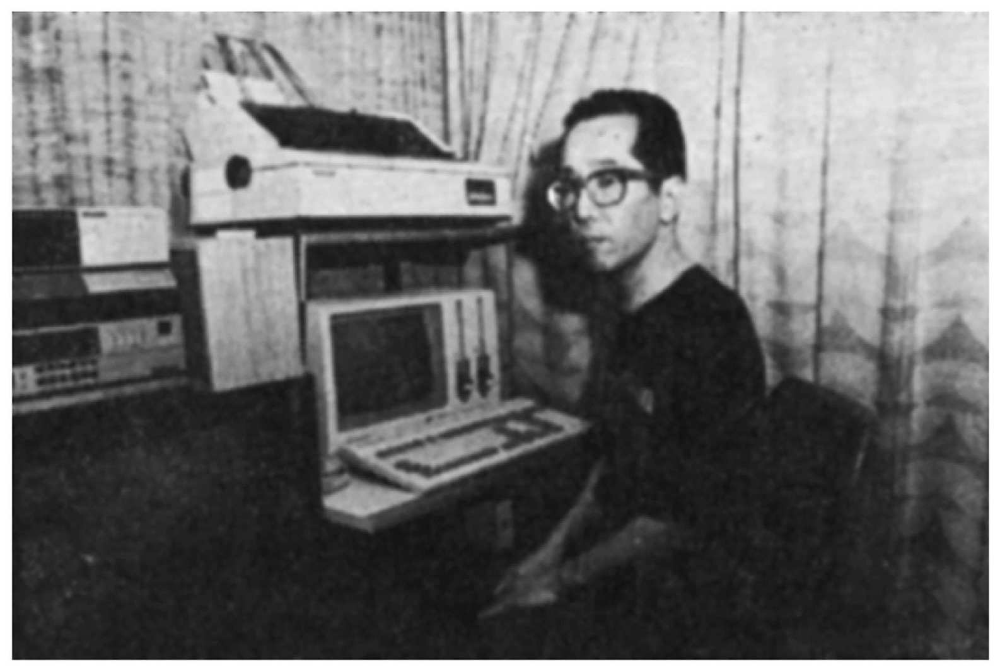
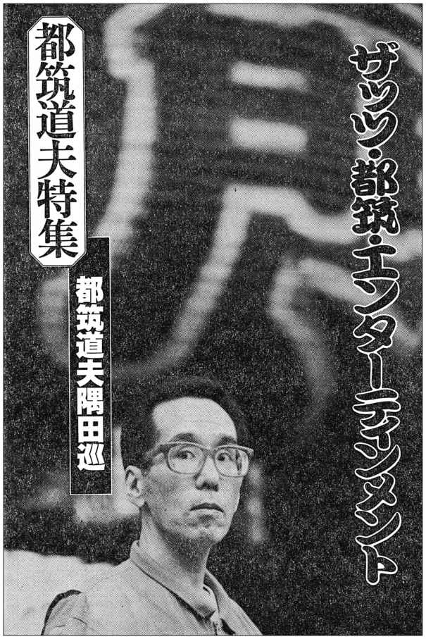
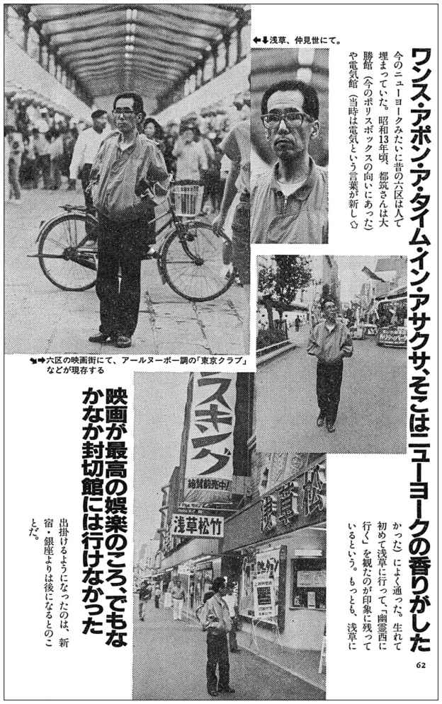
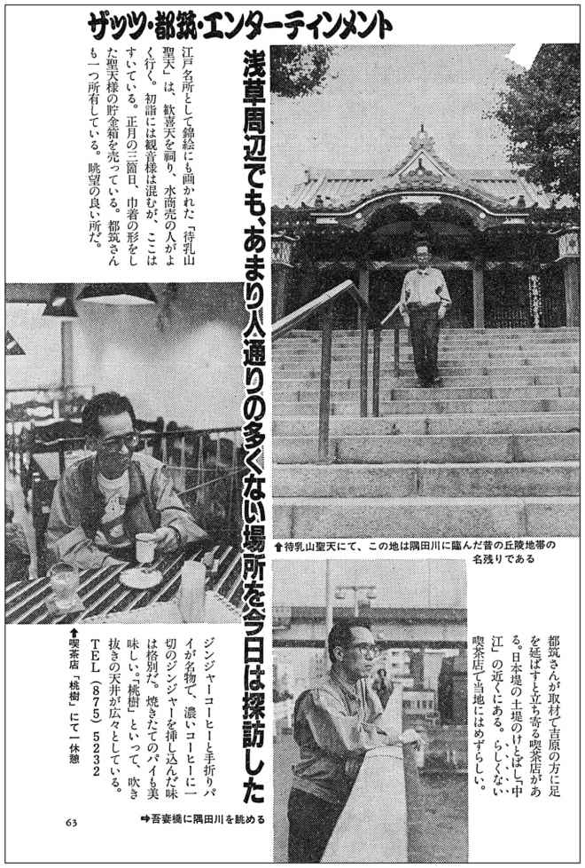
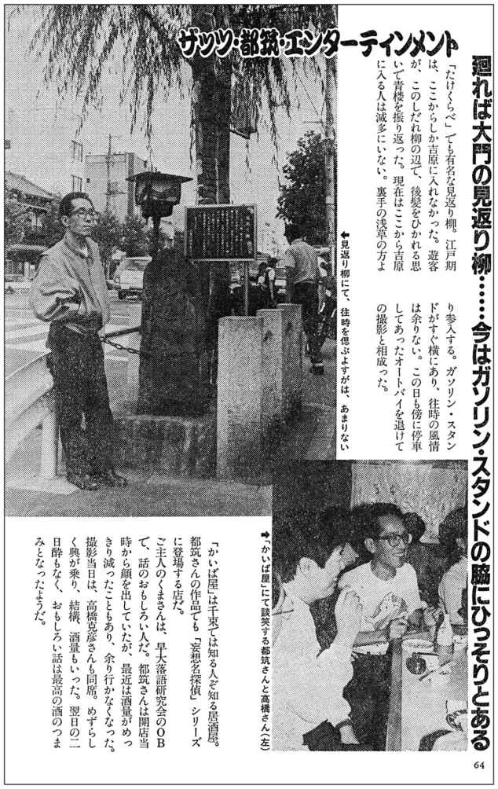
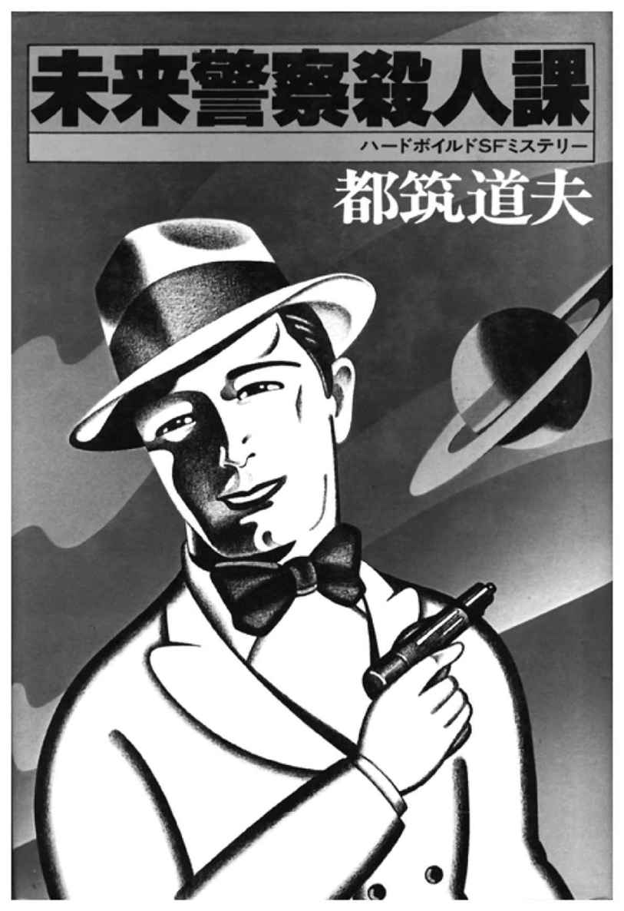
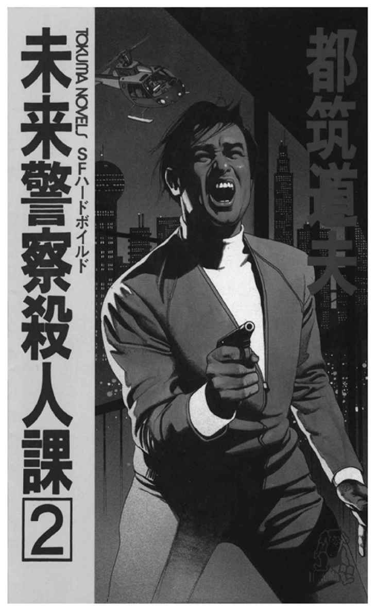

| 未来警察殺人課［完全版］ (創元ＳＦ文庫) | |
| 都筑 道夫 | |
| (2014) | |
この本は縦書きでレイアウトされています。
また、ご覧になる環境により、表示の差が認められることがあります。
本作品を電子書籍版に収録するにあたり、一部の漢字が簡略体で表記されている場合があります。
未来警察殺人課［完全版］
都筑道夫
三課――殺人課とは、殺人事件を捜査する部署ではなく、殺人を行う部署である。科学技術の発展とテレパシー能力者の存在により、殺人願望を抱く者が事前に察知されるようになった〝第二の地球〟では、殺人事件は起こってはならないものであり、ゆえに刑事たちの使命は殺人を起こす可能性のある者を強制的に排除することである。しかも刑事たちは全員、かつて殺人願望に取り憑かれ、一度は社会から排除された人間たちだった。短編の名手・都筑道夫を代表する傑作ＳＦミステリ連作全15編を１巻に収めて贈る。
東京創元社
未来警察殺人課［完全版］
都筑道夫
THE HOMICIDE DIVISONS ON THE NEW EARTH
by
Michio Tsuzuki
1979, 1986
未来警察殺人課［完全版］
登場人物
星野
東京警察三課の刑事、画家
エリノア・ローズベルト・ホイットニー
ケニア警察三課ナイロビ支部長
ミシェル・ラピア
ケニア警察三課のテレパシスト
水沢友造
ケニアで失踪した日本人
シドニー・スローン
星野を襲撃した男
アクリタス・ムラバ
ヌアクム・ホテルのマネージャー、テレパシスト
ティモシー・サトウ
狩猟クラブの社長
おれは拳骨を、相手の顔にめりこましたかった。鼻柱をくじいて、顔じゅうをぬるぬるの血だらけにして、次には腹に拳固をたたきこむ。かたい腹が、挽肉のように柔らかくなるまで殴って、地べたにのたうちまわらしたかった。血といっしょに、折れた歯を吐きだして、ゆっくり死んでゆくのを、眺めたかった。
だが、相手は銃を持っていた。睡眠銃でも、衝撃銃でもない。狩猟用の殺傷銃だった。われわれの祖先が、太陽系の第三惑星を、地球と呼んで住んでいたころに、武器としてポピュラーだった拳銃に似ている。博物館にいって、現在の地球に最初に移住してきた連中の遺品を見るたびに、おれは思うのだけれど、どうして人間というやつはいつまでも、過去のかたちにこだわるのだろう。住居にしても、衣服にしても、道具にしても。
それはとにかく、いかつい銃口をむけられては、楽しんではいられない。相手がカバンから、銃をとりだしたとたん、おれは三課の刑事専用の強力衝撃銃を発射していた。右腕の内がわにつけたホルスターから、衝撃銃をとびださせる。それをつかんだ右手を、まっすぐ相手の心臓にむけてのばす。スイッチを押すの三動作が、相手の銃をかまえる動きより、早いという自信はあった。
相手は銃を落して、からだをふたつに折りまげながら、他愛なく倒れた。おれは右手首をふって、衝撃銃をホルスターにもどしながら、走りよった。相手は三十五、六の白人で、地味なビジネス・スーツを着ている。銃をとりだしたときに、地面に投げだしたカバンが、そばに口をあけていた。おれは走りよると、まず殺傷銃をひろいあげて、安全装置をかけてから、カバンのなかに抛りこんだ。次に男のポケットをさぐる。ポケットのなかには、なにもなかった。身分証明書はもちろん、金も持っていない。カバンのなかにも、銃のほかには、なにも入っていなかった。そのカバンを右手にさげると、自分のスーツケースは左手に、おれはナイロビ空港の正面玄関へもどっていった。
ケニア警察の三課は、ちゃんとナイロビ警察署のなかにある。おれのところのように銀座のレストランの奥とか、ニューヨークみたいにポルノ・ショップの奥にあるよりは、やはり刑事としては気持がいい。空港でひろったタクシーを、警察署の前でとめると、おれは胸をはって、ビルの玄関へ入っていった。受付には、体格のいい制服巡査が、胸の金ボタンをはじきとばしそうな恰好で、腰をおろしていた。おれはカバンとスーツケースを床において、左手首の腕時計をはずした。
「ぼくは星野という日本人の旅行者ですが、前の公園で、これをひろったんです。拾得物係の部屋は、どこでしょう？」
おれがさしだした時計を、受付の巡査はじろりと眺めてから、大きな黒い手でつまみあげた。
「公園でひろったんなら、ここでいい。たしかに預かった。ご苦労さん」
「拾得物係の部屋を聞いてるんですがね、ぼくは」
辛抱づよく、おれはくりかえした。受付はうるさそうに、
「署のまわりの捨得物は、ここで預かることになってるんだ。あんたは旅行者で知らないだろうが」
「日本人の旅行者だよ」
「それが、どうした。日本とアフリカは違うんだよ。その風邪ひきのしょんべんみたいな黄いろい顔を、いつまでもそこへ置いておくと、公務執行妨害で逮捕するぞ」
かっとしたが、左右の廊下と背後のドアを見まわすだけの余裕は、おれにもまだあった。いい塩梅に、だれもいない。おれはいきなり右手をのばして、受付巡査の太い喉をつかんだ。
「このでくの坊、その時計を見たことがないのか。さっさと拾得物係の部屋を教えろ」
おれの剣幕で、やつはようやく、特別通達を思い出したらしい。黒い顔をふくれあがらしたまま、腕時計を握った手で、左のほうをさししめしてから、指を三本、立てて見せた。おれは腕時計をとりもどして、ポケットにほうりこむと、スーツケースとカバンをさげて、左の廊下へ行きかけながら、
「勤務成績に影響しても、おれを怨むなよ。風邪ひきのしょんべんが、余計だった」
受付巡査は黙って、喉をなでていた。左の廊下の三番目の部屋では、まったく応対がちがっていた。若い巡査が時計をうけとると、わきのドアへ入っていったが、すぐ出てきたときには、愛想のいい笑顔になっていて、
「遠いところをご苦労さまでした、星野さん。どうぞ、こちらへ」
わきのドアのなかは、ファイル・キャビネットが並んでいるだけの殺風景な小部屋だったが、おれが入って、笑顔の巡査が出ていくとすぐ、奥の壁が横にすべった。居心地のよさそうな事務室で、おれを出迎えたのは、意外なことに若い女だった。
「あなたが三課の課長さん？」
カバンとスーツケースを床において、おれが聞くと、女は無言で、腕時計を返してよこした。肉眼では見えない身分証明書が、ガラス蓋に刻んである腕時計だ。おれがそいつを左手首に巻きつけていると、女は落着いた口調で、
「ケニア警察三課ナイロビ支部長のエリノア・ローズベルト・ホイットニーです。旅はいかがでした、星野さん」
「ナイロビへついてからが、大変でしたよ。空港では殺されかけたし、ここの受付では時計をねこばばされかけた。玄関の大男は、まだ声が出ないでしょう」
エリノア・Ｒ・ホイットニーは苦笑しながら、デスクのむこうに腰をおろした。黒い笑顔が、すこぶる女らしい。大きなデスクの上に、おれはカバンをのせて、
「こいつを調べてください。殺傷銃が入っている。空港ビルと隣りの航空会社のあいだの路地の奥で、心臓発作を起して死んでいる男の調査も、お願いしたいな。三十代の白人ですよ。もうだれかが発見して、届けているだろうが......」
「あなたがやったの、その男」
エリノアは、うらやましそうな顔をした。おれはカバンをひらいて傾けて、なかの銃を見せながら、
「こいつを突きつけられたんだから、しようがないでしょう。ここじゃあ、珍しくもないかも知れないが、日本じゃ生涯、実物を見ないで死んじまうひとが多いしろものだ」
「なぜ突きつけられたか、心あたりはあるの？」
「それがないから、腹が立つんだ。ぼくが出張してきたのは、たかだか殺人を犯す可能性のある男を、探しにきたにすぎない。そいつは日本じゃ、社会的な地位のある男だから、医者の診断書をとって、このケニアに狩猟にきた。それで、危険のない人物になって帰ってくるだろう、と思って、こっちは――いや、ぼくはあきらめていたんです。ところが、おたくから、水沢友造が行方不明になった、という通報があった。そこで、東京の三課から、ぼくが派遣されたというわけだ。ナイロビはもちろん、ケニアに来たのは今度がはじめて、狙われるおぼえは、まったくない」
「ほんとうに、あなたが狙われたのかしら。つまり星野刑事という特定の人物が目的じゃなくて、金のありそうな旅行者が狙われたんじゃない？」
「ナイロビは、そんなに物騒なんですか。くどいようだが、こいつは衝撃銃じゃない。狩猟用の殺傷銃だ」
「ここは本格的な狩猟のできる世界唯一の国だから、たしかに危険人物は多いわ。だから、わたしたちの仕事も、やりがいがあるの」
と、エリノアは微笑した。おれたち三課の刑事にだけ、意味のわかる微笑だった。いや、精神病医にもわかるかも知れない。
「でも、そうね。殺傷銃でだれかれかまわず、つけねらうような危険人物がいたら、とうにわたしが処分しているわ。やっぱり、あなたと知って、狙ったんでしょうね」
「そうにきまってる。ぼくが入国手続をしていたときに、そばにいたんだ。つけているのは、すぐにわかった」
「あなた、テレパシスト？」
「テレパシーの持ちぬしなら、こんなに考えこみはしないよ。勘でわかったんだ。だから、ひと気のない路地にさそいこむと、案の定、こいつをひらいて、銃をとりだしゃあがった」
と、おれはカバンをたたいた。エリノアは目を細めて、
「相手が銃を――それも、殺傷銃をかまえてから、しとめたとすると、あなた、いい腕らしいわね。だから、派遣されたんでしょうけれど」
世界のほとんどの人にとって、警察とは交通渋滞を解消してくれたり、手もとから消えた人間や品物を、探してきてくれる便利な存在でしかないだろう。三課すなわち殺人課が、警察機構のなかにあることを知っているのは、関係者だけにかぎられている。
たとえば日本では、この三十年間、殺人事件は一件も起っていない。殺人がなければ、警察に殺人課も必要がないわけで、おもてむきには、二十五年前に廃止された。だが、人間がまったく、殺意を持たなくなったわけではない。なかにはおれのように、一種の先祖がえりだろう、異常な殺人願望の持主も生れてくる。けれども、発達した医療機構を、完全にコントロールしているコンピューターとテレパシストによって、殺意は事前に発見される。精密な状況分析がおこなわれて、最悪の場合、殺意をいだいた人間は、処分されてしまう。そのために設置されたのが警察三課で、とうに廃止されたはずの死刑を、ひそかに執行する課――つまり、殺人をあつかう課ではなく、殺人をおこなう課なのである。
潜在異常性格者が発見されると、たとえばおれは、衝動をはじめて実行に移そうとしたときに、逮捕された。特別な医療機関に送りこまれて、軽症ならば矯正される。おれの場合、矯正不能の重症で、これは死を意味していた。しかし、同時に、特殊な才能あり、とも判定されたおかげで、おれは生きがいを見いだした。強制的に手術をされて、訓練機関に送られて、三課の刑事になったのだ。手術はおれたちの性癖をコントロールするためのもので、あたえられた任務を逸脱した行為があった、と判断されたとき、あるいは上司に反抗したときには、体内に埋めこまれた装置が働く。どこにあるのか知らないが、コントロール・ルームで、おれの番号を刻んだボタンが押されると、一巻のおわり。おれはショック死してしまうのだ。けれども、なまじっかの矯正をうけて、腑ぬけのような生活を送るよりも、いまの状態のほうが、どれだけ増しかわからない。
こんどの任務の目標、水沢友造のように、金も地位もある場合には、当人が楽しみながら、問題を解決できる。水沢は年来の友人が、妻の愛人だったことに気がついて、殺意をいだきはじめたのだけれど、主治医がいちはやく察知して、手を打ったのだ。水沢は二カ月前、生きものをほんとうに殺す狩猟をしに、単身、ケニアに旅立った。代償行為にあきて、日本へ帰ってくるころには、殺意は雲散霧消して、細君と離婚するか、和解するかはとにかく、問題は解決しているはずだった。
ところが、一昨日、ケニア警察の三課から、東京三課へ連絡があった。水沢友造が投宿ちゅうのナイロビのホテルへ、もう五日間、帰ってこない、二課が捜査をしたが、行方が知れない、という通報だった。そこで、おれが飛んできたというわけなのだ。
協力要請の訪問をおえて、警察署を出ると、予約のしてあるヌアクム・ホテルへ入った。ヌアクムというのは、この星を第二の地球としたわれわれの祖先が、故郷忘じがたく、ここをケニアのナイロビとさだめるより以前の地名で、大きな平らな場所という意味の、いまは亡びさった先住民の言葉だそうだ。おれは平らで柔らかな場所が恋しかったので、腕時計の目ざましを一時間後の午後七時にセットすると、ベッドに飛びこんだ。急にこんどの出張がきまったために、遂行ちゅうだった任務を無理して片づけたので、おれはひどい寝不足の状態だった。こういうときには、一時間でも寝るにかぎる。
腹もへっていたので、予定どおりに目がさめた。一階のグリルへおりて行くつもりで、身仕度をととのえていると、フロントから電話があって、ロビーに客がきているという。エリノアが、刑事をひとりつけてくれるといっていたから、それが訪ねてきたのだろう。
おりていってみると、客はエリノア・ローズベルト・ホイットニー自身だった。それも、さっきとは別人のようなエリノアだった。ふくらんだ胸とくびれた腰が、やたらに目立つ銀いろのドレスを着て、目蓋とくちびるも、銀いろに塗っている。黒い肌がつややかに光って、おれは目がくらみそうだった。
「おどろいたな。支部長じきじきに、ご案内してくださる気じゃあ、ないでしょうね」
おれがいうと、エリノアはにっこり笑った。ロビーにおいてある鉢植えの巨大な蘭の花が、しおれてしまうのではないか、と思ったほど、華やかな笑顔だった。
「いけないかしら。あなたにあうまでは、部下に担当させる気だったけど、気が変ったの」
「寝不足と空腹で、げっそりしていてさえそうだとすると、元気をとりもどしたら、ナイロビじゅうの女性に、追いかけられるんじゃないかな」
「うぬぼれないでよ。空港でのことを聞いて、興味がわいたの。死んだ男は、ナイロビの人間じゃなかったわ。モンバサで監察局につかまって、療養所へ送られる直前に、脱走した男」
「矯正されるか、殺されることになっていたやつか」
「シドニー・スローンという名で、アメリカ生れの三十四歳」
「さすがに調査が早いね。あんたの興味を持ったのが、ぼくでないとわかったから、安心して食事ができる。つきあっていただけますか、ホイットニーさん」
「エリノアよ。あたしは星野画伯にやとわれたモデルなんだから、もちろんご馳走になるわ」
東京でのおれは、財産があって、のんびり仕事をしている画家、ということになっている。狩猟の許可をとる時間がなかったので、ここでも、それで通すことにした。だから、おれにつく刑事が、男なら案内人、女ならモデルの役割をつとめてもらう、という打ちあわせをしたのだった。
「女ならモデルね」
といいだしたのが、エリノアだったことを考えると、あのときから、自分で乗り出す気だったらしい。
「受付の巡査、病院へいったわ」
エリノアは、おれといっしょに、グリルのほうへ歩きながら、くすくす笑って、
「あの日本人に今度あったら、首をねじ切ってやるって、かすれ声でわめいているそうよ。気をつけたほうがいいわ」
「あんたの部屋からの帰りがけに、からかってやろうと思ったら、受付が交替していた。入院したのか、気の毒に――そんなに痛めつけるつもりは、なかったんだがね。空港でねらわれたのは、こいつらのだれかのせいだと思って、気が立っていたんだよ」
「待って――それ、どういうこと？」
と、エリノアが聞いたが、おれは返事を保留して、ウエイターにグリルのはじのテーブルに案内してもらった。おれたちは、最高のステーキ・ディナーとワインを注文した。食肉動物は、世界連邦政府の厳重な管理下にあって、おれはまだ、生きている牛を見たことがない。だが、この値段なら、本物の牛の肉が食えるだろう。日本へ帰って、経費を精算するときに、文句をつけられるだろうが、美人のモデルをつれた道楽画家としては、いたしかたあるまい。
「さっきの返事だがね、エリノア」
ワインをついで、ウエイターが離れていってから、おれは口をひらいた。
「ぼくが来るのを知っている人間は、数が限られている。東京からこっちへ電話をすれば、かならず足がつく」
「あたしたちを、疑ってたの？ それで、オフィスでの態度が、おかしかったのね。いまは考えが変った？」
「まだすこしは、疑っているよ。ただ空港に、テレパシストがいたんじゃないか、と考えはじめたんだ。水沢のことを、二課がしらべたのは、部外者にもわかる。日本へ報告がいって、だれかがやって来るとすれば、きょうあたりだ。ぼくは空港では、内面的には無防備だったから、テレパシストがいれば、身もとが読めたはずだ。シドニー・スローンは、テレパシストじゃないんだろう？」
「違うわ。ナイロビには、テレパシストは三人しかいないの。もうひとりいたんだけれど、三月前に病気で死んでしまったわ」
「残っている三人は？」
「優秀なのはふたり、それはもちろん、あたしたちのところにいるわ。もうひとりは、スカウトして、断られたの。能力もそれほど強くないし、心理テストの結果も安全と判定されたんで、自由にしてるんです」
「どんな人物だい？」
「このホテルのマネージャー」
「それじゃあ、こんな話はしていられないじゃないか」
「大丈夫、さっき狩猟クラブの社長といっしょに、出かけたわ。玄関ですれちがったの」
「きみのことを、見やぶられなかったかな？」
「あたしだって、訓練をうけた人間よ。危険距離に近づく前に、ちゃんと気がついて、用心したわ」
「水沢の部屋は、まだそのままになっているんだろうね」
水沢友造は、このホテルの十二階に、部屋をとっていたのだ。
「まだ十日にはならないから、そのままになっているけど、手がかりはないわよ。徹底的に調べたんだから」
「そうだろうね。では、食事がすんだら、水沢が夜、よく行っていた場所に案内してもらおうか」
おれは仕事の話を切りあげて、ステーキに専念した。うまかったけれど、これが本物の牛の肉かどうか、おれには証拠のつかみようがない。
ナイトクラブは、天井がガラス張になっていて、星空が頭上に美しかった。それだけ、店内が薄暗いということでもある。町はずれとはいいながら、これだけの広さに、たった一階だけの店をつくっているのでは、さぞかし高い金をとるのだろう。いかにも、水沢の気に入りそうなナイトクラブだった。
おれたちが入って行くとき、ドアマンがエリノアになにか囁いた。エリノアはガラス張のドアを入りながら、おれの耳に口をよせて、
「ヌアクム・ホテルのマネージャーが、来ているそうよ。気をつけてね」
いまのドアマン、実は刑事なのだろう。おれはうなずいて、ボーイのあとについて行った。まだそれほど夜がふけていないせいか、テーブルは半分ぐらい、ふさがっているだけだった。客のいるテーブルにだけ、蠟燭の火がまたたいている。視力に自信のあるおれでも、広いフロアの客の顔を、いちいち見さだめることは出来なかった。
エリノアも、かすかに首をふった。マネージャーは見つからないらしい。おれはボーイにいって、壁ぎわのテーブルに案内させた。こんな暗い店で、背中にまで神経をつかうのでは、かなわないからだ。空港いらい、おれはいささか、用心深くなりすぎているのかも知れない。
ガラス張の天井では、星空を背景にして、かすかな玉虫いろに光る布をまとった白人の女が、アクロバティックな踊りをおどっていた。おれたちが入ってきた廊下のカーテンでおおわれた出入口の上が、中二階になっていて、そこで楽団が演奏している。天井の踊りがおわると、壁のところどころが明るくなった。明るくなったところは、凹所になっていて、そこに裸女の彫刻が立っていた。ばかにリアルな彫刻だと思って、おれのすぐうしろのやつを振りかえったら、かすかに乳房が動いている。生きた女が、じっと動かずに、立っているのだった。
円形のフロアを取りまく壁は、アルコヴに生きたヌードを立たせて、静かに移動していた。白人もいるし、黒人もいる。アジア系の女もいた。それが、さまざまなポーズで静止したまま、ゆっくり客の目の前を、移動してゆくのだった。出入口のカーテンの右わきの柱のところで、壁は裏がわへ廻りこんで行くらしい。窓のない外壁とのあいだの空間を、女たちはアルコヴにおさまったまま移動して、こんどはカーテンの左わきの柱のところへ、出てくるのだ。
女たちの数は、五十人ちかいだろう。裏がわへ廻っているあいだが、女たちの休憩時間なのに違いない。あけっぱなしだった目を、ぱちぱちさせる。凝った肩をたたく。手をふり、足をふる。痒いところを搔く。いろいろなことを、するに違いない。トイレへ行きたくなったら、どうするのだろう。なんにも、はいていないのだから、しゃがみこむのは簡単だが、ひょっとすると、外壁の内がわに棚があって、そこに溲瓶がおいてあるのかも知れない。マラソンの選手が、さだめの場所においてある水の容器を取って、走りながら飲むように、溲瓶をとって移動しながら、するのだろうか、と考えて、おれは思わずにやにやした。
「なにがおかしいの？」
と、エリノアが聞いた。おれは笑いを手の甲でぬぐいとって、
「当ててみたまえ」
「溲瓶はないのよ。彼女たち、ショー・タイムまで我慢するだけ」
「きみはやっぱりテレパシストなのか、それとも、前史時代の古典に出てくるシャーロック・ホームズの生れかわりなのか」
「あなた、いま通りすぎた壁の女性の性器を、じっと見つめてから、水割に口をつけようとして、急にやめたわ。それから、その花瓶を眺めて、にやにやしだしたでしょう？ だから――なんて噓よ。実はあたしも、あなたとおなじことを考えて、彼女たちのひとりに聞いてみたの」
「おどろかすなよ。ところで、水沢はここへ、だれと来ていたんだろう？」
このナイトクラブには、ホステスがいない。ごく若い黒人ばかりのサーヴィス・ガールがいて、客が蠟燭を持ちあげると、どこからともなく寄ってくるのだ。
「狩猟クラブの女性案内人をさそったり、狩猟客の男同士とか、ホテルのバーで女をひろうこともあったわ」
と、エリノアは答えた。おれは首をかしげて、
「狩猟客はクラブへ入って、殺傷銃を借りたり、猟場へ案内してもらったりするんだろう？ 水沢はなんというクラブに、入っていたんだね」
「そのクラブの社長が、ヌアクム・ホテルのマネージャーといっしょに、むこうにいるわ。ハンターズ・パラダイスというクラブで、ここでは有名よ」
エリノアはようやく、マネージャーを見つけたらしい。視線をたどると、テーブルはかなり離れていた。瘠せぎすの白人と、肥った黒人が話しこんでいる。エリノアの様子から察すると、おれたちは相手のテレパシーの有効距離外にいるらしいが、用心するに越したことはない。
「どっちが、狩猟クラブの社長？ 白人のほうか、それとも......」
「白人のほう。ティモシー・サトウという日系よ」
「日本人の血が入っているようには、見えないな」
「ホテルのマネージャーは、アクリタス・ムラバというの。なかなかのやり手という評判よ」
「ハンターズ・パラダイスの社長が日系人なら、なんとか頼みこめないものかな。ぼくも猟がやりたくなった」
「それは無理ね。猟をするには、とってもむずかしい手続きがいるの。特にここへ来てから、話を聞いて、猟をしたくなったなんてひとの申請は、審査がとてもきびしいのよ。まず許可はおりないわ」
「金なら、いくらでも出すがな。きみ、サトウ氏をよく知っていたら、紹介してくれないか。なにか、裏の手があるはずだよ」
金のありあまった道楽者らしい調子で、おれはサトウに、うしろぐらい噂があるかどうか、聞いたのだった。けれど、エリノアは首をふって、
「あいにく、あたし、サトウ氏とは近づきがないの」
おれは肩をすくめた。そのとき、異様な叫びが起った。古代の戦いの叫びのような声だった。次のショー・タイムが来て、戦闘ダンスでもはじまるのか、と思った。だが、エリノアは立ちあがった。危険を感じて、おれも立ちあがった。叫び声といっしょに、出入口のカーテンをはねのけて、奇怪なものが走りこんできた。そいつはまっすぐ、おれたちのテーブルに向ってきた。
壁のアルコヴで、裸の女が悲鳴をあげた。ゆっくり動いている壁から跳びおりて、逃げまどった。ほかのテーブルの客たちも、立ちあがって逃げた。こんなやつらを見るのは、おれは初めてだった。ちょっと見には、裸の人間のようだったが、下半身は赤黒い毛におおわれている。上半身も赤黒かったが、つるつるとした皮膚で、頭には一本も毛がなかった。顔には、眉がなかった。大きな目と口をあけて、実にいやらしい顔つきだった。両方の耳が大きく、おまけに上のほうが、とんがってもいる。そいつが二人で、というべきか、二匹というべきか、わからないけれど、手に手に棍棒をふりかざして、おれたちに襲いかかってきたのだ。
おれはそっちに、右の手首をふって、衝撃銃をホルスターから、飛びださせようとした。相手の異様なすがたにはおどろいたが、襲いかかってくると知ると、おれの血は騒いだ。しかし、同時に三課の刑事としての訓練が、おれにブレーキをかけた。いまここで強力衝撃銃をつかったら、おれが刑事であることは、ばれてしまう。おれは手首を曲げて、飛びだしかけた衝撃銃を、ホルスターにもどしながら、エリノアを見た。エリノアは、衣裳から見て乳房のあいだか、脇腹か、太腿にホルスターをつけているに違いなかった。エリノアの右手が、太腿にのびた。おれはその手を押えて、
「逃げろ！」
と、叫んだ。ここまでは、妙なやつらがおれたちに襲いかかってくると知ってから、ほんの二十秒たらずのあいだのことだ。おれはエリノアを突きとばすと、先に突進してくるやつの棍棒から、身をかわした。かわしながら、靴のさきで、毛だらけの下腹を蹴った。そいつは床にひっくりかえったが、まだ次のやつがいる。おれは拳骨を、そいつの肩にたたきこんだ。同時に腕をねじあげて、棍棒を振りおとした。相手はもういっぽうの手で、おれの顔をかきむしろうとした。おれはすっかりうれしくなった。素手でこいつらを、殺せるのだ。
しかし、先に床にひっくり返ったやつが、棍棒をひろって、起きあがりかけていた。それはいいのだが、エリノアが目をかがやかして、身がまえている。むきだしの腕に、きたえた筋肉が、盛りあがっていた。美人のモデルがこんな場合に、格闘技のひと通りでない素養のあるところを見せるなんて、もってのほかだ。おれは目の前の相手の鼻っ柱に拳固を一発くらわすと、悲鳴があがったときには、エリノアの手をひっぱって、ほかの客たちのほうへ逃げだしていた。衝撃銃を手にしたガードマンが二、三人、出入口から駈けこんできたのは、そのときだった。
「ずるいわよ、星野。あなたばかり、いい思いをして」
エリノアの目は、まだ興奮にうるんでいた。おれたちはナイトクラブを出て、ひろい道を歩いていた。ガードマンと入れちがいに、おれたちは玄関を出ると、レジの女に数枚の紙幣を投げつけて、
「こんなぶっそうな店には、いられやしないぜ。それで足らなきゃ、ホテルにとりに来い。ヌアクムだ」
とめる声を聞かずに、飛びだしてきたのだ。入口にドアマンの姿はなかった。おれが酔ったような足どりを見せて、ホテルのほうへ歩きだすと間もなく、エリノアは文句をいいだしたのだった。
「冗談じゃない。ぼくだって我慢して、逃げだしたんだ。きみにはもっと、我慢してもらわなくちゃあ......それにしても、ありゃあ、なんだい？」
と、おれは小声でいった。エリノアはやっと気づいたように、目をしばたたいてから、
「あれが、狩猟の標的。ここではクーと呼んでるわ。知らなかったの」
「そこまで、知識をつめこんでおく暇がなかった。まるで人間みたいだが......」
「動物よ。先住民が奴隷として飼育していた動物の生きのこり。ケニアにだけ、残ってるの。でも、繁殖力がとても旺盛なんで、狩猟につかうことが出来るのよ。一定量より減らないように、ちゃんとコントロールしているけれど」
「狂暴らしいな」
「人間を見ると、むかって来ることがあるの」
「いまのやつらは、狩猟区から逃げ出してきた、というわけか」
「そうでしょうね」
「たびたびあるのかい、そういうことが？」
「ときたまね」
「ときたまか。いまになって、酔いが出てきたようだ。ちょっと肩を貸してくれ」
と、おれはエリノアの肩に手をかけて、引きよせながら、声をひそめた。
「つけられているらしい」
「あたしも、そんな気がするの」
と、囁きかえしてから、エリノアは普通の声にもどって、
「やっぱり、歩くのは無理よ。ちょうど来たから、タクシーをひろいましょう」
なるほど、前方から空車が近づいてくる。エリノアが手をふって停めて、おれたちは乗りこんだ。
「リバーサイド・ホテルへ行って」
と、エリノアが運転手にいった。たぶんヌアクムとは反対方向にあるホテルで、そこへ達するまでのあいだに、尾行をたしかめるつもりなのだろう。タクシーは路上に白くエアを噴射して、くるりと方向転換すると、市街の中心部にむかった。商店の飾り窓は、まだ明るくともっているが、あまり人通りはない。おれはエリノアの肩に、頭をもたせかけながら、サイドミラーに目をやった。後方に三台ばかり、タクシーのライトが見える。エリノアはおれの腕をゆすぶって、
「しっかりしてよ。だめねえ」
やはり、尾行車を確認できないでいるらしい。おれたちの車は、公園のなかへ入った。左手の森のむこうが、ナイロビ警察署だ。道の両がわには、巨大な花をつけた並木が美しい。エリノアが、甘い声でささやいた。
「この道をつきあたったところが、ナイロビ川の堤防よ。右へ行くと、すぐもうリバーサイド・ホテル」
そのとき、いきなり前のドアがあいた。運転手が外へ飛びだした。ドアがしまった。車はもちろん、走りつづけている。運転席と客席のあいだは、厚いガラスで仕切られている。おれとエリノアは、それぞれのサイドのドアをあけようとしたが、びくともしない。窓もおりない。おれは悪態をついた。
「ここは治安の悪いところだな。きみが潑剌としているわけが、よくわかった」
「そんなことより、レーザー銃は持っていないの？」
「重装備が必要だとは、思いもしなかったからね」
「あたしもだから、怒れないけど、このままじゃ、車もろともナイロビ川に水葬よ。衝撃銃じゃ、役に立たないでしょう......」
「無理だね。ガラスにひびが入ったとしても――いや、待てよ」
とたんに、運転席との仕切りのガラスが、あざやかな光彩を放った。それが左右の窓ガラスにも映じて、おれの頭はからっぽになりかけた。さまざまな色が渦を巻いて、強力な催眠パターンをえがきだしたのだ。投写機は、運転席に仕掛けてあるのだろう。こちら側からでは、どうにも出来ない。
水沢友造という日本人を探しだして、片づければ、それですむはずだった。むしろ、ものたりない人間狩りのつもりで、おれは東京から飛んできたのだ。それなのに、こんなに執拗に狙われて、死んで行かなければならないのか、と思うと、おれは激しい恐怖にとらわれた。その恐怖が、おれをわれに返らせた。催眠パターンがうつりだす直前に、考えかけていたことも、思い出した。
「エリノア、負けるな」
恍惚と目を見ひらいて、パターンに吸いよせられているエリノアの頰を、おれは思いきり、ひっぱたいた。
「楽に死なしてくれようなんて親切は、お断りするんだ。おれをひっぱたけ。ひっぱたきながら、衝撃銃をとりだせ」
「だって、衝撃銃は役に立たないでしょう？」
「ここじゃあ、だめだ。だが、窓に水圧がくわわれば、なんとかなるかも知れない。車が川に飛びこんだら、うしろの窓ガラスにむけて、フル・パワーで放射するんだ」
おれは片手でエリノアをひっぱたきながら、片手で衝撃銃をかまえた。エリノアも目をさまして、おれをひっぱたきながら、衝撃銃をかまえた。車が立ちあがった。堤防にのりあげたのだ。と思うと、おれたちのからだは、車首のほうに引っぱられた。車は堤防をのりこえて、ナイロビ川へ飛びこもうとしている。
「いまだ」
車が水面に突入したとたん、おれは衝撃銃のスイッチを押した。一瞬、気が遠くなった。だが、次の瞬間、おれは水の勢いで、気をとりなおした。催眠パターンは、消えている。うしろの窓ガラスも、くだけ散っている。おれは水をしたたか飲みながら、エリノアのからだを、窓から押しだした。
水は冷たかったが、かえって気持がよかった。おれはエリノアの腕をつかんで、懸命に泳いだ。正直なところ、エリノアの腕につかまって、というべきかも知れない。ようやく水面に首が出ると、おれたちは深く息を吸いこんでから、顔を見あわして笑った。職業意識というやつだろう。ふたりとも靴はぬげたが、片手に衝撃銃だけは握りしめていたからだ。
「おかげで酔いがさめた。あがろう」
おれはエリノアを元気づけると、堤防へむかって、泳ぎだした。ひろい川のまんなかで、この上、スピード・ボートかなんかで襲われたひには、たまったものではない。おれの衝撃銃のエネルギーは、からになっている。エリノアのも、同様だろう。泳ぎながらでは、飛蹴りも出来ないし、拳骨もボートの上まではとどかない。だが、さいわい川面は静かなまま。おれたちは堤防に泳ぎついた。
堤防の上の道まで匍いあがって、おれたちはひと息ついた。おたがいに濡れ鼠で、ひどい恰好だった。濡れた髪が、頭の地肌にはりついて、エリノアの黒い顔は、童女みたいに美しい。だが、服から水をしたたらした姿は、滑稽だった。おれたちは、手をとりあって立ちあがると、大笑いした。
「とにかヌアクム・ホテルへ帰って、着がえをしよう。おれのシャツとズボンが、なんとかきみにも着られると思うよ。そのまんまより、増しだろう」
「歩いても、そんなに遠くはないけれど、ホテルじゅうの評判になるわよ。聞かれたら、酔っぱらった勢いで、泳いだというしかないでしょう？」
「そうだろうね。いいさ、悪名高き日本人観光客になってやる」
なるべく暗い道をえらんで、エリノアに先導してもらった。とちゅうで、食料品店があいているのを見つけて、おれはポケットをさぐった。濡れた紙幣が、何枚か入っている。おれは酔った足どりで、店へ入っていって、目をまるくしている店主からウイスキーを二本、買った。
街路にもどると、二本とも口をあけて、エリノアにもひとくち飲ませ、おれも飲んでから、一本の中味を、ふたりで頭からあびた。からになった一本を、エリノアに持たせて、おれたちは腕を組んで歩きだした。ヌアクム・ホテルの玄関に近づくと、おれは歌をうたった。残りの一本をエリノアの口にあてがい、ひとくち飲ませては、おれがラッパ飲みしながら、威風堂堂、玄関に入っていった。たちまち、目という目が、おれたちに集ったことは、いうまでもないだろう。
部屋へ入ると、おれはウイスキー壜をほうりだして、スーツケースをあけた。二重底から、衝撃銃用のエネルギー・ボンベをとりだして、おれの銃をいっぱいにし、エリノアの銃もいっぱいにしてやった。これで、ひと安心だった。
エリノアは、濡れた服を床にぬぎすてて、バスルームから、大小のタオルを、三枚、持ってきた。大きなタオルを、からだに巻きつけて、濡れたパンティを蹴りぬぎながら、おれに一枚、タオルを投げてよこす。おれはそれを受けとって、エリノアが髪をぬぐっている姿に見とれながら、濡れた服をぬぎはじめた。おれの動物的な本能が、警告を発したのは、そのときだった。おれとエリノアのほかに、人間がそばにいる。まだ見はられている、という強烈な感覚だった。夕方、この部屋に入ったとき、チェックは一応しておいた。盗視テレビも、盗聴マイクも、仕掛けてなかった。だが、留守のあいだに、仕掛けられたかも知れない。
おれは上半身、裸のまんまで、部屋じゅう見てまわった。二度目のチェックだから、手間はかからない。テレビも、マイクもなかった。とすれば、ドアの外にだれかいて、その人間はテレパシストということになる。おれはエリノアを見つめて、タオルの下の素肌を、懸命に思いえがいた。思いえがきながら、うしろに近づいて、いきなりタオルに手をかけた。
「エリノア、おれのことだけ、考えてくれ。ほかの男のことなんか、考えるな」
「なによ、いきなり」
エリノアはタオルの前を押えて、片手でおれを突きのけようとした。おれはドアを指さし、自分の頭を指さしてから、エリノアをかかえあげて、ベッドへ運んだ。つややかに黒いからだは、ベッドにはずんで、悩ましい曲線をえがいた。おれは裸になって、エリノアにおおいかぶさりながら、
「おれのことだけを、考えるんだぞ。ほかのことを考えたら、殺してやる」
「あなたもよ、星野。あたしのことだけ、考えて」
エリノアは、おれの首に両手をからみつかして、銀いろのくちびるを押しつけてきた。おれはたちまち、努力しなくとも、ほかのことは考えられなくなった。強靭にしなうからだをベッドに押えつけて、おれが首すじから乳房へ、くちびるを移すと、見事なふくらみに銀の口紅が、かすかに残った。
くびれた腰をひねり、盛りあがった胸をそらして、エリノアはうめき声をあげた。おれが黒檀の扉をひらいて、紅い珊瑚をさぐりあてると、エリノアは猛獣になった。おれの腰をしめあげる太腿の力は、ものすごかった。おれは大汗をかいて、エリノアの興奮を鎮めてやった。しばらくのあいだ、おれたちは抱きあって、動かないでいた。やがて、白い歯でかすかに笑って、エリノアがいった。
「すばらしかったわ。あなた、日本人ではないみたい」
「もう大丈夫らしいね。あきらめて、帰ったんだろう」
と、おれはドアのほうへ、顎をしゃくった。エリノアは小声で、
「アクリタス・ムラバ？」
「うん、ナイトクラブから、ぼくたちを尾行したのは、やつだったんだろう。タクシーの罠にはまったのを確かめて、やつはここへ帰ってきた。ところが、ぼくらが生きて帰ってきたんで、様子をうかがいに来たにちがいないよ」
「とっさのテレパシー除けとしては、たしかに名案だったわ。でも、それだけだったの？」
「そのつもりだったんだが、すぐにそうでなくなった。事件が片づいても、きみが東京への報告を遅らしてくれて、一日よけいに滞在できると、うれしいんだがね」
エリノアは返事のかわりに、くちびるを押しつけてきた。息がつまりそうになって、おれはエリノアの肩を押しのけた。
「あたし、シャワーをあびてくる」
裸のままベッドを離れて、エリノアはバスルームへ行った。ビニールのシャワー・カーテンが、音を立てるのが聞えた。と思うと、さしせまった声で、
「星野」
おれはタオルを腰に巻いて、一足飛びにバスルームをのぞいた。
「あなたの勘は、するどいわ。アクリタス・ムラバは、確かにいたわよ」
エリノアは、浴槽を指さした。浴槽は水がいっぱいになっていて、そこにホテルのマネージャーがいた。テレパシストのマネージャーは、盛装のまんま、冷たい風呂に入っていた。仰むけに寝て、平べったい鼻の頭まで、水につかっていた。
「死んでるわよ。さっきタオルを取りに入ったときには、シャワー・カーテンがしまっていたんで、気がつかなかったの。気がついても、手遅れだったでしょうけど」
と、エリノアはため息をついた。おれは水のなかに手をつっこんで、死体にさわってみながら、
「窒息したか、心臓麻痺を起したか、とにかく死んでから、そう時間はたっちゃいないな。ぼくらが帰ってくる少し前に、やられたんだろう」
「警察を呼ばないわけには、行かないわね」
「きみのところのテレパシストを呼んでくれ、エリノア。大急ぎだ。こうなったら、ぼくらが刑事だとわかっても、かまやしない。すぐ飛んで来させろ。残存思考が読めるかも知れない」
「そうだわ」
エリノアは叫んで、左手の中指にはめた指輪の石を、右手の爪で起した。光のあたり加減で、半透明な茜いろのなかに、鳥や一角獣や蝶や踊っている少女のすがたが、浮きあがって見える石だ。それが、はねあがったあとには、黒い金属のスイッチがあった。エリノアは右手の指で、そのスイッチをいそがしく叩いた。次にスイッチを、くちびるの下にあてた。黒い金属凸起の微妙な動きを、皮膚で感じとるためだろう。やがて、石をもとに戻すと、エリノアはいった。
「すぐ来るわ。三課に所属しているテレパシストは、ミシェル・ラピアというフランス系のケニア人。当直の三課の婦人警官に連絡をとらしたんだけど、アパートが近くだから、すぐ来るはずよ。ついでに婦人警官に、あたしの着がえも、持ってきてもらうことにしたわ」
「へんに思われやしないかな。それまで、ぼくのシャツとズボンを、はいていたまえ。部下を迎えるのに、その恰好は強烈すぎる」
エリノアは自分のすがたに、あらためて気づいたような照れかくし笑いをして、バスルームを出ていった。おれもあとから出ていって、ちょうど身仕度をおわったときに、ドアにノックがあった。妙なノックで、一種のリズムがあった。エリノアがドアに走りよりながら、
「ラピアよ」
ミシェル・ラピアは、四十二、三の丸顔で、ずんぐりした小男だった。セピアいろの顔に、小さな目が葡萄みたいに光っているところだけが、鋭さを感じさせるけれど、それ以外は平凡で、テレパシストにはとても見えない。ラピアはおれに手をさしだして、
「日本からいらした東京警察三課の星野さんですな。いや、こんな時間に呼びだされた用件は、あなたと部長を見たとたんに、わかりました。さっそく、やってみましょう」
と、握手はそこそこに、バスルームへ入っていった。テレパシストはこれだから、つきあいづらいが、こういうときには始末がいい。十分ほど遅れて、婦人警官がエリノアの着がえを届けにきた。まだ少女っぽくて、健康そうで、かわいい黒人むすめだったが、どうして油断のできないところは、手を見ればわかる。着がえのバッグをさしだす手が、不つりあいに大きく、骨ばっていたのだ。この手でチョップをくらったら、あのクーという動物の首の骨でも、折れてしまうだろう。おれにうしろをむかして、エリノアが新しい服を着おわったときに、バスルームのドアがあいた。
「ご希望どおり、残存思考は採取できましたよ。あぶないところで、間にあいました」
赤い表紙のノートをひらひらさせながら、ラピアは得意そうに笑った。
「しばらく前に、採取はおわっていたんですがね。部長が着がえをなさっていたので、出てくるのを控えていたんです」
準備はととのった。ナイロビ警察の屋上に、四人のりのヘリコプターがとまっている。前の座席には、操縦士と二課の行動班長。うしろの座席に、おれとエリノアがのりこむと、ヘリコプターはローターをまわして、上昇した。
ケニアの空は晴れわたって、眼下に整然たるナイロビ市街のビルディングが、窓ガラスをきらめかしている。空気もさわやかだし、おれは腰につけた殺傷銃のホルスターに手をやって、実にいい気持だった。エリノアには、手馴れているような顔をしたが、正直をいうと、殺傷銃を身につけて歩いたことはない。きょうこそ実際につかえる、と思うと、おれの心は勇みたつのだった。
ナイロビ市街を飛びぬけると、眼下の風景は一変した。ゆうべのナイトクラブのあたりから、建物がまばらになって、狩猟クラブがいくつか並んださきは、青黄いろい土地と色さまざまな森が、大きくひろがっている。狩猟地区をかこうフェンスが、銀いろにかがやいて、その向うがわを、狩猟車が走りまわっていた。
蛇に羽がはえたような鳥が、勇敢にヘリコプターに近づいてきた。だが、ローターの起す風に吹きのけられて、長いしっぽを巻いて、逃げさった。これも、ケニアにしかいない珍奇な生きものだが、数がすくないので、保護鳥になっている。
「あれだわ。あれがハンターズ・パラダイスの狩猟車よ」
小さな双眼鏡で、下界を見ていたエリノアが、操縦士の注意をうながした。
「あの白い車体に、日の出のデザインがしてある車」
そういう車が二台、眼下の平地で、クーの一団を追いまわしている。赤黒い直立動物たちは、森を目ざして逃げようとしていた。狩猟車からは、殺傷銃が発射されているらしく、クーが一匹、二匹、血を噴いて倒れるのが、見てとれた。
「そろそろ、おりてもいいんじゃないか」
血しぶきに興奮して、おれはどなった。エリノアは首をふって、
「もうじきクーが森へ逃げこんで、客たちは車をおりるはずよ。そうしたら、サトウだけが、車に残るわ」
待遠しいが、しようがない。上空で旋回するヘリコプターから、期待をこめて見おろしていると、やがてクーの一団は、大きな森へ逃げこんだ。狩猟車がとまって、客がおりはじめた。エリノアが操縦士の肩をたたく。操縦士はうなずいて、ヘリコプターを下降させた。
すこし離れた木かげヘ、ヘリコプターが舞いくだると、おれとエリノアは飛びおりた。ヘリコプターは、たちまち舞いあがる。おれは二課の行動班長に手をふってから、木かげを出た。前後してとまっている狩猟車の前の一台に、ティモシー・サトウがよりかかって、タバコを吸っている。おれとエリノアが大股に近づくと、サトウは怪訝そうな顔をむけた。すぐ鼻さきの森のなかから、殺傷銃の銃声が聞える。おれはわくわくしてくる心を押えて、サトウに近づくと、やわらかく話しかけた。
「ぼくをご存じでしょう、サトウさん？」
「さあ、どこかでお目にかかりましたかな。わたしとおなじ日系人のかたらしいが......」
と、サトウは微笑を浮かべて、小首をかしげた。おれも笑いかえして、
「日本からはるばる、水沢友造を探しにきた刑事ですよ。こちらはナイロビ警察のエリノア・ローズベルト・ホイットニー」
「はじめまして――ご苦労なことですな。水沢さんは、わたしどものいいお客さまだったが、どうなすったんでしょう？ まだスケジュールが残っているのに、ぜんぜん現れなくなってしまって......」
「あなたに殺されたんですよ。もうわすれたとは、ケニアの日ざしが、あなたの記憶力に、悪い影響をあたえているのかな？」
「これは刑事さん、ご冗談がお好きとみえる」
「アクリタス・ムラバが、すべて自供したんです。あなたは狩猟客にわたす殺傷弾を横流しして、睡眠弾でごまかしていた。割りあてのすくないクーを、有効になんども使う一石二鳥の金もうけだ。それだけじゃない。うんと金をだす客には、クーのなかに本物の人間をまぜて、射たせていた。アフリカ各地から、自殺狂の人間をあつめてきたり、療養所から矯正されたばかりの人間をさらってきたり、なかには客を殺させてやるから、とだまして、殺人狂をつれてきたりしたそうだね。殺人狂でも、殺傷銃にはかなわない。獲物が狂暴だと、客はかえってよろこぶらしいな」
おれはここで、にやりと笑った。
「ぼくは、たったひとりの人間を狩りだしにきたんだが、ここではもっと、大がかりな人間狩りが行われていたわけだ。しかも、あんたは死んだ人間を、ムラバに売って、さらにもうけていた。ムラバはホテルでつかう食肉に、それをまぜて使っていたんだ。ゆうべヌアクム・ホテルで、ステーキを食ったぼくとしちゃあ、うれしくない話だよ」
おれは今度は、顔をしかめた。
「しかし、あれはうまかったから、百パーセント、牛肉だったと信じることにするよ。ところで水沢を上客とみて、あんたは人間狩りを、ほのめかした。水沢は殺人願望の持ちぬしだが、それほど強度でないし、クー狩りで治りかけていた。おまけに日本人らしく、ゆうずうのきかない正義感を持っていたから、反撥した。もうひとつおまけに、大金持の美食家だから、ホテルの肉の味がおかしなことに気づいた。それで、警察か新聞社へ駈けこむ決心をしたのを、テレパシーでムラバが知って、あんたに知らせた。あんたは、水沢を殺した。死体が見つからないはずさ。やっぱり、ムラバに売りつけたそうだねえ」
「わたしが人殺しなら、医者が気づいて、警察に報告するはずでしょう？」
「あんたは狩猟家、いつもクーや人間を殺して、満足しているんだから、医者にわかるはずはない。話をつづけよう。日本人の狩猟客を、行方不明のままではすまされない。ぼくが派遣されるという情報を、キャッチしたあんたは、水沢の代償治療がうまく行かなかったように、見せかけようとした。モンバサの療養所から、シドニー・スローンを脱出させて、空港でぼくを殺させ、水沢の仕業に見せかけようとしたんだ。そうすりゃ、警察は水沢が自分の意志で、行方をくらましたと思うからね。モンバサ療養所のテレパシストが、なにも気づかなかった点から考えても、あんたがたが目星をつけて、脱出させるまで、スローンがこの計画を知らなかったことは、確かだろう」
と、おれは指摘しておいて、先へすすんだ。
「スローンが失敗すると、あんたは計画を変更して、ナイトクラブに現われたおれたちを、クーに襲わせ、タクシーの罠に追いこんだ。いっぽうホテルのおれの部屋で、脅えて重荷になりはじめたムラバを、あんたは殺した。これも一石二鳥の筋書で、ムラバが水沢殺しの犯人、おれがそいつを逮捕しそこなって殺してしまった。日本の刑事としちゃあ、この大失敗、酔ってまぎらわさずにはいられない。エリノアをさそって、酔ってのドライヴ、ナイロビ川に車ごと落ちて死んでしまった、ということにするつもりだった。ところが、そうは問屋がおろさない」
おれが笑うと、エリノアが口を出して、
「わたしまで巻添えにしようなんて、ゆるせないわ。わたしたち、車から脱出して、星野の部屋へいって、まだ生きているムラバを発見したのよ。あと五分、発見が遅れたら、ご希望どおりに死んでいたでしょうけど、ムラバは警察病院で意識をとりもどして、洗いざらい自供したわ」
はったりの聞かせ台辞を、エリノアに奪りあげられてしまったが、かえってそれが効果をあげたらしい。サトウは車にとびのって、
「いうことは、それだけか」
「ハンターズ・パラダイスは、いまごろ二課の行動班が、天井裏から床下まで捜索しているよ。あきらめろ、ティモシー」
と、おれがいうと同時に、サトウは車の警笛を鳴らした。普通の警笛ではない。妙な音色だ。とたんに森のなかで、ものすごい声があがった。狩猟客たちが、顔いろ変えて、走り出てきた。そのあとから二十匹、いや、三十、四十、五十匹はいるかも知れない。クーたちが棍棒をふるいながら、飛びだしてきた。きょうの客たちは、睡眠弾をまぜて渡されている組らしい。ゆうべのクラブの一件から、あるていど予想はしていたが、サトウはクーたちを、笛の音色かなにかで、自由にあやつることが出来るのだ。
サトウは得意げだが、こうこなくてはおもしろくない。おれは殺傷銃をひきぬくと、クーたちに発砲した。エリノアも目をかがやかして、殺傷銃を射ちまくりだした。たちまち、血みどろの乱戦になった。客たちも興奮して、銃弾にきき目がないとわかると、銃をさか手に持って応戦しはじめた。おれのそばにいた肥った中年女なんぞは、目のいろを変えて、すぐ前でクーの一匹と取っ組みあっている中年の大男を、ぶんなぐりだした。たぶん、亭主なのだろう。
おれは弾倉を換えては射ち、換えては射ち、右に左に走りまわって、クーを倒した。そばに来るやつは、銃身で首をたたき折った。東京でこんな真似をしたら、たちまちコントロール・ルームでボタンを押されて、あの世へ行っているだろう。だが、臨時にコントロールを受けもっている女部長は、近づくやつを射ちとばし、横からくるやつを蹴りたおし、倒れたやつの顔に至近弾を射ちこんで、返り血だらけになりながら、恍惚の表情をしている。ここは刑事の天国だ。
旗いろの悪さに、サトウは車を走りださせた。けれど、二課の行動班長が、打ちあわせ通りヘリコプターを舞いおりさせて、車の行く手を牽制してくれた。サトウは車をとびおりて、森へ逃げこもうとした。エリノアが銃をかまえる。おれはどなった。
「射つな。そいつは、おれが貰った」
射程範囲ぎりぎりまで、サトウを逃がしておいてから、おれは両手で殺傷銃を握って、狙いをさだめた。引金をひくと、サトウはあっけなく倒れた。しまったことをした。足を狙って倒しておいて、ゆっくり殴りころしてやればよかった。おれが舌うちをしていると、クーの最後の一匹をしとめたエリノアが寄ってきて、死体の山を眺めわたしながら、
「見事だったわ、星野。こんな凄いの、あたし、はじめて」
一時間後、おれたちはナイロビ警察署の三課の支部長室へ、もどってきていた。捨得物係のファイル・ルームの奥にある居心地のいいオフィスだ。エリノアに呼んでもらったミシェル・ラピアが、部屋に入ってきたとき、おれは東京の低級な酒場でおぼえた歌を、頭のなかで唄っていた。女陰の俗称が、やたらに出てくる卑猥な歌だ。ラピアはあっけにとられて、おれの顔を見た。おれは頭のなかの歌をやめて、にやりと笑った。
「あんたのお望みどおり、ぼくはサトウを殺してきた。だから、今度はあんたが、自供してくれる番だぜ、ラピア」
「なんのことです、星野刑事。まだ興奮しておいでのようだが......」
と、ラピアは機嫌をとるように、もみ手をした。おれは首をふって、
「いや、冷静だ。ここの三課に共犯がいることは、最初からわかっていた。さもなきゃ、ぼくのことやシドニー・スローンのことが、サトウに知れるはずがないもの。もっとも、ぼくのことは、テレパシストが根気よく、空港で張っていりゃあ、わかっただろう。だから、ムラバがテレパシストと聞いて、ぼくの考えはぐらついた。だが、よく考えてみると、スローンのことは、三課の人間じゃなければわからない。それに、サトウの計画は、ここに協力者がいてこそ、うまく行く。ことにタクシーの罠なんぞは、そうだ。ぼくはエリノアまで疑っていたよ、ムラバの死体を見るまでは」
「おもしろい推理ですな。しかし、それはあくまで......」
「まあ、聞けよ。ムラバは強力でないにしても、テレパシストだ。テレパシストをあんなふうに殺せるのは、より強力なテレパシストだけじゃないかね。ぼくに関する資料を読んで、あんたは二重、三重の計画を立てた。次から次と失敗しても、最後には自分だけは助かる、という手だよ。ぼくが残存思考を思いつかなかったら、どうする気だった？」
「解剖して脳をとりだせば、記憶のひだを読みとれる、と提案したでしょうね」
と、ラピアは微笑した。おれも微笑を返して、
「洗いざらい話して、ぼくに手柄を立てさせて、自分だけ助かるんだから、うまい手だな。真相を知れば、ぼくはサトウを殺すにきまっているから、死人に口なし。だけど、残存思考というのは、もっと曖昧なものじゃないのかねえ。あんたの話は、くわしすぎたよ」
「もっともです。わたしはあなたを、決して甘くみなかったつもりだが、こっちはテレパシストだという、うぬぼれがあったんですな、きっと――しかし、万一のときのことは考えて、供述書は書いておきました。お察しでしょうが、サトウやムラバは道具にすぎない。この事件の主犯は、このミシェル・ラピアです。供述書をとってきましょう」
ラピアはおれたちに背をむけて、戸口へ歩きかけた。と思うと、くるりとまた向きなおった。その両手に、衝撃銃が一挺ずつ。おれは右手首をふって、衝撃銃を飛びださせた。だが、ラピアはもう前のめりに倒れていた。エリノアが衝撃銃を手にしている。
「こいつは、あたしが貰ったわ」
「そのどっちかが、ムラバをやった凶器だろう」
と、おれはラピアの両手に顎をしゃくって、
「さすがにテレパシストだね。途中からあきらめたように素直になって、こっちをおだてて虚栄心をくすぐって、自分の罪が重くなるようなことまで付けくわえて、すっかり安心させておいてズドン。うまいもんだ」
「ムラバもこんなぐあいに、安心させておいて、やったんでしょうよ」
「そうだろうな。とにかく、これで事件はおわったわけさ」
「まだよ。あたしたちの事件が残っているわ」
エリノアの笑顔は、ふるえがくるほど、色っぽかった。
登場人物
星野
東京警視庁三課の刑事
高輪
失踪した東京警視庁三課の刑事
リチャード（ディック）・アイクマン
ニューヨーク警察三課の刑事
メアリ・ウォング
ニューヨーク警察三課のテレパシスト、ポルノ・ショップの店番
プリシラ・ジェニングズ・マキタ
高級娼婦
ブランドン・ヴァン・ダイク
カジノ・ダイクスのオーナー
ニューヨーク警察の三課の連中は、趣味が悪い。ポルノ・ショップの奥にオフィスがあるのは、警察本部との距離その他、行政上の理由があってで、どうということもないが、店のつきあたりの事務室と書いたドアの両わきに、裸の男女が立っている。もちろん、無表情な動かない人形で、女はダッチワイフ、男はダッチハズバンドというのだろうか。悪趣味なのは、そのハズバンドの不恰好なペニスを、右に三回、左へ一回ひねくりまわすと、事務室のドアのなかで、壁が動いて、三課のオフィスへ入れるようになる、というところだ。
しかたがないから、おれは誇張したかたちのペニスを、ひねりまわした。ところが、ドアをノックしても、返事がない。ドアをあけてみると、内部はごくありふれたオフィスで、どの壁にも通路はあいていなかった。開閉装置が切ってあって、つまり、オフィスに三課の連中は、ひとりもいない、ということだった。この時間に、日本からおれが着くことは、ちゃんと承知しているはずなのに。
舌うちして、おれは狭い店内を見まわした。現地時間で、午後二時半。店には、ほかの客はいなかった。棚に金髪の男女の首だけや、腰だけが並んでいる。奥に立っている人形にくらべると、実にリアリスティックな出来ばえだ。等身大で、動くということになると、たとえダッチワイフでも、アンドロイドと見なされる。現在の地球で、人間そっくりのロボットをつくることは、厳禁されているのだった。だから、ドアの両わきの商品は、上半身も、下半身も、一見して人形とわかるように、誇張してつくってあって、動きもしない。しかし、それでは客が満足しないから、棚に交換部品がならべてあるのだ。それと交換しても、胴体はリアルでなくて、女のお臍が薔薇の花になっていたりするけれど、まあ、我慢できるわけなのだろう。
おれは棚の女の首に手をのばして、スイッチになっているはずの、右の耳たぶをひっぱってみた。金髪の女は、肉感的なくちびるを円くひらいて、喉の奥で悩ましい声を発した。それが合図だったみたいに、背後の螺旋階段に靴音がした。ふりかえると、古風な中国スタイルの服の裾に、見事な女の腿が動いていた。二階からおりてきたのは、東洋ふうの顔立ちの若い女だった。機械仕掛の女よりも、おれにはやっぱり、こっちのほうが性にあっている。丁寧にさげた頭を、相手があげるのを待ってから、声をかけた。
「その人形は、ぜんぜん動かないのかい？ 男性のほうのことだが......」
「申しわけございません。フィルムなぞは、いかがでしょう。新しいものが入っておりますけれど」
と、のぞき映画のボックスが傍らにあるのを、女は指さした。きょう、おれが来ることは、みんなが知っているらしい。おれがボックスに歩みよって、のぞき穴に顔を近づけると、女はすばやく、コインをスロットに入れた。箱のなかが明るくなって、大きな女の尻がうつった。だが、それはたちまち消えて男の顔になった。ただ鼻の下の髭だけは、いましがたの女の尻のあいだに見えた茂みみたいに、猥褻な感じだった。
「やあ、星野刑事、いつぞやは東京で、ご馳走さま。とても愉快だったよ。迎えに出ないで失礼したが、ちょっと、手がかりがあったもんでね」
リチャード・アイクマンは、箱のなかで、三課の腕きき刑事とは思えない童顔を、ほころばしていた。この前、日本へ出張してきて、おれとつきあったときよりも、いくらか肥ったようだった。あれ以来、何人か楽しんで殺したのだろう。リチャードの声は、のぞき穴の左右から突きでているマイクロフォンで、おれにだけ聞えているのだった。
「だから、荷物があったら、そこへ預けて、きみにもすぐに来てもらいたい。いま地図を見せる」
画面が変って、ニューヨーク市の立体写真地図になった。カメラは現在のポルノ・ショップに近づいてから、街路をたどって、動きはじめた。リチャードの声だけは残っていて、
「わかるだろう？ レキシントン街と東三十二丁目の角のブロックに、ダイクスという賭博場がある。正面から入ったところが、バーになっているんだが、そこで待っているよ」
ダイクスの正面入口の写真が出て、ボックスのなかが暗くなる前に、一瞬、巨大なペニスが画面に躍動した。劣等感をおぼえて、苦笑しながら、おれは顔をあげた。
「おもしろかった。でも、この次にするよ」
「なにかほかに、ご用はございません？」
と、女は目で笑いかけた。おれはホテルにチェックインしてから、ここへ来ていた。だから、両手をひろげて見せて、
「別にない。ありがとう、また来るよ」
太陽系の第三惑星が地球だったころからの、歴史にくわしい伝統主義者のなかには、新しい地球のこの土地を、ふたつの大きな川に狭まれているだけで、ニューヨークと名づけたのは間違いだった、というひともいる。ラスヴェガスと呼ぶべきだった、というのだが、もちろんそれは皮肉であって、俗悪な歓楽境になってしまったのを、嘆いてのことに違いない。レキシントン街と東三十二丁目の角も、派手なネオンの洪水で、目がまわりそうだった。おれがタクシーをおりると、お目あてのカジノ・ダイクスの入口の上では、光の線でえがかれた巨大なトランプが、扇状にひらかれてはまた閉じていた。いちばん外がわのカードは、ハートのクィーン。それが品のない女王さまで、ウインクをしては、通行人をさそっている。
おれが東京から探しにきた同僚の高輪刑事は、ギャンブルの好きな男ではなかった。リチャード・アイクマンが、どんな手がかりをつかんだかは知らないけれども、おれにはここは、場ちがいのような気がする。だが、時間に制限があった。ニューヨークについてから、四十八時間以内に、はっきりした事実をつかんで、東京警視庁の三課に連絡しなければ、高輪刑事のボタンは押されてしまうのだ。どこにあるのか知らないが、コントロール・ルームのパネルに並んだボタンのなかで、特定の番号を刻んだひとつが押されれば、現在どこにいるのか知らないが、その番号の持ちぬしである高輪は、体内に埋めこまれた装置が働いて、たちまち死んでしまうのだ。東京三課の幹部たちは、もう高輪を殺人課の刑事ではない、先祖帰りの殺人願望を持った危険人物、と見なしている。だが、おれは高輪を信じていた。だから、強引にニューヨークまでの所要時間プラス四十八時間の猶予をもらって、飛んできたのだった。
「やあ、ディック、迷惑をかけてすまないな」
おれはダイクスのバーへ入っていって、奥のテーブルにいたリチャードに、声をかけた。髭のはしに、クラッカーのかすをくっつけて、リチャードは合成酒の水割をすすっていた。愛嬌のありすぎる童顔をカバーするために、野卑な口髭をたてているこの男が、十代で自分の家族をみな殺しにしようとして、矯正手術をうけて、三課の刑事になった危険な人物とは、バーの客はだれひとり、想像もしないに違いない。
「なんの、なんの、スーパースターのためならば、お安いご用さ。第一、退屈していたところだからね。なにを飲む？」
目じりに皺をよせて、リチャードは聞いた。テーブルの表面から、じかに茎をのばして、大きな薔薇の花が一輪、咲いている。むろん、精巧なつくりものだ。その花芯にむかって、
「ウイスキー・アンド・ウォーター」
おれがいうと、薔薇の花はうなずいて、間もなく花ぜんたいが、スポットライトがあたったみたいに、華やかに光った。リチャードが硬貨を、茎の根もと近くにあいているスロットに落しこむと、テーブルのまんなかが円形に、すっと下へさがっていった。またあがってきたときには、そこに水割のグラスがのっていた。おれがそれを取りあげると、リチャードも自分のグラスをあげて、
「悪の温床へようこそ。ところで、高輪刑事の手がかりだがね。彼が最後に接触したらしい女を見つけたんだが、それがいまここに来ている」
「どの女だ？」
壁の鏡に、おれは視線をむけた。まだ昼間だというのに、バーはかなり混んでいた。リチャードは首をふって、
「カジノのほうにいるんだ。こいつを飲んじまったら、行ってみよう」
「高輪は帰りを一日ごまかして、その女とつきあったわけか」
ギャンブルには手をださないが、高輪は女にはすぐ手は出すほうだったし、仕事がおわっても、すぐに報告はしないで、一日ふつか出張先で遊ぶというのは、おれたちだれでも、よくすることだ。だが、リチャードはまた首をふって、
「そうじゃない。こっちが東京へ連絡をとったのは、ほんとに彼の仕事がおわった日だったんだ。すぐホテルをチェックアウトして、帰るといっていた。事実、空港までタクシーでいっているんだが、予約した飛行機には乗っていない。きみも聞いているだろうが、アナウンスで呼ばれて、あとは行方不明だ。その呼びだしを頼んだのが......」
「いまカジノにいる女なのか」
「依頼をうけつけたカウンターの女事務員の記憶を投与して、モンタージュ写真をつくってね。ようやく、探しだしたんだ」
と、リチャードは得意げだった。
高輪刑事がアメリカに出張したのは、もとはといえばニューヨーク三課の失策が、原因だった。各地の警察に第三課、つまり殺人課があることを、一般のひとは知らない。ましてや、それが殺人をあつかう課ではなく、殺人をおこなう課であることは、だれも知らないはずなのだ。しかし、三課の刑事が任務を遂行しているところを、一般人に目撃されることも、たまにはある。けれども、心臓発作を起した通行人を、別の通行人が介抱しているぐらいにしか、見られないのが普通だった。ところが、ニューヨーク三課の若い刑事で、すこし任務を楽しみすぎたやつがいた。露地の奥で、目標の人物を衝撃銃で片づける代りに、両手でのどを絞めあげていたのだ。
その露地へ、酔った旅行者が、迷いこんできた。にたにた笑いながら、目標の首をしめあげている刑事を見ると、旅行者は飛びかかった。旅行者は日本人で、情緒不安定な人物だった。不運なことは重なるもので、その日本人が、刑事を殴りころしてしまったのだ。刑事の息がまだあるうちに、一課――すなわち交通課の警官が発見して、事情はわかったが、日本人は逃げてしまった。けれど、身もとはすぐにわかって、その処分のために、高輪刑事が派遣されたのだった。ニューヨーク三課が失態をみとめたので、東京としても、逃げた日本人の危険な性格を見落して、海外へ出した責任をとることになったのだ。
高輪は敏腕な刑事だから、ニューヨークについて二日目に、目的の人物を処分した。ホテルから行方不明になっていた日本人旅行者は、泥酔して転倒、記憶を喪失して歩きまわっているうちに、心臓麻痺を起したのだろう、ということになって、ささやかな新聞記事になった。ニューヨーク三課にとっての不祥事は、それでなんとか片づいたが、東京はもっとあわてなければならなくなった。任務完了の報告をして、ホテルをチェックアウトした高輪刑事が、空港で行方不明になってしまったからだ。三日後に、自発的な失踪と判断された。それは、コントロール・ボタンが押される、ということだった。
「高輪が自分から、失踪するなんてはずはないんだ。だから、ぼくは無理をいって、飛んできた。手持時間は四十八時間しかないんだから、予備知識はもういい。ディック、その女にあわしてくれ」
と、おれは水割を飲みほした。リチャードはうなずいて、立ちあがった。ダイクスは、そのビルのレキシントン街に面した側の一階、二階、三階をつかっていて、一階がバー、二階と三階がカジノになっていた。内張りがマホガニーで、浮彫りの裝飾部分を、金いろに塗った骨董趣味のエレベーターが、おれたちを三階にあげると、リチャードはまっすぐキャッシャーズ・ボックスに歩みよった。そこも、古風な金属格子の窓口だったが、なかのキャッシャーは、胸から上だけの人形だった。客がスロットに金を入れて、必要なチップの種類をいうと、キャッシャーの胸から、それが押しだされてくる。だから、ボックスの前で、内証ばなしもできるのだった。
「ひとりで接触してみるか、スーパースター？」
リチャードは、勝手につけたあだ名で、おれに問いかけた。おれはからだの向きをかえて、カジノの内部を見まわしながら、
「そうしよう。どこにいる？」
「ルーレット・テーブルだ。紫いろの鬘をかぶって、長いシガレット・ホールダーを持っている」
「ああ、あれか」
「護衛はひきうけるが、うまくやれ」
「わかった。よっぽどのことがないかぎり、顔は出さないでくれよ」
おれはチップを買って、ブラックジャックやクラップスのテーブルをのぞいてから、ルーレット・テーブルに近よった。三階は懐古趣味で、統一されているのだろう。プットインやアップ・アンド・アップといった新しい賭けごとのテーブルはなかった。だから、機械の音のかわりに、クルピエやディーラーの低い声だけが、室内にひびいている。
紫いろの鬘の女は、低額のチップを、一枚ずつ賭けていて、それが派手な身なりにそぐわなかった。リチャードからの予備知識によると、女はプリシラ・ジェニングズ・マキタ。名前からも察しられるように、日本人の血が入っているのだそうだが、顔だけ見たのでは、そうとはわからない。切長の目が淫蕩そうな、すばらしい美人だった。おれはしばらく斜め横に立って、この高級娼婦の様子を観察してから、日本語で話しかけた。
「もしかして、ジェニングズ・マキタさんじゃありませんか？」
女は長いシガレット・ホールダーを、猟銃みたいにこちらにむけて、おれを見つめた。吐きだしたタバコの煙のかげで、ぬけ目のなさそうな視線が、おれの顔から靴まで走りくだる。どうやら及第したらしく、キャンディ・ピンクの唇がにっこり笑って、
「プリシラよ。どなただったかしら？」
「お目にかかるのは、はじめてです。友だちから、あなたのことをうかがったんですけれど......」
「あら、そう。じゃあ、バーへおりましょうか」
プリシラは立ちあがって、クルピエにチップを一枚やってから、キャッシャーズ・ボックスへむかった。おれは一枚もつかわなかったチップを差しだして、
「よろしかったら、これをどうぞ」
「あとでね。あんまり勝ったようにみえると、困るのよ」
日本語だから、気がねがないのだろう。ふつうの声でいって、プリシラは笑った。笑うと、目が細くなって、かわいらしい。おれたちはチップを金にかえて、エレベーターに乗った。リチャードは、キャッシャーズ・ボックスに近いブラックジャックのテーブルにすわっていたが、こちらを見むきもしなかった。
「ここを出ませんか。プリシラ」
エレベーターのなかで、おれがいうと、女は手首の時計をちらっと見てから、
「お食事をなさりたいの？ 日本料理のいい店を、知っているわよ」
「いや、ゆっくり話がしたいんです」
「あまり時間がないわけね」
と、プリシラは意味ありげに微笑して、
「あたしのことを聞いたお友だちって、だれなのかしら？ 日本のひとでしょうけれど、もちろん」
「高輪という旅行者です」
遠まわりはやめることにして、おれは切りこんだ。プリシラのいう通り、あまり時間がない。だが、女の表情は、まったく変らなかった。
「高輪？ 思い出せないけれど、まあ、いいわ」
ダイクスを出ると、プリシラはレキシントン街をくだって、東三十一丁目の角を曲った。夏の午後で、まだ日は高いが、暑さは大したこともない。プリシラにしたがって、東三十一丁目へ曲りながら、うしろの様子をうかがったが、つけてくる人間はないようだった。リチャードの尾行技術は、そうとうなものらしい。四番街まで出ないうちに、プリシラは横丁へ入った。おれを連れこんだのは、すこぶる高級なマンションだった。こんなところに住めるとすると、稼ぎは大したものに違いない。エレベーターは、四十三階でとまった。すぐ前のドアに歩みよると、プリシラはドアのノブの上に、握りしめた右手をあてた。中指にはめた指輪が、キイになっているらしい。電子錠が、赤ん坊の寝息のような音を立てて、ドアはあいた。
プリシラが先に入って、おれが続こうとしたときだ。廊下に、叫び声があがった。廊下の奥から、エレベーターのドアがあいているのを見て、走ってきたのだろう。磨きあげた廊下に、靴をすべらして、女がころんだのだった。中国スタイルの服の裾から、見事な足を惜しげもなくさらして、女は起きあがろうと、もがいていた。ポルノ・ショップにいた娘だった。ただの店員ではなく、三課の刑事で、リチャードのいった護衛とは、この女のことだったのだ。おまけに、出張旅費の全額を賭けてもいいが、テレパシストに違いない。おれは間あいを外して、プリシラの部屋に飛びこんだ。
廊下の娘の警告どおり、戸口の左右にひとりずつ、男が隠れていた。ふたりは同時に、襲いかかってきた。ブラックジャックらしい黒いものが、おれにむかって振りおろされた。
ポルノ・ショップの娘が、廊下ですべってくれなかったら、おれはブラックジャックを、脳天にうけていたに違いない。ごく柔らかいゴムの棍棒だから、命には別条ないが、しばらくは気絶していたことだろう。だが、おれは承知の上で、身をかがめて、飛びこんだのだ。ふたりの男の腕の下をくぐって、柔らかい絨緞の上にころがりながら、右腕の内がわにつけたホルスターから、おれは衝撃銃を飛びださせていた。一回転して、戸口にむかって起きあがりながら、衝撃銃のスイッチを押した。
三課の刑事専用の強力衝撃銃だから、まともに狙ったら、相手は死んでしまう。足首をねらって、つづけざまにスイッチを押した。だが、最初にねらった右の男は、がくっとよろめいただけで、おれに飛びかかってきた。おかげで、二度目の狙いがそれた。衝撃銃のビームは、上へ外れて、左がわの男の股間に走った。そいつがひっくり返ったので、おれは気がついた。こんどの出張は、直接、殺しと結びついていない。だから、衝撃銃のダイアルを、弱にしておいたのだ。
それに気づいたときには、右がわの男が片足をひきながら、おれに向って倒れかかってきていた。片足にうけたショックで、脅えた顔にはなっていたが、図体のでかい黒人だ。もろにのしかかられては、たまったものじゃない。おれは絨緞の上で反転しながら、倒れこんでくる黒人の左脇腹をねらって、衝撃銃のスイッチを押した。黒人は呻き声をあげて、気絶した。その手のブラックジャックを、もぎとりながら、おれは起きあがった。衝撃銃をホルスターに戻しながら、もうひとりの男のそばに飛んでいった。こっちは、髪の黒い白人だった。なかなかの男前で、まだ若い。ブラックジャックは投げだして、両手で股間を押えている。そいつにガールフレンドがいたら、気の毒だけれど、十日は役に立たないだろう。
片足をひっぱって、戸口からどけようとすると、白人は意識をとりもどした。おれは黒人からとりあげたブラックジャックで、そいつの脳天をひっぱたいてから、片足をひっぱりなおして、ドアを蹴ってしめた。ふりかえると、プリシラは部屋のすみで立ちすくんでいた。目を見ひらいて、両手で口を押えている。膝が、がくがくふるえていた。この女にも、しばらく気絶してもらったほうがいい。ブラックジャックを使おうかと思ったが、相手は女、瘤でも出来ては、かわいそうだ。
おれはもう一度、衝撃銃をとりだした。右手を軽く握ってから、前へのばすと、プリシラは殺されるとでも思ったのだろう。口をおおっていた手を、両目に移して、へなへなっと両膝をついた。おかげで、ビームはまた外れて、脳天をかすった。まったく、きょうのおれは、どうかしている。しかし、気絶したことはしたので、衝撃銃をしまうと、おれはプリシラを抱きあげて、隣りのベッドルームへ運んだ。ベッドの上へほうり出して、まず腕時計をあらためた。ブレスレットを調べた。イアリングも検査した。両手に合計五つはめている指輪を、手早くあらためた。ネックレスも調べた。指輪五つのうち、ふたつが電子錠の鍵に、いちばん大きいひとつが睡眠薬らしい粉末の容器になっていただけで、どのアクセサリーにも、盗聴マイクは仕込んでなかった。
鬘をぬがし、髪の毛をかきまわし、耳の穴をのぞき、念のために唇を押しあけて、歯もしらべたが、マイクは見つからない。そのときになって、気がついた。この女が、盗聴マイクを身につけているとしたら、特におれが接触してくるのを、予想してつけたとは限らない。プリシラの生活のあらゆる場合に、使えるようなつけ方をしているだろう。おれは手早く、服をぬがしにかかった。だんだん露出されてゆく裸は、実に見事なものだった。だが、ゆっくり観賞してはいられない。ブラジァまで外して調べたが、まだ見つからなかった。残るはパンティと――彼女はウエスト・チェーンをしている。
鎖は金の細いものだから、客と寝るときも、邪魔にはならないだろう。これだ！ チェーンも細いが、フックは小指の先ほどのメダル状になっている。いま脇腹のところに来ているそのフックを、音を立てないように外して、おれはウエスト・チェーンを手中におさめた。案の定、フックは盗聴マイクになっていた。かわいそうだから、パンティはそのままにしておいてやろうか、と思ったけれど、衝撃ビームは脳天をかすっただけだ。おれの次なる行動のあいだに、意識をとりもどして、逃げだされてはかなわない。
芸術品のようなレース模様のパンティもぬがして、ほかの衣服をひとまとめに抱えると、おれは台所へ入った。冷蔵庫をあけて、空間という空間に、プリシラの着ていたものを詰めこんだ。そんなことをしたって、ベッドルームの簞笥から、別のものを出して着れば、逃げられるだろう、と思ってはいけない。そこが彼女のマンションでないくらい、おれはお見とおしなのだ。冷蔵庫のなかには、ジャムの壺があった。そいつの壺をあけて、赤黒いジャムのなかに、おれはウエスト・チェーンを押しこんだ。これで、ねっとりと甘いささやきが、だれかさんに聞えるだろう。指についたジャムを舐めてみると、びっくりするほど上等だった。冷蔵庫のドアをしめて、おれは洗面所を探した。
絆創膏を見つけると、おれは最初の部屋へもどって、倒れている黒白ふたりの始末をした。気がついてもいいように、絆創膏で手足をくくり、ついでに口もふさいだのだ。さあ、これからがお喋りの時間。ベッドルームへ戻ると、おれはプリシラのわきに腰をおろした。頰っぺたをぴしゃぴしゃ叩いてやると、青白い皮膚が薄紅くなったころに、プリシラは低く呻いて、目をひらいた。
「約束どおり、話をしようじゃないか」
おれが英語でいうと、プリシラは室内を見まわしてから、上半身を起した。すっ裸にされているのに気がつくと、あわてたように、両手を胸のあいだに重ねた。笑わせてはいけない。恥ずかしがる柄では、ないはずだ。第一、ほんとうに恥ずかしいなら、片手で茂みをおおって、片腕で乳房を隠すだろう。ウエスト・チェーンの所在を、たしかめたのだ。
「あんたを手先にしているだれかさんには、なんにも聞えないよ。だから、気がねなく話してもらいたいね。プリシラ」
「あのふたりは、殺したの？」
「物騒なことを、いっちゃいけない。人殺しなんて言葉は、いまや辞書からも、なくなろうとしているんだぜ。人が人を殺すなんてことが、この世で起るはずはない」
「じゃあ、あのふたりは......」
「隣りで、動けなくなっているだけだ。口もきけない。まだ目もあいていないかも知れないな」
「あたしをどうする気？」
「正直に話をさせる気だよ。高輪という日本人を、知っているだろう」
「知らないわ、そんなひと」
「噓をつけ。四日前、ニューヨーク空港で、高輪をアナウンスで呼んだのは、プリシラ、あんたじゃないか」
「知らないわよ。そういわれれば四日前、空港へ行ったおぼえはあるけど、あれは......たぶん、客をひろいに行ったのよ」
「たぶん、とはどういうことだ？」
「よくおぼえていないの」
「きみはいつも、ダイクスで客をひろうんじゃないのか」
「それは、そうだけど......」
不安げにいうプリシラの目を、おれは見つめた。ひょっとすると、この女、なにかの方法で、記憶の一部分を消されているのかも知れない。
「四日前には、ダイクスへは行かなかったのか。なんでもいいから、おぼえていることを全部、話してみろ」
「おぼえているのは、昼間、空港へいったことでしょう？ あとはそう......お客といっしょに、秘密ショーを見にいったわ。そのお客、ダイクスでひろったんだと思うけど、おかしな趣味があってね。しようがないから、ショーへつれていったの」
「どんなショーだ？ どこでやっている？」
「うまく説明できないけど、会員制になっていて、とっても凄いのよ。ちょっとしたコネクションがあって、あたし、入れるんだけれど......」
「そこへ連れていってくれ」
おれがいうと、プリシラはその手首を見た。おれは自分の腕時計を見て、教えてやった。
「五時ちょっと前だ」
「じゃあ、まだ駄目だわ。七時をすぎなきゃあ......」
「四日前、そこへ連れていった客は、日本人か」
「よくおぼえていないんだけど、日本人の旅行者だったと思うわ。変ね。そういうことがあれば、普通はもっと細かくおぼえているんだけれど――顔も思い出せないの」
「この男じゃないかな？」
おれはポケットから、高輪刑事の写真をとりだした。角度によって、生まじめな顔が見えたり、サングラスをかけた顔が見えたり、髭をつけた顔が見えたりする重層写真だ。それをうけとって、つくづく見ながら、プリシラは首をかしげた。
「やっぱり思い出せないわ、このひとだったような気もするけど......なにかしら、あの音？」
隣室の物音のことだった。
「おふたりさんが、目をさましたんだろう」
おれは笑いながら、床にほうりだしてあったブラックジャックを取ると、ドアをあけた。手足の動きと口を封じられた黒白ふたりが、目をぎょろつかしながら、床をころげまわっていた。おれはブラックジャックを振りながら、近づいていって、
「静かにしていろよ。用がすんだら、帰りたいところへ、帰してやる。それとも、頭をがつんとやって、静かにさせてやろうか」
声にせいぜい凄味をきかしてやると、ふたりは静かになった。
「いい子だ。あと一時間ぐらいの辛抱だよ」
おれがベッドルームへもどると、プリシラはまだ高輪の写真を眺めていた。おれがベッドへ腰をおろすと、女は小声で、
「このひとと寝たことがあるような気が、だんだんしてきたわ。でも、いつのことなのか、どうしても思い出せないの」
「それじゃあ、いっそう秘密ショーへ案内してもらわなくちゃ、いけないようだな。この男と寝たとすれば、それは四日前のことに違いないんだ」
重層写真をポケットにしまいながら、おれが普通の声でいうと、プリシラは逆にいよいよ声を低めて、
「まだ時間はあるわ。あたしを抱いて――お願い。ただ嚇かされただけで、あなたの命令どおりになったら、ボスに怒られるわ。でも、あたしがたくましい日本人に弱いことは、みんなが知っている。あなたに抱かれて、命令をきく気になったのなら、ボスも苦笑いして、ゆるしてくれるわ」
「ボスというのは、だれだ」
「知らない。電話で命令されるだけなんですもの。顔も、名前も知らないのよ、ほんとうに」
「盗聴マイクは、始末したんだ。ボスにはなにも、わからないよ」
「あのふたりが、報告するわ」
プリシラはドアのほうを、目顔でさししめした。おれは苦笑しながら、声をひそめて、
「やつらに聞かせるために、きみを抱くような趣味は、持っちゃいない。ひとりで、芝居をしたらいいだろう」
おれはベッドを離れて、化粧台の椅子を、窓ぎわへ持っていった。窓のカーテンを少しあけてみると、周囲の高層ビルの窓ガラスが、西へ沈みかけた日の光に燃えかがやいて、熔鉱炉の口が無数にならんでいるように見えた。プリシラはこちらを睨みつけていたが、おれは知らぬ顔で椅子に腰をおろして、タバコに火をつけた。カーテンの隙間から、高層ビルを素材に、夕日が光と色と影の芸術をつくっているのを眺めていると、ベッドの上で声が起った。プリシラがあきらめて、ひとり芝居をはじめたのだ。
「いやよ。あたし、なんにも知らないって、いったでしょう？ 高輪なんてひと、ほんとに知らないのよ。あの晩は、あたし――あああ。だめ。あんたは客じゃないって、いったじゃないの。そんなこと、させないわよ。あの晩は、あたし、ショーを見にいったの。どこへ行ったって、あんたに関係は......いや、お願いだから、やめて！ そんな気になりゃしないわよ。いやだったら......」
プリシラの演技は、見事だった。言葉がだんだん、しどろもどろになって、うめき声や、たえかねたような喘ぎがまじってくる。窓ぎわから振りかえると、声だけでは身が入らないのだろう。プリシラはベッドに裸身をくねらせて、自分を自分で愛撫しながら、しだいに声を高めていた。
おれはのんきに、タバコをふかしていられなくなった。ベッドのスプリングを軋らして、汗ばんだ裸身がもだえているさまは、異様に美しかった。おれには時間がない。だが、唯一の手がかりの場所へ、案内させるまでには、まだ時間があった。おれは椅子から立ちあがって、上衣をぬいだ。シャツをぬいだ。右腕のホルスターをはずした。衝撃銃のスイッチはロックしたから、奪われても、他人には使えない。おれの右親指の指紋を感じなければ、ロックはオフにならないからだ。おれはドアにボルトをかけてから、裸でベッドに近づいた。
「ゲームに参加させてもらうことにしたよ」
低い声をかけると、プリシラは薄目をあけながら、実に色っぽい微笑を浮かべて、両手をさしだした。その手をつかむと、驚くほどの力で、おれはベッドに引きずりこまれそうになった。ゴンドラのように、ベッドが揺れた。とたんに、おれの脳みそが、危険信号を感じた。あやうく踏みとどまって、逆に力を入れかえすと、おれはプリシラをベッドから引きずりおろした。雲を踏んでいるように厚い絨緞の上に、見事な裸身を投げだして、おれは押えこんだ。色っぽい目が、怒りの目にかわっていた。
思った通り、ベッドになにか仕掛があるのだ。プリシラもいっしょに、それに掛るわけだから、命にかかわるような罠ではないだろう。だが、おれの行動が封じられることは、確実だった。おれはひとっ飛びに、窓ぎわへいって、いましがたまで掛けていた椅子を、両手でつかむと、ベッドへ投げつけた。プリシラがもだえていたあたりに、どしんと椅子が落ちたとたん、ベッドの左右から、円筒を半分に切ったような形の透明なカバーが、勢いよく飛びだした。それが、ベッドの上であわさったと思うと、透明なドームのなかに、見る見る灰いろのガスが充満した。
「これで、ほんとにお寝んね出来るというわけか。指輪にも睡眠薬らしいものを仕込んでいたが、きみはよっぽど良心的で、お客をぐっすり寝かしつけたいらしいな」
ベッドに歩みよって、ガスの充満したドームを、おれは拳骨でたたいてみた。関節が痛むほど、材質は堅い。
「これじゃあ、蹴っとばしても、毀れないだろう。ヘッドボードかどこかに、スイッチがあって、そいつを押したあとで、ベッドにふたり分の体重がかかると、このドームが飛びだすらしいな。そのスイッチを押すきみの手ぎわが悪くて、見ぬかれたわけじゃないから、がっかりするなよ。こっちが馴れているんだ、こういうことには」
プリシラは絨緞に両手をついて、うずくまっていたが、とつぜん兎のように飛びあがると、台所に走りこもうとした。そんなところに、籠城されてはたまらない。おれはタックルして、台所の戸口で、プリシラをつかまえた。裸のからだと裸のからだが、激しくぶつかりあって、絨緞の上をころがった。おれの胸毛が、プリシラの乳房をこすった。組みしかれて、しばらくすると、プリシラはおとなしくなった。
「これで、最初にきみがいった通りになるよ、プリシラ」
ガラス窓から見おろして、おれは医科大学の教室を連想した。目の下には、まばゆく照しだされた手術台があった。きらきら光るメスや、鋏をならべたテーブルがあった。手術着にキャップをかぶり、マスクで顔の下半分を隠した男たちが、手術台をかこんでいる。医学教室とちがうところは、ガラス窓のこちらのおれたちの席に、テーブルがおいてあって、酒や肴がのっていることだった。手術台のまわりに、看護婦がいないところも、教室とは違っていた。男ばかりが数人で、とりかこんでいる手術台の上には、若い裸の女が横たわっている。
女は金髪の白人だった。手足を台にくくりつけられて、しきりに身動きをすると、強烈なライトの光に、金髪が妖しく光った。女は麻酔をかけられていないのだった。それがもっとも、医学教室と違っているところだった。女の口には、大きな絆創膏が貼ってあったが、その下から洩れる呻き声が、マイクを通じて、おれたちの席にも聞えてきた。客はおれを入れて、四人しかいなかった。ひとりは男の案内人につれてこられて、ひとりでテーブルにすわっていたが、あとの二名はおれ同様、女に案内されてきて、カップルでテーブルについていた。だから、おれとプリシラを入れて、見物人は七人だった。
ここがどこだか、はっきりしない。プリシラがマンションから電話して、東三十一丁目の通りへ出てみると、迎えの車が来ていたのだ。ブラックジャックのふたり組は、衝撃銃の弱いビームで気絶をさせてから、絆創膏をはがしてやって、マンションに放置してきた。いまごろは意識をとりもどして、ボスに連絡をとっているだろう。迎えの車は、走りだすと間もなく、窓がすべて不透明になった。運転席と客席とのさかいには、ガラスの仕切りがあって、それも不透明になった。車内はクーラーがきいていて、冷蔵庫で冷した衣類を着せられたプリシラは、涼しすぎると文句をいいながら、前の座席の背のバーをひらいて、さかんにマティーニをあおっていた。おれも飲んだが、あまり上等なジンは、使っていなかった。
車がとまると、窓が透明にもどって、おれたちは地下駐車場にいた。狭いニューヨークを出てしまうぐらい走ったが、ひとつところを、ぐるぐる走りまわっていた公算が大きい。車をおりると、なにも書いてないドアのところまで、運転手がおれたちを導いた。階段をあがると、またドアがあって、そこに待っていた男に、大枚の金をふんだくられた。帰って精算報告を出すときに、会計主任から文句をいわれるに違いない。ドアを入ったところが、いまプリシラと並んで、テーブルにむかっている部屋だった。おそらくは、ここも地下室だろう。テーブルの上の料理は、大したものではなかったが、いつ五体を酷使することになるかも知れないので、片っぱしから食いながら、ショーのはじまるのを待った。酒は飲まなかった。手術台の上で、女がもがいているだけで、男たちは動かない。おれが退屈しはじめたころに、マイクから太い男の声が聞えた。
「はじめよう」
まんなかのいちばん背の高い男の声だ。キャップとマスクのあいだに、歯ブラシみたいな眉と、凹んだするどい目があった。助手のひとりが、女の口から、絆創膏をはがした。女は二、三度、口をもぐもぐしてから、首をふって、大声をあげた。
「助けて！ だれか助けて！」
助手のひとりが、まんなかの男に、メスを渡した。ほかの助手が、波うつ女のからだを押えた。執刀者は前かがみになって、女の腹にメスをあてた。なにかいったが、女の悲鳴が大きくて、おれたちには聞きとれない。
「やめて！ お願い、助けてちょうだい」
メスが動いたが、まるで切るまねをしただけのようだった。けれど、メスの走ったあとに、間もなく赤い小さな珠が、ふつふつと湧き出た。と思うと、それが一線につながって、太くなった。縄がよじれるように、その赤い太い線は左右にひろがり、そのなかから怪物かなにかが出てくるみたいに、傷口がひろがった。
「神様！」
という女の声がした。と思うと、それが絶叫にかわった。女が手足をわななかすと、白い腹に噴きあがる血が、いくすじも左右に流れた。傷口を押しひらいて、筋肉か腸の一部らしい白斑の入った赤黒いものが、小さな拳骨みたいに、飛びだした。助手が左右から、ぎらぎら光る鉤のようなものをひっかけて、傷口を大きくひろげた。執刀者はゴム手袋の右手を、傷口に入れた。
おれがすばやく、まわりを見わたすと、プリシアは両手で耳を押えて、目をとじていた。三人の男の客は、目を見ひらいて、手術台の光景に吸いよせられている。なかのひとりは、合成肉のソーセージをフォークに刺して、口もとに持っていったまま、食うのをわすれていた。女のひとりは、酔ったような目つきで、手術台の上にひきだされる臓物を、見つめていた。もうひとりは、青ざめた顔をひきつらして、まだ悲鳴をあげている手術台上の女を、ちらっと見ては目をそらし、また見ては目をそらしていた。おれはといえば、胸の動悸が早くなって、執刀者とかわりたい気持を、懸命に押えていた。先夜、高輪がこれを見たとすれば、おなじ気持をいだいたことだろう。気持を押えるのは、わけないはずだった。指令がなくとも、こんな危険なやつらを放っておいて、いいはずはない。
ガラス窓をやぶって、下へ飛びおりて、手術着の男たちを、みな殺しにしてやりたかった。衝撃銃なぞは使わない。メスや鋏をつかって、首すじを切りひらき、ことに歯ブラシ眉毛の執刀者は、両手の指を一本一本、切りおとしてやりたかった。だが、ここはニューヨーク三課の管轄だった。生体解剖を受けている女も、金髪の白人だ。おれが勝手にふるまうわけに行かない。だから、おれは昂ぶる気持を押えるのに、骨を折っていた。マイクから聞える女の悲鳴は、だんだん弱まって、執刀者の声が強くなった。
「用意はいいか」
うなずいて、助手のひとりが、妙な器具をさしだした。首の長いフラスコのようなものだった。ただ首が弧をえがいて曲っていて、先端の尖った部分が、金属の機械になっている。女は腹を空洞にして、乳房をかすかに動かしていた。ひきだされた臓腑も、ひくひくと台上でうごめいていた。手足はもう、紫がかった色になって、動かなかった。うめき声が、極度に弱まった。
「いまだ！」
執刀者はフラスコのような器具の先端を、女の腹にさしこんだ。慎重な手つきで、弧をえがいた長いガラス管の首を、胸のほうに刺しこんでゆく。
「これでよし」
執刀者がいうと、助手がガラス管に手を添えて、動かないように押えた。ガラス管のなかを、黄ばんだ煙のようなものが、もやもやと匍って、フラスコの脹んだ部分のほうへ、動いてゆくのが見えた。執刀者は、顔をあげた。おれたちにむかって、説明をはじめたのだった。
「この女の霊魂を、そのまま保存しようというのが、このオペレーションの目的であります。霊魂を剝製にする、とでもいいましょうか。いや、動かない剝製じゃありません。活動しうる状態で、霊魂を保存するのです。そのためには、容器が必要です」
執刀者は言葉を切って、助手をかえりみた。ガラス管に手を添えているひとりを残して、ほかの助手たちは戸口に急いだ。ドアを押して出ていったと思うと、すぐ手術台をもうひとつ、床にすべらしながら、戻ってきた。ふたつ目の台の上には、裸の男が横たわっていた。白布でおおわれて、顔は見えない。
「これが容器であります。この男性のからだに、この女性の霊魂を移すわけです。オペレーションがおわり、男性が意識をとりもどしたとき、わたしが女性の名を呼びます。すると、瞬間的にこの男性の外観が、こちらの女性に変ります。すなわち霊魂が活動して、男性の霊魂を押しのけるのです」
執刀者の口調は、だんだんと芸人じみてきた。女の腹から、フラスコをゆっくり抜きとると、おれたちのほうへ持ちあげて見せた。フラスコの球状の部分には、黄ばんだ煙がたまっていた。いや、煙というより、半透明で絶えず形のかわるもの、くらげのようなものだった。
「ご覧のとおり、かなり活発ですから、五分間ぐらい、女性に変ってみえるかも知れません。この男性の肉体になじまない場合は、数秒間かも知れません。それは、移して見なければわからない。とにかく、名前を呼べば女に変化しますから、その驚異の光景を、お見のがしなきよう」
いよいよ芸人じみた口調でいって、フラスコをささげたまま、歯ブラシ眉毛はうしろへさがった。助手たちが血まみれの女をのせた手術台を、さっと押して戸口へむかった。台のはしから、腸がだらんとさがって、ぽたぽた血を床にしたたらした。ソーセージを食いかけていた客が、大きなため息をついた。と思うと、フォークの先のソーセージに気がついて、あわてて皿にもどした。青ざめていた女も、あきらかに性的な満足感のうかがえる吐息をついて、見る見る顔に血の気を浮かばした。だが、おれは急にしらふに戻ったような気がして、腹のなかで舌うちをした。
ニューヨークが、どれほど歓楽都市であって、取締りがゆるやかであるとしても、歯ブラシ眉毛のような危険人物を、三課が見落しているはずはない。この生体解剖ショーが、毎晩おこなわれているとすれば、歯ブラシ眉毛は危険人物ではないのだ。つまり、やつは演技をしているだけに、違いなかった。腹を切りひらかれた女は、その目的にあわしてつくられたアンドロイドなのだろう。アンドロイドを密造している、という点では、やつらは犯罪者だ。けれど、その摘発は二課の仕事であって、おれたちとは関係がない。おれの興味は、にわかに薄れた。
こんな見世物を、わくわくして見ている暇はない。プリシラのボスがなにものか、それを探りだしたほうが、利口だろう。おれはまだ耳をふさぎ、目をとじている女をうながして、外へ出ようとした。しかし、プリシラの膝に手をかけようとしたときに、下では戻ってきた助手のひとりが、手術台の男の顔から、白布をとりのぞいた。おれは息をのんだ。裸で、手術台に寝ている男は、高輪だった。目をとじて、ゆっくりと呼吸をしている。弱い衝撃ビームで、麻酔をかけられているのだ。その証拠には、さっきと違って、脈搏や血圧を見る装置の前に、助手のひとりがすわっている。アンドロイドではない。生きている高輪刑事だ。歯ブラシ眉毛がささげているフラスコの中身が、なんなのかはわからないけれど、手術がはじまる前に、高輪を救わなければならない。
「ディックを応援によこしてくれ。二課にも連絡して、ここを手入れしろ。密造アンドロイド使用の現行犯だ。ここがどこだか、わかるだろう。頼む。急いでくれ。ぼくは高輪刑事を救出する」
おれは目をとじて、懸命に思考した。ポルノ・ショップの女子店員が、おれの思考をたどって、尾行してきているはずだった。まだ名前も知らないニューヨーク三課の女性刑事が、おれの頼みの綱だった。おれはくりかえし思考して、それが彼女にとどいたことを祈りながら、立ちあがった。
やつらの反応がどう出るか、見当もつかないから、まず目撃者をなくしておかなければならない。おれは立ちあがると同時に、右手をふって、衝撃銃をホルスターから、はじきだした。手近かなプリシラから、すばやく確実に、六人の男女にむけて、弱い衝撃ビームを放射した。次つぎに六人が倒れるのを、おれは待たずに、本来の目的にむかって、動きはじめた。衝撃ビームで、ガラス窓に蜘蛛の巣状にひびを入れると、下の連中がおどろいて、こちらを振りあおいだ。おれは顔の前に腕を組んで、目口をかばうと、窓に体あたりした。ガラスの破片といっしょに、下へ飛びおりて、床に足がつくと、顔をあげながら、おれは右手をのばした。
近くにいた助手のひとりが、ビームを顔にあびて、ひっくり返った。歯ブラシ眉毛はフラスコを投げだして、戸口へ走った。助手たちは身をかがめると、高輪が横たわっている手術台を、おれのほうへ突きとばした。おれは壁ぎわまで飛びさがって、走ってくる手術台を、どうにか押しとどめた。すぐその上に飛びあがって、高輪をまたいで立ちはだかると、戸口を大きく押しひらいている歯ブラシ眉毛の背なかに、衝撃銃をむけた。けれど、スイッチを押しても、ビームは放射されなかった。思いのほかに窓ガラスが厚く、ひびを入れるのに、大量のエネルギーを使ったらしい。助手を倒した一発を最後に、からになってしまったのだ。弱にしてある安心から、気軽に衝撃銃をつかいすぎた。ポルノ・ショップを訪れる前に、ホテルでエネルギーをフルにしておけばよかった、と思ったけれど、あとの祭だ。ホルスターの底に、予備のエネルギー・ボンベが入っているが、いまここで充塡している余裕はない。
おれはメスや鋏をならべた台のそばへ、手術台から飛びおりると、衝撃銃をホルスターへ戻して、メスを一本、つかみとった。すでに歯ブラシ眉毛は、廊下へのがれ出ている。つづいて走り出ようとする助手の背なかへ、おれはメスを投げた。狙いどおりに命中したが、メスは刺さらずに、床へ落ちた。刃がついていないのだ。もう一本、つかんで投げたが、これも同じことだった。おれはいちばん大きな、刃が彎曲した重い鋏をつかんで、戸口の助手の後頭部へ叩きつけた。これは効果があって、助手は前のめりに倒れた。もう一挺おなじような鋏があったが、投げつける相手がいなかった。いま倒したのが最後のひとりで、ほかの連中はすでに廊下へ逃げだしていたのだ。
メスに刃がついていないということは、おれの考えが正しかった証拠だった。さっきの女はアンドロイドで、刃のないメスをあてれば、自然に切口が出来て、血が噴きだすように、最初からつくってあったのだ。耳をすましたが、廊下に物音はしない。おれはホルスターから、衝撃銃とエネルギー・ボンベをすべり出させて、手早く充塡した。インジケーターがフルになったのを確認してから、ボンベと衝撃銃をホルスターに戻すと、おれは倒れている助手のそばに、かがみこんだ。高輪は裸だから、このままでは連れだせない。おれは助手の手術着をぬがし、ズボンをぬがした。ぬがすのは、それほど面倒ではなかったけれども、高輪に着せるのはひと苦労だった。麻酔状態だから、やけに重い。手術台からおろして、やっとズボンをはかしたとき、廊下に靴音がした。おれは衝撃銃をはじき出して、戸口にむきなおった。ドアがあいた。駈けこんできたのは、リチャード・アイクマン刑事だった。ほっとして、おれは叫んだ。
「遅いぞ、ディック。なにをぐずぐずしていたんだ」
「すまない、スーパースター。二課の連中がなかなか動きだしてくれなかったんで、出入口を見つけるのに、大骨を折っちまった。メアリ・ウォングの報告をうけても、ちょいと信じられなかったしな」
「いったい、ここはどこなんだ？」
おれが聞くと、リチャードは苦笑して、
「カジノ・ダイクスの地下室さ」
「プリシラの父親のマキタというひとは、ぼくのおやじの旧友でね。ぼくは小さいころ、牧田のおじさんには、ずいぶんかわいがってもらった。だから、アナウンスを聞いて、カウンターにいって、プリシラにあったときには、話を聞いただけで、胸がいっぱいになっちまったんだよ」
と、高輪は顔をしかめた。ひと晩を病院ですごして、高輪刑事はすっかり元気をとりもどしていた。あくる日の午後で、おれたちは、ポルノ・ショップの奥のニューヨーク三課のオフィスに顔をそろえていた。
「牧田のおじさんが、アメリカの金持の娘と結婚した噂を聞いていたから、プリシラがおじさんの娘と知って、ついて行く気になったわけさ。牧田さんがまだ元気で、このニューヨークにいるとは、思ってもいなかったからね。飛行機を遅らしても、あってから帰りたかった」
「そのマキタが、ダイクスの持ちぬしのブランドン・ヴァン・ダイクだったとはね」
と、リチャードがいった。歯ブラシ眉毛の男が、ブランドン・ヴァン・ダイクで、プリシラの父親の牧田だったのだ。リチャードはつづけて、
「マキタは細君の金を、ロボット研究につぎこんで、アンドロイド密造で、刑務所へ入ったあと、形成手術でアメリカ人になりきって、ダイクスのボスに変身したんだ。やつの入獄直後、プリシラを生んで、細君は死んじまった。難産だったんだな。そのために、マキタはプリシラを、いまだに憎んでいるらしい」
「あのひとは、狂ってしまったんだよ。自分の娘を憎み、自分が棄てた日本の人間を憎んでいる。経営者として成功して、日本へ帰るつもりだったのが、カジノのボスになっているんだから、無理もないかも知れないけどね」
と、高輪はため息をついて、
「ぼくのおやじが、やはり事業に失敗して、とっくに死んでしまった、といっても、信じてくれなかった。東三十一丁目のマンションであって、麻酔ガスで眠らされて、四日間、食事どき以外はほとんど眠らされていたんだよ。知らない間に、ショーにひと役買わされていたらしいがね、星野の話だと」
「しかし、間にあってよかったよ。東京にはもう、報告してくれたかい、ディック」
おれがいうと、リチャードは首をふった。
「まだだ。きみが自分で、報告したいだろうと思ってさ」
「東京を呼びましょうか」
メアリ・ウォングが、きょうも古風な中国スタイルの服の裾に、すばらしい太腿をのぞかしながら、立ちあがった。壁の通信装置の前に立って、地図状のパネルの日本のところに並んだボタンの、トーキョーと文字の浮いたひとつに、手をのばそうとした。そのとき、おれは通信パネルの上の壁の、地図からのびた矢印の先に、それぞれの場所の時間をしめして、光っている数字を見くらべながら、あっと口走った。
「ぼくは時差をわすれていた。メアリ・ウォング、早く東京を呼んでくれ。猶予時間が、なくなりかけている」
「わかりました」
メアリ・ウォングは東京のボタンを押してから、ワイアレス・マイクを外して、おれのところへ持ってきた。おれがマイクをつかんで、
「課長、課長はいませんか。星野です。こちら、ニューヨーク。星野刑事です」
と、叫んだとき、トーキョーの矢印のさきの数字が、末尾にゼロをふたつ並べた。おれはマイクをオフにして、
「だめだ。間にあわない。高輪、ぼくを怨んでくれ。ぼくの責任だ。時差をわすれていたんだ。きみは助からない」
「なんのことだよ、星野」
と、高輪は目をまるくした。おれは頭をかかえて、
「コントロール・ボタンだ。ぼくが課長から無理やりもぎとって、ここまで来た猶予の時間――きみを探すための猶予時間は、たったいま終ってしまった。どこかで、きみの番号のコントロール・ボタンが、いま押されようとしている。きみは死ぬんだ、高輪。覚悟してくれ。腹が立ったら、ぼくを道づれに殺してもいい」
「しかし、スーパースター」
と、リチャードが口を出した。おれは片手をあげて制して、
「黙っていてくれ、ディック。黙って、ぼくの愚かさのために、死んでゆく高輪を、見まもってやってくれ」
高輪は当惑したような顔で、もじもじと椅子の上で身動きした。
「高輪、きみは死ぬんだ」
「しかし、星野」
「死ねないか。そうだろう。三課のことを、どうやってだか知らないが、よく調べあげたようだけど、コントロール・ボタンまでは行きとどかなかった。無理もない。だれしも触れたくないことだから、ぼくらはボタンの話なんぞしないもの」
「なにをいってるんだ、星野」
高輪は椅子から、すっくと立ちあがった。おれは嘲笑って、
「なにをいっているか、わからないはずはないだろう。きみがほんとうの高輪じゃない、ということをいっているんだ。きみは高輪じゃないだろう、アンドロイドの高輪君」
「なんてことをいうんだ、星野」
「ダイクスのボスが牧田で、娘のプリシラも憎み、日本人も憎み、きみが日本人だから、帰国させずに監禁して、ショーにつかった。そんな話で、ぼくが納得すると思うのか。そいつはぜんぶ、ぼくに――いや、ぼくがたまたま買って出たから、ぼくにということになるんだが、ぼくにアンドロイドの高輪を救出させて、日本へ送りこむための段どりだろう？」
リチャードが目をまるくした。メアリ・ウォングも目をまるくした。おれはつづけて、
「歯ブラシ眉毛のヴァン・ダイクは、ダイクスの看板だけのボスだろう。ほんとうのボスは、どこにいるんだ？ 本物のボスが、アンドロイド密造で牢に入ってしまったんじゃあ、この計画はつづけられない。密造犯人はつかまった、と安心させておいて、アンドロイドの三課刑事を、各地へ送りこまなきゃならないからな。もう日本には、何本ぐらい送りこんだ？ 東京にも、いるはずだな。さもなきゃ、きみの本物が出張することが、ボスにわかるはずはない」
「しっかりしてくれ、星野。そんなことは、きみの妄想だ。なんのために、アンドロイドを送りこんだりするというんだよ」
「警察三課をのっとって、この地球に殺人という言葉を復活させよう、とでも考えているんだろう」
「ぼくはアンドロイドじゃない。人間だ」
「だったら、死んでみろ。コントロール・ボタンは、もう押されたんだぞ」
「このひと、混乱しているわ。だれかに助けをもとめようとしている」
と、メアリ・ウォングが叫んだ。美しい眉をひそめながら、メアリはつづけて、
「人間の思考のようじゃないわ。だれかの助言を、受信しようとしているみたい」
「とうとう、ぼろを出したな、アンドロイドの高輪君。メアリ・ウォングが、テレパシストだってことを、わすれたのか、ボスの助言をもとめようとすれば、メアリに所在を嗅ぎつけられるぜ」
「畜生！」
高輪はとつぜん口走って、椅子をおれに投げつけた。こんどの事件では、いったい何脚の椅子が、宙を飛んだことだろう。おれはあやうく避けると、衝撃銃をはじき出して、スイッチを押した。だが、ダイアル強のビームをあびても、高輪そっくりのアンドロイドは、びくともしなかった。リチャードも、衝撃銃を放射した。やはり、アンドロイドはびくともしない。ビームを二度あびた服の胸が、裂けて口をあいただけだった。その下に、たくましい胸が見えた。アンドロイドは、リチャードに飛びかかった。胸ぐらをつかまれて、リチャードは宙に持ちあげられた。大男のリチャードが、軽がると持ちあげられて、天井に頭をぶつけそうになったのだ。メアリ・ウォングが、アンドロイドの背後から、肩に衝撃銃のビームを集中した。
アンドロイドは、怒りの声をあげて、リチャードを投げだした。おれは横あいから、アンドロイドに体あたりした。はねかえされそうになりながらも、おれは足がらみをかけて、アンドロイドを引きたおした。おれが馬のりになって、押えこもうとすると、アンドロイドはブリッジで、こっちを前のめりに放りだそうとした。リチャードが走りよって、大きな靴で、アンドロイドの頭を蹴っとばした。弓なりに反ったからだが、どしんと落ちると、アンドロイドの首は百八十度、回転した。リチャードの渾身の蹴りで、ジョイントが狂ったらしい。上むきのからだに馬のりになって、首が下むきになるのを見たとたん、おれは衝撃銃を突きつけながら、大声をあげた。
「いっしょに放射するんだ！」
リチャードも、メアリも、のみこみは早かった。たちまち三本のビームが、アンドロイドの後頭部に集中した。
「ありったけのエネルギーを、放射するんだぞ！」
と、声をあげながら、おれは衝撃銃のスイッチを押しつづけた。ビームが弱まった。アンドロイドの力も弱まった。おれを振りおとそうとして、動いていた胴体が、急に動かなくなった。と思うと、アンドロイドの耳から、薄黒いけむりが噴きだした。
「やれやれ、やっと片づいた」
と、おれは立ちあがって、
「ひとりだったら、投げとばされていたな、おそらく」
「うん、すごい力だ。しかし、おどろいたなあ、アンドロイドが三課に入りこんでいるなんて」
と、リチャードがため息をついた。おれは通信パネルへ歩みよって、
「東京へ連絡しよう。すぐ世界じゅうへ手配して、アンドロイドを探しださないと、大変なことになる」
「みんな、この男みたいに、あっさり罠にかかってくれりゃあ、わかるんだがなあ、だれがアンドロイドと入れかわっているか――きみが時差をわすれたとか、時間が切れたなんていいだすんで、ぼくは面くらったよ。タイム・リミットまでは、まだだいぶあるのにさ」
「感心していないで、ディック、きみも行動を起してくれよ。ブランドン・ヴァン・ダイクやプリシラ・ジェニングズ・マキタそのほか、ゆうべつかまった連中をしめあげて、ボスがだれだか白状させるのは、ニューヨーク警察の仕事だよ。ほんとうの高輪刑事も、まだ生きている可能性はあるし......」
「わかったよ。やってみよう。東京に連絡をとったら、きみはどうする？」
「メアリ・ウォングを、ディナーに招待したいね。このひとは命の恩人だから、お礼をしなくちゃあ」
「あたしはただ、任務をはたしただけですのよ」
と、メアリが微笑した。おれは口には出さずに、
「そんなことをいうと、仕事をさぼるチャンスをなくすよ」
と、頭のなかでいった。メアリはそれを読みとって、
「あたし、からだを動かしているのが、好きなの」
「じゃあ、ぼくと一緒にからだを動かさないか、ディナーのあと、ホテルのぼくの部屋で」
と、おれはまた考えた。メアリはなにもいわずに、頰を染めた。おれは重ねて頭のなかで、
「以前から、きみのようなテレパシストと寝てみたかったんだ、ぼくは」
登場人物
星野
東京警視庁三課の刑事、画家
皆川
東京警視庁三課の課長
久藤
東京警視庁三課の刑事
諏訪麗子
東京警視庁三課の刑事、ブティック経営のデザイナー
マキ
東京警視庁三課の資料部員
高見沢賢吉
天才造形美術家
オデット
フランス人のダンサー
滝口慎介
詩人
耳のなかで、呼出しのブザーが蟋蟀みたいな音を立てたとき、おれはベッドに、革のベルトで縛りつけられていた。呼出しがあったら、出来うるかぎりすみやかに、警視庁三課に出頭しなければならない。だが、このベッドからぬけだすには、一時間はかかりそうだった。そんなに連絡もとらずにいたら、反抗している、と思われるにきまっている。それは釈明できるとしても、仕事はほかのやつに、とられてしまうだろう。おれはもう、ふた月の余も、人を殺していない。いらいらを鎮めるためにも、すぐに課へ電話をして、事件の内容を聞きたいところだ。
けれど、革のベルトで、ベッドにくくりつけられているだけでなく、おれのからだには、やたらにコードがくっついている。ひきちぎって、ベッドから飛びだせば、刑事でいられなくなるかも知れない、これだから、おれは出張勤務のほうが好きなのだ。まったく、課長もどうかしている。きょう、この時間に、おれが検診をうけていることは、ちゃんと知っているはずだった。矯正の効果が、的確に持続しているかどうかの検診で、三月に一度はうけなければならない。そのために、警察病院の特別室にいることを、承知の上で呼出したとすると、これは重大事件だった。
部屋のなかには、だれもいない。おれのからだの内外を、機械が勝手にしらべているだけだった。しかし、コードをひきちぎったら、あとがうるさい。まず機械をとめることだ。といって、両手を自由にしようとすれば、肩や上膊部につけたコードが、とれてしまうだろう。パンツひとつの下半身だけでもがいて、おれは片足をベルトから抜こうとした。呼出しのブザーは、もうとまっている。仕事はすでに、ほかの刑事にとられているかも知れない。このところ、東京は平穏無事で、三課の刑事たちは、みんな血に飢えているのだ。
あせりかけて、気がついた。いくら、おれが殺人課のベテランだといっても、検診ちゅうの不安定な状態にいるものを、呼出さなければならないほどの大事件が、いまの東京で起るとは考えられない。考えられるのは、これもテストの一部ではないか、ということだ。つまり、自由のきかない状態で、ひと殺しのチャンスになるかも知れないことが起ったら、おれがどう反応するか、それを見ようというのだろう。そうだとすると、あまりあせったのでは、殺人願望が強すぎる、と判断されて、矯正院に送られかねない。
おれは足を動かすのをやめて、淡いブルーに塗った天井を見あげながら、どうすればいいか、考えた。平気で横になっていても、殺人課刑事としての適性を、低く評価されることになる。そんなことになって、派手に腕がふるえるチャンスの多い海外出張をへらされでもしたら、間尺にあわない。検診の担当者のなかには、テレパシストがまじっていることを、おれは思い出した。それを頼りにするのが、いまのところは上策だろう。おれは天井を見つめながら、
「呼出しがかかっている。電話をかけさせてくれ。検診を中断できないから、ぼくの代りに、だれか電話をかけてくれ」
と、頭のなかで、くりかえしはじめた。三回くりかえしたところで、壁と見わけのつかないドアがあいた。入ってきたのは、天井や壁とおなじく、淡いブルーの診療着をきた女だった。ベッドに歩みよってくると、にっこり笑って、
「ご気分はいかが？」
「すぐ来てくれて、ありがとう。お願いします」
と、おれも笑顔を返した。すると、女は眉をひそめて、
「資料にはなんにも書いてなかったけど、星野刑事はテレパシストなの？」
「テレパシストは、あなたでしょう。急いでいるんだ。お願いしますよ。代りに、あなたがかけてくれてもいい」
「なにをかけるんです、星野刑事」
「電話ですよ。耳のなかで、呼出しブザーが鳴ったんです。こんなときに呼ぶんだから、よっぽど重大な事件が起ったに違いない。検診を中断できないなら、せめて代りに三課に連絡してもらおう、と思って、一所懸命、テレパシストに呼びかけた。そしたら、あなたが入ってきたんです」
「それは偶然ね。あたしはただの診療技術者。もっとも、ついこのあいだまでは、矯正院の患者だったけれど」
「道理で、見かけない顔だと思った。よろしく」
「こちらこそ。テレパシストは用があって、いま普通病棟のほうへ行っているわ」
「偶然にしろ、来てくれたんだから、あなたでけっこう。検診は中断できませんか」
「出来ないことはないけれど、呼出しは間違いにきまっているわ。三課から提出されたスケジュールにしたがって、あなたの検診をしているんですもの。仕事はもう、ほかの刑事さんが担当しているわよ、きっと」
「そこが、困るんですよ。たしかに、間違いの可能性は多い。でも、課長がぼくの呼出しボタンを、押してしまったということは、ぼくに向いた事件だからでしょう。そいつを、ほかの刑事にとられたくはない。たのむから、電話をかけさせてください」
「普通なら、そんなことは許されないんだけど、あたしの頼みもきいてくれれば、あとでかけさせてあげてもいいわ」
と、女はくちびるの両隅で、微妙に笑った。今度はおれが、眉をひそめる番だった。
「あなたの頼み？」
「どうせ、ほかの刑事さんが、もう手をつけているに決っているんだから、あなたはあとから割りこむより、しようがないでしょう？ だとしたら、連絡するのが三、四十分おくれたところで、どうということはないはずよ」
「そりゃあ、まあ、そうだけれど、あなたの頼みってのは三、四十分もかかるんですか」
「もっとかかるかも知れないわ。あたし、女にしては珍しい強姦殺人願望を発見されて、矯正院へ送られたの。殺人願望のほうは、あっさり取りのぞかれて、だから、刑事にしてもらえなかったんだけれど、もうひとつの願望のほうは、なおりきっていないのよ。なおしたいとも思わないし、ちょうど検診の技術者になっているから、うまく隠していられるし......」
女は検診装置のスイッチを切ると、おれのからだから、熟練したスピードで、コードを外した。だが、ベルトは外してくれなかった。おれの顔を見つめながら、ゆっくりとベッドから離れて、
「あばれたりすると、報告書に手をくわえて、好きな仕事ができないようにしてしまうわよ」
女の顔は笑っていたが、声には冷酷なひびきがあった。半びらきのくちびるを、ピンクの舌でなめながら、女は診療着をぬぎはじめた。背なかに手をまわして、上下つながったブルーの服のジッパーをおろすと、上半身をゆすりながら、ぬいでゆく。押えつけられていた乳房が、ぴくんと飛びだして、若さをほこった。腰から腿への曲線は、診療着の上からでも、見事さがうかがわれたが、そこに黒いしげみが加わって、いっそう生なましい眺めになった。
これだけのからだなら、妥協してもいいと思ったが、脱皮した蛇みたいに近づいてくる女の手に、するどく光るメスを見て、おれはあわてた。殺人課刑事だけをあつかう特別室に配属されているのだから、おれと同類の矯正された異常者ではないか、とは最初から思っていたが、とんでもないのにぶつかった。殺人願望のほうも、なおりきっていないのかも知れない。おれがもがくと、女はベッドの足もとに近づきながら、
「まだ暴れちゃだめ。これを使いおわってからなら、多少は抵抗してくれたほうがおもしろいけど、怪我をしてもつまらないでしょう？」
と、メスをひけらかしてから、女はいとも楽しげに、おれのパンツを切りひらいた。
東京警視庁の三課は、銀座のレストランの奥にある。予約の札をかけた小部屋のドアをあけると、なかには花瓶をのせたテーブルに、椅子が四脚。ドアをしめてから、花瓶にさした造花の薔薇の一輪をひっぱりあげると、壁がひらいて、三課の部屋への階段が、現れるという仕掛だった。おれはまっすぐ、課長室へ入っていって、診断書を提出した。皆川課長は平然とうけとって、
「さっきは、すまなかったな。ずっと暇だったものだから、頭のねじがゆるんだらしい。つい、きみのスケジュールを見ずに、呼出してしまったんだ」
おれたちと違って、課長は矯正された異常者ではない。殺人課がいまのように、殺人をおこなうための課ではなく、まだ殺人を調査するための課だったころ、警視庁に入った古強者だ。矯正されていないだけに、ある意味では、おれたち以上に異常なところがあって、とぼけはじめたら、とうてい歯が立たない。病院から電話してみて、課長からは、なにも聞きだせないとわかっていたから、
「ちょっとあわてましたが、ご心配なく。でも、おかげで検診が、だいぶ長びきましたよ」
とだけいって、おれは課長室を出た。記録室をのぞくと、コンピューターにかこまれて、マキがクッキーをつまんでいた。あいだ食いをいくらしても、ぜったいに肥らない体質だそうで、記録室をのぞくと、いつもマキはなにかを口に運んでいる。課につめていて、小腹がへったときなんぞ、よく記録室へ行くのだけれど、きょう、おれが欲しいのは、食いものではない。情報だった。
ドアを押して、おれが入ってゆくと、マキはにこりとして、デスクの上のクッキーの皿を、前へすすめた。おれはデスクの横へまわって、クッキーに手をのばすように見せながら、いきなりマキの回転椅子をまわした。目の下にきた首すじに、おれがくちびるを押しつけると、マキはミルクをもらった猫みたいに喉を鳴らした。首すじにキスをしていって、右の耳たぶを嚙むというコースが、マキをもっとも興奮させるのだ。舌のさきを耳の穴へさしこんでやると、マキはうめいて、胸をそらしながら、
「さっきの事件でしょう？ 課長は教えてくれないの？」
「課長から聞くよりも、きみから聞いたほうが、楽しいからね」
おれがささやくと、マキはくすくす笑って、
「わたしも、あなたと話をするのは楽しいけど、もう手遅れよ。久藤刑事が担当して、とうに出かけたわ」
「それはわかっているんだが、どんな事件か気になるんでね」
「新宿に、空中庭園ができたでしょう。あの庭園の設計者に、犯罪傾向があることがわかって、二、三日前に収容したのよ。ところが、きのう大変なことがわかったの」
「空中庭園に、爆弾でも仕掛けてあるのを、告白したのかい？」
「それなら、久藤さんが出かけずに、爆薬処理班が行けば、用がすむことじゃない。ある特定の人物が近づくと、それに反応して殺害してしまう装置を、庭園のどこかに仕掛けたというの」
「あきれたね」
と、おれは目をまるくして、
「そんな装置ができるのかな？」
「そんなことわたしに聞いて、わかると思うの、自慢じゃないけど」
「どんな装置で、どこで、だれを殺すために仕掛けられたか、ということなら、もう知っているんだろう」
「そこが問題で、三課が担当することになったのよ。精神医とテレパシストが、それを聞きだそうとしたときに、設計者は完全に発狂してしまったの。治療をほどこして、テレパシストに思考が読めるようにするには、うまく行って、一週間はかかるんですって」
「まずいな、それは」
おれにもようやく、ことの重大さが吞みこめた。犯人が発狂して、事実か妄想か確かめられない以上、警察としてはいちおう、事実として扱わざるをえない。ところが、問題の殺人装置は、どんな形をして、どこに仕掛けてあって、だれを目標にしているか、わからないのだ。
空中庭園が開園してから、たしかもう一週間になる。七日間、なにごとも起っていないのだから、殺人機械は実在しないのかも知れない。だが、きょうまで、目標の人物が来ていない、というだけのことかも知れないのだ。その人物はこの瞬間にも、殺人機械に近づいているかも知れない。検診ちゅうでよかった、とおれは思った。これは、おもしろみはないくせに、実にむずかしい事件なのだ。ため息をついて、おれはいった。
「久藤君ひとりじゃ、大変じゃないのかな。課長はどういうつもりなんだろう？ 応援にゆけ、といわれなくて、ぼくは助かったけどさ」
「もちろん資料部が総動員で、応援活動を開始しているわよ。犯人の過去を細かくチェックして、被害者になりそうな人物を洗いだすとか、その他いろいろ」
「その犯人の設計者だけど、こんなことを考えそうなやつなのかい？」
「高見沢賢吉といって、天才的な造形美術家よ。写真を見たけど、あなたよりすてきだわ」
「高見沢賢吉なら、ぼくだって知っているよ。銀座の十字路のまんなかに、二十通りに変化する彫刻を建てた男だ」
「あったこともあるの？」
「ないけどさ。雑誌の記事を読んだことがある。あの男が狂ったら、そんな殺人機械もつくりかねないな」
おれはますます、久藤刑事が気の毒になってきた。久藤は腕ききの刑事だが、デリケートな神経の持ちぬしでもある。それだからこそ、課長に選ばれたのだろうが、いまごろはいらいらして、空中庭園を歩きまわっていることだろう。
「教えてくれて、ありがとう、マキ。ぼくは帰るよ。ここで油を売っていることが、課長に知れて、久藤君の応援を命じられたりしたら、かなわないからね」
「あら、情報のお礼は言葉だけ？ 奥のコンピューターのかげなら、音をたてたって、廊下には聞えないわよ。わたしがさぼって、お昼寝をするときのために、エアマットもおいてあるし......」
と、マキはいたずらっぽく、片目をつぶった。とたんにおれは、警察病院の女技術者の猛獣みたいな腰の動きを、まざまざと思い出した。どうやら、おれは一時的に、女性恐怖症になったらしい。あわててマキの回転椅子を、もとの位置へもどしながら、
「きょうは手つけだけで、勘弁してくれないか。大きな声ではいいたくないことだけど、けさから下痢をしていてね。下半身に刺激をあたえると、どんなことになるかわからないんだ」
おれは記録室を飛びだすと、廊下を走って、階段を駈けあがった。そのくせ、レストランの駐車場から、車を出すと、おれは地下の自動車路に入って、新宿にむかっていた。この十日ばかり強制的に休暇をとらされて、京都へ遊びにいっていたものだから、おれはまだ評判の空中庭園を、見ていない。事件のことはなんにも知らない顔をして、見にゆくだけなら、課長も妙に勘ぐったりはしないだろう。
新宿で地上に出ると、晴れわたった秋空を背景に、高層ビルの林立が見えた。そのうちでも、ひときわ高い四つのビルの屋上を、廻廊のように結んで、空中庭園の緑があざやかだった。駐車場に車を入れて、四つのビルのひとつに近づいたとたん、隣りのビルの五階に、諏訪麗子のブティックがあるのを、おれは思い出した。おれが親ゆずりの財産で、あくせくせずに制作している画家、ということになっているように、諏訪麗子のブティックも表むきで、実は三課の女刑事だった。もっとも、画家としてのおれよりも、デザイナーとしての麗子のほうが有名で、収入もあげているらしい。
おれは隣りのビルに足をむけかえて、回転ドアを入ると、エスカレーターで五階へあがった。ブティックをのぞくと、麗子はおとくいらしい中年女に、端切をつなぎあわしたみたいな、七色のドレスをすすめていた。おれに気づくと、目顔で奥のカーテンをさししめす。おれはうなずいて、そのカーテンへ歩みよった。カーテンの奥はオフィスで、一階まで沈んでゆきそうな安楽椅子に、おれが腰かけていると、間もなく諏訪麗子が入ってきた。ご自身のデザインではないらしい、ごくシンプルなパンタロンスーツで、見事な曲線を浮きたたしている。
「星野画伯がお見えになるとは、珍しいわね。休暇の責苦は、のりこえたの？」
「きょうは仕事じゃないんだ。でも、久藤君が上にきているよ。空中庭園に」
タバコをぬくと、自動的に火のつくシガレットボックスから、エジプトタバコを一本ちょうだいしながら、おれはいった。たちまち麗子の知的な顔に、美しく血の色がさして、目がかがやいた。
「空中庭園で、仕事があるの？ ひどいわ。どうして課長は、いちばん近くにいるあたしを、呼んでくれなかったのかしら」
「うらやましがることはないんだ、諏訪君。久藤君だって、くさっているよ、きっと」
と、おれは笑って、手短かに事件を説明してやった。
「あたし、課長に感謝するべきなのね。久藤さんは大変だわ」
と、麗子はため息をついて、
「空中庭園は下から見ると、四つのビルをつないだ狭い廊下みたいだけども、じつは大した広さなのよ。造形美術の展示場から娯楽施設まで、いろいろと揃っていて、ひとつひとつチェックするのも、容易じゃないわ。ひとりじゃ、無理よ」
「応援を志願するかい、諏訪君」
「あたしはごめんだけど――ちょっと待って。あれじゃないかしら。美女と野獣のアトラクションがあるの」
と、麗子は腰を浮かして、デスクの上の紙の層から、広告らしいものを一枚、探しだした。
「これだわ。これに出るダンサーが、きょう交替するの」
さしだす紙片をうけとってみると、まず写真が目についた。鉄の檻の扉をひらいて、全裸の女性が入って行こうとしている写真だった。檻のなかには、鋼鉄の猛獣が待ちうけていた。太陽系の第三惑星が地球だったころ、棲息していたといわれる虎か豹を、かたどったものに違いない。現在の地球には存在しない動物でも、実物そっくりのロボットをつくることは、厳禁されている。だから、この虎だか豹だかは、縞模様の毛皮のかわりに、鋼鉄の鎧を身にまとって、人造ルビーの目を光らしていた。しかし、むきだした牙と、するどい爪は恐しく、しなやかにカーブした鋭いその姿態には、獰猛な美しさがあふれている。
「これも、高見沢賢吉のデザインかな？」
おれが聞くと、諏訪麗子はうなずいて、
「空中庭園のなかのものは、それこそ紙屑かごやトイレの標識まで、一年これにかかりっきりで、高見沢賢吉がデザインしたそうよ。だから、当然この野獣だって、そうなんでしょう」
「この凶暴な美しさから見ると、そうだろうね。しかし、これが殺人機械なら、とうに被害者が出ているはずだぜ。このショーは、開園の日から、やっているんだろう？ それとも、ダンサーが毎日かわるの？」
広告のなかの日時を読みながら、おれは首をかしげた。麗子は窓のガラスに組みこまれて、夕方ちかい空間を背景に、あざやかに数字を浮かしているデジタル時計に目をやりながら、
「きょう、はじめて交替するのよ。オデットというフランス人のダンサーで、あたしがパリで発表会をやったときに、知りあったひとなの。それで、さっき店へ寄ってくれたんだけれど、一回目のショーがはじまるのが一時間後だっていっていたわ。もう三十分はたっているから......」
「三十分後か。気になるな」
「気になるわね」
おれたちは、顔を見あわした。
空中庭園に出ると、夕焼の空が、燃える炎の力で、頭上に落下してくるような感じだった。優雅な落着きを見せた庭園は、麗子がいう通り、狭いという気はすこしもしない。端をかこった塀ぎわに、高い樹木が配列してあって、まだ先まで木立ちがつづいているような、錯覚が起るせいだろう。その代り、空が低いというだけで、空中庭園というほどではない、と思っていたら、ビルとビルとの空間をまたいでいる部分では、通路が透明になっていて、足下はるかに下界が見えた。そこでは、芝生にかこまれた亭や植込みや彫像が、ほんとうに空中に浮遊しているような感じだった。
「美女と野獣のショーは、どのへんでやっているんだろう？」
と、おれは麗子をかえりみた。麗子が首をかしげて、口をひらこうとすると、かたわらの水飲み場で、声がした。
「二号ビルのレストランの横でございます」
小さな岩場にうずくまって、片脇にかかえた鶴首の壺から、冷たそうな水を岩の凹みにそそいでいる裸女の像が、顔をあげて、片手で二号ビルのほうを指さしていた。生きた人間が、青銅の像に扮しているのではないか、と思うほどの動きだったが、それにしては小さすぎる。こんな小人のグラマーが、いるはずはない。おれは麗子をうながして、裸女像が教えてくれたほうへ急ぎながら、
「きみは高見沢賢吉を、個人的に知っているかい？」
「パーティーなんかで、顔をあわしたことはあるけど、親しいというほどじゃないわ。どうして？」
と、麗子は聞きかえした。おれは歩調をゆるめながら、
「きみかぼくが、被害者という可能性もあるからさ」
「そうね」
麗子はきびしい顔になって、おれを見あげた。
「いやな事件だわ。あなたには心あたりはないの、星野さん」
「ぼくは、高見沢の顔も知らないよ。でも、やつが有名になる前に、どこかであって、怨まれていないとも限らない。やつは狂っているんだから、なにを考えるかわからないだろう」
「そういわれると、不安になってくるわ。資料部の調査がすすんでいるかどうか、問いあわしてみたらどうかしら」
「そんなことをしたら、たちまち課長の耳に入って、応援に狩りだされてしまうよ」
「でも、あたしたち、もう応援しているんじゃない？」
「情報を手に入れて、久藤君に知らせにきただけさ。久藤君が見つからないから、情報を確認しようとしているわけだ。行こう」
空は燃えつきて、暗くなりはじめていた。レストランの横には、もう人だかりが出来ていた。ここで事件が起るとすれば、おれたちはいちばん前にいなければならない。しかし、ひと垣をかきわけて、最前列に出ることは、もう不可能だった。
ただレストランのほうは、テーブルがあって、客がいるわけだから、詰めればなんとかなるだろう。おれはレストランの支配人を呼ぶと、麗子に顔をきかしてもらって、テラスのはしに、テーブルをひとつこしらえさせた。そこから、手がとどきそうなところに据えた檻のなかでは、銀いろの猛獣が、しなやかに五体をゆすって、行ったり来たりしている。
「あの機械の動きを、ここから衝撃銃で、とめられるかしら」
と、麗子が眉をひそめた。間もなく眼前で、殺人が起るかも知れないという興奮に、目蓋がかすかに紅潮して、あぶら汗の浮いた小鼻をひらいている顔が、エロティックで美しかった。おれは右袖の下の衝撃銃のホルスターを、そっと左手でたしかめながら、
「ふたり同時に、フル・パワーで頭を射てば、たいがいのメカニズムは、こわれるだろう。合図はぼくがしようか」
「お願いするわ。でも、演出が......」
といいかけて、麗子が口をつぐんだのは、料理の皿をささげて、ボーイが近づいてきたからだった。ボーイが立ちさらないうちに、音楽がひびきはじめた。軽薄な顔立ちの司会者が現れて、檻のまわりを歩きまわりながら、レストランの客と庭の見物人たちに、ひとくさり口上をのべはじめた。
おれはろくに聞かずに、檻のなかに注目していた。照明が強くなって、猛獣の銀いろのからだは、ひときわかがやいていた。その光に反応してか、猛獣の足どりは早くなって、いらいらしているように見えた。見物の拍手が起った。いつの間にか、司会者の前口上はおわって、ダンサーが登場したのだ。オデットは、薔薇いろにかがやくケープをまとって、その裾から革鞭の先をのぞかしていた。金髪の頭をかたむけて、オデットが一礼すると、また拍手が新たに起った。
音楽が変って、司会者が檻の扉をひらいた。オデットは戸口に立って、さっとケープを背に落しながら、鞭を鳴らした。戸口に近よりかけていた銀いろの野獣は、おびえて後退した。オデットはケープの下に、なにも着ていなかった。鞭を鳴らして、檻に走りこむと、司会者が扉をしめて、かんぬきをかけた。オデットは野獣を隅へ追いやると、檻の中央で両手をあげて、ポーズをとった。上と下との金髪が、照明をあびて、黄金の繭のように光った。鞭を優雅にふりながら、オデットは踊りはじめた。
野獣は隙を待つかのように、オデットの周囲を歩きまわった。鞭に威嚇されると、牙をむきながら、飛びのいた。鞭にからかわれると、するどい爪を出して、あと足で立ちあがった。オデットは、たくみに猛獣をあしらいながら、スリリングな踊りをつづけた。野獣を鞭でからかって、あと足で立たせながら、その腹へ、オデットが腰をゆすって、身をすりよせたときだった。とつぜん猛獣は飛びのきながら、前足をふるった。オデットの乳房から、血がほとばしった。
オデットはステップを乱して、胸を押えた。指のあいだから、血があふれた。見物がどよめいた。音楽が中断した。野獣が吼えた。オデットは胸から手を放して、血に染んだ乳房をふるわしながら、鞭を鳴らした。おれはナイフを放して、右腕をふろうとした。だが、その手さきを、テーブルの下で、麗子が押えた。
「待って。あれは演出よ」
と、麗子は身をのりだして、おれにささやいた。
「本物のおっぱいじゃないのよ。人工皮膚で大きくしてあって、本物とのあいだに、血がしこんであるの」
「道理で、おびえかたが変だと思った。悲鳴もあげないんだから」
「オデットは臆病だから、機械の動きが狂いだしたら、檻から逃げだそうとするわ。お尻や腿からも、血が噴きだすはずだから、演出か事故か、よく見きわめてね」
「やれやれ、むずかしいことになったもんだ」
と、おれはため息をついた。音楽はもうつづいていて、オデットは血をしたたらしながら、踊っていた。野獣は血に興奮して、そのまわりを飛びはねていた。鞭に嚙みつかれて、オデットがよろめいた。その肩に、野獣がのしかかった。倒れるオデットに、野獣が前足をかけると、見事な尻に爪あとがついて、たちまち血がにじみだした。懸命に床をころげて、オデットが立ちあがるのを見ても、おれはあわてなかった。
だが、あの野獣の爪が注射器になっていて、オデットのからだに毒薬が注射され、それが数時間後に、効果を発揮するとしたら、落着いてはいられない。オデットは急病死と発表されて、世間には影響はないだろうが、久藤刑事は油をしぼられるだろう。久藤だけならいいが、おれたちがここにいたことを、課長が知ったら、ただではすまない。といって、野獣の爪が注射器になっているかどうか、すぐ確かめる方法はなかった。出来るのは、可能性を考えてみることだけだ。それを話しあおうとして、麗子のほうへ首をのばしたとき、おれの耳のなかで、呼出しのブザーが鳴った。おれはナイフとフォークをおいて、立ちあがった。つづいて、麗子も立ちあがった。諏訪刑事にも、呼出しがかかったのだ。
「高見沢賢吉が病院から脱走したなんて、いったい、どうしてそんな間抜けな事態が起ったんです？」
諏訪麗子のブティックの奥の部屋へ、皆川課長が入ってきたのを見て、おれは思わず嚙みついてしまった。胸の厚い大きなからだを、渋い服でつつんだ課長が、閉店したあとのブティックへ入ってゆくのを見て、麗子のパトロンに違いない、と思ったひともいることだろう。だが、その柔和な顔は、おれの言葉で、たちまちしかめ面になった。
「報告をうけたとき、おれもそういったよ。まったく、たるんでいる。完全に虚脱したような様子だったし、夜ふけでもなし、安心していたらしいな、医者も、警備員も」
「ちゃんと手配はしたんでしょうね。自宅とか、友人宅とか」
「あたりまえだ。一課と二課が協力して、探している。緊急治療の必要のある重症患者としてな。久藤から、連絡はないか」
「ありませんけど、久藤さんも呼出したんでしょう？」
と、麗子が聞いた。課長は椅子に足を組んで、内ポケットから葉巻のケースをとりだしながら、
「電話があったんだ。だから、高見沢の脱走は知っている。おれがここへ来るといったら、なるべく早く連絡をとるといっていたんだが......」
「資料部からは、まだなにも出てきませんの？」
「出てきたよ。可能性のあるのが、十人ばかり浮かんだ。いちばん嫌疑の濃厚なのが、高見沢の別れた細君なんだがね。これはいまサンフランシスコにいて、とうぶん日本へは帰ってこない。あとの九人は、精神医にいわせると、高見沢が殺したいほど憎む相手とは思えないそうだ、どれも。ことにそのうちの三人は、ここへ開園当時に招待されて、やってきている」
「それでいて、事故が起らなかったんだから、除外していいわけですね。残りは六人か。ぜんぶ東京に住んでいるんですか」
おれが聞くと、課長は首をふって、
「東京にいるのは、残り六人のうち三人だけだ。その三人には、尾行がつけてある」
「そのうちの殺されてもしようのないようなのを、こっちで処分してやったら、片づきませんかね。高見沢の気がすんで、落着いて、病院へ出頭して、殺人機械のことを話す、ということになりゃあ、仕事は楽ですよ」
「そうはいかない。三人というのは、ひとりは貞節な人妻、ひとりは貴重な芸術家、ひとりは頭のいい中学生。あとのふたりが男性で、ことに中学生というのは、高見沢の息子なんだ」
「殺人機械のほうは、なにか見当がつきませんの？」
と、麗子が口をはさんで、
「科学技術部の意見を、お聞きになったと思うけど」
「ああ、聞いた。いちばん可能性の多いのが、声紋に反応する装置だろう、というんだ。特定の個人を識別して、反応する装置というと、声紋、掌紋、指紋、体温を利用したもののほかに、カメラアイで顔を識別するというのが、考えられるわけだがね」
「体温というのは、誤認しやすいんじゃありません？」
「うん。だから、いちばん可能性は薄い。掌紋、指紋は、装置の特定の部分に、相手がさわらないことには働かない。これも、可能性は薄いわけだな。カメラアイも、相手が髪がたを変えたり、髭をのばしたりしても大丈夫なようにすると、認識装置が複雑になりすぎて、殺人装置に影響するだろう、というんだ。エックス線で骨格を識別するにしても、おなじことらしい」
「けっきょく、声紋ね。そういえば、空中庭園には、声に反応する装置が、ずいぶんありますわ。園内の案内とか、公衆電話とか、自動販売機とか」
と、麗子は眉のあいだに小さな皺をよせて、デスクの上を見つめた。さっきの広告が裏がえしにおいてあって、そこに空中庭園の案内図が刷ってあるのを、見つめているのだった。皆川課長の指のあいだで、葉巻の灰が長くなって行くのを、おれは眺めていた。課長は葉巻を吸いはじめたことを、わすれてしまったのかも知れない。おれもわすれていたことがあった。
「高見沢はなぜ逃げだして、どこへ行こうとしているのか、考えてみる必要があるんじゃないですかね、課長」
と、おれは口を切った。課長は葉巻の灰を、どさりと灰皿に落してから、
「考えているさ。病院にいると、殺人機械のことを探りだされてしまう、と思って、逃げだしたにきまっている。ということはだ。被害者がきょうか、あすか、とにかくごく近い将来に、空中庭園に現れる、ということだろう。だから、高見沢は東京を離れようとしているんだろうな」
「そうでしょうか。ぼくは高見沢が、ここへ来るような気がするんです」
「どうして？」
と、課長は目をむいた。おれは椅子から立ちあがると、窓ぎわへいって、空中庭園の灯を見あげながら、
「特定の個人に反応する殺人機械、という話を聞いて、ぼくらは自動的なものと、きめてかかっているでしょう」
「でも、自動でなかったら、殺人機械の意味がないじゃない」
と、麗子がおれの背にいった。おれは斜めむかいの二号ビルの、窓あかりのつらなりを見つめたまま、
「そりゃあ、殺人を行うときは自動だろうが、最初は手動という場合もある、と思うんだ。つまり、特定の個人を識別するのは高見沢なのさ。それに向って、装置を作動させれば、あとは機械がやってくれる」
「高見沢は芸術家だから、自分で手をくだしたくないだけで、そんな機械をつくるかも知れないわ。そうだとすると、被害者をさそい出して、つれてくる気かも知れないわね」
「可能性は大いにあるな」
と、課長はうなずいて、
「声紋にしろ、なんにしろ、識別装置の前に、相手が立って行動してくれないことには、役に立たない。純粋の殺人機械で、最初は手動ということなら、話はわかる。そいつを探しだすことのむずかしさ、という点では、ぜんぜん変りはないがね」
そのとき、デスクの上の電話が鳴った。麗子は受話器をとりあげて、短かく答えてから、課長にわたした。課長も短かく答えながら、しばらく受話器を耳にあてていたが、電話を切ると、おれの顔を見て、
「被害者になりそうな三人のうち、詩人の滝口慎介が自宅を出て、新宿にむかっているそうだ」
「高見沢はもう、空中庭園で待っているんじゃないかしら」
と、麗子は立ちあがった。課長は電話に手をのばして、三課の番号を押した。
「久藤を呼出してくれ。おれが諏訪のところにいるのは、久藤も知っているはずだが、もしそっちへ連絡してきたら、こちらへかけなおすようにいってくれ」
命じて電話を切ってから、課長はおれに、にやりと笑いかけた。
「星野、お前は検診室の女の技術者に、悪い冗談でもいって、怒らしたんじゃないか」
「どうしてです、課長？」
おれが聞きかえすと、課長はまじめな顔になって、
「適格ではあるが、やや不安定な傾向が見うけられるから、あまり過激な任務につけるな、と診断書に補注がついていた。おれは心配していたんだが、そんなことはなさそうだ。補注ってやつは、係を怒らしたりすると、よくついてくるんでね」
「そりゃあ、あまり緊張しすぎて、成績が悪くなっちゃあ困るから、多少は冗談もいいましたがね。相手はおもしろがってくれただけで、怒ったりはしませんでしたよ。その不安定ってのは、課長があわてて、ぼくを呼出したせいですよ、おそらく」
と、肩をすくめて、おれはごまかしたものの、ちょっと合点がいかなかった。だが、しばらく考えて、思いあたった。あの女は自分の強姦願望を、罰したがっているに違いない。わざと不審を持たれるような補注を書いて、当人の耳に入るようにしむければ、腹を立てて、強姦されたことを報告するだろう、と思っているのだ。けれど、そんな手にのる三課の刑事が、いるはずはない。第一、強姦されたといっても、女にのしかかられてから、おれはちゃんとベルトをほどいている。とちゅうで、上下の位置も逆転させて、おれはじゅうぶん楽しんだ。女が骨太のからだをふるわして、むせび泣きはじめたときには、驕慢な女主人を犯している下僕のような勝利感をおぼえて、妙なおもむきがあった。
「星野さん、なにをにやにやしているのよ」
と、麗子にいわれて、おれがあわてたとき、また電話のベルが鳴った。
「久藤だな」
といって、課長は受話器をとりあげた。だが、すぐその顔がけわしくなって、
「原因はわからないのか。ほかに報告は？ 詩人の滝口慎介はどうした。もう空中庭園に入っているのか。バーで飲んでいる？ それが確かなら、滝口も除外されるわけだ。高見沢が四つのビルのどれかに入ったのを、だれも気づかなかったとは、なんてことだ、いったい？ きみの責任じゃないのは、わかっている。一課、二課の連中はたるんでいるよ、まったく」
腹立たしげに電話を切って、注目しているおれたちを、課長は見かえした。
「いましがた、空中庭園のすべての出入口が、自動的にしまった。閉園時間はすぎているが、まだ帰りおくれた客が二十人ほどいるんで、係が操作したが、どうしてもあかないそうだ」
「つまり、資料部が掘りだした十人の被害容疑者はぜんぶ白、いま屋上にいる二十人ほどの客のなかに、被害者になるべき人物がいる、ということですね」
おれがいうと、麗子もつづけて、
「そして、高見沢も屋上にいるってことね」
空中庭園の灯は、すべて消えていた。ヘリコプターから見おろすと、四つのビルにまたがった庭園は、かつての地球の日本列島を思わして、都会の灯の海の上に、横たわっていた。
「あまり高度はさげなくていい。ただ様子を見にきているように、見せかけたいんだ」
おれは操縦士にどなっておいて、ロープを垂しはじめた。あからさまに縄梯子でおりて、高見沢に気づかれたら、相手は庭園のすみずみまでを、熟知している。探しだすのは、不可能に近くなるだろう。
「おりるところを見られたくないのなら、いったんビルのあいだへ下降しましょうか」
と、操縦士はどなりかえした。
「あなたがロープをおりたところで、上昇します。そうすれば、塀の内がわにおりられるでしょう」
「わかった。そうしてくれ」
おれはヘリコプターの外へ、身をのりだした。空中庭園の電話は不通になって、係員との連絡はつかない。消防署の救急隊が出動して、ビルのなかから、出入口の鉄扉を焼ききろうとしているはずだが、まだまだ時間はかかるだろう。すでに殺人が行われたとは、考えられなかった。遂行されたなら、出入口はひらくに違いないからだ。出入口がひらけば、ヘリコプターに知らせが入ってくる。高見沢は被害者を、殺人機械のそばにつれだすのに、手間どっているに違いない。
ヘリコプターが空中庭園より低く、ビルのあいだに下降すると、おれはロープをつかんで、空中にぶらさがった。風にもてあそばれて、大きく揺れるロープを、しっかりつかんで、おれはおりていった。見おろすと、ビルの前にとまっているパトロールカーや、救急隊の車が、蟻ほどの大きさになっていて、一瞬、目がくらみそうになった。おれがロープを半ばまでおりたところで、ヘリコプターは上昇した。空中庭園をかこんだ塀が、目の前にきた。おれはロープをくだって、からだが塀を越えたとたんに、内がわの木の枝に飛びついた。
ロープがおれの背を打って、たちまちあがって行く。回転翼のひびきが、遠ざかるのを聞きながら、おれは枝から枝へおりていった。足が床につくと、腰のベルトにつけたライトを外して、スイッチを入れた。大きくひろがらないようになっている光芒が、足もとを照した。ライトの下には、高感度のマイクがついている。おれ以外の人間の、つまり余分の呼吸音をキャッチすると、ライトが点滅するようになっているのだ。だから、あたりの気配に心をくばったり、耳をすまして忍び足をする必要はなかった。
左手のライトで、足もとを照しながら、音のしない靴を大股にはこんで、おれは植込みのなかを急いだ。おれが降下したのは、四号ビルのはじのほうだった。時間はないし、心はせくし、おれはほとんど走らんばかりにして、植込みから通路、通路から植込みへと、高見沢を探しまわった。最初は彫像が立っているのに、おどろかされたけれども、すぐに馴れて、足もとだけを見て歩いた。四号ビルと三号ビルのあいだを渡るときには、ライトが透明な通路にうつるおれの影をとらえて、異様な眺めだった。
三号ビルに移って間もなく、ライトが点滅した。おれはライトの光度を落して、植込みのなかに身をかがめた。近くで、うめき声が聞える。おれは右手を前にのばして、いつでも衝撃銃をホルスターから出せるようにしながら、声のほうに進んだ。弱いライトの光が、倒れている人影をとらえた。両足にロープが巻きついているのに気づいて、おれはライトの光度をもとに戻した。倒れているのは、久藤刑事だった。両手両足を縛られた上に、口にはハンカチを押しこまれている。おれはまず、ハンカチをひっぱりだしてやった。
「久藤、しっかりしろ。高見沢にやられたのか」
「面目ない。相手は狂人だと思って、なだめる気になったのだが、いけなかった。やつは正気じゃないのかな」
と、久藤はいまいましげに、唾を吐いた。おれが両手の縛めをほどいてやると、久藤は自分で足のロープをときながら、
「殺人機械のありかも聞きだせなかったんだから、課長にあわす顔がないよ。大きすぎて、目に入らないんだなんて、あいつ、笑っていやがった。そういうときには、確かにまともじゃないんだが、おれを殺さなかったところは正気だよ。殺したいのは、目あての人間だけだなんていやあがって」
「どこで、いつ発見したんだ、高見沢を」
「この先の売店に、隠れていたんだ。灯りが消えた直後だったな」
久藤は足をさすりながら、よろよろと起きあがって、
「案内するよ、その売店へ」
「もういるはずはないと思うが、行ってみよう」
まだ点滅しているライトを、足もとからひろいあげると、おれはマイクのスイッチだけを切って、久藤につづいた。売店へいって、のぞいてみたが、やはりいない。おれはベルトから、短かい棒状のハンディトーキーを外して、課長を呼んだ。
「星野です。久藤君を見つけました。高見沢にやられていたのですが、身体的被害はありません」
「わかった。早くふたりで、高見沢を探りだせ」
と、課長の声が返ってきた。
「手わけして、探します。ふたり一緒では、ライトが使えませんから。このハンディトーキーは、久藤君に持たせます」
おれがいって、通話装置を久藤にわたすと、いつもは神経のこまかい男が、いやに気負いこんで、
「課長、高見沢を見つけたら、ぶっころしちまってもいいんじゃないですか。殺人機械は、あとで徹底的に探せばいいでしょう」
「ばかをいえ。高見沢から、聞きだすんだ。徹底的に探すというのは、そこをぶっこわすことだぞ。空中庭園の経営者が、承知すると思うか。あからさまに説明できないんだから、なおさらだ」
「わかりました。探して、聞きだします」
久藤は顔をしかめて、ハンディトーキーのスイッチを切った。一号ビルにむかって、おれは右がわ、久藤は左がわを探すことにした。ひとりに戻って、ライトを頼りに歩きだしながら、おれはだんだん落着かなくなってきた。高見沢賢吉は、いったい、なにを待っているのだろう。
出入口のしまったのが、高見沢の仕業であることは、間違いがない。あれからもう、一時間近くたっている。なんのために、それだけの時間を、浪費しているのだろう。答えはひとつしか、ないような気がしてきた。おれだ。高見沢は、おれを待っているのだ。目あての人間しか殺さない、と高見沢は久藤にいった。その目あての人間とは、おれのことに違いない。
高見沢賢吉に怨まれるようなおぼえは、まったくなかった。空中庭園を見るのも、今夜がはじめてだし、高見沢のほかの作品の悪口を、いったこともない。詩人の滝口慎介なら、空中庭園の悪口を新聞に書いたばかりだそうだし、高見沢のほかの作品も酷評しているから、話はわかるけれど、滝口がここへ現れるはずはなかった。やはり、目標はおれのような気がするのだが、もうひとつ、わからないことがある。おれがここへ来ることが、どうして高見沢にわかるのだろう。
高見沢がここに来た以上、殺人機械が手動でスタートするという、おれの勘はあたったわけだ。とすれば、おれが今夜ここへ現れることを、高見沢は知っていなければならない。おれが三課の刑事であることまで、高見沢は知っているのだろうか。そうだとすると、犯罪願望を当局に気づかしたのも、予定の行動で、狂ったのはお芝居、ということになる。精神医とテレパシストを相手に、狂った真似をすることは、ぜったいに不可能といっていいが、高見沢はひょっとすると、登録をまぬがれたテレパシストなのかも知れない。
それも、強力なテレパシストなら、テレパシストをあざむくことも出来るだろう。おれのこともわかるし、今夜ここへ来ることも予知できる。しかし、それほど強力なテレパシストなら、なんでわざわざ、おれが空中庭園にくるのを、待っているのだろう。そうだ。いちばん大事なのは、高見沢が空中庭園を、殺人現場にえらんだことだ。高見沢と被害者の問題ではない。空中庭園をあいだに挟んで、高見沢と被害者になるべき人物とのあいだに、なにごとかがあって、この事件に育ったに違いない。
おれは考えるのをやめた。高見沢を見つけて、うまく聞きだせば、すべてはわかる。ちょうどタイミングよく、ライトが点滅をはじめた。そこは二号ビルのレストランの近くだった。テラスの向うに、まだ檻のすえてあるのが、ぼんやりと見えた。おれはライトを消して、檻に近づいた。ひとの声が、かすかに聞えた。
「やっと、すべてのスイッチを入れおわった。あとはキイをまわすだけだ。やつら、あっというぞ。才能のない詩人や批評家どもが、内容のない女どもが」
高見沢賢吉だった。高見沢は檻のなかで、自分がつくった銀いろの野獣に、話しかけているのだった。
「お前たちとわかれるのは、おれもつらいんだ。あきらめてくれ。ほかのやつらにいじりまわされて、醜く動きつづけるよりは、ここでわかれたほうがいいじゃないか。なあ、そうだろう」
高見沢の声には、狂っているような感じはなかった。おれは檻に歩みよって、いきなりライトをつけた。銀いろの猛獣の首が動いて、人造ルビーの目が光った。
「高見沢さん。高見沢賢吉さんでしょう。お願いがあります。話を聞いてくれませんか。画家の星野というものですが......」
出来るだけおだやかな声で、おれは話しかけた。
「画家の星野？ 去年、銀座のレストランで、個展をやった星野か」
あきれたことに高見沢は、おれの世間むけの顔を知っていた。
「ええ、そうです。見ていただけたんですか」
おれが聞くと、高見沢はくちびるを歪めて、
「詩人の滝口に、つれて行かれたんだ。招待状を持ってくと、たらふく料理が食えるというんでね。料理はうまかったが、絵はうまくなかったな。あんな趣向を立てなけりゃあ、絵を見てもらえないような個展なら、やらないほうがましだ。もっとも、おれだってこんな見世物をこしらえているんだから、大きなことはいえないがね。話ってなんだ？」
「高見沢さん、あなたはなにか、大変なことをなさろうとしている。やめていただくわけには、行きませんか」
「行かないね。きみには、関係ないことだ」
「関係がないことは、ありませんよ。あなたは人を殺すために、ここに来たんしょう。いったい、だれを殺そうというんです？ 殺す仕掛は、どこにあるんです？」
「さっきの刑事と、おなじことをいうな」
「あの男は、ぼくの友だちです。目あての人間のほかは殺さない、といわれたそうですね。それならば、なぜ出入口をしめたんです。ぼくや係員をふくめて、二十数人の人間を、なぜ閉じこめたんです？」
「出入口は、もうじきあくよ。準備をするあいだ、邪魔にされたくなかったから、出入りを出来なくしただけだ。それに、出入口がしまって、騒ぎになれば、警察官や消防官があつまる。やつらが集れば、やじ馬もあつまって、ことはいっそう、華華しくなるだろう」
「もうじきって、いつですか。あなたがそこで、じっとしていても、鉄扉はひとりでにあくんですか。救急隊が焼切ろうとしているんですが、じきにあくなら、やめさせます」
「そいつは気がつかなかったな。離れるようにいってくれ。扉があいたとたんに、入ってきて、つかまえられたんじゃかなわない。離れないなら、出入口もあけてやらない、といえ」
「自分で行かなくて、いいんですか。出入口があいて、みんな出ていってしまっても、いいんですか」
「ああ、かまわない」
うわの空で答えて、高見沢はぼんやりと夜空を見あげた。診断書に補注を書いた女技術者を、おれは思い出した。
「電話が不通だから、救急隊に連絡はとれませんよ。出入口があけば、入ってくるでしょう。電話が通じるようにしてください」
「うるさい男だな。それなら、連絡しなくてもいい。あんたが残った連中のところへ行って、出入口があいたら、すぐ逃げるように伝えてくれ。ぐずぐずしていると、大変なことになる。最初に逃げたものが、救急隊の連中にいうんだ。離れろ、入ってくるな、われわれが逃げだす邪魔をすると、出入口はすぐしまるぞって」
「高見沢さん、あなたがだれを殺そうとしているか、わかりましたよ」
おれがいうと、高見沢は一瞬、落着きをうしなった。けれど、すぐにまた、銀いろの野獣の首すじをなでながら、にやりと笑って、
「貴様なんぞに、わかるものか」
「わかったつもりですよ。高見沢賢吉を殺そうとしているんでしょう」
「高見沢賢吉は、おれだぞ」
「わかっています。高見沢賢吉が、高見沢賢吉を殺そうとしているんです」
「それじゃあ、自殺ってことになるじゃないか。おれが自殺するような、弱い人間だと思うのか」
「自殺じゃないでしょう。高見沢賢吉が、高見沢賢吉を殺す。あなたが、あなた自身を憎んで、殺したくなったんでしょうからね。殺されるあなたは、それを知って、殺そうとするあなたに逆らって、なにかとんでもないことを考えている。なにを考えているのか、教えてください。あなたのなかには、自分を罰そうとしている高見沢賢吉と、自分を正当化しようとする高見沢賢吉がいるらしい。だから、殺人機械をこしらえて、自分を殺すなんていう、おかしなことになったんじゃありませんか」
「偉そうな口をきくね。だが、それだけに頭は悪くないようだ。滝口や、おれの女房とは、だいぶ違う。あんたのいう通りだよ。おれが殺したいのは、高見沢賢吉だ。女房を離婚する金ほしさに、一年がかりでこんな見世物をこしらえて、滝口慎介に笑われた高見沢賢吉だ」
高見沢は鋼鉄の猛獣の頭をたたいて、くちびるを歪めながら、立ちあがった。
「ほかのものは、だれも殺さない。だから、安心して、帰ってくれ。間もなく出入口があく。逃げおくれても、知らないぞ」
「高見沢さん、病院へもどりましょう。ぼくがお送りします」
「いやだ。ほかの人間を殺したくはないが、邪魔をするやつは別だ。早く出入口へ行かないと、貴様をさきに殺してから、高見沢賢吉を殺すことになるぞ」
「殺せるものなら、殺してごらんなさい。いうことを聞かないなら、かついででも病院へつれもどす」
おれは右腕をふって、ホルスターから衝撃銃を飛び出させた。手におさまった衝撃銃のスイッチを、すぐに押さなかったのは、殺人機械のことを、まだ聞きださなければならなかったからだ。
「貴様も刑事だったのか。しかたがない。おとなしくするよ。ここから出るから、射たないでくれ」
高見沢は檻の戸口に近づいた。おれは油断なく、衝撃銃をかまえながら、戸口の正面にまわって、ライトをあびせた。扉があいた。高見沢は踏みだしかけて、戸口にうずくまった。その頭上を越えて、銀の弾丸みたいに、鋼鉄の猛獣が飛びだしてきた。
銀いろの野獣が、殺人機械である場合を考えて、おれはうしろ腰のホルスターに、破壊銃をさしてきていた。だが、左手にライト、右手に衝撃銃をにぎっていて、破壊銃をぬくべき手はもうなかった。ライトか衝撃銃を棄てて、破壊銃をぬいても、すでに間にあいそうもない。衝撃銃一挺では不可能だった。けれど、ほかに道はなかった。
檻の戸口から、おれめがけて、宙を飛んでくる銀いろの怪物に、衝撃銃のビームをフル・パワーであびせた。からになった衝撃銃を投げすてると同時に、おれは床に身を投げた。横転して起きあがりながら、うしろ腰の破壊銃をぬいて、銀いろの野獣にあびせようとした。しかし、鋼鉄の怪物は、床に倒れていた。衝撃銃のフル・パワーでこわれるほど、見かけによらない安物だったのだろうか。おれが眉をひそめていると、横手の植込みから、久藤刑事が出てきた。
「あぶなかったな、星野。だめかと思ったが、ふたりがかりのフル・パワーなら、こんな機械でも、なんとかなるわけだ。おかげでこいつ、からっぽだよ」
といいながら、久藤は衝撃銃を右袖のホルスターにもどした。おれもライトで照して、エネルギー・ゼロになった衝撃銃をひろいあげながら、
「きみが応援してくれたのか。ありがとう。おかげで助かった。もう出入口があくらしいから、きみは早く行ってくれ。一号ビルの出入口だろう。扉があいたら、しまらないような工夫をしてくれって、救急隊にたのんでくれ。それから、課長に報告だ」
「わかった。話は植込みで、聞いていたよ。きみはどうする？」
「ぼくは高見沢をつれて行く。急いでくれ、久藤」
と、おれがいったとたん、檻のなかで、異様な音が起った。笛の音だった。だが、じつに不気味な、背すじを逆なでするような音色だった。檻のなかで、高見沢が吹いているのだ。片手で口に、小さな銀いろの棒をあてがっている。
すべてのスイッチは押した。あとはキイをまわすだけだ。さっき、高見沢がそういったのを、おれは思い出した。キイをまわすという言葉は、かならずしも作動装置に、実物の鍵をさしこんで、まわすこととは限らない。きっかけを与える、という意味で、つかったのかも知れない。この笛の音色が、キイかも知れない。おれは檻に飛びついた。戸口はしまって、押しても引いても、ひらかなかった。おれはあとにさがって、破壊銃のスイッチを押した。がちっと音がして、扉がひらいた。おれは檻に走りこみながら、
「久藤、出入口へ急げ」
と、叫んだ。なにが起るか、見当もつかない。おれは高見沢に破壊銃をつきつけて、
「笛を棄てろ」
「いまごろ棄てても、手おくれだよ」
ちょっと吹くのをやめて、高見沢はせせら笑った。おれはかっとしたが、そこで破壊銃のスイッチを押してしまったら、高見沢のからだは木っ端微塵になってしまう。おれは刑事をやめさせられて、矯正院へ逆もどりしなければならない。
「いいでしょう。ぼくと同行してください。病院まで、お送りします」
といいながら、破壊銃をホルスターにもどしたとき、大音響が起った。植込みの木の数本が、梢から火柱をあげたのだ。つづいて、通路わきの彫像が、遠くの東屋の屋根が、時計台が、赤や紫や金いろの炎を噴きあげた。この二号ビルだけではない。笛の音で作動装置が働いた殺人機械は、次つぎに業火を噴きあげはじめたのだ。三号ビルからも、上に斜めに、あるいは大きく弧をえがいて、火柱があがった。四号ビルからも、火柱があがった。
大きすぎて、目に入らない、と高見沢がいったはずで、この空中庭園ぜんたいが、華麗なる焦熱地獄の殺人機械だったのだ。動かすまでに、時間がかかったのも無理はない。高見沢は四つのビルを、くまなく歩いて、安全装置をひとつずつ、外していったのに違いない。華麗なる焦熱地獄といったが、色さまざまな火柱が夜空に抽象模様をえがいて、下界から見たら、絢爛たる眺めだろう、と思っただけで、おれとしては感心しているどころではなかった。
「見ろ、おれの最後の作品だ」
と、高見沢は空をあおいで、甲高く笑った。狂った目の色になった顔を、近くにあがった火柱が、グロテスクに照しだした。
「高見沢、来い」
おれはライトを棄てて、飛びかかった。ほうっておいたら、空中庭園はすみからすみまで火の海になって、高見沢賢吉は高見沢賢吉に焼きころされてしまうだろう。ぐずぐずしていたら、おれもあぶない。腕をつかんで、引き立てようとすると、高見沢は猛然とつかみかかってきた。すごい力だった。おれたちは檻のなかで、二匹のゴリラみたいに揉みあった。おれは檻から引きずり出そうとする。高見沢は檻のなかへ戻ろうとする。一進一退、きりがなかった。
あたりは火の海になりかかって、真昼のように明るかった。もう手かげんしてはいられない。おれは高見沢のうしろにまわりこんで、首をしめあげた。高見沢は両手をふりまわして、おれのからだをつかもうとしながら、顔をそらした。こめかみの血管がふくれあがり、目蓋がいっぱい見ひらかれて、眼球がせりだすのが、あざやかに見てとれる。ひらいた口の歯のあいだに、どす黒く舌がおどって、空気をもとめていた。
おれは恍惚として、高見沢の首をしめつづけた。炎の熱気の息苦しさで、われに返らなかったら、絞めころしてしまったろう。気がつくと、高見沢のからだは、ぐったりと重くなって、首から下がずり落ちかけていた。おれはあわてて、その重いからだを、肩へかつぎあげると、檻からよろめきだした。見あげると、低い夜空が赤く染って、この世のおわりのようだった。空の赤さと空中庭園の炎のかがやきとのあいだを、白蠟のように機体を光らしながら、消防署のヘリコプターが一機、二機、三機と飛来していた。消火弾をつんで、あわてて舞いあがってきたものだろう。
だが、回転翼のうなりは聞えなかった。空中庭園には、異様なメロディーが、ひびきわたっていたからだ。炎が風を呼ぶひびきが、岩や青銅の壁や凹みに流れわたって、悲愴な音楽を奏しているのだ。これも、高見沢が計算した自分自身への葬送行進曲にちがいない。この異様に悲痛なメロディーは、下界にもかすかに聞えているのだろうか。
おれは高見沢をかついで、炎をかいくぐりながら、一号ビルへ急いだ。出入口はひらいていた。けれど、そのために炎は、ビルのなかにまで、入りこんでいた。おれは片手で鼻と口をおおいながら、階段をかけおりた。エレベーターのほうへも走ってみたが、ボタンを押しても、あがって来なかった。おれは階段をおりつづけた。高見沢のからだが、だんだんに重くなる。
二十五階まで来たところで、おれの足は動かなくなった。廊下へ出ようとしたが、防火扉がしまっている。おれは破壊銃をぬくと、防火扉をぶっこわし、半分ばかり押しあげて、廊下に駈けこんだ。手近なオフィスのドアを蹴やぶって、室内へ走りこむと、窓に近づく。破壊銃に残っているエネルギーのありったけを、おれは窓の列にむかって、放射した。窓ガラスは次つぎにくだけちって、上空の炎にきらめきながら、下界へ落ちていった。
高見沢を床へおろすと、おれは窓から下界をのぞいた。梯子車の梯子が、巨大な蛇のロボットみたいにのびて、こちらに首をふりながら、近づいてくるのが見えた。窓ガラスの雪に、だれかが気づいてくれたのだ。おれは近づく梯子に、手をのばした。とたんに突きとばされて、窓をのりこえそうになった。高見沢が意識をとりもどして、おれを窓から突きおとそうとしたのだ。
おれは怒った。どうなったって、知ったことじゃない。高見沢のやつを、逆に窓から投げおとしてやる気になった。それが、思わぬ効果をあげた。高見沢は急におびえて、窓の外の梯子に、すがりついた。おれもつづいて、梯子に飛びついた。高見沢は片手で梯子にしがみついて、おれを押しのけようとした。おれはあやうくぶらさがりながら、やつの腰を蹴とばしてやった。片手片足で争うおれたちをのせて、長い長い梯子は、するすると縮みはじめた。そのうちに力がつきたのか、高見沢は梯子にすがりついて、動かなくなった。
やつのからだが落ちないように、かかえこんでやりながら、おれは梯子にすがって、空をあおいだ。すがっているのが精いっぱいで、もう足は動かなかった。目もひりひりと痛んだ。その痛むまなこに、虚空に燃えあがる空中庭園が、妖しく美しい動く彫刻のように映じた。
下からだれかが駈けあがってきて、おれのからだを支えてくれたのは、おぼえているが、あとがわからない。気がつくと、おれはベッドに、裸で寝かされていた。首すじから胸へかけて、繃帯を巻かれていて、ベッドのわきには、諏訪麗子が立っていた。
「高見沢はどうした？」
おれの声は、妙にかすれていた。喉が紙やすりになったみたいだった。麗子はにこりとして、
「ちゃんと病院へおさまったわ。あれだけの才能の持ちぬしだから、矯正されたあと、三課へやってくるかも知れなくてよ」
「久藤刑事は？」
「無事よ。あなたがまだ上にいるというんで、あたし、気が気じゃなかった」
「心配してくれてありがとう。ついでに看護婦をつとめてくれると、もっとありがたいんだが......」
「三十分しかいられないの。あたしの店は、なんの被害もなかったんだけど、あの騒ぎのあとだから、忙しいの」
「もう夜があけたのかい？」
「午前十一時よ、もう――あなた、よく寝たわ。ほんとにタフな男なのね」
「そうでもないよ。今度は死ぬかと思った」
「うそ。だって、上半身はやけどやかすり傷を負っているのに、下半身はなんともないんですもの」
麗子は目で笑いながら、シーツの裾を持ちあげて、
「しかも、すぐにでも使えそうだわ」
登場人物
星野
東京警視庁三課の刑事、画家
栗林
東京警視庁三課の刑事
リュカ
パリ警察二課風俗犯係長
ジョルジュ・ルッサン
パリ警察三課課長代理、デザイナー
シルヴィア・ベル
パリ警察三課の刑事
ラダッツ
ミュンヘン警察二課風俗犯係長
金森敬助
詐欺師
ロスマン
作家
フェルナン
料理店ラ・グールのボーイ
いきなり横っ面をぶんなぐられて、おれはひっくり返った。パリといえば、かつては優雅と洗練の代名詞だったはずだが、いつからこんな、粗暴な都会になったのだろう。空港からフォーブル・サントノレへ直行して、ジョルジュ・ルッサンのブティックの前で、タクシーをおりたときだった。おれが店へ入っていこうとすると、ショーウィンドウの前に立っていた男が、突然、襲いかかってきたのだった。
黒っぽい服の男が前に踏みだしたので、ショーウィンドウの中が見えた。小さなショーウィンドウには、脚の短かい人台にスウェーターが一着、銀のペンダントをかけて、飾ってあるだけだった。この星の先住民の象形文字を、デザインしたペンダントも見事だったが、それ以上に、スウェーターの色がすばらしかった。夕焼の色から深夜の色へ、しだいしだいに変っていって、また明るい夜あけを迎えるのだ。変色染料のつかいかたのうまさに、おれはつい見とれてしまった。近よってきた男のパンチをよけそこなったのは、そのせいだった。おれは一回転して、歩道にのめりながら、相手の臑を両足ではさんで、ひねり倒そうとした。
それが、出来なかったわけではない。けれども、おれはやらなかった。倒れながら、巡査がこっちへ走ってくるのを、目にしたからだ。黒っぽい服の男は、それに気がつかないのか、おれを見おろして、にやにや笑っていた。起きあがって、かかって来い、というように、両手を上むきにさし出して、指を動かしている。おれは歩道に両手をついて、ゆっくり立ちあがろうとした。巡査のひとりが、おれを抱きおこした。もうひとりは、黒っぽい服の男の腕をつかんだ。その手を振りはらおうとしながら、男はわめいた。訛りのつよいフランス語で、よく聞きとれない。おれたちのまわりには、人だかりが出来ていた。おれが思ったほど、粗暴な都会になったわけではなくて、こんなことは珍しいらしい。ジョルジュ・ルッサンのブティックからも、売り子がひとり顔を出して、眉をひそめていた。ぴったり肌に貼りついたパウダー・ピンクの服の娘で、まるで裸みたいに見えた。
おれたちはパトロールカーに引き立てられていって、警視庁へ運ばれた。パリ警視庁は、いまでもケ・ドオルフェーブルと呼ばれている。しかし、そばにセーヌ川は流れていない。だから、なぜ河岸と呼ばれるのか、いまでは知らないひとが多いだろう。じつは出張がきまって、パリ警察の資料を読むまで、おれも知らなかった。パトロールカーが地下駐車場にとまると、おれたちはエレベーターで、五階へつれていかれた。風俗犯係の標識の出たドアの前で、ふたりの巡査は、おれたちに敬礼すると、あっさり立去っていった。黒っぽい服の男は、となりのなにも書いてないドアを指さして、おれに入るように、身ぶりをした。ノックをしてから、ドアをあけると、肥った男がデスクのむこうで立ちあがって、おれを迎えた。古代の仏像のような顔に微笑を浮かべて、
「東京三課の星野さんですね。ようこそ、おいでくだすった。風俗犯係長のリュカというものです」
と、間のびしたフランス語でいった。おれの語学力を思いやって、ゆっくり喋ってくれたらしい。
「はじめまして」
と、おれは会釈してから、
「しかし、わたしがうけた指令によると、パリ警察の三課は、二課の風俗犯係と同居してはいないようですが......」
「そうです。三課はジョルジュ・ルッサンのブティックの奥にあります。あなたが入ろうとした通り」
と、うしろで、黒っぽい服の男がいった。風俗犯係長が、三課の存在を知っていても、不思議はない。けれど、うしろの男はなにものだろう。最前ほど激しくはないが、フランス語に訛りがあって、外国人らしい。
「それを制して、ここへご案内くだすったあなたは、どなたでしょう？」
おれがふりかえると、黒っぽい服の男は苦笑いして、
「申しおくれました。ミュンヘン警察二課、風俗犯係長のラダッツといいます。さっきは妙な芝居をして、失礼しました。手加減をしたつもりですが、痛みはしないでしょうな？」
「とっさに察しがつかなかったもので、もろに受けてしまったんです。ちょっと痛みますね。事情がわからないと、もっと痛くなりそうだ」
と、おれは頰をなでて見せた。ラダッツ係長はてれくさそうに、首すじに手をやりながら、
「すみません。なにしろ、ひとを殴ったりしたことはないもので、思いどおりの手加減が、出来なかったのかも知れない。酒を飲んで、やろうかとも思ったんだが、飲まないでよかった。まあ、かけてください」
おれが指ししめされた椅子にかけると、ラダッツ係長も、横手にあった椅子にかけて、長い足を組んだ。リュカ係長は知らぬ顔で、パイプにタバコをつめはじめた。説明は、ミュンヘン警察にまかそう、という気らしい。おれはしびれを切らして、
「馴れない喧嘩まで、係長がご自身でやったくらいだから、よっぽどの事情があるようですな」
と、ドイツ人をうながした。ラダッツはうなずいて、
「星野さん、あなたがパリへいらした目的を、わたしたちが知っているわけではありません。しかし、ラ・グールに関係のある事件で、出張して来られたことは、たしかでしょう。違いますか」
「ラ・グール？ わたしのフランス語はすこぶる貧しいんですが、グールってのは、人間の死体を啖う鬼のことじゃありませんか」
おれがしらばっくれると、リュカ係長はおもしろそうに、
「日本からいらした方が、ご存じないはずはないでしょう。ピガールにある悪趣味な料理屋ですよ」
「そこに妙な日本人が出入りしていることは、われわれも知っているんです」
と、ラダッツ係長が話をひきとって、
「それが、あなたの目標でしょう？ いや、任務を明言できないのは、わかっていますよ、星野さん。ただひとつだけ、妥協していただきたいんです。もしも、あなたの任務が、ラ・グールに関係があるとしたら、一週間だけ遂行を待っていただきたい」
「わたしが来ることを、パリ三課のだれから、お聞きになったんです？」
と、おれはさっきから、いちばん気になっていることを、質問した。リュカに聞いたつもりだったが、答えたのはラダッツだった。
「ムッシュ・リュカの奥さんが、ムッシュ・ルッサンから、聞いたんですよ。オフィスに東洋趣味のデザイン画があったんで、聞いてみたら、日本から優秀なデザイナーが来る、ということだった。名前を聞いて、ムッシュ・リュカが日本に問いあわしたら、そういう画家ならいるが、デザイナーはいない、という返事でね。そこで、こんどは東京警視庁に照会したわけです。危険人物の疑いありとして」
いつものように、画家でいいといったのに、デザイナーという触れこみになったのは、皆川課長の気まぐれだった。おれが肩をすくめると、リュカ係長はパイプの灰を叩きおとして、
「けさ返事があったんです。あなたは大丈夫だ、多少、常識はずれの振舞いがあっても、こちらのチェックは完全だから、安心するように、とね。これで、あなたが殺人課のエキスパートであることは、間違いないと思った。けれど、部下にだけまかして、お連れするわけには行かない。そこでラダッツ係長が、自分でためしてみてから、ということになったんです」
「あなたが巡査に気づいたとたん、反撃をあきらめた様子だったんで、ほっとしましたよ」
と、ドイツ人は笑った。おれはまじめな顔をして、
「それでは、問題の核心をうかがいましょうか。パリ二課とミュンヘン二課がなぜ、わたしの任務を延期させたいんです？」
「むろん、それをお話ししなければ、納得していただけないでしょう」
と、ラダッツ係長はいって、その細長い顔を、まんまるな顔のほうにむけた。リュカ係長はうなずいて、
「ウグルクルズ・ドリームという麻薬を、ご存じですか、星野さん。もちろん、これは俗称で、正式な薬品はなんとかいいましたな。それ、舌を嚙みそうな長ったらしい名で、まあ、いいでしょう。あなたが知っているとすれば、俗称でもわかるはずだ」
ノスタルジックなわれわれの祖先が占拠して、第二の地球に仕立てる以前、この星に住んでいた生物のなかに、伝説的な栄華をほこった王様がいて、その名をウグルクルという。この世で思い通りにならないのは、寿命だけだろう、というくらいの王様だが、中年すぎて、突然まったく無欲になった。側近が心配して、うかがいを立てると、すばらしい夢を見るから、それだけで満足で、なにもいらない、ということだった。どんな夢かということは、いくら聞いても、話さない。ひとに聞かせるのも惜しいくらい、素敵なものだったのだろう、というので、先住民の言葉のなかに、ウグルクルの夢、という慣用句が生まれた。
想像もつかないほど、すばらしい事物をさすわけで、それが俗称になっているくらいだから、おれは試したことがないけれども、すごい麻薬らしい。おまけに長いあいだ常用しても、廃人になるような心配はない、というのだから、取締る必要はなさそうだが、不都合きわまる弱点もある。禁断症状が激しくて、常用しだしたら、やめられないのだ。量も増える。だから、中毒患者はしゃにむに働いて、ウグルクルズ・ドリームに、金をつぎこむことになるのだ。いくつかの国で、政府がこの麻薬を、専売にしようとしたことがある。もちろん野党の反対にあって、実現できた政府はない。逆にほとんどの国が、ウグルクルズ・ドリームを禁止することになった。したがって、フランスでも、ドイツでも、警察二課と密売組織は、あの手この手の攻防をつづけているのだった。
「ムッシュ・リュカにいわせると、ラ・グールは麻薬組織の巣なんだそうだ」
と、おれはジョルジュ・ルッサンにいった。この高名なデザイナーにとって、もっとも執着があるのは、フォーブル・サントノレの店ではない。古代彫刻のように、たくましい美青年の恋人たちでも、ないはずだった。パリ警察三課の刑事という、知るひとのきわめて少いサイドワークに違いないのだ。
「ヘル・ラダッツにいわせると、ミュンヘンから手がかりを追ってきた組織の中心人物が、いまパリに潜伏している。一週間以内にラ・グールで、ウグルクルズ・ドリームの大きな取引があって、その大物も現れる、というんだよ」
おれがつづけると、ルッサンは丹念な化粧で、中年男の皺を隠した顔をうなずかして、
「それで一週間、きみがラ・グールで任務を遂行するのを、延期しろってわけか」
「そうなんだ。おれが不手際な片づけかたでもして、組織を用心させたら最後、大取引は中止になる。ボスをつかまえるチャンスはついえて、係長がわざわざミュンヘンから出てきた苦労が、水の泡になるというわけさ」
「なるほど、きみを押えたくなるのも、無理はないな。ウグルクルズ・ドリームで稼ぎそこなった政府は、非合法に稼ぎまくっている組織を、目の敵にしている。ヨーロッパの組織のボスをあげたら、出世は間違いなしだろう」
と、ジョルジュは額に垂れかかる金髪を、細長い骨ばった指でかきあげた。おれは椅子にそっくり返って、すわりつづけの疲れた足を、思いっきりのばしながら、
「ああ、パリ警察も、ミュンヘン警察も、ぼくを拝まんばかりだったよ。三課の課長が病気静養ちゅうでなかったら、日本からやってきたぼくなんぞに、頭をさげたくはなかったろうがね」
「わたしはリュカとは、あまり仲がよくないんだ。こっちがいっこうに、やつに敬意を表さないもんで」
「それで、ジョルジュ、きみには働きかけなかったのか」
「謎はかけてきたし、きみのことも探りだそうとしたがね。しかし、リュカ夫人は上とくいなんだが、油断できないな。もう奥の部屋に通すのは、よすことにしよう」
その奥の部屋のもうひとつ奥、上とくいでも入ることは出来ない部屋で、おれたちは話しあっていた。
「それで、きみは承知したのか、星野」
と、ホモのデザイナーは眉をひそめた。三課の刑事として喋るときには、店でのなよなよした話しかたから、一転、男性的になるから、おかしい。おれは肩をすくめて、
「しようがないだろう。出張先の警察とは、もめごとを起すなって、命令書にかならず書いてあるもの」
「でも、時間的な余裕はないんだろう、あまり」
「事情を説明しても、せいぜい十日だろう、ここに滞在させてくれるのは」
「すると、一週間待ったら、三日で仕事を片づけなけりゃならないぜ」
「三日ありゃあ、じゅうぶんだよ。ただ大取引が、きょうから三日目や七日目でなく、八日目、九日目に行われるなんてことになると、ちょっと辛いな」
と、おれは顔をしかめた。ほんとうのところ、東京三課はきょうにでも、おれに任務を遂行させたがっているのだ。今回のおれの仕事は、いわば尻ぬぐいだった。ふた月まえ東京三課は、金森敬助という男をマークした。二課に詐欺容疑で逮捕されて、証拠不十分で釈放された男だった。二課は関心をなくしたが、報告書が三課にまわってきて、おれたちが関心をもつことになった。金森に強度の暴力傾向が、発見されたからだ。栗林という同僚が、金森を担当した。
栗林は殺人課のベテランだったが、金森は殺人を犯しかねないだけでなく、詐欺のベテランでもあった。変装技術にも、長じていた。そのへんを見すごして、金森を単純な標的と思いこんだのは、たしかに栗林の失策で、テレパシストの協力を得るべきだったのだろう。金森は別人になりすまして、日本を脱出した。おまけに詐欺の共犯に利用した人物、つまり、有罪の証人になりかねない人物を、自分に仕立てて残しておく、という離れ業をやってのけた。栗林はそれにひっかかって、任務を遂行した、と思いこんでしまったのだ。
われわれの殺人課は、かつての殺人課とちがって、殺人事件を捜査する部署ではない。この地球上には、すでに殺人なぞという野蛮な行為は起りえない、ということになっている。起りそうになると、われわれが始末してしまうのだ。けれど、たまにはこんな失敗もあって、なんの罪もない人間が、刑事に殺されることがある。昔にだって、無実の罪で死刑にされた人間は、いくらもいたらしいから、おどろくには当らない。こういう事件は、もちろん闇に葬られて、担当刑事は失敗の度合によって、矯正院へ送られる。栗林はいま、過去の記憶の大半を消去されて、どこかのビルの清掃員をしているそうだ。おれの任務は、この事件の尻ぬぐいだった。すなわち金森敬助が、パリに潜伏しているという、信頼しうる情報を得て、おれは派遣されたのだ。こんどこそ確実に、金森を殺さなければならない。
「もうひとつ、問題があるんじゃないかな、星野」
課長の病気療養ちゅう、代理をつとめているジョルジュ・ルッサンが、深刻そうにいった。
「金森がラ・グールに出入りしていることは、間違いない。ということは、麻薬組織に加わっている可能性も、大いにあるってことだろう」
「そういうことだな、ジョルジュ」
「とすると、二課が手入れをするときに、金森も逮捕されてしまうかも知れない。もちろんリュカは、きみを留置場に招待して、そこで任務を遂行させて、恩を着せた気になるだろう。しかし、それじゃあ、きみは満足するまい」
「ああ、つまらないね」
と、相手がジョルジュだから、おれは安心して、残忍な微笑を見せて、
「多少、乱暴なやりかたをしても、あんたがカヴァーしてくれる。変った殺しかたをしてやろう、と楽しみにして、飛んできたんだ。二課の連中の見ている前で、心臓麻痺にしか見えない殺しかたを、さりげなくやるなんてのは、ごめんだよ」
「といって、二課に金森を見のがしてもらって、すぐキャッチできればいいがね。逃げられでもしたら、めんどうだぜ」
「だから、二課の邪魔はしない約束はしたさ。リュカとラダッツが、組織のボスをつかまえないうちは、ラ・グールでは金森を殺さない。でも、ほかの場所で機会があったら、今夜にでも始末しますよ、といっておいた」
「エリートどものいいなりになっちゃいない、という鼻っ柱を見せてやったわけだな。大いにけっこう。しかし、ここで調べたデータによると、金森はラ・グールでしか、つかまえられそうもないよ。住んでいるのは、別のところのはずなんだが、さっぱりわからない」
「ひとすじ縄では、行かないやつらしいからね。とにかく、今夜にでも様子を見てくるよ。ラ・グールに足を踏みいれない、という約束はしていないんだ。評判の人肉料理を食いにいっても、リュカ先生、怒りゃしないだろう」
「わたしが案内できるといいんだが、あいにく今夜は、作家のロスマンのところで、パーティがあってね。彼がこんど書いた戯曲を、わたしの装置と衣裳で上演することになっていて、演出家や俳優もくるもんだから、もう断われないんだ」
「心配してくれなくても、大丈夫だよ。ラ・グールは初めてだが、パリは初めてじゃないからね」
「課長代理としては、だれかをつけないわけには行かないよ。女でもかまわないか」
「課の人間なんだろう？」
「もちろんだ」
「それなら、男でも女でも、ぼくはかまわないさ」
おれがいうと、ジョルジュはテーブルから、携帯用計算機みたいな矩形の板をとりあげて、ボタンをいくつか押した。すぐに壁がひらいて、入ってきたのは、パウダー・ピンクのぴっちりした服で、裸みたいに見える女だった。さっきはあんまり、顔には注目しなかったが、間近に見ると、首から下のカーブに劣らず、セクシーな美貌の持主だった。
「シルヴィア・ベルと申します。日本の星野刑事のお手つだいが出来るなんて、光栄ですわ」
低い声は、腿をくすぐる指さきのようだった。各国の警察三課に、そんなに名声がとどろいているのか、と思って、おれはあやうく、頰をだらしなく緩めるところだった。
バンドマンたちは、まっ黒なタイツを身につけて、アメリカのポピュラー音楽を、暗いなかで演奏していた。タイツには白く骸骨がえがいてあって、くっきりとそれが浮かびあがって見える。フロアでは、豪華なイヴニング・ドレスの裾をひいて、美しい黒髪の女が、金髪の女と踊っていた。金髪のほうは全裸で、ライトをあびて身をくねらすと、秘毛が金色にかがやいて、見事だった。
大胆な振りつけだが、それ以上、どうということもない。そう思って見ていると、曲のおわりで、ふたりは手を離して、すれ違った。一瞬のうちに、金髪の女は、相手のイヴニングを身にまとっていた。黒髪の女は全裸になって、濡羽いろのしげりを、ライトにさらしていた。そのままふたりは、客の拍手に送られて、退場した。顔立ちが似ているから、ふたりは双生児に違いない。だから、ドレスをぬいだり着たりするわけではなく、毛髪のいろを仕掛で変えるという、単純なトリックなのだろう。大したことはない、と思いながら、おれはシルヴィアに話しかけた。
「噂に聞いたほど、悪趣味じゃないじゃないか」
「あなたの運が悪かったのよ。ショーは自粛してるんじゃないかしら。でも、こっちはどう？」
と、シルヴィアは近づいてくるウエイターを、目顔でしめした。ウエイターのささげた大皿の上には、人間の首がのっていた。首はたれを塗って、茶いろに焼きあげてあって、てらてら光っていた。ウエイターが、おれたちのテーブルの上に大皿をおくと、首はまだ死にきれずにいるみたいに、目蓋を重そうにあげて、ぎろりと目をむいた。
もちろん、本物の人間の首ではない。日本の板前が野菜をつかって、松竹梅や鶴亀をこしらえるように、肉や小麦粉でつくりあげた首だった。目をむいたのも、仕掛にすぎない。けれども、よく出来ていた。ムッシュ・ギロチンと呼ばれている料理長は、たしかに独得の才能を持っているらしい。となりのテーブルでは、アメリカ人の男女が、耳や鼻や紫色のくちびるや、ルビーの指輪をした女の指なんぞの盛りあわせを、するどいフォークでつついていた。もっと離れたテーブルでは、ペニスを林立させた皿や、ヴァギナをならべた大皿をかこんで、日本人旅行者の一団が、歯をむきだして笑いあっていた。
おれたちのテーブルに、首の皿をおいたウエイターは、するどいフォークを額に突きさして、大きなナイフを頰にあてると、裂きとった肉を、小皿にとりわけはじめた。ナイフをあてたところからは、あざやかな血が噴きだして、皿にたまった。正直をいうと、おれはその血を見て、興奮した。首が本物のように見えてきた。古代の青竜刀でもふりかぶって、自分で切りおとした首だったら、さぞかし堪能することだろう。ちらっとシルヴィアに目をやると、やはり三課の刑事だけに、うっとりした顔つきで、ナイフの動きを見つめている。くちびるが少しひらいて、ピンクの舌がのぞいているのが、やけにセクシーだ。
皿の上の首が、半面を切りさかれて、本物でないことを露呈すると、おれの興奮はにわかにさめた。ナイフとフォークをとりあげながら、店内をまた見まわすと、隅のほうのテーブルに、日本人がひとりですわっていた。生れたばかりの赤ん坊の腕を、両手で持って、かぶりついている。その横顔が、頭のなかにたたきこんできた写真と、ぴったり一致した。金森敬助だ。だれに遠慮も気がねもなく、おれが殺すことのできる相手だった。思わず、おれは舌なめずりをしたらしい。それとも、右手のナイフを離して、袖のなかに隠した衝撃銃を、とりだす構えでもしたのだろうか。シルヴィアが気づいて、おれの視線をたどった。赤ん坊の手の肉を嚙みとって、指の骨をしゃぶっている日本人の横顔を、うらやましげに見まもってから、
「あれがそう？」
「うん」
おれはナイフとフォークをとりなおして、皿の肉を口にはこんだ。シルヴィアも料理に注意をもどしながら、
「ばかに大胆ね」
「ぼくらの存在を、知らないからさ。あの男の気持としては、自分は日本にいることになっている。死んでいるか、生きているか、そんなことには関わりなく、安心しきっているんだ。リュカからの口だしがなけりゃあ、さっそく近づいて、今夜は楽しめるところなんだがな」
と、おれは小声でいった。
「ここでやらなけりゃあ、かまわないんでしょう？ あたしなら、誘いだせると思うんだけど」
と、シルヴィアは微笑した。おれはうなずいて、
「安心しているといっても、油断はしていないぜ。でも、きみなら、うまく行くかもしれないな」
「ついでに、あたしにやらしてくれると、張りきってしまうんだけどな。あなただって、せっかく日本から来たんだから、やりたいのはわかっているわよ。この前やったのはいつ？」
「先月だ。めんどうな相手でね。近づくのに骨が折れたわりに、あっけないやりかたしか出来なかったよ」
「それでも、やらないよりは増しじゃない。あたしなんか、まるまる四カ月も、やっていないのよ」
うるんだ目つきで、シルヴィアはいった。まるで淫乱女が、あけすけに欲望を語っているような口調だった。
「気の毒だな。パリ市民にとっちゃあ、知らないにしても、けっこうな話だけれど」
と、おれは同情してやってから、
「しかし、きみも暗記しているはずだよ、われわれの規則を――ぼくが急病で倒れでもしないかぎり、代理が立つことは出来ないんだ」
「この生首料理を食べて、あなた、食中毒でも起さないかしら」
「そんなことが、料理長の耳に入ったら、きみは首をちょん切られて、蒸焼にされちゃうぞ」
「しかたがない」
と、シルヴィアはため息をついて、
「誘いだす役だけを、引きうけるわ。そのかわり、あたしの見ている前で、やってくれない？ 見るだけでも興奮すると思うの、あたし」
「いいだろう。見物がいたほうが、ぼくも張りあいがある」
「それじゃあ、お腹がいっぱいになったら、喧嘩をしましょう。口げんか。なんでもいいから、あたしを罵って、出ていってよ。ただし、お勘定は払っていってね」
と、シルヴィアは笑った。おれはうなずいてから、
「でも、いいのかい？ ぼくは悪いフランス語を、かなり知っているよ」
「あたしも、お嬢さんらしくない言葉を、かなり知っているわ」
「みんなが、きみを見るぜ」
「それが、狙いよ。金森も見るでしょう？ そろそろ始める？」
シルヴィアは、とつぜん不機嫌な表情をつくって、おれから顔をそむけながら、
「ムーラン・ルージュのそばに、ルルドという連れこみホテルがあるの。そこを見張っていてね」
「ねえ、なにを考えているのよ。早く裸になって」
シルヴィアの甘い声が、イアホーンから聞えてきた。
「私はなにも、考えてはいない。しかし、このホテルは寒いね」
うまくないフランス語が、低く聞えるところを見ると、金森はまだ椅子のそばに立っているらしい。マイクロフォンは、ファッション・リングに仕立ててある。おれは口げんかを始める前に、それをシルヴィアに渡しておいた。いまは右手の中指にはめられて、ふたりの声をひろっている。ホテル・ルルドの隣りの部屋で、おれはそれを聞いていた。
「ベッドで抱きあえば、すぐに暖かくなるわよ。時間を有効につかいましょ」
と、シルヴィアのくすぐるような声。それに答えて、
「うん」
と、金森のあいまいな声がした。
「日本人の肌は、きれいだから、好きよ。ねえ、早く来て」
シルヴィアの声には、じれったさを懸命にこらえているようなところがあって、おれを苦笑させた。さあっという音がしたのは、シルヴィアが、毛布をはねのけたのだろう。
「あたしのからだは、もう暖まっているわ。熱いくらい。あなたのすべすべした肌で、冷やしてよ」
「きみの肌も、すべすべしているね」
金森の声が、近くなった。おれはもう椅子から立ちあがって、ドアに近づいていた。廊下に出て、隣りの部屋のドアをあける。錠をおろすふりをして、シルヴィアはあけられるようにしておいてくれたのだ。部屋へ入って、おれがうしろ手に、ドアに錠をかけると、ベッドに入りかけていた日本人が、ふりむいた。そのうしろに、シルヴィアの裸身が、挑発的に片膝を立てて、横たわっている。日本人の裸身に、たちまち鳥肌が立つのを、おれはにやにやしながら、眺めていた。脂ぎった肌が寒けだって、毛をむしった鳥のようだった。
「日本人だな、きみは」
と、男はいった。おれがなにもいわずに、にやにやしているものだから、気味が悪かったのだろう。その声は、かすかにふるえていた。
「いったい、なんの用だ。ここはわたしの部屋だぞ。とっとと出ていってくれ」
「金森がどこにいるか、教えてくれればね。すぐにでも出ていくよ」
と、おれも日本語でいった。男はどぎまぎしながらも、胸を張った。裸で胸を張った姿は、なんとなく滑稽だった。
「金森はわたしだ」
「あんたが金森敬助か」
「そうだ」
「噓をつけ」
おれは大股に近よって、いきなり男の横っ面をひっぱたいた。男はベッドに尻もちをついて、片腕で顔をカヴァーした。その手首を左手でつかんで、おれは右手で小指をひねった。男の顔が、苦痛にゆがんだ。
「金森はどこにいる。あんたを替玉にしたところを見ると、顔を変えているんだろう。どんな顔になっている」
「金森はわたしだ」
おれは男の小指を、さらにひねった。いやな音がして、骨が折れた。男は悲鳴をあげた。おれは相手の人さし指をつかんで、
「金森の腹には、子どものとき、怪我をした痕が残っているんだ。あんたの腹は、すべすべして、おきれいだぜ。金森はどこにいる？」
「知らない。知らないんだ」
おれは男の人さし指を折った。いい音だった。悲鳴も楽しかった。おれは中指に手をかけた。
「金森はどこにいる？」
「知らない。帰ってくれ。ほんとうに知らないんだ。知っていることは、みんな話す。ゆるしてくれ」
男は片手で、おれを拝んだ。残念だったが、しかたがない。不必要に楽しんだことが、課長に知れたら、減俸だ。おれが手首を放してやると、男はその手を腹へかかえこんで、うなりながら、
「わたしはただ、金をもらって、顔に細工をしてもらって、ラ・グールへ行っていただけだ」
「だれに頼まれた。だれに金をもらって、どんなやつに顔をいじってもらった？」
「ラ・グールのボーイ――ギャルソンっていうのか、フェルナンって名の男だ。メーキャップをしてくれたのは、女だった。名前は知らない」
「どこで？」
「フェルナンのアパートだ。もうけ話があるっていうんで、ついていったんだ。現なまを見せられて、承知したら、その女が化粧道具のかばんをさげて、やってきた。フェルナンが、電話で呼んだんだ」
「フェルナンのアパートは、どこにあるんだい？」
「所番地はわからない。一度つれていかれただけだから、おぼえていないんだ。当人に聞いたら、いいだろう。今夜もラ・グールで、ちゃんと働いていたよ」
「鏡で、自分の顔を見たろう。おなじ顔の男に、どこかであわなかったか、この仕事をひきうけてから」
「あわない。本物の金森ってひとには、一度も紹介されなかった」
「それだけか」
「それだけだ。知っていることは、ぜんぶ喋った」
「中指もついでに、折ってもらいたいのかね、あんた」
「助けてくれ。ぜんぶ喋ったんだ。もらった金が、まだ残っている。それをやるよ。助けてくれ」
「金なんぞ、いらないよ。ぜんぶ喋ったんなら、早く服を来て、帰ったらどうだ？」
「助けてくれるのか。ありがたい。あんたに嚇かされたことは、警察にはいわないよ」
「あたり前だ。早く出ていけ」
おれが顔をしかめると、男はふるえあがった。裸の上にズボンと上衣を着て、下着やシャツをかかえこむと、ドアへすっとんでいった。錠をあけるのに、やたらにがちゃがちゃ音を立てるので、おれが苦笑いをしていると、シルヴィアが怪訝そうに聞いた。
「どうしたのよ、星野。約束が違うじゃない。よそでやるつもりなの？」
おれたちは日本語で喋っていたので、シルヴィアには、金森という名前しか、理解できなかったのだ。
「人違いだ。やつは金森じゃない。ラ・グールのフェルナンってギャルソンにスカウトされて、金森の代役をさせられていただけだ。本物にあってさえもいないらしい。日本をくいつめて、流れてきた小悪党だろう」
「なんだ、それじゃあ、さっき指の骨を折ったのは、嚇かすためだったの？ それなら、あたしにもやらしてくれればよかったのに」
シルヴィアは、くちびるを尖らした。おれは首をふって、
「きみがわくわくしていたのはわかっていたんだがね。うかつに手つだってもらうと、きみに迷惑がかかりかねない。いまの程度だって、きみがジョルジュに報告して、ジョルジュが東京へ知らせれば、ぼくは大目玉をくらうだろう」
「そんな告げ口、あたしがするはずはないでしょう？ いまのが偽者だってこと、どうしてわかったの」
「傷あとがないんだ。それを確かめたくて、裸にしてもらったんだよ。皮膚を移植して傷を消したのでもない。まったくの偽物だ。日本で死んだ偽物にも、腹に傷がなかった。おなじ手ぬかりをくりかえすような男に、ふりまわされているのかと思うと、腹が立つがね」
「そうすると、ラ・グールにもどって、フェルナンってギャルソンをマークするわけ？」
「そうするしか、手はなさそうだ。閉店まぎわにいって、帰りをつけるかな。どこに住んでいるか、知りたいんだ」
「それなら、まだ時間はたっぷりあるわ。あたし、いまにも目の前で始まるのかと思って、からだを熱くしていたの。なんとかしてよ、星野」
「まさかここで、大昔のハラキリをやってみせろ、というんじゃないだろうな」
「そんな無理はいわない。あんたのからだで、あたしの内臓をひっかきまわしてくれるだけでいいの」
と、シルヴィアはベッドの上で、白い裸体をくねらした。なるほど、悪い思いつきではない。おれはベッドの上におおいかぶさって、シルヴィアにキスをした。シルヴィアはうめきながら、おれの上衣を肩から引きおろした。おれは急に思いついて、
「パリ三課には、メーキャップのエキスパートはいるかい？」
「いるわよ」
「ぼくを金森に仕立てられるかな？」
「簡単ね」
「そいつのところへ連れていってくれ」
「連れていかなくても、目の前にいるわよ。いまの金森がメーキャップでこしらえたものだとすると、だれがやったかも見当がつくわ。あんな名人は、そう何人もいないもの。女だっていわなかった？」
「ああ、いった。その女にも、あわしてもらいたいな」
「星野、あんたはあたしに頼んでばかりいて、あたしの頼みはまだひとつも、聞いてくれないじゃない。ずるいわよ」
「わかった。わかった」
おれは立ちあがって、半分ぬがされている上衣を、床に落した。おれが裸になりきらないうちに、シルヴィアは手をのばしてきて、ベッドにひっぱりこんだ。まるで、飢えたけだものだった。こんな凄まじいのと一緒にいたのでは、ジョルジュがホモになるのも、無理はない。おれにはそっちの趣味はないし、初めてのことだから、シルヴィアのきりのなさにも満足したが、日本から飛んできた最初の晩だ。シルヴィアがおとなしく、やさしくなったときには、おれの上目蓋と下目蓋は、いままでのおれたちの真似を、しきりにしたがっていた。
けれど、シルヴィアは寝かしてくれなかった。仕事にも熱心なところを見せて、おれをホテルからつれだすと、ルッサンのブティックへ、タクシーを飛ばした。店を通りぬけて、三課の部屋へ入ってゆくと、ジョルジュがおれの顔を、気の毒そうに見ながら、ついて来た。おれとシルヴィアとのあいだに起ったことを、察したのかも知れない。シルヴィアは、おれから金森の写真をうけとると、複写機にかけて、単純な線によるコピーをつくった。それを投写した鏡の前に、おれをすわらすと、プラスティック顔料のスプレーを手に、まず顎のかたちからつくりはじめた。
「ゆうべの日本人が、また女をつれてきても、今夜は誘いだされるんじゃないぞ」
と、フェルナンが、おれの耳にささやいた。あくる晩の八時、おれは金森の顔をして、ラ・グールのバーにすわっていた。前夜の閉店まぎわに、シルヴィアに顔をこしらえてもらって、ラ・グールに行くと、ウエイターのひとりが話しかけてきた。おれたちのテーブルを受けもったウエイターで、それがフェルナンだった。
にせの金森がシルヴィアに誘いだされてからのことを、フェルナンは聞きたがった。おれは半分、ありのままを話してやった。つまり、おれの登場シーンを割愛して、女が色仕掛でいろいろ聞きだそうとしたが、口から出まかせで煙に巻いて、うまく遊んで帰ってきた、という話にしたのだ。フェルナンは納得したらしく、もう帰って、あすの晩また来い、とおれにいった。こうなれば、フェルナンの住居を、急いで探りだす必要もない。にせ金森の顔では、部屋をとってあるホテルに、行くわけにもいかないので、おれはシルヴィアのアパートに泊めてもらった。
シルヴィアは、大歓迎だった。おかげでおれは、夜があけて昼になるまで、眠れなかった。シルヴィアはおれの滞在ちゅう、ブティックの売り子は、つとめなくてもいいことになっているらしい。昼に目をとじて、夜になるまで、おれと一緒に眠っていた。部屋がまっ暗になっているのに気づいて、おれたちはあわてて起きると、ラ・グールに出かけたというわけだった。もっとも、今夜は店に入ったのはおれだけで、シルヴィアは車のなかで待っている。車は近くの露地に駐めてあって、シルヴィアは、おれのマイクがひろう音を、イアホーンで聞いているはずだった。おれはマイクを、腕時計に仕掛けておいた。
「あの日本人、今夜は女はつれて来ないだろうよ。聞きだせるだけのことは、ゆうべ聞きだした気でいるからな」
と、おれはいった。フェルナンはうなずいて、
「そうだとすると、遅くなってから、来るだろう。いまのうちに、夢を見ておくかい？」
と、おれをうながした。フェルナンのあとについて、廊下をたどっていくと、化粧室があった。鏡張りの壁が一部分、ドアになっていて、なかに階段があった。地下におりると、ドアがならんでいる。フェルナンは、おれにカプセルをひとつ渡すと、最初のドアをあけて、
「ゆっくり楽しんでこい。だが、さめたら、店へもどってくれよ」
部屋のなかには、厚い絨緞が敷きつめてあって、七、八人の男女がいた。壁ぎわにうずくまっている女もあれば、からだをまるめて寝ている男もある。長ながと寝そべっている女もあれば、立っている男もいる。きちんと服をきている男もいるし、全裸の女もいた。全裸の女はだらしなく笑みくずれた顔に、目をとじて、しきりに腰を動かしている。両膝をかかえて、それを見つめている男がいたが、なんの感慨もない顔つきだった。
ウグルクルズ・ドリームを楽しむ部屋だった。にせ金森は金だけでなく、夢でも買収されていたのだ。麻薬の供給を絶たれるのを恐れて、そのことだけは、隠しとおしたのだろう。カプセルの大きさから見て、まず一時間は、絶妙の夢が見られるらしい。口に入れて、嚙みくだしさえすればいいのだ。思い思いの恰好だが、そこにいる男女の顔には、共通点があった。幸福そのものの表情を、浮かべているのだ。おれはウグルクルズ・ドリームを、こころみたくなった。だが、にせ金森が中毒者だとすると、いつラ・グールにやって来ないとも限らない。
やって来たところで、おれの計画に、支障をきたすことはなかった。本物の偽物と偽物の偽物が、鉢あわせするというのも、おもしろいだろう。そうすれば、本物の本物が、判定にあらわれるかも知れないのだ。だが、本物のにせ金森がやってきたときに、おれが夢を見ていたのでは、どうにもならない。パリ三課が放っておくのだから、いまのところ、ここには危険な人物はいないわけだ。だから、おれが夢を見ていても、危険はあるまい。だが、そのかわり、殺人課の刑事としては、任務に失敗することになりかねない。人殺しという、おれの最大の楽しみを、一時間やそこらの夢と、取りかえてたまるものか。
おれはカプセルをポケットに押しこんで、絨緞の上にあぐらをかいた。ぼんやりと時間のたつのを待っていたが、満足しきった顔つきのやつらに囲まれて、ぽつねんとしているのは、実につらい。すぐそばで、全裸の女が微妙に腰を動かしつづけている。おれはだんだん、目が離せなくなった。悩ましい息づかいを聞き、ぬれぬれと光る金髪が、腿のふるえにつれて、そよぐのを見つめていると、気持までたかぶってきた。
困ったことになった、と思ったが、押えきれない。むりに押えると、女の首をしめたくなりそうだった。おれは半分、裸になって、女のからだを抱きしめた。とたんに腕時計に気づいて、おれはもう一度、立ちあがった。シルヴィアに聞かれては、おもしろくないことになる。部屋のすみで、まるくなって寝ている男の手首に、そっと腕時計を巻きつけてから、おれは女のそばに戻った。おれが入りこんでも、女はこばまなかった。といって、よろこんで迎えたわけでもない。女はおれとは無関係に、よろこびつづけていた。よろこびが女のからだにもたらす変化は、おれを有頂天にさした。しばらくのあいだ、おれは任務をわすれて、楽しんでいた。楽しかったけれど、妙な感じもした。精巧きわまるダッチワイフで、遊んでいるような気分だったのだ。
女から離れると、おれはその部屋にいるのが、我慢ならなくなった。ウグルクルズ・ドリームを嚥むか、この部屋を出るかだった。おれは後者をえらぶことにして、まだ一時間にはすこし早いが、廊下に出ていった。階段をあがって、化粧室から廊下に出て、もとのバーへもどってみると、さいわいフェルナンは見あたらなかった。そのかわり、気になる顔を、テーブルのほうに見いだした。変装をしているつもりらしいが、ラダッツ係長の顔が、客のなかにまじっていたのだ。
ほかにも二課の刑事らしいのが、何人もいた。例の大きな取引が、今夜おこなわれるらしい。パリ二課のリュカ係長も、部下をひきいて、いまごろ屋外をかためているのだろう。手入れがすめば、おれは自由に腕がふるえる。フランスとドイツの二課さんの、ここは一丁、お手なみ拝見ということにしよう。バーテンダーにつがしたコニャックを、おれは手のひらで暖めながら、時間がくるのを待った。バンドの演奏がおわって、場内が静かになった。その静けさのなかに、皿のふちをナイフかフォークで叩く音が、ちーんと響いた。あちこちのテーブルから七、八人の男が立ちあがった。ラダッツ係長も立ちあがった。かすかにドイツ訛りのあるフランス語がひびきわたった。
「警察だ。みんな動くな。いまいる場所に、じっとしていてください。協力をお願いする。麻薬組織と無関係な方がたは、すぐ帰ることが出来るようになります。しばらく、動かないでください」
入口のほうから、刑事たちが踏みこんできた。リュカ係長の顔も見えた。リュカはラダッツのかたわらに歩みよると、なにかささやいてから、周囲を見まわした。大半の客は動かなかったが、刑事たちが入ってくると同時に、何人かのギャルソンや客が、奥の廊下へ逃げこんだ。もちろん、おれはじっとしていた。すると、リュカ係長が、おれを指さして、
「あの日本人が、金森だ。逮捕しろ」
と、大声をあげた。おれへのプレゼントにする気らしい。おれにおれを贈って、どうなるというのだ。
「シルヴィア、来てくれ」
といいかけて、おれは腕時計をしていないことに、気がついた。地下室の中毒患者にあずけたまま、わすれて来てしまったのだ。おれは近づいてくる刑事に、コニャックのグラスを投げつけて、化粧室への廊下に走りこんだ。地下へ逃げる気はしない。廊下を走ってゆくと、料理のにおいが濃くなって、調理場のドアがあった。ドアをあけると、調理台の上に、人間の首や手や足がならんでいた。本物ではないと承知していても、一瞬、立ちすくまざるをえないような眺めだった。
つづいて飛びこんできた刑事に、首のひとつを投げつけておいて、おれは調理場を走りぬけた。スティールのドアをあけながら、ふりかえると、刑事は首をうけとめて、はじめてそれが、なんであるかに気づいたらしい。妙な声をあげて、首をほうり出した。その隙に、おれはスティールのドアから、飛びだしていた。夜気が冷たく、頰にあたった。そこはラ・グールの裏手で、頭上に古風な非常梯子があった。ヘリコプターのローターの音が、非常梯子の上のほうでやかましく聞える。ビルの屋上へ、ヘリコプターがおりようとしているのだった。非常梯子を駈けあがってゆく靴音が、ヘリコプターのひびきにまじって、とげとげしく聞えた。見あげると、コックの白い服が目に入った。おれは非常梯子に飛びついて、駈けあがった。
「待ってくれ。連れて逃げてくれ」
と、おれはどなった。なんとしてでも、金森を見つけなければならない。おれは手がかりが欲しかった。踊り場で、白い服がふりかえった。壁の発光材のあかるさで、にこにこしている丸い顔が見えた。
肥った料理人の笑顔の仮面を、かぶっているのだった。ムッシュ・ギロチン。昔の死刑執行人が、目ばかりのぞく頭巾をかぶっていたように、ラ・グールの料理長は仮面をかぶっている、という話を、おれは思い出したのだ。ムッシュ・ギロチンは、おれの顔を見ると、立ちすくんだ。だが、すぐに気をとりなおして、片手の庖丁をふりかぶった。おれに投げつける気なのだろうか。
とっさにおれは、右袖から衝撃銃を飛びださした。けれど、いつもの早射ちの手練は、発揮しなかった。手に衝撃銃がすべりこむと、親指の腹でパワースイッチを、いちばん弱いほうへ廻しながら、慎重に狙いをさだめた。発射スイッチを押すと、ムッシュ・ギロチンはよろめいた。ビームが顔にあたったからだ。肥った料理人の仮面が、ふたつに割れて非常梯子に落ちた。仮面の下には、金森の顔があった。料理長ギロチンが、金森敬助だったのだ。コックすがたの金森は、おれが梯子を駈けあがってゆくと、くちびるを嚙みしめながら、刃幅のやたらにひろい庖丁で、襲いかかってきた。
「そんなものを振りかぶらなきゃあ、気づかれずにすんだのに、ばかな野郎だ」
どなりながら、おれは衝撃銃のスイッチを押した。パワーをやや強めて、腹を狙ったのは、階段に尻もちをつかせたかったからだ。一度に殺してしまったのでは、楽しみが薄い。しかし、金森は腰をぬかさなかった。白い服が裂けて、綿のようなものが、飛びちっただけだった。でっぷり肥った料理長になりすますために、たくさん詰めものをした服を、着ているのだ。
顔を狙って、射ちなおそうとしたときには、庖丁が頭上に落ちかかってきた。あやうく体をひねって、おれは刃さきをさけた。非常梯子の手すりが、庖丁をうけて、がーんと鳴った。庖丁は、金森の手から落ちた。と思ったときには、金森の両手が、おれの首にかかっていた。おれはかろうじて、衝撃銃の銃口を、金森の顔にむけた。だが、うかつに射てば、狭い非常階段の上だ。金森はこの近距離では、ふっとんでしまって、下界へ落ちるだろう。おれも一緒に、落ちるにきまっている。
首にかかった手を、外してからでなければ、殺すことは出来ない。おれはパワーを微弱にすると、斜めうしろから押えこまれながら、金森の顔をまっこうから射った。弱いビームをあびると、金森はおれの首から手を離して、のけぞった。もう贅沢は、いっていられない。おれは後退しながら、衝撃銃をフル・パワーにして、金森の額をねらった。白い料理人すがたが、大きくのけぞって、非常梯子の手すりを越えた。悲鳴はあがらなかった。手すりを越えたときには、もう意識がなかったはずだ。
金森のからだが、どさっと地面を打つ音が聞えた。警察の手入れにあわをくって、屋上へ隠れようとして、料理長ギロチンは、非常梯子から顚落した、ということになるだろう。ちょうど、うまい具合だ。おれは首すじをさすりながら、非常梯子をおりはじめた。ヘリコプターはとっくに屋上におりて、また舞いあがっていた。だれが乗って逃げたとしても、おれの知ったことではない。おれが調理場を通って、廊下にもどると、ラダッツ係長が立っていた。
「金森だな。お前を逮捕する」
「ぼくは星野だ。金森は死んだよ」
といいながら、おれは顔のプラスティックをむしりとろうとした。けれども、うまく剝がれない。しかたがないから、化粧室へ飛びこんで、おれは鏡張りの壁を通りぬけた。階段を駈けおりて、最初のドアをあけると、おれはどなった。
「シルヴィア、早く来てくれ。地下室だ。化粧室からおりるんだ。金森に間違えられて、ラダッツに逮捕される」
部屋のなかには、まだ中毒患者がいたが、なかには夢からさめて、きょとんとしているやつもいた。全裸だった女は、ぬぎすてた服を着かけていて、おれを見ると、悲鳴をあげた。
「金森、お前も中毒患者だったのか」
うしろでラダッツの声がした。おれは振りかえって、くりかえした。
「ぼくは星野だ。いますぐにわかる。メーキャップを落してもらうから」
「星野刑事だとしても、逮捕するよ。きみが約束をやぶって、行動したおかげで、手入れは大失敗だ。取引はわれわれの目の前で、いつの間にか行われて、ボスはたくみに逃げてしまった。つかまったのは、雑魚ばかりだ。きみを逮捕して、査問会にかける。責任はとってもらうよ」
と、ラダッツはまくし立てた。とたんに、おれは気がついた。
「ボスをつかまえたけりゃあ、ぼくがつかまえてやる。どうもおかしいと思った。金森は囮りだったのか。この取引を成功させるために、ぼくを利用しようとした芝居だったんだな、すべては」
「なんのことだ、星野刑事」
「あんたがボスだということさ、ヘル・ラダッツ。ミュンヘン警察二課の麻薬をとりしまる責任者が、実は密売のボスとは、だれも気がつくまい。あんたは自分自身の幻影を追いかけると称して、堂堂とウグルクルズ・ドリームを持ちこんで、取引をしようとした。手入れと称して、ここへ麻薬を持ってきて、相手にわたした。金はもう、受けとってあるんだろう。自分をつかまえるわけには行かないから、責任をぼくにおっかぶせようというんだ。ドイツやフランスの三課を利用したんじゃあ、あとが面倒だから、日本のぼくを誘いだした。金森がこの麻薬基地の料理長になっていることから、思いついたんだろう。三課の存在を知るものでなけりゃあ、こんなことは考えつかない。恐れいったよ」
「しかし、証拠はないんだよ。だれも信用しやしない。一緒に来たまえ。来ないと、射つぞ」
ラダッツは片手をあげた。その手に衝撃銃らしいものがあった。だが、おれはひっかからなかった。ラダッツが二課の係長でいながら、衝撃銃を濫用するような男ならば、とうに療養院なり、矯正院なりへまわされているはずだ。金もうけに手段をえらばない性格は、隠しとおせたとしても、暴力傾向のチェックは発達しているから、隠しきれない。衝撃銃のように見せているのは、万年筆にちがいなかった。ひっかかって、おれが射ちかえしたとしても、フル・パワーでスイッチを押さないのは、わかりきっている。相手がおなじ警察官だし、命令にはないことだから、弱いパワーで、気絶させることになる。しかし、それをやったら、おれは身の破滅だ。武器を持たない相手を射てば、おれは抹殺されるにきまっている。
「その手はくわないぞ、ラダッツ。万年筆で、サインでもしてくれようというのか。よし、一緒にいこう。証拠はないが、証人はいるんだ」
「はったりは、やめろ」
ラダッツは近づいてきた。おれの首に両手をのばした。これもゼスチャーにすぎない。だが、相手がこのままむかってくれば、おれの反射神経は、殴りかえすかどうかしてしまうだろう。なんとかしなければならない。おれはポケットに片手をつっこむと、片手でラダッツに飛びかかった。おれの脳波の乱れは、東京三課の監視装置にキャッチされるだろう。警告が返ってきて、それでもおれが、不必要な暴力をふるいつづければ、ボタンが押される。おれは一巻のおわりだ。
警告があるまで、何秒の余裕があるのだろう。おれは急いだ。ラダッツはもがいて、おれから逃げようとした。助けを呼ぶために、口をひらいた。おれが狙っていたのは、その瞬間だった。おれはラダッツの口に、ウグルクルズ・ドリームのカプセルを投げこんだ。次にラダッツの鼻と口を押えた。ラダッツの喉が、大きく上下した。カプセルが食道を通っていったのだ。
おれの頭のなかで、警告のブザーが鳴りひびいた。おれはすぐラダッツの顔から、手を放した。ラダッツは信じられないような顔つきで、おれを見つめながら、よろよろと膝をついた。シルヴィアが駈けこんできたのは、そのときだった。絨緞の上に倒れて、にやにやしながら、目をとじかけているラダッツを指さして、おれはいった。
「おとなしくなったよ。こいつのいったことを、みんな聞いていてくれたろうね」
「聞いたわ。証人になれるわよ。あたし、虫の知らせかしら、あなたとの仕事の記念にするつもりで、テープをまわしていたの。だから、証拠もあるわけよ」
と、シルヴィアは微笑した。おれはうなずきながら、
「ありがとう。しかし、もっと早く駈けつけてくれりゃあ、こんな手間はかからなかったぜ。ラダッツも観念したろうからね。遅すぎるよ、きみは」
「だって、早くちゃつまらないでしょう」
「こんなときに、そんなはしたない冗談をいうもんじゃないよ」
と、おれは顔をしかめた。
登場人物
星野
東京警視庁三課の刑事、美術家
デイヴィッド・チェンバレン
ロンドン警視庁三課課長、遊園地の専務
ドリイ・ハミルトン
ロンドン警視庁三課の刑事、遊園地の企画宣伝部員
トレーシイ・ウォード
ロンドン警視庁三課のテレパシスト
布施孝一郎博士
小児病理学の権威
クライヴ・グリーン博士
小児病理学の権威
ロンドン警視庁は、いまでもスコットランド・ヤードと呼ばれている。ことに殺人課のあるところは、ほんとうの中庭だった。遊園地の地下にあって、「愛の洞穴」から、入るようになっていた。岩を模したドアを入ると、薄紫いろの光のなかに、大きな船乗りの人形が、陽気な笑顔で立っている。ふつうの客は、その人形の手に、チケットを渡して、フロートに乗るのだった。ふたりづれの客をのせると、フロートは地上一メートルぐらいの宙に浮きあがって、ホログラフィの愛の女神や、怪物たちが待ちかまえている薄闇の洞穴へ、ゆらゆら飛んでゆくわけだ。
だが、おれはチケットの代りに、左手首の腕時計をはずして、人形の手のひらに押しつけた。肉眼では見えない身分証明書が、ガラス蓋に刻んである。手のひらでそれを読みとると、にやりと笑って、人形はうなずいた。右手の岩の一部分が透明になって、ドアが見えた。ドアをあけて、小部屋へ入ると、それがエレベーターになっていたらしい。じきにベルが鳴って、ドアをあけてみると、廊下に若い女が立っていた。
「東京警視庁殺人課の星野刑事ですね」
てきぱきした口調で、女はいった。ブラウスの襟もとを、いまにも押しひらきそうな胸の盛りあがりに、思わず目を奪われながら、おれが間をおいてうなずくと、相手は微笑して、
「スコットランド・ヤード殺人課のハミルトン刑事です。課長がお待ちしています。どうぞ、こちらへ」
おれが案内されたのは、あまり実務はしないでいい会社重役の事務室、といった感じの豪勢な部屋だった。マザー・スペース・シップを思わせるデスクのはしに、デイヴィッド・チェンバレン課長、という名札がのっていて、その遙かむこうに、実物のデイヴィッド・チェンバレン課長が、風船みたいにすわっていた。おれが握手のために近づこうとすると、チェンバレン課長は客用の椅子を指さして、
「かけたまえ、星野刑事。ご苦労さま。時間がない。さっそく本題に入ろう」
われわれの先祖が、太陽系の第三惑星を棄てて、この星へ移りすみ、やはり地球と名づけてから、すでに久しい。それなのに、まだイギリス人のなかには、日本人や中国人を毛嫌いするものがいる。チェンバレン課長も、そのひとりらしい。おれたちが持つ殺人願望とおなじように、先祖帰りの現象なのだろうか。とすると、チェンバレンは殺人課のエリートなのだから、二重の先祖帰り人間ということになる。
「わかりました。テレファクスで送った布施博士の記録は、もう目を通していただけましたか」
おれが聞くと、肥ったイギリス人はうなずいて、
「あれが正確だとすると、われわれのテレパシストが、間違っていることになるな」
「そうはいいませんが、記録の最後のカードは、一週間前の検診のものですよ、博士がこちらの国際会議に出発する前の」
「たしかに十日やそこいらで、安全な人間が危険人物になるというのは、おかしな話だ。だから、われわれも東京警視庁の申入れを、聞くことにしたんだが......」
「とにかく、そのテレパシストにあわしてください。国際会議がおわるのは、あさっての夕方でしょう。それまでに、結論を出しますよ。あなたがたが正しかったら、博士はぼくが処置します。決して、問題は起しません」
「よかろう。この件については、ハミルトン刑事が承知している。ふたりで相談して、うまくやってくれ。処置については、そのときの状況しだい、ということにしよう」
と、課長はいって、会見はおわったというしるしに、デスクの上の書類をとりあげた。このでぶ、おれの楽しみまで、取りあげたいらしい。だいたいが、気のすすまない仕事だった。いまロンドンでは、人口問題に関する国際会議が、ひらかれている。医学博士の布施孝一郎は、日本から参加した学者のひとりで、小児病理学の権威だった。もちろん、異常性格者ではない。ところが、会議がはじまって間もなく、進行事務員のひとり、実はスコットランド・ヤード殺人課のテレパシストから、布施博士がグリーン博士に殺意をいだいている、という報告があった。クライヴ・グリーン博士は、イギリス代表のひとりで、やはり小児病理学者だった。
常識で考えれば、そんなことはありえない。地球上から、殺人事件というものがなくなって、もう三十年の余にもなる。予防医学の機構が完備して、からだの病気だけでなく、こころの病気も、ごく早期に発見できるようになったからだ。コンピューターに管理された予防機構と、テレパシストの情報網によって、殺人という行為は、社会の表面に現れなくなった。それにともなって、警察機構からも、殺人課というものはなくなった。しかし、廃止されたというのは表むきで、実質としては、地下にもぐった、といったほうがいい。ロンドン警視庁の殺人課が、遊園地の地下にあるのは、イギリス人らしい律儀さ、というべきだろうか。完備しているはずの網の目からも、ときには落ちこぼれる人間がいて、ごく差しせまった状態で、殺意が発見されることがある。そういうときの処置をするのが、殺人課の仕事なのだ。つまり、現在の殺人課は、殺人事件を調査する課ではなく、ひそかに殺人をおこなう課なのである。
ある人間に殺意が発見されると、ただちに状況分析がおこなわれる。その人間を矯正院に収容して、ことがすむ場合には、われわれは動かない。実はおれも、強度の殺人願望が発見されて、矯正院に送りこまれた人間だ。しかも、おれは矯正不能と診断された。そういう場合、ふつうは性格改造手術をほどこされて――あからさまにいえば、記憶もなにも抜きとられた腑ぬけ人間にされて、社会へ送りかえされる。このロンドンならば、ハイド・パークへ行くといい。無表情に清掃機をひっぱって歩いている作業員は、もと異常性格者、と思っていいのだ。おれの場合は、同時に特殊な才能がみとめられたおかげで、コントロール手術をうけて、訓練所に入れられた。殺人課の刑事になるための訓練所だ。
しかし、布施孝一郎には、生後最初の検診から、離日一週間前の検診まで、ただの一度も、危険な徴候は発見されていない。だから、ヤードの殺人課も、東京では警視庁三課と呼ばれているわれわれのもとへ、知らせてよこしたのだった。コンピューターも、テレパシストも、神様ではない。したがって、おれたちが間違っていることもありうるが、ヤードの判断ちがいの可能性もある。通知をありがたく頂戴して、布施博士が殺されるのを、黙って見ているわけには行かない。それで、真相究明のために、おれが派遣されたのだった。
「ホテルはどちら？」
と、ハミルトン刑事が聞いた。おれたちは、恋人同士みたいに手を握りあって、ケイヴ・オブ・ラヴを出てきたところだった。遊園地には日ざしが明るく、頭上をローラーコースターの誇張された響きが、刺激的に走りまわっていた。
「サヴォイにチェックインしてきたよ。ぼくは表むき、財産があって、道楽半分に絵をかいている芸術家、ということになっているからね」
「あたしも、そういう職業にすればよかったわ。この遊園地の企画宣伝部員、ということになっているんです。だから、出張はめったにないの」
「クライヴ・グリーン博士の記録は、すぐにもらえるかな、ミス・ハミルトン」
「ドリイと呼んで――記録は用意できてますわ」
美人の刑事はハンドバッグから、タバコの箱のようなものを出して、おれに渡した。ケースがマイクロ・リーダーになっているマイクロ・カードの束だった。
「サヴォイに戻って、先にそれをお読みになる？」
「いや、先にテレパシストにあいたいな、ドリイ」
「やっぱり、サヴォイに戻ることになるわ。ちょうどいま、あそこでお茶の会がひらかれているの」
と、ドリイ・ハミルトンは腕時計を見てから、その金属製のバンドについているスイッチを押した。それが、車の呼出し装置になっているらしい。向うに見える管理事務所前の駐車場から、ピンクいろのスポーツカーが、こちらへ走りだしてきた。おれたちの前で車がとまると、ドリイは運転席にすべりこんで、手動運転のボタンを押した。大きなキャンディを持った十ぐらいの男の子が、ドリイの隣りにのりこむおれを、うらやましそうに眺めていた。こまっちゃくれた顔つきで、スポーツカーがうらやましいのか、ドリイをつれているのがうらやましいのか、どちらとも判定がつかなかった。
「テレパシストは、トレーシイ・ウォードという名です。あたしが教えたら、頭のなかで呼びかけてください。あなたの名前と身分もいって――ほかにテレパシストは、出席していないから、心をひらいても、大丈夫です」
遊園地から走りでながら、美人の刑事はいった。遊園地の外は、高速自動車道路で、その上をモノレールが走っている。都心にむかって走りだすと、正面にロンドン塔が見えた。市庁の上にそびえるロンドン・タワーは、前史博物館になっていて、てっぺんの大時計にはビッグ・ベンの名が残されている。ヒースロー空港の観光案内所でもらったパンフレットには、そう書いてあった。
「まあ、星野さん。ここでお目にかかれるとは、思ってもみませんでしたわ。いつこちらへ、お出でになりましたの」
華やいだ声に走りよられて、おれはめんくらった。ハミルトン刑事にいわれた通り、サヴォイ・ホテルにつくと同時に、相手の名前とこちらの名前を、おれは頭のなかでくりかえしながら、ロビーに入っていった。とたんに、若い女が走りよってきたのだった。
「おわすれですか、星野さん。去年、日本へいったときに、東京でお世話になったトレーシイ・ウォードです。いつ、こちらへお出でになりました？」
トレーシイという名前から、男だと思いこんだのは、おれの迂闊だった。ヤードのテレパシストは、二十を出たか出ないかのチャーミングな女だったのだ。
「きょう、ついたばかりです。このホテルに、部屋をとったんだが、ここであんたにあえるとは、思わなかったな。暇なら、一別いらいの話をしたいところだが......」
「もうすぐ、からだがあくんですけど」
と、トレーシイは微笑した。ちょっと東洋ふうな顔立ちで、会議関係者の制服は似あわなかった。といって、どんな服が似あうか、見当はつかない。
「だったら、電話してくれないか。ぼくは部屋にいるから。千二百三十五号室だ」
と、おれはいって、フロントに鍵をとりにいった。エレベーターで、十二階へあがって、しばらく部屋で待っていると、ドアにノックがあった。ドアをあけると、ふたりの女が入ってきた。もちろん、テレパシストと刑事だった。
「きみたちは、お互い顔見知りなんだね。やっぱりヤードのひとの立ちあいでないと、質問は出来ないわけか」
おれが皮肉をいうと、ドリイ・ハミルトンは、大まじめな顔つきで、
「そんなことはありませんけど、あなたのパートナーとして、ミス・ウォードの話を聞いておきたいんです。あたしもまだ、くわしいことを知らないんですもの」
「まあ、いいよ。適当に腰をかけてもらって、さっそく本題に入ろう」
と、おれはでぶの課長のまねをした。トレーシイはブルーの制服の膝をそろえて、大きな椅子に小さくすわると、映画の噂でもするような調子で、
「最初に気づいたときのことから、お聞きになりたいようですね、星野刑事。二日目の夕食会のときだったんです。布施博士がグリーン博士の顔を見ながら、この男を殺すなんてことが、自分に出来るだろうか、と考えているのに、気づいたんです」
「それまでに、徴候のような思考は、ぜんぜんキャッチしていなかったのかい？」
「気がつきませんでした。あたしたち、危険な思考には、敏感に反応できるように、訓練をつんでいます。無害な思考に深入りして、プライヴァシイを侵すことになっては、いけませんしね。あたしたちだって――いえ、あたしは優秀じゃありませんから、強烈な思考しか、感じとれないんです。もうひとつには、あたし、日本語があまりわからないもので、布施博士が完全にひとりでいるときには......」
「そうだね。テレパシストは、完全無欠じゃない。おかげで、ぼくは楽しい仕事ができるわけだが――待ってくれよ。布施博士はグリーン博士を殺せるかどうか、英語で考えていたわけだね」
「ええ、あの方、とても英語がおじょうずなんです」
「そうか。思考ってのは、他人に聞えないだけで、言葉であることには変りがないんだな。そうすると、英語のまったく出来ない人間の思考は、きみには読みとれないわけか」
「そういう方は、会議のときだけでなく、いつも翻訳機をつけています。ですから、その機械を通して、かなり思考が読めるんです。むしろ、いちおう英語には不自由しないという方のほうが、むずかしいんです。考えごとをなさるときは、お国の言葉になりますから」
「なるほど。布施博士は、英語で考えていた。当然、きみは博士に接近して、心のなかを調べてみたわけだね」
「それが、こういう集りですから、布施博士がおひとりのときに、そばにいるというチャンスがないんです。でも、グリーン博士に対する考えは、だんだん強まってくるので、報告したんです」
「強まったって、どんなふうに？」
おれが聞いて、トレーシイが答えようとしたときだった。ドリイが突然、立ちあがった。顔がやや青ざめていて、こわれかかったレコーダーのような声を出した。
「ちょっと待って――おかしいわ。ふたりとも、外へ出て」
「どうしたんだ、ドリイ」
「いいから、部屋をでて」
ドリイに急きたてられて、立ちあがると、頭がくらくらした。トレーシイがおれの手をひっぱって、ドアへ走った。枕をくわえさせられたような、とつぜんの息苦しさと闘いながら、おれはトレーシイがあけたドアから、廊下にころがり出た。息は楽になったが、頭が痛んだ。おれは吐きけを我慢しながら、トレーシイに声をかけた。
「ドリイはなにをしているんだ、なかで」
「探しているんです」
と、テレパシストは大きな息をつきながら、
「毒ガスのようなものが、仕掛けてあったようですわ」
「だったら、ドリイも危いじゃないか」
おれはハンカチで鼻と口をおおって、部屋へもどろうとした。トレーシイはそれを遮って、
「大丈夫。ひとりなら、大丈夫です。ハミルトン刑事は、室内の人間がふたり以上になると、作動する装置だろう、と考えています」
おれは戸口に踏みとどまって、部屋のなかをのぞいた。奥の部屋からは、物音が聞えるだけで、ドリイのすがたは見えなかった。
「大丈夫か、ミス・ハミルトン」
「ええ、もう見つかったわ。でも、装置のとめかたがわからないから、入ってきちゃだめ。いま出ていくから」
ドリイの返事があって、すぐに姿が見えた。ハンカチでつつんだものを片手に、廓下に出てくると、ドリイは大きく息をついて、
「まだガスが、少しずつ出ているの。スイッチを切るか、どこかへ埋めるかしないと、危険だわ」
「貸したまえ」
おれはハンカチづつみを、ドリイの手からひったくって、エレベーターへ走った。ドアのわきに、大きな鉢がおいてあって、子どもの背たけぐらいある木が、植えてある。薄紫の大きな花がいくつも咲いていて、細長い花弁がインドの踊り子の指みたいに、さやさやと動いていた。ハンカチをひらくと、口紅のケースのような、銀いろのシリンダーが出てきた。それを鉢のなかの土へ、力いっぱい押しこんで、さらにまわりの土を盛りあげて蔽ってから、おれはふたりの女のそばへ戻った。
「レッド・リトラタニアという花からつくったガスよ、おそらく」
と、ドリイはいって、大きなくしゃみをした。
「あたし、花粉アレルギーだから、すぐに気づいたの。リトラタニアは薬用植物なんだけど、花粉を吸っただけでも、気を失って発熱するくらいなのよ。気づかずに吸いつづけていたら、一週間は寝こんだでしょうね、三人とも」
「あぶなかったな。ありがとう、ドリイ」
おれが礼をいうと、ハミルトン刑事は軽くうなずいて、
「自分のためにもやったことですもの、お礼には及びませんわ。でも、これで決定的になったようね、布施博士の殺意は」
「そうとは、かぎらない。とにかく、なかでトレーシイの話のつづきを聞こう」
と、おれがうながしたとき、テレパシストの腰のあたりで、虫の声のような音がした。呼出しベルだった。話のつづきは、手があき次第しにくる、ということで、トレーシイはエレベーターへ急いだ。
「いまのは、緊急の信号よ。あたし、様子を見てきます」
と、ドリイもテレパシストのあとを追った。おれは室内へもどって、クライヴ・グリーン博士の記録を読みはじめた。半分ばかり読んだとき、電話のベルが鳴った。ロビーの電話ブースから、ドリイがかけてきたのだった。
「トレーシイが呼ばれたのは、バンケット・ルームで急病人が出たからなの。急病で病院へ運ばれたのは、だれだかわかる？ 会議のメンバーだけど」
「グリーン博士なら、きみはそんなに落着いちゃいないだろう。布施博士か」
「そうなの。トレーシイから、ちょっと聞いた様子だと、レッド・リトラタニアの毒かも知れない。そうだとすると、これは偽装工作の可能性があるでしょう？」
「ないとはいわないが、全面的に賛成はできないね。きみは布施博士のかつぎこまれた病院へいって、看視していてくれないか。ぼくはもう少し、調べてみたいことがある。トレーシイに聞いて、ぼくもあとで病院へゆくつもりだが......」
「それじゃあ、博士が病院をぬけだして、計画を実行しようとしたら、あたしが処置していいのね」
ドリイは、うれしそうな声をあげた。血に飢えた目を、かがやかしている顔が、見えるようだった。
ロビーで待っていたトレーシイ・ウォードは、もう制服すがたではなかった。周囲の光によって、さまざまに色が変る流行の服から、すんなりした手足をのばしていた。だが、やっぱり似あうとは思えなかった。おれが近づくと、先に立って、ホテルの玄関を出ながら、小声でいった。
「グリーン博士は、間もなく出てきます。でも、どうして博士をつけるんです？」
おれは頭のなかで、英語で答えた。グリーン博士の記録を読んだ。日本で読んできた布施博士の記録とおなじで、まったく不審なところはない。おなじ畑の学者だから、嫉妬があるかも知れない、ということは考えられる。だが、それが突然の殺意に発展するとは、考えられない。だから、グリーン博士のほうを、調べてみたいんだ。
「でも、グリーン博士の考えているのは、会議のことと、亡くなった奥さまのことだけよ」
「そうかも知れないが、書類からはわからない私生活を、この目で見たいんだ」
「出てきたわ」
おれたちは、ホテルの角に立って、玄関のほうをむいていた。その玄関から、白髪の紳士が出てきた。記録についていた写真で、おれも見おぼえているグリーン博士だった。小肥りで、小柄で、小児病理学者というよりも、小児科のお医者さんという感じだった。おれはレンタカーを借りて、いつでもホテルの駐車場から、呼びだせるようにしてあった。だが、グリーン博士はタクシーをひろおうともせずに、歩きだした。ビッグ・ベンの鐘が、午後八時半を告げて鳴りわたる街路を、トラファルガー広場のほうへ、ゆっくり歩いてゆく。
「家へ帰るんじゃなさそうだな」
「クラブへ寄って、お酒でも飲んでゆくのかしら。もっと近づいてみましょうか」
「あとで近づいてもらうかも知れないから、いまはいいよ。つけて行けば、なにをするか、自然にわかる」
いまのロンドンに、テムズ川はない。イギリス人の祖先が、ここをロンドンと定めたときには、川があったのだが、いまは自動車道路になってしまった。けれど、エンバンクメントという言葉は、残っている。エンバンクメントぞいに、だんだん足を早めてゆくグリーン博士を、おれたちは間をおいて、つけていった。自動車道路の上を横ぎる橋の手前で、急にその姿が見えなくなった。おやっと思うと、すぐにテレパシストが、元気づけるように、
「大丈夫、地下街へおりたのよ」
「急ごう。このへんの地下街は、バーや小劇場があるんだろう？」
おれは足を早めて、地下街への入口を見つけた。エスカレーターをおりると、黄昏どきのような照明のなかに、小さな劇場やバーのネオン看板が、きらめいていた。グリーン博士は、いつの間にか帽子をかぶって、一軒一軒、看板を眺めながら、歩いていた。おれたちが間あいをちぢめると、博士のすがたは、一軒のバーに吸いこまれた。ホログラフィの裸の女が、戸口の上で踊っている店だった。トレーシイは顔をしかめて、
「ストリップ・バーよ。博士にこんな趣味が、あったのかしら」
「ヤードのテレパシストは、女性が多いんじゃないか」
「その気味はあるけど、どうして？」
「グリーン博士は、それを知っていて、ストリップ・バーに入ったんじゃないか、と思ったのさ」
「そんなことは、ないでしょう。女の客も、あんがい多いのよ。男のストリップもあるの」
「じゃあ、入るか」
おれはトレーシイの腕をとって、裸の女の足の下をくぐった。店内は薄暗い照明で、奥行があるようにごまかしていたが、狭い店だった。カウンターの上で、あまり美人でないストリッパーが、きわめてクラシカルなストリップ・ダンスを踊っていた。水をかけると縮小する衣裳や、光線のあてかたで透明になる衣裳は、つかっていなかった。いちいちカウンターの隅までいっては、一枚ぬいで、楽屋へほうりこんで、また戻ってくる。その悠長なところが、うけているらしく、年輩の客が多かった。おれたちが、柱のかげのテーブルに陣どって、観察していると、グリーン博士は奥のテーブルで、熱心に踊り子を見あげていた。
ストリッパーは古風なバタフライを外して、腰をくねらしながら、カウンターの上を歩いている。バーテンダーが、小道具をわたした。柄の太い槍で、穂さきがいかにも作りものらしく、ぎらぎら光っている。ストリッパーは槍をうけとって、両手でふりまわしてから、太い槍の柄を、表情たっぷりに、股間へ押しこんだ。両手を柄から離すと、華やかな笑顔をつくりながら、腰の動きで槍をふるった。客席から、笑いと拍手が起る。太い槍の柄に段がついているのに気づいて、おれはトレーシイに、ささやいた。
「きみ、手を洗いにいかないか」
カウンターに近よって、ストリッパーの思考を読んでくれないか、と頭のなかでつけくわえると、トレーシイはバッグを手に、立ちあがった。グリーン博士に背をむけるようにして、テレパシストはカウンターに近づいていったが、とちゅうで急にもどってきた。
「だめ。あのストリッパー、人間じゃない」
「アンドロイドか。あんなドロイドは厳禁のはずだが......」
「そうじゃないの。この星の原住民らしい。なんという種族かわからないけど」
かしゃっ、かしゃっという音がして、女の股間の槍が二段階にのびた。グリーン博士のテーブルにむかって、槍がのびたので、おれは右手の袖口に、衝撃銃をすべり出させた。槍はのびて、グリーン博士のテーブルの下に、すべりこんだ。ストリッパーが奇声をあげて、大きな乳房をそらした。槍もしなって、大きく反りながら、テーブルと椅子を、グラスやグリーン博士をのせたまま、宙に持ちあげた。客たちが歓声をあげ、グリーン博士は笑い声をあげた。
裸の女は両手をひろげて、上体をゆすり、腰をゆすった。赤っぽい栗いろのしげみから、太ぶとと突きでた槍は、大きく左右に、小さく上下に揺れて、グリーン博士とテーブルを、客の頭上に泳がせた。拍手にわく客席の上には、天井に数条のパイプが交叉して、走っている。そのパイプに、黒いすがたがあった。全身を赤黒い毛におおわれた大男だった。われわれの祖先が、移住する以前から、この星に住んでいた原住民だ。なんという種族か、おれにはわからない。だが、その大男が毛むくじゃらの腕を、グリーン博士にのばすのを見て、おれは右手をあげた。
「大丈夫、あれは演出よ。博士はあの原住民に、かかえあげられることを、期待しているわ」
と、トレーシイが、おれの腕をつかんだ。毛むくじゃらの大男は、両手をパイプにからみつかせると、両手をのばして、グリーン博士をかかえあげた。客のいなくなった椅子とテーブルは、槍とともに揺れて、もとの位置にもどった。ストリッパーは、槍を両手でたぐって縮めると、栗いろのしげみから、抜きとった。客は天井からカウンターへ、カウンターから天井へ、忙しく視線を移しながら、拍手喝采していた。天井にはいつの間にか、大きな穴があいていて、大男は博士を軽がる抱えたまま、そのなかに消えようとしていた。
「行こう」
おれはトレーシイをうながして、テーブルを離れた。化粧室へ通じるカーテンをあけると、狭い階段が左手にあった。先に立って、のぼって行くと、天井の低い廊下に、ドアが三つならんでいた。トレーシイは手前のドアから、ひとつひとつ顔を近づけていったが、まんなかのドアに戻ってきて、おれをさしまねいた。おれはそばへ寄ってみたが、ドアの内がわからは、かすかなものの気配が聞えるだけだった。はっきりした物音は、なにも聞えない。トレーシイの様子を見ると、両手をにぎりしめて、額に汗を浮かべている。目のふちが紅潮してくるのを、おれは見つめながら、トレーシイの腕に手をかけた。
テレパシストは、おれの手をふりはらって、階段を小走りにおりていった。めんくらって、おれがついて行くと、トレーシイはホログラフィの裸女がまたいでいる戸口を出て、トラファルガー広場へのぼる階段に、急いでいた。
「どうしたんだ、トレーシイ」
追いすがって、おれは声をかけた。
「グリーン博士は、なかでなにをしているんだ？」
テレパシストは、信号が変るのも待たずに、広場の車の波を横ぎろうとしていたが、おれが腕をつかんで引きとめると、ようやく落着いたらしい。てれくさそうに、にっと笑った。おれはもう一度、聞きなおした。
「グリーン博士は、なかでなにをしているんだ？」
「あのストリッパーの特別サーヴィスをうけているわ。博士の頭のなかは、まるで火山みたい。そりゃあ、凄いサーヴィスらしいわ」
と、早口にいってから、トレーシイはうつむいて、
「ごめんなさい。あたし、興奮してしまって、あのまま様子を見とどけることが出来なかったの」
「布施博士は、意識をとりもどしたわよ。でも、医者はまだ様子を見るっていっているから、退院は早くて明日じゃないかしら」
と、ドリイは低い声で、
「まあ、あしたの会議には、出られるでしょうけどね。会議の事務のひとたちも、病院まかせにして、帰っていったわ。だから、あたしも帰ろうかと思ったんだけど」
「帰って、寝てもいいんじゃないかな。今夜はなにも、起らないよ。あれから、ぼくも調べあるいたり、トレーシイから話を聞きなおしたりしたんだが、どうもおかしい。この件は、ぼくらが単純にあつかえることじゃなさそうだ」
と、おれは送話口にいった。
「それじゃあ、トレーシイの誤報だというの？ あのひとと、よく話してみたの？ トレーシイはヤードでも、いちばん優秀なテレパシストなのよ。トレーシイ、いまどこにいるのかしら」
「もう家にかえって、寝ているんじゃないのかな」
おれがいうと、隣りにいるトレーシイが、くすりと笑った。おれはサヴォイの部屋で、ベッドのヘッドボードによりかかって、電話に出ていた。トレーシイはおれのそばで、猫みたいに寝そべっていた。いままで見たなかで、いちばん似あう恰好をしていた。つまり、裸なのだ。
「でも、帰る前に話を聞いて、彼女が優秀なテレパシストだということは、よくわかったよ」
おれがつづけると、トレーシイはまた笑って、細長い指を腿に匍わした。おれはくすぐったいのをこらえながら、
「だから、トレーシイの誤報じゃないだろう」
「だったら、やっぱり布施博士は、危険人物ということになるじゃない」
と、病院にいるドリイは、声を高めた。おれはあわてて、
「そんな大声を出して、いいのかな、ミス・ハミルトン」
「廊下には、だれもいないわ。盗聴装置もテスターで調べたし、交換台も聞いてないから、大丈夫なの」
「この件には、裏があるんだ。布施博士も、グリーン博士も、だれかにあやつられているように、ぼくは思うんだがね。だから、ふたりのことを、もっと調べてみたい。こんな事件だと知っていりゃあ、出張してくるんじゃなかったよ。単純に、腕がふるえるつもりだったんだがね。ぼくはもう三月も、やっていないんだ」
「あたしもよ。だったら、ふたりで布施博士をやってしまわない。トレーシイの報告だけで、じゅうぶんよ」
「そっちはじゅうぶんでも、こっちは不じゅうぶんだ。東京での博士の記録が、とうぜん問題になるからね。手落ちがあったってことになって、退職させられでもしたら、目もあてられない。腑ぬけにされて、ビルの清掃をしてるなんてのは、ごめんだよ」
殺人課の刑事は、職業といえるものではない。異常な欲望を満足させることも出来るかわりに、あぶない綱わたりのような仕事をしなければならないのだ。
「わかったわ。あなたが主で、あたしは案内役みたいなもんなんだから、無理はいわないわよ。でも、かならずものにしてみせるわ。家へ帰らないで、布施博士を見はっていることにする」
と、ドリイは力をこめていった。おれは苦笑いして、
「あんまり張切りすぎないほうが、いいんじゃないかな。徹夜をする気じゃないだろうね」
「病室のドアと窓に、ディテクターをつけて、外の車のなかで寝ていますから、ご心配なく。またなにかあったら、電話するわ」
元気よくいって、ドリイ・ハミルトンは電話を切った。おれがサイドテーブルの電話に受話器をおいて、ベッドにもぐりこむと、トレーシイは暖い裸身をすりよせてきて、
「ハミルトン刑事は、あせっているみたい」
「ぼくだって、あせっているさ。ぼくらはみんな、血に飢えているんだよ」
「あたしは男に飢えているの。ヤードのテレパシストは、あたしひとりじゃないでしょう。だから、迂闊に男あさりをすると、すぐわかってしまうから、始末に悪いわ」
「それで、出張してきた刑事を、誘惑したというわけか」
「そんないいかたをすると、ひどい目にあわせるわよ」
と、トレーシイはおれの胸に匍いあがってきた。
「おどかすなよ。本気でいっているんじゃないことは、わかるはずだろう？」
「わかるわよ。トラファルガー広場のストリッパーと、あたしのからだをくらべて見ていることも、わかっているわ」
「困ったな。もう日本語でだけ、考えることにしよう」
「日本語も、すこしならわかるのよ、あたし。そういえば、あのストリッパー、考えていることはよくわからなかったけど、不満をいだいているようだったわ。思考のパターンというのは、言葉がちがっても、大まかなところは同じなの。だから、よろこんでいるか、悲しんでいるか、そのくらいのことはわかるんだけど」
「だったら、ぼくの考えのパターンも、わかるはずだがな。いまはとっても、エロティックなパターンになっているんだ」
「あたしもよ」
トレーシイは、おれの脣にむさぼりついた。乳房を押しつけられて、おれはまたしばらく出張任務をわすれることにした。しかし、テレパシストが積極的に、行為を楽しみはじめると、おれはちらりとグリーン博士のことを思い出した。地下街のバーの小部屋で、博士がうけていたサーヴィスは、こういうものではなかったか、と思ったのだ。それほど、トレーシイの夢中になりかたは、激しかった。
激情から解放されて、おれが眠りについたのが何時ごろだったのか、電話のベルに起されたのが、何時間あとだったのか、どうもよくわからない。疲れた脳みそに、ベルの音がとどいて、目をひらくと、窓のカーテンが薄明るくなっていた。おれは重い腕をのばして、受話器をとりあげた。耳もとに近づけないうちに、受話器からドリイの声が飛びだしてきた。
「星野、布施博士が病院をぬけだしたわ」
「なんだって？」
はっきり目がさめて、おれは腕時計を見た。もう午前七時になろうとしている。
「退院の許可が、出たんじゃないのかい？ 病院は朝が早いだろう」
「許可が出たものならば、窓からぬけだすはずはないでしょ。病院はまだ、博士が逃げたことは気づいていないの」
「きみはいま、どこにいる」
おれはベッドからすべり出すと、シャツに手をのばした。トレーシイも目をさまして、おれの顔を見つめた。
「車のなか。カーフォンで、かけているの。博士は徒歩で、ホテルへ帰るつもりらしいわ」
「ホテルはたしか、リッツだったな。すぐ行くよ」
「リッツで落ちあえなかったら、車へ電話してちょうだい」
と、ドリイはカーフォンの番号をいった。おれがそれをメモしていると、トレーシイはベッドからぬけ出して、衣裳つけコンテストの優勝者みたいな早さで、身支度をはじめた。おれが電話を切ったときには、もう服を着おわっていて、
「あたし、駐車場へおりて、玄関に車をまわすわ」
「たのむ。ぼくもすぐおりて行くよ」
テレパシストが相手だと、こういうときには、スピーディーにことが運ぶ。おれがロビーへおりたときには、もう大きなガラス扉のむこうに、レンタカーが横づけになっていた。朝のラッシュ・アワーで、街路には車があふれていたが、リッツ・ホテルまでは十分とかからなかった。ホテルの近くに、ドリイのスポーツカーは見あたらない。トレーシイはおれを残して、車をおりて、ホテルのなかへ入っていった。布施博士の部屋の様子を見にいったのだが、むだだという予感が、おれにはあった。案の定、しばらくすると、トレーシイがホテルの玄関から、走りでてきた。おれが車から出て、大股に歩みよると、トレーシイは首をふった。
「まだ帰っていないわ。布施博士は」
「ドリイに連絡してみる。ロビーの電話をつかおう。カーフォンつきのレンタカーを、借りるべきだったよ」
おれはリッツのロビーに入っていって、隅の電話ブースから、ドリイの車を呼んだ。だが、応答はなかった。局を呼びだして、聞いてみると、ドリイのカーフォンは、故障しているらしい、ということだった。おれはすぐ、ヤードの殺人課に電話した。電話に出たのは、チェンバレン課長だった。
「星野君、きみはドリイといっしょではなかったのか。いったい、なにをしているんだ。ドリイ・ハミルトンは、ついさっきトラファルガー広場で、交通事故を起して、即死した。わたしは知らせをうけて、いま出てきたところだがね。サヴォイに電話したら、きみはいない。事故を起して、ドリイを死なした責任は、きみにあるんじゃないかと思って、あやうく指名手配するところだったぞ」
ドリイのスポーツカーは、モノレールの支柱にぶつかって、長さが半分になっていた。支柱をかこんでいた鉄柵が、ばらばらになって、槍のようになった一本が、ドリイの腹を座席に縫いつけていた。現場を遮蔽幕でかこって、調べていた交通課の刑事が、顔をしかめて、
「こんなひどい事故は、久しぶりだよ。ローラーコースターにでも乗っている気で、車をぶっとばしてたんじゃないのかな。あんた、専務さんだそうだが、スピードの出る乗りものをつくるのは、考えものだぜ。きょう新しいローラーコースターが、運転開始するとかって、新聞に広告が出ていたが......」
と、チェンバレン課長にいった。おなじスコットランド・ヤードの職員でも、交通課の連中は、殺人課の存在を知らない。チェンバレン課長は表むき、遊園地を経営する会社の専務ということになっているのだった。刑事の横柄な口調に、肥った課長は眉をひそめながら、
「ミス・ハミルトンは、いつも慎重な運転をするひとでしたが――対向車をよけそこねるか、どうかしたんじゃないでしょうかね」
おれは遮蔽幕の外に出た。エンバンクメントのむこうに、自動車道路があるせいで、広場に車のかずは少い。このあたりは、夜にぎわう街なのだ。おれのあとから、青ざめた顔で、トレーシイが出てきた。
「残存思考が読みとれたかい？」
おれがささやくと、テレパシストは首をふった。
「パターンが読めただけ。恐怖のパターン。それと、黒っぽい大きな塊のようなイメージが、残っているの。なにかしら」
「モノレールの支柱が、最後の瞬間、そんなふうに見えたのかな？」
ふりかえると、遮蔽幕が広場の風景をうつして、かすかにかがやいていた。そのかげから、チェンバレン課長が、しぼみかけた風船みたいに、むずかしい顔で出てきた。
「ミス・ハミルトンは、布施博士を追っていたんです。ぼくが引きついで、探しだしますが、そちらでもなにか手を打ってください。トレーシイを借りますよ」
と、おれは課長にいって、レンタカーのほうへ歩きだした。おれが車をスタートさせて走りだすと、テレパシストは声をひそめて、
「グリーン博士の家へ行くんでしょう？ 自動車道路へ、おりたほうがいいわ。遊園地を通りこして、パーク・ウェストの九十二番地」
布施博士が、ほんとうに殺意を持っているものなら、グリーン博士のところへ現れるはずだった。おれはエア・クッションをつかって、車を急転回させると、自動車道路にくだっていった。都心を離れるレーンは、ほとんど車のかげもなく、パーク・ウェストまで時間は大してかからなかった。九十二番地のグリーン博士邸は、古風な大きな独立家屋だった。その前に車をとめると、トレーシイがいった。
「あたしなら、お訪ねしても、おかしくないわ。会議はきょうは夕方からなので、博士の昼のうちのご予定をうかがいに来た、ということにします」
おれがうなずくと、テレパシストは車をおりて、玄関へ歩みよった。ベルを押すと、しばらくして、ドアがあいた。だれがドアをあけたのか、車のなかからは見えなかった。トレーシイは、ドアのかげの人物と言葉をかわしていたが、頭をさげて、こちらへ戻ってくると、
「グリーン博士は、まだお寝みだそうです。あと三十分ほどで起きて、朝食がすんだら、遊園地へいらっしゃるんですって」
「遊園地へ？」
「グリーン博士は、あすこの名誉顧問なの」
「そうだったね。記録に出ていた。しかし、毎日でかける習慣があるとは、書いてなかったがな」
「きょうは特別。さっき交通課の刑事が、いっていたでしょう？ 新しいローラーコースターの披露があるの」
「その式に出席するのか」
「ほかにはなにも、予定はないそうよ。家政婦に聞いたんだけど、正直そのもののひとだから、博士がそういったことだけは間違いないわ」
「それじゃあ、ぼくらはこの近くに、待機するか」
おれは反対がわの家並みに、車をすすめて、露地にのりいれた。
「ぼくはもう少し、眠っておきたい。グリーン博士が出かけるまでは、なにも起らないはずだ。きみも寝不足だったら、いまのうちに寝ておきたまえ」
「あたしは大丈夫。でも、あなたの思考が、よくわからなくなったわ。ハミルトン刑事は、事故で死んだんじゃない。殺されたんだ、と考えていたでしょう。でも、その先がわからないの」
「なにも考えていないからさ。ドリイが殺されたことは、確かだ。しかし、犯人は布施博士じゃない。それから先は、ぼくにはなんにもわからないんだよ」
おれはシートをうしろへ倒して、目をとじた。わからない、というのは、事実だった。ただ漠然とした予感だけがあった。その予感があたると、おれは体力をつかわなければならなくなるはずだった。そのために、眠っておく必要があった。目をとじて、眠ることに精神を集中すると、おれはすぐなにもわからなくなった。目がさめたのは、トレーシイにゆり起されたからだった。
「グリーン博士が、出かけるらしいわ。車が来たの」
なるほど、街路をのぞいてみると、博士邸の前に、黒い大型車がとまっている。
「あれは、遊園地からの迎えの車よ、きっと」
と、トレーシイがささやいた。運転手がドアをあけて、待ちかまえていると、玄関からグリーン博士の白髪あたまが出てきた。博士をのせて、大型車はゆっくり走りだした。おれはかなり間をおいて、あとをつけた。大型車は、遊園地へむかっていたから、気が楽だった。しばらくすると、モノレールの軌道のむこうに、遊園地の塀が見えだした。そのなかに、ローラーコースターの曲線が、高だかと見えた。
「まだ完成してないんじゃないか、あのローラーコースターは」
レールがとちゅうで、何カ所か切れているのに気づいて、おれはいった。トレーシイは微笑しながら、
「あれで完成なの。きのう、試運転をしていなかった？」
「そういえば、音が聞えたな。でも、レールがとちゅうで、食いちがっていたり、切れたりしている」
「あれが、新式なの。二輛連結の箱が、あのレールの切れめや、食いちがっているところを、飛びこしたり、隣りのレールに移ったりしながら、走りまわるのよ。おまけに、二台目の二輛連結が、一台目が走っているうちに発進するから、とちゅうで正面衝突しそうになりながら、食いちがいのところで、すれちがったりするわけ」
「おもしろそうだね。披露に招待された連中は、みんなあれに乗るのかな」
「グリーン博士も、ということ？ 関係者はお年を気にして、乗せないでしょう。でも、ゆうべの元気さだと、ご当人はのりたがるかも知れないわ」
大型車は、遊園地の門にすべりこんでいた。おれが近づいてゆくと、門はしまった。午後二時まで臨時休園、という札が、入場券売場にかかっている。
「別べつに入ったほうが、よさそうね」
と、トレーシイはいって、塀ぎわで車をおりた。おれは車をすすめて、門につけると、ガードに声をかけた。
「東京で遊園地の設計なんぞもしている美術家の星野というものです。さっきデイヴィッド・チェンバレン氏にお電話して、招待されたんですが......」
「ちょっとお待ちください。星野さんですね？」
ガードはブースのなかへ戻って、電話をしてから、門をあけてくれた。
「チェンバレンさんは、ローラーコースターのところに、おられます。駐車場はあちらですから」
礼をいって、おれはガードの指さすほうへ、車をすすめた。車をおいて、ローラーコースターのほうへ近づいてゆくと、チェンバレン課長が歩いてきた。おれは周囲の目のために、大股に歩みよって、招待してくれた礼をいいながら、握手をした。
「布施博士を見つけて、追いかけてきたのかね、星野君。グリーン博士がつれて来たかたちになっている。きょうここで、やるつもりらしい。ジャーナリストが大勢きているから、いざというとき、処置がしにくいぞ」
笑顔をつくりながら、チェンバレン課長はいった。頭上で、ヘリコプターの音が聞えた。見あげると、都心のほうから、ヘリコプターが一台、ローラーコースターの上へ、近づいて来ようとしていた。
「新聞社ですかね？」
おれがいうと、チェンバレン課長は首をかしげて、口をひらこうとした。そのとき、ヘリコプターのローターの響きではない重苦しい機械音が、不意に起った。殺人課の肥った課長は、身軽にからだの向きを変えながら、
「ローラーコースターだ」
と、口走った。
「まだ動かす時間じゃないが......」
二輛連結の箱が、ぐんぐんレールをのぼりはじめて、おれが立っているところからも、ふたりの男がのっているのが見えた。ひとりの白髪が、正午ちかい日ざしに、プラチナのように光って見えた。グリーン博士だった。もうひとりは、もっと若いらしいが、それほど背は高くない。布施孝一郎博士だった。チェンバレン課長は、あわててローラーコースターのほうへ、走りだした。
「おかしいの。布施博士がグリーン博士と話しているところを、あたし、見ていたんだけど、まったく殺意なんかなかったわ」
課長のあとを追おうとするおれを、売店のかげから出てきたトレーシイが、ひきとめた。
「ほんとうか、それは」
「間違いないわ。ふたりのあいだには、友情はあっても、憎しみはないわよ。グリーン博士が気になることを考えているの、おまけに」
「なんだ、それは」
「ジャックという名前。布施博士の思考にも、その名が出てきたわ」
「ジャック？ 前史時代のロンドンに、ジャック・ザ・リッパーという殺人犯がいたそうだが......」
「それから、とった名前かも知れないわ。原住民の復権運動をやっているひと。正体不明で、かなり過激なことをいっているの」
「なるほど、それでかなりわかってきた。しかし、なんだってまた、こんなところでやる気になったんだろう」
「見て、星野」
トレーシイが、頭上を指さした。見あげると、ヘリコプターからロープがおりて、それにすがった人影が、ローラーコースターの上に、おりようとしていた。黒い人影は、男とも女ともわからない。布施博士とグリーン博士をのせた箱は、加速度をつけて、レールの上を走りはじめていた。その箱の上に、ヘリコプターからぶらさがった人影は、飛びおりようとしているように見えた。人影は片手にロープをからませると、背にしょっていた黒い棒を、片手につかんだ。棒はたちまちのびて、槍になった。
「あれはゆうべのストリッパーだぜ。あいつがジャックだとすると、ジャック・ザ・リッパーじゃなくて、ジャック・ザ・ストリッパーってわけだな」
おれがささやくと、トレーシイは心配げに、ローラーコースターを見あげながら、
「原住民だから、テレパシストに正体を見やぶられずにいたのね」
チェンバレン課長が、こちらに走ってきた。おれのほうからも、走りよろうとしたときに、ヘリコプターから拡声機の声が聞えた。
「われわれは、すべての原住民の復権を要求する――」
その次に原住民の言葉がつづいて、組織名をいった。連盟という英語がついていたが、その前の言葉はキュキュキュキュというようにしか、おれには聞きとれなかった。
「われわれは布施博士に接触して、このたびの国際会議に、われわれの復権問題を提案してもらおうとした。しかし、その望みは数人の議題審理委員の手で、しりぞけられた。グリーン博士は、もっとも強硬に反対した。われわれはグリーン博士と布施博士を人質に、議題をとりあげることを要求する。十五分以内に、回答がない場合には、人質を殺す」
ローラーコースターの前の急造の座席に、むらがっていたジャーナリストたちは、ヘリコプターに、走る二輛連結の箱に、槍をかまえた人影に、ハンドヴィデオをむけた。本社と直通になっているらしいハンドフォーンに、早口で喋りかける声が、いっせいに起った。
「星野君、きみも手つだってくれ。ローラーコースターの操作室は、原住民に占拠された。あの箱は走りつづけて、とまらないんだ。相手はジャックだ。原住民なら、みんなの前で射ちころしても、問題は起らない」
と、チェンバレン課長が、おれの耳にささやいた。二台目の箱が無人のまま速度を増して、ふたりの医学者をのせた箱と、宙ですれちがった。布施博士が手すりをつかんで、立ちあがるのが見えた。片手に拳銃をつかんでいる。狩猟用の麻酔銃だ。
「いかん。布施博士は、グリーン博士を殺す気かも知れないぞ。麻酔銃のかわりに、空包をつめて、頭にくっつけて射てば、相手を殺せる」
と、チェンバレンが口走った。トレーシイが課長の顔を見て、目を見ひらいた。おれはローラーコースターの鉄骨に走りよって、よじのぼりはじめた。
「いけない、星野」
と、トレーシイの声が聞えた。だが、おれには振りかえっている余裕がなかった。鉄骨をよじのぼって、レールの上へ出ると、空の箱がおりてくるのを待った。頭上のヘリコプターは、舞いあがりはじめていた。ロープの先に、人影はなかった。空の箱が近づいてきた。もう空ではなかった。ジャック・ザ・ストリッパーが、ロープから飛びおりて、一輛目の箱に立ちはだかっていた。ストリッパーは、いつの間にか裸になっていた。美しい顔に、目をかがやかして、三本の槍をかまえていた。二本は右手と左手に、残る一本はゆうべのように。
その三本目の槍が、鉄骨にすがって、箱をよけたおれを、叩きおとそうとした。おれは鉄骨をすべりおりて、あやうくさけると、箱が通過したあとのレールに飛びあがって、のぼり勾配を走りはじめた。グリーン博士と布施博士をのせた箱は、食いちがったレールを飛びこえて、ジャック・ザ・ストリッパーの箱とおなじ勾配を、逆方向から走りはじめた。
「だめだ。いけない、こんなことは出来ない。こんなことをやっても、うまく行くはずはない」
布施博士が、英語で叫んだ。グリーン博士は、白髪をふりみだして、立ちあがった。布施博士をふりかえって、なにかいっているが、聞きとれない。二台の箱は、空中ですれちがった。ヘリコプターから、拡声機の声がひびいた。
「そろそろ、時間切れだぞ。会議本部の返事はどうした？ 承知だったら、チェンバレン専務、ハンカチをふってくれ。ジャックはすぐに、ヘリコプターにひきあげる。あと五分だ。返事がなければ、グリーン博士を殺すぞ」
おれは一段上の鉄骨にのぼって、博士たちの箱が、足の下にくるのを待った。両手を離して、飛びおりると、おれは箱に両足を入れたものの、うしろへ放りだされそうになった。手すりをつかんで、あやうく立ちあがると、おれは右袖から、衝撃銃をすべり出させながら、
「布施博士、グリーン博士、しゃがんでください。ジャックは、ぼくが引きうける」
「いかん。だれだか知らないが、よけいなことをするな」
グリーン博士が顔を歪めながら、叫んだと思うと、布施博士の手から麻酔銃をもぎとって、おれに銃口をむけた。
「きみこそ、しゃがんでいろ。かならず返事があるはずだ」
グリーン博士の記録に、心臓の持病の記載があったのを、おれは思い出した。
「星野、なにをしている。そいつら、みんなぐるだ。みんな、危険人物だ」
チェンバレン課長の声がした。ハンドスピーカーを手に、こちらを振りあおいでいる。
「射て、星野。殺人課の存在を、世間に知らせてやれ」
むこうの箱で、ストリッパーが、なにか叫んだ。その右手から、槍が飛んだ。とっさに飛びのいたチェンバレン課長の足もとに、槍はつき立って、ぶるぶる震えた。
「射て、星野」
チェンバレン課長の声に、おれは右手をふった。ＯＫのサインに見えたかも知れないが、おれの衝撃銃は、課長を昏倒させていた。これだけの距離なら、死ぬことはないだろう。
「グリーン博士、銃をわたしてください。芝居はおわった。あなたがたは、チェンバレン氏に、利用されていたんです。あのひとは復権運動の応援者じゃない」
おれは近づいてくるストリッパーにも聞えるように、声を高めた。
「応援者のふりをしていただけだ。ジャック、ローラーコースターをとめさせろ。ヘリコプターへひきあげて、どこかへ身を隠せ」
おれにはさっきのトレーシイの制止の声の意味も、チェンバレン課長の意図も、いまは明瞭にわかっていた。地下にもぐった殺人課を、チェンバレンはもう一度、表面に出したかったのだ。その考えが、さっきようやくトレーシイにも読めて、おれを制めようとしたのだろう。グリーン博士が命をかけても、復権運動に力を貸そうとしているのを知って、それを殺人課の活動をジャーナリズムに見せつける芝居に、つかおうとしたのだった。おれが課長を倒さなかったら、グリーン博士はジャック・ザ・ストリッパーに殺されないまでも、傷つけられてはいたに違いない。布施博士は、グリーン博士に協力をもとめられて、万一の場合、老博士を見ごろしに出来るかどうか、それを悩んでいたのだった。
「殺人課がどうのといっていたが、あれはなんだね」
と、麻酔銃をさしだしながら、グリーン博士が聞いた。おれは肩をすくめて、
「わかりません。チェンバレン氏の経歴は、廃止寸前のヤード殺人課から、はじまっているそうだから、狂って昔を思い出しているのかも知れません」
ジャック・ザ・ストリッパーの裸身が、ロープにすがって、ヘリコプターにひきあげられるのを、下のジャーナリストたちが、ハンドヴィデオで追っていた。あの女の槍で殺されたハミルトン刑事が、いちばん貧乏くじをひいたことになる。その次に、わざわざ東京からやってきて、利用されたおれだが、まあ、しかたがない。布施博士が、グリーン博士を殺せるだろうか、と考えたほんとうの意味を、ゆっくりふたりだけで、トレーシイに説明してやる楽しみだけは、まだ残っている。
登場人物
星野
東京警視庁三課の刑事、画家
ジェイムズ山中
言語学者
アニタ・ビヨルンスン
デンマーク通信の新聞記者
ペーター・ラーセン博士
調査隊長、歴史学者
ライズナー博士
調査隊員、医師
クルーガー博士
環境科学者
マーガレット・ディーアス・レドグレイヴ
原始美術の権威
コワルスキー
洞窟探検のエキスパート
女の悲鳴の前に、ドアが勢いよくあく音が聞えたのを、おぼえている。だが、おれが戸口をふりかえったのは、悲鳴が耳にこころよく響いたからだ。ドアのところには、日本人が立っていた。シャツもズボンも、あちらこちらが裂けて、そこからむきだしになった手足には、血が噴きだしていた。けれど、顔には傷はなかった。その顔に、見おぼえがあるような気がしたが、思い出せない。棍棒みたいなものを、片手に握りしめていた。棒にしては、妙な色あいだったが、先が太くて、重そうだった。
悲鳴はつづけて起って、それを発する口の数も、多くなっていた。男がなにか喚きながら、棍棒をふりまわしたからだ。ドアのわきのテーブルにのっていた花瓶が、ひっくり返って、花をまきちらしながら、大きな音を立てた。小さな赤い花が無数に散って、血しぶきのように見えた。おれは興奮して、椅子の上に立ちあがると、右手をふって、袖口に衝撃銃をすべり出させた。しかし、ここは東京ではない。日本でもない。地の涯のグリーンランドだ。東京警視庁殺人課の刑事として、おれを認めてくれるものは、だれもいない。だから、この位置で射つことは、出来なかった。そのほうがいい。近よらなければならないとしたら、相手は棍棒をふりまわしている。大っぴらに、殴ることも出来るだろう。
おれは椅子の背を飛びこえると、逃げまどう人びとをかきわけて、戸口にすすんだ。棍棒を持った日本人は、熱に浮かされたみたいな目つきで、なにか喚いていた。日本語でも、英語でもない。聞いたことのない言葉だった。若い白人の女が、逃げおくれて、前にのめった。棍棒をよけようとして、バランスを失ったのだろう。男がその背を、大きな靴で踏みにじろうとした。おれはかたわらのテーブルに飛びあがると、男めがけて、身をおどらせた。足の下で、テーブルがひっくり返った。頭と両手のほうは、うまく男をひっくり返して、おれは白人むすめの向うがわに、着地した。
男の力は、ものすごく強かった。だれかが、泣きわめく女を、助けおこした。場所がひろくなって、おれは心おきなく、ころげまわった。男の手の棍棒が、はげしく床を打った。棍棒の先端のふくらみが砕けて、あたりに飛びちった。やはり木ではなく、骨のようなものらしい。男はおれを押しふせると、ぎざぎざになった棍棒のはじで、顔をえぐろうとした。こうなっては、しかたがない。おれは衝撃銃をすべり出させて、男の腹に押しつけると、軽くスイッチを押した。男の顔から、急に血の気がひいた。血走った白目だけになって、からだから力がぬけた。死人みたいに重くなったが、あれっぱかしの衝撃波で死ぬはずはない。相手を押しのけて、おれは立ちあがりながら、大声をあげた。
「医者を呼んでくれ。だれかこのひとを知らないか」
ガードマンが駈けよってきて、おれを抱えてくれた。ロビーの客は、あらかた逃げだしていた。残った客も、壁ぎわにしりぞいて、おれたちのほうを、恐るおそる眺めていた。そのなかから、女がひとり近づいてきて、
「このひと、知っていますわ。あなたとおなじ日本人」
金髪の若い女だった。この二、三日、男みたいな恰好で、ロビーに出たり入ったりしているのを、見たおぼえがある。
「山中博士よ、オタクワ洞窟調査隊の――調査隊の宿舎に知らせるべきじゃないかしら」
「言語学者のジェイムズ山中だね。名前は聞いたことがある。よく知っていたな、あんた」
おれがいうと、金髪の女は微笑して、
「たいがいのことは、知っているわ。あなたのことも、知っているわよ。あたし、新聞記者なの」
おれは、ぎくりとした。だが、女はロビーの奥の壁を指さして、
「あの壁画をつくった星野さんでしょう？」
おれはひと安心して、うなずいてから、調査隊の宿舎に知らせるように、ガードマンにいった。医務室から医者が飛んできたので、おれは倒れている学者から離れて、近くのテーブルの椅子にかけた。このグリーンランドへ、おれは仕事で来ているわけではない。ゴードホープ・ホテルの招待で、いわば休暇の旅にきたのだった。おれが世間体のために、東京でひらいた個展の絵の一枚が、ティルトン・ホテル・チェーンの美術顧問の目にとまって、ゴードホープに新しく出来るホテルに採用されたのだ。
おれには財産があって、画家といっても、道楽半分ということになっているのだから、断ることも出来た。けれど、自分のかいた絵がみとめられて、うれしかった。それで、壁画にひきのばす作業も引きうけて、開業したゴードホープ・ティルトンに、招待されたというわけだ。発光タイルと普通タイルを組みあわせて、壁いっぱいにひろがったおれの絵は、人びとのうしろで、さまざまな光を放っている。
「山中博士は、いったいどうしたのかしら。お酒に酔ったにしても、あんなになるわけはないでしょう」
と、隣りの椅子で、金髪の女が声をひそめた。小男の医者は、ジェイムズ山中のそばに片膝をついて、裂けたシャツの胸に、診療機をあてていた。小型ラジオみたいな診療機は、胸の上で位置をかえるたびに、オレンジいろのライトを、点滅させた。
「顔を見ると、酒で頭がおかしくなったみたいだったがね。たしかに、酒であんなになるわけはない。熱病かも知れないな」
おれがいうと、女は肩をすくめて、
「でも、診療機にはまだレッド・ライトがつかないわ。オレンジがついているところを見ると、熱はあるらしいけど」
「新聞記者というのは、大変なんだね。医学にも、くわしいのか」
「からかわないでよ。そうね。ふつうの診療機には、出ない病気かも知れないわね。風土病、いままでだれも知らなかった――そうだとしたら、特だねだわ」
女は目をかがやかして、椅子から腰を浮かした。おれは片手をあげて、
「あんたの名前を、まだ聞いていなかった」
「アニタ・ビヨルンスン」
「調査隊には、医者もいたんじゃないかな。風土病にくわしい学者が、ついてきているはずだ」
「そうね。とにかく本社へ、電話をしておくわ」
アニタは立ちあがって、エレベーターのほうへ、歩いていった。襟もとから足首まで、ぜんぜん縫目がないような、鈍い銀いろにかがやく服のうしろ姿が、すばらしかった。それに誘われて、おれが腰をあげかけると、医者はあわてて手をふって、
「ああ、そちらの方、ちょっとお聞かせください。このひと、意識をうしなうときに、声をあげましたか」
「いや、うめき声さえ、あげませんでした。どうしたんでしょう、ドクター、そのひとは」
おれがそばへ寄ると、小男の医者は声をひそめて、
「心臓発作のように見えるが、どこも悪いところがないんです。そのくせ、昏睡状態をつづけている。精密検査の必要がありますな。病室へはこびたいが、ご存じのかたで？」
「言語学者のジェイムズ山中博士だそうです。ぼくとおなじ日本人ですが、面識はありません」
「弱りましたな。ホテルの客ではないそうだから、だれか知っているひとがいないと、あとでなにか......」
と、医者が眉をひそめたときだった。ドアがあいて、防寒服を着た男が三、四人、入ってきた。オタクワ洞窟調査隊の学者たちだった。このゴードホープ・ティルトンは、町から離れたところにある。これまでホテルを建てることなぞ、とうてい考えられなかった大森林のなかだ。先祖の星のグリーンランドとおなじように――いや、それ以上にという人もいるが、われわれのグリーンランドは、氷にとざされた未開の地なのだ。
海岸ぞいのゴードホープの町に、濃霧のためにおりそこねた飛行機が、内陸の森林につっこまなければ、このホテルも建たなかったろうし、オタクワ洞窟の調査も行われなかったろう。森林火災がおこったために、氷のグリーンランドの一部に、緑のグリーンランドがあるのが、わかったのだ。つまり、温泉が発見され、奇妙な動物たちが発見され、風変りなリゾートとして、開発できる一郭があることがわかって、ティルトン・チェーンが目をつけたのだった。
いまはゴードホープの沖の小島を居留区として、わずかに生きのこっている先住民のあいだに、オタクワ伝説というのがある。オタクワとは、先住民の言葉で、楽土という意味だそうで、かつてグリーンランドには、文明を誇る王国があったという。前史地球のアトランティス伝説のようなもので、オタクワ王国も神の怒りにふれて、一夜にして氷におおわれた、というわけだ。
ホテルの工事がはじまって、まずヘリポートをつくったときに、洞窟が発見された。それがオタクワへの入口ではないか、とジャーナリズムがさわいで、調査がおこなわれることになったのだが、ティルトンの宣伝手段なのかも知れない。たしかに一流の学者で組織されて、基地も洞窟の近くにつくられたが、調査はホテルの開業と同時にはじまっている。いま防寒服のジッパーをひらきながら、山中博士のそばに片膝をついたのが、調査隊長の歴史学者、ペーター・ラーセン博士だった。鬚をはやした大きな顔を、医者の小さな顔のほうにむけると、ラーセン博士は低い声で、
「山中君はどんな具合なんですか、ドクター」
「ジェイムズ山中の記録に、変なところがないか、いちおう調べてみてください。たしかにぼくは休暇ちゅうですがね、課長。日本国籍の人間がおかしなことになったら、こりゃあ、問題でしょう。たまたまぼくがいあわせたんだから、調査するべきじゃありませんか」
おれは自分の部屋で、盗聴防止装置をつけた受話器にむかって、東京の皆川課長と話していた。銀座のレストランの地下にある殺人課の部屋から、遅い夕食をとりに上へあがって行こうとしたところを、おれの電話で足どめされて、課長はご機嫌が悪かった。
「山中博士に、問題があるはずはない。あったら、調査隊に参加できなかったろう。そりゃあ、やっぱり風土病の発作だな」
「調査隊の医者のライズナー博士がいったのは、風土病の可能性もあるってことだけなんですよ。ホテルの医者には、見当もつかない。ライズナー博士がみても、異常は発見できないのに、山中は昏睡状態をつづけているんです。衝撃銃のせいとも、考えられません。インジケーターで、エネルギーの消費量を確かめたんです。健康な人間なら、十五分で正常にもどっているはずなんです」
「とにかく、そこではなんの権限も、きみにはないことを、わすれるな。山中博士が棍棒をふりまわすのを見て、仕事がしたくなったんだろう。そこにだって、テレパシストはいるはずだ。危険な思考を読みとられて、きみが仕事の対象にされないように、気をつけるんだな。調査隊に近づいて、根ほり葉ほり聞いたりすると、疑われるぞ」
「大丈夫です。ゴードホープの町の保安官も、まだ来ちゃいないんですから――ヘリコプターが飛ばないんです。森の外は、吹雪なんですよ。ここだって、ホテルのドームを出れば、まるで見とおしがきかない。それに、ぼくは山中さんを取りおさえた人間として、話をしただけですよ。根ほり葉ほり聞いたのは、アニタ・ビヨルンスンという新聞記者です。この女のことを、調べてもらえませんかね、ついでに」
「デンマーク警察に問いあわせる口実を、教えてもらいたいな」
「部下の刑事が旅さきで惚れて、結婚したがってるから、というんじゃいけませんか」
「そんなに、いい女なのか。その女のどこが怪しいんだ？」
「口説いても大丈夫かどうか、知りたいだけですよ」
そうとしか、いえなかった。なんとなく、気になっているのだが、そういう勘だけでものをいったら、怒られるにきまっている。
「ばかなことをいうな。きみはそこでは、絵をかいていればいいはずだ。私はもう料理を注文しちまっている。さめてまずくなっていたら、休暇を延長するぞ」
「もう切ります。電話代を、そっちに請求するわけには、行かないでしょうからね」
おれは受話器をおいて、盗聴防止装置を外した。それをテーブルにおいたまま、窓ぎわへいって、外を眺めた。このホテルは、環境を安定させるドームを、全体にかぶせるために、四階までしかない。温泉をめぐって、円形に建っている。おれの部屋は四階で、目の下のプールには、まだ泳いでいるひとの姿が、薄あかりのなかに華やかに見えた。プールの照明が、ピンクからラヴェンダーブルーに変って、飛びこみ台にのぼった若い女を、人魚みたいに見せた。ドアのブザーが鳴った。おれはテーブルの盗聴防止装置を、急いでポケットにつっこみながら、戸口にいった。マジック・パネルをのぞくと、廊下に立っているのは、アニタだった。
「山中博士のぐあいが、急に悪くなったんじゃあるまいね」
ドアをあけながら、おれが聞くと、金髪の女記者は微笑して、
「いま精密検査のさいちゅうらしいわ。ほかの用で、うかがったの。かまわない？」
「そちらがかまわなければ、こちらはかまいませんよ。一日二十四時間、いつなんどきでも、美人の客はことわらない主義なんだ、ぼくは」
アニタは部屋へ入ると、おれのすすめる椅子にかけて、すぐに用件に入った。
「あたし、デンマーク通信の特派員として、星野さんに仕事をお願いしに来たの。原始美術の権威、マーガレット・ディーアス・レドグレイヴが、調査隊にくわわっていることは、ご存じでしょう？」
「ゆうべだったか、レストランで見かけましたよ。ご当人はあまり、美術的とはいえない中年女性」
「原始美術的だっていうひともあるわ。ここだけの話だけど、アフリカ先住民の安産の女神に、似ているんですって」
「そのレドグレイヴ教授が、どうかしたの」
「さっき山中博士を見舞いにきたとき、ロビーでつかまえて、話を聞いたのよ。きょうの調査で、洞窟内に壁画があるのが、見つかったんですって――あす苔を掃って、くわしく調べるというんで、あたし、見せてもらうように頼んだの。星野さんも、いっしょに行ってくれないかしら」
「どうして？」
テーブルのまんなかの蓋をあけて、バー・セットを浮きあがらせながら、おれは聞いた。アニタは肩をすくめて、
「あなたは画家でしょう。グリーンランド先住民の壁画を、見たくないの？」
「そりゃあ、見たいがね」
「だったら、印象記を書いてちょうだいよ。デンマーク通信の嘱託として、あたしといっしょに行っていただきたいの。あたしが書くよりも、いい記事ができると思うわ」
「そりゃあ、どうかわからないな。第一、日本人のぼくに記事を書かせて、本社に文句をいわれるんじゃない？」
「デンマークから、美術家を呼んでいたんじゃ、特だねにならないわ。このホテルの壁画をかいた星野画伯は、ぴったりの人選だって、本社も文句なしだった。ちゃんともう、あたし、許可をとっているの」
アニタは喋りまくって、おれのすすめたウイスキーの水割を、ひと息に飲みほした。催促するように、グラスをテーブルにすすめたので、おれはウイスキーをついでやった。
「なるほどね。しかし、ぼくはデンマーク語は書けないよ」
「英語で書いてくれればいいの。自動翻訳タイプライターのついた口述機も、あたし、持ってきているわ。引きうけていただける？」
「洞窟の壁画を見るだけなら、よろこんで、引きうけるがね」
おれは自分のグラスをからにして、新しい水割をつくった。
「きみが安産の女神にとりいって、あした洞窟へ入ることにしたのは、アニタ、壁画が目的じゃないんじゃないかな」
「あなたはテレパシストなの？」
と、椅子の背によりかかって、女記者は目をまるくした。金髪が額にかかって、青い目がきらきら光っている。窓の外で、ドーム内の照明が暗くなって、アニタの姿が、夜のムードになった。
「そうかも知れない。山中博士はきょう、洞窟の調査がすむまで、どこもおかしいところはなかった。それが、宿舎へ帰ってから、いつの間にかぬけだして、あんな恰好でロビーへ現れたわけだ。その秘密をさぐりだすのが、ほんとうの目的じゃないのかな？」
おれが指摘すると、アニタはまじめな顔つきで、
「それも、あるわよ。確かに、あるわ。山中博士は夕食のときまで、宿舎にいたことはわかっている。食堂では妙に沈んで、あまり食欲がなかったそうよ。自分の部屋へ引きあげてから、ロビーに姿を現すまで、およそ一時間半。そのあいだに、なにがあったのか。知りたいのよ、あたし」
「洞窟に原因があるんじゃないか、と思うわけだね」
「宿舎からホテルまで、ゆっくり歩いても、十五分よ、残りの一時間十五分で、洞窟のなかまで、行って来られるわ。山中博士がホテルのなかを、うろついていた形跡はないのよ。このへんに、ほかに行くところがある？ 洞窟か、ホテルかよ。これが昼間だったら、猟ってこともあるでしょうけど」
「そりゃあ、そうだ。だから、洞窟に入ってみたい。それはわかるけど、危険もあるな。きみは美術の専門家じゃないから、ぼくをつれて行きたいんだろうが、その結果、山中博士みたいになるんじゃ、かなわないな」
「それほど、危険はないと思うわ。調査隊は十四、五人いて、おかしくなったのは、山中博士ひとりなんですもの」
「東洋人にだけ、感染する風土病かも知れない。つまりさ。東洋人の体質が、グリーンランドの先住民に似ていて、博士だけが感染したのかも知れないだろう」
「星野さん、臆病なのね。日本人って、勇敢な民族だと思っていたわ」
「そりゃあ、先史時代の伝説さ」
「デンマーク通信の原稿料は、とてもいいのよ」
「危険手当をつけてくれれば、引きうけよう」
「星野さんは財産家で、お金ではなかなか仕事をしてくれないそうだって、ここのマネージャーがいっていたけど」
「危険手当というのは、金のことじゃないよ」
「じゃあ、なんなの？」
「きみさ。きみが朝まで、この部屋にいてくれたら、洞窟へ入ってゆく勇気が出るよ、きっと」
「そういう下ごころで、あたしを酔わそうとしていたの？」
目で笑いながら、アニタは琥珀いろの液体を飲みほして、グラスをテーブルにおくと、こんどは声をあげて笑いだした。笑いながら立ちあがるのを、おれはすわって、眺めていた。金髪が蜜の流れのように揺れて、そらした喉が美しかったが、こう楽しげに笑われたのでは、たいがいの男は気をそがれるだろう。だが、おれはこの女を、裸にして見たかった。
「酔わしたつもりはないよ。楽しい気分にしたかったから、アルコールをすすめただけさ」
「楽しいわ。ベッドルームはどちら」
と、アニタはいって、踊るようにからだをまわした。背なかに手をやったようには、見えなかったのに、服のうしろが大きく割れて、かすかな光のさざ波を立てながら、足もとに落ちかかった。なにもつけていないアニタのからだが、服から踏みだして、おれの前に立った。
「抱いていって」
と、両手をさしのべたが、おれはすぐには立ちあがらなかった。アニタはからだに、なにもつけていなかった。つけたあともなかった。頭とおなじ金いろの毛をいただいて、左右にわかれた見事な太腿にも、靴をぬぎすてた足首にも、ストラップの跡はなかった。女の刑事のなかには、腿や足首に、衝撃銃のホルスターをつけているのがいる。外して間がないと、かすかに跡が残るものだ。両手はこちらへのばしているから、右肘のあたりは、見さだめにくい。おれは立ちあがって、あざやかにくびれた胴に、手をかけた。かなり重いからだを抱きあげながら、右の肘ちかくに顔をよせたが、ストラップの跡はない。エネルギー・シリンダーについている油の、かすかに酸っぱいような独特のにおいも、まったく残っていなかった。この女は、ほんとうに新聞記者なのかも知れない。
アニタを抱きあげて、ベッドルームに歩みよると、自動ドアがあいて、なかの灯りがついた。チーズ・ケーキみたいに、しっとりと白いからだを、ベッドにおろして、おれはヘッドボードに手をふれた。灯りがはんぶん消えて、薄暗くなった隅の洋服だんすの前で、おれは手早く、服をぬいだ。衝撃銃のホルスターは、シャツといっしょに取って、洋服だんすに押しこんだ。ホルスターのあとが、右腕の内がわを、いくらか薄赤くしているけれど、ただの女記者なら、怪しみもしないだろう。ベッドにもどると、アニタはシーツにもぐりこんで、サイドテーブルのタバコに、手をのばしていた。おれがわきにもぐりこんでも、知らん顔をして、タバコのけむりをなびかせている。目の前にしてみると、大きな背なかは、金いろのうぶ毛におおわれて、そばかすがところどころに浮いていた。
アニタの腋の下に、おれは片手をまわして、乳房をつかんだ。弾力のある乳房が、おれの手のひらにおさまりきれずに、息づいていた。乳首をつまみながら、おれはアニタの背すじに、舌をはわした。おれが身を起して、首すじから耳へ、くちびるをすすめると、右手のさきで乳首が固くなって、タバコのけむりといっしょに、声がもれた。耳たぶを嚙みながら、右手をもうひとつの乳房にうつすと、アニタはタバコを灰皿に投げこんで、からだをあおむけた。右手がおれの太腿にのびてきて、ふたりのくちびるがふれあうと、そのあいだから、動物的な声がもれた。アニタはふしぎな体臭を持っていた。頰に血のいろをのぼらしながら、からだを絶えまなく動かすと、甘い花のような匂いが、おれをつつんだ。
おれはあやうく、予定の行動をわすれるところだった。一時はまったくわすれて、アニタの右手にみちびかれた。からだを重ねて、蜜の壺に身を沈めると、アニタは切ない声をあげて、背すじをそらした。汗ばんだ顔に、金髪が乱れかかって、とじた目のあいだに、たてじわが刻まれている。なかばひらいたくちびるから、切れぎれの声をもらしながら、首をふるのを、おれはのばした両手に、からだを支えて、見おろした。自分の力をたしかめられて、男がさらに励もうとする一瞬だ。おれは余裕ができて、なにをするつもりだったかを、思い起した。おれは日本の女のことを、頭にえがいた。アニタのように、手足が見事にのびてはいない。おれの腕のなかで、小さくつつみこまれて、消えいるように顔をこすりつけながら、すすり泣きに近い声をあげた女。
「いや。ほかのひとのことを、考えちゃいや」
と、アニタが口走った。やはり、この女、ただの新聞記者ではなかった。テレパシストだったのだ。
ドームを出ると、森の木の葉のいろが、いっそうあざやかに見えた。その代り、風が寒い。おれはホテルで借りた防寒服を、あわてて着こんだ。だが、まだヒーターを入れるほどではない。森の空は灰いろで、きょうもヘリコプターは飛ばない、ということだった。しかし、上空で吹雪いているとしても、風の音が耳につくほどではなかった。アニタも防寒服を着て、カメラをさげている。森のなかを歩いていくと、鳥の声が聞えた。ほんものの声だが、なんという鳥か、おれには聞きわけられない。少女が笑っているような声だった。猟に出る連中が、ジープにのって、先をすすんで行く。その連中の陽気なお喋りが、左へそれると、おれたちの右手に、調査隊のプレファブ宿舎が見えた。
「調査隊の学者たちは、新聞で顔ぐらい見ているでしょう？」
と、アニタがいった。おれはうなずきながら、
「ぼくはあまり、新聞を読まないんでね。名前を知っているていどだ。きょうも全員、出かけるのかい？」
「学者はレドグレイヴ女史とラーセン博士、環境科学のクルーガー博士の三人だけらしいわ。地質学者や考古学者は、発掘品の整理。ドクター・ライズナーは、山中博士についているんじゃないかしら」
宿舎のドアがあいて、荷物をしょった若者たちが、五人ばかり出てきた。写真家のマルセル・アナンの顔は、おれも知っている。あとは未開地調査の専門家だろう。おれたちは、大型ジープのひく無蓋トレーラーにのって、オタクワ洞窟にむかった。森のなかの細い道を、奥へすすむと、地形の起伏が激しくなって、岩山の感じになった。森のはずれに近くなったと見えて、寒さがつのった。やがて、合金の塀が立っているところへ来て、ジープがとまった。塀には大きな文字で、立入禁止と書いてあった。その下に、国連文化科学局とデンマーク政府が、このなかで調査をおこなっているから、許可のないものは入ってはならない、という説明が書いてある。
ジープにのっていた若い男が塀へ走りよって、ロックのスイッチを押した。塀が音を立てて、左右に畳まれていって、正面に洞窟の入口が見えた。塀の内がわには、組立式の物置がいくつも並んで、発電装置が唸りだすと、洞窟の入口が照しだされた。思ったよりも、小さい入口だった。おれたちはひとりずつ、入口を入っていった。先頭の若い男は、洞窟探検のエキスパートだった。
「こんな妙な洞窟は、はじめてですよ。場所によって、ひどく寒くなったり、暖かくなったりします。防寒服のヒーターを自動制御にしてください」
と、若い男はいった。コワルスキーという名前で、三角の顎鬚をはやしていたが、似あわなかった。おれたちは、渡されたヘッドランプを、頭にかぶって、腰にロープをとりつけた。
「この先が、棚状になっています。壁画が発見されたのは、その棚の下をくぐって、下層へ入りこんだところです。足場が悪いから、気をつけてください」
コワルスキーは、おれたちにいって、歩きだした。入口のあかりは、すぐとどかなくなって、みんなのヘッドランプが、かがやきだした。
「このロープは？」
腰につるした束を持って、おれが聞くと、コワルスキーはにやりとして、
「垂直の穴をおりるときに、使うんです。道に迷わないために、ロープをつかうなんてことは、いまはないんですよ。方向報知機を、ところどころに、つけて行けばいいんですから」
指さした岩壁に、頭の大きな釘みたいなものが、打ちこんであった。ロープの束といっしょに渡された懐中電灯のようなものを、コワルスキーは、おれのベルトから取りあげて、スイッチを押してみせた。先端のダイアルに、矢印が浮かびあがった。コワルスキーが奥へむけると、くるりと矢印は廻って、入口をさした。
「これで、方向がわかるんです。壁画のところまでは、もう報知機がつけてありますから、迷う心配はありません」
「便利な道具が、いろいろ出来たものですな」
おれが感心してみせると、コワルスキーはおもしろくもなさそうに、
「でも、人間は両手と両足をつかうんですよ、やっぱり。もうじき棚です。足もとに気をつけて」
低い天井をくぐると、急に左右の岩壁がひろがって、ヘッドランプの光が、足もとの穴をとらえた。大きな円天井の下は、深い穴になっていて、足もとの岩が、棚みたいにせり出していた。棚が幾層にも、階段状になっているのを、一段ずつくだって、横手にすすみながら、岩壁に手をかけて、おれは下をのぞいた。
縦穴は大きく深く、まだ闇をたたえて、底までは見えなかった。コワルスキーのあとについて、岩棚をおりて行くと、大きな横穴があった。わきの岩壁に、方向報知機がとりつけてあった。コワルスキーは横穴へは入らずに、さらに岩棚をおりると、身をかがめて、棚の隙間にもぐりこんだ。
「そこに横穴が大きくあったので、そちらばかり調べていたんです。きのう偶然、岩棚の隙間に気づいて、壁画が見つかったんですの」
と、うしろで、マーガレット・ディーアス・レドグレイヴ女史がいった。隙間に入りこむと、道はくだりになって、貝殻のなかを歩いているような感じだった。入口から考えると、かなり地の底にくだったらしい。おれのヘッドランプに、異様なものが浮かびあがった。足もとが石をつんだ階段のようになって、大広間みたいなところに出た。そこの壁に、いちめん絵がかいてあった。
コワルスキーは、片手にさげていた投光機をおいて、スイッチを入れた。大束の光が、壁画をてらした。それは、壁画というよりも、レリーフだった。中央に異形の神像と思われるものが、大きくすわっていて、そのまわりに人間や動物が無数にいる。かきかたは細かく、なかなか技巧的だった。
おれはうしろにさがって、壁画ぜんたいを眺めながら、防寒服のスイッチを切った。アニタも、おなじことをしているらしかった。ヒーターが切れて、しばらくしても、それほど寒くはなかった。耳をすますと、かすかな水の流れが聞える。鼻には、これという匂いは感じない。一種の温気みたいなものが、かすかに漂っているだけだった。おれは腕時計に、ちらっと目をやった。文字盤は、いつもとおなじ色をしている。有毒ガスは、流れていない、ということだった。
「先住民が彫ったものでしょうか、これは」
と、おれはレドグレイヴ女史に聞いた。出来そこないの肉だんごみたいな顔を、女史はゆがめて、
「そうとしか、考えられません。ただ不思議なのは、グリーンランド先住民のこれまでに発見されている絵画や彫刻と、かなり傾向が違うことなんですの。居住区にいまいる連中の絵とも、似ていませんしね」
「彼らがこんなレリーフを、残している例もないんだ。それだけに、この発見は、貴重なんだよ」
と、ラーセン博士が、口を挟んだ。
「オタクワ伝説と関係があることは、確かなんですか」
と、アニタが聞いた。歴史学者はうなずいて、
「この構図は、神を中心に、人間とけだものの争いを、えがいているでしょう。オタクワを自分たちの土地にするために、ふたつの種族が、争っているのかも知れません。そうだとすると、大変なことだ。つまり、われわれが知っているグリーンランド人いがいに、もうひとつの先住種族が、いた可能性が出てくる」
「つまり、われわれの知っているグリーンランド人に、滅ぼされた種族、というわけですわね、先生」
「そう。ここは絶滅した種族の神殿、あるいは砦だったのかも知れない。オタクワ伝説のなかに、善神と邪神のたたかいがある。それが、ふたつの種族の争いを、象徴しているのだとも、考えられるからね」
「でも、それを確かめる方法は、いまのところないわね」
と、レドグレイヴ女史が、異論ありげな口調で、
「だから、わたしはグリーンランド人のなかのひとりが、つまり、天才の持ちぬしで、これを独力でしあげたんだ、と考えたいですね」
「それを、確かめる方法は、あるんじゃないでしょうか」
控えめながら、はっきりとアニタがいった。ラーセン博士は意外そうに、
「どんな方法だね」
「居住区から、グリーンランド人をひとりつれて来て、この壁画を見せながら、催眠インタヴューをするんです。退行催眠で、種族の記憶がひきだせれば、別の種族がここにいたかどうか、わかるんじゃないかしら」
「なるほど、アイディアとしては、おもしろいね」
と、クルーガー博士がいった。ラーセン博士はそれをふりかえって、
「可能かね、博士」
「理論的には、可能だよ、ただ私の経験では、患者によるんだ。テレパシストとまで行かなくても、それに近い感覚の持ちぬしでないと、退行催眠インタヴューは成功しないね」
「先住民に、テレパシストなんか、いるかしら」
と、軽蔑を顔にあらわして、レドグレイヴ女史がつぶやいた。
「それはいるでしょう」
と、環境科学の専門家は、小柄なからだをそらして、頰鬚をなでまわしながら、
「私はアフリカ先住民の呪術師を、数年前に調べたことがあるんだが、これはテレパシストでしたよ」
「やってみる価値はあるな」
と、ラーセン博士がいった。アニタはすかさず、
「デンマーク通信の力で、許可をとりますわ。居住区からの人選も、まかしてください。先住民の登録台帳には、記録もついていますから、適当な人物を選びだせます」
返事も待たずに、アニタはカメラをかまえると、壁画を何枚もつづけて、撮りはじめた。おれはうしろで、中央の巨神像をながめていた。神像は恐しい顔つきをして、六本の手を、人びとの上にのばしていた。その指の一本一本から、稲妻に似た波がたの光がほとばしって、人びとをおおっている。人びとは光の呪縛のなかで、たがいに愛しあったり、殺しあったりしていた。けだものたちも、人間を襲ったり、犯したり、殺されたりしている。
「オタクワ洞窟調査隊というのが、この土地で仕事をしているのを、新聞で読んだでしょう、課長」
盗聴防止装置をつけた受話器にむかって、おれはいった。ゴードホープ・ティルトンの部屋にもどったとたん、電話のベルが鳴って、出てみると、東京の皆川課長からだったのだ。
「ゆうべ話した女記者にたのまれて、発見されたばかりの先住民の壁画を、見にいっていたんです。はっきりいって出かけたら、ほかの新聞社、通信社の記者たちが、うるさいというんでね。フロントには、なにもいっておかなかったんです。休暇ちゅうのぼくが、数時間ゆくえがわからないからって、そんなに怒ることはないでしょう」
「そっちが頼んだことをやってやったのに、わざわざグリーンランドまで電話して、三度もつかまらなかったから、怒っているんだ。休暇ちゅうのことは、承知しているよ」
「わかりました。わかりました。切らないでください。そのご機嫌じゃ、ゆうべの料理は、さめてしまったらしいですね。あやまりますよ」
「あやまるなら、教えてやろう」
「ジェイムズ山中博士のことと、アニタ・ビヨルンスンのことを、調べてくだすったんですね」
「山中博士には、やはり問題はなかった。異常傾向も、暴力傾向も見あたらない。やはり、きみがいうように、風土病の影響かも知れないな」
「もし、そうだとしたら、調査の必要がありますね」
「きみが調査しなくても、ホテルからの報告で、デンマーク政府が動くさ」
「そりゃあ、そうでしょう。アニタ・ビヨルンスンのほうは、どうでした？」
「そんな新聞記者は、いないそうだ」
「ほんとうですか。デンマーク通信の記者だそうですが......」
「デンマーク通信社に、籍はある。いまのところはね。しかし、過去に記者として、仕事をしたことはないようだな。これは、個人的に手に入れた情報だ」
「とすると、彼女、政府の息のかかった人間ですね」
「そういうことになりそうだね。しかし、殺人課の刑事じゃない」
「しかし、テレパシストらしいんです。いったい、なにしに来ているのかな？ 妙な実験をしようとしているんです」
と、おれは洞窟内での出来ごとを、かいつまんで話した。皆川課長も、好奇心をかき立てられたらしい。
「その実験には、立ちあったほうがいいかも知れないな。しかし、もう吹雪はやんだのか。吹雪でヘリコプターが飛ばないから、ホテルのドームから出たはずはない、とそこのクラークがいっていたが......」
「それが、どうかしたんですか」
「彼女が政府の人間なら、先住民居住区から、被実験者を選びだすことも、つれだすことも出来るだろう。しかし、いくら政府命令でも、吹雪はいうことを聞いて、ヘリコプターを飛ばしてはくれないぞ。実験はいつやるんだ？」
「早ければ、あしたです。気象観測所の発表では、吹雪は今夜おさまるそうですから」
「星野、調査隊長のペーター・ラーセンは、アニタとおなじデンマーク人だな」
「そうですよ。調査はデンマーク政府が、主になってやっている仕事ですからね」
「ラーセン博士が、なにか発見して、ほかのメンバーには内証にしている、ということは、考えられないかな」
「政府にだけ報告して、そのことに対して、アニタが派遣された、というわけですか」
「そうだよ。国連の文化科学局が嚙んでいるだろう」
「デンマーク政府として、国連にわたしたくないようなものでも、発見したんですかね。それを突きとめてみても、ぼくらにはどうってことないでしょう」
「たしかに、そうだな。しかし、その工作のために、山中博士が昏睡状態にされたとすると、放っておけないぞ」
「ラーセン博士のことも、調べてもらえませんか」
「調べてみよう。なんでそんなに興味を持つのか、怪しまれると困るから、突っこんだことは、調べられないかも知れないが......」
「お願いします。出来るだけのことで、けっこうですから――こんどはこちらから、電話をします。あしたの朝で、いいですか」
「こっちでは、午後だな、いいだろう。私がいなくても、資料室でわかるようにしておくよ。しかし、きみがへたな調べかたをして、そっちの警察と問題が起きたとしても、東京三課としては、力にはなれない。そのことは、わすれるなよ」
「わかってます」
おれは電話を切って、盗聴防止装置を外すと、すぐまた受話器をとりあげた。アニタの部屋を呼んでもらうと、だれかからの電話を、待っているところだったのだろう。勢いこんだデンマーク語が、おれの耳に飛びこんできた。
「待ってください。ぼくですよ。星野です」
英語でおれがさえぎると、アニタは甘い笑い声を低く聞かして、
「ごめんなさい。先住民監督官からの電話を、待っていたところなの。だから、てっきりゴードホープの町からだと思って......」
「そういうことは、よくあるね。監督官のところまで、話がいっているとすると、政府の許可はとれたんだね？」
「まあね」
「ずいぶん、きみは政府に顔がきくんだな」
「あたしがきくんじゃなくて、社長がきくのよ。でも、実をいうと、まだ正式に許可がおりたわけじゃないの。社長が大丈夫、許可はとれるというから、あたし、勝手に監督官に電話して、資料を電送してくれるように、頼んだところなの」
「とすると、吹雪がおさまりさえすれば、あした実験ができそうだね」
「被実験者をつれてくるのは、夜になるかも知れないけど、さっきの監督官の助手の話じゃ、吹雪はもうやみかけているって」
「それは、よかった。その実験には、ぼくも立ちあわせてもらえるんだろうね」
「壁画の印象記を書いていただくには、いわれもわかったほうが、いいでしょうね？ ええ、立ちあってください」
「じゃあ、あしたを楽しみにしているよ」
「大丈夫。星野さん」
「なにが？」
「からだの具合」
「やっぱり、ぼくには、モルモットの役目もあったんだね。山中博士とおなじ病気には、ありがたいことに、かかってはいないようだよ。気分はいたって、爽快だ。それじゃあ、あした」
おれは電話を切ると、部屋を出て、一階へおりた。レストランで、遅い昼めしを食ってから、スポーツ・クラブに行って、最新型のジェット・ベルトを借りだした。ジープも一台、借りだして、それにジェット・ベルトを積んで、森のなかの池を見に行く、という書類を書いて、ドームの出入口をあけてもらった。
池に行くコースを、しばらく進んでから、オタクワ洞窟のほうへ、ジープのむきを変えた。塀に近づいてみると、立入禁止の文字を大きく見せて、門がしまっていた。午後は調査をやすんで、宿舎で会議をするという話だったが、その通りになったらしい。おれにとっては、期待どおりだ。塀にそって、ジープをすすめ、横手の奥にとめると、おれはジェット・ベルトを、背なかにつけた。軽いわりに、パワーはつよく、二本の下むきのパイプから、ジェット燃料を噴射して、おれに苦もなく塀を越さしてくれた。ふわりと地面におり立つと、おれは門のほうへ急いだ。コワルスキーがヘッドランプやロープ、方向探知機などを取り出した物置には、錠がおりていた。だが、ポケットナイフに仕込んだ合鍵で、簡単にあいた。
おれはヘッドランプひとつと、方向探知機ひとつを無断借用して、ジェット・ベルトをしょったまま、洞窟のなかに入っていった。岩棚へ出るまえの天井が極端に低いところでは、ジェット・ベルトを背からおろさなければならなかったが、どうにか暗闇のなかを、ヘッドランプを頼りに、すすむことが出来た。岩棚をおりて、横穴のところまでくると、おれは岩角につかまって、下を見おろした。ヘッドランプの光のとどく範囲には、足場は見えなかった。おれは用意してきた新聞紙に、ライターで火をつけて、穴へ投げこんだ。吹雪の前に、ヘリコプターが運んできた新聞は、炎をあげながら、ひらひらと闇のなかへ落ちていった。その炎が、大きな穴のまわりを、わずかに照した。炎の塊は、底まで達しないうちに、消えてしまった。けれど、はるかの下に、岩棚がもうひとつ、せり出しているのが、かすかに見えた。
借りだしてきたのとおなじジェット・ベルトを、以前にもつかったことがある。だから、性能は信頼できた。しかし、ヘッドランプだけを頼りに、底の知れない闇のなかへおりて行くのは怖かった。怖かったけれど、ここまで来た以上、じっとしていても、はじまらない。おれはジェット・ベルトのハーネスを締めなおして、スイッチを入れた。こころみに、うしろむきになって、少し飛びあがってみると、おれのからだは半分、穴の上に出た。安定しているのに力をえて、おれは噴射を調節しながら、暗い穴におりていった。さっき見た岩棚まで、周囲の壁が突出しているようなことはなかったから、飛びおりた側に顔をむけて、すれすれにおりて行けばよかった。
壁画への道がある隙間のほかは、岩壁は大きな凸凹がなく、つづいていた。ヘッドランプで、濃い影の変化してゆく岩壁を見つめながら、降下していって、おれは第二の岩棚にたどりついた。からだのむきを変えて、下をのぞきこんだが、まだ底は見えない。方向探知機のスイッチを入れて、周囲の壁にむけてみたが、矢印は現れなかった。どこにも、方向報知機はとりつけられていないのだ。つまり、調査隊のだれも、ここまでおりて来てはいない、ということだ。勘が狂ったかな、と思った。だが、調査隊のなかに、独自な行動をとっているものがいたとしたら、報知機をつけるにしても、サイクルを違えておくだろう。探知機が普通に感じないからといって、だれも来ていないということにはならない。
おれとおなじように、ジェット・ベルトでおりたとすれば、穴は垂直なのだから、報知機をつける必要はない。古新聞をもっと持ってくればよかった、と思いながら、おれはジェット・ベルトのスイッチを入れて、宙に踏みだした。岩壁のかたちが、どうなっているかわからない。左右のハンドルを微妙に操作して、ゆっくり百八十度、からだを回転させながら、おれはおりていった。
とつぜん、前後左右の岩壁がなくなった。非常に大きな横穴があって、そこに辿りついたのだった。ゆっくりからだをまわしながら、ヘッドランプで見さだめると、いっぽうの闇のなかに、奇妙な影があった。燃料を節約するためには、下へおりて歩くべきだったが、気がせいている。そのまま、ジェット・ベルトで飛んでいった。
なにかがあるとすれば、縦穴の底だろう、という勘はあたっていた。だが、こんなものがあろうとは、思いもしなかった。地面は川の流れがこりかたまったような、波がたの岩場で、足場としては、ひどく歩きにくそうだ。複雑な山脈のパノラマを、見ているような気がした。その岩の起伏のなかから、巨大なものが、ぬっと首をもたげているのを見て、おれは思わず、目を見はった。
槍が何本も、突きたっているみたいに、最初は見えた。近づいていくと、それがマストであることが、わかった。船だったのだ。帆船が岩に埋って、なかば姿を現しているのだった。おれがいままで、見たことがないようなかたちの帆船だった。どうして、こんなことになったのか、見当もつかなかった。古代には、ここが海か、川だったには違いない。河口につないだ帆船が、火山の大噴火でもあって、都市とともに埋ったのか。オタクワというのは、ただの伝説だけでなく、実在した国なのかも知れない。
おれは帆船の上まで来て、ジェット噴射を弱めながら、甲板におりようとした。船倉へおりる口らしいものが、蓋戸がこわれて、ぽっかり穴があいている。その近くへ、おれがおりようとしたときだった。甲板の穴のなかから、黒いものが飛び出してきた。唸り声に、おれはジェットを噴出させて、ふたたび飛びあがった。古代動物図鑑で見る虎みたいな動物だった。おれが飛びあがると、すさまじい声をあげて、けだものは前足をあげた。すばらしい跳躍力だった。するどい爪が、おれの足もとをかすめた。おれは空中で方向を変えると、甲板におり立った猛獣を、ヘッドランプでとらえて、右袖に衝撃銃をすべり出させた。
空中を泳ぐように、左手でジェットの流れを変えながら、右手をのばして、おれは猛獣に近づいた。牙をむいて、猛獣はふたたび、おれに飛びかかろうとした。その脳天めがけて、おれは衝撃銃を発射した。ビームは正確に、けだものの脳天をとらえた。悲鳴があがって、けだものは一度、宙にはねあがると、甲板に落ちた。おれはその上を旋回して、けだものが動かないのを確認してから、甲板におり立った。ヘッドランプで照してみると、けだものは牙を吐きだして、死んでいた。動物が入歯をしているなんて、聞いたこともない。よく見ると、猛獣ではなかった。牙はつくりものだし、するどい爪も、さわると剝がれた。耳をしらべると、小さな受信機が、はめこまれていた。森のなかの狩猟場で、いくらでも見ることの出来る先住動物だった。それに牙や爪をつけて、猛獣に見せかけて、無線であやつっていたのだ。つまり、ここには、おれとおなじ文明を持った人間がいるのだ。
それを、探すまでもなかった。立ちあがろうとしたおれのからだに、強い光があびせられたのだ。おれはジェット・ベルトのハンドルに、左手をかけようとした。右手は衝撃銃をすべりださせて、つかんでいた。だが、ジェット・ベルトのスイッチを入れることは、出来なかった。
「動くな。手をあげろ」
光のなかに、猟銃をかまえた男がふたり、すすみ出た。おれの足もとに死んでいるけだものを追いまわして、遊ぶのにつかう猟銃だから、睡眠弾を射つだけだ。だが、人間でも、二、三十分は眠らすことが出来る。ふたりは間隔をあけて、おれに狙いをつけていた。力の点では、衝撃銃のほうが格段にまさっているが、一度にふたりを倒すことは出来ない。ジェット・ベルトをしょっているだけに、動きが自由にならないからだ。
「わかった。射たないでくれ」
おれは大声でいって、両手を高くあげた。猟銃をかまえて、ふたりが左右から、近づいてきた。どちらも、金髪の若者だったが、調査隊で見かけた顔ではない。ふたりの顔を見くらべながら、
「ぼくは武器を持っていない。降参だ。ジェット・ベルトを外さしてくれ」
と、おれは叫んだ。投光機のむこうで、さっきとおなじ声がした。
「よかろう。ゆっくりハーネスを外せ。片方ずつだ。本体をおろすときにも、前かがみになるなよ」
「わかった」
おれは右肩のハーネスから、ゆるめはじめた。ジェット・ベルトを前にまわして、ずらしながら、スイッチを押すつもりだった。ジェットを噴射させながら、前に投げだして、おれは横に飛ぶつもりだった。あやつり手のいないジェット・ベルトは、どんな飛びかたをするか、わからない。だが、猟銃のふたりは、あわてるだろう。おれの衝撃銃は、確実に、ふたりを倒すはずだった。
ヘッドランプを消してから、右肩のハーネスをゆるめ、左肩にとりかかったとき、おれの予想はまったく狂った。ジェット・ベルトを左手で、前にまわしかけたとき、左がわの若者の猟銃が、火を噴いたのだ。右肩に激しい痛みを感じたと思うと、おれは不自然な眠りのなかに、吸い込まれていった。
意識のもどりかたは、嫌な気分ではなかった。だが、右腕には、まったく感覚がなかった。おれは船倉のなかで、帆柱に縛りつけられていた。衝撃銃を取りあげられたかどうか、右手の感覚がないので、わからなかった。睡眠弾が右肩に命中したので、感覚がもどるまでには、まだ時間がかかるだろう。
「星野さん、あんたはやっぱり、ただの画家じゃあなかったのね」
声といっしょに、おれの目の前に、アニタ・ビヨルンスンが立った。防寒服を着て、肩に猟銃をかけている。笑った顔が美しかったが、いままでよりも、ずっと冷たい感じになっていた。
「きみも、ただの新聞記者じゃなかったわけだね」
と、おれもいいかえした。舌が鉛になったみたいだったが、どうやら言葉を発することが出来た。アニタは肩をすくめて、
「おかしな拳銃を隠していたところを見ると、あなた、刑事でしょう？」
「テレパシーで、わからないのかな、あまり、優秀なテレパシストではないようだね」
「あなたが、防禦方法を知っているからだわ。日本の刑事がなんで、あたしたちのことを探りに来たの？ それとも、日本国籍でいながら、デンマークの秘密警察にやとわれてでもいるのかしら」
「きみの国には、まだ秘密警察なんてものが、あるのかい？」
「しらばくれないでよ。あたしたち、忙しいんだから」
「じゃあ、お互いに時間を節約しよう。ぼくは日本の警察にたのまれて、たしかに情報蒐集のしごとをしている。デンマークの秘密警察なんてものとは、なんの関係もない」
「だったら、なんでここまでおりて来たのよ？」
「日本の警察とも無関係で、半分は好奇心、半分は欲だ。きみはデンマーク政府の人間、それこそ秘密警察みたいなところの人間だろう、と思ったんでね」
おれがいうと、アニタはくちびるを歪めた。
「政府の人間では、ないらしいね。しかし、とにかく国連に隠して、なにかやっているんだろう。そいつをつかんで、国連に知らしてやれば、謝礼がもらえるはずだ、と思ったんだよ」
と、いったおれの顔を、アニタは見つめながら、
「国連に知らせるつもりなのは、ほんとうらしいわね」
「ほんとうさ。きみのほうは、どうなんだ。壁画を問題にして、退行催眠がどうのこうのという話を持ちだしたのは、調査隊の注意を、この船からそらすためだろう。この船には、なにがあるんだ？」
「わからない？」
「ヒントをつかまないうちに、眠らされてしまったんでね」
「実験を提案したのが、注意をそらすためだというのは、当っているわ。あなた、財産家というのは、噓らしいわね。謝礼が目あて、というほうが、事実らしいから」
「ああ、警察で内職をしているくらいだからね」
「それなら、お金にさえなれば、いいんでしょう？ あたしたちに、協力しない？ 実験は、あしたは無理。あさってになるわ。それまでに、あたしたちが発見したものを、よそへ移したいの」
「この船をかい？」
「こんなもの、博物館がよろこぶだけで、あたしたちの役には、まるで立たないわ。国連にでも、デンマーク政府にでも、進呈するわよ」
「そうか。もっと手っとり早いものだな。金塊か。この船は、金塊を積んでいるんだろう」
「あなたって、勘がいいわね。古代史にくわしいわけじゃないから、断言はできないけど、オタクワ王国ってのは、実在していたらしいわ。地殻の変動かなんかで、海に吞まれることになったとき、王家のものが金を船に積みこんで、逃げだしたのね。それが、間にあわなかったのか、あるいは隆起したグリーンランドの洞窟に吸いこまれたか、とにかくここにこうしているわけよ。人間たちは塵になったけれど、金はそのまま残っていた」
「それを、きみの同志が発見して、きみに知らしたわけか。話によっては、協力してもいいな。いったい、なにに使うつもりなんだい？」
「いまの政府を、ひっくり返すためよ。首相は、あたしの伯父だけど」
「それで、顔がきくわけか。きみは革命グループの一員なんだね。おまけにテレパシストだから、ほかのテレパシストの動きがわかる。同志をテレパシストに近づけないように、することが出来るって寸法だ」
「あたしたちに、協力して――お願い」
「そんな色っぽい目つきをしたって、すぐに話にはのれないな。山中博士のことがある。あれは風土病なんかじゃなかった。きみたちの発見に気づいて、病気にさせられたんだろう」
「そんなことはないわ」
「ごまかしても、だめだよ。風土病なら、きみたちも怖がるはずだ。病気にされたとなると、そうか、ライズナー博士が、きみの同志なのか。ラーセン博士だと思っていたが、調査隊長が同志なら、もっと大っぴらに、偽装工作もできるだろう。ラーセン博士に知られることを、きみたちはいちばん恐れているんだな」
「その通りよ。山中博士には、お気の毒だったけれど、あと二、三日もすれば、もと通りのからだになるわ。催眠暗示と麻薬をつかって、この船の記憶を消しただけだから」
「そこまで聞いて、ぼくの役わりに察しがつかないと思うなら、きみはただのお嬢さんだよ」
退行催眠インタヴューの際の、おれの役わりのことだった。山中博士だけが、あんな病気になったのでは、怪しまれる。実験直後に、おれも同じように暴れだすことになって、東洋人のかかりやすい風土病、という説を出すつもりなのだろう。やはり、おれはモルモットだったのだ。
「そりゃあ、そうなんだけど」
と、おれの考えを読んで、アニタは首をふった。
「でも協力してくれるなら、あなたの記憶を消す必要はないわ。昏睡状態にはならずにすむし、暗示だって、あなたがうまくお芝居をしてくれれば......」
「しかし、ホテルの医者も、ぼくを診ることになる。ライズナー博士が手つだってくれたって、ぼくの芝居だけじゃあ、うまく行かない」
と、おれがいいかけたときだった。ライズナー博士の声がひびいて、
「アニタ、この計画は失敗だ。ラーセンが私たちの動きに気づいて、ジェット・ベルトでおりてくる」
「金はどのくらい、運べたんだ」
ライズナー博士は、ジェット・ベルトを背に、船倉へ入ってくると、眉をひそめて聞いた。まだおれの縛られた姿に、気づいていないのだった。
「四分の一ぐらい、洞窟の奥に運んだわ。しかたがない。それだけで、あきらめましょう。ラーセンは、クルーガー博士たちも、つれてきているの？」
アニタが聞くと、ライズナーは首をふって、
「国の若いのを、五人つれているだけだ。国連には、知らせないつもりなのだろう」
「政府の手に入るのかと思うと、癪だわね」
と、アニタが舌うちした。
「そういうことなら、ぼくが力を貸してもいいな」
と、おれは口を出した。ライズナー博士は、おれに気づいて、目を見はった。だが、なにもいわなかった。おれはつづけて、
「きみを逃がして、金塊を国連にわたせばいいんだろう。ライズナー博士は、国連のえらんだメンバーだから、政府にひきわたすわけには行かない。アニタはつかまれば、一生、刑務所ぐらしになりかねない。そういうことじゃないか」
「どうやって、あたしを助ける気」
「まあ、見ていたまえ。早く縄をといてくれ。ぼくの拳銃とジェット・ベルトも、返してもらわなけりゃ困るぜ」
「いいわ。でも、あたしだけでなく、若い同志が四人いるの。それも、いっしょに助けられる？」
「ぜんぶで、五人か。いや、そうなったら、ライズナー博士も、引きうけよう。五人も、六人も、おなじことだ。人数だけのジェット・ベルトはあるんだろうね？」
「なかったら、ここへおりては来られないでしょう」
「よし、みんなにジェット・ベルトをしょわせて、船のかげに集めろ」
おれはしびれている右肩を、左手でもみながら、立ちあがった。ジェット・ベルトをしょって、甲板に出ると、おれはアニタをせき立てて、船のむこう側におりた。さっき、おれに猟銃をつきつけた若者たちが、ジェット・ベルトをしょって、集ってきた。
「いいかい、きみたち。ラーセン博士たちがやってきて、なにか騒ぎが起ったら、すぐに逃げろ。ヘッドランプは、つけちゃいかん。洞窟の入口には、見張りはいないはずだ。ラーセン博士が、そんなに大勢、すぐに味方を集められるとは思えないからね」
「わかったわ」
と、みんなを代表して、アニタがうなずいた。おれたちが息を殺していると、ヘッドランプが六つ、宙を飛んできた。おれはアニタの肩を押して、縦穴のほうへ進ませた。ラーセン博士と五人の若者が、甲板におりた。おれは衝撃銃を左手にかまえると、甲板のはじにいる若者に、狙いをさだめた。無許可で無防備の人間を狙うのは、これが初めてだから、気がとがめた。だが、殺そうというわけではない。ジェット・ベルトの燃料タンクのバルヴを狙って、おれはスイッチを押した。左手で射つ訓練もしていたのだが、右肩がしびれているせいで、狙いが狂った。バルヴの下の噴射装備に、ビームが集中したらしい。
若者の背のジェット・ベルトはフル・パワーで噴射して、ヘッドランプの光が尾をひいた。若者は斜めに天井にぶつかって、ハーネスが片方ゆるんだ。悲鳴とともに、若者は落下した。外れかかったジェット・ベルトの推進力で、若者はむこう側の岩壁にぶつかって、とたんに燃料タンクが爆発した。ラーセンたちはおどろいて、甲板にひれ伏した。
アニタとライズナー博士を先頭に、六人の黒い影が、縦穴のほうへ飛んでいった。煙が横穴に立ちこめて、かっこうの煙幕になってくれた。おれはジェット・ベルトを噴射させて、甲板に飛びあがると、煙のなかで、ひとりの若者の首をつかんだ。おれの胸で、血がおどった。絞めころしてしまいたかったが、そんなことをしたら、きっと皆川課長は怪しんで、真相を探りだすだろう。おれは矯正院へ送られて、腑ぬけにされてしまう。そんなのは、まっぴらだった。気絶させるだけであきらめて、ろくに力の入らない右手もつかって、男をひきずると、いったんジェット・ベルトで飛びあがってから、両手を離した。若者のからだは、甲板から落ちていった。おれはそいつの代りに、悲鳴をあげてやった。
「気をつけろ。やつら、手むかう気だぞ」
と、ラーセンが叫んだ。
「先生、ここに投光機があります」
と、若者のひとりがいった。
「かまわん、つけてみろ」
ラーセンの声のひびきが、静まりきらないうちに、煙のなかが明るくなった。煙は急速に薄れていった。
「船倉をのぞいてみろ」
「金塊が光っているだけです、先生」
「逃げたか、やつら」
「追いかけましょうか」
「奥を少し探してみろ。逃げたとすれば、奥のほうだ」
「奥は危険でしょう」
「だから、近くに隠れているはずだ。見つけたら、かまわん、銃で眠らせてしまえ」
「わかりました」
若者がふたり、ジェットの噴射をひらめかして、奥の闇へ飛んでいった。ラーセンは投光機を、そちらへむけた。
「先生、ここに金塊がつんであります」
「運ぼうとしたんだな。やつらは見つからないか」
「どこにもいません。金塊はそっちへ運びますか」
「そのままにしておけ。やつらがいないか、もっと探してみるんだ」
「わかりました」
声はぐんぐん、遠ざかっていった。しばらくして、遠い声が叫んだ。
「横穴は行きどまりです、先生――いや、小さな横穴がありました。でも、ひどく折れまがっているようです」
「方向探知機をつかってみろ」
「反応はありません、先生」
「夢中で逃げたはずだ。報知機を外すひまはない。ついてないんだ。とすれば、そんなところへ逃げこんで、助かるはずはない。戻ってきてもいいぞ。船倉の金塊の残りを、運びだしておく必要がある」
「すぐ引っかえします」
もうそろそろ、おれが登場してもいいころだ。いま出ていかないと、ラーセン博士の思わく通りになってしまう。おれはジェット・ベルトを噴射させて、低い位置で後退した。それから、天井ちかくまで舞いあがると、ヘッドランプをつけた。
「その声は、ラーセン博士ですね。金塊がどうとかって、なにごとです？ なんですか、その船は」
「だれだ、きみは」
ラーセンの声がひびいた。そばについている若者に、猟銃で射たれる危険があるので、おれは右に左に位置を変えながら、甲板に近づいて行った。
「けさ、お目にかかった星野です。いまのうちに、壁画をスケッチしようと思って、来てみたんですよ。そうしたら、ラーセン博士が、ジェット・ベルトを持って出たというので、ぼくも借りだしたんです」
「ああ、画家の星野さんか」
「すごいじゃないですか、博士。発見なすったんですね、この船。古代グリーンランドの船でしょう。オタクワの船だ。金塊とかいう声が聞えたけど、そんな宝を積んでるんですか。先史地球のアトランティス伝説みたいじゃないですか」
投光機の光のなかで、黒い影になったラーセンは、苦りきった顔をしているに違いない。片手が、かすかに動くのが見えた。若者が猟銃をあげようとした。おれは急いで、ラーセンのそばへおりようとした。間にあわなければ、左手に握ったままの衝撃銃に、ものをいわせるだけだ。
「ほんと、アトランティス伝説だわ」
うしろで声がして、アニタがフルスピードで、近づいてきた。逃げなかったのだ。おれの考えを読んだのかも知れない。
「大発見だよ、アニタ。ラーセン教授の名は、古代史にかかやくぜ。金塊を積んだオタクワ王国の船を、洞窟の底で発見したんだからね」
おれは大声をあげながら、ラーセンのそばにおりると、若者の手から猟銃をもぎとった。若者はどうしていいかわからない様子で、ラーセンの顔を見た。ラーセンは渋い顔をしているだけで、なにもいわなかった。
「国連の文化科学局へ、すぐ知らせるんでしょう、ラーセン博士。みなさんは調査にお忙しいでしょうから、あたし、代りに宿舎へ報告してきますわ。その代り、デンマーク通信へ、第一報も入れさせてくださいね」
と、アニタがいった。おれはまだ痛みの残る右手に、衝撃銃を移すと、左手で猟銃をかまえて、横穴の奥から戻ってきた若者ふたりを迎えた。
「ご苦労さん、奥には危険はないようですね。もう猟銃はいらないでしょう。そんなお荷物があったんじゃ、調査ができない。ぼくが預りましょう」
若者のひとりが、猟銃をあげた。おれはその手首を狙って、衝撃銃のスイッチを押した。いちばん弱くしたビームがのびると、男はうめいて、猟銃を落した。
「あぶない。暴発したら、どうするんです。さあ、こっちへ渡して」
おれはゆっくり、ふたりの若者のそばへおりた。アニタは笑顔を、ラーセン博士にむけて、
「写真はとても、間にあいそうもないから、星野さんにスケッチを書いてもらって、電送しますわ。国連のほうへも、おなじスケッチを送っておきましょうか、教授」
「うん――うん、そうしてくれ」
と、ラーセンは吐きすてるようにいった。おれは猟銃を三挺、いっしょくたに抱えて、飛びあがった。アニタがそばへ寄ってきて、手をのばした。
「右手がまだ、しびれているんじゃないの。あたしが持ってあげましょうか」
「いや、けっこう。先へいってくれ」
おれは縦穴のほうへ低く飛びながら、声も低めて、
「きみに銃をあずけて、あの四人といっしょに、眠らされたんじゃかなわないからな」
「信用がないのね」
小さく笑いながら、アニタは縦穴の下へ出ると、ジェット噴射に力をくわえて、舞いあがった。
「どうしたら、信用してくれるのかしら」
おれはつづいて、縦穴をぐんぐん舞いあがりながら、頭のなかで答えた。きみが裸で、ベッドのなかに、いっしょにいるときなら、あるていど信用するよ。
登場人物
星野
東京警視庁三課の刑事
シドニイ・ウェルマン
リノ警察三課の刑事
ティモシイ・ヤン
リノ警察三課の刑事
ブレンダ・ロード
リノ警察三課のテレパシスト、カジノのディーラー
ゾルタン・マスキリン
カジノ・ホテル『鷲の爪』の経営者
クレンペラー博士
秘密の診療所の医師
佐伯武
貿易会社社長
ラスヴェガスは、紺碧の海の上にあった。おれをのせた旅客機が、リノの空港にむかって、高度をさげて行くと、街をおおったドームの上に、
「ラスヴェガスにようこそ」
という大きな文字が浮かびあがった。文字は真紅に、きらきらかがやいていた。ドームもきらきらかがやいて、海と見わけがつかなかった。飛行機は音もなく、まっ赤な文字の上を旋回すると、対岸の空港の着陸サインに直行して、その地点に垂直におりた。
スチュワーデスの笑顔に送られて、タラップをおりると、おれは黄いろいベルト・ウェイにのって、足もとにスーツケースをおいた。黄いろが国外からの到着者用で、国内のほうは緑いろだった。ベルト・ウェイはまっすぐに、入国カウンターに吸いこまれていった。だが、入国者が多いので、しばらくカウンターで待たされた。壁にも、天井にも、カジノの広告が映写されているのを、おれは眺めていた。『カジノ鷲の爪』の広告は、いちばん大きくて、さまざまな宣伝文句が浮かんでは消えるなかで、立体影像のダンサーが踊っていた。身長二十センチメートルほどのダンサーは、大きな羽扇を片手に、古風なファン・ダンスを踊っていたが、おれが見つめていると、裸の尻をふりながら、こちらを振りかえって、派手なウインクをした。ちょうど順番がきたので、おれは小さな踊子にウインクを返してから、カウンターにすすんだ。正面の壁に、数カ国語で出る指示にしたがって、おれはまずパスポートをカウンターにおいた。いつも海外出張につかっている本名のパスポートで、問題はないはずだった。それなのに、カウンターのライトが赤くなって、ブザーが鳴りひびいた。同時に、狭い通路の前後が、鋼鉄のバーでふさがれた。壁の一部分が、横すべりにひらくと、そこにガードマンが立っていて、おれの腕をつかんだ。ふたりのガードマンに、両がわから引きたてられながら、おれは空港ロビーにつれだされた。
「待ってくれ。こりゃあ、なにかの間違いだ。検認装置が故障しているんじゃないのか」
と、おれは抗議したが、ガードマンは返事もしない。ロビーの旅客たちに、じろじろ見られながら、おれは空港警察のオフィスにつれこまれた。
「手配のあった日本人を、つれてきました」
ガードマンのひとりがいうと、すみの椅子から、若い黒人が立ちあがった。
「わかった。私が引きうける。きみたちは、帰っていいよ」
丈長のコートを羽織ったままで、いやに鍔のひろい帽子をかぶっている。オフィスにつめている刑事というよりも、カジノの客引きみたいに見えた。黒人は奥のドアに歩みよって、それをあけると、おれをふりかえった。
「こっちへ入れ。ぐずぐずするな」
そこは狭い部屋だったが、低いテーブルのまわりに並べてある椅子は、すわりごこちがよさそうだった。おれが部屋へ入ると、黒人はドアをしめてから、白い歯を見せて笑った。
「東京警視庁三課の星野刑事ですね。ラスヴェガスへ、ようこそ。リノ警察三課のシドニイ・ウェルマン刑事です」
「星野です。よろしく。しかし、このお出むかえの演出は、いささか古風ですな」
握手をかわしながら、おれが皮肉をいうと、ウェルマン刑事は肩をすくめて、
「ラスヴェガスは、古風なところなんですよ。先史地球時代のギャングを気どっている連中が、法律のない町をつくろうとしているような土地ですから」
「それでも、まさか殺人が行われるようなことは、ないんでしょう」
「いまのところはね。でも、その恐れがないわけじゃない。だから、早く正常化したいんです」
おれたちの先祖が、太陽系の第三惑星を棄てて、この星に移住してから、数十世紀がすぎている。けれど、新しい地球に、先史時代と呼ばれることになった古い地球の地名が、そのまま使われているのを見ても、わかるだろう。われわれの内面には、変りきらない部分が、じつに多いのだ。おれたちは日本語を棄てないし、ウェルマンは英語を棄てない。その反面、大きく変ったことも、たくさんある。おれの職業である警察官の世界でいえば、殺人課がなくなったことが、そのひとつだ。この三十数年、地球上では、ひとつも殺人事件は起っていない。人間のこころから、激しい憎悪の感情が、なくなったからではなくて、予防医学の発達による。コンピューターとテレパシーによる健康管理が完備して、殺人を犯す可能性のある人間は、事前に隔離されてしまうからだ。
しかし、全世界の警察から、殺人課をなくしたのは、時期尚早だった、という説もある。隔離して、治療するだけの余裕がない状態で、殺意が発見される場合もあるからだ。余裕があれば、矯正院に送られて、軽症ならば治療の結果、もとの社会生活がいとなめるようになる。重症ならば、殺人傾向をふくむ記憶が消去されて、いちおう社会に送りかえされる。この空港のロビーでも、無表情に掃除機を押してあるいているのは、そういう連中なのだ。実をいうと、おれも強度の殺人願望を発見されて、矯正院に収容された。ウェルマンも、そうに違いない。おれは幸い、治療不能の殺人傾向と同時に、特殊な能力を発見されて、特殊な治療をうけた。ウェルマンも、そうに違いない。治療ののちに、おれは強制的に刑事にされた。表面的には、なくなったはずの殺人課の刑事にだ。つまり、殺人課は地下にもぐったのだった。その刑事たちは、殺人が起ってから、捜査をするのではなく、事前に発見された事件を、処理するのが仕事だった。どう処理するかといえば、コンピューターの判断にしたがって、当事者の片方または双方を、抹殺するのだ。おれたちは、かつての殺人課の刑事のように、人殺しをつかまえるのが仕事ではなく、人を殺しそうな人間を殺すのが、仕事なのだった。殺人課が秘密の存在になった理由も、そこにある。起らない事件を、あつかえる警察というものは、法律理念上、存在しえないからだ。
「なかでも『鷲の爪』の経営者、ゾルタン・マスキリンは、メキシコの警察からも、目をつけられている。ご存じでしょうが、『鷲の爪』は、ラスヴェガス最大のカジノ・ホテルです。療養所まであって、そこで政府がやることを、勝手にやっている。リノの矯正院を脱走して、ラスヴェガスに逃げこんで、『鷲の爪』で治療をうけた、という人間が何人もいるんです」
と、ウェルマン刑事は、顔をしかめた。
「それがわかっているのは、その連中がちゃんと出頭して、診断をうけているからですね？」
おれが聞くと、ウェルマンは残念そうにうなずいて、
「そうです。しかも、テレパシストが検査してさえ、もう危険な傾向は発見できない。治療ができないはずの重症が、完治しているんですよ。ラスヴェガスがあるせいとはいえないかも知れないが、リノの三課の仕事は少くてね。ぼくなんぞはもう三月、だれもやっていないんだ」
おれたちは合法的に、人が殺せるのが楽しみで、強制された職業についている。ウェルマンの不満は、おれにはよくわかった。元気づけるように、おれは笑顔をつくって、
「ぼくが療養所の秘密を、あばいてご覧に入れますよ。次のボートは、いつ出ます？」
「二十分後です。なんとか事を荒立てて、ぼくを加勢に呼んでください。こんな毎日を送っていると、衝撃銃のつかいかたも、わすれてしまいそうだ」
ウェルマンは、にやっと笑って、右手を壁にのばした。右袖の内がわから、衝撃銃の黒いシリンダーが飛びだして、その手に握られていた。同時に一瞬、ごく弱くしたビームがほとばしって、壁のカレンダーのきょうの日づけに、穴をあけた。
「まだわすれちゃいませんね。できるだけ、ご要望にそうようにしましょう。『鷲の爪』に、部屋をとっておいてくれましたか」
おれが聞くと、黒人は白い歯を見せて、衝撃銃をホルスターに戻しながら、
「ええ。ついでに手をまわして、佐伯武のことを、調べておきました。そういう名前の人物が、たしかに七日前、『鷲の爪』にチェックインしている。しかし、きのうの午前十一時には、チェックアウトしています」
「本土にもどっているんですか」
「いや、記録されていません。だから、まだラスヴェガスにいるわけです。しかし、ご存じのように、あの島は私有地でしてね。二十軒あるカジノ・ホテルは、こちらの警察に、宿泊者を報告する義務がない。むこうで調べるより、仕方がないわけです、こちらで予約をしない場合は」
「私有地だってことは、知っていますがね。所有者は、だれなんです？」
「ゾルタン・マスキリン」
といって、にやっと笑ってから、ウェルマン刑事は、『鷲の爪』の予約カードとボートの乗車券をさしだした。
「荷物とパスポートは、もう外のオフィスに届いているはずです。さっきの出入口からは、出ないほうがいいでしょうな」
「ぼくはあなたをごまかして、逃げだしたことになるわけですか」
おれは苦笑して、書類をポケットに入れた。ドアを出ると、一課の刑事がポルノ雑誌をひろげながら、足をのせているデスクの上に、おれのスーツケースとパスポートがおいてあった。それを受けとって、おれがウェルマン刑事といっしょに、横のドアから出ていっても、一課の刑事は裸の男女のからみあいから、目を離さなかった。職員通路をすすんで、空港の外へ出るドアのところまで、ウェルマン刑事は送ってくれた。また握手をして、午後の日ざしのまばゆい戸外に出ると、おれはボート発着所の標示を、目でさがした。地下へおりる階段があって、その上に標示板があった。おれがその階段をおりようとすると、うしろから、女の声が呼びかけてきた。
「あなたは、日本人ね。ひょっとして、佐伯武をたずねてきたひとじゃない？」
ふりむくと、ビキニの水着にケープを羽織って、若い女が立っている。映画女優みたいに、派手な顔立ちだが、それ以上に派手な水着が、おれの目をおどろかした。近くに海水浴場があることは、ガイドブックで知っていたが、あたりを見まわしても、水着で歩いているものはいない。
「日本人でしょう？ これ、読めない」
じれったそうに近づいて、女はケープのポケットから、一枚の紙きれを出した。
「まともに『鷲の爪』をたずねても、私にはあえない。もう療養所に入っている。この女の指示にしたがってくれ。青木博士へ、佐伯」
と、日本語で書いてある。おれは宛名の人物に、なりすますことにした。
「たしかに、ぼくは青木だが、どうすればいいんだね？」
「ついてきてちょうだい。個人のボートで渡れば、記録に残らないから」
と、女は先に立って歩きだした。短かいケープから、すんなりのびた太腿を、目で楽しみながらついて行くと、間もなく岸壁へ出て、石段の下にボートがつないであった。女はボートから、水上スキーをとりあげて、
「あなたはボートにのって、始動スイッチを押せばいいの。水上スキーヤーをひっぱってれば、だれにも怪しまれないでしょう？」
「しかし、どこへボートをつければいいんだ」
「ボートにまかせればいいのよ。自動操縦装置が、ちゃんとセットしてあるから」
正規の往復ボートで以外、ラスヴェガスへの上陸は、禁止されているのだった。だから、佐伯がまだ島にとどまっていることが、警察にわかっているのだ。しかし、こんな抜け道があるとすると、それも当てにはならない。もっとも、青木博士なる人物を、待っているのだから、佐伯が島を出ていないことは、確実だろう。おれはいわれた通り、小型ボートにのりこんで、始動スイッチを押した。エンジンが唸りだして、ボートが走りだすと、女はロープの握りをつかんで、水に飛びこんだ。
ハンドルがひとりで動くのを、操っている身ぶりで手をのせて、おれは島を眺めた。ドームにおおわれたラスヴェガスは、思ったよりも、遠くにあった。ボートはいかにも、水上スキーのために走っているように、大きく弧をえがいて、島にむかっていた。島が近づくと、こんどは逆方向に弧をえがいて、ボートはすすんだ。ふりむくと、ぴんと張ったロープのはしで、ビキニの女が手をふっていた。ケープに空気が入って、救命胴衣になっている。おれが手をふりかえすと、女は突然、ロープを離した。ロープはすごい早さで、船尾に巻きこまれた。だが、ロープを離した女は、海中に沈まなかった。そのままスキーはすべりつづけて、ボートに見るみる近づいた。二本のスキーの下に、水に隠れて、推進装置らしいものがついているのが、近づくにつれて見てとれた。
「ドクター青木、佐伯はあなたの助けは、いらないそうよ。ボートはそのまま外洋にむかうから、漁船にでも助けてもらいなさい。ただし、燃料がつきてからにしてね。走っているうちに、あなたがボートを離れると、とたんに爆発するわよ。さっき乗ったときに、あなたの重量で、起爆装置のスイッチが入ったの。一キログラムへっても、爆発するわ」
女は近づいて、笑顔でいうと、スキーに水しぶきをあげて、離れていった。おれはハンドルを握りしめたが、勝手に動くのを止めることは、出来なかった。ボートはラスヴェガスを背にして、なにも見えない海へ、まっすぐに走っていた。
十日に一度の定期診断で、精神的に不安定な人間が発見されると、精密検査をうけることになる。佐伯武は、東京の貿易会社の社長で、精密検査をうけることになっていた。接触したテレパシストからも、危険な傾向がみとめられる、という報告があった。だが、佐伯は自家用機で、日本を逃げだしてしまった。
役所どうしの連絡不十分で、ときどき、こういうことがある。あったところで、普通なら、いっこうにかまわない。逃げたさきの警察に連絡して、身柄を押えればいいのだ。けれど、佐伯はラスヴェガスへ逃げこんで、ホテルの診療所でうけた精密検査の結果を、東京の保健局へ、送ってよこした。その検査表では、佐伯武は正常だった。なにも問題はない、ということになっていた。しかし、診療所に問題があった。この新しい地球で、ラスヴェガスと名づけられた場所は、リノ市の沖にある私有の島だ。日本からもこれまでに危険人物が何人も、逃げこんでいる。六割は島に永住して、四割は日本に帰ってくるのだが、つい最近、妙なことがわかった。
ラスヴェガスの診療所で、精密検査をうけて、帰国したひとたちは、その後の定期診断でも、異常は発見されていない。だが、一年かそこらのあいだに、みんな病気で死んでいるのだった。それが問題になって、おれが佐伯武を追いかけて、ラスヴェガスに飛ぶことになったのだった。なにかがあるだろう、とは思っていた。期待していた、といったほうがいいだろう。このところ、腕のふるいがいのある事件がなくて、おれの潜在殺人願望は、うずいていた。だが、願望を満足させないうちに、こんな目にあおうとは思わなかった。ふりかえると、島をおおった巨大なドームが、きらきらとかがやいていた。ドームの下には、人工の夜があって、カジノのネオンが明滅しているはずだった。
水上スキーをはいたビキニの女は、見事なフォームで水を蹴立てて、遠ざかっていた。おれをのせたボートは、外洋へむかっている。重量がへったら、とたんに爆発するというのは、ほんとうだろう。ためしてご覧なさい、というように、船尾に救命胴衣のボックスが、とりつけてあった。どんなボートにでも、とりつけることになっているのだが、いまのおれには、腹立たしかった。おれは身をかがめて、ハンドルの下をしらべた。自動操縦装置のダイアルは、金属板でおおわれていた。燃料のゲージは、フルに近い。高濃度燃料ならば、三時間は走りつづけるだろう。ボートがとまれば、爆破装置のスイッチも、自然に切れるに違いない。だが、それまでは、とちゅうでほかの船に出あっても、救いをもとめることも出来ないのだった。
外洋にむかって、三時間も走りつづけてからでは、ほかの船に出あうかどうか、おぼつかない。救命胴衣があっても、三時間、泳ぎつづけられるかどうか。ボックスをあけてみると、方向探知機はあったが、救助信号機は入っていなかった。このていどのボートなら、救助信号機が入っていなくても、不備にはならない。方向探知機をしらべてみると、故障しているようだった。爆破装置さえ発見されなければ、単なる事故で処理されて、犯罪にはならないだろう。まったく、うまく考えていやがる。感心していては、いけなかった。おれは波の上を見まわした。古風なヨットが一艘、遠くに帆を見せている。ボートをとめることさえ出来れば、からだを濡らさずに、ラスヴェガスへ行けるだろう。自動操縦装置をおおった金属板は、溶接してあったが、衝撃銃のエネルギーで、外せないこともなさそうだった。
右手をふって、袖口に衝撃銃をすべり出させると、金属板のつぎ目にむけて、スイッチを押した。よっぽど硬度の高い材料をつかったと見えて、つぎ目をはがすことは出来たが、エネルギーを三度、衝撃銃に補充しなければならなかった。ようやく蔽いをはずして、自動操縦装置のスイッチを切ると、ボートはとまった。けれど、手動には切りかえられない。切りかえスイッチが、こわしてあるのだ。おれはまっ赤な救命胴衣を、ボックスから引っぱり出すと、ふくらまさないで、片手でふりまわした。ヨットの帆が、さっきよりも、大きくなっていたからだ。ヨットは帆を傾けて、近づいてきた。どういう口実で、乗りうつらしてもらおうか、とおれは考えていた。だが、口実はいらなかった。近づいたヨットには、ビキニすがたの女がひとり、銃をかまえて、立っていたからだ。
見事にふくらみ、見事にくびれたからだを、目にしたとたん、おれは衝撃銃をつかんでいた。しかし、エネルギーは残っていない。ため息をついて、けれども、相手が衝撃銃を知っていれば、おびえさせることぐらいは出来るだろうと、おれは右手を突きだした。その必要もないことには、すぐに気づいた。ビキニの色が、違っている。顔つきも、目に入った。青木博士と呼びかけて、おれを罠にかけた女では、なかったのだ。ここらあたりに、ビキニの女は、珍しくない。それなのに、あわてたのだから、おれもよっぽど、どうかしている。しかも、女は銃をかまえたまま、
「あなた、日本人ね。東京からきた星野さんでしょう？」
と声をかけてきた。
「そうだが、あなたは？」
おれが答えると、女は猟銃をおろして、
「リノ警察のウェルマン刑事から、連絡があって、探しにきたんです。大丈夫なの、そのボート」
「エンジンが切れれば、大丈夫のはずなんだが......」
「重さでスイッチが入る爆破装置ね？」
「きみはテレパシストか」
「ええ、ブレンダ・ロードです。大丈夫なら、乗りうつってください。あたし、カジノで働いているんで、早く帰らないと、怪しまれることになります」
「わかった。ちょっと手を貸してくれ」
おれはいって、ヨットからのばしてきたブレンダの手に、スーツケースを渡した。おれが手を離しても、ボートは爆発しなかった。
「あたし、『鷲の爪』のとなりの『オールド・パラダイス』というカジノで、ブラックジャックのディーラーをしていますの」
衝立のむこうで、着がえをしながら、ブレンダ・ロードがいった。おれはラスヴェガスのヨットハーバーから、そう遠くないブレンダのアパートへ、つれて来られて、リノ警察のシドニイ・ウェルマンと、電話で話をしおわったところだった。
「テレパシストをやとっちゃ、いけないことになっているんだろう、カジノでは」
「表むきはね。でも、悪どい店には、ひとりかふたり、かならずいますわ。星野さん、これからどうなさるの？」
「フェリーのつく時間にあわせて、『鷲の爪』へ行くよ。予約がしてあるんだから、隠れたりしないほうが、いいと思うんだ。きみも佐伯武がどこにいるか、探すのを手つだってくれるんだろう？」
「もちろん、出来るだけのことはしますわ。ティモシイ・ヤンのことは、ウェルマン刑事から、お聞きになったわね。あのひとからも、連絡があるはずです」
ティモシイ・ヤンは、ブレンダ・ロードとおなじように、ラスヴェガスに常駐しているリノ警察の人間だった。もっとも、テレパシストではなく、三課の刑事で、『鷲の爪』のガードマンになりすましている。
「それじゃ、ぼくは出かける。ありがとう。先史時代のラスヴェガスでは、ネヴァダ砂漠につれて行かれて、ほうり出されることがあったそうだが、きみが来てくれなかったら、その二の舞になるところだった」
おれは礼をいって、ブレンダの部屋をぬけだすと、アパートの外に出た。ドームの夜空に、星がきらめいて、裏通りは薄暗い。おれは時間を見はからって、表通りへ出ると、フェリーボートから、センターへ行く自動道路に入った。
「ラスヴェガスにようこそ」
という光の文字が、頭上で明滅して、胸をわくわくさせるような音楽が、足もとの道路から、湧きあがってくる。ひろいセンター・ストリートへ来ると、カジノのネオンサインが、人びとの目をうばった。『鷲の爪』の前壁には、ホログラフィの紙幣束が、青白くかがやいていて、ネオンサインの大鷲が、つばさを動かし、爪をひろげたり、とじたりして、それを摑もうとしていた。人をかきわけて、自動道路をおりると、おれは『鷲の爪』のホテル玄関口へ入っていった。フロントで、名前をいうと、クラークはコンピューターのスイッチを押して、眉をひそめた。
「東京の星野さまですね。どういうことでございましょう。一時間前に、キャンセルのお電話をいただいておりますが......」
なるほど、念の入った手配だ。おれは内心、苦笑しながら、
「しかし、キャンセルの電話は、予約の電話と、声紋が一致するかどうか、コンピューターがチェックするんじゃないのかね。ぼくはそんな電話、かけたおぼえはないよ。一時間前といえば、空の上だ。予定していた便にのりおくれて、次の飛行機にのったものでね」
「申しわけありません。星野さまが急病で、東京で入院されて、代理のものだ、というお電話だったようです。いつもですと、そういう場合、間違いだったときの備えをしておくのでございますが、あいにく今夜は、キャンセル待ちのお客さまが多うございましたので......」
「ひょっとすると、佐伯のいたずらかも知れないな。おなじ部屋に泊ればいいじゃないか、といっていたから――佐伯君はいないのかね？ 佐伯武だ」
「佐伯さまは、もうお立ちになりました」
「どこへ移ったのか、わからないかな、ここでは」
「日本へお帰りになられるように、うかがいましたが......」
「そんなはずはないよ。とにかく、部屋をなんとかしてもらえないかな。ちゃんと予約をしているんだから、別人の電話で取りけされちゃあ、たまらない」
おれが声を高めると、クラークは当惑したように、コンピューターを見おろした。
「どうしたんだね、きみ」
声がしたので、おれが横をむくと、背の高い男が、カウンターによりかかって、クラークを見つめていた。一分の隙もない服装で、おそろしく立派な顔立ちの男だった。カジノにおいておくよりも、紙幣に刷りこんで、みんなに見せたいような顔だ。その顔にむかって、クラークがささやくと、男はうなずいてから、
「申しわけございません、星野さま。わたくし、オーナーのマスキリンでございます。こんなことは、めったにないのですが、ほかのお客さまに義理がございまして、手違いが起ってしまったようで――佐伯さまのお知りあいに、ご迷惑はかけられません。あいにく、予備の部屋もぜんぶ塞っておりますので、いかがでしょう。わたくしがビジネスの客とあうときに、使っております部屋で、失礼なんでございますが、そこにお泊りいただくことにしては――」
「かまいませんよ。わがままを通すつもりはないが、ここに滞在したいんでね」
と、おれは答えて、ボーイに案内してもらった。ゾルタン・マスキリンは、気味がわるいくらい、ていねいだったが、微笑を浮かべていても、その堂堂たる顔には、油断のできないところが、うかがわれた。対立したい相手ではない。しかし、対立しなければ、ならなくなるんじゃないか、と思いながら、おれはエレベーターにのりこんだ。
部屋は最上階の十階にあって、おれが予約した部屋より、数倍も立派だったに違いない。応接間に居間に、大きなベッドをすえた寝室がついていた。おれがスーツケースをあけて、旅装をといていると、ノックもしないで、ドアをあけたやつがいる。ぎょっとしたが、すぐ知らん顔で、おれはスーツケースの整理をつづけた。部屋の鍵を持っていて、断りもなく入ってきたのだから、ガードマンのティモシイ・ヤンだろう。男は寝室へ入ってきて、軽く口笛を吹いた。
「噂には聞いていたが、すごい部屋だな。シドニイから話があったろうが、ティモシイ・ヤンだ。よろしく」
「こちらこそ。東京三課の星野です」
おれの手をにぎって、ガードマンは大げさな握手をした。東洋人の顔をした小肥りの男で、あまり背は高くない。だが、手には力があって、からだつきも頑丈そうだ。
「ここへ来るのに、なにか間違いがあったそうだが、こんな部屋へ入れて、かえってよかったよ。本署の連中が気にしているほど、ここにはやばいことはないんだ。遊び半分で、仕事はすませられるよ」
「しかし、ぼくの探している人物は、手がかりがないようじゃないか」
おれが居間へ出ていくと、ヤン刑事はついてきて、隅の大きなテーブルに近づいた。
「これがバー・セットに違いない。おれはいま非番だから、ご馳走になるよ。あんたもどうだ？ 宿賃にはつかない。こりゃあ、ゾルタンのおごりだよ」
さっさと酒壜とグラスの棚を、テーブルの表面にひきだして、ガードマンは水割をつくりはじめた。
「佐伯武という日本人を、探しだせばいいんだろう。ここのクラークに聞いたって、わかりゃしない。通りのスナック・スタンドの男に聞いたら、すぐにわかった。その日本人なら、麻薬バーに入りびたっている。俗にパラダイス・エンドと呼ばれている場所だ」
「ほんとうか、そりゃあ」
おれが聞くと、ヤン刑事はにやっと笑って、
「夜なかをすぎなきゃ、行ってもむだだ。おれが案内してやるから、それまでカジノで遊んでいなよ」
ティモシイ・ヤンにいわれた通り、おれは真夜中すぎに、カジノを出た。ドームの裏がわには、一日じゅう星がまたたいていて、この町はいつも夜なのだから、時間は無関係なはずだった。たださっきより横丁が暗くなって、港からの自動道路からは、人のすがたがなくなっていた。最終のフェリーボートは、とうの昔についたからだった。『鷲の爪』のすじむかいの曲り角に、スナック・スタンドがあって、腹のなかに灯がともったピエロの人形が、軒さきで踊っていた。屋台のなかで、パンケーキを焼いている男も、看板の人形に似て、ひょうきんな顔をしていた。
「ティモシィを知っているだろう、『鷲の爪』のガードマンの――やつに聞いてきたんだが、きみ、ぼくの友だちを見かけたそうだね。パラダイス・エンドのバーって話だが、なんていう店だか、教えてもらえないかな」
細長く折った紙幣をちらつかせながら、おれが聞くと、スナック・スタンドの男は、八字ひげの垂れさがった口もとに、わざとらしい笑いを浮かべて、
「ヤンさんのいっていたお客さん、あなたか。いいとも。パラダイス・エンドへ行く道、教えてあげるよ。そこでわたしの弟、これとおなじようなスタンド、やっているね。弟に聞きなさい。わたしも弟に聞いた」
男の右手がのびたと思うと、おれの指さきからは、紙幣は消えていた。そのかわり、油じみた紙きれが、指のあいだにさしこまれた。その手をふって、おれは屋台から離れると、歩きだした。歩きながら、紙きれをひろげてみると、数字が書いてあった。１、５、13、23、自動道路の番号だ。おれが歩いている大通りのまんなかを、港からの自動道路が走っていて、それが一号だった。
紙きれの指示どおり、道路の番号をたどって、自動道路にはこばれて行くと、だんだん両がわの灯が暗くなっていった。場末という感じの家並に、あかりの色がまばらに見える。おれは右肘のホルスターの調子をたしかめて、自動道路をおりた。右手にすべりこんできて、また袖口にひっこんでいった衝撃銃には、ティモシイからボンベをわけてもらって、エネルギーを満してある。おれの予備のボンベは、爆破装置つきのボートをとめるのに、費いつくしてしまっていた。衝撃銃の手ざわりに安心して、おれは灯りがかたまっているほうへ、歩きだした。両がわにバーが並んで、俗っぽいネオンのかがやきが、空中に俗っぽいイメージを描いている横丁があった。曲り角にスナック・スタンドが出ていて、ピエロの人形が、軒さきで踊っている。のぞいてみると、さっきの男が先まわりしていた。そう思ったくらい、よく似た男が、パンケーキを焼いていた。
「兄さんに聞いてきたんだ、『鷲の爪』の前に出ている――ここのバーに、日本人の客がきているはずなんだ。どこの店にいるか、教えてくれないか」
細長く折った紙幣をちらつかせながら、おれが聞くと、相手はだらしなく垂れた口ひげを、ひくひくさせて笑いだして、
「日本人のお客、たくさん来るよ。兄貴、お客さんよろこばすために、口から出まかせいうね。わたし、なにも知らない」
「知っているはずだがな」
おれはもう一枚、紙幣を指にはさんだ。八字ひげが、ぴくんとあがった。
「知っているかも知れないね。名前いえば、わかるかも知れない」
「佐伯というんだが、知らないかな。背の高い口の大きな男だそうだ」
「思い出したよ。そういうひと、今夜も通ったね。女の子が、佐伯さんと呼んでいた」
「どの店へ入ったか、わかるかい？」
「角から三軒目、左がわだよ」
おれの指さきから、紙幣が消えた。
「でも、はじめてのひと、入れてもらえないね」
「どうすれば入れる？」
おれがまた指に紙幣をはさむと、それはまた一枚のカードとすり変った。
「ドアたたくと、窓あくよ。そのカード、見せる。あなた、ウエルカム」
「ありがとう」
おれは屋台を離れて、横丁に入った。左がわの三軒目のドアをノックすると、のぞき穴があいた。おれがカードを見せると、ドアがあいて、女の笑顔がうなずいた。だが、カードは受けとらない。店はごくありふれたバーで、カウンターにテーブルが五つばかり。バーテンダーのほかには、ホステスなのか、客なのか、それとも、客を目あての商売女か、ちょっと見当のつかない女が四人ばかり、テーブルにちらばって、グラスを前にしているだけだった。
「ここに日本人の客、来ていないかな。ぼくは東京から、遅れてついた友人なんだが」
カウンターで、バーテンダーに聞くと、にこやかな返事があった。
「そのかたのお名前は？」
「佐伯というんだ」
「ああ、わかりました。地下にいらしてください。前払いで、百ドルいただけますか」
おれはうなずいて、紙幣をカウンターにのせた。バーテンダーは、それをつまみあげながら、左手で顎をしゃくった。汚れた壁にドアが浮かびあがって、その向うに灯りがついた。エレベーターだった。おれが入ると、ドアがしまって、数秒後にまたひらいた。ドアの外は、もうバーではなかった。なにもない部屋だった。なにもないせいだけでなく、上のバーよりもひろく見えた。エレベーターのドアも消えて、壁ぜんたいが、流動する光に彩られた。刺激的な色彩で、おれの血がさわいだ。部屋のまんなかには、男がひとり立っていた。黒いトレーニング・ウェアに、目と鼻と口だけあいた黒い帽子を、すっぽりかぶっているから、よくわからないが、からだつきから見て、女ではない。そいつは右手に、頑丈なつくりのナイフを持っていた。
スキーをするとき、雪焼けをふせぐための帽子を思わせたが、頭巾といったほうがいいのだろう。その目の穴のなかで、ぎらぎら情熱がかがやいていた。普通の人間には、わからないかも知れない。だが、おれにはお馴染の情熱だった。黒いトレーニング・ウェアの男が、ナイフをかまえて、じりじり近づいてくると、おれの両眼も、おなじ情熱にかがやきだしたはずだった。相手は、おれを殺したがっているのだ。ナイフが異様に光って、相手は低いうめき声をもらすと、おれに飛びかかってきた。おれの全身が、熱くなった。じつに気持よく、からだが動いて、おれは横へ飛びのくと、男のナイフを持った手をつかんだ。殺されるわけには行かない。殺人課のエキスパートが、殺されてしまっては、お話にならないだろう。ほかの土地なら、おれは身をかわすと同時に、衝撃銃を袖口にすべり出させて、スイッチを押している。けれど、ここは私有地で、おまけにパラダイス・エンドと呼ばれるような、いかがわしい場所だ。あっさり片づけなくても、なんとか誤魔化せるだろう。
そう思うと、おれの心は昂ぶった。好きなだけ、からだを動かして、相手も夢中にさせてから、殺してやることが出来る。そんな思いは、もう何年もしていない。いまは出来ると思うと、おれは頭がしびれるほど、興奮した。ナイフを握った手をつかんで、相手のななめうしろへまわりながら、おれは思いきり蹴とばした。同時に手を離すと、黒ずくめの男は壁にぶつかって、声をあげた。おれはうっとりと、その声を聞いた。
ナイフをかまえなおして、こちらに向きなおった男の目も、興奮にぎらついていた。頭巾の穴から見える口もとに、白くつばきの泡が吹いて、鼻孔もひろがっているのがわかった。おれは上衣をぬぐと、左手にそれをぶらさげて、腰を落した。ナイフが光って、飛びかかってきた。おれは上衣を振りまわして、刃さきをよけると、流れる相手の肩に、手刀をくらわした。骨の手ごたえを、平手に感じると、おれは思わず、よろこびの声をあげた。相手も苦痛の声をあげたが、そこにはよろこびもまじっていた。
「殺してやる。殺してやるぞ」
英語で叫びながら、男はまた襲いかかってきた。おれは上衣を振って、ナイフをかわしながら、片足で相手の腰をはらった。ひっくり返る相手に、おれは上衣を投げすてて、つかみかかった。おれたちはわめきながら、床をころげまわった。緊張した筋肉のふれあいが、互いの興奮を高めて、おれたちは叫びあった。どちらのからだが傷ついたのか、ナイフのぎらつく刃に、わずかながら血が走った。その赤い血のいろが、いっそうおれたちを嬉しがらせた。相手の力は、すばらしかった。おれは膝で持ちあげられて、壁へ吹っとばされた。肩が壁にぶつかって、気が遠くなるほど痛んだ。おれはにたにた、笑っていたに違いない。こんなに手ごたえのある接触は、実にひさしぶりだった。
「畜生、やるじゃないか」
おれは完全に、衝撃銃のことはわすれていた。ナイフを奪いとって、相手をずたずたに切りさいてやらなければ、この興奮はおさまらない。相手はナイフを水平にかまえて、蜘蛛みたいなすばやさで、目の前に迫っていた。おれたちの肩がぶつかりあい、声があがった。おれのシャツの脇腹に、血がにじんでいた。おれの手は、ナイフを握った相手の手首を、しっかりつかんでいた。もう一方の手をにぎりしめて、おれは相手の頭巾にあいている四つの穴をなんどもなんども叩きつぶした。口から血があふれだし、鼻からも血がほとばしった。目のまわりにわずかに白く見えていた皮膚が、頭巾と区別できない色になってきた。口からは血といっしょに、激しい声がもれた。おれは相手から、ナイフをもぎとった。相手は頭をふりながら、片手でおれの喉をつかんだ。
相手の腹を、おれはナイフでえぐった。刃をつたって、あふれてくる血が、握った手に生あたたかく、なんともいえない気持だった。腹を切りさかれても、相手の手から、なかなか力はうせなかった。おれは喉をつかまれて、頭がしびれてきた。やっと手首をつかんで、おれの喉からもぎはずしながら、腹のナイフを引きぬくと、相手のからだはうしろへ倒れた。地ひびきを立てて、相手のからだが倒れると、おれは硬わばった指をひらいて、ナイフを投げすてた。激しい喉の痛みに、おれは咳きこみながら、床に片膝をついた。目の前で、倒れた男の腹から、腸がはみ出して、ごぼごぼと血が噴きあげていた。
おれはぐったりして、喉をさすっていた。疲れてはいたが、こころよい疲れだった。天下の美女と、動物にかえって、セックスに励んだあとのような、甘い疲労を嚙みしめながら、おれは肩で息をしていた。すると、ドアがあいて、瘠せた男が入ってきた。からだにあったゴムみたいな服で、全身をつつんでいる。靴も手袋も、服とひとつになっていて、おなじ素材のキャップをかぶった顔だけが、露出している。服は濡れていて、床の血を踏んでも、はじいてしまうようだった。おなじ恰好の女がふたり、男のあとから入って来て、おれの腕をつかんだ。左右から助けおこされて、おれが男とむかいあうと、
「当診療所の治療法に、ご満足いただけましたかな？」
深みのある声でいって、瘠せた男は微笑した。たちまち信頼したくなるような、医者の特技といっていい微笑のしかただった。
「まだ口がきけないかも、知れませんね。こちらで、お休みなさい。それから、からだを拝見させてもらいます」
男がいうと、ふたりの女はおれに身をよせて、ドアの後ろに歩きだした。おれの足はすくんでいたが、女たちは力が強くて、あっさり隣室へ運ばれた。かたいベッドに、おれは腰かけさせられて、女のわたしてくれたグラスの水を、くちびるにあてた。ただの水ではなく、といって、酒でもなかった。なんともいえない芳香があって、飲みくだすと、頭がすっきりした。女のひとりが、おれの脈をとった。ベッドのそばにひざまずいて、おれの目の下に、かたちのいい乳房が息づいていた。ゴムみたいな服の下には、なにも着ていないのだろう。見ているだけで、脈が早くなりそうだった。瘠せた男は、おれの前に腰をおろして、
「ドクター・クレンペラーです。いまの予備治療は、お気にめしましたか」
と、また同じことを聞いた。
「満足しましたよ。でも、もうひとりの患者は、満足したかどうか、ちょっと気になりますね」
と、おれは答えた。クレンペラー医師は、にこにこしながら、
「ご心配は無用ですよ。あの患者は、強烈な自殺願望の持ちぬしで、ただ自分では死ねなかったんです。あなたに感謝しているはずですよ」
「それを聞いて、安心したような、がっかりしたような、複雑な気持です」
「わかります。わかります。診察してから、ご希望によっては、もっと罪悪感の生じるような相手を、選んでさしあげてもいい。ところで、どのような治療がお望みです？ 佐伯さんのお知りあいで、見学だけがご希望のようにも聞きましたが――そうでしたら、健康状態を拝見しただけで、お帰りになってけっこう。料金はさきほど頂いただけで、じゅうぶんです」
ひとり百ドルで、殺せるわけか。みんながここへ来たがるはずだ、とおれは思った。たぶん、おれは微笑してしまったのだろう。クレンペラー医師はうなずいて、
「しかし、さっきの様子だと、もっと治療をなすったほうが、いいと思いますよ。治療ちゅうは、お好きなだけ、ひとが殺せる。治療費のほうも、まあ、それだけお高くなりますが......」
おれが部屋へ入ってゆくと、ブレンダ・ロードは息をのんだ。ガウンの紐をしめなおして、テーブルのコーヒー・メーカーのスイッチを入れてから、
「仕事をしてきたのね、星野。あなたの頭のなか、煮えたったコーヒーみたいよ。でも、相手は佐伯じゃないわね」
「だから、『鷲の爪』に帰らずに、ここへ来たんだよ」
と、おれは勝手に、安楽椅子に長ながとすわりこんで、ブレンダのタバコをくわえた。麻薬タバコみたいに、おいしかった。
「わかったわ。自由にお喋りしてちょうだい。なんでもいいから、喋りたいように」
テレパシストは、話が早い。おれに寝入りばなを起されて、眠そうだった顔も、はっきりしてきた。コーヒー・メーカーが音をたてはじめているテーブルのそばに、ブレンダは腰をおろして、足を組んだ。ガウンの裾がひらいて、すんなりした腿の内がわがのぞけた。ガウンの下に、ネグリジェを着てはいないらしい。パンティをはいているのか、いないのか、おれは考えなかった。ほかに考えたいことが、たくさんあったからだ。
「佐伯武が、パラダイス・エンドの麻薬バーに、入りびたっている、という情報があったんだ。『鷲の爪』のすじむかいに、夜ふけになると店をだす、スナック・スタンドの男から、ティモシイ・ヤンが聞きだしてきてくれたんだよ」
と、おれは話しはじめた。
「スタンドの男の紹介で、そのバーに行ってみると、たしかに佐伯を知っているらしい。でも、麻薬にひたりに来ているわけじゃなかった。治療をうけに来ていたんだな。バーの地下には、秘密の診療所があった。おれも患者と間違えられて、初歩の治療をうけたんだが、乱暴なものだったよ。まず本能を開放させて、満足をあたえるんだそうだ」
おれが地下室の決闘を、話しにかかったときに、コーヒー・メーカーのブザーが鳴った。ブレンダは立ちあがって、大きなマッグにコーヒーをつぐと、おれに渡した。自分もマッグを手に、もとの椅子にかけると、また足を組んだ。さっきよりも裾がまくれて、小さな黒いパンティがのぞいた。おれは闘った相手の黒い頭巾を思い出しただけだった。コーヒーをすすりながら、その黒い頭巾の相手と、どんなふうに闘ったか、おれは話しはじめた。いい気分で、口調に熱がこもってくるのが、自分でもわかった。ブレンダは眉ひとすじ動かさずに、じっと話を聞いていた。おれはいい気分だったが、同時に疲れてもいた。こころよい疲れだった。
「あしたもまた、治療にゆくことにして、予約金を払ってきたんだ。あんなことで、異常性格が治療できるのかどうか、わからないがね。患者はよろこぶだろう。もっとも、おなじ治療を、くりかえすわけじゃない、と医者はいっていた」
疲れたせいか、すこし舌がもつれているのに、おれは気づいた。頭が肩から離れて、ふわふわと天井へ浮きあがって行くような気がした。
「医者は瘠せた中年男で、クレンペラー博士と名のった。ほんとうに医者なのかどうか、わかったものじゃないな。シドニイ・ウェルマンに連絡して、素姓を調べてもらってくれないか。看護婦に対する口のききかたから見て、クレンペラーは診療所の持ちぬしじゃない、と思うんだ。やとわれているだけだってことは、まず間違いないな」
だんだん視界がぼやけてきた。もうどうでもいいから、眠ってしまいたい、と思ったが、やるべきことはやっておかないと、明日からの行動にさしつかえる。
「佐伯武は目下、治療の最終段階だから、だれにもあわせるわけには行かない、というんだよ。二、三日すればあえる、といっていた。あえれば、やつの様子はわかるわけだが、こっちの噓もばれてしまう。日本での知りあいだ、といってあるからね」
ブレンダの顔が、白い塊りになった。おれはまだ、話しつづけているつもりだった。けれど、舌が重くなって、動いてはいないようだった。ブレンダが立ちあがって、近づいてくるのが、わかった。しかし、顔はますます白くぼやけて、どこに目があるのかも、わからなかった。ぼやけた雲みたいなものが、おれに手をのばした。おれも、手をのばそうとした。つかまらないと、おれのからだは、安楽椅子も、床も通りぬけて、地下へ落ちてしまいそうだった。だが、手は持ちあがらなかった。これは、ただごとではない。おれは頭をふって、懸命に目を見ひらきながら、あたりを見まわした。
足もとに、ブレンダの首が、落ちている。白い塊りだから、そう思ったのだが、目をあげると、もうひとつ白い塊りがあった。足もとの塊りのほうが小さいから、コーヒーがついであったマッグなのだろう。いつの間に、そんなところに落ちて、ころがっているのか、わからない。ただおれがこんなに、からだが重くなって、頭だけが天井へ浮きあがっているのは、コーヒーのせいかも知れない、ということだけは、なんとかわかった。わかっても、もうどうしようもない。コーヒーに、強い薬が入っていたのだ。
いい気分で、おれは目をさました。頭はちゃんと肩についていて、はっきりものを考えることが出来た。しかし、あたりを見まわしたとたん、いい気分ではいられなくなった。おれは立っていて、手足を縛られていた。床のまんなかに、二本の柱が立っていて、上のほうと下のほうに、それぞれ輪がついている。その輪が手錠、足錠のように、おれの手足をつかんでいた。つまり大の字になったかたちで、おれは二本の柱のあいだに、立っているのだった。
もちろん、ブレンダ・ロードの部屋ではなかった。見たこともない部屋だった。壁も、床も、天井も、やわらかい布張りで、詰めものがしてある。部屋のどこもかしこも、固めのクッションになっているのだ。ドアはどこにあるのか、わからない。おれは以前、一度だけこういう部屋を見たことがある。矯正院の病室のひとつだった。矯正治療に反撥して、狂暴性を発揮した患者を、とじこめておく部屋だった。患者は裸で、入れられる。どこもクッションになっているから、いくら暴れても、怪我はしない。クッションは、かすかに赤みを帯びたグリーンで、患者の心をなごませる。暴れているうちに、だんだん患者は、その部屋が安全な場所だと気がついて、おとなしくなるのだった。母の胎内を思わせるからだ、と教えられたのを、おぼえている。
母の胎内に、いまおれをつないでいるような柱が、あるわけはない。クッションの色も、いやに明るいピンクで、落着かない。しかし、やはり病室らしかった。ブレンダの部屋で眠ってしまって、いつの間にか、ここへ運ばれたらしい。しかも、おれは裸にされていた。いよいよもって病室だ。パラダイス・エンドのあの診療所かも知れない。ブレンダ・ロードは、リノ警察三課のテレパシストで、同時にここで怪しげな治療をしている連中にも、買収されていたのだろう。ちょっと信じられないが、おれを最初に、爆弾ボートへさそいこんだビキニの女も、ブレンダの巧妙な変装だったのかも知れない。リノ警察の三課が、いくら躍起になっても、ラスヴェガスの秘密を探りだせないわけが、わかったような気がした。
ティモシイ・ヤンが、ここはやばいところじゃない、といっていたが、たしかにそうなのだろう。ヤンもときどき、治療をうけているので、三課へ正確な報告ができないのだ。ここにいれば、好きなときに、ひとが殺せるのだから。おれは興奮した頭で、おぼろげにそれに気づいていたから、冷静なテレパシストに読みとってもらおう、と思って、ブレンダのところへ直行したのだ。
これまで、この島に入った三課の刑事は、ミイラ取りがミイラにされてしまっていた。おれはミイラになりかけたが、まだいくらか足りなかったわけだ。いや、自慢はできない。ほかにも完全なミイラにならずに、いまのおれのような目にあった刑事は、何人もいるのだろう。おれは両手に力をこめて、手錠の強さを確かめた。ひろげた両手を前のほうに持ってこようとすると、柱が曲った。おれは怪力の持ちぬしではない。柱に弾力性があるのだった。しかし、両手をあわせられるほど、弾力性があるわけではなかった。すっきりした頭で考えても、逃げだす方法はなさそうだった。あきらめて、むだな体力は使わないことにした。ピンクの壁が気になるので、目をとじようとすると、ドアがあいた。五、六人の女が入ってきた。見おぼえのある顔が、まじっていた。さっきの看護婦だ。ほかにも、別のところで、見た顔があった。おれを爆弾ボートにさそった女だった。すくなくとも、ブレンダの変装でないことは、これであきらかになった。
女たちは、みんな裸だった。麻薬を飲んでいるらしく、目がぎらぎらかがやいて、頰が紅潮していた。女たちは歓声をあげて、おれに走りよってきた。おれのからだは、女たちの手と、くちびるでおおわれた。おれとおなじ背たけの女が、口を押しつけてきて、舌を押しこんだ。舌といっしょに、ゼリーのようなものが、押しこまれた。壁のピンクいろが、たちまち光を放ちだした。実際に、光を放ったわけではない。ゼリーを無理やり飲みこまされると、おれのからだが異様に熱くなって、そんなふうに見えたのだった。
おれはまた、なにも考えることが出来なくなったが、薬のおかげで、みじめな思いだけはしなくてすんだ。女たちを部屋へ送りこんだ人物の、慈悲だったのかも知れない。正気のままだったら、おれは女たちに犯された、と考えて、男としての自信をうしなったろう。けれど、けっきょくは犯されたのだった。女たちはおれに群がって、かわるがわる正面に立つと、発情した獣のようなにおいのする裸身を、押しつけてきた。猛獣のような声をあげて、おれにしがみついて、からだをゆすっては、女たちは離れていった。時間の観念は、まったくなくなっていた。麻薬が切れると、おれのからだもいうことをきかなくなった。おれは柱のあいだにぶらさがって、息苦しさとたたかいながら、あたりを見まわした。女たちは死んだように、床に倒れていた。毛穴と器官からしぼり出された液体のにおいが、部屋じゅうに立ちこめて、頭がくらくらした。くらくらするだけでなく、頭はひどく痛んだ。ことに後頭部から肩へかけて、無数の針が植えられたみたいだった。脳みそは鉛になったように、かたく重くなっていたが、それでも刺さっている針の痛みは、にぶくにぶく感じられた。
足にはまったく、力が入らなかった。女たちの舌におおわれたあとの皮膚は、妙に乾いて、ひりひりした。からだじゅうが、小刻みにふるえているのが、かすかにわかった。おれは気をうしなって、なにもかもわからなくなった。気がつくと、おれは固いクッションに、横たわっていた。柱はなくなっていた。女たちもいなくなっていた。手足は自由だったが、自由にはならなかった。からだが水を吸った海綿みたいで、力が入らないのだった。これも、治療のうちだとしたら、たしかに効果がある。こんな治療をつづけていたら、どんなに殺意が強烈でも、赤ん坊ひとり殺せないだろう。ドアがあいた。おれは恐怖に、身をちぢめた。入ってきたのは、ブレンダ・ロードだった。看護婦たちが着ていたような服をきて、曲線をあらわにしていたが、おれのからだは反応を起さなかった。曲線がおそろしいだけだった。
「東京警視庁の星野刑事、佐伯武を探すのはあきらめて、お帰りなさい」
ブレンダは、壁ぎわに立って、おだやかにいった。両手をうしろに組んで、自信にみちた態度だった。
「佐伯武は、あなたと前後して、日本へ帰ります。もう危険な人物ではありません。安心して、わたしたちにまかしなさい」
「わかった。帰るよ。帰るから、服を着せて、『鷲の爪』に送りかえしてくれ。荷物を持たなきゃ、日本へは帰れない」
と、おれはいおうとした。頭はかろうじて、言葉を組立てたが、舌がそれをうけつけなかった。口をひらくと、言葉のかわりに、よだれが出た。
「わたしたちがここでやっていることは、怪しげな治療なぞではありません。もちろん、まだ完全なものではありませんから、失敗もあります。正直なところ、失敗の連続だった、といってもいいでしょう」
ブレンダは口を動かしながら、同時に目を動かしていた。しきりに、まばたきをしているのだ。
「実行を急ぎすぎたのです。けれど、もう大丈夫です。この島は、新しい世界をつくり出そうとしているのです。あなたも三課の刑事なのだから、現在の殺人者を抑圧するやりかたが、不自然すぎることには、気づいているでしょう」
おれはブレンダの目に、注意を集中した。こんなに、まばたきをする女だったろうか。重くにごった頭のなかに、記憶がかたちをとりはじめた。
「この診療所は、潜在殺人者のまったく新しい治療法を、開発したのです」
言葉は聞かずに、おれはブレンダの目を見つめた。まばたきには、一種のリズムがあった。無線符号だった。おれがうなずくと、ブレンダは元気づいたように、まばたきした。喋っているのは、わたしではない。目蓋の動きは、そういっていた。しかし、口からはブレンダの声が、流れ出ている。これはいったい、どういうことなのだろう。
手にも、足にも、力が入らなかった。けれど、おれは懸命に床を匍って、ブレンダ・ロードに近づいて行った。ブレンダは胸をそらし、両手をうしろに組んで、まだ自信たっぷりに、喋りつづけている。固いクッションの床に、よだれを垂しながら、おれは匍っていって、ブレンダの足もとにころがった。案の定、ブレンダの両手は、うしろで縛られていた。両手を縛ったロープは、ドアの隙間に引きこまれている。おれはブレンダの足につかまって、ようやく立ちあがった。看護婦の制服は、まるで裸のブレンダに、つかまっているような感じだった。それでも、おれの気持には、なにも訴えては来なかった。ただ最初のうちほど、女のからだが怖くはなかった。
おれは手をのばして、ブレンダの両手から、ドアにのびているロープをつかんだ。ブレンダはよろめいたが、上体を前に倒して、持ちこたえた。おれは両手でロープにすがりついた。ロープにすがって、立ちあがろうとすると、急に頼りがなくなった。おれはロープをつかんだまま、ブレンダとドアのあいだに、ぶったおれた。ドアの外で、ロープをつかんでいたやつが、手を離したのだった。おれもロープを離して、両手を床につくと、どうやら起きあがった。
「ブレンダ、床にひざまずけ。ロープをといてやる」
おれはよだれをすすりこんで、やっとの思いでいった。だが、ブレンダの声は、いたって平静に、
「その必要はありません。わたしたち、これから治療をうけるのです」
そういいながらも、ブレンダはひざまずいた。その肩につかまって、おれは身を起すと、ふるえる指さきで、ロープをほどいた。ブレンダは両手が自由になると、後頭部に指を匍わして、しきりに動かしながら、口を大きくひらいた。目に見えないくらい細い金属線を、後頭部からほどいてやると、ブレンダは口のなかから、小さな機械を吐きだした。
「ありがとう、星野。わたしの声に似せて、喋っていたのは、この機械よ。喉がおかしくなったわ」
と、ブレンダは咳ばらいをした。
「ふたりのチーム・ワーク、なかなか見事だな」
と、小さな機械から、男の声がひびいた。
「まあ、子どもだましの遊戯は、このくらいにしておこう。きみたちが、わたしのいうことを聞いて、帰ってくれることを期待するよ。三十分後に、返事をしてもらおう」
機械が黙りこむと、おれは床に腹ばいになって、
「ブレンダ、どういうことになっているんだ。コーヒーに麻酔薬を入れたのは、きみなんだろう？」
「そうよ。ごめんなさい。あなたの頭のなかが、ひどい興奮状態になっていたでしょう。だから、しばらく寝ていたほうがいい、と思ったの。あなたが寝こむのを見とどけてから、わたし、『鷲の爪』に行ったのよ。ティモシイ・ヤンにあいに」
「ヤンがどのていど、この連中のことを知っているか、探りにいったんだね」
「ええ。ヤンにあって、部屋にもどったら、待伏せしていた連中が、いきなり襲いかかってきて――」
「けっきょく、ぼくが尾行されていたんだな。本能を開放するとかなんとかいう療法にひっかかって、ぼくがどうかしていたんだ」
と、おれは寝そべったまま、ため息をついた。ブレンダは眉をひそめて、
「だいぶ痛めつけられたようね、星野。からだは大丈夫？」
「大丈夫になりかかっているから、大丈夫だろう」
だらしのない話だが、おれは手足をのばして、目をとじた。
「眠ったほうが、いいようね。わたしも寝るわ。まさかもう、寝ているうちになにかする気はないでしょう、連中も」
ブレンダも、床に寝そべったらしかった。おれは目をとじると、すぐに寝こんでしまった。一時間ねむったのか、一日ねむったのか、ひと月ねむったのか、一年ねむったのか、わからなかった。腹のへりぐあいからいって、五、六時間だったろう。目がさめたときには、もう麻薬の効果は消えていた。けれど、完全に元気になったとはいえなかった。八十五パーセント、回復したというところだろう。
「ブレンダ」
「目はさめているわよ」
おれが起きあがると、ブレンダも起きあがった。おれは裸だった。それに初めて気づいたように、ブレンダは目をそらした。ブレンダも看護婦の制服で、裸に近いすがただった。こんどはその恰好が、おれの目にもまぶしかった。
「ここから逃げださなきゃならないな、まず」
「ドアをあける道具がある？」
「ご覧のとおり、つかえるのは手と足だけだ。きみは？」
「わたしも、なんにもなしよ。どうする？」
「どうするかな」
おれは立ちあがって、壁を手さぐりした。固いクッションになっている壁は、どこがドアか、見わけがつかない。おれはさっきから、あまり動いていないはずだった。とすれば、さっきロープがひきこまれていたあたりを、探ればいいわけだ。クッションのつぎ目に爪を立てて、探っていくと、ふいに手ごたえがなくなった。
「あいたわ」
と、ブレンダが口走って、立ちあがった。おれが押した手にしたがって、壁の一部分がひらいたのだった。錠はかかっていなかったのだ。
「あいたね。このまま帰らしてもらえるとは思えないが、じっとしているよりは、ましだろう。出てみようか」
「あなたの判断にしたがうわ、わたしは」
「よし、行こう」
おれは先に立って、廊下に出た。廊下にはなにもなく、左右にドアがならんでいるだけだった。おれはひとつひとつ、ドアのノブを確かめていったが、どれもあかなかった。廊下は静かで、ひとの気配もなかった。突きあたりが壁になって、廊下は左に曲っていた。そこで初めて、ひとの気配がした。ブレンダとおなじ制服を着た看護婦がひとり、現れたのだ。看護婦といっても、見事なからだつきで、片手に鞭を持っている。その鞭をふるって、看護婦はいきなり飛びかかってきた。おれの肩に、長い鞭が音を立てた。おれは痛みをこらえて、鞭をつかんだ。そのとき、うしろで悲鳴があがった。ふりかえると、ドアがひとつあいていて、大きな男がひとり、ブレンダの脇腹にナイフをつきつけていた。
正面のデスクに、ゾルタン・マスキリンがすわっていた。診療所の所長室というより、大企業の社長室という感じのデスクだった。ただし、そのデスクと椅子のほかは、そっけない白壁で、妙にちぐはぐに見えた。デスクのわきには、ティモシイ・ヤンとクレンペラー博士が立っていた。ふたりとも、ガードマンや医者の制服ではなく、ふつうの服を着ていた。おれのほうは、制服を着せられていた。裸の上に、看護婦や医者のような服を、着せられたのだ。ブレンダとならばされて、おれたちは椅子もすすめられなかった。おれたちが部屋に押しこめられると、ゾルタン・マスキリンは鷹揚に笑いかけた。
「なるほど、あんたがこの診療所の所長なのか、ミスタ・マスキリン」
おれがいうと、ゾルタンはうなずいて、
「あんたのほうは、佐伯武の友人じゃなくて、佐伯を追いかけてきた東京の刑事だったね」
「それをみとめるわけには行かないのは、知っているんじゃないかな。とにかく、佐伯にあわしてもらいたいね」
「そんな要求ができる立場じゃないはずだが、あんたはなかなか熱心だな。わたしがさっき、そちらのご婦人の口を借りて、話したことは考えてくれたかね。あんたが協力してくれたら、東京にも診療所がひらけるんだが」
「こんな治療方法が、許可になると思っているのかね、あんたがたは」
「もちろん、いまのままでは、許可になるまいね。しかし、クレンペラー博士が発見した新薬は、改良を重ねて、副作用がなくなった。その薬だけで、診療所はやっていける」
「だったら、なんでこんなかたちで、診療所をつづけているんだ？ アメリカ政府に正式に申請して、大っぴらにやればいいじゃないか」
「わからないかね。わたしは商売人だ。金もうけのために、診療所をやりたいんだよ。だから、博士にも研究費を出した。莫大な額になっている。それを取りもどさなければならない」
「正式の許可をうけて、ほうぼうに診療所をひらけば、取りもどせるだろう」
「考えてみたまえ、星野君、殺人願望を雲散霧消させて、しかも、後遺症状の残らないような薬品だよ。そんなものを申請したら、許可がおりる前に、学界に発表しろ、といわれるにきまっている。大勢の学者につつきまわされた上に、連邦政府が管理することになるだろう」
「なるほどね。やっとわかった。確かにそうかも知れない。あんたが独占して、大もうけをするわけには、行かないだろうな」
「優秀な刑事さんも、金もうけの話になると、吞みこみが悪いんだね」
と、マスキリンは笑った。クレンペラー博士も、にやりと笑った。おれも笑ってみせることにして、
「金とはあんまり、縁がないんだ。ぼくが協力するとして、なにをすればいいんです？」
「東京へ帰って、この島には怪しいところはない、と報告してくれればいいんだ」
「それには、佐伯武とあわないとね」
「確かにそうだが、それは難題だな。あの日本の患者は、もうここにはいない」
「どこへ行ったんです？」
「この下だ、この島の下には、あっちこっちにトンネル状に、海の水が流れこんでいる。よどんで、沼のようになっているところもある。そこへ落ちたら、もう発見されない」
「治療に失敗して、死んでしまったのか」
「そうじゃない。死んだことは死んだんだが、わからないかね？」
ゾルタンの笑いかたは、おれをどきりとさせた。
「顔を隠して、ぼくと闘わしたのか」
「佐伯さんは、本能開放療法が、とくにお気に召していたんですよ」
と、クレンペラー博士が、猫なで声でいった。ゾルタンはおれを見すえて、
「この話は持ちだしたくなかったんだが、わかった以上、いわせてもらうよ。きみがわたしたちに協力してくれないなら、いまの件をリノ警察に報告する。リノ警察は、東京警視庁へ、報告せざるを得ないだろうね」
「まいったなあ」
おれのこんどの任務は、佐伯武を殺せ、というものではない。ラスヴェガスのホテルの診療所を、徹底的に調査して、佐伯の現状をつきとめろ、ということだった。殺したとすれば、いろいろ釈明がめんどうになる。まかりまちがえば、おれは刑事失格ということになって、ボタンを押されるかも知れない。三課のどこかに装置があって、おれの番号のついたボタンがある。それを押されると、おれは心臓発作としか見えないかたちで、死ぬのだった。
「よし、あんたのいうことをきこう」
「やっとわかってくれたかね。それじゃあ、『鷲の爪』にもどって、くわしい打ちあわせをするか。そちらのご婦人も、承知なんだろうね」
ゾルタンは、ブレンダに視線をむけた。
「星野さんが承知した以上、わたしが反対しても、どうにもならないでしょう？」
すねたように、テレパシストは、横をむいた。ゾルタンが立ちあがると、ティモシイ・ヤンは、おれに近づいてきて、
「いい分別だったよ。隣りの部屋に、きみたちの服がある。『鷲の爪』へは、おれが案内するよ」
おれとブレンダは、もと通りの恰好にもどると、バーを通って、パラダイス・エンドの街路に出た。ネオンはおなじようにかがやいていたが、ひとの姿はほとんどなかった。スナック・スタンドも、もう見あたらなくなっていた。ヤンにつきそわれて、おれたちは『鷲の爪』にもどった。ゾルタンの提供してくれた部屋につくと、ヤンは電話をかけて、二人前の食事を注文した。
「きみたちは腹がへっているはずだ、とボスがいっていたよ。ゆっくり食事をしてから、オフィスへ来てくれ、ということだった。なかなか気をつかってくれるだろう、ボスは」
と、ヤンはいって、バー・テーブルを勝手にひらいた。間もなくドアにノックがあって、ルーム・サーヴィスがワゴンを押して入ってきた。テーブルに料理がならべられて、おれの腹はだらしなく、歓声をあげた。ヤンはブランデーのグラスをあげて、
「どうぞ、どうぞ、ゆっくり食べてくれ。時間はたっぷりある」
「だめよ、星野。それを食べたら、わたしたち、死ぬわ」
と、ブレンダが口走って、ヤンをにらみつけた。
「わたしがテレパシストだということを、わすれたようね、ティモシイ。この料理には、毒が入っているんでしょう？」
「テレパシストだってことを、わすれたわけじゃない。それを食べてもらうか、これで死ぬか、どっちでもご自由にということさ」
ヤンの手には、衝撃銃があった。無事で帰すはずはない、とは思ったが、これはまた乱暴な接待だった。
ティモシイ・ヤンは、衝撃銃をかまえて、あとにさがると、椅子にかけた。狙いがくるわないように、おれに飛びかかられないように、という用意だろう。
「ブレンダ、どうする？ 衝撃銃で死ぬのも、苦しくはない。こいつを食って死ぬのも、苦しくはないだろう。どっちみち、ぼくらは生かして帰しては、もらえないらしい。クレンペラー博士の新薬で、いちばん先に治療をうけなければならないのは、ゾルタン・マスキリンだな」
と、おれは笑った。ブレンダ・ロードは、おれの顔を見つめて、
「せっかくの料理だし、お腹もすいていることだし、これをいただいて死にましょう。ヤン刑事の楽しみをうばって、申しわけないけれど」
「冗談じゃない。おれは確かに、人殺しは好きさ。それは星野だって、おなじはずだ」
と、ティモシイ・ヤンは顔をしかめて、
「だからって、ブレンダ、同僚のあんたや、星野刑事を殺すのが、楽しいなんてことはない。料理を食ってくれりゃあ、助かるよ」
「それじゃあ、ぼくも、多数意見にしたがおう」
と、おれはいって、料理をならべたテーブルに、椅子を引きよせた。ブレンダも椅子を引きよせようとした。もうおれのほうは見ていなかったが、ブレンダはテレパシストだ。おれが料理ごと、テーブルをひっくり返して、ヤンに椅子を投げつける気でいることを、察しているに違いない。おれがテーブルにむかって、腰をおろそうとしたときだった。電話のベルが鳴った。ヤンは衝撃銃をかまえたまま、片手をのばして、受話器をとった。おれはテーブルのへりに手をかけた。ブレンダがそばに来て、おれの手を押えた。ヤン刑事の顔が、急に緊張した。
「なにか大変なことが、起ったらしいわ。電話をかけてきたのは、マスキリンよ」
ブレンダが、小声でいった。おれはテーブルから手を離して、ヤンの顔を見まもった。ヤンは短かい返事をつづけていたが、
「わかりました。そりゃあ、こっちの仕事だ。星野もいやとはいわないでしょう」
電話を切ると、衝撃銃をおさめて立ちあがった。
「マスキリンから、要請があった。この島の所有者としてのマスキリンだ。クレンペラー博士と称する男の非認可の診療所で、患者が暴動を起したそうだ。きみは刑事なんだから、協力してくれるだろうな」
「どういう風の吹きまわしだい？ マスキリンは、クレンペラー博士をほっぽり出すのか。患者に暗示でもかけて、新薬を独占するつもりかね」
おれが聞くと、ヤンはくちびるを歪めて、
「知るもんか。クレンペラーの薬には、やっぱり副作用があって、患者が狂暴性を現したんだそうだ」
「いいだろう。リノ警察の三課の連中が、すぐに間にあわないなら、ぼくも協力する。衝撃銃をよこせ」
「リノにはマスキリンが、電話したろう。しないかも知れないが、おれの知ったこっちゃない。こういう事態なら、なんでも出来る。思いきり、楽しませてもらうよ。きみの銃は、そのデスクの引出しに入っている。これが、鍵だ」
ヤンはおれに、鍵を放ってよこして、
「ひと足さきに下へおりているぜ。患者たちは、パラダイス・エンドのバーやクラブを、さかんにぶっこわしているそうだ」
部屋のすみのデスクの引出しを、おれがあけているあいだに、ヤンは部屋を飛びだして行った。ブレンダはテレビ・セットに歩みよって、スイッチを入れた。スクリーンが明るくなって、ビルの屋上から撮っているらしいパラダイス・エンドの光景が、浮かびあがった。
「ラスヴェガス局よりの緊急ニュースを、くりかえします」
と、アナウンサーの声も聞えた。
「ホテル『鷲の爪』診療所のもと医師、不正行為のために追放されたクレンペラー博士が、パラダイス・エンドでひそかにひらいていた診療所から、狂暴な患者たちが脱走、周辺のクラブ、バー、商店を襲撃しています。リノ警察の機動隊を呼ぶために、すでにフェリーボートが出ておりますが、市民のみなさんは、街路に出ないようにお願いします。なおフェリー発着所への出入りも、一般市民は禁止されています。すでに各カジノのガードマンで編成された保安部隊が、脱走患者の取りおさえに、出動しておりますから、みなさんは平静をたもってください」
画面には、道路ぞいの商店のショーウィンドウを、棒を手にして、打ちこわしている男たちのすがたが、小さく映っていた。わざとズームアップしていないのだろう。人影は小さく、大した騒ぎではないように見えた。
「あんたのいう通り、マスキリンはクレンペラーから、新薬をとりあげる気で、こんな芝居を打ったのかも知れないわ、星野」
と、ブレンダは眉をひそめて、
「わたし、街へ出ていっても、なんにもお手つだい出来ないから、マスキリンにあってみましょうか。そうすれば、なにを考えているか、わかるから」
引出しのなかのおれの衝撃銃は、からになっていた。だが、ボンベが数本そえてある。おれはエネルギーをフルにして、肘のホルスターに衝撃銃をおさめると、残りのボンベをポケットにつっこんで、
「いや、マスキリンのことは、あとまわしだ。きみはここにいろ。ここなら、安全だ。ぼくが戻るまで、動いちゃいけない」
いいすてて、おれは部屋を飛びだした。エレベーターで、ロビーへおりると、フロント・デスクのところで、マスキリンが待っていた。ロビーは不安げな顔の客でいっぱいで、クラークたちが懸命に、部屋へもどるように頼んでいた。マスキリンはおれに走りよってきて、
「星野君、申しわけない。わたしはクレンペラーにだまされていた。あいつは狂人だ。患者たちを、なんとか鎮めてくれ。あんた、ミニコプターの操縦は出来るか」
「出来ますよ。あるんですか」
「外においてある。ひとり乗りだ。ヤンは先に行っている。保安隊がくいとめているが、麻酔銃がわずかにあるきりで、あとはゴムの棍棒だ。患者たちは、衝撃銃を持っているらしい」
「わかった。あんたはここを出ないでくれ」
おれが玄関を出てみると、ひとけのない街路には、自動道路も動いていない。ひとり乗りのミニコプターがおいてあって、初老のガードマンが、そばに立っていた。
「借りるぞ」
おれは道路にミニコプターをひきだすと、ローターをのばして、エンジンをかけた。頭上のローターがまわりだして、おれは空中に浮かびあがった。『鷲の爪』の屋上まで、飛びあがってみても、ドームはまだ高いところにあった。建ちならぶカジノを飛びこえて、おれはミニコプターをパラダイス・エンドへむけた。
パラダイス・エンドにつくと、ビルのあいだを、機械仕掛の鳥のように、ティモシイ・ヤンのミニコプターが飛びまわっていた。前史時代のカウボーイが、暴走する牛を鎮めようとしているみたいに、ヤンは大声をあげていた。左手に操縦桿をにぎり、右手に衝撃銃をふりかざして、椅子にローターをつけただけみたいなミニコプターを、前後左右にスイングさせながら、暴徒たちの上を飛びまわっている。テレビの画面とちがって、近くで見る暴徒たちは、すさまじかった。二百人以上、いるだろう。これだけの患者を収容していたとすると、パラダイス・エンドの地下ぜんたいが、ひとつの診療所になっていたのかも知れない。街路のはしを保安隊が、鉄柵のバリケードでふさいで、麻酔銃を射ちまくっていたが、それも破られかかっていた。ガラスの破片や、商店から投げだされた品物で、街路はおもちゃ箱をひっくり返したようだった。ヤンのミニコプターがその上を飛びまわり、衝撃銃をうけた患者たちが、次つぎに倒れていった。白人もいる。黒人もいる。東洋人もいる。あらゆる人種が、集まっていた。
おれは興奮を押さえて、衝撃銃に手をふれずに、ミニコプターをビルの屋上につけた。パラダイス・エンドの角から三軒目、最初におとずれたバーのあるビルだ。おれはペントハウスから、ビルの内部へ入ると、エレベーターを見つけた。地階のボタンを押して、階数表示のランプが、次つぎに変ってゆくのを見まもりながら、おれはホルスターから、衝撃銃を飛びださせた。ドアがあくと、見おぼえのある部屋に出た。壁に刺激的な色彩が動いている。だが、頭巾をかぶった男は、待っていなかった。廊下に出ても、ひとけはなかった。次つぎにドアをあけて行ったが、どの部屋にもだれもいない。やっとひとつの部屋に、ひとが倒れていた。裸の女がふたり。制服をぬがされ、なぶり殺しにされた看護婦だった。ひとりは息が絶えていたが、もうひとりは呻いていた。おれが抱きおこすと、血まみれの手ですがりついて、
「助けて――助けてください」
「クレンペラーはどこにいる。それを教えたら、助けてやる」
「博士は――博士は『鷲の爪』に行きました」
かすれた声で、もう目のいろが死にかけていた。どうやったって、もう助からない。おれは耳に口をよせて、
「しっかりしろ。『鷲の爪』に行こうたって、この騒ぎだ。行かれるはずがない。ミニコプターで行ったのか」
「この下に――地下にスピードウェイが、『鷲の爪』へ直通のスピードウェイが、あるんです」
「そこへおりるには、どうすればいい」
おれが聞くと、女は片手をあげた。その手がくなりと落ちて、裸のからだが重くなった。死んだ女を床に横たえて、おれは壁に走りよった。ドアは見つからない。おれは壁の表面を横なでするように、衝撃銃のビームを放った。壁の一部分がひらいて、階段が見えた。それをおりて行くと、人ひとりが立って歩けるていどのトンネルがあった。床は自動道路で、かなりのスピードで走っている。おれは両足をのせて、あやうくバランスをとりながら、スピードウェイを運ばれていった。
あっという間に、終着の足場があって、階段をあがると、自動ドアがひらいた。かなりひろい部屋で、天井はガラス張りだった。下からだけ透明に見えるガラスで、頭上はルーレットやブラックジャックのテーブルがあった。カジノのましたの部屋なのだった。薄暗い照明のカジノは、いまは勝負をやっていない。暴動のニュースを、壁のスクリーンが映していて、客たちが酒を飲みながら、不安げに眺めている。だが、そこからの物音は聞えない。部屋のなかには、大きなデスクがあって、マスキリンがすわっていた。
「クレンペラーが来たろう」
おれが声をかけても、返事をしない。わずかに右手を動かすだけだ。おれが質問をくりかえすと、バー・スタンドのかげから、返事があった。
「口がきけないんだ。そいつは小切手や、書類にサインをさせるために、生かしてあるだけでね。ほかのことは、なにも出来ない。偽のマスキリンが、そのうちにサインを変えれば、そいつは殺されて、地下の海へ沈められるんだろう」
クレンペラーだった。右手には衝撃銃があって、おれを狙っていた。
「いま偽のマスキリンがおりてくる。手を貸してくれないか。わたしはやつに裏切られたんでね。このままじゃ、気がすまない」
「偽のマスキリン？ あんたは変貌手術もやるのか」
おれが聞くと、クレンペラーはにやりと笑って、
「最初はそっちの専門家だった。ある国の首相の偽者をつくって、ヨーロッパを追われて、マスキリンにひろわれたんだ。恩義を感じて、診療所をつくってやって、新薬まで開発したら、もうわたしは不要だといわんばかりなんでね。つい悪いやつと手を組んでしまった。どっちにしても、わたしは利用されるように、生まれているんだな。偽のマスキリンがだれか、もういわなくても、わかるだろう」
「佐伯武か」
とたんに、ドアがあいて、マスキリンが入ってきた。その手の衝撃銃から、ビームがほとばしって、クレンペラーが叫びをあげた。おれは床にころがって、動かないマスキリンの背後に、飛びこんだ。デスクの脚のあいだから、クレンペラーが倒れているのが見えた。マスキリンの両足も見えた。
「佐伯武、お前を逮捕する」
「星野君か。わたしは佐伯じゃない。そこにいるわたしそっくりなのが、あわれな佐伯だ。変貌手術に失敗して、廃人になったんだ。わたしはそれを診療所で発見して、クレンペラーの裏切りに気づいたんだ。リノから専門医にきてもらえば、すぐわかる。ほんとうだ。その証拠に、わたしは抵抗しない」
マスキリンは衝撃銃を投げだして、両手をあげた。それをデスクの上端から、うかがい見ながら、おれはゆっくり立ちあがった。クレンペラーのいうことが真実か、マスキリンのいうことが真実か、わからなくなった。どっちにしたって、かまうことはない。おれは立ちあがりざま、衝撃銃のスイッチを押した。マスキリンはおどろきの表情を浮かべながら、床に崩おれた。死刑執行のチャンスを、逃すことはない。マスキリンは、クレンペラーと相討ちってことに、すればいいのだ。おれは倒れているクレンペラーの衝撃銃を、壁にむかって、放射した。おれが射ちそこなったあと、ということになる。おれは部屋を見まわしてから、ブレンダを迎えにゆくために、ドアから出ていった。
登場人物
星野
東京警視庁三課の刑事
リチャード（ディック）・アイクマン
ニューヨーク警察三課の刑事
ノーマ・ジーン・ベイカー
ニューヨーク警察二課の麻薬係
メアリ・ウォング
ニューヨーク警察三課のテレパシスト、ポルノ・ショップの主任
湯浅リエ
新しい興奮剤Ｒ１の開発者
アーネスト・イマムラ
精神分析医
ギューゼッペ・ドリア
有名デザイナー
バロン・サメディ
ニューヨークの闇社会の大立者
ディックの声が、とつぜん聞えなくなった。スキャナーからも、青白い街路図の上を、移動していた赤い点が、ふっと消えた。装置の故障なら、街路図も消えるか、混乱するはずだ。おれはミニコプターをさげて、マンハッタン・グリーン・ウエイに近づいた。高層建築のあいだを、幾層にも走っているフリー・ウエイの最上階で、緑の並木にかこまれている。目標の車を、おれは肉眼でとらえようとして、さらにミニコプターをさげながら、喉のマイクにささやきかけた。
「ディック、どうした？ 聞えないのか」
返事のかわりに、イアフォーンが、がりがりいった。つづいて、するどい声が入って、
「こちらはニューヨーク市警、そこの赤いベル・ミニコプター、高度をあげなさい。フリー・ウエイの下を飛んではいけない。高度をあげなさい」
ふりかえると、黒い大きな市警のヘリコプターが、のしかかるように、迫っていた。おれはグリーン・ウエイすれすれに、おりていたけれども、フリー・ウエイまで、さがってはいない。
「大丈夫、グリーン・ウエイの下を、くぐったりはしませんよ。知人の車を、追っているだけです」
と、おれは答えて、グリーン・ウエイぞいに、飛びつづけた。ディックの車は、はでな縞模様だが、見つからない。低い常緑樹の並木が、おれのローターの風をうけて、葉を鳴らしている。目標の車も、見つからない。いつの間にか、下のフリー・ウエイにおりたのだろうか。おれは機体をかたむけて、一層下の車の列を見おろした。夕方のラッシュ・アワーには、まだ間があって、車の流れは早い。はでな縞模様の車は、そこにも見つからなかったけれど、目標の車は見つかった。ディックは、どこにいるのだろう。
「赤いミニコプター、交通を混乱させるような、動きをしてはいけない。左手のビルディングの上に、Ｕ12ヘリポートがある。そこへ、おりなさい」
と、イアフォーンに、つめたい声が入ってきた。よっぽど神経質な、パトロールマンなのだろう。腹が立ったが、しかたがない。機首を左にまわすと、ビルディングの壁に、大きな月が出ていた。グリーン・ウエイからは、満月が並木の上に、顔を出したように見えるにちがいない。月のクレーターの影のなかから、小さなものが飛びだしてきた。それが大きくなると、逆に月は小さくなる。大きくなったものは、つばさをひろげた異様な鳥で、背には裸の美女が、ウイスキーの壜をささげて、笑っていた。その広告の効果を、おれは妨げながら、壁面ぞいにのぼって、屋上に出た。Ｕ12と書いた円のなかに、ミニコプターをおろすと、おれはシート・ベルトを外した。Ｕはアップタウンのかしら文字で、ここはアップタウン十二番目のヘリポートなのだ。おれがミニコプターを離れると、ペントハウスのかげから、金髪の女が出てきた。市警のヘリコプターは、ホバリングしていて、おりて来ない。
「東京からいらした星野さんですね」
と、右手を差しだしながら、女は近づいてきた。顎の張った顔は、男みたいに力づよいが、目鼻立ちは美しい。パンツ・スーツにつつんだ大柄なからだは、ただ美しいだけでなく、セクシイだった。
「わたしはニューヨーク警察二課、麻薬係のノーマ・ジーン・ベイカーです。ちょっと、お話ししたいことがあります。来てください」
「しかし、ぼくは麻薬の常習者じゃあ、ありませんよ。所持もしていませんし......」
「わかっています。来てください」
Ｎ・Ｊ・ベイカー刑事は、ペントハウスのドアをあけて、階段をおりていった。あとにつづきながら、ふりかえってみると、交通課のヘリコプターは、まだホバリングをつづけている。これでは、逃げられない。ノーマ・ジーンの揺れるヒップを、観賞しながら、おれは階段をおりた。ベイカー刑事は、廊下のいちばん手前のドアをあけて、
「どうぞ。ここは臨時に借りた部屋なので、殺風景ですが、我慢してください」
デスクがひとつ、椅子が二脚、それだけの小部屋だった。
「パーティをやるわけじゃあ、ないでしょう。どんなところでもかまわないから、早く用事をすましてください。ミニコプターの借り賃は、一時間単位なんです」
「わかりました。あなたは、湯浅リエという日本人旅行者を、追いかけていますね、星野刑事」
ノーマ・ジーン・ベイカーは、デスクのむこうに腰をおろして、黒いフォールダーをひらいた。書類のいちばん上に、リエの写真がのっている。だが、おれは笑ってみせて、
「なんだ、人違いをしていたんですか。星野ちがいだ。警察官じゃあ、ありませんよ。ぼくは、画家です」
「おもてむき、そういうことになっているようね。でも、ほんとうは、東京警視庁三課の刑事。前地球史的にいえば、死刑執行人のはずよ。一般のひとは、存在すら知らない殺人課のエキスパート」
「ニューヨークの警察じゃあ、そんなジョークが、はやっているんですか。殺人なんていう言葉は、大学で古典文学をやったときに、お目にかかったきりですよ」
ベイカー刑事の顔を、おれは見つめた。女は微笑して、フォールダーの写真の下から、紙片を一枚、ぬきとった。それを、おれのほうに、すべらしてよこしながら、
「いいでしょう。平刑事のわたしに、三課をみとめるはずはない。では、一般人のあなたに、二課の刑事として、命令します。湯浅リエを尾行するのを、やめてください」
「アメリカの警察は、旅行者の恋愛にまで、干渉するんですか。ぼくはただ、日本へ帰ってからも、つきあってもらいたくて、ミス湯浅を追いかけているだけなんですがね」
「だったら、命令すると同時に、忠告するわ。湯浅リエは、危険人物です。二十五歳で医学博士、頭の中身もすばらしいし、顔も、からだもすばらしい。自信のある男性なら、追いかけてみたくなるでしょう。でも、危険な女性です」
リエの写真を見ながら、ノーマ・ジーンは、ため息をついた。おれの角度からは、テーラード・スーツすがたにしか見えないが、重層写真で、ノーマの角度だと、ヌードに見えるのかも知れない。写真に手をのばしたかったが、おれは我慢をして、目の前の紙片をとりあげた。湯浅リエのかがやかしい経歴をコピーした下に、口述タイプライターの活字で、
「彼女はバロン・サメディに招かれて、ニューヨークに来たものと思われる。彼女が開発した興奮剤、Ｒ１の取引がおこなわれると見て、まず間違いない。その女から、目をはなすな！」
と、しるしてある。不馴れなものが、口述タイプしたとみえて、センテンスごとに、活字に濃淡があった。
「Ｒ１というのは、なんです？ 興奮剤というからには、麻薬の一種なんだろうが......」
おれが聞くと、ベイカー刑事は首をふって、
「くわしいことは、知りません。わたしたちにとって、バロン・サメディが目をつけた。それに応じて、開発者がニューヨークへやってきた。それだけで、じゅうぶんなんです。それだけで、危険な薬品ということは、わかります。もっと大事なのは、これがバロン・サメディを捕えるチャンス、ということなんです。だから、湯浅リエに近づかないでください」
「バロン・サメディって、なにものです？ どこかで聞いたことがあるような気がするが......」
「前地球史の宗教のなかに、出てくる名前です。ヴードゥー教という宗教で、バロン・サメディは、死者の王なんです。このニューヨークで、いまバロン・サメディと呼ばれているのは、人間の弱点を、金もうけのたねにしている男です。麻薬王、暗黒街の大ボス、ニューヨークの夜の市長、いろいろに呼ばれていますが、正体はわかりません」
「なるほどね。わかった。湯浅リエをマークしていれば、バロン・サメディをキャッチできる、というわけですね」
「ええ。だから、バロン・サメディの正体がわかるまで、湯浅リエには、手を出さないでください。協力していただけない場合には、公務執行妨害で、逮捕します」
「さっきのように、やるんでしょう。しようがない。そんな危険な女なら、近づかないことにします。そのかわり、ノーマ・ジーン、夕食をごいっしょに、いかがです？」
「それも、バロン・サメディを逮捕してからなら、考えてみますわ」
にっこり笑って、ノーマ・ジーン・ベイカー刑事は立ちあがった。
精神医療の目ざましい発達によって、人間の暴力的性向が、完全に矯正されるようになってから、もう半世紀ちかい。殺人という行為が起らなくなって、それを調査するセクションも、警察から消えた。われわれの祖先が、太陽系の第三惑星を棄てて、いまの星に移住してから、もっともすばらしいことは、殺人行為の消滅だ、と社会学者はいっている。だが、実際はすこし違う。
予防精神医療のチェック機構は、テレパシストの協力によって、ほぼ完璧に働いて、殺人志向を持った人間は、ごく早期に発見される。病人として扱われて、治療がすめば、社会復帰するわけだが、そのかたちは、さまざまだ。ノスタルジックな祖先たちが、大きな川にはさまれた地形から、ニューヨークと名づけたこの大都市でいえば、セントラル・パークあたりに行くと、不幸な社会復帰をした連中を、見ることが出来る。屋外掃除機を押して、無表情に動きまわっている男女が、重症患者の回復したすがただ。軽症患者のなかには、一流企業の最前線に、ちゃんと戻っているものもいる。
もっとも重症な患者は、どうなるかというと、永久に病院にとじこめられるか、訓練をうけて、おれのような刑事になる。殺人課の刑事になるのだ。チェック機構が発見したときには、もう手遅れに近く、早急に始末をしなければならない患者がいる。それを処理するのが、おれたち殺人課の刑事の仕事なのだ。殺人事件が起る前に、犯人を処刑する。起らないものを処理するのだから、その存在を公表はできないだろう。
「しかし、ニューヨークでは、一課や二課の平刑事が、ここのことを知っているのかい」
と、三課のオフィスにもどってから、おれは聞いた。市警本部は、ダウンタウンのセンター・ストリートにあるが、三課のオフィスは、ミッドタウンのブロードウエイにある。ポルノ・ショップの奥にあるのだから、趣味はよくない。
「平刑事が、知っているはずはないわ。課長から上の幹部しか、実体は知らされていないの」
と、メアリ・ウォングは答えた。メアリは中国系、黒髪の小がらな女で、テレパシストだ。したがって、三課に配属されていても、実際任務はおこなわない。おれたちの補佐を、つとめるだけだ。ポルノ・ショップの主任も兼ねているから、いまも裾の大きく割れたドレスを着て、おれの目の前に、かたちのいい太腿を、ちらつかせている。
「二課の刑事が、そんなことをいったとすれば、一種のうわさとして、聞いているんじゃないかしら。ここの幹部のなかには、いまの三課のありかたを、社会に対する欺瞞だとして、批判しているひともいるんです」
「だからといって、ぼくらに圧力をかけられたんじゃ、かなわないな。一課、二課の連中とちがって、こっちは失敗をゆるされない。頭のなかに、爆弾をしかけられているんだ」
と、おれは舌うちした。訓練所を出るときに、おれたちは手術をされて、頭に小さなカプセルを、埋めこまれる。カプセルは、おれたちの心理状態を、つねに本部に通報して、命令に違反すれば、処刑装置に変るのだ。おれの番号をしるしたボタンが、本部で押される。おれは世界のどこにいても、とたんに心臓発作を起して、死んでしまう。だから、おれたちだって、本音をいえば、殺人課がおもてむきのものに、なったほうがいい。現状にあまんじているのは、ときどき人を殺すたのしみを、ひそかに味わえるからだった。
「でも、こんどの場合は、二課に協力しても、いいんじゃないかしら」
と、メアリ・ウォングは、高いストゥールの上で、長い足を組みかえながら、
「たぶん問題は、そのＲ１という興奮剤にあるのよ。きのう、あたしが湯浅リエに接触したときには、まるで異常を感じないんですもの。入国審査をしたテレパシストは、優秀なひとだから、殺人傾向をみとめたのが、間違いだとは思えない。でも、あたしだって、それほど劣っているはずないでしょう」
「そうとも。きみは一流のテレパシストだ」
といいながら、おれはメアリのヌードを思い出した。メアリはそれを読みとって、
「いやなひと。だから、そのＲ１という薬には、暴力性向を解放する副作用が、あるんじゃない？ だとしたら、バロン・サメディに、処方がわたっていないことを、はっきり確かめてから、リエを処置すべきだわ」
「やっかいな薬を、開発してくれたものだね。それにしても、おかしいな。ディックは、どうしちまったんだろう」
と、おれは壁の時計を見た。午後七時二十分。初冬のニューヨークは、すっかり夜になって、レーザーやホログラフィの広告が、高層建築を、昼間よりあざやかに、いろどっているはずだった。ブロードウエイのヘリポートに、ミニコプターをおいて、おれがこのポルノ・ショップへおりてきてから、もう一時間ちかい。ニューヨーク市警三課のリチャード・アイクマン刑事からは、なんの連絡もないのだった。
「彼のことなら、心配ないわよ。変ったことがないから、連絡してこないんでしょう」
と、こともなげに、メアリはいって、ストゥールをおりた。
「でも、このままじゃあ、食事にも出かけられないわね」
こんどの出張は、ニューヨーク三課から、要請されてのことだった。湯浅リエは出国前のチェックでは、なんの異常もなかったのだが、テレパシストの入国審査官は、赤信号を出した。非常に不安定な状態で、殺人傾向がみとめられる、というのだった。いちおう入国は許可されて、ニューヨーク三課に通報され、東京へも連絡があった。それで、おれが飛んできたのだが、すぐに処置するかどうかは、ニューヨーク三課の判断に、待つことになっている。
「こういう宙ぶらりんの仕事は、好きじゃないんだ。仕事ができるか、出来ないか、わからないんだからね。久しぶりに、きみにあえると思うから、出張を志願したんだが、遊びなら遊び、仕事なら仕事、とはっきりしたいよ」
と、おれは顔をしかめた。いたずらっぽい微笑を返しながら、メアリはコーヒーを入れて、テーブルへはこんできた。おれがカップに手をかけたとき、電話のベルが鳴った。メアリは受話器をとりあげたが、すぐに複数通話のボタンを押して、受話器をおいた。
「そこにもどっていたのか、スーパースター」
と、リチャード・アイクマン刑事の声が、拡声機から聞えた。
「連絡がとぎれたんで、心配したぜ。あのミニコプターは、しばらく使っていなかったからな。故障でもしたんじゃないか、と思って......」
「こっちこそ、心配したよ。連絡をとぎらせたのは、そっちだからな、ディック」
おれがいうと、アイクマン刑事は声をひそめて、
「どうも、妨害しているやつが、いるようなんだ」
「二課の麻薬係だよ。しかし、あわててもいないところを見ると、目標に逃げられたわけじゃあ、ないんだろう」
「大丈夫だ。いまはセントラル・パーク・ウェストのホークランド・ビルにいる。この三階に、アーネスト・イマムラという、精神分析医の診療所があるんだ。湯浅リエは、いまそこにいるよ」
「ホークランド・ビルに、診療所を持っているとすると、大金持しか相手にしない医者ね」
と、メアリが口を挟んだ。おれは首をかしげて、
「あの女、診療をうけに行ったのかな」
「いや、診療時間は、とうにおわっている。リエはイマムラと、知りあいらしいよ」
「そこへ行く前に、リエはどこへ寄った？」
「五番アヴィニューのホテルの駐車場へ、車をおりて、近くのブティックで買いものをしたよ。それから、ホテルのコーヒー・ショップで休んで、イマムラに電話して、ここへ来たってわけだ」
「じゃあ、晩めしはまだだな」
「ああ、腹がへったよ」
「きみのことじゃない。リエのことだ。イマムラといっしょに出かけるか、それとも、別のだれかと、約束しているのかな。きみはそのビルのどこにいるんだ？」
「玄関の見えるところに、車をとめているよ。地下の駐車場の出口も見えるから、ここなら安心だ」
「あの縞模様の車でか」
「きみは流行を知らないのか、スーパースター。この車の塗装は、熱量の変化で、三種類にかわるんだ。いまは地味な黒になっているよ」
「よし、メアリといっしょに、すぐそこへ行く」
「もし移動するようなら、あたしの車に電話してね」
と、メアリはいって、複数通話のスウィッチを切った。課長の部屋に声をかけてから、メアリは地下駐車場におりていった。おれはポルノ・ショップの裏口で待っていて、メアリの車にのりこんだ。道路は車でいっぱいで、のろのろとしか進まないが、頭上のフリー・ウエイも同様だった。グリーン・ウエイまであがれば、いくらか楽に走れそうだが、セントラル・パークへ行くには、遠まわりになりすぎる。
ホークランド・ビルディングの玄関は、古風に狭く、扉のガラスに刻んだ彫刻が、白くかがやいていた。反対がわのセントラル・パークぞいの歩道には、あまり人通りがない。歩道ぎわに、リチャード・アイクマンの黒い車が、とまっている。メアリ・ウォングは、すこし離れたところに、車をとめた。おれはカーフォーンをとりあげて、アイクマン刑事の車を呼んだ。
「ひどい交通渋滞でね。いまうしろへとめたよ、ディック」
「わかっている。湯浅リエは、まだ出てこない。きみが来たら、様子を見にいこうか、と思っていたところだ」
と、リチャード・アイクマンの声は、心配そうだった。
「アーネスト・イマムラは、このビルに住んでいるのか」
「いや、さっき電話番号問いあわせで、調べてみたら、自宅はイースト・サイドにあるらしい」
「診療所だけだとすると、おかしいな。イマムラの車で、出かけたんじゃないのか」
「駐車場の出口は、あすこだけだ」
ディックの車は、ホークランド・ビルディングの駐車場のまん前に、とめてあった。地下からあがってくる車は、かならず目に入る。
「ズーム・スコープで見ているから、どんな車で出てきても、ちゃんとわかるさ」
「いよいよ、妙だぞ。ぼくが見てくる」
おれは車を出て、通路をわたった。ホークランド・ビルディングの玄関は、ドアまでに五段の石段があった。それをあがろうとするおれの腕を、走ってきて、つかんだものがある。ノーマ・ジーン・ベイカー刑事とわかっていたから、おれはおとなしく、腕をつかませた。
「ドクタ・イマムラに、あいにいく気ですか、星野さん」
「いけないかね、刑事さん」
「手だしをしないでください、とお願いしたはずですよ」
「湯浅リエのことは、あきらめました。けれど、知りあいをたずねちゃいけない、というのは、ひどいな。約束どおり、あの女が帰るまで、待っているつもりだったんだが、時間がかかりすぎる。ドクタ・イマムラが、あんたのいうバロン・サメディだったりしたら、大変でしょう。あのひとの日本にいる親戚から、あずかってきたものがあるんだ。あなたに逮捕されたりしたら、それを渡せなくなるからね」
「噓をおっしゃい。ドクタ・イマムラはチェックしてみて、怪しいところはないようですが、もちろん可能性は残っている。バロン・サメディかも知れません。しかし、いま入り込むのは、早すぎます」
「ぼくには、遅いように思いますがね。診療所を、たずねる時間じゃない。自宅をたずねる時間でしょう、もうそろそろ」
おれはベイカー刑事の手を払って、玄関のドアをあけた。正面のデスクから、はでな制服のガードマンが立ちあがった。おれは笑顔で近づいて、日本語で話しかけた。
「アーネスト・イマムラ先生に、あいに来ました。エレヴェーターは、どこですか。部屋は、三階でしたね」
「ドクタ・イマムラにご用ですか。診療時間はもうすぎていますが、まだいらっしゃるかも知れない。約束はおありですか」
ガードマンは、もちろん英語だ。おれはていねいに頭を下げて、
「すみません、英語、わからない。すこし、読めます。三階ね、イマムラ先生の部屋」
ガードマンの背後の壁いっぱいに、居住者名が蛍光文字で書いてあるのを、おれは指さして、にやにや笑った。
「エレヴェーター、あれですね」
「待ってください。ちょっと待って。電話してみます。わかるでしょう、電話」
ガードマンはデスクの電話をとりあげて、せわしなくボタンを押した。おれは笑顔で、もういちど頭を下げて、エレヴェーターのほうへ歩きだした。だが、ボタンを押して、まだ扉がひらかないうちに、ガードマンが駈けよってきた。
「ドクタ・イマムラは、もうお帰りですよ。三階にはいません。診療所、だれもいない。わかりませんか。だれもいない」
「そんなはずはないでしょう」
といったのは、おれではない。ノーマ・ジーン・ベイカー刑事だ。玄関ドアのガラス越しに、おれの様子をうかがっていて、飛びこんできたらしい。
「あなた、ドクタ・イマムラが、出ていくのを、見ましたか」
「そういわれれば、見ていませんが」
「警察です。ドクタ・イマムラの診療所へいってみます」
あっけにとられているガードマンに、警察のバッジを見せて、ノーマ・ジーンは、おれをエレヴェーターに押しこんだ。
「ドクタ・イマムラは、ほんとうにいないのかしら。それとも、電話に出ないだけなのかしら」
「知るものか。きみたちだって、湯浅リエが車を出していないのは、わかっているんだろう。すくなくとも、彼女はまだ三階にいるはずだよ」
おれの言葉は、あたっていた。ドクタ・イマムラの診療所は、エレヴェーターのすぐそばの扉で、ガラスのむこうに、あかりの色があった。扉はあいたが、金のかかった待合室には、ひとの気配もない。診療室のドアが、半びらきになっていて、
「ドクタ・イマムラ」
声をかけても、返事はなかった。けれども、ドアをのぞくと、湯浅リエは、診療室にいた。分析医のことだから、診療室というよりは、重役のオフィスという感じで、コンピューター・デスクや、睡眠面接用スクリーンなどが、重厚に配置してある。デスクの上の文房具類が、床にちらばっていて、湯浅リエはあおむけに倒れていた。ドクタ・イマムラらしい人物は、どこにもいない。奥の私室や、トイレットをのぞいて、だれもいないのを確かめてから、おれはＮ・Ｊ・ベイカー刑事が、診療室の戸口で、立ちすくんでいるのに、気がついた。
「どうした？ 本部に連絡しなくても、いいのかね」
おれが肩をたたくと、とたんに大がらな婦人警官は、ふるえだした。湯浅リエは首をしめられて、すさまじい死顔だった。
「そうか。こんな死体は、はじめてなわけだね。麻薬でショック死したやつを、見ているくらいだとすると、これはショックだろう。ぼくだって、こんなのを見るのは、久しぶりだ」
「ど、どうすれば、いいんでしょう」
「どうすればって、二課長に知らせるんだろうよ。ほかのものには、説明のしようがあるまい。殺人事件だといったって――待ってくれよ。こりゃあ、うかつに通報はできないぞ。ディックの首が飛びかねない」
腕時計に組みこんだウォーキー・トーキーで、おれはディックを呼んだ。
「メアリをつれて、ドクタ・イマムラの診療所へ、来てくれないか。困ったことになった。湯浅リエが、殺されたよ」
「なんだって？ いま、なんといったんだ、スーパースター」
リチャード・アイクマン刑事も、殺人という言葉には、不馴れらしい。
「ぼくが手を出さないうちに、だれかがやってしまったんだ」
「そんな――そんなばかなこと、あるはずがないじゃないか」
「あるはずがないことが、起ったんだよ。めんくらっていないで、早くきてくれ」
通話をおわると、おれは死体のそばに、片膝をついた。ハンドバッグが、口をひろげて、逆さまになっている。起して、ざっと調べてみたが、薬品のカプセルも、タブレットもない。ちらばっている紙片を、一枚、一枚、しらべているところに、ディックとメアリが入ってきた。ふたりとも、リエの死体を見て、立ちすくんでいる。それを見て、ノーマ・ジーンがわれに返った。
「課長に――課長に知らせなければ」
「ちょっと、待った」
と、ディックが叫んだ。
「課長じゃ、だめだ。知らせるなら、市警本部長へ直接だが、こりゃあ、大変なことになるぞ。ニューヨーク市警が、ひっくり返るかも知れない」
「ちょっと、みんな、部屋から出てよ。混乱した頭が、三つもあったんじゃあ、残像思考が読みとれないもの」
と、メアリ・ウォングがいった。ベイカー刑事とアイクマン刑事を、診療室から押しだしながら、おれは頭のなかで、
「Ｒ１の化学式が、どこにあるか、読みとってくれ。大事なのは、それだけだ」
と、メアリに頼んだ。待合室に出ると、おれは長椅子に腰をおろした。天国の雲みたいに、すわりごこちはよかったが、どうにも落着かない。ディックはもっと、落着かない様子だった。
「こんなことなら、出入国管理局から連絡があったとき、すぐにあの女を処置しておけば、よかったよ。課長も、おれも、病院送りだぞ、まごまごすると――メアリだって、首が飛ぶだろう」
「落着けよ、ディック。メアリは、間違っちゃいない。彼女が接触したとき、リエは正常だったんだ。リエを処置したところで、Ｒ１が人手にわたれば、遅かれ早かれ、こういう事態は起ったさ」
おれがいうと、ノーマ・ジーンは、椅子の腕木を、ぴしゃりとたたいて、
「Ｒ１だわ。Ｒ１の取引が、こじれたのね」
とたんに、腕木からイアフォーンが飛びだして、壁に映画がうつりはじめた。患者の退屈しのぎの装置のスウィッチが、椅子の腕木にならんでいるのを、ノーマ・ジーンは、知らずにたたいてしまったのだ。
「そうだとすると、ドクタ・イマムラが、バロン・サメディってことになる。大変だわ。すぐに、手配をしなければ......」
「落着けよ、ノーマ・ジーン。ドクタ・イマムラは、いまや危険人物には違いないが、バロン・サメディじゃない。イマムラはリエから、Ｒ１の話を聞いて、すすめられるままに、服用したにちがいない。ききめが強すぎて、手近にいる人間を――つまり、リエを殺してしまったんだろう。入国審査のときに、テレパシストが、リエに殺人傾向をみとめたのは、彼女が自分のつくった興奮剤を、のんでいたからだよ。のんでいて、副作用の自覚はなかった。よっぽど、道徳観念の強固な女性だったんだろうね。だから、ドクタ・イマムラにすすめた。イマムラも、リエを信頼して、ためしてみたんだろう。麻薬を商売にしている人間なら、取引に先立って、ききめを自分で、ためしてみたりはしないよ。ひとにのませて、様子をみるさ。けちな売人なら、自分も麻薬中毒ってこともある。だが、麻薬王だろう」
「それじゃあ、こんども、バロン・サメディには、手がとどかないのかしら」
がっかりしたように、ノーマ・ジーンはいってから、壁の映画を眺めた。舌うちして、腕木のスウィッチを押すと、壁はもとの色になった。おれはなぐさめ顔になって、
「Ｒ１が、町に流れるより、ましじゃないか。湯浅リエがニューヨークに来たのは、バロン・サメディに、声をかけられてのことかも知れないが、すぐに取引に応ずるつもりはなかったんだろう。自分が開発した新薬を、非合法の麻薬にしたくは、なかったんじゃないかな。興奮剤の規制は、日本よりアメリカのほうが、ゆるやかだからね。ドクタ・イマムラに相談して、神経治療につかえるようにしたかったんだろう」
「星野のいう通りよ」
と、メアリの声がして、診療室のドアがあいた。
「化学式のありかは、わかったか。わかっても、しばらく内証にしておいてくれ」
頭のなかで、おれがいうと、メアリは軽くうなずいてから、
「でも、湯浅リエは、いちおうバロン・サメディと、接触しているわ。五番アヴィニューのブティックの主人、ギューゼッペ・ドリア。あの有名なデザイナーが、バロン・サメディの正体よ」
「正体がわかっても、どうにもならないじゃない」
と、ベイカー刑事は、いまいましげに、肩をすくめて、
「証拠がなければ、逮捕は出来ないの」
「それでも、正体がわかっただけ、いいじゃないか。それより、リエの死体をどうするか、きみたちで考えてくれ」
と、おれがいったときだった。外の廊下で、すさまじい音がした。
おれは反射的に、長椅子から立ちあがって、出入口のドアをあけた。目の前を、風の塊りが、通りすぎた。あおりをくって、おれは尻もちをついた。風の塊りは、小型のバイクにのった男だった。組立式のミニバイクで、若者がのりまわしているやつだろう。黒いすがたは、廊下のはずれを曲ると、いっそう、すさまじい音を立てた。階段を走りおりたらしい。
「だれか、つかまえてくれ。子どものバイクを、取りもどしてくれ」
と、大声で、だれかがわめいている。おれのうしろで、メアリがいった。
「いまのが、イマムラよ。すごい混乱ぶり。なにをするか、わからないわよ、放っておくと」
「ディック、通報はきみにまかすぞ」
おれは叫んで、廊下を走りだした。ドクタ・イマムラは、危険人物だ。あいつを殺せる、と思うと、おれの体内には、活力がみなぎった。階段を一階まで走りおりて、玄関のホールへ出てみると、ガードマンがデスクで頭をかかえていた。出入口のドアのガラスが、くだけている。おれのすがたを見ると、ガードマンはデスクの下から、酒のフラスコをとりだして、
「疫病神の日本人め、勝手にしやがれ」
と、毒づいてから、ぐっと呷った。おれは一礼してから、玄関を飛びだした。ドアがあおられて、枠に残っていたガラスが、はでな音をたてて、床に散った。イマムラのバイクを、よけそこなったのだろう。車が二台、ひっくり返っていた。一台はホークランド・ビルディングの駐車場の壁に、激突している。もう一台は、セントラル・パークの塀にぶつかっていた。おれはメアリの車に走りよって、ドアをあけようとした。
「車じゃ、だめよ。イマムラはセントラル・パークへ入ったわ。バイクがあるの」
メアリが走りよってきて、車のトランクをあけた。
「あたし、頭が割れそう、イマムラの乱れた脳波が、衝撃波みたいに、まだこのへんに充満している感じ。こんなの、はじめてよ。Ｒ１がまだ残っているなら、早く取りあげて処分しないと、ニューヨークに暴動が起るわ」
トランクから引きだして、メアリが組立ててくれたミニバイクに、おれはまたがった。
「わかった。まかしてくれ」
塀のすこし先に、パーク・ウェストからパーク・イーストへ、まっすぐ通ずる道がある。車も通れる道だ。バイクをそこへ入れると、タクシーが一台、ランプ・ポストにぶつかって、鼻づらをつぶしていた。運転手が匍いだして、鼻血を手でぬぐいながら、茫然としている。おれはスピードをゆるめながら、声をかけた。
「バイクはどっちだ？」
「あっちだ」
と、運転手は手をあげて、自然園のほうをさししめしながら、
「なんだ、ありゃあ。動物園から、犀が夜あそびに出たのか」
答えずに、おれはバイクを、林に乗りいれた。丈の高い木がしげったあいだを、細い道がくねっている。そこを走りぬけると、岩がそびえ、滝が落ち、空には大きな月がのぼった。曇った夜で、ほんものの月は、隠れている。大きなまるい月は、照明の役をかねて、紗幕にうつし出されているものだった。そこには、自然な静かな夜があるだけで、マッド・ドクターの気配はない。おれは池のほとりで、バイクをとめて、あたりを見まわした。その頭上へ、左手の岩の上から、風の塊りがふってきた。
「あぶない」
メアリの声を聞く以前に、おれはバイクを発進させて、池にかかった橋を、わたっていた。その頭上を、イマムラのバイクが飛びこえて、池のなかに落ちた。だが、横転もせずに、水しぶきをあげて、対岸へ駈けあがると、バイクは林のなかに消えた。それを追って、バイクのむきを変えたおれのそばに、メアリが走りよってきた。
「ドクターは、動物園のほうへ行ったわ。またＲ１を、のんだんじゃないかしら。強烈なウェーブを感じるの」
裾の割れた中国ふうの服を脱いで、レオタードすがたになったメアリは、ローラー・スケートをはいていた。草の上も、砂の上も、走ることができる電動スケートで、背なかにバッテリイをしょっている。
「こっちよ」
メアリは先に立って、走りだした。そのあとを、おれが追いはじめると、また一台、バイクが追いついてきた。ノーマ・ジーン・ベイカー刑事だった。
「死体はどうした？」
おれが声をかけると、ノーマ・ジーンは肩をすくめて、
「知らないわよ。わたしは、死体処理係じゃない。麻薬を追いかけるのが、わたしの仕事」
おれの前をすりぬけて、ベイカー刑事は走りさった。おれが追いすがって、林のなかへ走りこむと、前方で異様な声があがった。木立ちをぬけると、動物園のひろい敷地で、大小の檻がそびえている。ノーマ・ジーンが悲鳴をあげて、バイクの方向を変えた。前方から、イマムラのバイクが、突っこんできたのだ。反射的に、おれは右袖から、衝撃銃をすべり出させた。バイクを横倒しにして、飛びおりながら、前を走りすぎるイマムラの頭に、衝撃銃をむけた。だが、イマムラを殺す命令を、おれはうけていない。銃口をさげて、肩をねらった。スウィッチを押したが、一瞬のためらいは、距離をひろげていた。イマムラは背をまるめただけで、木立ちへ走りこんだ。
「星野！」
メアリの声に、ふりかえると、ノーマ・ジーンが倒れている。その上に、大きな豹が、のしかかろうとしていた。かたわらに、ノーマのバイクが横だおしになって、車輪をむなしくまわしている。豹の頭にむけて、おれは衝撃銃のスウィッチを押した。見えない壁に激突したみたいに、豹は宙にはねた。
「しっかりして、ノーマ・ジーン」
メアリが走りよって、ベイカー刑事を抱えおこした。
「どうしたの。なにが起ったのよ」
金髪をふりみだして、ノーマ・ジーンは口走った。メアリに左腕をつかまれて、起きあがりながら、右腕をつくと、その指が豹の腹をつかんだ。意識をうしなって、倒れているだけだから、豹の腹はあたたかく、波うっている。ノーマ・ジーンが悲鳴をあげると、その声にさそわれたように、鹿が一頭、大きな角をふり立てて、むかってきた。おれは鹿の眉間に、衝撃銃をむけて、スウィッチを押しながら、
「早く逃げろ」
「星野も逃げて――イマムラが猛獣の檻に、Ｒ１のカプセルを投げこんだの」
カプセルを投げこんだからといって、動物たちが、ぜんぶ飲むとはかぎらない。しかし、豹や鹿はのんだのだ。ノーマ・ジーンは、メアリに助けおこされて、バイクを起した。頰に傷がついて、血が流れている。おれが倒すまえに、豹の爪にひっかかれたのだろう。どこかの檻が、がたがた鳴っている。どんなけだものが、Ｒ１をのんだのだろう。
「星野、ひどいことになったわ」
檻の戸がはずれる音がしたと思うと、いきなり岩のむこうに、巨大なものが立ちあがった。おれたちはホワイト・ゴリラと呼んでいるが、この星の原生動物で、いまは数少くなっている猿の一種だ。頭は小さく、からだは小山のようで、腕は四本ある。醜怪なわりには、おとなしくて、いつもは檻のなかにうずくまって、子どもが投げこむボールを、ころがして返している。けれども、いまは不安げな目をぎらぎら動かして、上の二本の腕で、小さな頭をかきむしっていた。下の二本の腕は、左右にのびて、手近かな木の枝を、たたき折っている。
「メアリ、ディックの車に、破壊銃があるかどうか、見てくれ」
声をかけながら、おれはホワイト・ゴリラの胸に、衝撃銃のねらいをさだめた。フルパワーにして、スウィッチを押したが、エネルギーが足りない。豹と鹿をたおすのに、半分をつかったあとで、人間が相手なら、まだ二、三人は倒せたのだろうが、ホワイト・ゴリラは、びくっとしただけだった。おれはバイクにのって、逃げだした。木立ちをぬけて、池の橋をわたると、背後で木の枝の折れる音がした。ふりかえると、ホワイト・ゴリラが四本の腕で、立木を押したおしながら、迫ってきていた。満月をうつした紗幕を、ふしぎそうに見て、一本の腕をのばした。紗幕がやぶれて、月が崩れる。それを両手で、ホワイト・ゴリラがひきむしっているのは、なんとも異様な眺めだった。
「スーパースター、衝撃銃はきかないのか」
小岩の上に、ディックが立っていた。
「エネルギーが切れた。つめかえている暇がない」
ホワイト・ゴリラは、紗幕を投げすてて、地面を見おろしている。下の腕の一本が、なにかを抱えあげた。岩組のかげに、清掃員がいたのだ。重症の暴力性向を、手術で除かれた元患者だから、感情をあらかたなくしている。ホワイト・ゴリラにかかえあげられても、きょとんとしていた。それだけに、あわれだった。
「ディック、射て」
おれはバイクから飛びおりると、池のこちらがわの岩かげで、手早く衝撃銃のエネルギーを、補充した。ディックは岩の上に立って、池のむこうのホワイト・ゴリラにむかって、衝撃銃を発射した。ゴリラはよろめいて、四本の腕をふりまわした。清掃員は手から落ちて、滝を落している大きな岩に、たたきつけられた。おれは立ちあがると、フルパワーにした衝撃銃を、ホワイト・ゴリラにむけた。ゴリラはよろめいて、池のなかに膝をついた。水しぶきが、盛大にあがった。けれども、すごい叫びをあげると、すぐにまた立ちあがった。
「破壊銃でなけりゃあ、だめだ。逃げよう、ディック」
おれは林のなかへ、夢中で走りこんだ。セントラル・パークを横ぎる自動車道路まで出ると、破壊銃をかかえたメアリが、電動スケートのハイスピードで、走ってくるのが見えた。こっちは二本の足だから、待っていても、おなじだろう。立ちどまったとたん、おれとメアリのあいだを、白い小山がふさいだ。立木を押しわけて、道路へ出てきたホワイト・ゴリラが、衝撃銃のパワーで、朦朧としてきたせいか、四つん匍いになったのだ。メアリは、押しつぶされたように見えた。だが、一瞬の差で、からだをそらすと、ゴリラの腹の下をくぐりぬけ、おれのわきを走りさった。電動スケートを、とめられなかったのだ。おれがからだをまわすと、メアリは頭が道路につきそうなほど、レオタードのからだをそりかえらせながら、両手で破壊銃をほうり投げた。それをうけとめると同時に、おれはゴリラにむきなおって、引金をひいた。的は大きい。銃声がひびくと、白い小山は一度かるく、はずんでから、動かなくなった。
「やったぞ、スーパースター」
と、ディックが叫んで、走りよってきた。メアリもローラー・スケートを、踊るように蹴りあげながら、走りよってきた。そのとき、ホワイト・ゴリラの頭を迂回して、車が一台、走ってきた。バックシートで、人影がもつれあっていた。車が走りすぎたあとから、ノーマ・ジーンのバイクが、ゴリラの頭をまわってきた。
「バロン・サメディが、イマムラをつれて行ったのよ」
と、ベイカー刑事が叫んだ。車はまだ、射程にいた。こうなったら、知ったことではない。おれは破壊銃をかまえて、引金をひいた。車は大きく尻をふって、ランプ・ポストに激突した。
「ディック、女刑事さんを、手つだってやれよ。ぼくはメアリと、オフィスへ帰る。こんなものを握っているところを、交通係の巡査には、見られないほうが、いいだろう」
破壊銃をふって見せてから、おれは、歩きだした。ホワイト・ゴリラに近づいてみると、肩に大きな穴があいて、片方の二本の腕が、ちぎれかけていた。
リチャード・アイクマンが入ってきたとき、ホテルのおれの部屋では、女のたたかいが、はじまりかけていた。メアリ・ウォングとノーマ・ジーン・ベイカーが、落ちあったのだ。ベイカー刑事は、
「わたしは、お礼にきただけよ。バロン・サメディを逮捕できたのは、あなたのおかげですから」
といいながら、出ていこうとしないし、メアリのほうも、
「あたしはここで、ディックと落ちあうことになっているの」
と、動こうとしない。アイクマン刑事が入ってきたときには、ほっとして、おれは頰にキスしてやりたくなった。女どころではない心配ごとが、ディックの顔つきから見ると、無事、解決したらしかったからだ。
「だいぶ、もめたぞ、スーパースター。豹はともかくも、ホワイト・ゴリラまで殺しちまったから、警察本部長は市長さんに、かなりこぼされたらしい。あいつは絶滅しかけていて、金を積んでも、なかなか手に入らないんだとさ」
「そんなことをいったって、あの場合、どうしようもないじゃないか。前史博物館にいくと、ニューヨークで、でかいゴリラが暴れる古典映画を、ときどきやるぜ。あんな騒ぎになるところだったんだ。それより、事件はどうなった？」
おれが聞くと、ディックはにやりと笑って、
「湯浅リエは、きみが処置したことにして、東京へレポートを出した。それで、おしまいさ。イマムラはノイローゼで、おかしくなって、バイクで走りまわって、ランプ・ポストにぶつかった。事故死だよ、ごくありふれた」
「なんだ。そんなことで、片がついたのか。いい加減なものだな」
「でも、ホワイト・ゴリラのことが、あるじゃない」
と、メアリが心配そうに、
「あれが暴れだしたことは、どう公表するのかしら」
「原因不明の発病、ということさ」
と、ディックは肩をすくめて、
「動物学者が、これから研究するそうだ。半年もしたら、なにか結論が出るかも知れないし、出ないかも知れない」
「そんなことで、新聞が黙っているかしらね。いい機会だから――」
と、ノーマ・ジーンは、おれたちの顔を見まわしながら、
「殺人課の存在を、発表してしまえばいいのに」
「殺人課？ バロン・サメディを逮捕して、有頂天になったものだから、きみ、おかしくなったんじゃないか」
と、おれは肩をすくめて、
「ぼくは画家、このふたりはポルノ・ショップの店員だよ。いまから、晩めしを食いにいくんだが、おかしなことをいう刑事さんは、さそえないね」
「わかったわよ。もうなにも、いわない。どこを予約してあるの、レストランは」
ノーマ・ジーンが立ちあがると、メアリは床から、笑顔をむけて、
「レストランじゃないの。うちの社長のマンションで、食事のあとは麻薬パーティ。Ｒ１以外のあらゆる麻薬が、そろっているそうよ」
登場人物
星野
東京警視庁三課の刑事、画家
シルヴィア・ベル
パリ警察三課の刑事、ブティックのモデル
ジョルジュ・ルッサン
パリ警察三課課長補佐
ルイ・グールモン
モナコ市役所観光課員、テレパシスト
ザーコフ
デュガンの娘聟
アーネスト山下
日本人旅行者、数学者
デュガン
モナコのカジノのオーナー、闇社会の大立者
トンネルをぬけると、夜だった。夜の太陽は、青くなった。ニースの自動車道路は真昼で、右手の地中海とおなじ色の空に、太陽は小さく、白熱していた。モナコに通ずる長いトンネルに入ると、琥珀いろの照明が、黄昏を思わせた。その黄昏のアンバーが、とつぜん黒にちかい紫の夜にかわると、そこは、
「モナコにようこそ」
と、白い文字のかがやくトンネルの出口で、青光りする太陽が大きく、夜空に浮かんでいた。いや、太陽ではない。あれが、モナコなのだ。歓楽の空中都市。たぶん巨大なドーム天井から、なにかの方法で、つるしてあるのだろう。あるいは、球形都市にのぼっていく二本の自動車路が、じつは脚にもなっていて、ささえているのかも知れない。その自動車路は、透明なチューブだった。星のきらめく夜空を、魔法の自動車で、かけのぼっていくような気がする。
「つくりものだとわかっていても、すばらしい眺めだね」
おれがいうと、シルヴィア・ベルは一流モデルの微笑を浮かべて、
「星野はモナコ、はじめてなのね。ここへ来るたびに、あたしたちの祖先の気持は、こんなふうじゃなかったかしら、と思うのよ、あたし――移住船にのった祖先たちが、スクリーンに近づく新しい地球を、期待と不安でながめた気持」
「なるほど、どんな遊びができるか、という大きな期待はあるし、運がなければ、カジノで一文なしになるんだから、不安もあるね」
「そんな単純な意味じゃないわよ、星野」
「わかっているよ、シルヴィア。ぼくはいま、これが任務でなければいいな、と思っているんだ。ムッシュウ・グールモンとやらを、信用したくない気持だね」
「でも、ルイ・グールモンは、抜群のテレパシストよ。あたし、報告があったとき、すぐに資料をしらべてみたの」
と、シルヴィアは、ヴェテラン刑事の声でいった。パリのフォーブル・サントノレ、ジョルジュ・ルッサンのブティックで、シルヴィアはモデルをつとめている。だが、それはおもてむきで、高名なディザイナーのブティックの奥には、パリ警視庁殺人課のオフィスがある。ジョルジュ・ルッサンは課長補佐、シルヴィア・ベルは刑事なのだ。警視庁三課のヴェテラン刑事とは、前地球史的いいかたをすれば、優秀な死刑執行人にほかならない。精神医学の発達によって、現代の犯罪から、殺人というものがなくなって、すでに半世紀になる。殺人傾向の持ちぬしは、早期に発見されて、矯正治療されるからだ。重度の異常性格者は、特殊訓練をうけて、おれたちのように刑事になるか、一生、病院にとじこめられる。
「しかし、緊急処置をしなければならないほどの病人が、日本を出られたはずはないよ。旅行ちゅうに、病質があらわれて、問題になったことはある。それとは違って、こんどはもう、病院へとじこめられている、というんだろう」
おれが眉をひそめると、シルヴィアはうなずいて、
「フランスだったら、たちまち手術されているでしょうね」
古い地球では、モナコは小さな国だったそうだが、いまはフランスの一部になっている。地球連邦フランス自治区モナコ市、というわけだ。手術には、三通りある。長時間の手術に、衰弱した心臓がたえきれず、死亡と発表される場合。自然に死ぬまで、病院のベッドに寝かされる場合。三つめの場合は、間もなく退院、ということになる。退院したひとたちにあいたければ、公園や公会堂なぞ、公共の場所へいけばいい。無表情な顔つきで、掃除機を押しているのが、社会復帰したすがたなのだ。
「ぼくがつくのを待って、手術をする気なんだろう。つまり、もめごとが起ったときの用心に、ぼくを立会人にしたいんだ。それだけならまだしも、死体を日本に持ってかえる役を、おっつけられたりしたひには、たまらないよ」
「わかるわ。せっかく行っても、なんにも出来ないわけですものね」
健康管理システムの網の目をのがれて、行為に走りかけている異常性格者が、発見された場合、緊急処置が必要で、それを受けもつのが第三課のわれわれなのだ。緊急処置とは、いうまでもなく、殺すこと。だから、第三課の存在は、秘密になっている。
「だけど、それだけで、テレパシストや病院に、けちをつけているわけじゃないぜ。出入国のとき、問題がなくて、モナコで発見されて、すぐに入院、手術の必要あり、というのは、矛盾しているよ。それほどの重症を、うまく隠してきたやつなら、おとなしく病院へ収容されるものか」
「そういえば、そうね。病院へ収容なんてことをいっていないで、あたしたちにすぐ、命令がくるのが、普通だわ」
と、シルヴィアは眼前の一点を見つめて、重い声でいった。おれは片目をつぶってみせて、
「だから、記録に非のうちどころがなくても、ルイ・グールモンという男、疑ってかかる必要があるよ」
「でも、むつかしいわ。あいてはテレパシストだから、あたしたちが疑っていること、すぐ見ぬかれてしまうわよ」
「かまやしないさ。むしろ、こっちが疑問を持っていることも、はっきり相手にさとらせて、出かたを見たほうがいい」
「それなら、楽ね」
シルヴィアが、モデルの顔にもどったところで、自動車路はおわった。一瞬、おれたちの車は、光の渦につつまれた。と思うと、モナコの市街が、目の前にあった。入口のスタンドで、おれは車の窓をあけて、市街案内のスロットに、コインを入れた。出てきたカードを、車内のＴＶにセットすると、有名ホテルやカジノ、公共施設の名前が次つぎに、スクリーンに現れる。市立病院のところでとめると、文字はすぐ地図にかわった。それにしたがって、おれが車を走りださせると、シルヴィアは車内電話をとって、
「市役所観光課のムッシュウ・グールモンをお願いします」
三課に所属する人間は、たいがい表むきの仕事を持っている。モナコのテレパシストは、市役所の役人だった。シルヴィアが、こちらの電話番号をいうと、電話はすぐにつながった。
「ムッシュウ・グールモン？ あたし、パリ警視庁のシルヴィア・ベルです。日本のムッシュウ・ホシノといっしょに、いま到着しました。市立病院に直行しますので、そちらでお目にかかれますかしら」
「わかりました。ドクタ・ザーコフの部屋で、お待ちしています。ドクタ・ザーコフは、ムッシュウ・ヤマシタの担当医です」
スピーカーから、流れでるグールモンの声は、俳優のように深味があって、落着いていた。アーネスト山下というのが、問題の日本人旅行者だった。名前ぐらいは、おれも知っている数学者で、休暇で旅行ちゅう、ということだが、強い暴力傾向がみとめられて、病院へ収容されたのだ。だが、最近の定期診断もパスしているし、日本を出国するときも、フランスへ入国するときにも、異常はみとめられなかった。モナコ市からの要請と、東京警視庁からの命令で、たまたまパリにいたおれが、出張することになったのは、そんな理由によるものだった。正真正銘の休暇で、おれはパリにいたのだが、任務を隠すための休暇で、モナコ入りすることになってしまった。
「ドクタ・ザーコフの記録も、パリで調べてきたんだろうね」
おれが聞くと、シルヴィアは肩をすくめて、
「病院の医者は全員、チェックしたわ。おかしなところはなし。ザーコフはまだ三十そこそこだけど、優秀な記録を持っていて、そこをムッシュウ・デュガンにみこまれたの」
「デュガンって、カジノの持ちぬしで、モナコを牛耳っている、といわれている男か」
「そう。ザーコフは、デュガンの娘聟のひとりなのよ」
そのとき、小さなＴＶ画面が、あざやかなブルーになって、目的地への到着を知らした。市立病院は、まるで前衛彫刻みたいな、奇抜な建物で、たえず動いていた。建物の外がわを、緊急病室や手術室が、移動しているからだ。駐車場に車をおいて、受付で来意をつげると、ロボットが床を指さした。赤い矢印が浮かびあがって、おれたちの前を動きだした。それについて行けば、いいのだった。
ドクタ・ザーコフは、おれより背が低く、茶いろく縮れた髭を鼻下にも、頰にも、顎にも、はやしていた。髭はていねいに手入れしてあったが、年よりくさく見えた。それにくらべて、ルイ・グールモンは、若わかしかった。五十になっているはずだが、きれいに剃った顔に、表情がゆたかで、ほっそりした長身を、きらきら光る服につつんでいた。
「ムッシュウ・ホシノ、患者はいま不安定な状態ですが、話ができないほどではありません。日本語で話をすれば、いい効果があがるかも知れない」
ドクタ・ザーコフは、もったいぶった口調でいって、おれひとりを病室へ案内した。窓のない重症患者室で、山下はベッドに横になっていた。三十代なかばの体格のいい男で、顔いろも健康そうだったが、目をひらいて、じっと天井を見つめているのが、ちょっと異常だった。おれたちが入っていっても、ぜんぜん視線を動かさない。
「山下さん、気分はいかがです？ きのうよりも、いいようですね」
ザーコフがいうと、山下は天井を見あげたまま、かすかにうなずいた。医者は椅子をひきよせて、おれにすすめながら、
「こちらは画家のムッシュウ・ホシノ、私は芸術のことは、まったくわからないんだが、有名な方だそうですな。ちょうどこちらへ見えられたので、観光課のムッシュウ・グールモンがつれてきてくだすったんです。あなたが日本人と、話をしたがっておられたのでね」
ようやく、山下の視線が動いて、おれを見た。
「お話になりますな。ふたりだけのほうが、いいでしょう。なにか用があったら、ブザーを押してください、いつものように」
それだけいって、ザーコフが出ていくと、山下はベッドの上に起きあがった。
「星野さんですか。アーネスト山下です。失礼ですが、ぼくも絵のことはわからないんで、あなたの名前は聞いたことがありません」
おだやかな、低い声だった。もっとも、危険な人物かどうか、声だけでは判断できない。
「当然ですよ。個展をやっても、アマチュアの域を出ていないって、批評家に悪口をいわれるくらいですから」
と、おれは笑った。世界じゅうを、飛んであるくことがあるので、おれはおもてむき、画家ということになっている。親の財産で、あそび半分に絵をかいている画家だ。
「星野さん、この部屋には盗聴マイクや、かくしカメラが、仕掛けてあるんじゃないだろうか」
と、童顔に眉をひそめて、数学者は小声でいった。おれは病室を見まわしてから、
「そんなことはないでしょう。ここにはマイクもカメラも、隠せそうもない」
「それならいいが、あなたをまきこむことになっては、申しわけないから――助けてもらいたいんです。ここから出る方法が、ないでしょうか」
「出る方法って、病気がなおれば、出られるでしょう」
おれがいうと、アーネスト山下は首をふって、
「わたしは病気じゃない。そのことは、医者がいちばん、よく知っている。ここへつれて来られて、いちど診察をうけただけなんですよ。診察室で、いろんな機械にかけられて、あとは一日に一度、さっきの医者がくる。なんにも、しやしない。こんないいかたをすると、わたしは気が狂ったんだろうと、あなたは思うでしょうね。しかし、わたしは正気です。正気なんだ」
ベッドをたたいて、山下はくやしがっている。そうとうに短気らしいが、だからといって、異常性格者とはかぎらない。
「あなたが病気でないとすると、医者はどうして、出してくれないんでしょう」
「ここはカジノの町です。わたしの目的を見ぬいて、カジノの持ちぬしのだれかが、医者を動かしたにちがいない。いいですか、星野さん、わたしは確率を研究して、賭博の必勝法を発見したんです。それを実験するために、モナコにきた。カジノが何軒も、つぶれますよ。だから、ここへ閉じこめたんです」
「なるほどね」
「いやになるまで閉じこめておいて、日本へ送りかえすつもりなんでしょう。そうは、させませんよ。裏をかいてやる。そのために、日本人にあいたかったんです。わたしの頼みを聞いてください、星野さん」
「どんなことです？」
「モンテクリストというカジノ・ホテルがあるでしょう。これは、あすこのロッカーの鍵です」
ベッドの下に手をつっこんで、山下はプラスティックの小袋をとりだした。小袋のなかには、番号のついた鍵が入っていた。
「ロッカーのなかに、計算機があります。それをつかって、カジノをあわてさせてください。わたしを閉じこめても、むだだということになれば、ドクタ・ザーコフもあきらめるでしょう」
「しかし、ぼくには使いかたが、わかりませんよ」
「大丈夫、コンピューターが、すべてやってくれる。賭博の種類を、日本語でいえばいいんです。見ればわかる。あなたも、賭博をやりにきたんでしょう」
「そりゃあ、まあ、せっかくモナコに来たんですからね」
「もうけを折半、ということでどうです？ もうかることは、確実なんですよ」
「わかりました。いいでしょう」
「話がきまったら、早いほうがいい。帰ってください。ホテルはどこです、星野さん」
「偶然、モンテクリストなんですがね」
「そりゃあ、都合がいい。ここを早く出られたら、ホテルへおたずねします。だめだったら、東京で連絡をとりましょう」
おれに鍵をわたすと、山下はベッドに横たわって、枕もとのブザーを押した。ドアがあいて、看護ロボットが入ってきた。山下は天井を見あげたまま、
「具合が悪くなったんじゃない。見舞いのお客さまがお帰りだから、玄関までお送りしてくれ」
あまりうまくないフランス語でいうと、ロボットは理解したしるしに、円筒形の首のライトを点滅させて、方向転換した。
「それじゃ、お大事に」
といって、おれはロボットのあとにつづいた。廊下に出ると、ロボットは首だけを、こちらにむけた。スクリーンになった顔の部分に、フランス語が走って、
「ドクタ・ザーコフがお待ちです。ご案内します」
医者のオフィスへいくと、グールモンとシルヴィアだけが待っていて、ザーコフのすがたは、見えなかった。グールモンは愛想よく笑顔をむけて、
「ムッシュウ・ヤマシタの様子は、どうでした」
「強制入院させられて、怒っているようですね。ほんとうに、危険な状態なんですか」
おれはあからさまに、テレパシストへの不信をあらわしてみせた。だが、グールモンは平然として、
「ドクタ・ザーコフが、ほかの患者のところへ行っているから、申しあげるんですがね。内証にしておいてください。というのは、ムッシュウ・ヤマシタが、殺意をいだいている相手、それがドクタ・ザーコフの義父なんです。モンテクリスト・カジノをはじめ、ホテルをいくつも持っているムッシュウ・デュガンなんですよ」
「どうして、それを内証にしておかないと、いけないんですの」
と、シルヴィアが聞いた。グールモンは肩をすくめて、
「ムッシュウ・ホシノが来てくだすったから、もう知らせてもいいんだが、わたしの立場を誤解されると、いやですからね。最初に、そういったとしたら、ムッシュウ・ヤマシタは、すぐ処置されてしまったでしょう。そりゃあ、断言はできませんよ。でも、その危険はあった。だから、あなたがたが来るまで、伏せておいたんです」
「なるほど、あなたの立場は、わかりました。しかし、いまでも山下は、ムッシュウ・デュガンを殺したがっているのかな。最近の接触は、いつでした、ムッシュウ・グールモン」
おれが聞くと、テレパシストは表情をひきしめて、
「けさ、病室へ入りました。患者は眠っていたんで、なおさら、はっきり読めたんです。無防備な状態ですからね。最初の接触時にくらべると、殺意は弱まっています。しかし、カジノ王に対する憎悪は、依然として確実にありましたよ」
「どう違うんです、殺意と憎悪と――言葉の意味がちがうのは、わかりきっていますよ。けれど、危険ということでは、どうなんでしょう？」
「あの病室へ、ムッシュウ・デュガンが入っていったとしたら、殺そうとするでしょう。ヤマシタはいま、あきらめている。外へ出られない状態を、うけいれているんです。だから、憎悪というかたちになっているんでしょう。危険なことに、変りはありません」
ドアがあいて、ザーコフ博士が入ってきた。にやにや笑いながら、デスクのむこうへいって、椅子に腰をおろすと、
「変った患者が、いましてねえ。発作を起したんで、ちょっとそちらへ行っていました。自分のことを、未完成の彫刻だと思いこんでいるんです。女の患者なものだから、わたしに愛情を持ってしまったんですな。自分を美しく仕上げてくれる彫刻家が、わたしというわけです。発作が起ると、ベッドの上に立ちあがって、硬直してしまうんですよ。わたしがいって、顔や肩、腕や足を鏝でこすってやると、落着くんですがね。なにしろ――」
「山下をどうするおつもりです、先生」
と、おれは相手をさえぎった。医者は笑いをひっこめて、
「どうしたら、いいでしょうね」
「どうしたら、いいでしょうって、先生にきめてもらわないことには――」
「不安定な状態であることは、確かです。しかし、暴力傾向は一定しているようですな。憎悪し、殺意にまで達しかねない相手が、この地にいる、ということでしょう。そう考えれば、出入国のチェックで、危険がみとめられなかったことも、説明がつきます」
「すると、緊急処置の必要は、ないということですか」
「いや、ここでは必要です。しかし、日本へ送りかえすなら、とちゅうで危険な状態にはならないはずだ。責任のがれをするわけではありませんが、わたしとしては、あなたにつれかえっていただいて、日本の医師にまかせたいですな」
だんだん、山下の考えに近くなってきた。おれは頭のなかで、はっきりそう考えてみせたが、テレパシストはなにもいわない。おれは首をかしげて、
「そうしますか――でも、きょう、あすでなくたって、いいんでしょう？ ぼくは休暇ちゅうで、おまけにモナコは、はじめてなんです。二、三日、山下をあずかっておいてください」
「それは、かまいません。ここは病院で、わたしは専門医ですからね。しかし、ムッシュウ・グールモンは、どういわれるだろう。けちな話をしますが、ムッシュウ・ヤマシタの入院費、治療費は現在、市が負担しているんです」
と、髭づらの医者は、笑いだした。
前地球史の古代の部のさしえにありそうな、茶の短い服をきた女が、矢筒を背負い、弓を手にして、ステージに出てきた。ステージの反対がわに、的が立っている。プレイング・カードを、花輪のように飾った的だ。そのそばに立った司会者が、場内を見まわしながら、
「間もなく、賭をしめきります。お賭けになるお客さまは、カードをえらんで、テーブルの上のケースに、お入れください。カードは一枚から五枚まで、入れられます。お賭けになるかたは、お急ぎください」
カジノ・ホテル・モンテクリストのレストランは、着かざった客で、いっぱいだった。おれは耳にマイクを押しこんで、山下の機械の指示を聞いた。ポケットのなかの機械は、いくらボタンを押しても、なにもいわなかった。テーブルのむかいがわで、シルヴィアが怪訝そうに、
「賭けないの、星野」
「例のやつが、教えてくれないんだ。勘にたよるか」
テーブルにあるひと組のカードから、おれは手あたりに一枚ひいて、ケースにさしこんだ。カード立ては、不透明なプラスティックで出来ていて、テーブルのまんなかに、立っている。急いでさしこんだから、なんのカードかもわからなかったが、赤い色が見えた。ダイヤかハートの札で、絵札ではないわけだ。一枚だけで、ぴたりとあたれば、賞金は大きい。だが、自信はないから、もう一枚、入れようとしたら、ケースが赤く光った。
「しめきりました。では、はじめます。幸運の矢は、どこにあたるか」
司会者が大声でいって、的に手をかけた。的がまわって、カードの幾層もの列が、象牙いろの輪になると、古代の狩人すがたの女は、矢をつがえた。バンドの音楽がやんで、小太鼓のすり打ちが起る。女の美しい顔から、微笑が消えて、弓がひきしぼられる。小太鼓の音が、とまった。同時に、弦の音がして、矢がはなたれた。金色の矢が的に立って、小気味のよい音を発した。的の回転が、だんだん落ちていく。小太鼓の音が、はじまると同時に、手をとめていたテーブルの客たちは、ナイフとフォークを動かしはじめた。
「幸運のスート・アンド・ナンバーは、ダイヤの八。ダイヤの八でございます。ケースにはまだ、お手をふれないでください。ダイヤのお客さま、八のお客さま、赤のお客さまにも、賞品がございます。さて、大あたりはどなたでございましょう」
司会者の声がおわらないうちに、おれたちのテーブルから、ファンファーレが鳴りひびいた。カード立てが透明になって、光りかがやきながら、細い軸で押しあげられた。ダイヤの八が入っているのが、はっきり見えた。おれは苦笑いして、
「こりゃあ、まずいね。機械が働かなかったといっても、山下は信用しないぜ」
「あたしも、信用しないわ。すごいじゃないの、大当りだなんて」
司会者が的から、ダイヤの八をつらぬいた矢をぬいて、頭上にかざしながら、おれたちのテーブルに近づいてきた。
「おめでとうございます。お客さま。賞金は一万フラン。みなさま、幸運のお客さまに、拍手をどうぞ」
司会者のうしろから、女狩人がすすみ出て、おれに封筒をさしだした。おれが立ちあがって、リボンを花がたにかけた封筒をうけとると、みんなが拍手をしてくれた。
「ほんとうに、おめでとうございます」
と、顔じゅうを笑いにして、司会者がささやいた。
「このところ、大当りが出ませんで、四日ぶりなんでございますよ。当地にはじめてのお客さまのなかには、ケースに仕掛があって、みなさまの選ばなかったカードが、当るんじゃないか、とおっしゃる方もいるようで――あたりカードを読みとるくらいで、ケースに仕掛があるのは確かですが、的にも矢にも、仕掛はございません」
司会者の衿につけたマイクで、このささやきはむろん、ほかの客にも聞えていた。
「大当りが出て、わたくしも、ほっといたしました。ですが、その賞金、あいなるべくは、ここのカジノでおつかいくださいますように」
「なるべく、そうしよう」
おれは答えて、腰をおろした。やはり狩人のかっこうをした女たちが、テーブルをまわって、封筒や数軒共通の賭札、モンテクリストだけの賭札、葉巻の箱、タバコやチョコレートをくばっている。赤札か黒札かだけをあてた客が、タバコやチョコレートなのだろう。おれたちが食事をおわって、テーブルを離れると、あちらこちらで、羨望のささやきが起った。
「運のいいひとね。中国人かしら」
「いや、日本人だろう。食事をしながら、ラジオを聞いていたじゃないか」
「あれ、補聴器じゃない？」
「近ごろじゃ、顔立ちだけで、判断はできませんよ」
「そうですな。あんな美人をつれて歩いているんだから、やはりアメリカ人でしょう」
山下のいう賭博必勝機は、旧式の補聴器のようにも、カセット・プレイヤーのようにも見えた。市立病院をあとにして、ホテル・モンテクリストにチェックインしてから、地下駐車場となりのロッカー・ルームにいくと、鍵の番号のロッカーに、その機械が入っていた。だから、夕食の余興でためしてみたわけだが、シルヴィアの説明を機械に聞かしても、なんの反応もなかったのだ。
「わけが、わからなくなったな。ザーコフ博士とグールモンの話を聞いたときには、山下のいっていることが、ほんとうのような気がしたんだがね。この装置が、まやかしものだとすると......」
「つかいかたが悪かったんじゃ、ないのかしら」
おれがテーブルにおいた機械を、手にとって調べながら、シルヴィアがいった。ホテル・モンテクリストは十七階建で、おれの部屋は十五階、窓からカジノのネオンの色とりどりが、動く絵画の展覧会のように見える。それを眺めながら、おれはタバコに火をつけて、
「いや、そんなはずはないよ。賭博の種類を説明するだけで、装置は作動する、といっていた。ただし、日本語でね。だから、きみに日本語をつかってもらったのさ」
「そうだったの。あたしの日本語より、あなたのフランス語のほうが、じょうずなのに、どうしてなのかな、と思ったわ。じゃあ、あたしの日本語が、たどたどしかったから、だめだったんじゃない？」
「きみの日本語は、達者なものだったよ。だから、これは山下のいうような、賭博必勝機じゃないんだ」
おれがいったとたん、恐しいことが起った。テーブルの上の装置が、声を発したのだ。
「これは、高性能の爆弾である。さきほど、きみが指示をもとめて、ボタンを押したときに、起爆装置が働いた。この説明がおわってから、五秒後に爆発するが、大丈夫。爆発をのばす方法はある。きみの体温と脈搏にあわせて、起爆装置が働くと同時に、爆発延長装置も働いている。だから、ポケットに入れるか、肌につけていれば、そのあいだは爆発しない。離せば、五秒で爆発する。そこに金庫があって、扉があいているとしよう。この装置を、金庫に入れて、扉をしめれば、大丈夫だろうなぞと、考えてはいけない。爆薬の性能は、厚さ五センチの鉄板も、粉みじんにする。かえって、被害が増大するだけだ。実をいうと、ひとつだけ、爆発をとめる方法があるんだが、いずれ教えよう。それまでは、風呂へ入るときも、頭にしばりつけておくんだね。では、グッド・ラック」
おれは装置をとりあげて、ポケットにつっこんだ。シルヴィアは眉をあげて、
「いまの話、本気にするの？」
「命をかけて、ためす気にならない。それだけさ。これくらいの大きさの箱のなかにも、声を入れたワイア・テープ、起爆装置、延長装置、五センチの鉄板をみじんにする高性能爆弾をひとつに組みこむことは出来る。それを、知っているからね」
おれはイアフォーンを、耳に押しこんだ。なんの声も、聞えない。
「このまま、なにもいわなかったら、こいつは悪いいたずらだ。ぼくは山下とは、縁もゆかりもないからね。殺す相手はだれでもいいという人間は、こんな手がこんだことはしない」
「そうすると、山下はやっぱり、グールモンが見ぬいた通り、危険人物なのかしら」
「いまのは、山下の声だったよ」
「ひょっとすると、山下は三課のことを、知っているんじゃない？」
「どうして？」
「モナコにいるだれかに、殺意を持っていたとしても、出入国ができたくらいで、はっきりしたものじゃないのよ。たぶん、臆病なんでしょうね。だから、ここへ来ると、殺意をあらわにして、入院するようにしむけたのよ。いまはそれが弱まっている、というザーコフの話が、裏づけているじゃない？ そうなれば、三課の刑事がやってくる。殺しのエキスパートが、やってくるのよ。それを罠にかければ、目的の人物が殺せるでしょう」
「なるほど、つじつまはあっている。そうだとすると、間もなく次の指示があるな。ぼんやり待っていても、しようがない。ぼくはカジノへいくけど、つきあわないか」
「その前に、山下のことを、東京に聞いてみたら？ あたし、コンパクト・テレックスを持ってきているわよ」
シルヴィアは立ちあがって、部屋を出ていった。おれたちは隣りあわせに、部屋をとっていた。すぐに戻ってきたときには、二十センチメートル四方ぐらいの黒い箱を、手にしていた。コードをひきだして、電話機にとりつけると、おれは東京三課の番号を押した。
イアフォーンに、次の声が入ってきたとき、おれはモンテクリストのカジノで、旧式のスロットマシンをやっていた。スクリーンにうつる部分を、ピックアップ・ボタンでひろって、ホログラフィーのヌードを完成させる新式のほうが、賞金は多い。だが、集中力も多くいるので、旧式をえらんだのだ。ギャンブルは、まったくの偶然に左右されるほうが、おもしろい、という人も多いので、旧式のスロットマシンの列は、一台もあいていない。ひとつおいて隣りの台で、シルヴィアもハンドルを握っていた。スロットマシンは大昔、ワンアームド・バンディット――片腕の山賊、と呼ばれたそうだが、片腕でおれと握手しながら、コインをあとからあとから奪いとった。確率からいうと、そろそろジャックポットが、出るころだ、と思ったとき、耳の穴で声がした。
「いらいらしていたことだろう。いまから、きみが助かる唯一の方法を教える。きみがいま、どこにいるか知らないが、出来るだけ早く、カジノ・モンテクリストの玄関に立ってくれ。また指示をする。ホテルのほうではなく、カジノの玄関だよ」
あと、一、二回で、ジャックポットが出そうだったが、おれはあきらめて、スロットマシンを離れた。シルヴィアも、すぐに気づいて、スロットマシンから立ちさった。市立病院へ、山下の様子を見にいくように、頼んであるのだ。おれはゲームにあきた人間らしく、ゆっくり歩いて、カジノの玄関へ出ていった。夜空に大きな月が出ていて、球形の人工都市のなかにいることを、おれはわすれかけた。玄関には、ロボットのドアマンが立っていて、
「車をお呼びしますか」
と、声をかけてきた。
「いや、けっこう」
おれは首をふって、タバコをくわえた。月をあおぎながら、火をつけて、最初のけむりを吐きだしたとき、イアフォーンに声が入った。
「もう玄関へ出たかね。早すぎたかな。しかし、玄関へ出てみれば、わかるだろう。左のほうに、海神のネオンが見える。ホテル・ポセイドンのネオンだ。それにむかって、歩きだしてくれたまえ」
街路に出てみると、左手の空に、光の波があった。その波のあいだに、海神の顔があらわれて、三叉の鉾を片手にかざした。おれはタバコを吸いながら、波間に沈む海神にむかって、歩きだした。街路のまんなかには、自動路が走っている。それに乗ったのでは、早すぎるような気がして、おれは道のはしを歩いていった。
「ホテル・ポセイドンを通りすぎたら、左へ曲れ。ホテルの裏口の通りへ出たら、こんどは右へいくんだ」
イアフォーンの声に、おれは足を早めた。ホテル・ポセイドンの裏通りは、街燈もまばらで、さびしかった。人ひとり、歩いていない。十字路を右にすすむと、窓がひとつもない四階建の建物があった。夜空が妙にゆがんで見えるのは、球形都市のはずれに近いせいだろう。
「その四階建の建物は、市の清掃局だ。門のくぐり戸があいているから、そこから入りたまえ。左のほうに、半球形の小屋のようなものが見えるはずだ。そのなかに入ってもらうのだが、危険だよ。気をつけることだな。しかし、ほかに助かる道はないんだ」
鉄柵の門があって、それはひらかなかったが、右はじのくぐり戸を押すと、音もなくあいた。発光建材の建物が、乳白色のやわらかな光を、庭に投げている。その奥に、半球形の小屋があった。近づいてみると、扉らしいものが、どこにもない。おれが手さぐりしていると、イアフォーンから指示があった。
「てっぺんに手をかけると、三角の爪のようなかたちに、ひらくんだ。ふたつあければ、入れるだろう。すぐ階段だから、注意しろよ。指示はここまでだから、気をつけて聞け。階段をおりると、廻廊になっている。白い矢じるしにしたがって、すすめ。矢じるしが下をむいていたら、梯子をおりるんだ。白い丸のところへ来たら、そこが終点だ。丸じるしの下に、装置を押しつけろ。貼りつくように、なっている。それで、きみは自由だ。矢じるしを逆にたどって、帰りたまえ」
「待ってくれ」
と、おれはいった。
「こっちの声も、聞えるんじゃないか。指示にはしたがうから、返事をしてくれ。聞えるんなら、返事をしてくれ。ひとつだけ、聞きたいことがあるんだ」
返事はなかった。
「聞えるんだろう。聞えるはずだ。答えてくれ。山下さん、どうやって、病院をぬけだしたんだ？」
やはり、返事はない。半球形のてっぺんに手をかけて、ひっぱると、花びらみたいに、一片がひらいた。その隣りの一片をひらくと、渦巻状に階段がくだっていた。おれは暗い海に、飛びこむような気持で、階段をくだっていった。仕事で人が殺せるなら、どんなところにでも、平気で飛びこんでいくが、罠にかけられて、死ぬかも知れないとなると、おそろしい。
「勘ちがいしてくれるなよ。脳波が乱れているとしても、へんな衝動が起ったからじゃ、ないんだぜ」
と、頭のなかで、おれはつぶやいた。おれたち三課の刑事たちは、みんな頭のなかに、小さな装置を埋めこまれている。任務を逸脱した暴力行為があると、脳波の乱れとなって、管轄本部にキャッチされる。警告がまず発せられて、それにも従わない場合には、認識番号のボタンが押され、頭のなかの装置が破裂するのだ。本人は死んで、心不全として、片づけられる。
「それとも、このなかなら、外部になにもつたわらないかな」
と、おれは考えて、いくらか気をゆるめた。階段をくだると、手すりのついた鉄板の歩廊が、空中をわたっている。足もとに、白い矢じるしがあって、鉄骨の交叉した壁につきあたったところが、廻廊になっていた。球形都市のほんとうの外壁と、都市の内壁とのあいだに空間があって、修理や調整の役に立っているらしい。そこが、おれのいまいる場所だとすれば、すべての連絡は不能かも知れない。だから、指令がうちきられたのだろう、と考えたのだが、そうだとすると、シルヴィアと連絡も、とれないわけだ。おれの腕時計には、発信器が組みこまれていて、シルヴィアには受信器が渡してある。おれの所在地は、それで確認できるのだが、いまはどうなのだろう。おれの足は、不安にふるえた。籠目のように交叉した鉄骨は、ほんとうの外壁に、貼りついたかたちになっていて、ところどころ、外に出る扉があるらしい。ときどき、強烈な風が吹きこんでくる。扉があるとすれば、外がわにも、鉄骨が走っているのかも知れない。
「いちかばちか、ポケットの爆弾を、下へ落してみるか」
と、声に出して、おれはいった。ときどき吹きつける風は、手すりから、おれを放りだしそうなくらい、激しいときもあった。片手で鉄骨につかまり、片手は手すりをつかんで、下をのぞいてみると、幾層にも廻廊があるらしく、無数のあわい光が見える。もしも五秒で爆発したら、廻廊がこわれて、おれは吹きとばされるだろう。
「やっぱり、行くところまで、行ってみるしかないか」
といってから、おれは笑いだした。ひとりごとで、気をまぎらしているのが、われながら、だらしがない。鉄骨のところどころに、白い矢じるしがあって、おれを急きたてた。さわってみると、矢じるしは、蛍光テープを切りぬいて、貼りつけたものだった。そのうちに、下むきの矢じるしがあって、廻廊の外に梯子がついていた。一段下の廻廊におりて、なおも矢じるしをたどっていくと、やがて白い丸があった。その丸じるしの下を、指でさぐってみると、金属用の両面粘着テープが、貼ってあった。
「これで、片がつくはずはない」
と、思いながら、例の黒い箱を、おれはとりだした。イアフォーンを外して、白い丸じるしの下に、機械を近づけた。手に持っているうちは、安全なはずだった。粘着テープに押しつけて、指を一本ずつ放していった。黒い金属の小箱は、テープにささえられて、鉄骨にとまった。人さし指をはなすと、おれはもと来たほうへ、大股に歩きだした。
「一、二、三、四、五」
数えながら歩いて、五秒たった。立ちどまったが、なにごとも起らない。また歩きだそうとしたとき、足音が耳に入った。すべりどめのいぼいぼのついた鉄板に、靴音をひびかせて、近づいてくるものがあった。反対の方向から、せかせかと歩いてくる。そちらに背をむけて、立ちさろうとしているおれを、うしろから襲おうとしているような気がした。立ちつくすおれの耳に、太い吐息が聞えた。むこうも白丸を発見して、ほっとしたのだ。とたんに、おれは気づいた。一足とびに、白丸にもどって、黒い小箱を剝ぎとった。
「だれだ」
フランス語の太い声を、背なかに聞いて、おれは狭い廻廊を走った。じゅうぶん間あいをとってから、おれはからだのむきを変えた。大きな影が、廻廊いっぱいに立っている。その影がゆらいで、また声がひびいた。
「いまごろ、ここに作業員がいるはずはない。だれだ。山下という日本人か」
「日本人ですが、山下ではありません。星野というものです。あなたは、だれです？ こちらは名のったのだから、そちらも名のってください」
「わたしはデュガンだ」
「カジノ王のムッシュウ・デュガン？」
「人はそういうらしいな」
「それで、わかった。ムッシュウ・デュガン、あなたは爆弾を、処理しに来たんじゃあ、ありませんか」
肥った男は、答えなかった。かまわずに、おれはつづけて、
「山下という日本の数学者が、賭博必勝機をつくった、といわれて、あなたはためしてみたんでしょう。ところが、それは爆弾だった。その爆弾の命令にしたがって、あなたはここまで、処理しにきた。そうでしょう？」
「どうして知っている」
「ぼくも、おなじ目にあったからです。あぶないところだった。もうすこし、あなたの来るのが遅かったら、いまごろは、ふたりとも、無数の肉の切れっぱしになって、この空洞に散乱していたでしょうね」
「どういうことだ、そりゃあ」
「あなたも、ぼくも、見事に罠にかかったんです。この爆弾は、ふたつが重なったとき、はじめて爆発するんだ。そうに違いない。ひとつでは、爆発しないんです」
「どうして、そんな手のこんだことをする」
「ふたり分のこまぎれ肉が、必要だからでしょう。死体がひとつじゃ、説明がつかなくなる。被害者と犯人、ふたつなければ、おさまりがつかないんです」
「なんだか、よくわからないが......」
「いま説明します。その前に、この気になる爆弾を、始末してしまいましょう」
おれは外壁を手さぐりして、掛金らしいものを見つけた。それを持ちあげると、外壁の一部分に、隙間ができた。
「ムッシュウ・デュガン、風が吹きこみますからね。鉄骨にしっかり、つかまっていてくださいよ」
「わかった」
「いいですか」
おれは外壁を押しひらいて、身をのりだした。外がわにも、鉄骨があったが、おれは暗い空間に、吸いだされそうになった。内がわの鉄骨と、外壁のあいだに、片足をかけて、からだをささえると、黒い小箱を左手に持ちかえて、力いっぱい投げた。同時に右袖に、衝撃銃をすべり出させると、見えなくなりそうな小箱にむかって、スウィッチを押した。たちまち白熱光が、空間にひろがって、外壁と鉄骨が、びりびりふるえた。目がくらんで、その白熱した光が、束になって襲いかかって来たような気がした。おれはのけぞって、鉄骨に片足をかけたまま、廻廊に倒れそうになった。片足がはずれたら、手すりを越えて、落下していたことだろう。デュガンが廻廊に片膝ついて、鉄骨にすがりついているのが、陰画のように見えた。
「あなたの爆弾を、わたしてください、ムッシュウ・デュガン」
「大丈夫かな、きみにわたしたとたん、爆発するようなことはないか」
「心配なら、ここへ来て、自分で投げてください。片手だけ出して、顔はそむけていたほうがいい。目がくらみます」
「そうしよう」
デュガンは、おれのわきへ寄ってきて、鉄骨にすがりつきながら、片手を扉のそとに突きだした。おれも右手を突きだして、衝撃銃をかまえた。デュガンは大きな顔を、鉄骨にすりつけて、外を見ないようにしながら、
「いいか」
「さあ、投げて」
ふたたびドームの空に、白熱光がひろがった。急いで扉をしめてから、おれは片足を、鉄骨からぬきだして、
「早くここから、出たほうがいい。ムッシュウ・デュガン、先へ行ってください。白い矢じるしを、逆にたどるんです。歩きながら、話しましょう」
「きみはいったい、なにものだ」
「山下にだまされたギャンブラーです」
衝撃銃のビームは、デュガンには見えなかったはずで、爆弾は自力で爆発した、と思っているだろうから、おれは刑事であることを、明かさなかった。デュガンは先に立って、廻廊を急ぎながら、
「山下という男は、なぜわたしに爆弾なんぞ、持たせたんだろう。一度もあったことのない男なのに――狂っているのかね」
「そういっても、いいでしょう。ギャンブルを憎悪しているんです。賭博必勝機を、あなたのところへ持ってきたのは、だれなんです？」
「市立病院のドクタ・ザーコフだ。わたしの義理の息子でな。自分の患者が、必勝装置を発明したといっているから、噂がひろがらないうちに、とりあげた、といって、持ってきたんだ」
「そんなことだろう、と思いました。ムッシュウ・デュガン、失敗した、とわかったら、山下はどんな手を打ってくるか、わかりません。あなたの店にはもどらないほうが、いいでしょう。今夜ひと晩、隠れていられるところが、ありますか」
「家族のところでいいわけだろう。わたしのすまいは、この球形都市のなかにあるんだ」
「いや、秘密にするには、ご家族にくわしい話をしなきゃあ、ならないでしょう。今夜だけ、ゆくえ不明になっていただきたいんです。むずかしいですか」
「わたしにむずかしいことなんぞ、あるものか。あすの朝までで、いいんだな」
と、デュガンは二重、三重になった顎を、得意げにふった。
清掃局の門の前で、デュガンとわかれると、おれはホテル・ポセイドンへ、横の出入口から入って、ロビーへ出た。電話ボックスへ入って、モンテクリストへかけてみたが、シルヴィアは部屋にいなかった。フロントにメッセージも、残していない。おれは心配になってきたが、とうに市役所はしまっているから、グールモンをつかまえることは、出来そうもなかった。市立病院へかけてみると、つめたい声の女が出て、
「ドクタ・ザーコフは、手術室に入りました。呼びだすことは、出来ません」
「手術って、患者はだれです？ 山下という日本人じゃあ、ないでしょうね」
あわてて、おれがいうと、女の声はいよいよ氷みたいになって、
「そういうことは、お話できないことに、なっております」
「それじゃあ、シルヴィア・ベルというジャーナリストを、探してください。ドクタ・ザーコフを取材にきて、まだそちらにいるらしいんですが......」
「この時間になると、院内放送はできないことになっております。緊急の場合、スタッフを呼びあつめるために、時間外でも、院内放送をすることはありますが......」
「わかりました。失礼」
受話器をたたきつけると、おれはボックスを走りでた。玄関を出ると、自動路をつかって、市立病院へ急いだ。さいわい自動路は、すいていた。夜は十二時ちかかったが、まだ車は走っているし、カジノに出入りするひとも多い。じっと立っていられなくて、おれは自動路の上を走っていたから、あきれた目で、人びとが見た。なぜ急いでいるか、話してやったら、みんな仰天するだろう。自動路はかなりの早さで動いているから、その上を走るのは、むずかしいのだ。ばかばかしい、というのなら、やってみるがいい。遊んでいる人たちに、胸のなかで八つあたりしながら、おれは急いだ。市立病院の玄関はしまっていて、窓のあかりもほとんど消えている。救急患者用の入口から、おれは駈けこんで、夜間当直の受付を、どなりつけた。
「ドクタ・ザーコフが手術をしているのは、どの部屋だ」
「いったい、なんの用です？ あなた、どなたですか」
「どなたでもいい」
と、見るからに生意気な当直員を、おれは睨みつけて、
「ドクタ・ザーコフは、緊急手術をやっているんだろう。ぼくはもっと緊急なんだ。教えないと、きさまを逮捕するぞ。公務執行妨害だ」
当直員は青くなって、院内図のなかの手術室をさししめした。指さきがふれると、たちまちおれの足もとに、光の矢じるしが浮かんだ。おれは院内の絵図で、位置を頭にたたきこむと、走りだした。おれに追いこされた矢じるしが、ぎざぎざに映像を崩しながら、追いぬきかえそうとした。矢じるしより数歩さきに、おれは手術室にたどりつくと、扉を押しあけた。いくつもの顔が、いっせいにこちらをむいた。
「手術をやめろ」
おれは叫びながら、手術台上の人物をたしかめた。手術台のくぼみに、すっぽりおさまって、眠っているのは、やはり山下だった。コンピューター・スクリーンの前に、腰をおろしていた助手が立ちあがった。ザーコフはレーザー・メスのハンドルをにぎって、手術台の頭部にまわろうとしているところだった。どうやら、手おくれにならずにすんだらしい。
「手術はやめろ」
おれがくりかえすと、ザーコフはマスクの上から、じろりとこちらを見て、
「きみはなんの権限で、手術をとめるのかね。旅行者に、そんな資格はないはずだよ」
ガラスのブースのなかから、シルヴィアとグールモンが、こちらを見おろしていた。シルヴィアが椅子から立ちあがるのを、目のすみに入れながら、
「権利や資格で、いっているんじゃない。むだだから、よせ、といっているんだ。ぼくが生きているのが、証明しているだろう。ムッシュウ・デュガンも、生きている」
と、おれはいった。
「それと、この患者と、なんの関係がある」
「あんたの催眠療法で、山下は人形どうぜんになっているんだろう。もと通りには、ならないのかも知れない。だが、廃人にしてしまうのは、ひどすぎる」
といってから、おれは助手にむかって、
「ほかに当直医がいるだろう。すぐ呼んでこい。この手術は、違法なんだ」
「ばかをいうな」
ザーコフはレーザー・メスの銃口を、おれのほうにむけた。
「手術の妨害は、重大犯罪だぞ」
おれは床にダイビングして、右にころがりながら、衝撃銃をザーコフにむけた。おれが立っていた床に、レーザー・ビームが、穴をあけた。かっとなって、おれは衝撃銃のスウィッチを押した。爆弾を処理したときに、エネルギーをあらかた、消費していたのが、さいわいだった。衝撃銃のパワーは、弱まっていた。ザーコフはよろめいて、レーザー・メスのハンドルにぶらさがった。銃口が上むいて、見学ブースのガラスを、紙のように切りさいた。くだけたガラスを蹴って、衝撃銃を片手に、シルヴィアが飛びおりた。
「星野、大丈夫」
「大丈夫だ。グールモンを逃がすな」
おれはザーコフに走りよって、レーザー・メスのスウィッチを切ると、ぐったりしている医者のからだを、手術台のわきに横たえた。助手はまっ青になって、立ちすくんでいる。
「ぼくのいったことを、わすれたのか」
と、おれは助手をどなりつけた。
「ほかの医者を呼んできて、患者の面倒をみるんだ。麻酔暗示で、人格をうしなっている。なんとかしてやらないと、この病院はつぶれるぞ」
「しかし、精神外科の当直は、ドクタ・ザーコフだけなんです」
「だれでもいい。いまは応急処置だけで、治療はあすからだろう、どうせ」
「わかりました」
助手が飛びだしていくと、おれは安心して、シルヴィアに笑いかけた。
「エネルギーがなくなりかけていて、助かった。スウィッチを強く押してしまったから、フルパワーだったら、ザーコフは死んでいる。ぼくも本部のボタンを押されて、死んでいたところだ」
袖口のスナップ・ホールダーに、衝撃銃をもどしながら、おれがいうと、シルヴィアはグールモンの腕をつかんだまま、
「なんだか、さっぱりわからないわ。ムッシュウ・デュガンが生きているとか、いっていたけど、どういうこと」
「ほんとうの標的は、カジノ王だったのさ。きみの推理は九十パーセント、あたっていたんだ。ただもうひとつ奥に、黒幕がいた。ザーコフだよ。山下がすべてをたくらんで、ぼくにデュガンを殺させたように、見せかけるつもりだったんだ、ザーコフは」
「でも、デュガンはザーコフの義父でしょう。それに殺人をたくらんだりすれば、グールモンにすぐ見やぶられるでしょうに」
と、シルヴィアは首をかしげた。
「グールモンはおどされて、協力していたんだ。テレパシストとしての能力が低下していることを、ザーコフに気づかれて、おどされたんだろう。精神外科の主任なら、グールモンの発見する危険人物が、危険ではなかったり、危険すぎたりすることに、たちまち気づくはずだから。そうじゃないか、ムッシュウ・グールモン」
おれが聞くと、グールモンは肩をすくめて、
「かつては、優秀なテレパシストでしたよ。だから、高給をとっています。ですが、年をとって、能力が落ちてきた。わたし、ニースに家を建てたばかりなんです。隠退したときのための家です。市役所の給料だけでは、ローンが払えない」
「ザーコフの異常に、ぜんぜん気づかなかったの？」
シルヴィアが聞くと、グールモンは胸を張って、
「気づきました。でも、手おくれだったんです。ザーコフは複雜な計画を立てていて、自分で手をくだす気はなかった。憎悪もなかった。ただムッシュウ・デュガンに、反対意見を持っていただけなのです。だから、実にわかりにくかった。殺意にまで、その感情が育っているのに気づいたのは、話を持ちかけられたときでした。しかたがありません。わたしは、囮りになる人物を、旅行者から、えらびださざるを得なかったんです」
「まったくの不運で、山下はえらばれたわけね。麻酔暗示におどらされて、せりふを喋ったり、芝居をしたり――そのあげくに、消されたのでは、たまったものじゃないわ」
と、シルヴィアはため息をついた。おれはうなずいて、
「自分で殺すつもりはない。憎悪もなかった。というと、ザーコフはなんのために、ムッシュウ・デュガンを葬りたがったんだろ」
「病院のためです。病院はもっと明るく、ひろく、設備がととのっていなければならない。それが、ザーコフの口ぐせです。ところが、モナコは人工の空中都市で、建物をこれ以上、ふやすことは出来ません。カジノやホテルをつぶして、建てなおすより、方法はない。ザーコフは義父が死んで、モンテクリストが自分のものになる日を、待ちかねていたんです」
「ところが、元気な老人で、風邪もひかない、というところかな」
おれがいうと、床に横たわっているザーコフを見おろして、グールモンは痛ましげに、
「そうです。デュガンはいまのこの病院さえ、ひろすぎる、と思っていました。モナコは賭博の町、病気になったら、ニースへいけばいい。そういうんです」
「ザーコフは我慢しきれなくなって、あなたを抱きこんで、計画をすすめたわけね」
シルヴィアがいった。グールモンは眉を片方、つりあげて、
「なにが出るかわからない。空白の枡目に、大金を賭けるようなものだ、といってやりました。でも、それだけに、大当りが出るかも知れない。モンテクリストが病院になったら、わたしは事務局長にしてもらえたんです。ついていませんな。ムッシュウ・ホシノのようなひとを、引きだしてしまった。日本人の数学者なら、囮りには持ってこいだ、と思ったんですがね」
「あんたの窓口をおとずれたひとり前でも、よかったわけだ。ひとりあとでも、よかったわけだ。山下でなくても、よかったわけだ。たまたま利用できると、あんたが思っただけとはね。ひどい話じゃないか」
おれはくちびるを歪めてから、もぞもぞ動きはじめたザーコフを、起してやった。
「さあ、ドクター・ザーコフ、ぼくといっしょにニースの警察までいくんだ。グールモンといっしょにね。こんどはきみが、患者になる番だ」
ようやく助手が、当直医といっしょに、戻ってきた。
登場人物
星野
東京警視庁三課の刑事、画家
皆川
東京警視庁三課課長
原田レニ
京都警察三課の刑事、ブティックの女主人
大室類二（プリンス・ルシファー）
ワールド・マジック・フェスティヴァルの審査委員長
ガブリエル・フォルスト
ドイツ人マジシャン
浦辺
大室の現役時の助手
京都の古寺の庭から、人間がひとり、消えてしまった。おれの目の前で、消えてしまったのだ。おれだけではない。壺庭には、ほかにも大勢、観光客がいたのだから、わけがわからない。わかっているのは、おれの仕事を、だれかが妨害した、ということだった。おれは腹立ちまぎれに、原田刑事にあたりちらした。
「まさかきみが、自分でやつを殺したくて、隠したんじゃないだろうな」
「いくら、うらやましくったって、そんな卑怯な真似はしないわよ」
京都警察三課の原田刑事は、おもてむき、ブティックの女主人、ということになっている。京都は伝統の町。観光客がにぎやかに、静寂と美をあじわいにくる町だ。だが、同時に新しい流行と、文化をつくりだす町でもある。おれたちの先祖が住んでいた古い地球でも、京都はそういう町だったらしい。新しい地球で、おれがいまいるところを、京都と呼ぶことにしたのは、日本の伝統主義者たちなのだろう。盆地の都会は、先住民の遺跡で、かこまれていた。ことに愁離院の五層閣は有名で、世界じゅうから、観光客があつまってくる。けれども、市内には国立劇場がいくつもあって、それもまた、各国からの客をあつめていた。小劇場のひとつでは、いまワールド・マジック・フェスティヴァルがひらかれていて、おれはそのゲスト審査員として、京都にきているのだった。
「なぜゲスト審査員にえらばれたのか、きみ、めんくらっているんだろう」
東京をたつ日に、本部へよったら、皆川課長はにやにやしていった。
「作家の藤森氏が急病で、そのピンチ・ヒッターだそうですよ。でも、ぼくがなぜ選ばれたのか、わかりませんね。いや、課長のさしがねだろう、と実は察しをつけて、断らなかったんですが......」
おれが笑いかえすと、皆川課長は卓上のスウィッチを押しながら、
「あたったよ。審査員のなかに、この男がいる」
壁にはめこまれたＴＶスクリーンに見事な白髪の男が、三次元写真であらわれた。三角の顎ひげまでが白く、大きな口の上に、鷲鼻がするどく尖って、ひろい額に王冠のごとく、白髪が盛りあがっているところは、獅子と鷲とをまぜあわせたみたいだった。
「雑誌かなにかで、見おぼえがありますよ、この顔」
「審査委員長の大室類二。若いころはプリンス・ルシファーというステージ・ネームで、海外で活躍したマジシャンだ。いまは引退して、近代奇術の研究書なぞを出している」
「なるほど、そうか。本の裏表紙で、写真を見たんだ。審査員をひきうけて、泥なわの勉強に、マジックの本を買いこんだんです。そのなかのいちばん高かった本が、このひとのものでした。プリンス・ルシファーに、いまごろになって、ほんとうに悪魔の心があることが、わかったんですか」
「この男を、殺したいほど、憎んでいる」
スクリーンの写真が、若い女に変った。課長がいい間違えるはずはないから、女装した男なのだろう。それにしても、ロング・ドレスの裾あきから、すらりとのぞいた片足は、実に美しい。
「これで六十だといわれても、信じられないだろう。まだ現役で、ワールド・フェスティヴァルには、ゲスト・オブ・オナーとして、出演する。住んでいるのはパリだが、ドイツ人でガブリエル・フォルスト」
「悪魔が天使に復讐しよう、というわけですか。これが、資料ですね。京都へ行って来ます。奇術の本の代金は、必要経費につけさせていただきますよ」
課長のデスクの上のマイクロ・コピイを、片手ですくいとって、おれが銀座のヘリポートに急いだのは、こうした次第だったのだ。ジェット・ヘリコプターで四十分、機内で資料に目を通して、京都につくと、市警本部に直行した。東京三課の本部は、銀座のレストランの地下にあるが、京都三課は市警本部の奥にある。
「さっき皆川さんから、ＴＶフォーンをいただきまして、事情はわかっとります。マジック・フェスティヴァルの審査員だとすると、案内役も、劇場関係に顔を知られているものがいいでしょう。四条河原町の『レニ』というブティックへ、いってください。店主の原田レニ、うちのヴェテラン刑事です」
と、実直そうな課長はいった。若く見えるが、殺人課がいまのような、秘密の死刑執行組織になる前、ちゃんと事件の捜査をしていたころに、刑事になった男なのだろう。愛想よく対応しながらも、おれを見る目がうすきみ悪げだ。そうそうに市警本部を出ると、地下街におりて、自動路に乗った。引退後に、観光旅行を楽しむ老人が、多いところだから、自動路のスピードは早くない。それでも、すぐに四条について、地下街からあがると、すぐ目の前が、ブティック・レニだった。ヴェテランの刑事で、おもてむきはブティックの主人というから、貫禄たっぷりに肥った中年女かと思ったら、原田レニは一見十八、九、無邪気な顔をした女で、おれを見ると、けらけら笑いだした。
「どうしました。ぼくの顔に、なにかついていますか」
おれが聞くと、原田刑事は笑いながら、
「星野さんは画家だっていうから、芸術家らしい恰好で現れるだろう、と思っていたんです。そしたら、タフな刑事むきだしで――ぼくの顔になにかついていますか、というせりふも古すぎるわ」
愁離院というのは、五層閣の建っている台地を、先住民が呼んでいた名だ。ほんとうはもっと複雜な発音らしいが、最初に移住した日本人たちの耳には、シュリーンと聞えたので、それに寺めかした漢字をあてたのだという。翌日の午後、大室類二は、友人たちとここへ出かけて、幽霊のように消えてしまったのだ。
「大室という人には、危険性はない、とわたしも思いますね」
愁離院へのぼる石段の下で、おれが原田刑事の車をおりると、マジシャンたちをのせてきたマイクロ・バスの運転手が、さりげなく近づいてきて、小声でいった。
「久しぶりにあった友だちと、お喋りを楽しんでいるだけです。ガブリエル・フォルスト氏とも、話していましたが、憎しみはありませんね。いまだに現役だってことを、半分うらやましがって、半分あわれんでいるようですが......」
運転手は、市警三課のテレパシストだった。前の晩、ＭＩＹＡＫＯホテルでもよおされた歓迎パーティには、別のテレパシストが、出席していた。奇術者たちの顔を見おぼえるために、おれも出席したのだが、会場のすみで、テレパシストがささやいたのだ。
「これは、なにかの間違いではないでしょうか。目標には、べつに異常なところはありませんよ」
「そんなはずはない。そばに相手が、いないからじゃないか」
おれが眉をひそめると、テレパシストは首をふって、
「ガブリエル・フォルスト氏とも、さっき話していましたよ。むしろ、フォルスト氏のほうが、不健全な思考を持っていますね。目標との話はうわの空で、そばにいたアメリカ人の若い男に、気をとられていました」
東京では、優秀なテレパシストが、大室類二の不安定な精神状態に気づき、優秀な精神科医が危険人物という判定を、数日前にくだしたのだ。それが、間違いだなんてことは、ありうるはずがない。東京の皆川課長に電話すると、ちょうど入浴ちゅうで、画像はオフにしてあったが、
「相手はプリンス・ルシファーだよ。超一流のマジシャンだってことを、わすれちゃいけない。東京じゃあ、無防備だったが、相手にあうことになって、用心ぶかくなったはずだ。奇術師のなかには、テレパシストがいる。大室はそうじゃないが、ガードの技術は、知っているだろう」
と、声はこともなげだった。
「念のために、ガブリエル・フォルストのことを、パリ警視庁に問いあわせておいた。間もなく、届くだろう。京都三課へファクスで送る」
「お願いします、課長。あす大室たちは、遺跡見物に出かけるそうですから、別のテレパシストを頼んで、様子をみます」
そのテレパシストも、大室類二は危険ではない、と断言したものだから、おれは困った。長い石段坂をあおぐと、大室をまんなかにして、十人ばかりの男女が、のぼっている。ほかにも、観光客は多いが、大室の白髪が目立って、見のがすことはない。石段の上には、異様な古代寺院が、壮麗にそびえ立っていた。
「あれが、愁離院の五層閣か。すごいものだな」
「はじめてなんですか、先生」
と、よそゆきの口調で、原田刑事がいった。おれのおもてむきの職業は、洋画家だから、先生ということになるんだろうが、はでな恰好のレニにいわれると、年よりになったような気がする。
「映画や写真では見ているけど、実物はきょうが、はじめてだ」
「世界じゅうを、飛びまわっている先生が、足もとを見たことがないわけね。おかしいですわ」
「笑われても、しかたがないな。いつでも見られる、と思っていたものでね。これほど、とは考えなかったし......」
くずれかけた蟻塚に、赤や緑のペンキをぶっかけたような、といおうか。それとも、色さまざまな巨大な蠟燭が、溶けかけたような、といったほうがいいか、曲線のつみかさねによる不思議な塔は、夏のまばゆい青空に負けずに、あざやかにそびえ立っていた。ここで滅びた先住民は、呪法によって暮し、魔術師によって、生きかたを教えられていたそうだ。族長の偉大な魔術師は、自在に空を飛ぶことも出来た、というけれど、部族ぜんぶが魔法にたよったために、武力をほこる他の部族に、ほろぼされてしまったらしい。だが、侵略した部族は、この地に残った魔力によって、住むことは出来なかった、という伝説がある。地球人がやってきたとき、ここは無人の土地で、異様な塔や寺院だけが、盆地をとりかこんでいたという。なかでも見事なのが、この愁離院の五層閣なのだ。どこの屋根庇が、どこにつながるのか、目で追っているうちに、わからなくなってしまう五重の楼閣は、大小無数の塔にかこまれている。
「スケッチをなさいます、先生」
「いや、最初は見るだけだ、いつも――目で見た印象が、いちばん大切だからね」
おれは早足で、石段をのぼりはじめた。大室たちは、老人ばかりでなく、若いマジシャンもいる。その若い連中に、負けない元気さで、ルシファーも、ガブリエルも、石段をのぼっていた。ぐずぐずしていると、見うしないかねない。テレパシストは、安心しているが、相手は皆川課長のいう通り、天才といわれた奇術師だ。魔術のかつて栄えた遺跡で、ガブリエルを殺すかもしれない。
「そんなことになったら、おれは処分されてしまう」
おれたちには、失敗はゆるされない。殺人なぞという、現代では起りうべからざる行為を、公衆の面前でおこなわせたら、三課の刑事失格だ。本部でボタンが押されて、おれの頭に埋めこまれた装置が、爆発する。まだまだおれは生きていて、ひとを殺したいのだ。原田刑事にはかまわず、おれは石段を駈けあがった。大室たちは、五層閣へ入っていくところだった。急いで観覧料をはらって、おれもあとにつづいた。
「フォルストさんは、あすこですわ。ほら、柱のそば」
ふりむくと、原田刑事が息切れもせずに、ついてきていた。ガブリエル・フォルストは、おれが東京で見た写真とちがって、頭に一本も髪がなかった。みがきあげたような禿頭で、瘦せた長身を、皮膚のようなぴったりした銀のワンピース・スーツでつつんでいる。靴までが、服といっしょになっていて、首のまわりと両手首だけ、白いレースのひだ飾りが、ついていた。額は皮膚こそ、老齢をあらわして黄ばんでいたが、ほとんど皺がない。手足が長く、身ぶりが大きいので、古びたあやつり人形に、衣裳だけを新調したみたいだった。瘦せた顔に、目を大きく見ひらいて、ガブリエルが話している相手は、若い金髪のアメリカ人だった。気品のある顔立ちで、カード・マジックの名手だったろう。壺庭に出るアーチの柱のかげで、ふたりは話していた。
「フォルストさん、あのプリンスのほうが、お気に召しているようね。大室さんは、近くにはいないわ」
と、原田刑事がいったが、おれは念のために、近くの柱のかげを、次つぎに見てまわった。プリンス・ルシファーは、どこにもいない。壺庭に出てみると、見物客のあいだに、獅子のあたまのような白髪が見えた。おれは人をかきわけて、がっしりした老人のそばへいった。
「大室さん、わたし、画家の星野というものです。ゆうべのパーティでは、ご挨拶できませんでしたが、藤森さんが急病で、ゲスト審査員をつとめることになりました。よろしく」
おれが頭をさげると、プリンス・ルシファーは、あまり興味もなさそうに、ちょっとうなずいて、
「ああ、うかがっています。ご苦労様ですな。こちらこそ、よろしくお願いします」
それでも、低い声でいって、手袋をした右手をさしだした。おれが握手をすると、相手はすぐに手をひっこめて、
「手袋のままで、失礼。年のせいで、手が痛むのです」
「それは、いけませんね。わたし、それほど奇術にくわしくないもので、あなたの本を、あわてて読ましていただきました。『近代奇術の歴史』とか『テクニック・オブ・モダーン・マジック』とか......」
「お役に立つといいですがね。とにかく、買ってくだすって、ありがとう」
頭はさげたが、にこりともしないで、白髪の奇術師は、むきをかえた。おれがもうすこし話をしようと、踏みだしたとき、頭上で大きな音がひびいた。
「風のおつげよ」
と、うしろで、原田刑事がささやいた。案内書には、壺庭と書いてあるが、かなりひろい中庭だった。それを取りかこんで、出っぱったり、ひっこんだりしている五層の建物から、奇妙な彫刻がいくつも突き出ている。地球の古い建物についているガーゴイル、ああいった彫刻で、魔術に縁のある怪獣をかたどってある。その怪獣たちが、吠えたのだ。
「一定の方角から風が吹くと、彫刻の空洞にひびいて、音がするんです」
怪獣たちは、蛇のようだったり、鳥のようだったりして、くねくねと中庭の宙にのびている。目や口や鼻が穴になって、胴のなかは空洞なのだろう。あるものは重く太く、あるものは細くするどく、木管楽器、金管楽器のような音を、中庭にひびかせるのだった。おれは空をあおぎながら、
「風のない日は、どうなるんだい」
「きょうだって、こんなに鳴くほど風はないわ。機械で風を送っているの」
「そうだろうな。ここの名物が吠えてくれなきゃ、観覧料はとれないから」
奇妙なけだものの姿が、まっさおな夏空に、あやしげな影になって、吠えかわし、鳴きかわすところは、たしかに見ものだった。蛇のようにうねったやつは、あぶなっかしく大きな頭を、揺らしている。折れて落ちたりする心配は、ないのだろうけれど、目が離せない感じだった。
「レニ、大室さんはどこにいる」
はっと気づいて、おれは視線をさげた。原田刑事も、あわててあたりを見まわして、
「いないわ。すぐそこにいたのに――どこへ行っちゃったのかしら。みんな上をむいて、動いたりはしなかったはずよ」
まわりの観光客たちは、まだ空を見あげている。そのあいだを縫って、おれはプリンス・ルシファーを探しまわった。原田刑事も、探しまわった。怪獣たちの叫びに、まけないような大声で、
「大室さん」
と、おれは呼んでみた。いっしょにいる奇術師たちは、なにごとか、という顔つきで、おれのほうを見た。そのなかのひとり、大男の黒人が、英語でつぶやいた。
「大室先生、そういえば、どこへ行ったんだろう。いままで、そこにいたのに」
プリンス・ルシファーは、ほんものの悪魔のように、中庭から消えてしまったのだ。
いっしょにきた奇術師たちも、大室類二を探したけれど、見つけることは出来なかった。おれと原田刑事は、専門家の目で、愁離院の内外を、くまなく探しまわった。プリンス・ルシファーは、バスにも戻ってこなかった。すぐに市警本部に、原田刑事が連絡して、制服巡査にもきてもらった。それでも、見つけることは出来なかった。黒人の奇術師が、石段の上で、五層閣をふりかえりながら、つぶやいた言葉は、みんなの心を一瞬、暗くした。
「知っていますか。この建物には、まだ魔法の呪いが、残っているという話を――風のおつげ、というあの怪物たちの声は、神聖な土地をおかすものたちへの、警告のさけびでもあるのだ、ということですよ」
日ざしがうしろにまわって、五層閣そのものが、怪物のように黒く見えた。奇術師たちは、黙りこんだ。だが、その沈黙は、禿頭の天使・ガブリエルの笑いで、やぶられた。銀いろの服の老奇術師は、長い手を動かしながら、愉快そうにいったのだ。
「心配はないよ。あすのステージでは出来ないから、きょうここで、大マジックをやってみせたのさ。プリンス・ルシファーは、そういう男だ。あすは会場へ現れて、わたしたちをあっといわせようと、いまもどこかに隠れて、にやにやしながら、こっちを見ているよ。だから、心配はいらないが、きみたち、わすれちゃいけない。あした、ルシファーにあったら、びっくりしてやるんだぜ」
そんなことならいいが、準備行動という恐れもある。
「レニ、ぼくはいまから、ガブリエルに張りつくことにする」
おれがささやくと、原田刑事はうなずいて、
「そのほうが、よさそうね。わたし、先にもどって、ホテルのガブリエルの隣りに、あなたの部屋を移しておくわ。ガブリエルの部屋のほうに、モニターもつけておく」
「そうしてくれ。大室の部屋の監視は、きみにたのむ」
おなじＭＩＹＡＫＯホテルだが、大室にわりあてられた部屋と、フォルストのわりあてられた部屋は、階数がちがっていた。おれの部屋は、大室の隣りだった。それを今夜は、原田刑事がつかうことになる。奇術師たちのバスに乗せてもらって、おれは市内に帰った。ガブリエルの遍歴につきあって、夜遅くホテルにもどると、部屋にはちゃんと、モニター・テレビと通話器が用意してあった。テレビのスウィッチを入れると、隣りの部屋が画面にあらわれた。通話器をオンにすると、すぐ返事があって、おれがゆうべ寝た部屋から、原田刑事の声が聞えた。
「いま帰ったの。遅かったじゃない」
「大天使さまは、お元気でね。アメリカの若手マジシャンにふられたものだから、あちこちクラブをまわってね、男の子をひとり、ひろいあげた」
「じゃあ、いま隣りはふたり？」
「ああ、乾杯しているよ。そちらは――」
「からっぽ。悪魔の王子は、帰ってこないのよ。ついさっき、市警に電話してみたけど、なんにも手がかりなし。うちの課長は念のために、先住民の魔法を研究している学者に、意見を聞いたそうよ。歴史家にも――そしたら、十年前にも一人、五層閣で消えた旅行者が、いるんですって」
「きみ、おびえているんじゃ、ないだろうな。大室が消えた謎なら、とけたような気がするんだ」
「まあ、すごい。早く聞かせて」
「いまから、うちの課長に電話する。この通話器で、ぼくの話を聞いてりゃ、わかるよ」
ベッドサイドのテーブルにおれは通話器をおいて、ＴＶフォーンのスウィッチを入れた。皆川課長は去年、奥さんと死にわかれて、銀座のレストランの地下にある三課本部に寝泊りしている。ＴＶフォーンのスクリーンにあらわれた課長の顔は、眠そうだったけども、おれからの通話とわかると、たちまち緊張した。
「こんな時間に、どうした――なにか、まずいことでも、起ったのか」
「まずいといえば、まずいんですが、悪魔の王子は消えてしまいましたよ。まっ昼間、大勢の人の見ている前で、ふっと消えてしまったんです。イントゥ・シンエアというやつでしてね」
「にやにやしているところを見ると、すぐに見つかったらしいな」
「まだ見つかりません。こういうことなんです」
おれがくわしい話をすると、皆川課長の眉の間に、だんだん皺が深くなった。
「そういうわけで、課長に調べてもらいたいことが、あるんです」
「妙な声が、聞えるな。だれかいるのか」
「モニター・テレビです。隣りの部屋で、フォルスト氏が、日本の男の子を味わっているんですよ。大金をいただいたもんで、日本の印象をよくしようと、男の子、大芝居をしているわけです」
「そんなところへ、大室が入ってきたら、大変なことになるぞ」
「大丈夫でしょう。ぼくの推理があたっていれば、マジック・フェスティヴァルの会場に、悪魔は再登場するはずなんです」
「推理だと――きみが推理するとは、妙なことに凝りだしたものだ」
「ばかにしたものでも、ありませんよ。泥縄の勉強が、役に立ったんです。大室の著書で読んだことを、フォルストを尾行しているときに、思い出したんです。現役時代のプリンス・ルシファーはスライ・ハンド――手さきの奇術もうまかったが、大きな劇場で、グランド・イリュージョン――大がかりなステージ・マジックもやって、有名だったんです。それも、オールド・ファッションのね」
「そのくらいは、わしも知ってるよ。舞台も、見たことがある」
「そういう芸では、よくダブルをつかうんです。奇術師自身がつかうこともあれば、助手がつかうこともある。大きな魔術団には、たいがい双子の女性が、いたものだそうですよ。ふたりが同時に、公衆の前に出ることはないが......」
「愁離院で消えたのは、大室のダブルだというのか......」
「替え玉だから、とうぜん似ているわけでしょう。現役時代につかっていたダブルは、年かっこうも、同じでしょうけど、いまは頭が禿げているかも知れない。白髪のかつらをとって、サングラスをかけるとか、服をひっくり返して着るとかすれば、あっという間に、大室類二は消失しますよ。風のおつげに、みんなが空を仰いでいたんだから、そのくらいの芸当は出来ましたね」
「すると、ゆうべのパーティに出席したのも、そのダブルだというのか」
「そう考えると、消失の謎もとけるし、つじつまもあう。いくらテレパシストが、殺意を読みとろうとしても、相手はそんなものを持っていない代役なんです」
「きみにしては、上出来の推理だ。現役時代のダブルが、どういう男で、いまどうしているか、こっちで調べてみよう。しかし、今夜は遅すぎるな」
「そこをなんとか、課長の力で、調べてください。今夜じゅうにわかれば、あしたのこっちの動きに、役に立つんですから」
「そうだな、無理をいったついでに、藤森さんに聞いてみるか。あのひとなら、夜遅くに電話しても、迷惑がらないだろう。それに、いまプリンス・ルシファーの伝記を、書いている、とかいっていた」
「そりゃあ、好都合ですね。お願いします」
「わかり次第、こっちからかける。部屋を移ったとすると、ルーム・ナンバーを聞いておこう。それにしても、フォルスト氏は達者だな。今夜は安全だと思っても、星野、京都三課の原田刑事のところへ、押しかけたりするなよ。きみは挑発されやすいんだから」
怖い顔をしてみせて、皆川課長がＴＶフォーンから消えるとすぐ、原田刑事の声がした。
「すごい推理だわ。感心しちゃった。あたっているんじゃないかしらね。ただし、そのダブルが、旧知のマジシャンたちも間違えるほど、よく似ているとしてだけど」
「いや、大室はここ十年、日本を離れていない。古い友だちと、ＴＶフォーンで話をするくらいだったろう。ダブルが現在、かなり変っているとしても、扮装でごまかせるさ。そうでなければ、このトリックは出来ないしね」
「そうかも知れないわ。ところで、あなた、いま皆川課長がいっていたような、くせがおありなの？」
「くせって、なんだろう」
「挑発されやすくて、こっちへ押しかけてくるという......」
「ああ、あれは課長のへたなジョークさ」
「そっちのモニター・テレビの声は、この通話器にも入ってくるの。こっちのモニターには、なんの動きもないし、なんの音も入らないのよ。朝までこのままだったら、退屈して死んでしまうわ」
「ぼくとおなじような性癖を、きみも持っている、ということかな」
「そっちから、来てくれる？ それとも、こっちから行く？」
「課長の電話があってから、どっちかにきめよう。このまま、待っていてくれ」
ＴＶフォーンのブザーは、二十分後に鳴った。スクリーンに出た課長の顔は、おれを不安にさせた。ひどく疲れて、不機嫌そうだったからだ。
「たしかにダブルはいたよ、星野。浦辺という男だ。大室とおない年で、よく似ていたそうだ。しかし、いくら伝記のためといっても、プリンス・ルシファーがどうして、秘密をあかしたか、わかるかね」
「大室はカムバックする気がまったくないからでしょう」
「それが半分、あとの半分は、もう浦辺がいないからだ。一年前に、死んだんだよ。役所の夜勤に圧力をかけて、記録を調べてもらったが、事実だった」
がっかりして、おれはしばらく、ものがいえなかった。モニター・テレビに視線をむけると、さすがのガブリエルも、若い男を抱きしめて、眠っている。光度を落した照明に、禿げた頭がにぶく光っていた。若い男は、孫といってもいいような、無邪気な顔つきだった。それで、おれは気がついて、
「浦辺に子どもがいませんか。男の子が」
「そのくらいは、わしだって、気がついたさ。子どもがいて、父親に似ていれば、大室にも似ているわけだ」
「ええ、トリックには、いっそう効果的ですよ」
「だが、男の子も、女の子もいない。浦辺は生涯、独身だったんだ。ずっと大室が、めんどうを見ていてね。つまり浦辺は一生、プリンス・ルシファーの影として生活し、老人ホームで世を去ったんだ」
「大室も、独身でしたね」
「細君がいたが、だいぶ前に死んでいる。資料を読んだろう。子どもはいない」
「けっきょく、ぼくの推理は、間違っていたわけですか」
おれが顔をしかめると、皆川課長は大きなあくびをして、
「しかし、人間ひとり、みんなの見ている前で、けむりになってしまうはずはない。舞台のマジックとおんなじで、たね仕掛があるはずだ。自分で消えたのか、ひとに消されたのか、それをまず、考えるべきだろう」
「大室の意志に反して、こんなことは出来ませんよ。協力者がいたとしても、大室が自分から、消えてみせたんです」
「なんのために？」
「ゲスト審査員が急に変ったことで、警戒したんじゃ、ありませんか。フォルストに対する殺意を、気づかれた、と思った。だから、まず行方をくらましたんでしょう」
「とすると、フォルストを殺して、自殺する気だな」
「わかりません。やっぱり考えるのは、ぼくの柄じゃあないようです。でも、さっきの推理には、未練がありますから、あすフェスティヴァルがはじまるまでに、出来るだけの調査をしてください」
「なにが、知りたいんだ？」
「戸籍に入っている子どもがいなくても、ほかに子どもが、いるかも知れないでしょう。大室にも、浦辺にも、そういう隠し子がいないか、念入りに調べてください。老人ホームの浦辺のところに、どんな面会人があったかも、知っておきたいんです」
「よし、調べておこう。あしたのフェスティヴァルがあるから、徹夜でフォルストをガードすることもないが、油断はするな。なにかあったら、目がさめるように、モニターはつけておけよ」
「わかっています。そもそも、東京の医者やテレパシストが、間違っていたっていうことは、ないでしょうね」
「いまになって、なにをいいだすんだ。ダブルの可能性がなくなって、つじつまがあわなくなったからか」
「それもありますが......」
と、資料をおさめたままのマイクロ・リーダーをひきよせて、おれは片目にあてた。早送りのスウィッチを押して、資料を走りよみしながら、
「殺意といったって、要するに、激しい憎悪でしょう。相手にあったら、それが消えてしまった、ということだって、あるんじゃないかな」
「せっかくの資料を、いいかげんに読むな。こっちの医者は、はっきり殺意をみとめたんだ。相手の態度で、それが消えるということは、たしかにありうる。だが、それは危険人物でなくなった、ということじゃない。しかし、そっちのテレパシストの意見を聞くと、そういうことなのかも知れないな。だとすると、矯正所へ送ればいいわけだ」
「いまのは、取りけします。せっかくの仕事を、ふいにするのは、ごめんですよ。おやすみなさい、課長」
ＴＶフォーンのスウィッチを切った瞬間、皆川課長の顔は、にやりと笑った。モニター・テレビを見ると、フォルストはよく寝ている。おれはベッドにひっくりかえって、マイクロ・リーダーを両眼にあてた。資料を読みはじめると、間もなくドアにノックがあった。同時に通話器から、原田刑事の声がして、
「自主判断で、こっちへ来ちゃった。あけてよ」
恥をかかせるわけには、行かない。ドアをあけてやると、黒いボディ・スーツで、からだの出っぱり、くびれをきわ立たせた原田刑事が入ってきて、
「なにか起るとすれば、隣りで起るわけでしょう。だからいっしょにいたほうが、役に立つと思って」
「いまのところ、平穏無事だよ。こんなにやきもきするとわかっていたら、ゆうべのパーティで、テレパシストの意見を聞く前に、大室を殺しておくんだったよ」
「東京の医者は、殺意の動機を、どう見ているの」
「動機は、はっきりしないんだ。パーソナル・ヒストリイを調べて、医者が判断したのは、十年以上、前のことでね。引退直後の大室には、アメリカに愛弟子がいたんだ。その青年に、ガブリエルが惚れたのが、めんどうのはじまりさ」
「一種の三角関係ね。その青年、自殺でもしたの？」
「自殺じゃないが、死んだんだ。事故死でね。ニューヨークの摩天楼の上から下まで、旧式の窓ふき用のゴンドラにのって、おりてくるとちゅうで、消えてしまう、という大マジックを、テレビのためにやった。そのとき、事故が起って、傾いたゴンドラから、放りだされてしまったんだそうだよ」
「どうやって、消えるはずだったのかしら」
「資料は奇術の研究書じゃないから、トリックまでは書いてないさ」
「愛弟子を心理的に動揺させて、事故の原因をつくったのは、フォルストの邪恋、と考えたわけね、大室は」
「邪恋とは、古風だな。とにかく、一時はふたり、ひどく仲が悪かった。大室の引退興行のときに、フォルストが無料出演して、いちおう仲直りしたことになっているんだが、心の奥底では、いまだにくすぶっていたんだろう、と医者は判断している、この資料では」
「そんな以前のことだとすると、また顔をあわすとなって殺意が起る。いざあってみたら、なつかしくて、殺意は消える。孤独な老境のプリンスとしては、ありうることね。考えたって、はじまらないわ。東京三課としては、処分の判断がくだっているんでしょう。こんど見つけたら、やっちゃいなさいよ」
「ああ、そのつもりだ」
「じゃあ、あすまでは、ほかにすることはないわね」
「なんのほかに――？」
「このほかに――よ」
原田刑事も、マジックが得意らしい。ベッドの上でからだを揺すると、ボディ・スーツが背なかで割れて、するすると腿へすべり落ちた。
ベッドのなかの原田レニは、三課の刑事でもなければ、ブティックの若い女主人でもなかった。さかりのついた牝猫みたいに、おれにしがみついて、おかげで翌日、目がさめたときには、正午ちかくになっていた。あわててモニター・テレビに目をやると、隣室ではガブリエル・フォルストが、ゆうべの若者といっしょに、食事をしていた。ベーコン・エッグやトーストが、テーブルにならんでいるから、隣りも寝坊をして、いまが朝食なのだろう。原田刑事を起して、こちらもルーム・サーヴィスを頼もうとしているところへ、ＴＶフォーンのブザーが鳴った。
「課長からだと、いけない。きみ、シーツをかぶっていてくれ。声を出すなよ」
裸の背をたたいてから、ベッドがうつらないように、ＴＶフォーンのむきを変えて、スウィッチを入れると、予感はあたっていた。スクリーンに、皆川課長の活気ある顔があらわれて、
「なんだ、星野、その顔は――まだ寝ていたんだろう」
「おはようございます。やはり気になって、朝まで隣りを監視していたものですから」
「こっちはもう、ひと仕事、すませたぞ。いや、ひと仕事どころじゃないな。結果は、あまり香しくない」
「そんな予感がしていました。こっちも、そうなんです。大室は隣りにもあらわれないし、京都市警の網にもかかりません。消えたままです」
「むずかしくなってきたな。大室にも、浦辺にも、隠し子なんぞ、いなかった。この調査は、百パーセント完璧とはいえない。けれど、交渉のある庶子がいないことは、確実だよ」
「わかりやすくいうと、親子の名のりあいをした隠し子はいない、ということですね」
「わかりやすい、というより、古風ないいかただな、それは――まあ、いい。浦辺のいた老人ホームの件だが、面会にいっていたのは、大室だけだ。浦辺の死んだ日にも、たまたま大室は、見舞いにいっている。つまり、死水までとってやった、ということだ」
「いよいよ、ぼくの推理は、だめになりましたね。ひょっとすると、プリンス・ルシファーなんて芸名のせいで、愁離院の魔神にみこまれて、大室類二、異次元へつれさられたのかな」
「そうだとすると、きみは異次元までいって、仕事をしなければいけないわけだ。朝寝坊をしている場合じゃ、ないだろう」
「どこへでも、行きますよ、方法を教えてくれれば」
「屁理屈をいうな」
「とにかく、きょうが山です。大室の殺意を確認したテレパシストを、至急こちらへよこしてくれませんか。大室があらわれるとすれば、フェスティヴァルの会場です。こっちのテレパシストといっしょに、立ちあってもらったほうが、ぼくにはやりやすい」
「そうだな。そっちのテレパシストが、殺意をみとめていないのでは、きみも立場がむずかしくなる。よし、すぐ手配をしよう」
「お願いします」
ＴＶフォーンを切って、モニター・テレビを見ると、フォルストはまたベッドにもどって、若者になにかささやいている。マイクのヴォリュームをあげるまでもなく、またもや一戦まじえる気配だ。まったく、達者なじいさんだが、おかげでこっちは朝食にありつける。原田刑事にルーム・サーヴィスへの電話をたのんで、おれはバス・ルームへ入った。シャワーをあびて出てくると、モニターの画面では、取っくみあいがはじまっていて、さすがに金のありがたみも薄れたのか、若者は日本語で、
「いい加減にしてくれねえかな。しつっこい爺さんだ」
と、つぶやいていた。原田刑事はくすくす笑いながら、おれと入れちがいに、バス・ルームへ入っていった。ルーム・サーヴィスがとどいて、おれたちがブランチをおえたときには、大天使、若者を帰して、ベッドですやすや眠っていた。マジック・フェスティヴァルの会場へいく瞬間まで、寝ているつもりかも知れない。
「わたし、大室の部屋の様子をたしかめてから、市警本部へ行ってみるわ。なにか、情報があったら、すぐ知らせる」
と、原田刑事は身支度をはじめた。
「ぼくはここで、天使のおもり役をつとめるよ。パーティへ出たテレパシストと、バスの運転手をしたテレパシストを、フェスティヴァルにつれてきてくれ、わすれずに」
おれがいうと、レニはうなずいて、部屋を出ていった。間もなく、通話器の発信者がひびいて、
「大室の部屋は、ゆうべのままよ。念のために、忍びこんで調べてみたけど、スーツケースなんかも、動かしてないわ。見張りを開始したとき、モニターから撮っておいた写真と、ちゃんと見くらべたから、間違いなし」
「じゃあ、フェスティヴァル会場であおう」
いつでも出かけられるように、おれも身支度をして、モニター・テレビの前にすわった。ガブリエル・フォルストの部屋には、だれも訪ねて来なかったし、ＴＶフォーンも、電話もかかって来なかった。おれのほうには、午後三時に電話があって、原田刑事から報告があった。
「交通係も失踪人係も、なにもつかんでいないわ。テレビ局が愁離院へ、原始魔術の研究家と、超能力者をつれていって、夕方のニュースのための取材をしたそうよ」
「そういう専門家たち、なんていっているんだろう」
「超能力者の意見では、大室は人間に見えないすがたになって、まだ壺庭のなかに、いるんですって――呪いがとけるまで、出られないんですって」
「それなら、まあ、安心だがね」
「大天使さまは、ご無事？」
「ああ、まだ寝ているよ」
「ひょっとして、いつの間にか、死んでいるんじゃない？」
「大丈夫、いましがた寝がえりをうった」
電話を切った直後に、東京からテレパシストが到着した。そんな能力のありそうもない、平凡な初老の男で、おれとは顔見知りの仲だった。
「遅くなってすみません。中断できない仕事が、あったものですから」
「ご心配なく、まだフェスティヴァルには、時間があります。まず大室の部屋を、見てきてもらいましょうか」
レニのおいていった合鍵をわたすと、テレパシストはうなずいて、出ていった。二十分ばかりで、もどってきて、首をふった。
「大室がいた雰囲気が、わずかに残っているだけです。ゆうべ、あの部屋では、寝なかったようですね」
ガブリエル・フォルストは、目ざまし時計で、午後四時に起きた。ルーム・サーヴィスで、日本がゆを注文したのは、たっぷりとした食事をとると、演技にさしつかえるからか、それとも、老齢のせいだろうか。粥を食いおわると、シャワーを浴びてから、支度をはじめた。楽屋へ入ってから、女装するのだろう、と思っていたが、隣りではじめて、一時間たっぷりかかった。モニターを見ていなかったら、別人が部屋を出ていったとしか、考えなかったろう。禿頭の老人が、中年の女になって、廊下へ出ていったのだ。
「大したものですなあ。わたしは十年ばかり前、ロンドンでこの人の舞台を見たが、ちっとも変っていませんよ」
と、テレパシストは唸っていた。フェスティヴァルは、六時半にはじまる。原田刑事がおいていってくれた車で、おれたちは会場にむかった。各国の予選を勝ちぬいたマジシャンたち、いわば選りすぐりの十人が、技術をきそうフェスティヴァルだから、小劇場は満員だった。原田刑事と三人のテレパシストに、楽屋と舞台の袖をまかして、おれは二階最前列の審査員席におさまった。ガブリエル・フォルストがゲストとして、演技をするのは、休憩の直後だった。最初に主催者がわから、審査委員長のプリンス・ルシファーが、急病でやむなく欠席する、という挨拶があったが、おそらくだれも本気にはしなかったろう。悪魔の王子は、愁離院で消えて、その会場へ、あっという現れかたをするはずだ、という噂が、ひろまっていたからだ。
皆川課長が手をまわして、すべての演目がどんなふうに展開するか、という資料を、おれは受けとっていた。トリックまでは書いてないが、見当のつくものもあった。ガブリエル・フォルストは、幕があがると、もちろん女装で、ひとりで登場する。いくつかのマジックをやってみせていると、前地球の古代中国人の扮装をした助手がふたり、登場する。でたらめの中国語をわめきながら、そのふたりがガブリエルを追いまわす。
「こういう世をまどわす術をおこなうとは、実にけしからん、とらえて罰をくだす、といっています。ガブリエル、逃げて、逃げて！」
と、フランス語なまりの日本語で、通訳するのが、ピエロの人形だ。マジック・テーブルの上に、腰かけさせた道化人形が、かくんかくん口をあけて、ガブリエルの声でしゃべるわけだ。ガブリエルはまごまごして、中国人につかまって、黒い箱に押しこめられる。箱の上の穴から、首を出し、左右の四つの穴から手足を出して、ガブリエルが泣き出すと、ふたりの助手は、それまでに使った道具を、すべて片づけて、袖にひっこむ。かわって登場するのは、古代劇に出てくる中国武将のような男だ。髪をふりみだし、髯をしごいて、片手の青龍刀をふりまわしながら、でたらめの中国語を叫ぶ。ガブリエルが、たどたどしい日本語で、
「助けてください。助けてください」
と、哀願するのも聞かずに、青龍刀一閃、ガブリエルは気をうしなって、首を前にかたむける。その髪をつかんで、また一閃、首は切断される。片手で髪をつかんで、ひげの中国人が、首を持ちあげると、箱の穴から、盛大に血が噴きあがる。箱の左右に突きでた手足が、ぶるぶるふるえてから、ぐったりする。助手のひとりが、首桶を持って出てきて、ひげ男から首をうけとる。もうひとりの助手は、ガブリエルの手足を、穴に押しこんで、箱を袖に押していく。首桶の助手が、蓋をしめると、
「悲しい。悲しい。生きかえらしてください」
というガブリエルの声が、桶のなかから聞える。その助手が、首桶を片手に抱いて、青龍刀をうけとって、舞台の袖にひっこむと、処刑人は観客に礼をする。頭をあげながら、長い髥をむしりとり、ゆったりとした中国衣裳をぬぎすてると、下はボディ・スーツ。最後にふりみだした髪の毛をとると、禿げた頭のガブリエルになる、という手順なのだ。黒い箱に入るとすぐ、ガブリエルは奈落にぬけて、首と手足を出すのは、代役だろう。本物は処刑人に早替りして、袖から登場する。演技でおどろかす芸で、トリックは単純だ。
「だからといって、油断はできないぞ」
と、おれは目をこらしていた。ガブリエルが箱に押しこまれると、上の穴から、すぐに首が出た。どう見ても、ガブリエルだ。処刑人が登場して、太い声でわめく。おれはゆうべモニター・テレビでガブリエルの太い声も、聞いている。いま大声をあげているのは、ガブリエルではない。
「ルシファーだ」
と、思って、おれは右の袖口に、衝撃銃をすべり出させた。だが、ルシファーに殺意があれば、袖にいるテレパシストは、なにかの行動を起すはずだ。テレパシストがひとりなら、青龍刀でなぐられて、気絶しているかも知れない。けれど、三人いる。原田刑事も、そばにいる。おれの勘は、はずれているのか。しかし、ルシファーがガブリエルの首を切ったら――これだけの観客の前で、どこから見ても、殺人らしい殺人が起ったら、大変なことになる。おれの頭に埋めこまれた装置は、周囲には知られぬ爆発を起して、ゲスト審査員の星野画伯、ショックで心不全、急死ということになるだろう。ほんとうに、ショック死する観客も、出るにちがいない。
「ええい、一か八かだ」
胸のうちで叫ぶと、おれは前の手すりに足をかけて、宙に飛んだ。宙のり用のロープが、天井を走っている。そのはしに飛びつくと、片手で結び目をほどいた。一階の観客の頭上を、ななめに飛んで、ロープにすがったおれのからだは、舞台におりた。だが、一瞬おそく、ガブリエルの首は切断されて、血しぶきがあがった。箱に駈けよるおれの目の前で、左右の穴から、手足がひっこんだ。処刑人は首と青龍刀を投げだして、髥をむしりとり、髪の毛をひきむいた。その下から、白髪がもりあがった。中国服をぬぎすてると、白いタキシードが現れた。おれが箱を押したおすと、うずくまっていた女が、立ちあがった。ガブリエルは、おれの手にすがって、立ちあがりながら、
「助けてくれて、ありがとう」
おれの頰に、気味のわるいキスをすると、観客にむかって、両手をひろげて、
「みなさん、拍手。プリンス・ルシファーの復活です」
万雷の拍手だった。舞台の袖では、ガブリエルの助手や、裏方ばかりでなく、テレパシストたちまで、手をたたいている。こうなったら、道化をつとめるより、しかたがないではないか。おれはガブリエルと手をつないで、気どったおじぎをくりかえした。プリンス・ルシファーは、胸のハンカチをぬいて、炎にしてみせてから、その灰を両手でもんで、ステッキにすると、観客たちに振った。ステッキのさきから、五色の火花が散った。出番のすんだ奇術師、出番をひかえた奇術師たちが、花束を持って、舞台に出てきた。
「カムバック、おめでとう、プリンス・ルシファー」
その騒ぎにまぎれて、おれが袖にひっこむと、東京のテレパシストがよってきて、
「うまく利用されましたね。あれだけのマジシャンになると、心の芝居も出来るんですな。東京で見せた殺意が、いまはまったく気もありません」
おれは返事をしなかった。テレパシストは、にこにこしながら、
「こりゃあ、わたしたちの失策じゃあ、ありませんよ。東京へ帰っても、お目玉をくらうことは、ないでしょう」
「そうよ。大丈夫、こっちのテレパシストの意見は、きのうのうちに伝えてあるんですもの」
と、原田刑事はささやいた。だが、おれはいっしょに、笑顔をつくる気にはなれなかった。おれの仕事は、まだ残っていたからだ。その夜おそく、ＭＩＹＡＫＯホテルのプリンス・ルシファーの部屋へ、おれは忍びこんだ。ルシファーはベッドに入っていたが、目ざとく半身を起して、
「こりゃあ、星野さん、いま時分、なんのご用です」
「寝てまで、かつらを取らないんですか」
おれがいうと、ルシファーは白髪を両手で持ちあげて、肩をすくめて見せながら、
「お気づきでしたか。これは、わたしのトレード・マークでね。つるつる頭でカムバックしたんじゃ、ガブリエルと見わけがつかないでしょう」
「ぼくは絵かきじゃ、ないんです。あなたがフォルスト氏を、殺そうとしているのがわかって、阻止するために、東京から来た刑事なんです」
「殺すなんて、そんな――久しぶりにあうガブリエルが、わたしのカムバックに協力してくれるかどうか、死ぬほど心配はしましたがね。そうですか。刑事さんで――それで、あんな冒険をなすったんですね。あれは、効果満点でした。ほんとうに、盛りあがりましたよ。ありがとうございました」
「どういたしまして――しかし、死ぬほど心配だったのは、協力してくれるかどうかじゃあ、ないでしょう。あなたが大室ではなく、浦辺だということを、ガブリエル・フォルストが――悪魔のライヴァルであり、親友でもある大天使が、すぐに気づくのではないか、それが心配だったんでしょう」
「なんのことだか、わかりませんな」
「見やぶられそうだったら、殺すつもりで、あなたは計画を練っていた。だから、定期的なチェックのときに、精神医が殺意をみつけだしたんです。ところが、ガブリエルは気づかない。カムバックに、協力もしてくれた。あなたが大室でなく、浦辺だから、愁離院で風のおつげに、みんなが気をとられている隙をねらって、早替りも出来たんだ。白髪や髥をとり、服をひきぬきで変えて、顔の緊張をゆるめるだけで、別人のようになれた。あなたにとっては、プリンス・ルシファーのほうが、演技なんだから、地にもどるのはわけもないでしょう」
「わたしはプリンス・ルシファーです。浦辺という助手が、いたことは確かですがね。もう死にましたよ」
「そう。あなたはプリンス・ルシファーかも知れない。ふたりのルシファーのひとりだったんだから、大室のやることは、ぜんぶ出来るんでしょう。老人ホームに面会にきた大室は、あなたの部屋で心臓発作かなにかで、死んだんでしょう。影武者が本物になれる最初で最後の機会。本物の頭を剃って、あなたは舞台でつかったかつらをかぶって、入れかわったんだ。以来、あなたは大室類二として、カムバックの機会をねらってきた」
「わたしは、プリンス・ルシファーですよ」
「それは、みとめますがね」
「わたしを病院へ、とじこめますか」
「それは、ぼくの仕事じゃない。上司に報告するかどうかも、東京へ帰ってから、きめますよ。グッドナイト、スウィート・プリンス・ルシファー」
登場人物
星野
東京警視庁三課の刑事
諏訪麗子
東京警視庁三課の刑事、ブティックのオーナー
メアリ・ウォング
ニューヨーク警察三課のテレパシスト、ポルノ・ショップの店番
オスカー・ブラウン
元ロスアンジェルス警察三課の刑事、革製品店店主
ウイングをつけたパトロールマンが、橋の上の交通渋滞を、たくみにさばいていた。橋の下の道は、ハリウッドに通じている。だから、交通量は多くない。五年前にきたときには、ウイークデイでも、もうすこし車がつかえて、のろのろ走っていたものだ。こんな状態のハリウッドで、店をひらいて、オスカーは食っていけるのだろうか。いきなり行って、おどろかすつもりだったが、店にいないと困る。やはり電話をかけておくか、と手をのばしたとき、カーフォーンのベルが鳴った。受話器をとると、男の低い声が聞えた。
「星野、気をつけろ。東京は、きみを見棄てたぞ」
それだけいうと、電話は切れた。なんのことだか、わからない。おれはロスアンジェルスへひとりで来て、空港でレンタカーを借りた。仕事できたわけではないから、ついたことをどこにも、知らせてはいない。車に電話が、かかってくるはずは、ないのだった。けれども、
「星野、気をつけろ」
と、男の声はいった。前にこの車を借りたのが日本人で、苗字もおなじという偶然を信じるよりも、おれが見張られていた、と考えるほうがいい。受話器をおきながら、バックミラーを見ると、蝙蝠が飛んでいた。ウイングをつけたパトロールマンが、橋から離れて、こっちへ飛んでくるのだ。ウイングが大きくゆれると、黒っぽい灰いろの制服すがたが、ぐんぐん近づいている。よっぽどのスピード違反車でもなければ、ウイング・パトロールが、こんな速度で追いかけてくることはない。そして、スピード違反はしていないのに、追いかけられているのは、おれの車だった。
ふりかえると、パトロールマンはもう、すぐうしろに迫っていた。ウイングのかげで、パトロールマンの右手が、袖からすべりだした筒をつかんだ。筒をつかんだ右手を、まっすぐ目標にむけて、スウィッチを押す。一動作で、それが出来なかったのは、かなりの早さで、飛んでいたせいだろう。そんなことは、三課の刑事にとって、いいわけにはならないのだが、とにかく相手の動作がとぎれたおかげで、おれは救われた。ウイング・パトロールの手に、衝撃銃をみとめたとたん、おれは車をダッシュさせていた。
リアウインドウに、こまかいひびが入った。ウイング・パトロールのすがたが、小さくなった。前の車をすりぬけて、いっそうスピードをあげると、その車を運転していた若者が、あきれたような顔をした。車を飛ばしたければ、ハリウッド・マウンテンへいけよ、といった顔つきだった。ハリウッド・マウンテンの暴走コースは、コンピューターが組みあわせた妨害や事故は起るが、いのちに関わることはない。へたをやっても、手か足にけがをするくらいで、うまく完走すれば、賞金がもらえる。そんな一時間のお遊びとちがって、こっちは命がかかっているのだ。リアウインドウのひびから見て、衝撃銃の目もりは、強になっている。後頭部にくらっていたら、おれは死んでいたことだろう。
パトロールマンは、ウイングをひろげて、高度をあげた。おれの前は、ずっと道路があいていて、遠くに五、六台、車が走っている。おれはスピードをあげて、前方の車とのあいだを、ぐんぐん詰めていった。レンタカーだから、どこまで乱暴にあつかえるか、わからない。すでに速度オーヴァーを警告するブザーが、間をおいて鳴っているけれど、まわりに車がいないと、ひどいことをしなければならなくなる。
「グリーンに赤線の入ったレンタカー、スピードを落しなさい。はじに寄って、とまりなさい」
パトロールマンが、ハンドマイクのヴォリュームをあげた。おかげで、距離がひらいた。叫べ、叫べ。ほかのウイング・パトロールが、来るかも知れない。ふたりになったら、おれを狙うことは、出来ないだろう。本職は三課の刑事のパトロールマンが、ふたりも三人も、いるはずはない。
「とまりなさい。とまらないと、タイヤをパンクさせますよ」
背後で声がすると、うしろの車がいっせいに、スピードをあげたようだった。ウイング・パトロールが、指示にしたがわない車のタイヤを、パンクさせるところなぞ、めったに見られるものではない。前の車にも、マイクの声は、聞えたらしい。車間がいっそう、詰ってきた。おれにとっては、都合がいい。しかし、いったい、なんのために、おれの命がねらわれるのだろう。さっき警告の電話をくれたひとが、
「東京は、きみを見棄てたぞ」
といったが、あれはどういう意味なのだろう。それを知るためには、生きのびなければならない。ウイング・パトロールが追いすがってくるのを、おれは振りきって、前の車に近づいた。蛇行しながら近づいたので、危険を感じたのか、前を走っていた二台の車が、一列になった。左へ出て、追いこしてくれ、という意味だ。四車線のハイウエイで、左の二車線があいている。おれは右袖からとりだした衝撃銃を、左手に持ちかえて、追いこし車線に入りながら、すぐ前にいた車のタイヤに、ビームを飛ばした。ご見物も満足させ、こちらも助かる唯一の方法だ。ハイウエイで事故が起った場合、近くにいるウイング・パトロールは、ただちに現場へいって、処理にあたらなければならない。この場合は、すぐうしろにパトロールがいたわけだ。おれはしばらく飛ばしてから、蝙蝠のようなすがたが追ってこないのを確かめて、ふつうのスピードに落した。
「三課の刑事が、三課の刑事に殺されかかるとは、大笑いだな」
と、オスカーは腹をゆすった。この金髪の大男は、ハリウッド・パークの入口ちかくで、前地球的な革製品の店をひらいているが、以前はロスアンジェルス警察、殺人課の刑事だった。
「大笑いしてもいいが、わけがわかるかね。たぶん空港でおっちょこちょいのテレパシストが、ぼくに気づいたんだ」
と、おれは本題に入った。
「そのテレパシストは、ぼくが三課の刑事だということなどは読みきらずに、ここの殺人課に報告した。ぼくは休暇できたんだから、連絡はとっていないし、顔も出していない。きみがやめてしまって、もう知っている刑事が、ほとんどいないものね」
「おれがいっても、そうなんだ。名前も知らないやつ、ばかりだよ」
と、オスカーは顔をしかめて、
「だからといって、東京に照会しないというはずはないな。そうか。警告の電話が、『東京は、きみを見棄てたぞ』といったんだから、照会はしたんだろう。どんな返事があったのかが、問題だね。直接、聞いてみたら、いいじゃないか」
「課長に聞いてみるわけには、いかないだろうが、とにかく電話を借りるよ」
大きな楕円形のスクリーンが、操作盤の上についた旧式のセットの前に、おれは腰をおろすと、東京の諏訪麗子を呼んだ。おもてむきは新宿で、ブティックをやっている三課の同僚だ。しばらくコールサインが光りつづいてから、眠そうな返事があった。
「諏訪です。画像は出しません」
「ああ、そっちは朝だね。星野だ。ロスのハリウッドから、かけている」
「休暇だったわね。もう退屈したの？ こっちには、大きな仕事は起っていないわよ」
「こっちには、あったよ。殺されかけた」
「まあ、すてき。殺されかけたから、殺したんでしょう？」
「そうは行かなかった」
と、おれは事情を説明して、
「ロスから、どんな照会があって、どんな返事をしたか、知っておきたいんだ。極秘になっているかも知れないが、なんとか探りだしてもらいたい」
「わかった。考えてみると、おかしな話ね。いったい、なにがあったんだろう。そっちの電話番号は？」
おれは番号を教えて、東京との通話を切ると、ニューヨークの三課へかけた。ニューヨーク市警殺人課のオフィスは、ブロードウエイのポルノ・ショップの奥にある。おれの顔を見ると、テレパシストのメアリ・ウォングが、すぐにスクリーンに笑顔をあらわして、
「まあ、ミスタ・ホシノ。もうこのあいだのダッチワイフ、こわれたんですか。新型が入荷しておりますから、ご覧に入れましょうか」
「たまには、かわった冗談をいってくれないかな。いまロスにいるんだ」
「電話のスクリーンからでは、よく読めないけど、悪いことがあったみたいね」
「ロスの三課に、きみ、友だちがいないかな。大至急、しらべてもらいたいことがあるんだ」
と、おれは状況を説明した。メアリ・ウォングは眉をひそめて、
「警告の電話がなかったら、あなた、やられていたと思う？」
「わからないな。むざむざ殺されていたとは、思わないがね。軽傷ですんだか、重傷を負ったか......」
「その電話が、問題ね。すぐに探りを入れてみて、応援が必要だったら、駈けつけるわ。キャノンボール・ウエイなら三時間ですもの」
「そこまでしてくれなくても、いいと思うが――とにかく、ありがとう」
おれが電話を切ると、オスカーが缶ビールをさしだして、
「おれがいるのに、ニューヨークのやつに調べさせることは、ないと思うがな」
「きみまで巻きこんで、危険な目にあわしたくないんだ。退職して、武器も持てなくなったんだから」
「おれは昔から、衝撃銃にはたよらなかったぜ。それに、ウイング・パトロールの名前を聞きだすくらいは、危険な仕事でもないだろう」
「ダウンタウンへ、いく用があるのか」
「原料の皮が、カナダから届いている。引きとりにいかなきゃ、ならないんだ。いっしょに、来ないか」
「いや、せっかく来たものだから、ぼくはハリウッド・パークを見るよ。急用があったら、呼びだしてくれ」
おれはイアフォーンの番号を教えて、オスカーの店を出た。小さいながらも、ほんものの材木をつかった贅沢なつくりで、店内には皮の手づくりの上衣、スラックス、チョッキなぞが、ぶらさがっている。入口には、熊のような剝製の動物が、あと足で立ちあがっていた。この新しい地球に、古くから住んでいる猛獣だけれど、いまでは捕獲を禁じられている。その剝製のかげに立って、様子をうかがったが、オスカーの店が見張られている様子はない。レンタカーは念のために、遠くはなれたところに置いた。おれは安心して、パークの正門のほうへ、歩きだした。
車の音がしたので、ふりかえると、剝げちょろけの小型トラックにのって、オスカーが出かけるところだった。袖なしの黒革のチョッキから、太い腕をむきだして、手首には銀の鋲を打った黒いバンドを巻いている。額の禿げあがった大きな顔に、黒い小ぶりのゴーグルをかけて、金髪を逆立てたところは、古典の暴走族映画の主人公みたいだった。パークのなかの映画館では、いまでもそんな映画をやっているのだろうか。
ハリウッド・パークといっても、現実にここで映画が制作されたことは、一度もない。太陽系の第三惑星で、映画という産業を代表していた地名を、手がるに借りた資料館、博物館、兼遊園地にすぎない。おれはティケットを買って、ゲイトをくぐった。
人間たちがまだ実際には、宇宙で闘うことは出来なかったころに、つくられた宇宙冒険活劇を、資料館で見るのが、おれの目的のひとつだった。病院や古代寺院、昔のキャバレのセットが並んだ裏手を、いくすじもオート・ロードが走っている。そのうちの黄いろい帯が、資料館いきだった。おれがそれに乗って、まだ三分とたたないうちに、耳もとでブザーが鳴った。オート・ロードをおりて、公衆電話をさがすと、木とガラスで出来た古風なボックスが、池のそばにあった。クレジット・カードを、通話機にさしこむと、スクリーンが明るくなって、アニメーションの女の子が現れた。
「星野さま、日本の東京からでございます。通話料金は、日本の諏訪さまがお持ちになりますが、通話内容プリント・サーヴィスがお望みでしたら、わずかな手数料で......」
「プリントはいらない。早くつないでくれ」
おれが交換手をさえぎると、瞳に星をかがやかせて、アニメーションの美少女は消えた。かわりに、諏訪麗子の顔が現れたが、冴えない表情だった。
「なんだか、変よ。きのうも、きょうも、ロス市警からは、なんの問いあわせもないんですって。コントロール・ルームの記録をしらべたら、あたしに電話するすこし前、たしかにあなた、ひどく混乱していたわ。不意討ちをくったのは、ほんとうなのね」
「ぼくが噓をいうはず、ないだろう」
「課長に報告して、あなたに警告を発そうか、としたくらい、混乱があったそうよ」
おれたちはみな、本来は危険な人間なのだから、コントロールする必要がある。それぞれの後頭部に、錠剤のような精密機械がうめこまれていて、本部のコントロール・ルームが制御している。仕事でもないのに、他人を傷つけようとしたら、コントロール・ルームはたちまち、それを察知して、警告を発する。警告を無視して、殺傷行為をつづけたら、コントロール・ルームのボタンが押される。同時に埋めこまれた装置は爆発して、こちらはおしまい。心不全、と判断されることになる。
「ぼくは休暇ちゅうだから、だれかに殺されそうになっても、反撃はできないわけか」
「そうよ。課長に話をして、ロスの三課に抗議したら？」
「待ってくれ。ぼくを狙ったのは、ロス名物のウイング・パトロールだが、じつは三課の刑事ときまったわけじゃない。警告の電話のせいで、そう思いこんでしまったが、それがあの電話の狙いだったのかも知れない。もうすこし情報があつまるまで、課長には話さなくていいよ」
電話を切って、ボックスを出ようとすると、また耳のブザーが鳴った。もう一度、クレジット・カードをさしこむと、
「星野だ。プリントはいらない。早くつないでくれ」
アニメーションの女の子は、目に星を浮かべる間もなく消えて、メアリ・ウォングの顔が現れた。
「公式回路をつかって、ロス三課に聞いてみたわ、東京三課の星野刑事と名のる男が、そちらに立ちまわっていないかって」
「そうしたら？」
「すでに東京からの要請で、捜索ちゅうだって、返事なの。空港でキャッチして、ただちに処理の手配をしたが、失敗した。現在、三課の刑事全員に、写真をわたして、探させているという話なのよ。これが、その写真」
旅券から転写したおれの写真を、メアリはかざしてみせた。カメラを見すえたおれは、先祖がえりの殺人願望を秘めた男という、いかにも屈折した顔に見えた。
「オスカー・ブラウンというひとを、知っている？」
と、写真をおろして、メアリが聞いた。おれはうなずいて、
「知っているどころじゃない。ついさっきまで、いっしょだった。もとロス三課の刑事で、ぼくとは――」
「そのひとを殺すために、あなたはロスへ来たんですって」
「こっちのテレパシストは、いったい、なにを考えているのかな。そりゃあ、たしかにぼくは無防備に、オスカーのことを考えていたがね、空港では」
「オスカーは無事、保護してあるから、大丈夫だ、といっていたわ、ロス三課は」
「それじゃあ、もうやつの力は、借りられないな」
「大丈夫、あたしが駈けつけるわ。いまどこにいるの？」
「ハリウッド・パークだ。ここは広いから、かくれ場所に困らないだろう」
「あたしはそっちにいったら、まず三課に顔を出して、あなたを空港で観察したテレパシストに、あってみるわ。あなたがこの前、オスカー・ブラウンにあったときには、まだ現役だったの、彼」
「ああ、むずかしい仕事で、ふたりとも大けがをしたよ。ぼくはオスカーを、命の恩人だと思っているし、オスカーはぼくを、命の恩人だという。彼の傷のほうが、なおりにくくて、退職することになってしまったんだが......」
「以前から、おもてむきはハリウッド・パークで、働いていたの？」
「パークの前に、店を持っているんだ。現役のころは、三課のビルの一階で、一流クラブのマネージャーをやっていた」
「ちょっと妙ね。三課のひとがやめるときって、おもてむきの仕事を、そのままつづけて行くものでしょう？」
いまでは殺人狂が、殺人課の刑事になって、潜在殺人狂の処理をしている。職をはなれるには、三つのパターンしかない。まだ働けるうちに急死する――つまりコントロール・ボタンを押されるか、働く気はあっても、体力がともなわず、おもてむきの職業に、専従することになる場合、最後はやはり体力がおとろえて、病院にとじこめられる場合だ。
「そういえば、珍しいケースかも知れない。もっとも、オスカーはタキシードを着て、客に気をくばっている仕事なぞ、いやでしようがない、といっていたけど」
「そうねえ。あたしも、いまがポルノ・ショップの店番。そのうち、オーナーにしてくれても、専念する気にはならないでしょうね。だけど、油断をしないでよ、あたしがそっちへつくまで」
「ハリウッド・パークに来たら、また呼びだしてくれ」
「衝撃銃のエネルギーは、大丈夫？ カートリッジを、持っていきましょうか」
「たのむ。オスカーの店へ、荷物はおいてあるんだ。取りにもどれないとすると、リスト・ベルトに予備が二本、さしてあるだけだから」
おれは通話をおわって、電話ボックスを出た。まっさおな空の下に、削りあげたような山がそびえて、その頂きに、熔けた蠟燭みたいな、グロテスクな城が立っている。手前にはローラーコースターの鉄骨が、モダンな曲線をえがいていた。その上を、ふたり乗りの円盤が、くるくるまわったり、宙返りをしたりしながら、次から次へ走っていく。東京のノスタルジック・ショップで売っている鼠花火を、おれは思い出しながら、遊園地のほうへ歩いた。のんびり資料館で、大むかしの映画を見ている場合では、ないだろう。といって、あんなローラーコースターの上で、狙いうちされたら、たまったものではない。
「ちょっとお願いがあるんですが――」
ふたりは前方から、走りよってきた。日本系か、中国系か、東洋人であることは、すぐわかる顔立ちで、話しかけてきた英語は、よどみがなかった。
「なんでしょう？」
「仲間に入っていただけませんか。気に入った脚本が、あったんですけど、ひとり足りないんです。というよりも、ぼくらでは無理なんです」
男がいうと、女はにっこりして、
「悪役だけど、いい役なんですよ」
ふたりとも、はたちそこそこだろう。遊園地のとなりに、大きなスタジオの建物があって、その前に五、六人、若者があつまっている。自分たちを主役に、好みのドラマを撮影して、ヴィディオ・テープにしてくれるスタジオだった。登場人物ふたりだけのものから、大勢でる団体用の脚本まで、三十分もの、一時間もの、一時間半もの、コメディ、スリラー、ラヴ・ロマンス、西部劇といろいろそろっている。若い女がさしだした脚本には、大むかしの拳銃の絵がかいてあって、西部劇らしい。
「おだてにのってもいいが、あまり時間がないんだよ、ぼくには」
「一時間ものだから、一時間ちょっとで、おわるそうです。あなたが出るところだけ、先に撮ってもらうようにすれば、もっと早くすむでしょう。お願いします」
若い男と女は、そろって頭をさげた。このままオスカーと話もしないで、ロスアンジェルスを逃げだすわけには行かない。オスカーが三課に足どめされているとすれば、メアリ・ウォングが情報をあつめてくれるのを、待つしかない。そのあいだ、扮装をして、映画を撮っているというのは、悪くはないかも知れない。スタジオの前にいくと、オリーヴいろのアンダーシャツに半ズボン、鬚だらけの大男が陽気な声をあげて、
「みんな、そろったね。一時間の映画をつくるの、ほんとうは何日もかかる。それを一時間ちょっとでやる。いくら、技術が進歩しても、すこし無理ね。だから、まねごと。雰囲気、あじあうだけ。でも、きみたち、一所懸命やる。それだけ、いい映画ができる。がんばりましょう。まずメイクアップ。みなさん、自分の役の名を書いた鏡の前に、すわってください」
外国人ばかり、案内しているうちに、こんな妙な調子が、ついたのだろうか。鬚男はうたうようにいいながら、大扉のわきの階段をあがった。扉をあけて、なかに入ると、廊下の片がわに、ずらり鏡がならんでいる。
「ぼくの役は、なんという名なのかね」
おれが聞くと、すぐ前にいた娘がふりかえって、
「シンプル・サイモン・ブラドレイ。あたしはジュリイ、あなたに犯されるのよ」
Ｓ・Ｓ・ブラドレイという名札のついている鏡台には、大むかしの性格俳優の写真も、貼ってあった。ななめの刀傷で、鼻ばしらの曲った扮装は、いかにも憎にくしかった。すでに出来あがっている一時間の映画に、新しく撮った大写しをはめこんで、あっという間に、一時間のヴィディオ・テープをつくりあげるのだろう。鏡台の椅子にすわると、半袖の仕事着をきた女が入ってきて、黒いカーテンをしめた。仕事着の裾がまくれて、ジーンズとのあいだに、白くわき腹が見えているのが、鏡にうつった。半袖だから、衝撃銃のホルスターを、腕につけられない。うしろ腰につけていて、カーテンをしめながら、ぬきとったのだ。カーテンの隙間を、しっかりあわせて、こちらをむいて、鏡に笑顔をむけたときには、おれの首すじを、衝撃波がつらぬいているだろう。けれど、そう考えながら、おれの右手は、衝撃銃の弱いビームを、彼女の背に打ちこんでいた。小一時間、眠るていどのショックだから、おれとしては、うれしくもない。東京のコントロール・ルームには、なにも現れないだろう。メイクアップの女を椅子にすわらせて、その手から衝撃銃をとりあげると、おれは西部の冷血漢の扮装をはじめた。
「うわあっ、すごい。その顔を見ただけで、足がすくんで、動けなくなっちゃう」
ジュリイという役の娘が、けたたましい声をあげた。お手本よりも、傷を大きくして、顔がななめに、裂けているような感じを出したのだ。おれが西部劇の悪役をやることは、もうパークにきている刑事全員に、知れているだろう。それならば、いっそ目立ったほうがいい。
「さあ、衣裳部屋へいってください。時間はどんどん、たっていきますよ」
と、鬚男がいった。衣裳をつける場所は、男女にわかれているだけだった。ここでは、なにも起きない。ただし、衝撃銃はとりあげられるだろう。観光客も、衣裳係も、ぜんぶ刑事だとしたところで、たったひとりに実行をまかせたら、あとのものが、うらやましがって、しようがない。みんないっしょにやらせたら、おれの死体は、ひどい状態になって、急病死あつかいは出来なくなるだろう。おれは腕のホルスターを外して、シャツといっしょに、ロッカーにしまいこんだ。上半身、裸のまま、タイツのようなズボンをはき、黒い絹のシャツをつけて、銀飾りのガン・ベルトを、腰に巻いた。ブーツをはくときに、靴下にさしこんでおいた衝撃銃――メイクアップ係から、とりあげた衝撃銃をぬいて、ガン・ベルトにさした。
「衣裳をつけたら、ステージにおりてください。馬小屋のシーンです。人物はシンプル・サイモンとジュリイ、牧童がしらのネイザン。ほかの人たちは、屋外セットで、教会の建築着工式のシーンをとります。赤い旗の誘導に、したがってください」
と、鬚男がどなった。階段をおりると、藁をつみあげた馬小屋のセットが、出来ていた。馬が二匹いて、飼葉桶に首をつっこんでいたが、本物の馬ではなかった。コンピューター制御のつくりものだ。
「これから撮るシーンを、こまぎれに見せますから、映像が消えたら、その通りに動いてみてください。せりふを間違えても、いいなおさないこと。あとで、なおせますから――わかりましたね。では、はじめます」
カメラの乗ったクレーンから、鬚男がいった。あわい乳白光が、おれを奥の柱のかげに、みちびいた。戸口のところに、霧の幕のようなものが出来て、そこに戸口がうつった。戸をあけて、ジュリイがおずおず入ってくる。
「ネイザン？ いるの、ネイザン？」
ジュリイが入ってくる姿が、真昼の光を背に、あざやかなシルエットになって、画像は消えた。鬚男の声が頭上で、
「スタート」
戸があいて、女の顔が飛びだした。目をぱちぱちせて、首をかしげてから、
「ネイザン？ いるの、ネイザン？」
首を前につきだして、よたよたと入ってくる。
「オーケイ。次、いきます。演技がおわっても、オーケイを聞くまで、気をぬかないでください」
おれと娘のあいだに、霧の幕ができて、映像がうつった。女が牧童がしらを探して、奥へ入ってくる。おれが柱のかげから出て、女を藁の山へつきとばす。女が悲鳴をあげる。おれは女をひっぱたいて、ガン・ベルトを外す。馬が床を蹴って、動きまわる。おれは女を組みふせる。懸命の抵抗。悲痛な泣声。勝ちほこった笑い声をあげながら、おれはせっせと女を犯す。せりふはないが、長い芝居だ。若い女が牧童がしらを探す様子は、青い鳥をさがすミチルみたいだったが、頭上を動きまわるクレーンから、クレームは出なかった。おれは本気で、女をつきとばしてやった。カメラにヴィディオ・テープが、ちゃんと入っていたのなら、迫真の演技が記録されたにちがいない。なんだか、わけのわからない、ひだ飾りのついた妙な下ばきを、おれにひきちぎられながら、女は悲鳴のあいだに、
「ねえ、ほんとうに犯して――検閲はないんだから、大丈夫よ。ほかの出演者に見せたくなかったら、あなたとあたしのテープにだけ、このシーンを入れてもらえばいいの。監督も、カメラマンも、文句はいわないわ」
うわごとみたいにささやいて、腰をすりつけてきた。手を入れてみると、まるで蜜の壺だった。おれは思いついて、濡れた指を、女の口へ持っていった。女はくちびるをとじて、顔をそむけた。
「やっぱり、そうか。粘膜から吸収される毒薬を入れて、溶けるのを待っていたんだな。口に入れられるのを、いやがるところを見ると、免疫があるわけじゃないんだ。一時おさえの吸収をこばむ薬を腟内に塗ってあるだけか。危険だぞ。早く洗いおとしてきたほうがいい」
大声でいいながら、おれは女を抱きすくめたまま、藁束の上を一転した。上になった女を、両足で思いきり、蹴りのけながら、さっき投げだしたガン・ベルトから、衝撃銃をぬきとった。ビームをクレーンに集中すると、鬚男のわきから、銃をかまえた男が、転落した。はでな音がしたので、やりすぎたかな、と思った。だが、コントロール・ルームからの警告はなかった。いましがたまで、エロティックな興奮状態だったから、そのつづきで、激しいだけだろう、と判断してくれたのか。だが、おれはサディストではない。
「星野、どこにいるの？」
頭のなかで、弱い声がした。メアリ・ウォングの思考だった。かぼそくても、直接、おれの脳にとどくのだから、メアリはもうハリウッド・パークに来ているのだ。
「ここだ。わかるか。遊園地に隣接したスタジオだ。馬小屋のセットがある。だが、すぐここからは、出ていくつもりだ」
頭のなかで考えながら、おれは馬小屋のすみへいった。クレーンの上には、鬚男のすがたはない。銃を持った男と、女が床にたおれているだけだ。つくりものの馬を、足がかりにして、おれは二階へあがった。
「屋内セットの二階にいる。衝撃銃は一挺、エネルギーはもう半分だ。ロスの女刑事から、とりあげた銃で、ぼくのは衣裳部屋にある。予備のカートリッジも――いまから、取りにいくつもりだ」
考えながら、馬小屋の屋根の上に出ると、はっきりした返事があった。
「だめ。人がおおぜい、いるようです。いまそっちへむかっているから、銃はあたしにまかしなさい。あなたはセットの屋根にでも、隠れていて」
「近くに、ほかにもテレパシストがいそうかね」
「いないわ。あたしが臨時に、ロス三課を手つだうかたちで、ここへ来たの。世界スポーツ・フェスティヴァルがひらかれるんで、いまテレパシストは、大忙しなのよ」
「それで、未熟なテレパシストまでつかうから、こんなことになるんだ」
おれが腹を立てると、メアリは当惑げな調子で、
「おかしいのよ。あなたをチェックしたテレパシストにあったんだけど、なにも異常を感じていないの。旧友にあいにきて、うきうきしている東京殺人課のヴェテラン刑事。だから、報告カードを出さなかったのに、いつの間にか、クロス・チェックの必要あり、というカードがあって、東京から、定期診断を拒否して逃亡ちゅうの危険人物、緊急処分をもとむ、というチェックが戻ってきているのよ」
「オスカーはまだ、殺人課の部屋に、おとなしくしているのか」
「いいえ、すこし前に課長といっしょに、こっちへ来たわ。星野はそんな男じゃない。なにかの間違いだ。あって、話をすればわかる、といって、課長についてきたの」
「そうだな。やっぱり、あったほうがいいんだろう」
馬小屋の屋根の上に、おれは立ちあがった。
隣りのセットは、キャバレかクラブの客席だった。西部の馬小屋のような、前地球史的な光景ではなく、いまでも辺境の星の鉱山町などへいくと、見られるような店だった。けばけばしい飾り毛糸をかけわたした低い天井、きずだらけのカウンター、きずだらけのテーブルの上では、トップレスの女が踊っている。映画のなかで、ちゃんと役わりのある女らしい。フランス人らしい旅行者が、懸命にいやらしく踊っている。だが、周囲にいくら色目をつかっても、ききめはなかった。それぞれ、自分の役に夢中だったからだ。といっても、ここは、くだらないことから、客をまきこんで、派手ななぐりあいになるシーンと見える。
戸口ちかくで喧嘩がはじまって、それがひろがっていった。このハリウッド・パークの企画は、客の潜在暴力傾向を解放して、あとに残さない、という効果が、あるのかも知れない。俯瞰撮影で、天井が動いたときに、おれはセットにしのびこんで、ピアノのかげに隠れていた。アップライトのピアノをひいている黒人は、人間ではない。うしろすがたは完璧だが、顔には目も鼻もないアンドロイドだった。だから、おれのことを、つげ口する心配はないのだ。
「オスカーは、どこにいる？ ここへ寄こしてくれないか」
ピアノのかげで、考えつづけていると、壁に穴があいて、メアリ・ウォングの手が出てきた。壁といっても、カメラが近づかないところは、紙ばりだから、簡単に穴があく。
「衝撃銃。予備のカートリッジも、たくさん持ってきたわ。狩猟用で、人間が死ぬおそれはないから、安心してつかって」
「オスカーは？」
「いま入ってきたわ。この喧嘩の映画、おもしろそう。あたしも入って、いいかしら」
「いいだろう。どうせ、この映画も、ちゃんと撮れやしないんだ」
おれはピアノのかげから、すばやく匍いだして、立ちあがった。ドアがあいて、オスカーが、のっしのっしと入ってきた。革のチョッキに革のズボン、太い黒い革の鞭を持っているところは、見るからにおそろしい。おれのほうも黒ずくめで、銀の拳銃、顔には大きな傷があるんだから、いい勝負だろう。おれが出ていくと、ピアノがやんで、静まりかえった。トップレスの踊り手も、しぶしぶ踊りをやめて、テーブルにうずくまってから、床におりた。オスカーの鞭が、大きく宙を走ってから、床に音をひびかせた。
「おれに用がある、というのは、貴様か」
「そっちが用があると、聞いたように思ったがね」
「わざわざ遠くから来たほうが、用があるのが普通だぜ」
オスカーがまた、鞭をふった。おれは飛びのいて、銀の拳銃をぬくと、二階の手すりをねらった。大した空包で、ものすごい音がして、火花が散った。しかし、それだけでは、いくらセットだからといっても、ひとをのせた廻廊が、落ちるはずがない。おれが拳銃を射つと同時に、メアリが二階の手すりのはじにむかって、衝撃銃を発射したのだった。廻廊の下にいた人びとは、あわてておもてへ逃げだした。
「いまここに、ロスアンジェルス警察とは、まったく無関係だ、といえる人がいたら、手をあげてもらいたい」
だれひとり、手をあげるものがない。つまり、みんながみんなロス警察の――おそらくは殺人課の関係者なのである。おれはようやく安心して、オスカーに声をかけた。
「きみは、ぼくがきみを殺しに、日本からきたという話を、信じるのか」
「信じたくはないさ。しかし、これだけ、みんなから聞かされると、わからなくなってくる」
「しかし、みんながいってるわけじゃない。最初は一枚のカードだ。テレパシストの要注意のカード」
「そんなものを書いたおぼえは、ないんですがね」
と、中年の東洋人がすすみ出た。
「わたしはきょう、ロス空港の到着カウンターに、つめていました。このひとも」
と、東洋人はおれを指さして、
「わたしが鑑定したひとりです。そのときは、まったく正常でした。もちろん、三課の刑事さんだから、一般のひととくらべれば、変なところがありますが......」
「あたしも、そのひとの意見に、賛成です」
と、メアリ・ウォングが口を出して、
「いま観察して、星野には緊急処置をすべき点など、まったくないのです」
「それが、三課のオフィスで、わずかのあいだに、ぼくは危険人物にされてしまった」
と、おれはオスカーのそばに歩みよった。
「東京三課からは、ぼくは脱走者あつかいした書類まで、送ってきているというじゃないか。どうして、こういうことになった、と思う」
「さあ、わからないな」
と、オスカーは首をかしげた。おれは首をふって、
「わかるはずだ。きみなら、出来る」
「おれは退職した人間だ」
「でも、オフィスへ入って、書類を一枚、入れかえることぐらい、わけはないだろう」
「なんのために」
「ぼくがきみを、狙っているように、見せかけるためだろう、と最初は思った。ほんとうは逆であることを、ごまかすためだ」
「きみがおれを殺しに、ロスへやってきたわけじゃない。おれがきみを殺したくて、ロスへ呼びよせたんだ、というのか」
「そう思った。きみなら、ぼくが何時につくか、知っている。どういうコースで、どこへむかうかも、知っている。どのへんで、どんなふうに襲えば、どんなふうに対応するか、きみなら考えることが出来る。けれど、ひとつだけ、わからなくてね」
「ほう、なにが......？」
「なんで、きみがぼくを殺したいのか、ということが、いくら考えても、わからない」
「きみはまだ現役、おれは退職して、しがない土産物屋のおやじ、それを考えると、むかついてね」
と、オスカーはくちびるを歪めた。おれは首をふって、
「きみが自分で、えらんだことだ。ダウンタウンで、一流クラブのマネージャーのままで、いることも出来たのに、きみはここを選んだ。選ぶには、それだけのわけが、あるはずだろう。退職するには、早すぎる。自分で手をくださなくたって、後輩を育てればいいだろう、といつか、ぼくがいったのを、おぼえているか、オスカー」
「おぼえているとも。自分でやれないくらいなら、やらないほうがましだ、と答えたのも、おぼえているよ」
「あとで、考えなおしたんじゃあ、ないのかな。空港を出てから、ぼくは妙な感じにつきまとわれて、気になっていたんだが、やっとわかった。レンタカーのなか、ハイウエイのランプポスト、パークのなかの立木、いまも天井から見おろしているんじゃないのかな、リモート・コントロールのＴＶカメラが」
「そりゃあ、最近の防犯装置は、完璧だからね」
「防犯カメラじゃない。ぼくのリアクションを、すべて記録していたんだ。ぼくがきみを殺したいわけでも、きみがぼくを殺したいわけでもない。そりゃあ、わけのわからない罠に落ちた三課の刑事は、どうやって生きのびるか、という模擬テストの問題なんじゃないか」
「きみを追いかけまわして、みんなで楽しんでいた、というわけか」
「はらはらしていたろうよ。オスカー、きみはこのハリウッド・パークに、完全な殺人課刑事訓練所を、つくろうとしているんだろう。そのフィルムは、いずれ教材として、つかわれるんじゃないのかね」
「ひどいわ、それは」
と、メアリ・ウォングがつぶやいた。
「どうやら切りぬけたから、いいようなものの、もしかしたら、星野はとちゅうで、殺されていたかも知れないのよ」
「おれたちの仕事は、いつもそうだ。楽な仕事ばかりが、あるわけじゃない。そのための教材だ。星野なら、うまくやってくれるだろう、と思って、なんの下相談もなしに、やってもらった。おかげで、いい教材ができた」
と、オスカーはにこにこしながら、
「しかし、まだ最後の難関が残っている」
「まだあるのか」
「ここにいる刑事諸君は、きみの推論に納得し、テレパシストふたりの意見を尊重した。しかし、承服しないものがいたら、どうするね？ あるいは、すべてがきみを殺すための、ぼくのたくらみだったとしたら......」
笑いながら、オスカーは近づいてきた。おれは避けようとしたが、遅かった。オスカーの大きな手のなかに、銀いろの細いチューブがあって、そこからのびたビームは、まっすぐおれの心臓を、つらぬいていた。
「星野！」
メアリ・ウォングが悲鳴をあげて、おれのからだを抱きとめた。指の細いメアリの手が、おれの手のなかで、氷のようにつめたかったのを、おぼえている。だが、その記憶はどんどん薄れて、おれは漆黒の闇のなかに、沈んでいった。
「どうも甘いな」
と、おれはタイプ原稿をテーブルにおいて、顔をしかめた。
「ぼくを殺そうが、どうしようが、いっこうにかまわないがね。こんなに芝居がかった死にかたはしないよ、ぜったいに」
「ただ倒れて、息が絶えたんじゃあ、あっけない、と思ったんだ」
と、オスカーは笑って、からになったウイスキー・グラスに、氷を入れた。おれはグラスにウイスキーをついでもらいながら、
「しかし、このシノプシスを、きみのところの課長が読んだら、目をまるくするぜ。目をまるくするどころか、あらゆる圧力をかけてくる。三課なんてものが、この世のなかにあることは、ごく一部のひとだけの知識、大多数の人びとには底知れぬ秘密だからね」
「だから、最初は教材として、売りこむのさ。きみが協力してくれれば、ぜったい成功だよ。市警本部も、金を出してくれるさ。金が出れば、あとは知ったことじゃない。教材として、世界じゅうでつかおうが、あるいはシノプシスと親テープ、課長が苦い顔つきで、煖炉の炎へ投げこもうが、おれたちには関係ない。豪華ヨットで、世界めぐりだ。金をつかいはたしたら、またシナリオを書くさ。教材は、つねに新しくなけりゃあね」
「そんなに、うまく行くかな」
「ハリウッド・パークの資料館には、なんでも揃っている。一時間もののヴィディオ・ドラマぐらい、簡単にできるさ。あすになったら、もっとくわしく話してやる。今夜は飲もう」
オスカーは、目やにのたまった目をひらいて、声高に笑った。いいだろう。今夜は飲もう。あすには、おれには辛い仕事がある。オスカー、酔ってくれ。酔っているきみには、昔の覇気がいくらか、感じられる。大声で、おれの命を助けたときの話をしてくれ。
登場人物
星野
東京警視庁三課の刑事
皆川
東京警視庁三課課長、銀座のレストランのオーナー
久藤
東京警視庁三課の刑事、調理師学校の講師
諏訪麗子
東京警視庁三課の刑事、ブティック経営のデザイナー
湯川清一
テレパシスト
足立
調理師学校の講師
三宅
コーヒー・ハウスのマスター
荻野美耶
結婚詐欺の被害者
沖田乃武夫
医学博士、もと三課の刑事
おれたちの警察から、殺人課がなくなっても、この世から、犯罪がなくなった、ということではない。イギリスのロンドン警視庁には、依然としてＣＩＤ――犯罪捜査課が、存在している。ただそこでは、おもてむき、殺人事件はあつかっていない――というよりも、あつかうべき殺人事件がない、というだけのことなのだ。
だから、東京警視庁の第一課は、あいかわらず窃盗事件や、詐欺事件をあつかっている。ただ強盗という、言葉はない。凶器を持って、盗みにはいって、ひとを殺すような人間は、精神医学の発達によって、この第二の地球から、存在しなくなったからだ。そんなわけで、私服の刑事たちが、おれのところへやってきても、不思議はなかった。ただ、とんでもないことを、いいだしたので、おれは腹を立てたのだった。
「星野さんですね。警察のものですが......」
しゃれた服の若者は、胸ポケットにとめた透明な身分証明書に、指さきをふれて、写真を浮かびあがらせてから、おれのフル・ネームをいって、念をおした。
「ちょっと、うかがいたいことがあるんですが、よろしいでしょうか」
おれの部屋は、原宿の高層マンションの二十五階にあって、職業は画家、というおもてむきになっているから、採光のいい居間兼ベッドルームを、アトリエふうにしつらえてある。ゆうべ、おれのところへ泊った女は、警察という声を聞くと、すぐベッドから、すべり出て、長椅子に寝そべった。
「ケーブル・テレヴィジョンなら、ハードコア・ポルノもやっている世のなかだ。あわててモデルのまねを、することはないのにな。この女、あんがい育ちが、いいらしい」
と、思いながら、おれは刑事にいった。
「ちょっとなら、いいですよ。午前ちゅうは、光のぐあいがいいんで、仕事をはじめよう、としていたところなんですが......」
「お手間は、とらせませんよ。この女性を、ご存じでしょうか」
と、若い刑事は、写真を一枚さしだした。もうひとりの刑事は、眠そうな顔をして、玄関の壁の絵をながめている。額になった薄いＴＶスクリーンに、ヴィディオ絵画がうつっていて、刻々とかわるのだ。
「いかがです、ご存じでしょう」
若い刑事のさしだしたのは、立体写真で、美しい女がうつっていた。目がつりあがっていて、顎が長めのところは、おれの好みではないが、美しいことは美しい。
「どこかで、見たような女だが......」
おれが正直にいうと、刑事はにやりと笑って、
「そのはずですよ。あなたの奥さんです」
「なんだって！」
「正確にいうと、あなたの奥さんだったひとですね。法律上では、夫婦だったかどうか、はっきりしませんが......」
「きみ、冗談はやめてくれないか。朝めしを食ったすぐあとで、趣味のわるいジョークを聞くと、消化不良を起す」
ほんとうは、まだ朝めし前だった。
「とにかく、警察まで来ていただきましょう。あなたは結婚詐欺で、訴えられているんです」
「なんてこった！ 行かない、といったら、どうなる？」
「こうなりますね」
おれの指に、ゴム紐のようなものが、からみついた。それは、両手の親指にからみついて、ぴしっとしめつけた。おれたち三課の刑事には、支給されていないが、見たことはある。親指にかける手錠――サム・カフだった。一課の刑事も、野暮なことをする。これでは、ついて行かないわけにはいかない。長椅子の裸の女に、気は残ったけれども。
「ひどい目にあいましたよ。あの刑事たち、最近のテストをごまかしているんじゃあ、ないでしょうか」
と、おれは皆川課長に、顔をしかめて見せた。皆川は三課の課長で、おもてむきは、銀座のレストランのオーナーだ。おれはいま、そのレストランの地下室にいる。
「ぼくはもうすこしで、殴られるところでした。ところが、問題の女がきて、『人ちがいだわ。よく似ているけど、この人じゃあ、ありません』というんです。結婚詐欺をやった星野は、ぼくに似ていて、もっといい男だそうですよ」
「目鼻立ちを、ぞんざいに産んでくれた両親に、感謝するんだな」
と、皆川課長は、大きな口もとを歪めて、にやにやしながら、
「その女のことは、一課に聞いておこう。きみを呼んだことで、ひっかかりが、あるといけないから」
「すると、こんどの仕事は、海外じゃあないんですか」
がっかりして、おれは肩をすくめた。おれたちの先祖が、太陽から三番目の惑星をすてて、この星へやってきて、日本と名づけた土地は、緑がゆたかで、美しいところだけれども、寒暖の差が激しい。ことに東京の冬は、昼間があたたかくても、日が落ちると、ひどく寒い。常夏のインドへでも、出張したいところだった。
「ああ、東京だ。このところ、三課の刑事が、つづけて三人、死んでいるのを、きみ、知っているかね」
「知っています。ひとりは急死だけれど、もうひとりは交通事故、もうひとりは、ひと月かふた月、悪性の腫瘍で、入院していたんでしょう？ 死亡がつづいたことは、たしかだけれども、不審点はない、と聞いていますが......」
「けさ、また死んだんだ。久藤刑事だよ」
久藤とは、新宿の空中庭園の事件で、いっしょに仕事をしたことがある。
「久藤君が......」
おれは絶句すると、課長はきびしい顔で、
「心不全だ。過労で、休暇をとっていたんだが、けさ奥さんが気がつくと、彼はベッドで、死んでいた。どうも気になる。調査してくれないか」
「ひとりでですか。雲をつかむような話で、ひとりじゃあ、無理じゃあないですかね」
「そうかも知れない。諏訪君があいていたら、手つだってもらえ」
諏訪はヴェテランの女刑事で、名は麗子。おもてむきはディザイナーで、新宿にブティックを持っている。
「テレパシストも、必要かもしれないな。湯川を知っているか。湯川清一」
「名前だけなら、知っていますがね」
「この男だ」
皆川の片手の指が、デスクのはしにならぶ白い丸の上で、ひょいひょい踊った。壁の大きな風景画の額が、スクリーンになって、男の顔がうつしだされた。瓢簞を逆さにしたような顔で、目が大きい。見まちがいようのない風貌だ。
「わたしの店で、渉外係として、働いているから、いっしょに出かけたまえ」
課長がそばにおいているくらいなら、よほど優秀なテレパシストなのだろう。おれはうなずいて、片手をふると、東京警視庁殺人課のヘッドクォーターを、あとにした。そとの小部屋で、テーブルの上の薔薇の花にさわると、数秒ののち、薔薇の花が薔薇いろに、かがやいた。あたり前のことのようだが、それは、エレヴェーターが一階についたという、知らせだった。おれは事務室から、湯川を呼びだして、
「本職のほうの仕事だ。ぼくといっしょに、品川まで行ってくれ」
久藤のマンションは、品川にある。まずそこへ、行ってみるつもりだった。おれの車で、目的地へいってみると、ちょうど検視官が帰りじたくをしているところだった。組立式のスキャナーをしまいかけていた検視官は、三課の存在を知っているドクターだった。皆川課長の要請が、あったのだろう。
「久藤君の大学時代の友人で、星野というものですが、どうなんです、先生」
ドクターに、腕時計が見えるようにしながら、おれは聞いた。腕時計の表面には、おれの顔写真が、スウィッチの操作で、浮かびあがる。検視官はそれを、ちらっとみてから、
「べつに不審な点は、ありませんな。お葬式のしたくをなすって、かまいませんよ」
湯川はすこし口をあいて、部屋のなかを、見まわしている。鈍いように見えるが、ＥＳＰを発揮して、久藤の残存思考を、読んでいるのだろう。検視官が帰ると、久藤の細君が入ってきて、挨拶した。目蓋が腫れているのは、よほど泣いたにちがいない。おさだまりの悔みをのべてから、おれは聞いた。
「きのう、おととい、どんなひとが、見舞いにきました？」
「おとといは、わたしの妹が来てくれました。きのうは、学校のお仲間の足立さん」
久藤は調理師学校の講師をしていた。足立というのも、その学校の講師なのだろう。
「それから、ご近所のコーヒー・ハウスのマスターの三宅さん。ほかには皆川さんといって、銀座のレストランのオーナーのかた。それだけでございます」
はっとして、おれは湯川の顔を見た。瓢簞を逆さにしたような顔が、ゆっくりうなずく。細君は噓をついていない、という合図だ。きのう、課長が見舞いにきているなら、さきほど、そういったはずだ。
「皆川さんというのは、瘦せて背の高い、目の大きなひとでしょう」
「いいえ、目は大きいほうですけど、体格のいい、どっしりしたかたですわ」
課長に間違いなさそうだった。
「先約があって、今夜のお通夜には、うかがえないかも知れません。ですが、告別式にはうかがいます。どうぞ、お力おとしなく」
挨拶をして、おれと湯川は、久藤の部屋をでた。エレヴェーターのなかで、
「なにかわかったかい、湯川」
おれが聞くと、さかさ瓢簞は、肩をすくめて、
「故人の残存思考は、あいまいだった。奥さんが取りすがって泣いたり、検視官がスキャナーをかけたせいだろうな。わかった範囲では、きわだって異常なことはないね。奥さんも正常に悲しんで、正常に将来への不安をいだいている」
「三宅という男の店へ、まず行ってみよう」
その店は、マンションの前を、国電の駅のほうへ、しばらく行ったところにあって、ビルの一階のすみに、青瓦の軒庇を長くつきだしていた。その庇の下に、テーブルと椅子をならべていたが、さすがに寒すぎるのか、そこには客がひとり、いるだけだった。血のような色の革のコートで、完全武装した肥った男だ。どうやら、高価なコートが見せたくて、頑張っているらしい。店内のテーブルは、九割かたふさがっていて、シンセサイザーの音楽が、シャンペンみたいに、泡立っていた。湯川はおれを振りかえって、
「いい席が、ありませんね。ほかへ、行きましょう」
もと来たほうへ歩きながら、テレパシストは小声で、
「三宅というのは、カウンターのなかにいた瘦せた男です。からっぽのグラスのような人間で、まったく不審なところは、ありませんね。こんどは、足立という男に、あいにいってみますか。久藤夫人の記憶では、本所のほうに、住んでいるようですよ」
「一課の刑事の真似はしたくないな。ぼくはいちおう、三課にかえる。きみは残って、弔問客をチェックしてくれないか。ぼくの車を、おいていく。なにかあったら、車の電話で、連絡してくれ」
「ぼくだって、一課の刑事の真似はしたくないが、まあ、いいでしょう。課長をうたぐって、なにか聞こうというときに、テレパシストは立ちあわせたくない、というのは、星野さんらしい」
「べつに疑っているわけじゃないよ。ただちょっと、妙な気がしただけだ」
歩道のはしに、ヘリタクシーの呼出しポストが、立っている。そのスウィッチを押すと、間もなく空から、ピンクと白に塗りわけたミニコプターが、おりてきた。それに乗って、ヘッドクォーターのある銀座のビルにおりて、おれは急行エレヴェーターにのった。
「課長、きのう久藤のところへ、見舞いにいきましたか」
おれがいきなり聞くと、皆川は怪訝そうな顔をして、
「いや、行かないよ。見舞いにいかなきゃ、とは思っていたんだが、つい用に追われてね。どうして、そんなことを聞く？」
「銀座のレストランのオーナーの皆川さんが、きのう久藤のうちへ、見舞いにいっているんです」
「ほんとうか、星野」
「奥さんのいう人相も、課長にそっくりですよ」
皆川は黙って、おれを見つめた。木の実をはめこんだような、力づよい目に、怒りのいろが、浮かびあがってきた。
「これは挑戦だな、星野。久藤はやっぱり、殺されたんだ」
「そのようですね」
「犯人は、おれに似た男だな」
「さあ、それはどうですかね。背の高さも、頰のふくらみも、腹の出っぱりも、いくらでも変えられる。頭の大きさだって、かつらを加減すれば、ごまかせますよ。おそらく、課長と似ているところは、目の大きさだけでしょう。目を小さく見せるのは楽だが、大きく見せるのはむずかしいから」
「しかし、犯人が日本人であることは、間違いないだろう。東京の殺人課に、挑戦しているんだからな。わたしはまず、殺人課の退職者を、しらべてみよう」
『おれ』が『わたし』に戻ったところをみると、課長の興奮はおさまったらしい。おれたち殺人課の刑事は、定期検診で異常を発見され、しかし、その暴力傾向は利用できる、と見なされて、訓練の上、職についた。大昔の殺人課の刑事は、殺人犯を探すのが、仕事だったけれども、いまの殺人課の刑事の仕事は、定期検診やテレパシストの巡回で発見された異常者、その殺人傾向が、矯正不能あるいは手遅れの者を、ひそかに始末することなのだ。はっきりいえば、殺人犯になるはずの人間を、殺人には見えないように、殺してしまうのが、おれたちの仕事なのだった。したがって、おれたちには、円満な退職はない。自然に死ぬか、殺されるか、手術をうけて廃人になるか、三つのうちのひとつが、おれたちの退職だった。いや、ひとつだけ、円満な退職といえるものがある。老齢で、仕事にたえられなくなった場合だ。
「課長、ほんとうのことを、教えてください。まさか久藤は、スウィッチをおされたんじゃあ、ないでしょうね」
おれたちの頭には、ごく小さな装置が、手術でうめこまれている。命令違反をくりかえしたり、任務を逸脱した場合、警察本部のどこかにあるパネルで、おれたちのナンバーのスウィッチが押されるのだ。すると、おれたちは即死して、心不全ということになる。
「はっきりいうが、去年も今年も、スウィッチが押されたことは、一度もないよ」
皆川課長は、まじめな顔でいった。
「退職者をしらべる、といったのにも、疑問を持っているんだろう、星野。実をいうと、老人の退職のほかに、壮年のものもいるんだ。仕事をいやがるので、精密検査をしたところ、そういう傾向が、まったくなくなっていた、ということがあってね、ときおり」
「それは、知らなかったな。とすると、調べてみる価値は、ありますね」
おれがいうと、課長はうなずいて、
「三課の全員に、警告をだす必要もあるな。きみも、気をつけろよ。いつ殺されるか、わからないぞ」
どこのだれだか、わからないが、私設の殺人課をつくって、ほんものの殺人課を、全滅させようとしているらしい。目的は、いったい、なんなのだろう。午後の銀座通りを、ぶらぶら歩きながら、
「こうやっていても、いつ上から、ビルの看板が落ちてきて、頭をつぶされるかも知れないんだな」
と、おれは苦笑した。いや、笑いごとではない。あてもなく歩いていても、事態は進展しないのだ。久藤のところへ、行ってみるつもりで、地下のベルト・ウエイへのおり口に、おれが近づいたときだった。
「あら、星野さん、ほんものの星野さん」
女の声が、おかしな呼びかけかたをした。ふりむくと、午まえに、警察であった女が、にっこりと笑っていた。結婚詐欺で、おれを訴えた女だ。名前はたしか、荻野美耶。
「星野さん、さきほどは失礼いたしました。ほんとうに、ご迷惑をかけて、申しわけございません」
と、女はていねいに、頭をさげた。
「荻野さんでしたね。迷惑は迷惑でしたが、もういいですよ。怒っちゃあ、いませんから......ほんとうに、ひどい目にあったのは、あなたのほうなんだ」
おれがいうと、荻野美耶は微笑して、
「そういっていただくと、ほっとしますわ。あすにでも、お詫びにうかがおう、と思っておりましたの。よいところで、お目にかかりました。お詫びのしるしに、お食事でもさしあげたいのですけど、いかがでしょう」
「お気持だけで、けっこうですよ。ちょっと、急ぎますから......」
「まあ、そうおっしゃらずに――」
この女の訴えが、ほんとうならば、おれの名前を、かたったやつがいるのだ。これも、私設殺人課の布石かも知れない。にせの星野のことを、聞きだしておいたほうが、いいだろう。
「そうですか。それじゃあ、ご馳走になりましょうか」
「無理じいして、すいません。ちょっと、ここでお待ちになって......車をとってきますから」
美耶は足早に、かたわらのビルに入っていった。女の高価そうな毛皮のコートの背を、おれは見おくりながら、腕時計のスウィッチのひとつを押した。発信装置のスウィッチだ。これで、ヘッドクォーターでは、おれがどこにいるか、わかるようになる。おれの車にもわかるから、湯川とも連絡がとれるわけだ。
「お待ちどおさま。お乗りになって」
駐車場ビルから、すべり出てきたすばらしい車が、おれの前にとまって、美耶の笑顔がドアをあけた。おれが乗りこむと、車は走りだして、たちまち高速道路にのぼった。フリーウエイの曲線のあいだから、高層ビルがのびあがって、西日にガラス壁をかがやかしている。
「どこへつれていって、いただけるんです？」
おれが聞くと、美耶は愛想よく、
「千葉の海岸に、しゃれたレストランが、ありますの。いまごろは、ガラス張りのテラスから眺めると、荒れた海が、とっても風情がありますのよ。冬の海って、わたし、好きなんですけど、お気に召さないかしら」
「ぼくも、好きですよ。岩にぶつかって、しぶきをあげる波ってのは、男らしくていい」
「あら、わたしは冬の海、女の悲しみを現しているようで、好きなんですのよ。そうね。あの岩を嚙む白い波が、男らしいから、女の胸に、じんとくるのかも知れませんわね」
車の窓ガラスが暗くなって、車内燈がついた。高速道路のランプを走りくだって、東京湾の海底トンネルに入ったのだ。左右の壁の広告板が、さまざまな光を放っている。なかには、ホロスコープをつかって、馬が走ったり、ビキニの女がサーフボードで、宙返りをするのもあった。反対車線の壁に、皆川のレストランの広告があって、ホロスコープの課長の顔が、ウインクした。
「趣味のわるい看板だな」
おれがいうと、美耶は車外をふりかえって、
「ああ、あれ。でも、あそこは有名なお店なのよ。お高いけれども、シェフの腕もいいし......こっちまで来ないで、あすこにすれば、よかったかしら」
「いや、あそこなら、知っています。ときたま、行きますんでね。知っているところへ、あなたといったって、おもしろくない」
車はトンネルを出て、海岸を走った。対岸のインダストリアル・コンプレックスの建物のつらなりが、灰いろの岩山のように見える。そこに夕日があたって、不思議ないろあいになっていた。ミニコプターが一機、海面ひくく飛んで、砂塵のような波を立てている。
「もうじきですわ。わたしの話は退屈でしょうから、海でも見ていてください」
「退屈だなんて、そんなことはありません。あなたの顔を見ているだけでも、退屈しませんよ。冬の海の眺めより、よっぽどすばらしい」
「おじょうずですこと。偽者にそっくり」
といってから、美耶は自分のいったことに、吹きだした。おれも笑いだしながら、
「本ものが偽者のまねをする、というのは、現代的でしょう。偽者のぼくも、画家と称していたそうですね」
「ええ、わたしの肖像を、かいてくれましたわ。あの男のことは、思い出したくないから、棄ててしまいたいんですけど――いい絵なんです。壁にかけるのは、やめましたけれど、まだ持っています」
岩のトンネルをぬけると、海の様相がかわった。大小の岩で、棘立った岸辺に、波がしぶいている。三角波が無数に立って、海は白く泡立っていた。三角波は、岩にあたると、指をひろげた骸骨の手みたいになってから、とがった飛沫になって、くだけちる。沖の波の寒ざむとした青のいろと、岸の波しぶきの白さのとりあわせが、きびしい美しさを見せていた。
「やっと、つきましたわ」
と、女はいったが、車内からは、岩壁しか、見えなかった。道路の右がわは、ガードレールの外が、岩だらけの浜で、海へつづいている。左がわは崖で、岩壁はそう高くはないが、上の建物は見えないくらい、切りたっていた。その崖に穴があいていて、駐車場の入口になっているらしい。美耶はそこへ、車をのりいれた。
「あんがい、遅かったな」
荻野美耶がドアをあけると、男の声がした。おれが顔をだしてみると、コンクリートの壁の駐車場には、ほかに車は入っていない。奥のドアから、男が出てきて、こちらに歩いてくるところだった。
「ミニコプターで、追いかけたのだがね。わたしのほうが、早くついたな」
皆川課長だった。
「荻野君、星野を部屋へ案内してやりたまえ」
美耶はうなずいて、おれを見かえった。
「どうぞ」
うながされて、おれは皆川のわきを、ゆっくり通りすぎながら、
「課長も荻野さんを、知っていたんですか」
「まあな......わたしも、すぐ行く」
「おさきに」
おれは美耶について、ドアを入った。階段をあがると、踊り場にドアがあった。駐車場は地下二階、そのドアは地下一階のものらしい。美耶はドアをあけて、
「ここが静かで、落着けるわ」
入ってみると、ひろい部屋だったが、椅子が一脚、おいてあるだけだった。灰いろの壁には、なんの装飾もない。
「そこへ、おかけになって」
と、美耶は椅子をさししめした。おれは腰をおろしてから、
「あんまり、すわりごこちは、よくないね。待たせないでくださいよ」
「もう見えていますわ」
女にいわれて、ふりかえると、皆川課長が立っていた。いや、皆川によく似た男、というべきかも知れない。男のうしろには、ドアはなくなっていた。
「星野君、殺人課本部にようこそ」
と、にせ課長は微笑しながら、おれの前にまわってきた。
「久藤たちを殺したのは、あんたか。課長のまねごとをしていないで、ほんとうの顔を見せてくれ」
おれは相手を、睨みつけた。こちらを見つめて、男はだまっている。その顔に、微妙な変化が、あらわれた。目鼻立ちは、どこか皆川に似ていたが、もっと瘦せた男の顔になっていた。
「それでも、まだ見たような顔だが、まあ、いいだろう。それが、ほんとうの顔、ということにしておくよ。しかし、なんと呼んだら、いいのかな」
「課長さ。課長と呼んでくれ」
と、おもしろそうに、男はいった。
「ちょいと、抵抗があるな。にせ課長、ときには偽者、と呼びたいね」
おれの言葉を、男は医者みたいに、うなずきながら、聞いていた。
「なんと呼んでも、かまわないがね。その抵抗は小児的だな」
「なんと評しても、かまわないがね。目的を聞きたいな」
「目的って、なんの」
「私設殺人課を、つくった目的に、きまっているじゃないか」
「長くなるが、かまわないかね」
「かまわないが、もうすこし、らくな恰好で、聞きたいな」
おれが肩をすくめると、にせ課長は、にやりと笑った。すると、おれのかけていた椅子が、ゆっくりと斜めになった。肘かけがやわらかくなって、おれは贅沢なアーム・チェアに、くつろいでいた。灰いろの壁が白くなって、壁紙の模様が浮かびあがってきた。大きな飾り戸棚も、せり出してきた。戸棚のなかには、ブランディーやウイスキーの壜、バルーン・グラスやオールド・ファッションド・グラス、トール・グラスがきらめいている。サイド・テーブルもせり出してきて、その上には地球みたいな花瓶に、たくさんの花が盛りあがっていた。おれの前には、円卓がせりあがって、封を切ったばかりのハバナ葉巻の函、封を切っていないエジプト紙巻の軽金属の函、カットグラスの灰皿が、その上にのっていた。
「こんなもので、どうかね」
と、にせ課長はにやりとした。
「精神分析医の診療室みたいにしたほうが、よかったんじゃないかな」
おれが笑いかえすと、男は顔をしかめて、
「実はわたしは、精神科医をしていたことが、あるんでね。診療室じゃあ、変りばえがしないんだよ」
「それじゃあ、しかたがないな。しかし、こりゃあ、どういう仕掛けになっているんだね」
「秘密だよ。ほんとうのところは、わたしにも、わからないんだ」
と、にせ課長はいったが、おれには見当がついていた。メカニズムで、こんなファンタスティックなまねが、出来るはずはない。これは、幻覚なのだろう。吸いたくもなかったが、葉巻の函に手をのばした。皆川のにせものは、あわてなかった。ハバナ葉巻は一本、一本、アルミニウムのチューブに入っていて、キャップをひねると、なかの葉巻があたたまる。葉巻をぬきだすと、自然に火がついて、出てくるのだ。一本つまんでみると、ちゃんと、アルミニウムの質感があった。本物なのだ。しかし、出てきかたは、幻覚にちがいない。おれに暗示をかけておいて、人間の手ではこび出したのだろう。
「目的を話しても、いいかね」
アルミニウムのチューブを、おれがもとに戻すのを、にやにや眺めながら、偽者が聞いた。
「どうぞ......拝聴しましょう」
おれがいうと、皆川課長の瘦せ薬の広告、使用後は、円卓のむこうのアーム・チェアに腰をおろして、えへん、と咳ばらいをした。
「きみは警察殺人課の刑事だから、よくわかっているだろう。殺人罪という言葉がなくなって、捜査三課もなくなった。精神医学のおどろくべき進歩と、各国の健康管理が完璧になって、廃止にふみきったわけだ。しかし、これが早計であったことは、たちまちわかって、世界会議のおえらがた、大あわてをした。この失策に蓋をするために、つくりあげられたのが、ニュー・マーダー・スクワド――新しい殺人課だ」
「知っているよ、それくらい」
「だが、きみ、こりゃあ、まやかしだよ。わたしも以前、三課の刑事だったことがあってね」
「そんなことだろう、と思った」
「その前が、医者だったことは、話したね。精神医学で、博士号を持っている。自分の暴力傾向は、自分で発見したよ。医学生だったころは、超心理学もやったし、趣味として、歴史もやった。前地球史まで、さかのぼったものさ」
「天才だったんだね」
「謙遜はしないよ。そう。わたしは、天才だ。前地球で、推理小説という読物が、持てはやされたことを、きみは知らないだろうな」
「歴史は苦手だよ」
「推理小説には、しばしばヒットマン――殺し屋という、プロフェッショナルが、登場するんだ。博物館のマイクロ・フィルムで、そのサンプルを読んで、『なんだ。こりゃあ、おれたちのことじゃないか』と、思ったね」
「おどろくには、あたらないだろう。ぼくらは、新しいタイプじゃない。古いタイプの人間なのさ。先祖がえり、というやつだ」
「だったら、大っぴらに人ごろしをしたら、いいじゃないか。手のひらに隠した衝撃銃をつかって、相手に心不全を起させる。そんなまぎらわしい方法でなく、大きな銃を射ちたくはないか、きみ。大きな音のする大きな銃だ。ナイフでもいい。ぎらぎら光るナイフをふるって、相手の腹を抉りたくないか。血のあふれる疵口から、はらわたをはみ出させて、相手がのたうちまわるのを、見たくはないかね、きみ」
にせ課長の口もとを、じっと見つめているうちに、おれの目の前に、赤い霞がひろがった。その霞のなかに、鉛の弾の飛びだす拳銃で、胸に穴をあけられた男が、ふっとぶすがたが見えた。するどいナイフで、首すじを切られた男が、真紅のライトでてらした噴水みたいに、血をふきあげるのが見えた。
「どうだね、きみ。考えただけで、ぞくぞくするじゃないか」
にせ課長の声は、音楽のように聞えた。
「どうだね、きみ」
おれは、うなずきかけていた。はっとして、首をふると、目の前の霞が晴れた。
「くだらない！」
おれは激しく、首をふった。
「あんたはつまり、すべてを昔に返せ、というんだろう」
「そう。そのほうが、自然じゃないかね、星野君」
「冗談じゃない。そうなったら、ぼくらは殺人鬼だ。しくじりをやったら最後、警察に追いまわされて、つかまりゃあ、死刑だろう。そんなのは、ごめんだね」
「いまだって、失敗すれば、死刑じゃないか」
と、偽者は一本指で、頭をたたいて、
「きみのこのへんに、埋っている制御装置を、取りのぞきたくないかね。わたしなら、簡単に手術できる。装置はそのままにしておいて、機能を停止させることもできるよ」
「要するに、なにをいいたいんだ、あんたは――昔にもどってみたところで、大した違いはないだろう」
「大ありさ。人間には破壊願望、殺人願望がある。あって不思議はない、ということになれば、多くのひとが、救われる」
「そんなことが、あるもんか」
「あるさ。わけもわからずに、きみたちに始末されていた人びとが、すくなくとも、自分の欲望を納得して、それを実行に移してから、死ねるじゃないか。それに、きみは知るまいが、昔の法律では、殺人かならずしも、死刑じゃない。死刑は廃止した国まであってね。牢屋にとじこめられるだけで、まあ、一生でられないこともあるが、十年、五年で出てこられるんだよ。うわべだけ、取りつくろったいまの制度より、よっぽど健全だとは、思わないかね」
「そういうことを、あんたは世間に、訴えたいわけか。ぶっそうなことを考えていて、よくテレパシストに、発見されなかったな」
それは、おれの正直な疑問だった。にせ課長は、大きな口をあいて、高笑いをしてから、
「わたしは天才だ、といったはずだよ。精神医学者で、超心理学者だよ。定期検診やテレパシストの観察ぐらい、いくらでも、ごまかせる。殺人課を退職できたことでも、それはわかるだろう」
「その男のいう通りです」
聞きおぼえのある声がした。とたんに、目の前の円卓が消えた。サイド・テーブルが消えた。飾り戸棚が消えた。壁紙の模様も消えて、おれは背のまっすぐな椅子に、すわっていた。灰いろの壁をふりかえると、ドアがあって、湯川が立っていた。
「その男の名前は、沖田乃武夫。医学博士で、超心理学に関する著書があります。もと三課の刑事。それくらいは、読みとれますが、異常はまったく感じられない、わたしのテレパシイでも」
皆川のふりをしていたとき、空を飛んで、先まわりをしてきた、といったが、最初から、ここで待っていたに違いない。とすると、さっき東京湾を横ぎっていたミニコプターは、湯川がのっていたのだろう。おれの腕時計の電波を追って、応援にきてくれたのだ。その考えを読みとって、
「ええ、品川では、これという動きがないから、星野さんを追いかけてきたんです」
と、湯川は微笑した。
「湯川清一。東日本では、いちばん優秀なテレパシストだね。きみにも、ぜひあいたい、と思っていたんだ」
と、沖田乃武夫は、かるく頭をさげてから、荻野美耶をふりかえって、
「湯川さんにも、椅子をさしあげなさい」
「いや、けっこう」
湯川がさかさ瓢簞の頭をふると、すかさず、おれは立ちあがって、
「この椅子に、かけたまえ。追いかけてきて、疲れたろう。ただし、この椅子、すわりごこちは、よくないぜ。ぼくは、すわりくたびれた」
壁ぎわへ、おれがあとじさって行くと、偽者は舌をうちつづけて、きざな身ぶりで、一本指をふりながら、
「立っていたほうが、パラライザーを射ちやすいかね」
おれが右手をさげて、衝撃銃をすべり出させよう、としているのを、この男、ちゃんと見ぬいている。
「やめたほうがいいよ」
と、にせ課長は、きざな身ぶりをつづけながら、
「手首をひねると、腕のホルスターのリリースが作動して、衝撃銃が手のひらに、飛びだしてくる。そこまでは、出来るさ。しかし、きみの指は、パラライザーを握ることができない。うそだと思ったら、やってみたまえ」
おれは右手をさげたまま、偽者の顔を見、湯川の顔を見た。おれは衝撃銃を、フルパワーで射って、決着をつけたかったのだ。けれど、さかさ瓢簞は、左右にゆれた。
「射つな。沖田のいう通りになりそうだ」
といっているようだった。おれが腕をくむと、にせ課長はにやりとして、
「賢明だね、星野君。さて――わたしの考えは、もうわかったはずだ。きみたち、わが殺人課に、くわわらないか。警視庁三課をやめたければ、やめさせてあげる。やめたくなければ、やめなくてもいい」
「偽者さん、あんたは矛盾しているよ。殺人を世にみとめさせたい、といいながら、やっていることは、警視庁三課とおなじじゃないか。あんたは皆川課長に、怨みがあるんだろう。だから、殺人課をつぶそうとしているんだ」
「いまはまだ、準備段階でね。たしかに、きみたちの方法で、きみたちを減らしている。皆川課長に対する怨みも、まったくない、とはいわないさ。星野君、湯川君、きみたちが、戦列に入ってくれれば、あしたからでも、世間に知らせよう、ヴェイルをかぶっていない殺人行為を」
沖田はうれしそうだった。こいつを殺したい、とおれは思った。命令はうけていない。だから、こいつを殺せば、本部長は、悪質な命令違反とみなして、おれのナンバーのスウィッチを、押させるかも知れない。殺されないまでも、厳重戒告、処罰はまぬがれない。それでもいいから、衝撃銃をフルパワーで、ぶっぱなしたかった。親指が、むずむずした。
「まず皆川のレストランに押入って、機関銃を射ちまくってやる。それから、皆川の腹を、ナイフでえぐって、血だらけの死体を、銀座通りに、ほうり出してやる。そんなもの、見たことのない連中だからな、銀座通りを歩いているのは」
と、沖田はさけんだ。目がきらきら光って、口もとがふるえている。念願のラジオ・コントロール・ヘリコプターをもらった小学生みたいだった。
「やつらに初体験をさせてやる。血にまみれて、断末魔の痙攣に、ひくひく動いている死体を、まざまざと見せてやるんだ。おどろくぞ。みんな悲鳴をあげて、なかには失神する女も、いるだろう。そして、やつらは、だまされていたことに、気がつくんだ」
「やめろ」
と、おれはさけんだ。
「そんなことをして、なんになる」
叫びながら、おれは沖田に飛びかかった。だが、おれのからだは、透明な壁に、はじきかえされた。透明な壁は、厚いゴムのように、弾力があって、おれのからだは、うしろの壁にたたきつけられた。背骨が折れるか、と思われた。それでも、めげずにもう一度、やってみた。おなじことだった。こんどは斜めに、おれは壁にぶつかって、床にたおれた。はずみで、衝撃銃のホルスターがひらいて、黒い筒がとびだした。衝撃銃は、おれの人さし指の先から、掌底までの長さに、あつらえてある。それは、椅子の脚にぶつかって、くるくるとまわった。
「星野さん！」
と、湯川がさけんだとき、衝撃銃にむかって、おれは身を投げていた。湯川の声は、警告だったのだろう。おれは、衝撃銃をひろいあげると同時に、一回転して、起きあがりながら、スウィッチを二度、押すつもりだった。一度でバリアが崩れ、二度目で沖田が倒れるはずだった。けれど、おれの指がつかむ寸前、衝撃銃はふらふらと、宙に舞いあがった。見えない糸で、あやつられているみたいに、衝撃銃はまっすぐ立って、次の瞬間、くるくる回転しはじめた。プロペラのように、まわりながら、衝撃銃はエネルギーを発射した。
「あぶない！」
と、湯川が口走ったが、そんなことはいわれなくても、わかっている。おれは床をころげて、壁ぎわに起きあがった。衝撃銃は８の字をえがきはじめ、放射されるエネルギーに色がついた。赤紫の光の線が、不思議なかたちを、宙にえがく。それは異様なけものの姿になって、口をひらくと、雷のごとく吼えた。
「なんだ、こんなコンピューター・グラフィックス」
と、笑ってやろうとしたが、頰がこわばって、動かない。刻刻とすがたを変えながら、咆哮する光の怪獣は、子どもだましのようでいて、恐ろしかった。おれは湯川の横にすりよって、
「あいつの思考を、なんとか、押しかえせないか。テレパシストのきみなら、出来るだろう」
と、頭のなかでいった。
「やってみます」
と、湯川がうなずいたとき、光の怪獣はくずれて、無数のかがやく棘になった。棘はひらいて、目になった。数えきれないほどの目が、おれたちを睨みつけた。その目から、炎が噴きだした。なんということか、その炎は熱かった。だが、湯川の額にふきだした汗の玉は、熱さのためではない。精神を集中して、沖田の超能力を、圧しようとしているからだった。炎がすこし、弱まった。と思うと、また熱をまして、炎を噴きつけてきた。その下をかいくぐって、おれは突きすすんだ。沖田にむかっていったのではない。荻野美耶に飛びかかったのだ。
「あっ」
不意をつかれて、美耶はうろたえた。おれがへらへら笑いながら、服の裾に片手をつっこむと、美耶はいよいよ、うろたえた。
「助けて......」
と、叫ぼうとする口を、おれは脣でふさいだ、片手でパンティストッキングをはぎとると、美耶の上半身を、おれは、全身で押えつけた。相手とは上下逆に、からだを重ねながら、片手と片足で、女の両手を押しつけた。片膝は女の顔にのせて、口をふさいだ。そして、パンティに片手をつっこみながら、うわ目づかいに、沖田の様子をうかがうと、
「きさま！」
目をむいたとたんに、空中の無数の目は、ふっと消えた。こいつ、飛びかかってくるか、と思ったが、沖田はすぐ、前かがみになりかけた上半身を起して、口をひきしめ、目を細めた。たちまち、無数の目が浮かびあがって、いっせいに、おれを睨みつけた。目からは、炎が噴きだした。熱かったが、幻覚にすぎない、と自分にいいきかしながら、おれは美耶のパンティのなかで、片手を動かした。異様な手ざわりだった。パンティを押しのけると、おれの目の前に、男根が立ちあがった。少年の性器だった。
「男だったのか。それでも、いいや」
と、おれは大声をあげた。あげたつもりだが、実際に声がでたかどうかは、わからない。
「二十年ぶりか、三十年ぶりで、こういう事件が起るんだ。アメリカ人のもの知りが、教えてくれたよ。レイプというんだそうだ。おぼえておけ」
おれは右手で、男根をつかんで、少年のからだを、裏がえそうとした。ふっと熱が消えて、同時に湯川の大声が聞えた。沖田の集中力が乱れて、幻影が消えた一瞬、湯川が意味不明の声をあげながら、飛びかかったのだ。おれが顔をあげると、目の前に衝撃銃がころがっている。それに手をのばして、はね起きながら、おれは三段階の動作を、つづけざまにした。衝撃銃のスウィッチは、ふだん弱にしてある。美耶にむかって、そのまま一発、放射して、つぎにも弱で、沖田に放射する。一発目で美耶は気絶し、二発目では、湯川が沖田と取っくみあっていたとしても、どちらかが倒れる。三段階目の動作では、スウィッチをフルパワーにスライドさせて、沖田にあびせて、命をうばうのだ。
しかし、第一段階の動作しか、おれには出来なかった。女装の少年の顔にむけて、衝撃銃を放射したが、手ごたえがなかった。沖田のいたずらで、エネルギーが消費されて、衝撃銃はからになっていたのだ。予備のエネルギー・クリップは持っているが、詰めかえている余裕はない。少年は起きあがって、おれに飛びかかってきた。かつらを頭から、むしりとって、投げつけてから、飛びかかってきたのだ。かつらの内がわから、白い粉末のようなものが飛びちって、おれの目をふさいだ。美耶の拳骨が、おれの腹に、めりこんだ。おれがひっくり返ると、美耶はのしかかってきて、両手を首にかけた。少年は意外に、力があった。涙を流しながら、おれは手さぐりで、少年の肩を押しかえそうとした。白い粉に毒性があるとしたら、むりに目をあけたり、こすったりしないほうがいい。涙であらい流すのが、いちばんだ。しっかり目をつぶって、おれは少年を押しのけると、すこし自由になった片足を、思いきり上へあげた。それが、うまく股間を、とらえたらしい。おれの上から、重さが消えて、少年のうめき声が、足のほうでした。声をたよりに、おれはのしかかっていって、少年の首を、両手でつかんだ。最前まで、女だとばかり、思っていたのだから、不思議はないけれども、まったく、女のように、やわらかな喉が、おれの親指の下にあった。
「証人になります。やっちまいなさい。そいつは、殺意のかたまりだ」
湯川の声がした。テレパシストが証言してくれれば、命令がなくとも、大丈夫だ。衝撃銃のエネルギーが切れたのを、おれは感謝した。なぜかといえば、ひさしぶりに、この両手で、人間の首をしめることが出来るのだ。少年は両手をふりまわして、猛獣みたいに吼えた。いったん喉から、手をはなして、少年の片手を、どうやら膝の下に敷くことができた。けれど、もういっぽうの手で、少年は反撃した。おれは顔をひっかかれ、上半身をそらして避けると、喉を、襟もとを、ひっかかれた。とがった爪が、おれの皮膚を切りさいて、血がしたたるのがわかった。だが、痛みは感じない。おれの親指の下で、やわらかい喉が押しつぶされて、笛みたいに、鳴っているからだ。涙のあふれる両眼を、ぎゅっとつぶって、おれは両手に、じわじわと力を入れた。喉の骨が圧迫されて、ゆっくり砕けるのが、親指につたわった。少年の片手は、おれの襟をつかんで、ふるえていた。だれかが、泣笑いをしている。おれだった。おれの両の親指に、少年があの世へ、行こうとしている痙攣が、きりきりとつたわってきた。それがおわっても、おれは両手の力をゆるめなかった。だれかが、おれの肩をたたいた。
「もういいんですよ」
湯川の声だった。
「目をやられましたね。そのまま、横になっていてください」
いわれた通り、おれは床にころがって、涙を流しつづけた。両手で人を絞めころした興奮が、まだ体内で、脈うっている。その陶酔に浸っていると、おれの顔に、濡れたタオルがあてられた。ぐしょぐしょのタオルで、なんども目を押えられて、やっと涙がおさまった。
「大丈夫でしょう。目をつぶっていたのが、よかったんです」
湯川の声に、おれは目をひらいて、起きあがった。湯川の顔には、額や頰に殴られたあとや、すりむき傷があって、手からも血が流れていたが、大したことはなさそうだった。横を見ると、少年が死んでいた。美しかった顔が、いまは醜い。
「沖田はどうした？」
「あのドアから、逃げました」
奥の壁のドアを、湯川はゆびさした。前には、なかったドアだ。むろん、見えなかっただけで、最初からあったのだろう。
「星野さんの奇襲は、大成功でしたよ。沖田もまさか、あんな襲いかたをされるとは、思っていなかったでしょう。集中力をかきみだされたところへ、ぼくに飛びかかられたわけです。あいつ、あんがい非力でしたよ。でも、格闘はしろうとだから、逃げられてしまいましたが......」
湯川の話を聞きながら、おれは衝撃銃にエネルギーを詰めた。
「追いかけてみよう」
ドアをあけると階段だった。どこにも、ドアはない。折れまがって、階段をのぼると、また折れまがって、階段だった。それをのぼると、折れまがった階段が、こんどはくだっている。おりていくと、折れまがっていて、また階段はくだる。くだっていくと、のぼり階段になった。
「やめた。引っかえそう」
階段をおりていくと、さっきはなかったドアがあって、それをあけると、建物の外にでた。崖の上で、荒れた海が、すぐ手がとどきそうに見える。風が強くなって、波しぶきは、いっそう高く、いっそう派手に散っていた。一艘のボートが、踊るように遠ざかっていく。湯川がそれを指さして、
「あれですかね」
その手首を、おれはつかんで、
「違うな。きさま、湯川を殺したのか」
「さすがだ、星野」
おれの手をふりはらって、飛びのいた湯川の顔に、沖田の顔がにじみ出てきた。おれは躊躇しなかった。衝撃銃を、手のひらにすべり出させると、スウィッチを押した。沖田のからだがよろめいて、崖から飛んだ。悲鳴が尾をひいた。走りよって、のぞいてみると、道路は右手でトンネルに入っていて、目の下は海だった。沖田をのみこんで、波は泡立っていた。
「かえって、始末がよかったかな、このほうが......」
つぶやいて、おれはもとのドアに戻った。階段をおりていくと、こんどはすぐに、さっきの部屋に出た。部屋のなかには、人間がふえていた。醜くなった女装の少年の死体のほかに、湯川が床に倒れている。そばによって、床に膝をついてみると、湯川は生きていた。気絶しているだけだった。よかった。湯川が死んでいたら、皆川課長、おれがいくら説明しても、信じてくれるか、どうか、わからない。
登場人物
星野
東京警視庁三課の刑事
皆川
東京警視庁三課課長
ベンジャミン・ウォン・ホウ
ホノルル警察三課の刑事
ミア・アルベレス
ホノルル警察三課の刑事
エドワード（チャーリイ）・チャン
ホノルル警察三課のテレパシスト
鳥海啓一
歴史人類学者
ネルスン・パイル
タボ島の先住民族の監督官
リチャード・マンダ（ビッグ・ディック）
ハワイの闇社会の大立者
突然、どしんと落ちて、目がさめると、部屋が逆さまになっていた。おれが起きあがったのは、なにもない床の上で、寝ていたベッドもない。サイド・テーブルもない。壁のヴィディオ絵画の額は、ハワイの風景を、逆さまにうつしている。天井を見あげると、ベッドがあった。サイド・テーブルがあった。ドレッサーがあった。だが、おれの部屋ではない。ベッドには、女が寝ている。天井にぶら下がったベッドの上に、女が逆さまに寝ているのだ。
「おい、目をさませ」
と、おれは声をかけた。シーツをなかば、はねのけて、女は裸で横たわっている。ベッドのはしに、からだをよせて、やや横むきになっていた。白人で、乳房はグレープ・フルーツのように大きい。だが、乳首はまだ淡いピンクいろをしているから、若いのだろう。すんなりのびた片足が、いまにもベッドから、落ちそうだ。
「起きてくれ、目をさまして」
声をかけながら、おれは両手をついて、からだを浮かした。背なかを、ひっぱられたような気がした。と思うと、おれは落ちていた。天井に落下したのだ。ベッドが、おれを受けとめて、ぎゅぎゅっと鳴った。わかった、部屋が、逆さまになったのではない。おれが、天井にいたのだった。
「そうか、ここは下の部屋なんだ」
声に出して、おれはつぶやいた。そんなに寝相が悪いつもりはないが、上の部屋で寝ていて、ベッドから転落したはずみに、床をつきぬけたに違いない。ホテルのおれの部屋に、時間と空間のひずみが、出来ていたのだろう。そうとでも、考えなければ、つじつまがあわない。その歪みの持つエネルギーが、おれの平衡感覚に影響して、下の部屋の天井に、しばらくは、五体を貼りつけていたのだろう。そう解釈して、おれは安心した。しかし、ベッドの女は、納得してくれるかどうか。おれが落ちて、ベッドはかなり揺れたはずだが、女は身動きしない。
「黙って、逃げだすか」
と、考えて、おれは起きあがった。落ちたはずみで、シーツがずれて、女は仰むきになりかけている。左の乳房の下に、穴があいていた。筋肉の収縮作用で、穴はふさがりかけて、へたな手術のあとみたいに見える。だが、銃で射たれたあとだった。衝撃銃なら、こんな痕は残らない。麻酔弾を、射ちこまれたのだろう。それも、巨大動物用の弾丸にちがいない。女は目を見ひらいていたが、表情は歪んでいない。
「銃に気づくと同時に、でっかい弾を射ちこまれて、即死したんだろうな。かわいそうに......しかも、近距離で、やられたんだ、きっと」
女は実にいいからだをしていて、金髪が染めたものでないことは、下の毛が証明していた。それが、きれいな菱がたをしているのは、除毛テープで、かたちを整えたのだろう。腿のつけ根に、かすかな膨らみがある。快楽電池を、埋めこんだあとだ。この若さで、堅気の女が、そんな手術をするはずはない。
「コール・ガールなのか、きみは」
苦笑しながら、声をかけると、返事があった。ドアをたたく音がしたのだ。大きな音で、ドアがふるえた。いまにも、外れそうに、ドア板はふるえている。こんな状況で、ひとに見つけられたら、おれは犯人にされてしまう。室内を見まわしたが、窓はない。バス・ルームもない。枕もとのスウィッチ・ボードを操作すると、ベッドがボックスがたのバス・ルームに変るのだ。死体をのせたまま、変形させることは出来ないから、バス・ルームにしてみても、役には立たない。
「きみは知らないだろうが、ハワイ諸島に、タボという島がある。知らないだろう、といったのは、きみをばかにしてじゃない。わたしも、知らなかった。たいがいの地図には、名前ものっていないからね」
と、皆川課長は数枚のホログラフを、デスクの上においた。
「タボというのは、先住民族の島なんだ。タボ族が住んでいるから、タボ島。数日まえに、この島から、十二人が行方不明になった。誘拐されたのではないか、とも考えられる」
「誘拐も、ダース売りの時代に、なったんですかね。でも、どうして、そんな島に、ぼくが行かなきゃならないんです？」
「十二人のうち、ひとりは監督官、ひとりは学者、あとの十人が先住民だ。監督官はアメリカ人だが、学者は日本人でね。鳥海啓一という歴史人類学者で、医者の資格も持っている。タボ族の風土病を、調査にいっていたんだ。ルヒテルというドイツ人が研究して、特効薬をつくったんで、ルヒテル氏病というんだがね。その特効薬のきかない病状が、現れはじめたんで、鳥海博士が調査に出かけた。ルヒテル氏病にかかると、患者はきわめて、狂暴になる。もともとタボ族は、戦闘的なんだが......行方不明のタボ族、十人のなかには、ルヒテル氏病患者が、三人もいるんだ」
「これが、タボ族ですか」
皆川課長のデスクから、おれはホログラフをとりあげた。いちばん上の一枚に、異様なものが、立っていた。人間というよりも、翼のない鳥のようだった。足が細くて、おそろしく長い。腰や腹は、ないのも同然で、その上に、いやに膨らんだ胸があった。両手は太く長く、地面にとどくほどだ。顔は大きく、下顎がつきだしていて、脣が厚い。鼻はなくて、目のまわりから、後頭部にかけて、毛が密生して、逆立っている。
「こっちは、鳥海啓一博士ですね」
二枚目は、地上におりたミニコプターから、立ちあがろうとしている男のホログラフだ。ひろい額に、目鼻立ちが大きく、いかにも頭のよさそうな日本人で、まだ若いらしい。三枚目のホログラフには、日焼けした白人がうつっていた。
「これは？」
「監督官のネルスン・パイルだ。いちいち聞くな。みんな裏に、プリントしてある」
「マイクロ・コピイでしょう。リーダーをわすれてきたんです、きょうは」
「まずホノルルへいって、市警察の三課と連絡をとれ。ただし、きみを派遣するのは、鳥海博士がルヒテル氏病に、感染する危険があるからだ。それを、わすれるな。事件はあくまで、ホノルル警察一課のものだ。きみは結局、なにもしないで、帰ることになるかも知れない」
と、皆川課長はいって、にやりと笑った。おれは肩をすくめて、
「でも、タボ族の患者に襲われたら、やってもいいんでしょう」
「先住民保護法にふれないように、気をつけてな」
「ハワイに遊びにいく連中の九割は、そんな法律があることさえ、知りませんよ」
エアバスのティケットその他、必要な書類をうけとって、おれはロッカー・ルームへいくと、観光旅行者らしい支度をととのえて、成田のターミナルへむかった。ホノルルまでは、エアバスで三時間。観光地へいくたびに、おれたち先祖のセンティメンタリズムが、いやになる。大金持用の養老院で、頭脳はまだ働いても、肉体はいうことをきかなくなって、医学の進歩の実物見本、かろうじて生きている二百歳なら、ともかくも、前の地球のハワイなんぞ、だれも知らないのだ。それなのに、大型ヘリコプターが、かすめていくホノルル郊外には、パイナップル畑が青あおしている。
「きみ、知っているかな。あのパイナップルは、食えないんだよ。パイナップルでさえ、ないんだ」
隣りの座席の学生らしい若い女に、おれは囁いた。
「うっそお！ この前きたとき、あたし、パイナップル、食べたもの」
と、おおきなイアリングをした首を、女はふった。透明な合成樹脂のイアリングのなかには、生きた虹こがね虫が封じこめてあって、手足を動かしながら、背なかを七いろに光らしている。おれは、それに口をよせて、
「ぼくも食ったが、あれは合成果実だ。下の畑のは、パイナップルに似た野菜でね。まずくて、食えないそうだが、あれがあるんで、ぼくたちの先祖は、ここをハワイにしたんだよ。以前は、豚の餌になったんだ。でも、ハワイの豚は、二十年まえに、絶滅してしまったからね。いまじゃあ、なんの役にも立たない」
「ほんとう？ だったら、あんなにたくさん、なぜ植えておくのよ」
「ここが、ハワイだからさ」
エアバスは、ホノルル市役所の屋上につく。市役所のビルは八十階建で、五階から十階までが、市警察本部になっている。けれど、本部じゅう探しても、刑事三課の部屋はない。東京警視庁三課が、銀座のレストランの地下にあるように、ホノルル三課は、ワイキキの土産物屋の奥にあるのだ。三階から、スライド・ウエイに乗って、おれはワイキキにむかった。ショッピング・センターのなかを徐行すると、スライド・ウエイはスピードをあげて、右手にアラモアナ・ビーチが見える。ピンクいろの砂浜に、大勢のひとが泳いでいた。ヨット・ハーバーへの乗りかえディスクで、団体旅行者らしい老人が、間違えておりてしまって、
「おいて行かないでくれ。待ってくれよ」
と、日本語でわめいていた。ワイキキのホテルでおりて、街路へ出ると、まぶしい日ざしのなかを、軽装の旅行者にまじって、ビキニの水着の女たちが、大胆に歩いている。目あての土産物屋へ入っていくと、奥のショウケースの上に、パイナップルのかたちをしたランプが、飾ってあった。その光の下に、おれは左手首をさしだして、
「この腕時計に、あいそうなバンドがあったら、見せてくれないかな」
時計のガラスに、浮かぶ証明書を見て、セピアいろの肌の売り子は、にこりとした。
「奥にございます。どうぞ」
玉のれんを、かしゃかしゃいわせて、女は道をひらいた。暖簾のむこうのドアをあけて、おれが入っていくと、小がらの肥った男が、デスクから立ちあがった。
「東京から見えたミスタ・ホシノですね。ホノルル三課のベンジャミン・ウォン・ホウです。ベンと呼んでください」
と、笑顔で片手をさしだした。中国系アメリカ人だろうが、なまりのない英語で、
「せっかく来てくだすったのに、タボ島の事件は、解決してしまいましたよ。すぐ東京へ電話したんですが、あなたはもう、エアバスに乗ったあとでした」
「ほんとうですか、ベン」
おれの声には、落胆が現れていたのだろう。ウォン・ホウ刑事は大げさに顔をしかめて、
「わたしも、残念です。二、三人は殺せるんじゃないか、と思っていましたからね。しかし、行方不明の十二人は、さきほど無事に全員、保護されたんです。ルヒテル氏病の三人と、怪我をした監督官、ドクタ・トリウミの五人が、大学病院に収容されました」
「どういうことだったんです、いったい」
おれが聞くと、ベンは両手をひろげて、
「あっけない話でした。あくどい興行師に、やとわれた五人のヤクザが、誘拐したんですよ。タボ族を調教して、サーカスに売りこもう、という腹だったんですな。タボ島から、クルーザーで、十二人をつれだしたまでは、上出来だったんだが、監視装置のあることを、知らなかったんでしょう。監督官さえつれだせば、こっちへは知れない、と思ったらしい。のこのこホノルル港へ入ってきて、たちまち御用、というわけです」
「たしかに、あっけない話ですね。それで、ぼくにどうしろといっていました、東京は」
「命令書が、来ていますよ」
テレファクスのコピイを、ベンは渡してよこした。病院の許可が出たら、鳥海博士はいったん帰国するはずだから、それを護衛するように、という命令で、皆川課長のサインがしてある。あまり、おもしろくなりそうもない仕事だったが、いよいよ索漠としてしまった。潜在殺人犯処理の専門家に、護衛の役なんぞ、させることはないじゃないか。
「病院に問いあわせておきましたが、博士がルヒテル氏病に感染しているかどうか、はっきりするのは二、三日、先のことだそうですよ。まあ、それまで、のんびりしていてください。わたしたちも、目下、暇ですから、お相手をします」
と、ベンはにこにこしている。言葉どおり、ベンはその晩、おれをダウンタウンにつれていって、バアの梯子をした。ベンも酔ったし、おれも酔った。ベンに送られて、ワイキキのホテルに帰ると、おれはベッドにもぐりこんだ。たちまち寝こんで、どしんと落ちるまで、おれはまったく、無警戒の状態だった。
ドアをたたく音が、不意にやんだ。ほっとして、おれがベッドをおりると、また音が起った。こんどは、ドアではない。壁をたたく音だった。どしん、どしん、音は前より大きい。壁がふるえて、波うった。壁はやわらかく、どしん、どしん、音がするたびに、大きな拳骨のかたちに出っぱった。白いゴムみたいに、拳骨のかたちが、くっきりと出て、いまにも破れそうだった。右の壁からも、左の壁からも、前の壁からも、うしろの壁からも、拳骨のかたちが、音といっしょに、出っぱった。壁だけではない。天井でも、音がした。拳骨がつきだされて、いまにも落ちてきそうだった。
「現実じゃないぞ、こりゃあ」
おれが気づくと同時に、女の股間から、ピンクの蛇が、匍いだした。コーラル・スネーク。猛毒をもつ蛇だ。攻撃的ではないから、こっちが動かなければ、嚙まれる心配はない。上は半袖、下はショートパンツのパジャマすがたのまま、おれはベッドのわきに、立っていた。女の大きな乳房の下の弾のあとからも、つぼまりかけた穴を、押しひらくようにして、グリーンの蛇が匍いだしてきた。口からも、黄いろい蛇が匍いだした。鼻の穴からは、灰いろの蛇とブルーの蛇が、からみあいながら、匍いだしてきた。右の耳の穴からは、オレンジいろの蛇が、左の耳の穴からは白い蛇が、にょろにょろと匍いだした。びっくりしたような両の目が、膨れあがったと思うと、ぼこっ、ぼこっ、と飛びだした。そのあとの眼窩から、毒どくしい紫いろの蛇と、黝んだ藍いろの蛇が、にゅうっと鎌首をもたげた。九匹の蛇は、臍をめぐり、乳房にのぼり、顎をつたい、肩をくだって、腹にあつまろうとしている。
「やっぱり、現実じゃない。こりゃあ、幻覚だ。一服、もられたんだ。幻覚剤を、飲まされたんだ」
時間と空間のゆがみに、落ちこんだのでないとすれば、ここは、おれの部屋のはずだ。からみあいはじめた蛇を、見つめながら、ドレッサーに近づくと、椅子の上を手さぐりした。目には見えなかったが、おれの下着や服があった。衝撃銃もあった。
「こっちが、現実なんだ。この手ざわりが、ほんとうの部屋のものだ」
おれはパジャマをぬぐと、大急ぎで、見えない服を着た。衝撃銃も、腕にとりつけた。そのあいだも、ベッドの上の死体から、目は離さなかった。青白い腹の上で、九匹の蛇は、縄のように、からみあっている。さまざまな色が、重りあって、濡れた虹みたいに見えた。おれの足もとに、女の両の眼球が、血の尾をひいて、ころがっている。離ればなれに、ころがっていたのが、とつぜん動いて、寄りあつまった。
「いやな目つきで、おれを見るな」
ちょうど、人間の両眼の位置に、寄りあつまったのだ。と思うと、床の絨緞が、おかしな具合に、盛りあがった。縞模様の絨緞が、人間の顔のかたちに盛りあがって、鼻のわきのくぼみに、血で汚れた眼球がおさまった。絨緞の縞模様が、古典劇の隈どりのようで、ぎろりと両の目が動くと、なんとも不気味だった。目は左右を見てから、おれを見あげた。それに気をとられているうちに、ベッドの上では、からまりあった蛇が、一体になっていた。虹のいろをした大蛇になって、女の腹の上に鎌首をもたげると、大きな口をひらいた。絨緞の顔は、それを見あげると、鼻の下の皺をゆがめた。
「笑ったのか。うれしいのかよ」
おれはまだ、裸だった。服を着ているのに、それが見えない。虹の大蛇は、女のからだに巻きついて、首を高くあげた。死体の骨が、ぼきっ、ぼきぼきっ、と折れる音がした。大蛇は首をふって、ベッドから、おりはじめた。たとえ幻覚でも、こんなやつに巻きつかれたら、恐怖で心臓が、いかれてしまうだろう。おれはドアに走って、ノブをつかんだ。けれど、ドアをあけると、白い壁だった。
「畜生、ここにドアがあるはずだ」
おれは、壁をなぜまわした。白い壁に口ができて、おれの指を嚙もうとした。脣も白く、歯も白く、口のなかも白い。そんないやらしい口が、壁にいくつもひらいて、おれの手に嚙みつこうとした。ずるずるっ、ずるずるっ、と背後でにぶい音がしているのは、虹の大蛇が近づいているのだろう。壁にずらりとならんだ口は、白い脣をひらいて、白い歯をむきだして、笑っているようだった。
「こいつ、なにがおかしいんだ」
と、おれは叫んだ。自分の声が、弱よわしく聞える。頭がおかしくなりかけているのが、かすかにわかった。おれは右手首をひねって、ホルスターから、衝撃銃をすべりださせた。目には見えなかったが、手のひらに、銃身がおさまる感覚はあった。スウィッチを押して、フルパワーのエネルギーを、壁にぶつけると、ドアがひらいた。廊下にはちゃんと、エレヴェーターのドアがならんでいる。そのひとつに入って、ロビーのボタンを押すと、とたんに前後左右の壁が、くにゃくにゃと、おれのからだをつつんだ。おれのからだに、ぴったりと貼りついたのは、女の皮膚だった。裸の女になって、まっ暗な空間を、おれは落下していった。
ドアがひらいて、ロビーの照明がまばゆい。深夜というより、明けがた近いはずのロビーに、さすがに客のすがたはなかった。だが、夜勤のクラークや、ボーイはいる。すっ裸の、しかも女のすがたで、そこへ出ていくのは、気がひけた。おれにはヌード・レディに見えても、連中には服をきた日本人の男に、見えるはずだ、と自分にいいきかせて、照明の下に出ていった。それでも、気おくれがして、おれは電話ボックスに走りこんだ。ベンジャミン・ウォン・ホウの自宅の電話番号を聞いて、腕時計にメモしておいたのだが、左手首を見ても、ほっそりした女の腕には、なにもない。ホノルル三課の番号を思いだして、スウィッチを押すと、スクリーンに映像保留のサインが出て、女の声が聞えた。
「星野刑事ですね」
「ありがたい。ぼくの顔に見えるのか」
「酔っていらっしゃるんですか」
「違う。だれかに狙われた。幻覚剤を飲まされたんだ。ベンもやられているんじゃないかな。至急、連絡をとってみてくれ。ぼくはこのまま、待っているから」
「わかりました」
スティールのみがきあげた壁に、おれのすがたが、うつっている。まだ裸の女としか、見えなかった。腹が立つのは、まるで美人ではないことだ。口が大きく、目は小さく、眉は薄い。頭の黒い髪も薄くて、地肌がすけている。陰毛までが薄く、そのくせ乳房は、アンバランスにふくらんでいた。
「ふざけるな」
と、毒づいたとたん、スクリーンに、かわいらしい女の顔が現れた。昼間、店にいた売り子だった。セピアいろの顔は、心配そうな表情で、
「大丈夫ですか、星野」
「大丈夫だ。ベンはどうだった？」
「大学病院にいます。おかしな発作を起したんで、奥さんが救急車を呼んだそうで......」
「行ってみよう。タボ族の患者のことも、心配だ。迎えにきてくれないか。ロビーの電話ボックスにいる。右から三番目のボックス」
「すぐ行きます」
通話終了のサインが出ると、おれはスティールの壁によりかかって、目をとじた。二、三時間、たったような気がしたが、実際には十分たらずだったろう。ドアのあく音に、目をひらくと、若い男がはいってきた。自信ありげな美青年で、水泳パンツひとつのからだに、ビーチ・タオルを肩にかけている。まっ白な歯を見せて、にっこりすると、おれの股間に、右手をのばした。
「よしてくれ。おれはほんとうは、女じゃないんだ」
相手のからだを、押しかえそうとすると、手が宙に流れた。
「しっかりしてください、星野」
女の声がして、おれの腕をつかむものがあった。
「だれだ、きみは」
「ミア・アルベレスです。まだ幻覚剤、きいているんですか」
「そうらしい。大学病院へ、つれていってくれ。とちゅうで、ぼくがなにをいっても、聞くんじゃないぞ」
水泳パンツの男は、おれの腕をつかんで、ホテルを出た。クラークも、ボーイも、あたりまえのような顔をしていたから、おれはちゃんと、服を着ていたのだろう。ミア刑事は、三輪のミニカーに、おれを押しこむと、ダウンタウンにむかって、走りだした。高層ビルの灯も、あらかた消えて、空の裾がコバルトいろに、明るくなりはじめている。夜間発光素材で舗装した道路は、琥珀いろにかがやいていた。ダウンタウンの手前の学校地区に、病院のビルだけが、窓を残らずかがやかしている。
「なんだか、様子が変ですわ」
ミニカーをとめると、アルベレス刑事は飛びだしていった。おれもつづいて、玄関に入ると、警官にとめられた。
「通してちょうだいよ。店の主人が、救急車で運ばれたの」
「ぼくは鳥海博士の護衛に、日本から来たものです」
ミアとおれが、警官に抗議していると、廊下をウォン・ホウ刑事がやってきた。ちゃんと服を着て、具合の悪そうなところはない。
「来てくれたのか、ミア。星野さんにも、心配かけてしまったらしいね。もう大丈夫だから、帰ろう。おまわりさん、ドクターが、帰っていい、といったんですよ。かまわないでしょうな」
ベンはおれたちを、押しだすようにして、病院の前庭までくると、表情をひきしめて、
「やられたよ。解毒剤の注射で、もうおさまったが、きみは大丈夫か、星野」
「どうやら、幻覚剤の効力も、切れたらしいよ。かなり、ひどい目にあったけど......あの警官たちは、なんでいるんだ？」
おれが聞くと、ベンはうれしそうに笑いながら、
「大変なことになった。ルヒテル氏病のタボ三匹と、ドクタ・トリウミが、病室から消えちまったんだ」
「おれたちの出番、というわけか」
「局長からの正式命令は、まだ出ていないがね。保護法にふれないように、という制限つきで、非常の場合の処置は、おれたちにまかせられた」
「すごいわ。どこにいけば、やつら、見つけられるかしら」
と、ミアも興奮している。
「まあ、待てよ」
と、おれは制して、
「鳥海博士も、ルヒテル氏病に、感染していたわけか」
「わからない。タボやドクターが、自分たちの意志で、病院をぬけだしたのなら、鳥海も感染している、と見るべきだろうな」
「だれかがつれだした、という形跡があるのか。とすると、仕事は簡単じゃなくなるね」
「とにかく、ダウンタウンへ、行ってみよう。誘拐の黒幕の興行師を、探すことだ」
「心あたりがあるのか、ベン」
「ないこともない」
おれたちは、ミアのミニカーに鮨づめになって、ダウンタウンにむかった。
「監督官のパイルは、無事なのか」
おれが聞くと、ベンはうなずいて、
「出がけに、病室をのぞいてみたが、繃帯だらけで、眠っていたよ。鎮静剤がきいて、なんにも知らずにいたんだろう」
「なるほど、誘拐のやりなおし、としても、犯人にはタボと医者しか、いらないわけだな」
銀行や官庁のビルのならんだ裏手に、古風な八階建に統一した一角がある。ところどころに、オールナイト営業のバア、ポルノ・ライヴ・ハウスが、ネオンサインをつけているだけで、街路はがらんとして、うす暗い。
「ここで、とめてくれ」
シャッターをおろした一軒の前で、ベンはミニカーをとめさせた。
露地へ入って、古めかしい非常階段を、ベンがのぼっていくのを、おれは見あげながら、ミアにいった。
「ここの三課には、テレパシストはいないのかい」
「いるけど、お年よりだから、夜はなるべく、呼びださないようにしているの」
「このへんの顔役が、もぐりのテレパシストをやとっている、という噂はない？」
「聞いていないわ、あたしは――それらしいのに、出あったの？」
「気がついたわけじゃないが、そうでないと、つじつまがあわない。幻覚剤のききかたから見て、最後のバアで、飲まされたにちがいないんだ。ぼくとベンの正体に、だれかがテレパシイで、気がついたんだよ」
「市警察にも、優秀なテレパシストはいるんだけれど、このところ、目につくような報告はなかったわね」
「タボたちのいた病室でも、とうぜん残存思考は、テレパシストが調べているはずだな。その結果がわかると、なにかつかめるだろう」
「でも、もぐりのテレパシストってのは、めったにいないんじゃない？ あの才能は、生れつきのものなんでしょう？」
と、ミアは首をかしげた。いつの間にか、左の耳にだけ、珊瑚のイアリングをしている。それが、壁の非常燈の赤い光をうけて、血のようにかがやいた。
「素質は生れつきだが、死ぬまで、才能を発揮しない人もいる。とちゅうで、燃えつきてしまう人もいる。五十くらいになって、自由につかえるようになる人もいる。だから、連邦政府は、小さいうちに、素質を発見して、導いていこうとしているんだ」
「そうすると、自覚していないテレパシストも、いるわけね。そんな人が......」
といいかけて、ミアは口をつぐんだ。
「どうしたのかしら。ベンの声が聞えなくなっちゃった」
左の耳のイアリングを押えて、非常階段を見あげる。イアリングが、受信機になっていたらしい。
「相手はなにかいっているけど、中国語らしい。さっきまでは、英語をしゃべっていたのに――ほかに、変な声も聞える。ベンの声じゃないの」
「行ってみよう」
靴音をひびかせないように、気をつけながら、おれは非常階段を、急いでのぼった。ベンが入った五階のドアが、不意にあいて、異様なものが出てきた。おれがのぼっていくのに気づくと、そいつは手すりをおどり越えて、露地へ飛びおりた。ミアが悲鳴をあげた。自殺行為だったからだが、そいつは死ななかった。せまい露地なのに、壁にぶつかりもしなかった。まっすぐに着地すると、茫然としているミアの前を、長い足で走りぬけた。
「タボ！」
やっと気づいて、ミアは口走ると、鳥のような先住民のあとを追った。タボは露地から、大通りへ飛びだしていった。おれだって、ぼんやりしていたわけではない。タボが手すりを飛びこえたとき、まわれ右をして、もう階段をおりはじめていた。露地を走りでるミアに、
「殺すなよ」
と、声をかけようとしたが、タボは早い。おれが大通りに出たときには、ひとけのない街路に、そのすがたは小さかった。これだけ間隔があっては、衝撃銃をフルパワーで射って、命中したとしても、死ぬことはない。ミアは走りながら、右手をのばして、衝撃銃を発射したが、あたらなかった。おれは走らずに射ったから、ふつうなら、命中したはずだ。だが、さっきホテルで、ドアをあけるために、エネルギーをやたらにつかって、補充しておかなかった。だから、ビームがとどかない。おれは舌うちしてから、
「一課に電話だ」
と、ミアにいった。
「ただし、タボがどこから、出てきたかはいうなよ。ぼくは五階へいって、ベンがどうしたか、調べてみる。通報がすんだら、きみも来い」
ミアはうなずいて、ミニカーに走った。おれはもとの露地へ入って、非常階段をのぼった。のぼりながら、エネルギーのリファイル・チューブを、ポケットから出して、衝撃銃をいっぱいにした。中国系新聞の古手の芸能記者が、五階に住んでいるそうで、ベンはそいつを、たずねたのだった。タボがあけっぱなしにしていったドアを、入ってみると、廊下は暗い。だが、両がわにならぶドアのひとつから、灯りがもれている。ノブに手をかけてみると、錠はおりていなかった。あけると、きたない部屋のきたない床に、きたない男が倒れている。ベンではない。けれど、やはり中国系のふとった老人だった。
「どうした。しっかりしろ」
返事はなかったが、死んではいない。意識を失っているだけだった。きたない寝室と、きたない台所を調べてみたが、どこにもベンのすがたはない。
「星野、どこにいるの」
ミアの声に、おれは台所から出て、
「ベンはここにはいない。刑事部長の自宅の電話を知っているか、きみ」
「知っているわ。ほかの部屋を、調べてもらうのね」
ミアは察しよく、すみの机へ近づいた。乱雑をきわめた机の上に、あぶなっかしく、電話機がのっていたのだ。このビルのなかを、ひと部屋のこらず調べたくても、おれたちには、権限がない。夜勤の刑事にたのむにしても、ほんとうのことは、いえないのだ。三課の存在を知っているのは、警察のトップ・クラスだけなのだから。
「でも、自宅じゃなく、本部へかけてみる。病院の事件があるから、刑事部長も駈けつけているはずよ」
といって、ミアは旧式の受話器をとりあげた。カーフォーンにも、ＴＶスクリーンがついている時代に、音声だけの電話が、実用に供されているとは、おれも知らなかった。
「あたしたちは、どうするの、これから」
刑事部長との話がすむと、ミアはおれを見かえった。
「老人は朝が早い、というだろう？ ここを出て、きみたちのテレパシストを、起しにいっても、いいんじゃないかな」
腕時計を見ながら、おれがいうと、ミアは首をかしげて、
「一課の連中といっしょに、テレパシストも来ると思うけど、ここへ」
「ここを調べるんじゃないんだ。病院へいって、ネルスン・パイルの思考を読ませたい」
廊下はまだ暗かったが、非常階段へ出ると、露地のせまい空は、もう白くなっていた。通りに出て、ミニカーに乗りこむと、ミアはカーフォーンに手をのばして、
「それじゃあ、すぐに連絡をとって、チャーリイ・チャンとは、病院で落ちあいましょう」
「やはり中国系なのか、おたくのテレパシストは」
「ほんとうは、エドワード・チャン。チャーリイ・チャンというのは、前地球時代の推理小説に出てくるハワイの名探偵らしいわ。お父さんが古典学者で、エドワードが警察に入ったときに、チャーリイと呼びだしたんですって――あだ名なのね。お父さんの思い出のために、いまは自分でも、チャーリイ・チャンと、名のっているわけ」
ミニカーが走っていく道のはてに、山が見える。その山肌が、朝日をあびて、見るみる緑があざやかになっていく。カーフォーンのスクリーンから、映像保留のサインが消えて、髯の白い老人の顔が現れた。
小さなスクリーンの印象は、あてにならない。チャーリイ・チャンは髯をしごきながら、汚れた白服で、腰を曲げて、よたよた登場するのだろう、と思っていた。ところが、朝日に白い病院の前庭へ、黒い昆虫のようなミニコプターがおりてきて、立ちあがったのは、まっ赤なオーヴァーオールすがただった。髯の白い顔は老人だが、長身はしゃきっとして、足どりも軽い。
「パイル監督官の病室へいって、なにを嗅ぎだせばいいのかな、星野刑事」
と、達者な日本語で聞いた。
「五人の誘拐犯人が、どんなやつらか、どんな話をしていたか、鳥海博士をどう思っているか、それを知りたいんです」
おれがいうと、チャーリイ・チャンはにやっと笑って、
「こうして飛びまわっていても、年が年だから、この病院へは、しょっちゅう来るんだ。隅からすみまで、知っていますよ。行きましょうか」
玄関ホールに、もう警官は立っていない。パイルの病室は、ミアが知っていた。その部屋の前までくると、チャーリイは首をかしげて、中国語でなにかつぶやいてから、
「おかしいよ、星野さん。だれもいないようだ。看護婦や医者はもちろん、患者の思考も、感じられない」
おれはドアをあけてみた。ベッドには、顔の上半分を、繃帯でおおわれた男が、横たわっていた。チャーリイは舌うちして、
「麻痺剤を、つかわれている。この男の思考は、目下、停止していますよ」
「変だな、そりゃあ......五人の犯人はつかまって、警察本部にいるわけだ。そいつらの思考も停止していれば、とっくに問題になって、ぼくらにもわかる。停止していないとすると――待てよ」
おれは手をのばして、患者の顔の繃帯を、ほどきにかかった。
「なにをするの、星野。そんな乱暴をしたら、面倒なことに......」
ミアがとめる手を、おれはふりはらって、患者の繃帯をはいだ。
「見たまえ。これは、ネルスン・パイルじゃない。ちょっと、似ているだけだ」
おれは監督官のホログラフを、ベッドに投げだした。患者は、頰や額を傷だらけにして、繃帯をはがされた痛みも感じていないらしい。うつろな目で、天井をあおいでいる。ミアは眉をひそめて、
「でも、どうして、間違えられたのかしら」
「強烈な暗示をあたえられて、当人もパイルのつもりになっていたんだろう。だから、保護されたときには、もっと顔も似ていたんじゃないかな」
といってから、おれはチャーリイ・チャンをふりかえって、
「鳥海博士のいた部屋を、しらべてみよう。ミア、病室はどこだ？」
「こっちよ」
と、ミアは先に立って、廊下に出ながら、
「パイルのこと、刑事部長に報告しなくていいの？」
「ああしておけば、じきにわかるさ。あわてて、わすれたことにしておこう」
鳥海博士のいた病室には、鍵がかかっていた。だが、それほど複雑な錠ではなく、ミアの持っていた万能キイで、あっさりあいた。ベッドはシーツもそのままに、部屋の片づけがしてないのは、警察の指令によるものだろう。チャーリイ・チャンは、室内を見まわして、しばらく目をとじていたが、
「ドクタ・トリウミの思考は、ほとんど残っていませんね。しかし、おもしろいことがある。はっきりした思考が読めるんです。ほかの人の」
と満足げに笑った。
「テレパシストが調査したあとに、入ってきた人間の思考です。調査がすんだことを知っていて、安心しているんですよ。油断ですな。実におもしろい」
「だれの思考なんです？」
おれが聞くと、チャーリイは肩をすくめて、
「ネルスン・パイルですよ。うまくいった、と得意になっている。これで、大金がつかめる、とよろこんでいるんです。先住民の島で、監督官のくらしをしないでも、これですむ。マックス・クライトンになって、アメリカへ帰ることができる。いまパイルの病室にいるのが、そのマックス・クライトンらしい。つまり、パイルはマックスと入れかわって、新しい生活を、はじめる気なんでしょう、アメリカで」
「しかし、パイルはなにをしに、ここへ入ってきたのかな。テレパシストの調査が、すんだあと、というんだから、けさ早く、ここへきたわけだ。もう警官はいなかったとしても、危険をおかしたことには、変りがないんだから......」
おれが首をかしげると、チャーリイは眉をひそめて、
「それについては、なにも考えていませんね。ここを出がけに、有頂天で考えたことが、強く残っている。そのせいで、前のほうが、わからなくなってしまったんですな。リチャード・マンダにあって、早く金をうけ......」
「ビッグ・ディックのことじゃない!?」
と、ミアが口走った。チャーリイ・チャンはうなずいて、
「どうも、そのようですね」
「ビッグ・ディックって、なにものだ」
おれが聞くと、ミアは興奮した口調で、
「リチャード・マンダよ」
「ディックが、リチャードのことだぐらいは、ぼくだって知っているよ。でも、なにものだかは、知らないんでね」
「リチャード・マンダことビッグ・ディックは、ハワイのボスちゅうのボスなの。日系アメリカ人で、賭博、麻薬、売春、ぜんぶ握っているんです」
「幻覚剤も、麻痺剤も、自由になるわけだな、その男なら」
「そりゃあ、そうだけれど......あんな大ボスが、なんだって、タボを誘拐したのかしら」
ミアが考えこむと、チャーリイ・チャンはうなずいて、
「そうだね。ミスター・マンダは興行にも、たしかに関係している。だが、サーカスに変った芸人を入れるくらいのことで、金を出すかな。大した儲けになるわけでもないし、サーカス・ファンだとも聞いていないし......」
「そんなことは、いずれわかる。チャーリイ、来てくれ」
おれは病室を出て、廊下を急いだ。受付の窓口へいくと、かわいらしい黒人女性が、笑顔でむかえた。おれも笑顔をむけて、
「ミスタ・リチャード・マンダの病室は、どこでしょう」
返事には、ちょっと間があった。
「そういう方は、入院していらっしゃいませんが......」
「そんなはずは、ないんですがね」
「でも、名簿にはのっておりません」
「おかしいなあ」
大げさに首をかしげながら、チャーリイのほうを見ると、まっ赤なオーヴァーオールの胸で、白く長い髯がうなずいた。
「じゃあ、お宅のほうで、もう一度、たしかめてみます。お邪魔さまでした」
受付嬢に会釈して、おれが玄関を出ると、うしろでチャーリイが囁いた。
「ビッグ・ディックは入院している。金をつかって、別名でね。しかし、病院内のうわさには、なっているんだろう。あの女は、知っていたよ。最上階の特別室だ。するどいな、あんたは」
「ネルスン・パイルがここへ来たのは、金をもらう相手が、ここにいるからじゃないか、と考えただけのことですよ」
おれがいうと、離れてついてきていたミアが、目をかがやかせて、
「特別室を襲撃する？」
「いや、いくら金をつかったって、大学病院だ。特別室だからって、タボや鳥海博士を、隠してはおけないさ。山か、海だな。マンダの別荘がどこにあるか、持ち船が港にいるかどうか、調べられないか、ミア」
「簡単よ。ちょっと、待っていて......」
ミニカーのほうへ、ミアが走っていくと、チャーリイ・チャンは笑いながら、日本語で、
「ミニコプターは貸さないよ、星野君」
テレパシストは、始末の悪いことがある。おれが肩をすくめると、チャーリイも肩をすくめて、
「役に立つことのほうが、多いだろうね。わたしの小鳥には、無理をすれば、ふたり乗れるよ。通信機も、ついている。タボ島までだって、行って帰ってこられるね」
おれがミニカーのほうを見ると、チャーリイは手をふって、
「ウォン・ホウ刑事のところにも、ミニコプターがある。ミアも自由につかえるんです。通信機もついてますよ、ちゃんと」
海岸はもう、水着のひとたちで、埋りはじめていた。沖に設置してある虹のポストが、ときおり海岸のポストとのあいだに、あざやかな虹を、まっ青な空につくりだしている。沖のポストの台の上で、若い女がふたり、ビキニをぬいで、日光をあびていた。おれたちが上を通りすぎても、うつぶせになろうともしない。
「近ごろの娘さんは、大胆ですな」
と、チャーリイ・チャンは、下界の眺めを、楽しんでいるようだった。
「もっと急がないと、追いつけないんじゃないかな」
おれがいうと、老人はにやにやして、
「わたしたちは、公務で飛んでいるんじゃ、ないんですよ。このへんで急いで、レーダーにとらえられたら、スカイ・パトロールが追ってくる。もうすこし、待ってください」
自信にみちた言葉の通り、海上のヨットもまばらになると、黒いミニコプターは、速度をあげた。
「この高度なら、このへんまで来れば、レーダーにはつかまらない。ミアはついてきているかな」
チャーリイが通信機をオンにすると、ミアの声が答えて、
「大丈夫、うしろにいるわよ。どうすれば、いいの？」
「そのまま、ついてきてくれ」
と、おれはマイクにむかって、
「ベンが心配だから、ぼくはＵＦＯにおりてみる。きみはしばらく、様子を見ていてくれないか」
ＵＦＯというのは、リチャード・マンダ所有の快速船の名前だった。そのあざやかなピンクいろの船影が、きらめく波の上に、小さく見えはじめた。
「横あいから、デッキをかすめてくれ。相手が用心しないうちに、ぼくは飛びおりる」
おれがいうと、チャーリイは眉をひそめて、
「無謀じゃないかな。こいつはローターが畳めるから、船の上にだって、おりられるよ」
「じゃあ、ぼくが飛びおりてから、おりてくれ。ベンや鳥海博士が、どこにいるか、探ってもらおう」
「よし、わかった」
ピンクの快速船は、だんだん近づいてきた。デッキには、だれもいない。チャンはミニコプターを、ＵＦＯの真横から、降下させていった。後甲板をかすめたときに、おれが飛びおりると、ミニコプターは大きく宙がえりをして、船の後尾にホバリングした。自慢するだけあって、大した操縦技術だ。おれは両腕と右足首に、衝撃銃をつけていた。これだけあれば、とちゅうでエネルギーが切れて、あわてる心配はない。心配はまだ、だれに対しても、殺人命令が出ていないことだった。おれが船室のドアに近づくと、大きな白人が出てきた。そいつは、びっくりした顔で、
「だれだ、お前は？ どこから来た」
「鳥海博士に、用があってきた。ビッグ・ディックには、話が通っている。博士をつれてきてくれ」
おれがいうと、白人は首をかしげて、
「なにも、聞いていないぞ。ちょっと、待っていろ」
いつでも、衝撃銃をとりだせるように、右手をたらして、おれは待っていた。しばらくすると、ホログラフで見た鳥海啓一が、いらいらした顔つきで、出てきた。
「万田さんが、なにをいっているんだ。仕事の邪魔をされちゃあ、困るね。せかされたって、すぐには出来ないって、あれほどいっておいたじゃないか」
「やれやれ、心配して、損をしたようですな。あなたは被害者じゃなくて、首謀者だったんですか」
と、おれは肩をすくめて、
「ルヒテル氏病の新しい症状を、研究しているうちに、なにかを発見して、万田氏に売りこんだわけだ。となると、考えるまでもない。麻薬ですな。新しい麻薬を、発見したんだ。そうでしょう、鳥海さん」
「あんたは、だれだ。万田さんのつかいじゃあ、ないな」
と、鳥海博士は顔いろを変えた。
「あのミニコプターに乗って、ホノルル警察に出頭してください。いまの口ぶりでは、麻薬はまだ、完成していないようだ。警察へいって、ビッグ・ディックの企みを証言すれば、軽い罪ですみますよ」
「ばかをいえ。試薬はもう、できている。ここで、やめてたまるか」
はっと、おれは気がついた。
「そうか。あの幻覚剤か。強烈すぎる、と思った。ぼくらを実験台にしたんだな」
「変なやつらが、嗅ぎまわっていたから、つかってみた、と万田さんがいっていた。わたしは、なにも知らない。見のがしてくれ。わたしは、学問的な興味だけで、研究しているんだ。快楽要素を入れれば、完成するところまで、もう来ている」
「笑わせちゃあ、いけない。学問的な興味だけなら、なんで万田になんか、研究費を出させた。おとなしく来てくれないなら、眠らせて、つれていくぞ」
「眠るのは、そっちだ」
頭上で声がした。上甲板に、さっきの白人が立って、望遠鏡みたいな黒い筒を、両手でかまえている。狩猟用の麻酔銃だ。こんな大口径の麻酔銃をつかわれたら、ひと月くらい眠りっぱなしで、さめてからも半分、廃人になるだろう。白人のすがたを見ると同時に、おれは甲板にころがった。一回転しながら、右手の衝撃銃を、弱にして発射した。命中して、白人はのけぞった。麻酔銃が、手から落ちた。だが、男は倒れない。こいつも、実験動物にされているのだ。幻覚剤のききめで、おれが猛獣みたいに、見えるのだろう。幻覚剤のききめで、衝撃銃のショックが、マイナスされたのに違いない。
「こいつ！」
男は叫んで、麻酔銃をひろいあげた。その動作のおかげで、男はふたたび、難をまぬがれた。インジケーターを中にして、起きあがりざまに、おれが放ったビームは、男がさげた頭の上を、通りすぎたのだ。空気の裂ける音がして、おれの足もとの甲板に、穴があいた。麻酔弾が炸裂して、甘ずっぱい匂いがした。息をつめて、おれが飛びのいたとき、ミアのミニコプターが、虹いろのローターをまわして、ＵＦＯの上をかすめた。白人は麻酔銃を落して、ひっくり返った。フルパワーで放ったミアの衝撃銃が、命中したのだ。男は上甲板をころがって、海へ落ちた。死んだとしても、ミアの罪にはならないだろう。麻酔銃はころがって、おれの足もとに落ちた。そのとき、鳥海がひっこんだキャビンのドアから、タボが一羽、飛びだしてきた。大きな口をひらいて、わけのわからない叫びをあげるさまは、まさに一羽の猛禽だった。足もとの麻酔銃をひっつかむと、飛びかかってくるタボに、おれは発射した。すさまじい声をあげて、タボは倒れた。
「ベン、どこにいる」
左手に麻酔銃、右手に衝撃銃をにぎって、おれはドアを入った。階段をおりると、キャビンの床に、ウォン・ホウ刑事がたおれていた。おれが抱きおこすと、ベンはおびえた声をあげて、
「助けてくれ。なんでもするから、助けてくれ。ドクタ・トリウミ、邪魔はしない」
ベンはまた、幻覚剤のとりこに、なっているらしい。放っておくより、しようがない、と思って、ベンを床に横たえたとき、おれは肩に痛みを感じた。ふりかえると、タボが肩に嚙みついている。するどい歯が、肩の肉をやぶって、きりきりと痛んだ。床においた麻酔銃を、ひろう暇はない。おれはタボをつきのけて、立ちあがろうとした。だが、タボは長い腕で、おれを押えつけていて、立ちあがるのにも、骨が折れた。立ちあがったものの、うしろへよろめいたので、それを利用して、おれは壁にぶつかった。おれと壁とのあいだで、タボは鈍い音を立てて、苦しげな声をあげた。肩から歯がはなれて、痛みがやわらいだ。そのとき、足の下で大きな音がした。爆発音のようだった。キャビンの床が揺れて、階段の上から、どっと波が入ってきた。
白い泡を噴いて、おれの足もとに押しよせた海水は、見るみる飴みたいに、固まりはじめた。ベンを引きずって、甲板に出ようとしたが、どうしても動かない。あきらめて、ひとりで階段をあがると、四方に海の波が逆立っている。黒いミニコプターも、虹いろのミニコプターも、見あたらなかった。キャビンのドアから、タボが三人、長い手をふりまわして、よろめき出てきた。そのあとから、ベンも匍いだしてきた。三人のタボは、大きな下顎をひらいて、ベンに襲いかかった。衝撃銃をむけようとしても、おれの手は動かなかった。タボの手のように長くなって、くにゃくにゃと動いている。と思うと、腕のさきの手が、鷲の首になって、おれのほうにむいた。腕をひっぱって、おれの目を突こうとしているのだった。
さっきタボに嚙みつかれたのは、実は注射をされたのだろう。また幻覚剤に、やられたのだ。おれは俯きに倒れて、両手を胸の下に敷いた。胸が痛んで、二羽の鷲が、ぞっとするような叫びをあげた。顔だけあげてみると、タボのひとりが、ベンの鼻に嚙みついている。空中から、ミアが飛びおりてきて、タボの胸を蹴った。ベンの鼻をくわえたまま、タボはうしろへ、吹っとんだ。鼻といっしょに、ベンの顔の皮膚がはがれて、血が噴いた。肉が盛りあがって、甲板にあふれた。顔がひらべったくなっても、肉は盛りあがりつづけた。からだの皮膚のなかから、見えない手で、ひきずりだされるみたいに、筋肉は甲板にひろがっていく。飛びちる血といっしょに、骨も出てきて、ひっぱられる勢いで、折れて散った。
骨の一片が、ミアの喉に突きささった。ミアは悲しげな顔で、おれのほうを見ながら、喉の骨をひきぬこうとしている。その足もとで、服と皮膚だけになったベンのからだは、紙人形のように、ひらべったくなっていた。タボたちは、三羽の怪鳥みたいに、上甲板から飛んで、ミアの背に襲いかかった。おれは起きあがろうとしたが、足に力を入れると、ずぶずぶとからだが沈んだ。おれのまわりだけ、甲板が泥沼になっていたのだ。だが、両手はもと通りになっている。この幻覚を、払いのけなければ、おれもベンも、助からない。出来ることは、ひとつしかなかった。右手の衝撃銃は、キャビンにおいてきた。けれど、左手にも、衝撃銃はある。それを自分の頭に射ちこめば、ショックで幻覚が、消えるかも知れない。さっきのタボの様子から見て、命にかかわるようなことは、ないだろう。だが、保証はなかった。死ぬかも知れない。
「わたしには、そんな勇気はないね。どのていどのパワーで、衝撃銃を射てばいいか、見当もつかないからな」
と、隣りのベッドで、ベンジャミン・ウォン・ホウがいった。顔を半分、繃帯でおおって、片足にはギブスをはめている。おなじように、繃帯だらけのおれに、ベンは片目をむけて、
「やりそこなったら、死ぬかも知れなかったんだよ、星野」
「やりそこなわなくても、あのまま幻覚がつづいていたら、恐怖で死んでいたさ。おなじことだ。バアで飲まされた幻覚剤よりも、分量が多かったにちがいないもの」
「そうでしょうね」
と、ベッドのわきの椅子にすわって、ミア・アルベレスがいった。
「この大学病院で、あなたは治療をうけてから、まる二日、眠りつづけたのよ。一時はどうなることか、と思ったわ」
「そりゃあ、麻薬のせいだけじゃない。睡眠不足のせいだ。なにしろ、ハワイへついてから、事件が片づくまで、ろくろく寝るひまがなかったんだからね。ひどい仕事だったよ、こんどは......ひとりも、処刑できなかったし」
と、おれが口もとを歪めたとき、ドアにノックがあって、チャーリイ・チャンが入ってきた。きょうは紫のスラックスに、極彩色の鳳凰を染めたアロハ・シャツを着ている。
「リチャード・マンダが、警察病院に移されるよ。手術の経過が良好で、ドクターの許可が出たんだ」
「あら、ビッグ・ディックは、ほんとうに病気だったの？」
ミアが大げさにおどろいて見せると、チャーリイはにやにやして、
「そうらしいね。せっかく手術がうまくいっても、死ぬまで監獄から出られないんだから、いまごろ悔んでいるんじゃないかな、治療に大金をつかったことを」
「鳥海博士とタボたちは、もとの島へ送られたし、ネルスン・パイルもマックス・クライトンの名で、指名手配されたし......ドクターの許可さえ出れば、星野も東京へ帰るのね」
ミアがいうと、チャーリイは肩をすくめて、
「鳥海博士は、タボの研究所で死ぬまで、監視つきの研究を、つづけることになるらしいね。かわいそうな気もするが......」
「しかたがないさ。あんなすごい幻覚剤を、世間にひろめられちゃあ、かなわない」
と、ベンが両手をひろげた。おれも両手をひろげて、
「たしかに、そうだがね。あれに、快楽要素がくわわったら、どんなことになるんだろう。それを考えると、ちょっと残念な気もするね」
「男というのは、すぐそうなんだから」
と、ミアは舌うちして、
「ビッグ・ディックをビッグにしたのは、あなたがたなのよ。それはそうと、あたし、いまだに腑に落ちないんだけど、ネルスン・パイルはなんのために、鳥海博士の病室へ入ったのかしら。わざわざ鍵をあけて、入ったんだから、よほど重大な用があったのよね」
「いや、鍵はかかっていなかったかも知れないよ」
と、チャーリイが口を出して、
「わたしも気になったんで、一課のテレパシストに、聞いてみたんだ。彼は部屋を出るとき、鍵はかけなかったそうだよ。あとで、警官がひきあげるときに、かけたとすると、パイルは楽に入れたかも知れない」
「楽に......か」
と、つぶやいてから、おれはベッドに身を起した。
「チャーリイ、大金が入って、楽に一生が送れる、とパイルは考えていたね。そして、リチャード・マンダに、あいに行った」
「その通り」
「マンダからも、金はもらえたろうが、大金は別のものだとしたら、どうなる？」
「別のもの......」
と、チャーリイは眉をひそめた。おれはベッドからおりて、
「鳥海博士が病室で、メモをつくっていたとしたら、どうなる？ 幻覚剤のメモだ。ベッドの下にでも、それを隠して、ここを抜けだすときに、わすれていった、としたら？ ここを抜けだす手だすけを、パイルもしたに違いないんだ。博士はメモなぞなくても、研究はすすめられるとすれば、だれかにメモの処分を、頼むだろう。それを頼まれたのが、パイルだとしたら、こりゃあ、こうしちゃあ、いられないぞ」
「ビッグ・ディックにも内証で、アメリカへ持っていった、というの？」
と、ミアが目をまるくした。ベンも首をもたげて、
「むこうの麻薬ボスに売りこめば、大金になるな、たしかに」
「パイルは危険人物だ。アメリカの警察だけに、まかしておけない」
おれは張りきって、服を着はじめた。
登場人物
星野
東京警視庁三課の刑事、画家
皆川
東京警視庁三課課長
祐天寺恭三郎博士
天才科学者
ハイウエイは、オレンジ色に染っていた。太陽が沈んだばかりのせいか、それとも、スモッグのせいなのか、おれにはわからない。赤みがかった黄いろい世界を、どこまでも、ハイウエイはのびている。どこに通じているのかも、わからない。気がついたときには、車で走っていた。頭が痛むが、四車線の道を前後左右、びゅんびゅん車が走っている。退避線もないから、スピードを落すことはできない。正気をたもつために、
「しっかりしろ！」
と、おれはどなった。
「わかるか。お前はたぶん、麻薬を飲まされたんだ。気がついたときに、頭上にヘリコプターがいたろう」
「そういえば、すぐ上を飛んでいたな」
と、バックミラーのなかで、おれが答えた。
「あのヘリコプターが、お前が運転できるようになるまで、リモート・コントロールで、走らしていたんだ、この車を」
「なんのために？」
「わかるもんか」
バックミラーとばかり、話してはいられない。道はまっすぐだから、オート・ドライヴにしておいても、いいはずだけれど、無謀な追いこしを、かけてくる車がある。おれはハンドルに両手をかけて、サイドミラーに目をくばりながら、
「いったい、ここはどこなんだ？」
と、つぶやいた。高速自動車道路なのに、標識がひとつもない。風景にも、変化がない。前方に山脈が見えるだけで、左右にはオレンジいろの砂漠が、どこまでも、ひろがっている。車内電話の受話器をはずして、インフォメイションを、呼ぼうとした。だが、コールサインは、聞えない。
「第一、どこで麻薬を飲まされたのか、それも思い出せないじゃないか。どうしたんだ、お前は」
と、バックミラーの顔が、おれを叱りつけた。まわりの景色は、アフリカかどこかのように見えるが、おれは日本にいたはずだ。日本の東京に、いたはずだった。
「記憶を混乱させる力も、持っている麻薬だったのかも知れない」
「健忘症になったんじゃないか、逆行性の」
「そんなことはない。おれは、東京警視庁三課の刑事だ。おもてむきの職業は、画家......そうだろう？ ちゃんとおぼえている」
「すると、やっぱり麻薬の影響か。完全にさめるまで、車を走らせるより、しょうがないな、それじゃあ」
グラヴ・コンパートメントをあけてみたが、地図は入っていない。旧式の信号筒や、副作用のない覚醒キャンディ、健康ビスケットのボックスが、雑然と入っているだけだった。ＴＶラジオをかけてみたが、スクリーンにはなにもうつらない。ラジオに切りかえると、単調な音が聞えた。これでも、音楽なのだろうか。チャンネルを変えても、おなじ音が聞えるだけだ。あきらめてスウィッチを切って、
「あの山の近くまで走れば、町があるんだろう」
と、走りつづけた。山並はしだいに、迫ってくる。かたちがだんだん、はっきりしてきた。山にしては、妙なかたちだった。
「おい、ありゃあ、山じゃあないぞ」
おれが思わず口走ると、バックミラーのおれが、眉をひそめて、
「山でなけりゃあ、なんだ？」
「よく見ろよ。あれは、城壁じゃあないか」
「すると、あすこはチベットかどこかの都市かな。古代の遺跡がそのまま、保存されているという」
「チベットは、いつまでも、日の暮れないところだったかね」
空も、砂漠も、ハイウエイも、あいかわらず、オレンジいろの光につつまれていた。そのなかに、城壁は黒ぐろと横たわって、ぎざぎざに見えるのは、塔なのだろう。それが、動いているように見えた。水蒸気が立って、陽炎のような現象が、起っているのか。おれはスウィッチを押して、窓をおろそうとした。だが、窓ガラスは、おりなかった。
「いかれた車だ。これじゃあ、ドアもあかないかも知れないぞ」
「そうかも知れない。よく見ろ。あの城壁は、陽炎のせいで、動いているように見えるんじゃない。ほんとうに、動いているんだ」
声にだして、自問自答しながら、おれは城壁を見つめた。それは近づいて、城門が見てとれる。城門も、動いていた。信じられなかった。門には、するどい牙があった。牙を持った門は、大きく上下に動いて、進みよってくる車を、嚙みくだいているのだった。門の上には、ふたつの目があって、爛爛とかがやいていた。それは、城壁と城門ではなく、巨大な龍のからだと顔だったのだ。
車のドアを、おれはあけようとした。手ではあかない。シートにつかまって、両足で蹴ったが、それでもあかない。赤い砂漠にうずくまった巨龍にむかって、車はぐんぐん吸いよせられていく。あの龍は、大きくなりすぎて、もう自由に歩きまわることが、出来ないのだろう。だから、ハイウエイに陣どって、車ごと人間を食っているに違いない。このままだと、おれも食われてしまう。しかし、窓もあかない。ドアもあかない。ガラスをこわす道具もない。
龍のすがたは、いまや鱗の一枚一枚が、はっきり見える。口の動きも、よくわかった。遠くからは、塔のように見えた背なかの棘が、ぞわりぞわり動いている。大きな牙は、黄いろかった。オレンジいろの光は、この口から出る息らしい。目の前で、車が嚙みくだかれていく光景は、すさまじかったが、音は車内までは聞えない。おれは口の動きを、じっと見つめた。大きな牙が、車のどのへんに落ちかかるか、見さだめなければならない。おれの命は、その判断にかかっていた。おれがバックシートに匍いこんだとたん、牙がフロントシートに、つきささった。ものすごい音がして、そのとたん、おれはなぜ、こんなところにいるのか、思い出した。
大きく裂けた屋根から、おれは匍いだして、車の外にころがりだした。そこはもう、龍の口のなかだった。溶鉱炉のそばに、いるみたいな暑さで、頭がくらくらした。ずるずると、喉のおくへ、からだが引きこまれていく。おれは下顎の牙に、すがりついた。その上へ、上顎の牙がおりてきた。車のくだける音、ひとの悲鳴で、龍の口のなかは、われかえるようだ。間一髪で、おれは牙の隙間から、ころがりだした。
赤い砂の上に、おれはころがりだしたけれど、龍の吸いこむ息で、自由がきかない。首に縄でもかかっていて、引きもどされるようだった。必死に匍って、おれは口から離れていった。やっと立ちあがって、よろよろと歩きながら、ふりかえると、巨大な龍の目が、おれを睨んでいる。大きな口は、まだ車をのみこみつづけて、ものすごい音を立てていた。オレンジいろの大気は、不快な臭気をともなって、ひどく暑い。赤い砂は、おれの足をとらえて、崩れてはまた、盛りあがる。おれは前かがみに、歩きつづけた。
「よく逃げられたな」
と、だれかがいった。皆川課長にちがいない。おれをこんな世界になげこんだのは、課長だったから。
「この仕事ができるのは、きみだけだろう。むろん、危険きわまりない。そのかわり、なんの制約もないんだ。ひとの見ている前で、首をしめようが、ナイフでえぐろうが、かまわない。ひきうけてくれるかね」
信じられなかった。最初から、信じられないような話だったのだ。その後が、信じられないことの連続でも、不思議はないかも知れない。おれはいま、マッド・サイエンティストの頭のなか――想像の世界に、入りこんでいるのだった。
「あなたなら、やりとげてくれそうだ。おいでください」
皆川課長の声ではなかった。顔をあげると、髯の白い老人が立っていた。老人は両手をさしだして、おれの肩にかけた。老人の背から、大きな白い翼が、ばさっとひろがった。翼がゆっくり動くと、老人のからだは、大地を離れた。おれのからだも、宙に浮いた。まわりのオレンジいろが、だんだんに薄れた。周囲がオレンジいろだったのは、やはり龍のせいなのだろう。老人に抱かれて、空に舞いあがりながら、おれが下を見ると、龍は巨大なからだで、輪をえがいて、そのなかに都市があった。
「祐天寺恭三郎という科学者を、知っているだろう」
銀座のレストランの地下にある警視庁三課の本部で、皆川課長は、おれにいったのだ。もちろん、おれは知っていた。海底都市を、太平洋につくる計画の中心人物だ。ＴＶニュースを見ている人間なら、だれだって知っている。
「じつは祐天寺博士が、定期検診で、ひっかかったんだ。抑圧された狂暴性が、表面に出かかっている。放っておけば、いつ殺人を犯すか、わからない」
「処分ですか」
「ふつうの人間ならな。しかし、いま祐天寺博士を、あいまいに引退させるわけにはいかない」
「すると、相手を処分？」
「天才はちがうよ。一流の分析医がしらべても、だれを殺そうとしているのか、わからないんだ。過労ということで、入院させて、管理局の幹部が、相談してな。異例の処置を、とることになった」
「なんです、異例の処置って」
「新しい療法を、ためしてみることに、なったんだ。そいつは、医者だけじゃ、できないことでね。われわれの協力を、要請してきた。危険はあるが、ちょっとおもしろい。わたしには、理屈はのみこめないんだが、画期的な療法だ、ということはわかる」
好奇心にうったえられて、おれは引きうけてしまったのだが、祐天寺博士とベッドをならべて、おなじ病室に入ったときには、後悔しはじめていた。からだじゅうに、コードをとりつけられる前に、いちおうの説明は聞かされたが、おれにも理屈はのみこめなかった。おれのからだが、祐天寺博士に同調して、そのイメージの世界を、観察することができるのだ、といわれても、見当もつかない。
麻酔をかけられて、ベッドの下の機械が動きだすと、コードをつけられたところに、ぴりぴりと軽いショックがあった。頭が混沌として、人間の顔らしいものが、とじた目のなかに、浮かんできた。それが、女の顔になったり、男の顔になったりしたけれど、どれも見おぼえがない。祐天寺博士の記憶のなかに、入りこみかけていたのだろう。顔が重なったり、流れたりしたと思うと、目の前が暗くなって、その次には、ハイウエイに車を走らしていたのだった。そのとき、祐天寺恭三郎という男の頭のなかに、おれは完全に入りこんだらしい。
「ここは、なんという町です？」
老人に抱かれて、宙を飛びながら、おれは聞いた。老人の背の白い翼は、大きく風をはらんで、日にかがやいている。足もとには、白い石づくりの大小の家が、凸凹にならんでいた。
「なんというとは？」
と、老人は聞きかえした。大きな建物のひとつに、おれたちはおりようとしている。
「町の名前ですよ」
「町は町だ。名前とは、どういうことだな」
「なるほど。隣りの町が、ないんですね」
「あなたがきた道が、どこからくるかも、わたしたちは知らぬのです」
町はひとつしかないから、名前をつける必要が、ないのだろう。祐天寺博士のイマジネイションは、町やハイウエイに、いちいち名前をつけるほど、厳密に働いてはいないらしい。平らな屋根の上に、老人はおれをおろして、翼をたたんだ。
「こちらへ、来てください。仲間に、ひきあわせたい」
屋根には小さなペントハウスがあったが、ドアはついていない。その階段を、老人はおりていった。おれはしばらく、あたりを見まわしてから、あとにつづいた。まわりの屋根は、段段畠のように、高低を見せて、前後左右につづいている。いくつかの屋根に、人のすがたがあった。どんな恰好、どんな顔立ちの人間かは、近くの屋根には人影がないので、見てとれない。
「祐天寺博士の頭のなかに入って、なにをすればいいんですか、ぼくは」
治療室に入るまえに、おれが聞くと、皆川課長は首をかしげて、
「はじめてのことだから、わたしにもよくわからないが......基本的には、祐天寺博士がだれに対して、殺意を持っているか、それを探りだすことだろう」
「なんだか、だまされたみたいだな。殺し放題、ということじゃあ、なかったですか」
「ああ、殺し放題さ。イマジネイションのなかでは、すべてが具体的になるはずだ。きみの任務を、阻止しようとするものが、とうぜん現れるよ。それをどうするか、きみに一任されるわけだ」
「ぼくの行動の影響は、博士の肉体に、現れないんですか」
「現れるんじゃないかな、とうぜん」
「その影響が、博士を殺すような恐れは、ないんでしょうか」
「わからない。そこまで、心配するな。そうなったところで、責任はきみにはない。この療法を開発した連中が、面目だまをつぶすだけだろう」
「もしも、そうなったとき、ぼくはもとに戻るんでしょうね」
「きみがそんなに、心配性だとは、思わなかったぞ。理論的には、戻るそうだ」
こういわれては、引きさがれない。
「理論的にはね」
と、皮肉をいって、おれは治療室に入ったのだった。それが最初から、おれを阻止する動きなのだ。こうなったら、死体の山をきずいてやる。おれは老人について、階段をおりた。三、四階おりたところに、大広間があった。十四、五人の男女が、テーブルのまわりに立って、なにか食ったり、お喋りをしている。老人が手をたたくと、声がやんで、みんなの顔が、こちらをむいた。口髭をはやしていたり、日に焼けていたり、また幼かったり、という違いはあるが、どの顔も、よく似ていた。老人に似ているのだった。
「みんな、聞いてくれ。いい人を、見つけてきた。このお人だ。このひとは、白い道を箱ぐるまに乗って、やってきたんだ」
老人がよく通る声でいうと、みんなの口から、いっせいに驚嘆の息がもれた。
「このひとならば、わたしたちに、新しい生命を、与えてくれるかも知れぬ。みんな、お願いしなさい」
老人がいいおわらないうちに、みんなが床にひざまずいた。おれを拝みはじめたのだ。
「待ってくれ」
と、おれは手をふってから、老人にむきなおって、
「なにか、ぼくにやらせたいことがあるなら、はっきりいってくれないか。新しい生命ってのは、どういう意味なんだ？」
「では、はっきり申しあげよう。ここを取りまいているあの生きものを、始末してもらいたい。あなたなら、出来るはずだ。あの怪物がいすわってから、五年になる」
と、老人はため息をついて、
「もう食料は、つきようとしている。あと数カ月、もつかどうか。食べもののために、醜いあらそいも、起っている。恥知らずのグループは、あの怪物のあまりものを、食べはじめている始末だ」
「というと、人間を......」
「いってはならぬ。そんな言葉は、聞きたくない」
と、老人は顔をしかめて、首をふってから、
「わたしたちとしては、あなたが頼みの綱なのです。あの怪物をとりのぞけば、穀物商人たちも、また来てくれる」
「しかし、あなたには翼がある。ほかの人たちにも、あるのでしょう。商人がこなければ、こっちから空を飛んで、買いにいけばいいでしょう」
「みんなに翼が、あるわけではないのです。翼は老いと死のしるし......商人たちのいるところまで、飛ぶことができたとしても、帰ることはできないでしょう」
「ほんとうですか」
「わたしたちは死期が迫ると、背なかに翼がはえるのです。しだいに翼は大きくなって、わたしのように、高く飛べるようになると、あと五日......いや、三日と生きてはいられないでしょう」
と、老人は微笑した。おれは返す言葉がなかった。そのとき、若い男が駈けこんできた。やはり、老人に似た顔をしている。
「みんな、逃げろ。大きなやつらが、やってきた。刀を持っている。おれたちを......おれたちを、その......」
若者は口ごもった。おれは思わず、にやっとした。安心して、笑いがでたのだ。祐天寺博士のイマジネイションに、おれはちゃんと入っている。想像のなかでも、抵抗があって、殺す、という言葉がつかえないのだ。
「大きな男たちが、ここへ来たのか。間にあわなかったな。しかたがない。男はみな、武器をとりなさい。争いたくはないが、ここへまで来られては、むざむざ死ぬわけにはいかない。闘おう」
老人がいうと、男のひとりが、壁ぎわに走りよった。長持の蓋をあけると、男たちがよりあつまって、なかから剣をとりだした。おれも走りよって、細身の剣をとったとき、扉があいて、大きな男たちが、飛びこんできた。けもののような顔をして、胴よろいをつけている。刃はばのひろい刀を手に、牙をむいて、おどりこんでくるのを、こちらの若者たちが、迎えうった。白刃のふれあう音は、刺激的だった。おれもそのなかに、飛びこもうとすると、老人が腕をおさえた。
「あなたはいけない。わたしといっしょに、屋根から脱出しましょう。あなたには、あの怪物をとりのぞく、という大仕事がある」
「とりのぞくか。殺す、といったら、どうなんです。このでかいやつらも、殺せばいいんでしょう」
おれがいうと、老人は両耳を手でおおって、よろよろとあとじさった。
「まかしてくれ。こいつらも、あの龍も、おれが殺してやる。みんな、怯えることはない。こいつらの首を、ひとつ残らず、ちょん切ってやれ。みな殺しにしろ」
おれは剣をふるって、乱闘のなかへ、飛びこんでいった。こんなに大っぴらに、原始的な凶器をふるって、ひとを殺したことはない。おれの顔は、よろこびに笑みくずれていたことだろう。
「そうだ。みんな、負けるな」
と、若者のひとりが叫んだ。
「このひとのいう通りだ。こいつらを殺せ。みな殺しにしろ」
若者の叫びに応じて、喚声があがった。けもののような男たちも、声をあげた。顔とおなじで、けものの吼えるような声だった。ふたたび、剣戟のひびきが起った。おれも剣をふって、前に立つやつを、斬りはらった。腕や足に、刃がくいこむと、悲鳴をあげて、いったんは後退するが、すぐまたむかってくる。おれは飛びあがって、剣を横にふるった。目の前の男の首が、ぐらっと傾くと、血が噴水のように、立ちのぼった。
「みんな、首か喉をねらえ。首を斬るか、喉を突くんだ」
おれはわめきながら、次の相手にむかっていった。老人は女たちをかばって、階段をのぼっていた。ひときわ大きな男が、そのあとを追った。立ちふさがる若者を、円柱のような足で蹴たおすと、階段をのぼりだす。べつの若者がその腰に、うしろから斬りつけた。だが、大男は平然とふりむいて、刀のひとふりで、若者の剣をはらい飛ばすと、左手をのばした。その手が、若者の肩にかかる。と思ったときには、若者のからだは宙を飛んで、反対がわの壁に、たたきつけられていた。そのあいだに、おれは大男のわきをすりぬけて、階段を駈けあがった。踊り場に立って、大きな男にむきなおると、おれは嘲笑った。
「きさまが大将か。ばかづらをしやがって、ひと殺ししか能がないんだろう」
けもののような顔が、いっそう歪んで、牙が長く、はみだした。唸りかたを見ると、よっぽど怒っているらしい。
「ひと殺ししか、能がないんだ。そうなんだろう。ひと殺しめ」
相手の反応は、ますます激しい。大だんびらをふりかぶって、階段を駈けあがってきた。でかいからだで、ひと殺し、という言葉に、よほどのアレルギーを、持っているらしい。おれは男の顔にむかって、上から剣をつきだした。ぎらぎら光る大きな目の上に、庇みたいに額が、つきでている。そこにブラシのように、はえている眉のあいだへ、おれの剣はつきささった。すさまじい叫びをあげて、大男はのけぞった。はずみで、おれの剣は、ぽきりと折れた。半分の長さになった剣を手に、おれは大きく息をついた。
「ざまを見ろ」
大将を倒せば、こっちのものだ、と思ったのだが、大男は倒れなかった。大きくのけぞって、うしろざまに二、三段、階段をよろめきおりたが、すぐにまた立ちなおったのだ。吼え声をあげて、偃月刀をふりかぶる。ぞっとして、おれは立ちすくんだ。その頭上へ、風を切って、白刃がふってきた。半分になった剣で、あやうくそれを払うと、おれは階段から、飛びおりた。
「だれか剣を貸せ」
と、叫んだが、みんな、それぞれに闘っている。長持へ走るひまはない。額に剣の折れを立てたまま、大男はまわれ右をすると、どたどた階段を、おりてきたのだ。おれは足もとを、見まわした。大男や若者がたおれていて、武器がころがっている。刃はばのひろいやつを、ひろいあげると、おれは両手で、バットのようにかまえた。突きすすんでくる大男を、飛びあがりざま、その刀で殴りつけた。斬る、というよりも、殴る、というほうが、ぴったりする。思いきり、刃をたたきつけると、それが肩にくいこんで、大男は倒れた。
「やった」
のけぞったのではない。倒れたのだ。刀は大男の肩に、くいこんだまま、おれの手を離れていた。首を斬られて、倒れている若者の手から、おれは剣をもぎとって、別の敵にむかった。返り血をあびて、真っ赤になった敵の喉に、おれが剣をつきさしたとき、背後に声がした。断末魔のけものの声だ。だが、声のぬしは、まだ死にきっていなかった。ふりむくおれの目の前に、白刃がきらめいた。大男は額に剣の折れ、肩に刀をくいこませて、大きくひらいた口に、牙を光らせながら、のしかかってきた。ふりおろされる刀は、間一髪でさけたが、その刃風のすさまじさ。はじかれたように、おれは床にころがった。ころがりながら、大男のひらいた口に、おれは力いっぱい、剣を投げつけた。おれはもう、立てなかった。剣はあらかた、大男の口に隠れて、柄かざりの銀がきらめいていた。信じられないような目つきで、おれを見ながら、大男は前にのめった。こんどこそ、起きあがらなかった。
「あの連中は、なにものです？」
おれが聞くと、老人は苦しげに、口をひらいて、
「怪物のあまりものを、ありがたがって、食っているものどもです。いつ、どこから来たのか、わからない。いつの間にか、北のはずれに住みついて、いまでは町を牛耳ろうとしている。おそろしい連中です。若者たちのなかには、やつらの頭目が、じつは怪物をあやつっているのではないか、というものもある」
おれたちは、屋根づたいに、べつの建物に移っていた。小さい部屋のベッドに、老人を寝かして、若い女がひとり、看病についている。老人はひどく、弱っていた。
「あたしも、そう思うのですが......」
と、女が小声でいった。
「どういう理由で？」
おれが聞くと、女は濡れた布を、老人の額にのせながら、
「あの怪物の背に、頭目がのぼって、なにかしているところを、見たものがいるのです」
「それが、あやつっている、ということに、なるのかな」
「あたしたちが、そんなことをしたら、たちまち、振りとばされてしまいます」
女がいうと、老人もかすかに首をあげて、
「以前、あの怪物の背をのりこえて、商人たちを呼びにいこう、としたことがある。若者たちがな。縄をかけて、大きな棘までのぼったとたん、怪物が身ぶるいして、ひとり残らず、ふりとばされてしまいましたよ」
「それなのに、棘の上に立っていたのです、頭目は」
と、女は声をふるわした。
「棘の上に立って？ そうか。あの棘は近くへいけば、塔ぐらいの大きさだな。その上に立って、なにをしていたんです？」
おれが聞くと、女は首をふって、
「よくわかりません。両手を天にのばして、祈っているようだった、という話です」
「それで、龍をあやつっているのではないか、という噂が、立ったわけか。頭目は男でしょうね」
「そうだと思います」
「どんな男です？」
「わかりません。だれも近くで、見たものはいないんです。あの連中とは、似ていない、といわれていますが、それも噂にすぎません。頭目がなにを考えて、なにをしようとしているのか、それがわかれば......」
と、女はため息をついた。老人は目をとじて、苦しげな呼吸をしている。
「その頭目に、あってみよう。どこにいるかぐらい、だれかが知っているんだろう？」
と、おれは聞いた。女はうなずいて、
「北の塔にすんでいます」
おれは立ちあがって、部屋をでた。女もあとから、ついてきた。廊下に窓があって、そとはまだ明るい。さっき、空から見たときには、屋根の平らな四角い建物ばかりだったが、いま見ると、円いドームがいくつもある。祐天寺博士の想像力で、この町はたえず、すがたを変えているのだろう。
「あの塔です」
女が指さすほうを見ると、円い屋根のついた高い塔が、青い空を背景に、聳えていた。屋根はルビーのように赤く、きらきらとかがやいている。塔の壁は淡い緑いろで、窓がひとつもない。おれが眉をひそめると、女は小声で、
「窓がないだけではなく、あの塔には、出入り口もないんです」
「地下道があるのかな」
おれが首をかしげると、女は半信半疑の顔つきで、
「縄梯子があるそうです。大男がそれをのぼっているところを、見たものがあります」
「おかしいな。あれだけの塔に、頭目ひとりしか、住んでいないわけじゃ、ないだろう。いちいち、縄梯子で出入りするんじゃあ、大変だ」
「たしかに変ですが、わかりません。あの塔に頭目のほか、どんなものがいるか、わからないんです」
「行ってみるより、しょうがないか。なんにしても、暗くなってからの話だ。夜のあいだ、龍はどうしている？」
「あの怪物ですか。夜は眠るのでしょう。窓から遠くまで、よく見えます」
「そうか。昼間はあの赤い大気で、遠くまで見えないわけか。それが見えるとすると、眠っているのだろうな。龍は」
と、おれはうなずいて、
「それなら、やっぱり夜になるのを、待ったほうがいい。すこし寝ておきたいが、あいている部屋はないか」
「あります。こちらへ、おいでください」
女はさきに立って、廊下を歩いていった。階段をおりて、ドアをあけると、そこも小さな部屋で、ベッドがおいてあった。
「ありがとう。夜ふけになったら、起きて出ていく。老人を心配させると、いけない。黙って出ていくから、そのつもりでいてくれ」
おれはベッドへ入って、目をとじた。ドアのしまる音が、しないと思ったら、おれの横に、やわらかいからだが、すべりこんできた。目をあけなくても、女が裸なのはわかる。
「ぼくに抱かれる気かい」
「はい」
「老人にいわれたんだろう」
「はい」
「そんなことは、しなくてもいい」
「でも......」
「上へいって、老人のそばにいてやれ」
「ほかのものがもう、そばについています」
と、女はいって、おれにすがりついてきた。どうも、いけない。女の顔が、老人そっくりなせいだろう。ここの男たちは、自分とおなじ顔をした女を抱いて、平気なのだろうか。けれど、裸のからだを押しつけられて、おれはその気になりかけていた。女もその気になっていた。おれの顔に、熱い息がかかった。妙な顔が、おれをのぞきこんだ。嘴のない鳥のような顔だった。上半身にも、羽毛がびっしり、はえている。その怪物のからだを、おれは押しのけて、ベッドから飛びだした。
「待って......」
ベッドを見ると、裸の女が悲しげな顔をしていた。だが、その胸のあたりには、まだ羽毛がそよいでいた。ここの人びとは、老いると、背に翼がはえる。性的に興奮すると、年齢にかかわらず、鳥に近くなるのだろう。
「わかった。もういいんだ。ぼくは出かける。怪物はかならず倒すから、安心しろ」
廊下の窓は、暗くなっていた。外を見ると、藍いろの空に、月がのぼっている。子どもの絵本にあるような、大きな三日月だ。金の耳飾りが片方だけ、ぶらさがっているように見えた。ルビーいろのドームが、血にまみれた塔、という感じで、聳えている。おれは戸外に出て、塔へ急いだ。街路には、人影がなかった。
「しかし、こんなことをしていて、いいのかな。これじゃあ、祐天寺博士の殺意の方向は、なかなか見さだめられないぞ」
と、声にだして、おれはつぶやいた。いまのおれは、博士のイマジネイションに、浸りきっている。主導権はおれにはなく、博士に握られているのだ。けれど、ほかにどんな方法が、あるだろう。いまは、博士のイマジネイションに、従うしかない。
「えい、行くところへ、行ってやれ」
塔の下へくると、遠くで見るよりも、いっそう高く、円い屋根は光っていた。ほとんどルビーいろの星のように、空の高みで、かがやいている。なるほど、周囲をまわっても、出入り口がない。縄梯子が、さがっているだけだった。おれは、それをのぼりはじめた。どこまでも、どこまでも、のぼっていくと、足もとの町が、箱庭みたいに見えた。赤い屋根がある。青い屋根がある。黄いろい屋根がある。芝生もあるし、池もあった。月の光にてらされて、池はきらきら、かがやいている。犬をつれて、散歩している人もあった。小さな家の窓には、灯りがついていた。ゼンマイ仕掛けのような自動車が、くるくる走りまわっている。
「天才科学者のイマジネイションにしては、どうも子どもっぽいな」
つぶやきながら、おれは縄梯子をのぼっていくと、黒い縄が大きく揺れた。足もとを見ると、ものすごい早さで、だれかがのぼってくる。おれを追ってきたのか、それとも、これが頭目なのか。どっちにしても、縄梯子のとちゅうで、争いたくはない。おれは手足の動きを早めた。しかし、下にいるやつは、もっと早かった。あっという間に、すぐ下で声がした。
「だれだ、お前は」
ひょろりとした男だった。からだは、まっくろに見える。顔はよくわからない。仮面をかぶっているらしい。
「あんたが頭目か」
おれがいうと、下の男は間をおいて、
「なんの用だ」
「こんなところで、話はできない。上へあがってからだ」
「こっちには、用はない。おりろ」
「ばかをいうな。あんたがそこにいて、どうやっておりられる」
「飛びおりろ」
男は片手に、槍を持っていた。槍の穂さきが、月光をあびて、ぎらっと光る。おれはあわてて、縄梯子をのぼりながら、
「飛びおりて、たまるものか。お前のほうを、飛びおりさせてやる」
おれは右手をふって、衝撃銃をとりだそうとした。だが、いつものリズムで、手首を動かしても、衝撃銃は飛びだしてこない。槍をさけて、おれは縄梯子を必死にのぼった。やっとドームの下に達して、おれは窓のなかにころがりこむと、男が入ってくるのを待った。仮面の男は、いきなり槍をつっこんできた。おれが待っているのを、知っているのだから、そうするのは当然だろう。こうなると、こっちが有利だ。
「返事をしろ。お前が頭目か」
槍のけら首をつかんで、ひっぱりながら、おれはどなった。相手はわめきながら、飛びこんできた。おれは槍をつかんで、はなさなかった。相手は思いきりよく、槍をはなすと、腰の刀をぬいた。おれは槍をふりまわして、刀をふせいだ。相手は力があったが、刀のつかいかたは、うまくなかった。おれは刀をたたきおとすと、槍の石突で、相手の胸をついた。男はよろめいて、窓にたおれかかった。もう一度、石突でつくと、男のからだは、窓から飛びだして、悲鳴が尾をひいた。頭目がこんなに、弱いはずはない。おれは槍を片手に、頭目をもとめて、階段をおりていった。
塔のなかには、たくさんの部屋があった。しかし、どの部屋も、からっぽだった。ひともいないし、家具もない。階段がつきたときには、おれはへとへとになっていた。
「どこにいるんだ。出てこい、卑怯者め」
どなりながら、おれは大広間を見まわした。煙が渦を巻いて、視界は悪い。煙は巨大な香炉から、立ちのぼっていた。香炉は龍の顔をして、四本の脚でささえられている。そのうしろに、鈍く光るものが、高い天井まで、とどいていた。くろずんだ黄金の像だった。悪魔の一種にちがいない。蝸牛の殻のように巻いた角が、肩にかかるほど大きく、つりあがった目には、巨大なルビーが嵌めこんであった。上くちびるから、銀の牙がたれさがって、どすぐろい舌が、長くつきだしている。
「出てこい、頭目。どこにいる」
どなりながら、おれは思い出した。この任務につくとき、祐天寺恭三郎の記録を読んだ。その中に、
小学校五年、技芸発表会で、自作の童話を朗読し、金賞を獲得。
という一項があった。もっとあと、科学者としての業績をあげはじめたころに、
この年、薬師寺晃の匿名で、幻想冒険小説を出版。まったくの不評。その心理的影響か、研究を中断、世界旅行に出る。
という一項もあった。それなのだ。この世界は、薬師寺晃という無名の作家のヒロイック・ファンタジイから、生れたものにちがいない。そうだとすれば、おれが倒さなければならないアーチ・エネミイは、どこに隠れているだろう。どこから、現れるだろう。
「出てこい、頭目」
声をあげながら、おれは広間を見まわした。香炉のかげか。あの太い柱のかげか。それでは、ありふれている。天井には、大小の車輪を重ねたような、大きなシャンデリアがあって、無数の蠟燭が灯をともしている。その光で、香炉から湧きだす煙は、赤く見えたり、白く見えたりした。あのシャンデリアから、飛びおりてくるのだろうか。薬師寺晃の小説を、読んでおけばよかった。いや、読んだところで、役には立つまい。これは、すでに出版されて、不評だった作品では、ないはずだ。祐天寺博士が頭のなかで、現在、構想ちゅうの作品のはずだった。
「よし、クライマックスは、おれが考えてやる」
おれはもう一度、広間を見まわしてから、柱のかげに走りこんだ。そこから、さらに悪魔の像のうしろに、駈けこんだ。槍を片手に、像の膝に匍いあがる。悪魔は右手をあげて、五本の指をひらいて、前につきだしていた。おれはその腕に、よじのぼった。手首までよじのぼって、待ちうける。
「さあ、出てこい。最後の対決だ」
槍をかまえて、待ちかまえていると、悪魔の目が、炎のように光った。そのとたん、口からのびた舌を、ジャンプ台にして、黒い影がすべり出てきた。黒い衣をなびかせて、立ったままのすがたで、すべりおりてくる頭目が、まくれあがった舌のさきから、宙に飛びださないうちに、おれは槍をくりだした。手ごたえがあった。しかし、異様な音がして、槍は折れた。相手のからだは、鋼鉄のようだった。だが、攻撃はむだではなかった。槍でつかれた衝撃で、頭目は宙に飛びだせず、悪魔の膝に落ちたのだ。折れた槍をすてて、おれは手首から、飛びおりた。頭目は黒い頭巾で、顔を隠している。両手を像の膝について、おきあがろうとしていた。その上へ、おれは飛びおりたのだ。
「さあ、貴様の秘密を、聞かせてもらおう」
といいながら、おれは片手で、頭目の腕をねじあげた。もういっぽうの手は、黒い頭巾の首にかけて、
「龍をあやつっている、というのは、ほんとうなのか」
「お前こそ、ぬかせ。どこから来た。なにものだ」
どこかで、聞いたような声だった。
「おれのことなんか、どうでもいい。貴様の正体のほうが、興味がある」
といってから、おれは苦笑した。力ずくでもみあっているときに、こんな言葉は出てこない。こんなせりふを書くから、評判にならないんだ。こういうときは、無言で争うものだ。相手の頭巾に、おれは手をかけた。頭目は片手で、頭巾を押えながら、おれを片手で突きのけようとした。だが、おれは半ば、相手の背後にまわっている。片手での反撃ぐらい、なんのこともない。頭目の頭巾を、おれはむしりとった。おれの勝ちほこった動きが、隙をつくったらしい。おれの手を、頭目はすりぬけて、巨像の膝のはじまで逃げた。頭巾は、おれの手に残った。いまいましげに、頭目はふりかえって、おれを睨みつけた。
「あっ」
と、思わず、おれは叫んだ。おれを睨みつけたのは、おれだったからだ。黒い衣のおれは、あっという間に、膝から飛びおりて、おれの視界から消えた。けれど、頭目はたしかに、おれだった。すくなくとも、おれの顔を持っていた。
「待て、貴様」
膝から飛びおりて、おれは頭目のあとを追った。黒い衣のおれは、香炉のかげに立っていた。おれは、おれにむかって、にやりと笑いかけた。おれは香炉の上に、飛びあがった。黒い衣のほうのおれだ。そのすがたを、おれは見あげた。おれは香炉の上に立って、両手をひろげた。煙が一瞬に消えると、香炉のうしろが、尖りだした。香炉の前は、龍の顔になっているが、うしろはただ円い。巨像と香炉のあいだに、おれは立っている。だから、香炉のうしろがわしか、見えないのだ。その円いところが、見るみる尖りだした。それは、龍の尾になった。黒衣のおれの背後にも、なにかが迫りあがった。龍の首だった。香炉の前の龍の顔が、どんどんのびて、いま首すじを見せているのだった。龍は前後にのびて、もう香炉ではなくなった。黒衣のおれをまもるように、龍は首をねじまげて、おれを見おろした。
「おれを倒せるものか、貴様に」
黒衣のおれは、龍の背に立って、おれを見くだした。おれもおれを見あげていたが、視野がとつぜん混濁した。四本の脚をのばして、動きはじめた龍を、驚異の目で見あげているおれに、変化が現れた。龍の上から見おろすと、下のおれの顔に、ぼんやりした輪郭が、重なった。おれの目の上に、べつの目が重なった。おれの口の上に、べつの口が重なった。おれは黒衣のおれを、見ることができなくなった。おれが龍の上から、見おろしている顔は、もうおれのものではなかった。
「若造、これでも、おれが倒せるか」
おれは威丈高に、若者を見おろした。若者は上半身、裸で、革の下帯に、短剣をつるしていた。それが、だれなのか、おれにはわかった。祐天寺博士だった。おれの隣りのベッドで、治療をうけている博士の顔を、十五歳くらい若くすると、この若者になる。
「そんな嚇しで、ひきさがるものか」
と、若者は叫んで、龍の尾に飛びあがった。はっきり、主役と敵役が入れかわったのだ。敵役のおれは、龍をあやつって、塔から出ていこうとしている。若者が匍いあがった尾をふって、龍は壁に体あたりした。だが、刑事のおれは、課長に報告したがっていた。
「わかりましたよ。祐天寺博士が、だれを殺したがっているか、わかったんです。小説を書きたくてしょうがない祐天寺恭三郎が、責任重大な仕事で、暇のない祐天寺恭三郎を、殺したがっているんです」
それを実行したら、結果は自殺とおなじことになるが、博士の心のなかでは、自殺ではない。殺人だ。だから、ヴェテランの精神医にも、読みとれなかったのだろう。したがって、このイマジネイションの世界で、いま行われようとしているのは、小説家の祐天寺と、科学者の祐天寺との決闘だった。黒衣の敵役は、魔法をつかう科学者だった。だから、その役を、おれに押しつけたのだ。
「よし、闘おう。これは、いい傾向だ。勝負がつけば、博士、あなたの問題は、解決するはずだ」
おれがいうと、龍の背の棘につかまって、若者はどなった。
「博士とは、だれのことだ。待っていろ。いまそこへ行く」
どちらが勝っても、問題は解決する。けれど、敵役が勝っては、小説はおわらない。おれが負ければ、博士は気がすんで、科学者としての仕事に、戻ることができるだろう。医者も、課長も、よろこぶに違いない。それが、いちばんいい解決だが、そのとき、おれはどうなるのか。おれは完全に、小説のなかに入りこんでいる。小説のなかで死ねば、現実でも死ぬのではないだろうか。
「来てみろ。来れるものならばな」
龍が尾をふると、巨大な悪魔の像が、ゆらいだ。首をぶつけると、壁がくずれた。龍はますます巨大になりながら、戸外に歩みでた。棘と棘とのあいだに、おれは立ちはだかって、若者を見おろした。若者は短剣をぬいて、片手で棘につかまりながら、おれを睨んでいる。壁がくずれると、黄金の悪魔像は、横倒しになった。すさまじい響きが起って、大地がゆれた。空の大きな三日月までが、ゆらゆらと揺れたようだった。
「町をかこんでいる龍は、幻影だったのか」
と、若者が叫んだ。
「だから、だれにも退治できなかったんだな。本物の龍は、香炉になっていたのか。貴様があやつって、町の人びとを、苦しめていたんだ、やっぱり」
「よく見ぬいたな。おれの力が、どれほど大きいか、見せてやる」
龍は口をひらいて、炎を吐きだした。その炎は、まわりの家を焼きはらった。悲鳴をあげて、家から人びとが走りでた。龍が尾をふると、塔がくずれ落ちた。それほど、龍は巨大になっていたのだ。おれも巨大になっていた。若者だけは、もとのままの大きさだった。若者はしぶとく、棘にすがりつき、鱗につかまって、じりじりと迫ってきた。このへんで、決着をつけなければならない。おれは龍の頭に駈けあがると、黒い衣をひろげた。それは、見るみるひろがって、町の空をおおいはじめた。月が隠れ、家の灯だけが、ちかちかと瞬いた。
「どこにいる。出てこい」
「ここだ。ここだ」
おれは龍の頭から、地面に飛びおりた。黒い衣は、龍の角にかぶせて、残してきたから、おれは裸だった。家の灯をうけて、おれのからだが、白く見えたはずだった。若者は龍の背から、おれの上に飛びおりた。
「もう逃がさないぞ」
おれの腕をつかんで、若者は短剣をふるった。おれの肩から、血が噴きだした。激しい痛みに、おれは不安になった。こんなところで、死んではたまらない。
「しつこいやつだ。わかった。おれは手をひく。この町から、手をひくよ」
「信じられるものか。龍といっしょに、殺してやる」
「あれは、龍じゃない。蛇なんだ。見てくれ、この通りだ」
おれが手をふると、龍はたちまち、大蛇になって、若者にからみついた。若者は蛇の首をつかむと、短剣を喉もとに突きたてた。なんども、なんども、突きたてた。それでも、大蛇は若者に巻きついて、しめつける力を、弱めなかった。若者は両腕に、筋肉を盛りあがらせて、蛇をひきはなそうとしながら、短剣をふるいつづけた。おれはその隙に、小さな鼠に身を変えて、どぶのなかに逃げこんだ。汚い泥水のなかを走るのは、つらかった。
「楽しんでいないで、いい加減に、蛇をやっつけてくださいよ、祐天寺博士」
と、つぶやきながら、おれは走りつづけた。とつぜん、意識がうすれた。おわったのだ。若者はようやく、大蛇を刺しころして、勝利の満足感を、味わったのだろう。ファンタスティックな魔法と冒険の物語は、大団円をむかえたのだ。
「気がついたか」
という声が、遠くで聞えた。皆川課長の声だった。
「きみのからだに、異常はないそうだ。脳にも、異常はない。祐天寺博士のほうも、じきに検査がすむはずだよ」
課長の顔が、おれのすぐ上にあった。目も鼻も、ちゃんと見えた。おれは病室のベッドにいたが、隣りにはベッドがなかった。
「やれやれ、からだが臭くありませんか。ぼくは鼠になって、どぶを走りまわったんですよ。こんな仕事は、もうごめんです」
「わかったのか、殺す相手は」
「もう殺しましたよ、ぼくにその役をつとめさせてね。代役をつとめたんです、ぼくは」
と、おれはため息をついた。課長は首をかしげて、
「なんだか、よくわからないな」
「ぼくにも、よくわかりません。博士のイマジネイションのなかにいたときは、これでいい、と思ったんですが......」
「この療法も、モニターが完備しないうちは、だめだな。医者が博士のうわごとを聞いて、考えこんでいたよ。人格が転換しているようだ、といってね」
「そりゃあ、そうでしょう。龍になったり、黒衣の魔法つかいになったり、忙しかったんですから」
「そんなものが、出てきたのか」
と、課長が目を見はったとき、ドアがあいた。新療法を開発した医者だった。
「皆川さん、うまく行きましたよ。テストは、おわりました。祐天寺博士の心理状態は、まったく正常にもどりましたよ。成功です」
医者は得意気にいって、課長にうなずくと、顔じゅうを笑いにしながら、部屋を出ていった。おれには、ご苦労さまのひとこともない。現場の人間がいつも、貧乏くじをひくんだ。こんな仕事、二度とひきうけるものか。しかし、そうはいっても、おもしろくなかったわけではない。
登場人物
星野
東京警視庁三課の刑事
リカルド・オムラ
マドリッド警察三課の刑事、フラメンコ・ギタリスト
ミゲル
マドリッド警察一課の警部
ドロレス・ガルシア
マドリッド空港の検査官、テレパシスト
マヌエラ・フジタ
女闘牛士
藤田修（サム・フジタ）
マヌエラの父親
大橋重三
大橋企業会長
闘技場は、自然光を発する円屋根で、高だかとおおわれていた。もうすこしで、その屋根にとどくあたりに、銀いろのボールが、浮かんでいる。それが、闘牛ゲームの牛なのだった。メモリイ・プラスティックで出来ていて、空中を飛びまわりながら、コンピューターのプログラムにしたがって、さまざまに変形する。牛の頭になったとき、額に剣を突きさせば、ボールは床に落ちるのだ。ほかのかたちのときに、ボールは剣をうけつけない。剣のほうが、折れてしまう。
おれは階段座席の上のほうに、案内役の刑事とならんでいた。マドリッド警察三課の刑事で、日系人のリカルド・オムラ。おもてむきの職業は、フラメンコ・ギタリストだ。満員の客席から、雷鳴のような拍手が起って、アリーナのゲイトがひらいた。
「あれが、マヌエラ・フジタですよ」
オムラ刑事は、おれの耳に口をよせた。円形の闘技場に、赤いマントをひるがえして、颯爽と登場した闘牛士は、日系の若い女だった。紅く日やけしたからだを、金属繊維のブラとビキニ・パンツにつつんで、腰には黄金の剣。血のいろのマントを、裸の肩に羽織って、鍔のひろい帽子をぬぐと、メイン・スタンドに頭をさげる。泡立つような金髪が、さっとひろがって、目鼻立ちのきっぱりした美しい顔に、日本の血が入っているようには、見えなかった。おんな闘牛士は一礼すると、赤地に金糸の刺繡をした帽子を、メイン・スタンドに投げた。くるくると帽子がまわって、飛んでいくと、貴賓席の中央で、立ちあがった男が、それを受けとめた。
「大橋重三です」
リカルドにいわれなくても、わかっている。マドリッドに合弁会社をつくって、その視察にやってきた大橋企業の会長だ。新聞や雑誌で、なんども写真を、見たことがある。きょうのゲームに、マヌエラ・フジタが勝利をおさめたら、会社のイメージ・スターとして契約するのだという。
「剣一本で、牛をしとめなければ、ほんとうの闘牛士とは、いえないんです」
オムラ刑事は、おれに説明した。
「剣は一回に三本まで、つかえることになっています。普通はあそこに――」
と、閉じられたゲイトを、リカルドは指さして、
「剣が二本、飾られるんです。持ってでた剣が折れたら、それをつかう。だから、観客が賭けるのも、剣一本で何分とか、二本で何分とか、細かくなるわけですよ。しかし、マヌエラはきょう、剣は一本しかつかわない、と宣言しているんです」
赤いマントをぬいで、マヌエラがそれを、旗のように片手に持つと、空中のボールが唸りをあげた。野獣の咆哮のような、すざまじい音響で、それがゲーム開始の合図だった。わっと観客がわいて、次の瞬間、鎮まりかえると、ボールはゆっくり、動きはじめた。マヌエラはマントをさげて、じっとボールを睨みつける。
おれはボールや、マヌエラの動きよりも、大橋重三の様子に、注目していた。大橋は身をのりだして、アリーナに目をそそいでいる。この大企業の中心人物が、スペイン入りしたとたん、検査官のテレパシイにひっかかったのだ。東京を出るときには、問題はなかった。だが、マドリッド空港におりたときには、ぎらぎらした殺意を、懸命に押えつけていたのだった。通報をうけて、おれは日本から、やってきた。ところが、空港に迎えに出てくれたリカルド・オムラ刑事は、
「どうも、妙なことになりました」
と、困惑の表情を浮かべた。
「ホテルに伝染病が発生した、という名目で、大橋氏を病院へつれていったんです。ところが、精密検査の結果は白でした。暴力傾向なんぞ、気もないんです」
「テレパシストのミスか。ここじゃあ、そういうことがあるんですか」
がっかりして、おれが聞くと、リカルドは首をふって、
「あってたまるものですか。しかし、空港でチェックしたテレパシストも、病院で大橋氏にあって、診断をみとめました。殺意は感じられなかったんです」
「じゃあ、やっぱりミスということに、なるでしょう」
「空港に配置されていたくらいで、優秀なテレパシストです。ひとつのミスでも、空港でやったら、格下げですからね。くやしがって、ホテルに張りこんで、それも、自分ひとりじゃない。もうひとり、テレパシストを、つれていったんです。ロビーにいた大橋氏には、はっきり殺意が、みとめられた、というんです」
「妙ですね、そりゃあ」
「もう病院へつれていく口実がないから、われわれはテレパシストを、とっかえひっかえ接触させました。あいにく六人しか、動員できなかったんですが、そのうちの三人が、暴力傾向あり、と判断したんです」
「フィフティ・フィフティというわけか」
「いや、最初のふたりがいるから、五対三です。白と判断したのは、Ｂクラスのテレパシスト、黒と判断したテレパシストは、Ａクラスでして」
「それじゃあ、やっぱり大橋氏は、危険人物だ。どうしてそんなことが、起ったんだろう。しかし......」
「最初にマークしたテレパシストに、あとであわせますよ。これから、闘牛場にいきましょう。大橋氏がくるんです」
というわけで、おれは階段座席から、アリーナを見おろしているのだった。
銀いろのボールは、床ちかくまでさがってくると、ジグザグに動きはじめた。下から斜めうえに、そのまま水平に、まっすぐ上に、ななめ下に、あるときは稲妻みたいに早く、あるときはゆっくり、はずむように、ボールは動いた。動きながら、四角くなって、床をすべったり、楕円形になって、イレギュラー・バウンドしたり、円錐形になって、飛んできたりする。そして、とつぜん、角をふり立てた牛の頭のかたちになって、襲いかかってくるのだ。
赤銅いろのからだに、ブラとビキニ・パンツを光らして、マヌエラはきびきびと、アリーナを走りまわった。円錐形の尖端が、ひと突きに飛んでくると、マントではらって、さっとよけたり、ボールに戻って、床すれすれに走ってくるのを、ひらっと跳りこえたりする。あざやかな動作に、観客席からは、なんども歓声があがった。しばらく、ボールの変化を見てから、マヌエラが剣をぬくと、客席も緊張して、声をひそめた。おんな闘牛士はもう、あまり動かなかった。異様にゆがんだかたちで、飛んできたのを、体をひらいて、やりすごしながら、さっとマントをかぶせると、剣をあげた。片手でマントをはらったとき、ボールは牛の頭になっていた。
ゲームのおわりかたは、あっけないくらいだった。コンピューターのプログラムを、マヌエラは読みとっていた。マントをかぶせて、ボールのスピードを押えると、牛の頭になったとたんに、剣をふりあげたのだ。マヌエラの左手に、マントがひらめいたと思うと、牛の頭は、額に剣を立てて、床に落ちた。観客は総立ちになって、声をあげた。大橋重三は立ちあがって、力いっぱいに拍手している。そちらにむかって、マヌエラは深ぶかと頭をさげた。
「出ましょう」
リカルド・オムラは、おれをうながして、一階へおりていった。出口の近くに、アメリカン・スタイルのコーヒーショップがあって、すみのテーブルに、若い女がすわっていた。髪も黒く、肌も浅黒い。精悍な感じで、女装した美青年みたいに見えた。そのテーブルに、おれをすわらせて、
「こちらは、ドロレス・ガルシアさん。ぼくはちょっと、連絡がありますから」
と、リカルドは行ってしまった。この女が、テレパシストなのか。あまり経験豊富には、見えなかった。闘技場のなかよりも、ここのほうが、蒸暑い。テーブルに映写されているメニューのアイス・コーヒーの欄に、おれが指をふれて、スロットに料金を入れると、たちまち目の前に、グラスがせりあがってきた。おれがひとすすりするのを待ってから、ドロレスは口をひらいて、
「こんなこと、はじめてでしょう」
「そうでもないが、きみの経験年数は？」
「まだ二年です。でも、わたしのミスでは、ありません」
と、ドロレスは胸を張った。テレパシイを持っていることがわかって、開発訓練をはじめてから、わずか二年で、空港づめになったのだ。よほど、優秀なのに違いない。自信を持って、不思議はないだろう。
「空港の入国カウンターに、そのときいたのは、きみひとりだね？」
おれが聞くと、ドロレスは肩をすくめて、
「大橋氏をチェックしたのは、わたしひとりです。隣りのデスクにいたひとは、気づかなかったと、いっていました。でも、そのひとは、Ａクラスに昇格したばかりですから」
「つまり、よほど深層にあった、ということかな」
「ええ。だからって、微弱なものでは、なかったわ。ただ妙なところが、あったんです」
「心象が屈折していて、具体的でなかったんじゃない？」
「あなたも、テレパシストとして、認証されているんですか」
「どうして？」
「テレパシイを、よくご存じだから」
「あなたがたと組んで、たくさん仕事をしているからさ。大橋のイメージは、どんなものだった？」
「とても、説明しにくいの。ただ殺意は、強烈だったわ。それが、病院の検査で、白だったなんて、信じられません。大橋氏が、なんの検査か気がついて、セルフ・コントロールしたとしても、要注意ぐらいには、なるはずでしょう？」
「情緒不安定でも、なかったのかい」
「そうなんです。たいへん忙しいひとだそうで、強制検査でスケジュールが狂って、いらいらしてはいたそうですけど......」
「情緒不安定というほどではない、と判定されたわけ？」
「そう聞きました」
「それが不服で、きみは大橋氏を、ホテルで観察したそうだが......」
「だって、わたしは暫定的にだけど、休職処分にされたんですよ。だから、休暇の同僚に手つだってもらって......」
「非難しているんじゃ、ないんだ。二度目の接触を得たイメージが、最初とおなじだったかどうか、聞きたいだけでね」
「もっと曖昧でしたけど、パターンはおなじだ、と思うの。こんどは、同僚もＡクラスだから、わたしを支持してくれたんです。でも、首をかしげていました。こんな妙なパターンは、はじめてだって」
「説明できないかな、なんとか」
「言葉では、うまくいえないわ。そのパターンを、送ってみましょうか」
「やってみてくれ」
と、おれは目をとじた。
「あまり、かたくならないでね」
看護婦のような口調で、ドロレスはいった。おれが頭をからっぽにすると、ひとの顔のようなものが、浮かんできた。だが、顔ではなかった。なんとも、得体の知れないものだった。わけがわからないうちに、イメージは消えた。
「だいたい、こんなものですけど」
「なるほど、こりゃあ、わけがわからない」
おれは小学校で、前地球史を教わったときのことを、思い出した。壊滅した以前の地球で、子どもたちがやっていた遊びを、教師が教えてくれたのだ。
「ドロレス、いまのイメージは、こうだったんじゃないか」
おれはポケットから、ペンをとりだして、消滅芯のほうを出した。どこにでも書けて、指さきでこすれば、消えてしまうインクの芯だ。おれはテーブルの上に、子どものころ、教師に教わった文字あそびを書いた。
へ、の、へ、の、も、へ、じ。
ドロレスは身をのりだして、おれの手もとを見つめた。
「それだわ。それ。どうして、知っていたの、それを」
「これは前地球の日本のこどもの遊びなんだ。ひとの顔に、見えるだろう」
マドリッドの繁華街にあるフラメンコ・バアの五階、刑事三課の部屋で、おれはもう一度、へのへのもへじを書いて見せた。書いたところは、窓のガラスで、へのへのもへじのむこうに、寺院の塔が遠く見える。先住民のつくった城砦を、寺院に改修したもので、塔は鳥の頭のような、異様なかたちをしていた。リカルドは眉をひそめて、文字絵を見つめてから、テレパシストをふりかえった。
「間違いないのかい、これに」
ドロレスがうなずくと、リカルドはおれにむきなおって、
「これで、わかることがあるんですか、なにか」
「直接には、わからない。でも、ひとつの推理は、なりたつね」
と、おれはガラスの絵を、指さきで消してから、
「大橋重三には、定期検診で発見できるような、異常はなかった。出国時にも、したがって、問題はなかった。しかし、航空機にのってから、マドリッド空港の入国カウンターに立つまでのあいだに、なにかがあった。だれかにあった、と断言しても、いいだろうね。殺したい、と思ったんだから」
「そうでしょうね。そのだれかが、子どものころの記憶と、結びついていた、ということになるんだ」
「さっき、資料を読みなおしたら、大橋は小さいころ、祖父母に育てられている。祖父も祖母も、たいへん長生きしたひとで、前地球を知っているんだ。そのどちらかから、大橋はへのへのもへじを、教わったんだろうね。ぼくの場合なんかより、よっぽど深く、こころに焼きついた遊びなんだよ、きっと」
「そうすると、乗客名簿をしらべれば、手がかりがつかめるな」
「どうだろう？ 病院での検査を、逃れたことを考えると、衝撃をうけて、むらむらっと、殺意が起ったに違いない。つまり、マドリッドについてから、衝撃をうけた可能性のほうが、多いわけだ。空港の職員ってことも、考えられる。しかし、幼年時代、少年時代と結びついているんだから、相手は日本人、ないし日系人には、限定できるだろうね」
「さっそく、調べてみましょう」
と、リカルドは立ちあがって、隣室へ入っていった。そこが、コンピューター・ルームらしい。
「ありがとう。おかげで、休職を解いてもらえそうだわ」
と、ドロレスはにこりとした。浅黒い顔に、歯がかがやくように白い。おれは首を振って、微笑をかえした。
「礼にはおよばない。きみを支持しないと、なんのためにスペインへ来たか、わからなくなるからね。休職処分がとけたら、この件が片づくまで、ぼくのアシスタントを、つとめてもらうことになるよ、たぶん」
「すごいわ。処置するところを、見られるのね」
処置する、というのは、殺すことだ。おれたち三課の刑事は、おもて向き傷害事件、殺人事件というものが、なくなった世のなかで、ひとが殺せるから、世界じゅう、どこへでも飛んでいく。だが、こんどの場合は、どうだろう。
「処置できるかどうか、わからないな。きみたちの意見は、認められるだろうが、パターンが曖昧なのが、気にかかる。治療可能ということになるかも知れない」
「そうなると、がっかりね」
「ぼくの気持を、読まないでくれよ」
と、おれが苦笑したとき、リカルドが隣室から、書類を手にもどってきた。
「これをふるい分けるのは、大変ですよ。乗客名簿だけで、九十八人。これには、パリから乗った日本人、日系人も入っている。空港にいた日系人は、十七人」
「東京へそれを送って、大橋とのつながりを、調べてもらってくれないか」
「考えてみると、だれかを迎えに、空港へきた日系人、ということもある。入国カウンターから、ロビーが見えるところが、あったでしょう」
「そこまでは、調べられないだろう」
「むりですね」
「じゃあ、考えてもしょうがない。大橋はいま、なにをしているのかな」
「マヌエラ・フジタと、契約をしているはずですよ、ホテルで」
「ドロレス、きみは闘技場で、大橋のそばへいってみた？」
おれが聞くと、テレパシストはロング・ドレスの足を組みなおして、
「近づいてみたわ。貴賓席のすぐうしろにいたの。ゲームに興奮はしていたけど、危険なほどではなかったわね。わたし、ちょっと自信を失ったくらい」
「リカルド、もう一度、医者の意見を聞いてみたら、どうだろうね。目をはなすわけにはいかないが、すぐにどうこういうことは、なさそうだから」
「そうだな。いまから、病院へ行ってみよう。いまの文字絵を、紙に書いてくれないか」
と、リカルドはデスクを指さした。机上の音声タイプライターから、タイプ用紙を一枚ぬいて、おれは大きく、へのへのもへじを書いた。リカルドはそれを、コンピューターのプリントアウトといっしょにして、
「病院へいく前に、本署へよって、この資料を東京へ電送しよう。あなたがたは、どうする？」
「ドロレスに案内してもらって、ホテルへいくよ。大橋を尾行してみる」
おれがいうと、リカルドは書類をふって、
「ペイパー・ワークに、レッグ・ワーク、あげくのはてに、大橋は病院送り、なんてことになるんじゃないかな。いやな予感がするよ」
フラメンコ・バアの前の歩道には、大きな動物が、うずくまっていた。駝鳥の首をとって、豚の頭をつけたような、奇妙な動物で、おれたちより先に、この土地にすんでいる。前を通ると、首をもたげて、猫みたいに鳴いた。よく見ると、なかなか愛嬌のある顔だ。首につけた鎖のはしを握って、そばに腰をおろしている老人が、
「どうだい。買わないかね。安くしておくよ。よく馴れていて、いうことを聞く。人間とおなじものを食って、見かけほど、大ぐらいじゃない。暑さ寒さにも、強いしな」
と、笑いかけてきた。おれは首をふって、
「だめだよ。そいつは、輸出禁止の保護動物だろう」
「それに、あなたが正当な飼いぬしじゃないわね」
と、ドロレスがにやにやして、
「飼いぬしが買いものにでも行ったあいだ、あなたが番をたのまれただけでしょう」
「むりに買えって、いっているわけじゃないさ。こりゃあ、おれのものだ」
老人が鎖をひくと、動物はそちらに首を曲げかけたが、急に立ちあがって、歩きだした。長い二本の脚で、大股に歩きだすと、老人はのめりそうになりながら、あわてて鎖をはなした。吹きだしながら、おれは反対がわへ、道路をわたって、
「動物の考えていることも、わかるのかい、きみは」
と、ドロレスに聞いた。テレパシストは肩をすくめて、
「機嫌がいいか、悪いかぐらいが、わかるだけよ。いまのは、あてずっぽう。保護動物をペットにするには、登録料や保険料が、とても高いの。身なりから見て、あの老人には飼えない、と思って」
大橋がいるのは、マドリッド一の高級ホテルで、すこし歩いたところに、ガラス張りの壁を、きらめかしている。おれたちが近づいていくと、玄関から突きでているスティールの前庇の下を、一群の人びとが歩みでてきた。メタリック・グリーンのドレスを着たマヌエラと、ダーク・スーツにネクタイの大橋が、そのなかに見えた。大型の車が前にとまったので、おれはドロレスをふりかえった。
「こっちも、車がいるね」
「わたしの三輪車を呼ぶわ」
腕輪に組みこんだ発信機を、ドロレスが押すと、フラメンコ・バアの横丁から、魚みたいな車が走りでてきた。おれたちのわきにとまって、ドアを羽のようにあげる。うしろの座席に、おれがもぐりこむと、ドロレスはロング・ドレスの裾をまくりあげて、運転席に入った。ホテルの前の大型車は、大橋やマヌエラたちをのせて、走りだしていた。繁華街をぬけると、大型車はスピードをあげた。ドロレスの三輪カーは、小さいながらも、なかなかのパワーがあって、遅れはとらなかった。大橋たちの車は、中央公園へ入ると、スピードを落した。
「花樹の説明をしているのよ、たぶん」
こちらも速度を押えながら、ドロレスがつぶやいた。道の左右には、低い花樹がならんでいる。この地方に独特の樹木で、大きな黄いろい葉が、下のほうについていた。梢からは、濃い朱や緑の花が、噴水のように、長い花弁を開いている。そのあいだを通って、大型車はまた、スピードをあげた。
「どうやら、大橋たちの行くさきは、大寺院のようね。マドリッドへ来たお客さまを、案内するところといえば、まずあの塔だから、最初からわかっていたようなものだけれど」
公園をでると、異様な模様を、色煉瓦でつくりだした塔が、大きくそそり立っていた。この地方の先住民は、きわめて、好戦的だったそうだ。だから、砦としてつくられた建物には、ほかにもいくつか、やや低い塔があって、廻廊でつながれている。大小の塔は、敵を威嚇するためだろう。怪鳥や魔物が、首をもたげたようなかたちに、聳えていた。
「わたしたちも、なかに入る？」
前の車がとまると、ドロレスは聞いた。おれはうなずいて、
「連中のあとを、ついていこう。ぼくは観光客、きみは案内役だ」
大橋たちは車をおりて、寺院らしく改築した門を、入っていった。おれたちも、あとにつづいた。スペイン人の青年が、流暢な日本語で、大橋を案内している。合弁会社の社員だろう。そばにいる壮年のスペイン人ふたりは、そこの幹部にちがいない。日本人の青年が、したがっているのは、大橋の秘書のようだ。マヌエラ・フジタは、ここは珍しくもないのか、いちばんうしろを歩いている。からだに貼りついたグリーンのドレスが、こりっとしまったヒップを、浮かびあがらせていた。そのあとを、おれはついていきながら、
「見事なからだだね。闘牛できたえると、ああなるのかな」
「でも、頭はからっぽみたいよ」
と、ドロレスがささやく。
「美人の前で、美人をほめると、たいがい、痛烈な指摘があるね」
おれが苦笑すると、テレパシストはいよいよ声をひそめて、
「ほんとうなの。だって、ほとんどなにも、考えていないんです、マヌエラは」
大橋の一行は、階段をのぼって、廻廊に出ていた。市内でただ一カ所、小高くなったところに、寺院は建っている。だから、廻廊からは、マドリッドの街なみが、手にとるように見えた。ななめになった日ざしに、古い建物の色煉瓦が、花壇を思わせる色どりを見せている。
「ほとんどなにも、というと、すこしは考えている、ということじゃないか」
「それはそうだけど、おなじことばかり、考えているの、さっきから」
と、ドロレスは眉をひそめた。おれは闘技場の円屋根を眺めながら、
「どんなことを？」
「六時、六時、六時って、それだけが、読みとれるの。ほんとに、妙だわ。こんなふうに、思考する人間って、わたし、はじめて」
この季節、スペインの昼は長い。日はまだ大きく、市外の森の上にあった。街のほうを見ると、市庁舎やホテル、新しい建物のガラス壁が、ぎらぎら光っている。だが、腕時計に目をやると、五時五十七分だった。そのとき、ドロレスがつぶやいた。
「まさか......アンドロイドじゃないでしょうね」
はっとしたが、おれのからだは、反射的に動いていた。メタリック・グリーンのドレスに近づいて、スペイン語で叫んだのだ。
「マヌエラ、どうした。六時だぞ」
おんな闘牛士は、ふりむいた。ぎくしゃくした動きで、顔つきもおかしかった。しかし、すぐに大橋のほうにむくと、走りよった。両手の指の爪が、見るみるのびて、するどい刃になった。おれは右手をふって、衝撃銃を袖から出すと、スウィッチを押した。銃をにぎった右手は、マヌエラの後頭部を、さしている。アンドロイドだとすれば、そのあたりに、ジョイントがあるはずだった。
「会長......」
若い日本人が、大橋に飛びついて、抱きすくめた。その肩を、マヌエラの爪がかすめた。その頭が、がくっとのけぞった。おれはグリーンの背なかに、体あたりした。しかし、もうそこには、マヌエラはいなかった。爪の刃をおさめて、走りだしていたのだ。前のめりに、倒れそうになって、おれはあやうく踏みとどまると、そのあとを追った。マヌエラは大股に、廻廊を走っていく。おれの右手は、まだ衝撃銃をつかんでいた。けれど、フルパワーで射ったとしても、距離をおいて、アンドロイドを破壊することは、とうてい出来ない。
しかも、マヌエラは早かった。おれが懸命に追っても、間隔はちぢまらない。塔の出入口に、マヌエラは飛びこんだ。おれもつづいて飛びこんだが、塔の階段に、グリーンのすがたは、見あたらなかった。足音も、おれのものが、ひびくだけだった。アンドロイドは、消えてしまったのだ。
「大橋さんに襲いかかったなんて、秘書のかたの思いちがいですよ」
と、おれは大男にいった。マドリッド市警本部一課のミゲル警部だ。
「マヌエラはいきなり、ぼくに声をかけられて、びっくりしただけです。逃げようとして、前にのめったのが、大橋さんに飛びかかったように、見えたんでしょう。ぼくの嫉妬ぶかいのが、いけないんです。ですが、六時に塔であう、という約束をしたのに、このひとたちと、いっしょにいるんですから、腹を立てても、おかしくないはずですよ」
「しかし、マヌエラ・フジタは、刃物を持っていたそうじゃないか」
と、ミゲル警部は眉をひそめた。寺院の入口の近くの事務室を借りて、おれたちは、警察の質問をうけているのだった。おれは大橋や、秘書の顔を見まわして、
「ほんとうに、ご覧になったんですか、そんなものを」
と、日本語で聞いた。大橋は無表情に、なにもいわない。秘書は困ったように、
「見たような気がするんですが、はっきりとは、その......」
「あなたは、どうです？ ナイフをもっていましたか、マヌエラは」
おれがスペイン語で聞くと、ドロレスは首をふって、
「いませんでしたわ。わたし、斜めうしろにいましたから、マヌエラ・フジタはよく見えたんですが......銀の飾り爪をつけていましたよ。だから、それが光って見えたんじゃ、ないでしょうか」
ドロレスは、おれのつれではなく、たまたまそこにいあわせた、ということにしてあった。日本語の達者なスペイン青年が、身をのりだして、
「そういえば、たしかに爪が長く、光っていました」
「そうでしょう。ナイフを持って、襲いかかる人間なんて、いるはずがない」
おれがいうと、警部はうなずいてから、
「だが、それならば、なぜマヌエラ・フジタは、どこかへ行ってしまったんだね」
「さあ......わかりません。暴力をふるわれる、と思ったのかも知れない」
「いったい、どこへ行ったんだろう」
「それも、わかりません。かっとしたのを反省して、塔へ入ってすぐ、ぼくは追うのをやめましたから」
と、おれは頭をかいて、
「もう家へ帰ったんじゃ、ないでしょうか」
事情聴取は、間もなくすんで、おれは寺院をでた。タクシーをひろって、フラメンコ・バアへもどると、ドロレスも三輪カーで、ついてきた。三課の部屋へ入ると、リカルドが当惑した顔で、
「ドロレスが車から、知らせてくれたんですが、マヌエラがアンドロイドとはねえ」
「一課の刑事に、そんな話はできないから、ごまかしてきたがね。ぼくも、おどろいた。まあ、牛がロボットなんだから、闘牛士がアンドロイドでも、おかしくはないんだろうが......それが、大橋を襲ったのがわからない」
と、おれが首をひねったところへ、ドロレスが遅れて、部屋へ入ってきて、
「マヌエラは家にも、事務所にもいないわ。家はからっぽだし、事務所のひとは、なにも知らないの。人気の闘牛士が、アンドロイドだったなんてことが、ニュースになったら、大変よ。スペインじゅうの闘牛ファンが、大さわぎをするわ。スポーツ・プレイヤーとして、アンドロイドをつかうのは、禁止されているんですもの」
「そう興奮しないで、教えてくれ。大橋の反応は、どうだったんだ？ 廻廊や事務室で」
おれが聞くと、デスクのコーヒー・メイカーから、カップにつぎながら、テレパシストは答えた。
「ひどく混乱して、それを懸命に押えていたから、読みにくかった。でも、自分が狙われたっていう、認識はあったわね」
「心あたりがあったわけか」
と、リカルドは口走って、
「なんだか、わけがわからないな。そうすると、大橋は自分でも、だれかを殺そうとしていて、だれかから殺されるのを、覚悟していたってことに、なるじゃないか」
「そうなるね。殺したいだれかと、殺されそうなだれかと、同一人物かどうかが、問題だよ。混乱しながら、どんなことを、考えていたんだろう」
おれがつぶやくと、ドロレスはコーヒーを飲みおわって、
「例の文字絵が、あったわね。ただ不思議だったのは、あまり恐怖がないの。だれだって、目の前に石が落ちてきたら、おどろくと同時に、恐怖を感じるでしょう？ でも、大橋はどちらも、あまり感じていなかったんです」
「そう手がかりがなくては、どうしようもないね」
と、リカルドはため息をついた。おれは首をふって、
「手がかりはあるさ。マヌエラはひと晩で、人気スターになったわけじゃないだろう。これまでに、定期検診をうけたことが、あるはずだ。アンドロイドだったら、そのときに、ばれている。つまり、きょうだけ、アンドロイドが、入れかわったんだ。本物のマヌエラが、いるということさ。警察問題にならなかったことがわかれば、本物のマヌエラは、出てくるにちがいない」
「そうだ。たしかに、そうだ。マヌエラ・フジタのことを調べて、自宅と事務所に見はりをつけよう」
と、リカルドは元気づいたが、すぐに肩をすくめて、
「またペイパー・ワーク、レッグ・ワークかね。いよいよ、いやな感じが、強まってくるよ。東京から、いい知らせがあれば、いいんだが......」
「待っているのは、ほんとうに、つらいよ。こういうときには、体あたりをするに限る。ぼくはいまから、大橋にあってみよう、と思うんだ」
「そりゃあ、ちょっと乱暴じゃないかな」
と、リカルドは顔をしかめたが、おれは笑って、
「きみがやったら、お叱りをうけるだろうが、ぼくなら偉いひとも、ぶつぶついうだけで、見のがしてくれるんじゃないかな。大橋自身は、命を狙われたことを、ちゃんと知っている。ということは、ぼくに助けられたことを、知っているわけだ。秘書があわせまいとしても、なんとかなるだろう」
「そりゃあ、そうだな。しかし、あって、なにを聞く？」
「あってから、考えるさ。ドロレスについていてもらえば、きっと突破口も見つかる」
「ぼくもついていきたいが、あきらめよう。まだ公園で、ごみ箱の片づけはしたくないからな」
おれたち殺人本能の持ちぬしは、矯正不可能ということになると、手術を強制される。無関心を絵にかいたような顔で、公共施設の掃除をしているのは、そういう手術をうけた連中なのだ。安全無害になりすぎて、生きるよりも、任務を逸脱して、処分されるほうが、まだましだろう。殺人課の刑事になるとき、おれたちは頭に、小さな装置を埋めこまれる。おれたちが必要以上の暴力を、連続的にふるったりすると、本部のどこかにあるパネルで、認識番号のボタンが押される。すると、頭のなかの装置が爆発して、おれたちは死んでしまうのだ。
「きみがリポーターだとは、知らなかった。わたしはインタヴューが、嫌いでね」
と、大橋重三は微笑した。もう夜も十時ちかいが、窓のそとの庭園には、かすかな日の光がたゆたって、牡丹に似た大きな花を、紅く見せている。ホテルのロビーの窓ぎわのテーブルで、おれたちはむかいあっていた。大橋のそばには、秘書がいる。おれのわきには、ドロレスがいる。
「しかし、あんなことがあって、晩餐会が延期になった。わたしは晩餐会も、好きじゃないんだよ。それを一日のばしにできたのは、まあ、きみのおかげのようなものだから、面会をことわれなかった。といっても、あすは早くから、スケジュールがつまっている。なるべく、簡単にしてもらいたいね」
と、大橋は葉巻をくわえた。透明なチューブに入った葉巻は、吸口をひらくと、自然に火がついて、灰は落ちない。
「簡単ですよ。うかがいたいことは、少ししかないんです」
と、おれは微笑して、
「合弁会社のことなんかは、資料にぜんぶ、出ていますからね。そういうお仕事のことよりも、あなたという人間に中心をおいて、ぼくは話を、うかがいたいんです」
「なるほど、わたしはあまり、自分のことを話さないからね。べつに秘密にしているわけじゃないんだが、つまり、平凡すぎて、話すことがないのさ」
「それじゃあ、子どものころのことを、うかがいましょう。へのへのもへじを、ご存じですね？」
いきなり、おれは核心に入った。大橋は一瞬、とまどったようだった。チューブのなかで、すこし灰になった葉巻を、ちょっと見つめてから、口もとを歪めた。微笑したつもりなのだろう。
「へのへのもへじというと、古い子どもの遊びかね」
「ええ、前地球の子どもの文字絵です」
「きみは若いのに、よく知っているね」
「小学生のころ、歴史の時間に、教わったんですが......」
「わたしは、祖母から教わったな。祖母は以前の地球を、知っていたんだよ」
「その話を、ぜひ聞かせてください。小さいころのお友だちなんかも、へのへのもへじを書いて、遊んだんですか」
「そうでもないが......友だちに、あだ名をつけたことがあるよ、へのへのもへじって」
放心したように、大橋は庭に視線をむけた。牡丹に似た大きな花は、紅いいろを薄れさせている。それだけ、日の光が弱まったのだ。おれはペンをとりだして、テーブルの上に、へのへのもへじを、消滅芯で書いた。
「これがどうして、あだ名になるんです？」
「そいつの顔が、なんとなく似ていたんだよ。しかし、きみ、そんなことを聞いて、どうするんだね」
「おもしろいですよ。あだ名をつけたその人とは、いまもおつきあいが、あるんでしょうか」
間があって、大橋を首をふった。
「知らないな。子どものころの知りあいで、いまでもつきあいのある人は、いないんだ」
「ぼくはまた、ここで久しぶりに、おあいになったのか、と思いました」
といいながら、テーブルの落書きに、おれは手をくわえた。左右ののの字のわきに、小皺を書きたしたり、口のへの字の左右を、斜線で老けた感じにしたりしたのだ。大橋はちらちらと、それを見ながら、
「きみ、席をはずしてくれないか」
と、秘書にいった。
「しかし......」
と、秘書はためらった。大橋は強い調子になって、
「いいんだ。用があったら、呼ぶよ。離れていてくれたまえ」
秘書は立ちあがって、ロビーのすみの椅子に移った。大橋はテーブルを見すえて、
「きみは、なにを知っているんだ？」
「あなたが命を狙われていることを、知っています。ぼくがいなかったら、あなたは死んでいたかも知れない。あなたも自身、それがわかっているから、ぼくの面会申しこみを、断れなかったんでしょう」
おれがいうと、意志の力が、黒くこりかたまったような、大きな目を、大橋はこちらにむけて、
「きみは刑事か」
おれは、答えなかった。
「こういう問題を、あつかう刑事がある、という話を、聞いたことがある」
と、大橋はひとりごとのように、
「だれも、実態は知らないようだがね。きみはマヌエラ・フジタが、わたしをなぜ襲ったか、知っているのか」
「きょう、ここで契約しましたね、企業のイメージ・スターとしての」
「わたしが、きめたわけじゃない。こっちの幹部が、きめたんだ」
「契約書にサインしたあと、寺院を見に出たわけですね。マヌエラは、ずっといっしょでしたか」
「いっしょだった。もちろん、化粧をなおしに、席をはずすようなことは、あったがね」
「じゃあ、そのときに、入れかわったのかも知れません。ぼくが寺院であったマヌエラは、人間ではありませんでしたよ」
「人間じゃない？」
「アンドロイドでした」
「アンドロイド」
おれの言葉をくりかえすばかりで、大橋は大企業をひきいる頭脳の持ちぬしとは、思えなかった。
「ええ、人間そっくりの機械です」
「しかし、アンドロイドをそんなふうにつかうのは......」
といいかけて、大橋は苦笑した。葉巻のチューブを、テーブルのすみのディスポーザーに押しこんで、
「違法だからといって、やるやつはやるな。それは問題にならないとして、そんなアンドロイドを、簡単につくることができるのかね。攻撃用アンドロイド、ということになるんだろうが......」
「簡単ではないでしょうし、完全なものをつくるとなると、これも材料が、非合法では手に入りにくい。ですが、できることは、できますよ。さっきのマヌエラは、攻撃用として、完全なものじゃなかった。だから、いちど失敗しただけで、逃げだしたんでしょう」
「製作者に心あたりが、おありのようですわね、どうやら」
と、テレパシストが口をだした。ドロレスがいるのに、はじめて気づいたみたいに、大橋は目をむけて、
「あいつは、科学者になった、と聞いていましたから」
「あいつって、へのへのもへじですか」
おれが聞くと、あっさり大橋はうなずいて、
「そうです」
「名前を聞かしていただきましょう」
「いうまでもないじゃないか。藤田ですよ。藤田修。マヌエラ・フジタの父親だ」
「日本にいるうちには、そのことを知らなかったんですか」
「資料を読んだのは、飛行機のなかだった。思いがけない名前が出てきたんで、びっくりしたよ。スペインへいったことも、知らなかったからね」
「その藤田修というひとを、憎んでいるんですか、大橋さんは」
「きみはやっぱり、刑事らしいな。目をつけられたんだから、しょうがない。ああ、憎んでいた。甘ったるい話だが、わたしの初恋のひとを、殺した男だからね」
「憎んでいた、とおっしゃいましたね。いまは憎んでいない、ということですか」
「憎みようがないだろう。マヌエラに聞いたら、父は死にました、というんだ」
「思い出しました」
と、ドロレスが口をだして、
「サム・フジタ。コンピューター・ゲームの作者として、有名だったひとです。マヌエラの父親で、半年まえに亡くなったんです。テレビ・ニュースで、かなり大きくとりあげていました」
出国のときには、問題にならなかった大橋が、入国カウンターでひっかかったわけが、これでわかった。けれど、べつの謎が大きくなった。
「アンドロイドが、サム・フジタのつくったものだとして、理由があるんですか、あなたを襲うような」
「藤田は、しつこい男だったよ。ああいう性格は、死ぬまで変らないだろう。わたしは決闘をして、あいつの片手を、奪ってやったんだ。憎まれても、しかたがない」
「そんなことがあって、よく問題になりませんでしたね」
「子どものいたずらで、事故が起ったんだ。騒ぎにはなったが、それ以上、問題にはならなかった。いなかでなかったら、片手を切断することも、なかったろう。毒蛇の穴に、かわるがわる手をつっこんだんだよ、じゃんけんで順番をきめて」
「すると、サム・フジタは片手が、義手だったのかな」
「ああ、マヌエラに聞いたら、そういっていた。だから、へのへのもへじの子に、間違いないんだ、あの闘牛士は」
「あなたの初恋のひとを、殺したということですが、そのときも、問題にならなかったんでしょうか」
「自殺したんだよ、その女性は」
大橋の声は、聞きとれないくらいだった。
「いなかでなかったら、助けられたろうな、発見は遅くなかったんだが......」
「どうします、マヌエラとの契約は」
「あさってになれば、わたしは日本に帰ってしまう。こっちの会社のイメージ・スターだからね、マヌエラは」
と、大橋は自信をとりもどしたような笑顔になって、
「日本の会社のイメージ・スターじゃない。マヌエラが東京へくることは、ないだろう。そちらのお嬢さんには失礼だが、闘牛士は日本では、さほどポピュラーじゃないからね」
「つまり、契約は破棄しない、ということですね？」
「警察問題にも、なっていないんだ。破棄する理由がないよ」
「わかりました。時間をとっていただいて、ありがとうございます」
礼をいって、おれたちは立ちあがった。窓のそとの庭園は、さすがにもう日の光をうしなって、水のような人工照明にかわっていた。ホテルを出て、フラメンコ・バアのほうに歩きながら、おれはドロレスに聞いた。
「大橋の様子は、どうだった？」
「ノーマルだったわ。けっきょく、わたしの黒星ということに、なりそうね」
と、テレパシストはため息をついた。おれは苦笑して、
「きみが美人でなかったら、ぼくも腹を立てていたかも知れないな。日本からきて、むだ足になったんだから」
「くどくつもりなら、それこそ、むだよ。格下げになったら、引越しもしなけりゃならないし、いろいろと忙しいの」
「その前に、仕事をしなけりゃならないだろう。大橋が白になっても、事件はおわっちゃいないんだぜ」
「マヌエラのことね」
「へんだ、と思わないか。藤田修は、死んでいる。定期検診に、ひっかかっていれば、とうに話が出ているはずだ。マヌエラだって、なにもないから、ああやっていられる」
「それはそうだけど、あのアンドロイドは、どうなるの？」
「そこが謎さ。こんな事件は、はじめてだ。あのアンドロイドには、殺意があった」
「機械の殺意までは、わからないわよ、わたしたちには」
「だから、アンドロイドをつかったんだ。しかし、あやつっているものがなければ、大橋を襲うことは、できないよ。大橋がここへ来るのがわかってから、プログラミングしたものが、いるはずだろう」
「やはり、マヌエラじゃないかしら」
「大橋を殺そうとして、プログラミングするには、殺意がなければ、できないよ」
「そうね。殺意があれば、わたしたちのだれかが、気づいているはずだわ。闘牛士はゲームの前に、健康診断をするの。体調が悪ければ、ボールに跳ねとばされて、大怪我をする恐れがあるから」
「健康診断には、テレパシストも立ちあうんだね」
「そう。サム・フジタには、ほかにも子どもがいるんじゃない？」
「それだって、おなじことだろう」
おれたちは、フラメンコ・バアの前まで、帰りついていた。店内にあかりがついて、扉の上には、ホログラフィーのダンサーが、長いスカートをひるがえして、踊っている。
五階の三課本部へあがってみると、リカルド・オムラは、はでな衣裳に着がえて、ギターを手に、待っていた。おれたちの話を聞くと、首をかしげて、
「おかしなことになったな。サム・フジタが死ぬ前に、大橋がこっちへくることは、きまっていたんだ。だから、フジタが攻撃用アンドロイドを、つくっておいたのかも知れない。それでも、きみのいう通り、だれがそれをコントロールしているか、という問題は残る」
「マヌエラは、すがたを現したかね」
おれが聞くと、リカルドはデスクのメモをとりあげて、
「おどろくなかれ、大橋のホテルにいたよ。化粧をなおしているうちに、気分が悪くなって、庭にでた。すこしよくなって、ロビーにいったら、大橋たちは出かけたあとだったんで、ホテルに部屋をとって、寝ていた、というんだ」
「証人もいるんだろう、クラークとか、ボーイとか」
「その通り。ああ、それから、大橋はもうじき、下の店へくるよ。合弁会社の社員から、テーブルの予約があった。ぼくももう、舞台へでなきゃならない」
「それじゃあ、舞台の袖で、見せてもらうかな、ぼくらは」
おれとドロレスは、リカルドのあとについて、楽屋へおりていった。舞台の袖から、のぞいてみると、ちょうど大橋たちが、テーブルについたところだった。大橋と秘書、スペイン人が三人、昼間とおなじ顔ぶれだ。テーブルは舞台のすぐ前で、最上の席だった。客席はもう満員に近く、男女のダンサーとリカルドが、舞台にでていくと、天井のシャンデリアが揺れるか、と思うほど、拍手が起った。リカルドが椅子にかけて、ギターをひきはじめると、まず女のダンサーが、スカートをひるがえして、舞台前面にすすみでた。踵を踏みならす音が、ギターの急調子にのって、女の動きが激しくなったとき、
「マヌエラがきたわ」
と、ドロレスがささやいた。
「きみ、客席にまわって、様子を見てくれ。なにかあったら、合図をするんだ」
うなずいて、ドロレスは楽屋にもどった。そのすがたが、客席のうしろのほうに現れて、テーブルのあいだを、すすんでくる。マヌエラはもう、大橋のテーブルに近づいていた。笑顔で挨拶をしているのは、詫びをいっているのだろう。リカルドがちらっと、おれのほうを見た。マヌエラとドロレスの動きに、不安を感じたのだろう。それでも、ギターのひびきが乱れないのは、さすがだった。
「オレー！」
ドロレスが、かけ声をあげた。男と女のダンサーが、からみあって、踊っていたが、客が声をかけるようなところではない。ドロレスの声は、大きくひびいた。合図だった。いったんすわったマヌエラが、大橋になにかいいながら、腰を浮かした。
「アンドロイド」
と、おれは叫んで、舞台へ飛びだした。だが、舞台から衝撃銃を、ぶっぱなすわけには行かない。リカルドのギターをひったくって、おれは舞台から、飛びおりた。
「ひっこめ」
「なんだ。なんだ」
客が抗議の声をあげた。マヌエラは立ちあがって、大橋に手をのばした。その手から、するどい剣がのびた。おれは大橋をつきのけて、ギターをふった。
「あぶない。逃げて！」
と、ドロレスが叫ぶ。客たちが立ちあがって、あとへさがった。マヌエラはギターの一撃を、飛びのいて避けると、剣をふるって、反撃してきた。剣がささって、ギターが裂ける。その直前に、弦がはじけて、異様なひびきを立てた。マヌエラは剣をひくと、テーブルの上に、飛びあがった。舞台の女のダンサーが、悲鳴をあげた。リカルドが、フリルのついた袖口から衝撃銃をとりだすのが、ちらっと目に入る。おれたちでなければ、気づかない動作だ。おれもギターで隠して、衝撃銃をすべりださせた。ほとんど同時に、二本のビームが、宙を走る。テーブルの上で、剣をふりあげたマヌエラが、一瞬、硬直したように見えた。
けれど、すぐ身をかたむけて、剣をあげた。そのからだから、ドレスが落ちた。と思うと、見事な裸身の足もとから、白熱光が起った。マグネシュームをたいたような、強烈な光だった。そのなかに、裸のマヌエラは、立っている。手の剣は、消えていた。次の瞬間には、からだぜんぶが、消えていた。白熱光を発したのは、ドレスだった。テーブルの上で、ドレスは一瞬に燃えて、もう灰も残っていない。そうか、とおれは思った。塔のなかで、消えてしまったのも、この手だったのだ。けれども、からだまで、煙になってしまうはずはない。おれはギターをすてると、戸口へ走った。ドロレスのそばを、走りぬけるとき、
「足もとを、なにかが駈けていった」
と、早口にいうのが、耳に入った。おれは客をかきわけて、扉を押しあけると、戸外にでた。深夜の道路は、がらんとして、犬がいっぴき、走っているだけだった。いや、犬にしては、ちょっとおかしい。その影を追いながら、衝撃銃をフル・パワーにして、おれは発射した。月にむかって、吠える犬みたいに、その影がはずんだ。地に落ちると、影は小さくなって、それきり動かなくなった。
「アンドロイドは？」
うしろで、リカルドの声がした。ふりかえると、ドロレスも立っている。
「そこにいるよ」
衝撃銃で、おれは街路をさししめした。衝撃銃の目もりは、ゼロになっていた。万一のために、スペアのエネルギー・ボンベをだして、衝撃銃をいっぱいにしてから、おれは道にしゃがみこんだ。そこに横たわっている物は、もう犬にも似ていない。枕くらいの大きさで、なんとも異様なかたちをしていた。
「かたちを変えられるのか、こいつ」
と、リカルドがつぶやいた。
「闘牛のボールのようにね」
と、おれは衝撃銃を、腕のホルスターにもどしながら、
「小さくなってくれたおかげで、破壊できたんだ」
「だれが、あやつっていたのかしら。怪しい人物は、店にいなかったけれど」
と、ドロレスが首をかしげた。
「自分であやつっていたんだろう。これは、アンドロイドじゃない。サイボーグだ。そうとしか、考えられない。つまり、これがサム・フジタなんだ」
おれがいうと、信じられない、といった調子で、ドロレスはつぶやいた。
「フジタは自分をサイボーグにして、存在を消滅させた、というの？ まるで、コミックスに出てくるマッド・サイエンティストみたい」
「そうだ。マッド・サイエンティストだったに違いない。大橋がマドリッドにくる予定を知って、長いあいだ、胸のなかでくすぶっていた怨みを、はらそうとしたんだ。定期検診を逃れるただひとつの方法は、死ぬことだからね」
おれは立ちあがって、うしろを見た。店から出てきた客たちが、遠くから首をのばして、様子をうかがっている。
「まずいな。警察本部長に、連絡をとってくれ、リカルド。すこし派手にやりすぎた。なんとか、収拾しなけりゃあ」
おれがいうと、リカルドは眉をひそめて、
「あるていどは、事実そのまま、アンドロイドがコントロールできなくなった、と発表するより、しょうがないぜ」
「大橋と相談しよう。宣伝用にマヌエラそっくりに、アンドロイドをつくったことにするか。とにかく早く、本部長を呼んでくれ」
三課の存在を、知っている警察幹部でなければ、おさまりはつけられない。
「新聞、テレビの連中が、駈けつけないうちに、これを片づけなきゃあ......」
と、路上のかたまりを、ドロレスが指さした。おれはうなずいて、サイボーグの残骸をかかえあげた。小犬の死骸のように、それは軽かった。フラメンコ・バアにもどっていくと、やじ馬は道をあけた。おれのことを、怪物みたいに、見ていやがる。おれたちは裏口から、五階の三課の部屋へのぼった。死骸をテーブルにおくと、夜勤の刑事がよってきて、
「これが、殺人アンドロイドですか。こんなものをつくられちゃあ、かないませんね」
「まったくだ。衝撃銃をもっと強力に、改良してもらわなくちゃあ、こういうのは、倒せないよ」
と、おれは顔をしかめて見せた。リカルドが、隣りの部屋から出てきて、
「本部長は、すぐ来るそうだ。寝入りばなを起されて、不機嫌なのも無理はないがね。話を理解しようとしないんだから、かなわないよ。うちの課長は、予備知識があるだけ、ましだった。これも、すぐ来る」
「大橋は帰ってしまったんじゃないか」
と、おれは舌うちして、
「そこに気がまわらないとは、やっぱり動顚していたんだね。はじめてだから、こんな事件は」
「大丈夫だ。マネージャーがすぐ、オフィスにご案内して、ひきとめているよ」
と、リカルドが微笑した。ドロレスはデスクの上の異様なものに、恐るおそる手をふれて、
「まだすこし熱いわね。お父さんがこんなかたちで、生きていたことを、マヌエラは知っているのかしら」
「知っているのかもしれないし、知らないかも知れない。知らなかったことにしたほうが、無難じゃないかな。検診をパスしているんだから、これの用途を知らなかったことは、確かなんだ」
と、おれは肩をすくめて、
「あんまり、事件を大きくしてしまうと、ぼくも譴責処分にされかねない。サイボーグを破壊しに、マドリッドへきたわけじゃないからね」
おれは窓に近よって、空を眺めた。短い夜はもうあけかかって、大寺院の塔が紅く染っている。
初出＝徳間書店刊〈ＳＦアドベンチャー〉一九八四年十二月号
――まず、都筑さんとＳＦの関り、という点からお聞きしたいのですが。
都筑 もう、ずいぶん昔のことで（笑）。室町書房から新書判のＳＦの本を出すということで、僕の所にもその企画を出してくれと話が来まして、それで何本か立てたのがＳＦの仕事としては最初かな。三十年ほど前のことですけど。それは結局、一冊も出ないうちにポシャってしまいました。
それから早川書房に入ったんですけど、ＳＦをたくさん読み出したのは、それからでしたね。原書で一日に四～五冊は読んでいましたから、今考えると、自分でもよく読んだと思いますもの（笑）。
――都筑さんといえば、早川書房で多くの海外ＳＦを日本に紹介した、いわば父ともいえる人だと思うのですけど、まだＳＦが普及していなかったその昔、どのような点に気を配られましたでしょうか？
都筑 とにかく、ＳＦといえば空想科学小説のことでしたからね。その科学小説というのはいけない、と思いました。その読者だけを対象にしてはいけない。読者数が絶対的に少いですし。
僕は本当のことを言うと、偏見があったんです。ＳＦっていうのは、ミステリーや大衆小説で失敗した人が書いてるっていう。ＳＦはミステリーよりも低い地位のものだと。だけど、アシモフやハインラインなどを読んで、ＳＦもちゃんとした小説になっている！ と知ってからは、ミステリーと二本立でやりたいと思うようになったんです。
――昔は、ＳＦとミステリーは同じコーナーというか、同じ扱いでしたものね。その頃から、都筑さんとしては、ＳＦの一本立のイメージはあったんですか？
都筑 早川で成功すれば、そうなるとは思っていました。早川は、翻訳出版専門でしたし、もしそこで失敗したら、当然、他の出版社はＳＦに足踏みするようになる。翻訳ＳＦは、確実に二十年は遅れると思いました。だからこそ、よけい気をつかいました。
今は本の内容紹介でも、今度こういう人がこういう小説を書きました、これは面白いよ、というのを上手く書ける人が少くなっていますね......。紹介っていうのは、一種のチンドン屋の才能がなけりゃいけないんですよ。どこが面白いのか？ そこを読み取って書く。もうひとつは、研究欲ですね。上手くダイジェストして、面白い所は落とさない。そういうのが、まあ、割と僕は上手かったわけですよ（笑）。
――それで、やがて都筑さん御自身もＳＦを書くようになって、いかがでしたか？
都筑 自分でも書き始めて、ＳＦマガジンなんかに載っけたりしてて、そのうちに、なぜ日本語で書くのか？ そんな気になりました。
まず第一に、日本人が書く以上、当然、日本人が主人公ですよね。だけど、その日本人の名前を漢字で書くのに、妙に違和感を覚えてしまったんです。未来を舞台にした小説なら、なお。日本だけを舞台にしたＳＦならまだいいんです。ところが、宇宙空間なりを舞台にして、例えば火星人とか出て来ちゃうと日本人の名前を漢字で書くのは、どうもおかしい。
だいたい、アメリカとかソビエトだったら、千年たってもそのまま国家が続いているような気はする。そういう超大国でね、国民全体の自信さえあれば、英語で書く、ロシア語で書く、というのは分かる。だけど、日本は千年後にあるかしら？ 日本語なんてその時代に残っているか？
そこで、せめて日本人の名前をカタカナで書くようにしたんです。今の人は平気で日本人の名前をカタカナで書きますけど、これは僕が最初なんですよね。
――カタカナで書くと、だいぶ作品の雰囲気も違いますよね。カタカナで書いてみて、反応はどうでしたか？
都筑 読む側には、そう抵抗はなかったと思います。外国のミステリーなんかでは、日本人の名前を、それがどんな漢字になるのか理解できなくて、カタカナで書いてあるのもありましたし。自分の問題として、漢字の主人公に抵抗があったんです。
だけど、こんなことは、読者から見れば何でもないことなんですよね。千年先のことを書いたって、読むのは現代なんだし（笑）。
小説家には、説明タイプの人と描写タイプの人がいて、僕自身は描写タイプだと思うんです。説明タイプなら、彼は今何歳で、どこにいて、朝は何時に家を出る、と書ける。それほど抵抗はない。だけど描写タイプになると、惑星間何とか局を出ると空は一面夕焼けにそまって、モノレールの上をどんな形の車両が走っていて......と、言葉を絵具にして絵を描いていくわけでしょう。その描写に、つまりここでなぜ日本語が出て来るのか？ そういう悩みで、僕は書けなくなっちゃったんです。
――その悩みの時期というのは、いつごろのことでしょうか？
都筑 今から三十年くらい前ですね（笑）。割り切って書くまでに、十～二十年はかかりました（笑）。もしＳＦだけをやってたら、作家をやめてましたよ。ミステリーもやってたから、なんとか続きましたけど。
そういう悩みで書けなくなりつつある時期に、向こうの作家が、未来のタクシーなり何なりを、いちいち現代の読者に分かるように説明しながら書いているのが分かって、僕なんかよけい悩んじゃったんですけど。ところが、フィリップ・Ｋ・ディックなんかが新しい小説を書き始めた頃なんか、本当に未来の社会に生きているように、こんなことは説明しなくてもいいんだぞ、と、説明しない言葉がやたらと出てくるんですよ。これは英語だからこそ書けるのだと。いくらでも合成語を。
だけど、合成語とか、訳者がよく理解していない例も多いですけどね。
――昔の小説を読んで、時々、わあーすごい訳してるなーってありますね（笑）。
都筑 翻訳では、なぜか訳注は出来るだけ少くしようっていう決りみたいなのがあるんですけど、だけど僕は、訳注はたくさんあってもいいと思ってるんです。もし読みにくかったら、飛ばして読めばいいんだし、何のことか全く分からなかったら、訳注があればそれでいい。合成語だって、無理矢理漢字にする必要はないわけで、なんなら全部カタカナにしちゃえばいいんですよ。
今の翻訳者は、日本語とカタカナ語をチャンポンにしてやってるけど、それが上手くいっていないことが多いですね。訳注で、これは作者が作った機械であって、きっとこういうものであろうと書けばいいものを、今はそれも文中に入れちゃおうとしている。会話の中でそんなことをやってたりもしちゃう。だからどうも、イメージが湧いて来ないんですよね。
――活字マニアとして、都筑さんは、今のＳＦをどう捉えていらっしゃるんでしょうか？
都筑 ......足踏みしている、っていう感じですね。僕はもっと普通の雑誌にＳＦ作家が出て行くだろうと思っていたんですけど......それがある所で止まってしまった。
――今はＳＦだけでも出版点数がかなりありますし、読者としてはそれを読むだけで大わらわでしょうしね。
都筑 昔は、マニアだけを相手にしていたんじゃ、とても食べてはいけなかったんですよね。それが、今じゃ食べていける。それがＳＦ作家にとっては、痛し痒しの現象といえるでしょうね。
――活字以外の、映像メディアのＳＦについてはいかがでしょうか？
都筑 映画とかビデオとかで、あれだけ何でも絵にできちゃうと、もう小説はかないません（笑）。どんなに描写力がある作家でも、『スター・ウォーズ』で変な怪物が自由に動き回るのにはかなわない。わかりやすいですし。映像メディアでは、小説にはない三段階の驚きがあったんですよね。声がつき、色がつき、それに何でも絵にできてしまう特撮ってことで。こうなったらもう、いくらそれと同じものを言葉で説明しても、実感は得られないでしょうね。
――そうなると、小説を読んでも想像力が鈍ってくる、というようなことはないでしょうか？
都筑 当然、それがあるから、今までよりも小説を書くのは難しくなっていくでしょうね。想像力をいかに刺激するか？ だから今はむしろ、全然刺激しない方に逃げた方がいいんじゃないでしょうかね。ヒントだけ与えておけば、後は読者が勝手に考えてくれるだろう、と。だけどそれじゃ、小説じゃなくてただのシノプシスになっちゃいますけどね（笑）。
――都筑さんの映像メディアに対する興味は、それではどのような点にあるのでしょうか？
都筑 いや、ただ見て驚いているだけですよ（笑）。それでも、短編でも何でも、テレビや映画にならないようなものを書いているつもりではいるんですが。でも、そんな絶対に映画にならないような小説を書いてやろうなんて考えるからよくないんですよね（笑）。これだけＳＦ映画で見せられていて、それだったら最初からシナリオを書いていた方がいいですよ（笑）。
――『スパイキャッチャーＪ３』、大ファンでした（編集部註：この化石特撮テレビ番組のシナリオは、都筑さんが手がけていたのだ！）。
都筑 そういうことを言う人が出て来ちゃうんだよね、もう（笑）。さすがに三十五年も書いていると。ここにもいたのか（笑）。
――いました（笑）。あの自動車が空を飛ぶところなんか、当時、夢中になって見ていました！
都筑 それでも、今ほどあらゆるものに比べて小説が安い時代ってないですよ。こんな安いもの、なぜもっと読んでくれないのか（笑）。小説を読むっていうのは、いちばん安あがりで、たちまち世界旅行ができて、世界中の人間と知り合いになれる方法なのね。自分の眼で確かめなきゃいけないってこともあるけれど、だから実際に自分で行ってみることも大切だけど、他の人間の眼を通して物を見ることがないと、個人というものは発達していかないでしょう。
――都筑さんは最近、ワープロで原稿を書いていらっしゃるそうですけど、どうでしょうか？ ワープロによって、作風にも変化などが生じて来るものでしょうか？
都筑 初めの頃は、変化するだろうなと思っていました。最初、人からワープロいいよいいよと推められた時、絶対に使うまいと思っていたんです。僕は、字の好みがうるさい方だし、僕しか使わない字ってありますし。それに僕は意志が弱いから、使い始めたら、ワープロ様のおっしゃる通りに、常用漢字や新送り仮名でチャカチャカと書くようになってしまうであろうと。そうすると僕の文体というものは全部崩れてしまう。やたらに改行して、当世風の軽い小説をどんどん量産するようになってしまうんじゃないか？ それで怖かったんです。
だけど、書痙で指がどんどん痛くなってきてしまいまして（笑）、右手が使えない。おまけに五十肩で左手も持ち上がらない（笑）。仕方がないからワープロを入れたんですけど、そうしてみると、自分が使う漢字を辞書に登録していく作業なんていうのは実に簡単で、ちっとも文体に対する影響はない。改行にしてみても、こんな小さな画面に四〇〇字も出るわけで、四〇〇字改行なし、なんていうことにもなって（笑）、今までよりもむしろ濃密な、ますます若向きでない小説ができてしまいますね、こりゃ。
――書くスピードもかなり違ってきていますか？
都筑 結果的に、そうですね。時代物とかの場合だと、土地や人名の固有名詞を辞書に登録していく、その分だけ時間はかかっていますが（笑）、紙の上にペンで書くのと違って、精神集中をせざるを得なくなりますから。例えば、ひとつのショートショートに、昔だったら一晩。十五枚もあれば、へたをすれば二晩はかかっていたんですが、ワープロだと続けていけちゃいますからね。
十年ぐらい前の感じですね。頼まれたものは一切断わらないでどんどん書いちゃう、そんな感じです。だけど、いくら早く書けても、頭が、ストーリーがそれほどに追いつきませんし（笑）。
――最近は、作家の方でもワープロを使っている人は多いようですね。
都筑 若い人なら全然気にならないんでしょうが、僕なんかだと、ワープロがチカチカと点滅する度に、これは電気を食っていると思っちゃって（笑）。電気とは大切なものだ。もったいない（笑）。気が気でないんです（一同大笑）。
それでも、遅くて有名な僕が使い出して、どうなるか？ 相変わらず遅かったりして。電気代節約のためにも（笑）、遅れないようにしたいと思っております。

――（笑）ぜひお願いいたします。本日はどうもありがとうございました。
都筑 あ、写真はもういいんですか？（笑）
初出＝徳間書店刊〈ＳＦアドベンチャー〉一九八四年十二月号




この「未来警察殺人課」七篇のねらいは、ＳＦのスタイルで、アクション推理小説を書く、ということだった。探偵がテレパシスト、犯人もまたテレパシストというＳＦ的な設定で、本格推理小説を書いたら、と眉村卓さんにすすめられたのが、きっかけであった。それを書くならば、長篇小説にしたかったし、そのころ私はＳＦから遠ざかっていた。そこでまず連作短篇で、ＳＦミステリを書いてみることにしたわけだ。
人間狩り
「別冊問題小説」昭和51年春季特別号
死霊剝製師
「別冊問題小説」昭和51年夏季特別号
空中庭園
「別冊問題小説」昭和51年秋季特別号
料理長ギロチン
「別冊問題小説」昭和52年冬季特別号
ジャック・ザ・ストリッパー
「奇想天外」昭和53年10月号
氷島伝説
「奇想天外」昭和53年12月号
カジノ鷲の爪
「週刊漫画アクション」昭和53年11月16日号～12月21日号
こういう順序で、雑誌には発表した。「氷島伝説」は、雑誌では「グリーン・グリーンランド」という題になっている。その題名がよくないわけではないが、目次にならべると、カタカナばかりがそこに集って、バランスがとれない。そこで、題をあらためることにした。ついでにお断りしておくと、「ジャック・ザ・ストリッパー」という題名には、前例がある。評論家としてのほうが有名なアメリカのアントニイ・バウチャーの短篇小説で、ジャック・ザ・リッパー事件を素材にしたものである。私の作品は、その題名から発想したので、ヒントをあきらかにする意味もこめて、借用したわけだ。
私がＳＦから遠ざかった理由は、未来を書くとき、そこに日本人が登場して、多くのものの名前が、英語を基にしたものになることに、素朴な抵抗が生じたためであった。現代の日本の作家が書き、現代の日本の読者が読むのだから、日本人あるいは日系の人間が主人公になるのは、当然であろう。けれど、日本人らしい――あるいは日系らしい名前が、いつまでこの世界に残るものか。英語がいつまで、大きな力を持つものか。疑問を持ちだすと、描写で小説を書いて行くことが、むずかしくなった。といって、ものの名前を日本語で創作すると、まるで明治の小説のようになってしまう。
私のように、技法から小説ジャンルに入って行くタイプの作家にとっては、これはなかなかの問題だった。けっきょくＳＦというジャンルは――いや、遠い未来の冒険小説は、アメリカやソビエトのような大国の楽天主義がなければ、書けないものではないか、とさえ思った。いまでもその問題は、私の内部で、完全には解決されていないのだけれど、このシリーズでは人間にある保守性、現象はときどきに変化しても、それに与えられる名称その他には、大きな変化を許容しない保守性が、人間にはあるというところで、折りあいをつけている。それはたぶん、私が未来冒険小説を書く場合でも、ヒロイック・ファンタジイを書く場合でも、けっきょくは推理小説家だ、ということになるのだろう。
このシリーズを生むきっかけをつくってくれた眉村卓さん、最初の発表誌で私を元気づけてくれた徳間書店の菅原善雄さんに、あらためてお礼を申しあげたい。
辻 真先
あなたは生まれていましたか？
昭和三十六年のことだから、もう二十年余りになります。都筑道夫氏の書下し長篇ということで手にとった『やぶにらみの時計』はしかし、二十年以上むかしというのが信じられないほど、新鮮なショックで、ぼくの胸を突き刺しました。
編集者として名は聞いていたものの、ぼくのわるい癖が、横文字コンプレックス。映画もマンガもＳＦも、もっぱら国産品を愛用していたもんですから、ツヅキの名がもひとつピンときていなかった。
なにせ『モンテ・クリスト伯』のエドモン・ダンテスを団友太郎と記憶する世代。名古屋のはしっこで「鬼畜米英」教育を頭にたたきこまれた、滑稽にして悲惨なローカル焼跡派でしたから、われながら無智だったのです。
そんなぼくが、主人公をきみ呼ばわりして、アフリカ象の脳の重量から話をはじめる『やぶにらみ......』を読んだときには、誇張ではなく息を詰まらせました。
決して酸欠で口をパクパクさせたのではありません、その反対にあまりの高密度のエネルギーに精神を圧縮されて、茫然われを忘れたのです。
以来ツヅキノベルスを耽読しました。
『いじわるな花束』
『猫の舌に釘をうて』
『なめくじに聞いてみろ』
『誘拐作戦』
『三重露出』
『紙の罠』
思いつくまま順不同でタイトルをあげていったら、キリがない。
腹が立つのは、どれもこれも初版本を買いこんでいたのに、ぼくのまわりの若い連中がかたっぱしからくすねてしまったので、二度三度とおなじ本を買う羽目になったことであります。
その意味ではぼくは、まぎれもなく都筑道夫氏のよき読者だと思うのです。試写室にいりびたるセミプロより、封切の度にチケットで大枚はらうファンの方が、映画産業に貢献している、という意味において。
だからまあ、烏滸がましくもこうして、あなたにむかって都筑氏の解説をやらかす資格がある――と、自分では思いこんでおります。
ところで肝心の『未来警察殺人課』。
肩書をつければＳＦアクションということになりますが、二十年前のあのころとちがって、ＳＦの看板がやたらにふえています。
ぼくの商売のひとつであるアニメなぞも、どこがＳやらＦなのやら、ただもうロボットが出て宇宙を舞台にとれば、堂々ＳＦを称してはばかりませんが、そんなダルい設定をつくるスタッフに、この『未来警察......』を読ませたいものです。
そういうお前はどうなんだ、とひらき直られると困りますが、ミステリイで論理のアクロバットを主唱される都筑氏が、ＳＦにおけるツヅキ宇宙を構築されるのに、論理の手ぬかりがあろうはずもない。
シチュエーションといいキャラクターといい、ぬきさしならぬ必然性を裏にひめて、物語を織りなすのです。むろん、単純活劇としてななめ読みしても、作中にちりばめられたあの手この手のおもしろさが、読者を魅了するでしょうが、ちょっと見には目につかぬ、水面下の氷山のボリュームがわかってこそ、ツヅキ読みの楽しみが、倍加するというものでしょう。
もしあなたが、いつもの癖で本を買う前に、ぼくの解説を読み飛ばしているのなら、わるいことはいいません。冒頭の二、三ページだけでも、立ち読みしてごらんなさい。
ときは近未来、ところはナイロビ。殺人願望のヒーローが、衝撃銃を使って敵を倒す。あっという間に灼熱のアフリカへ連れこまれたあなたは、もう一度あっという間もないほどのテンポで、手際良い殺戮の現場に立ち会わされて、口をあけっぱなしにするでしょう。
早いテンポに幻惑されたばかりではない、作者がくりだす大道具小道具、あるいはせりふに形容詞に、とことん想像力を刺戟されたためです。
実際、ここには目もくらむようなイメージの洪水があります。
おかげで物語を支えるロジックから、つい目をそらされがちになるのですが――車の両輪のように、絢爛たるイメージと、強固なロジックの二本柱によって、『未来警察殺人課』は、すぐれたエンタテインメントとしてのひろがりを持ちます。
あなたがＳＦ好きならむろんのこと。
ハードボイルドファンなら、
活劇大好き人間なら、
冒険小説愛好家なら、
いや、小説とは面白くあらねばならんと信じておいでのあなたなら、おしなべてツヅキノベルスは買いであります。
読んでトクする都筑道夫、というのがぼくの勝手にこしらえたコピーでして、お話の組み立てを楽しむだけが能じゃありません。酒の飲み方、電話の盗聴術、カードのあそび方、効率的な殺人技術、枚挙にいとまないほどバラエティに富んだ情報を、あなたのために提供してくれるのが都筑道夫氏です。
考えてみると、一連のツヅキノベルスほど、あなたやぼくに贅沢な読書の時間を与えてくれる本はありません。ぼくの書棚からくすねていった奴にしても、それがわかっているから熱烈なファンになったのでしょう。（と、ほめてやったんだから、あの本返してくれよ。たのむよ）
まあそんなわけで、二十年前も現在も、都筑氏ほど目のはなせない作家はいないのですが、ぼく個人としては、以前から、氏に長篇ＳＦミステリを書いてほしかった。
『裸の太陽』も『鋼鉄都市』も、がっちりしたＳＦミステリですが、先にのべたように偏狭な国産愛好者としては、はじめから日本語で書かれたＳＦミステリが読みたかったのです。
となると、ふたつの世界に通暁する都筑氏に、それを期待するのが当然ではありませんか。
現にこの『未来警察殺人課』。ＳＦならではの題材、舞台装置。ニューヨーク・パリ・ロンドン・東京を股にかけて話がはずむかと思えば、これがいまの地球の話ではないのだから、びっくりする。実在の動物（人間をふくむ）にそっくりのロボットをつくってはならないとか、殺人を防ぐのではなく殺人を行なう課であるとか、ホントっぽいウソ、ウソっぽいホントが混然一体となった未来世界の描写が、まずこの作者の独壇場です。
ミステリとして読めば、相次ぐトリッキイな物語、意外や意外の事件の真相、新趣向のアクション。こんなにサービスしちゃっていいのかしらんと、心配になるほどのつるべ打ちなんです。
この調子でどしどし読ませて！ と、ファンならずとも氏に迫りたくなるでしょう。
とはいえ、残念なことに――いや、多芸多才の都筑氏としてはあたり前のことですが、あまりに広い守備範囲のため、しかもどの分野にもすぐれた業績をのこされているため、ＳＦミステリ一本に的をしぼってもらうわけにゆきませんでした。
白状しますと、パズラー、ショートショート、ＳＦ、ハードボイルドアクション、ヒロイックファンタジー、どれをとっても面白いものですから、読むぼくだってついつい目移りする始末。
ただしここで興味あることばを、都筑氏自身が洩らしておられます。ＳＦを書いてもアクションを書いても、やはり私は推理作家なのだ。たしかそんな内容でした。
未来という得体の知れぬ世界をむこうに回し、なおかつ論理を武器にチャレンジする。ラプラスの悪魔を以てしても至難であろう小宇宙を、ツヅキランドとして紙上に構築する心意気が、物書きの後輩として、どえらいものに感じられます。
実は、あまり大きな声では申せませんが、ぼくだっていつかＳＦミステリを書いてみたいと、大それたことを考えているのです。そんなぼくの、先生代りの都筑道夫氏です。解説というよりファンレターになりましたが、中年のしつこさで、おしまいに、もう一度コピーをくりかえさせていただきます。
「読んでトクする都筑道夫！」
一九八二年八月
鏡 明
都筑道夫の小説の中には、時代の最前線があった。
少なくとも、十代の半ばから、都筑道夫の作品を追いかけていた私の印象は、そうだった。もはや、死語になりかけている言葉をあてはめるなら、トレンドというやつの最尖端にいたのだ。
〈ＭＡＤ〉のキャラクターが、アルフレッド・Ｅ・ニューマンという名であることを知ったり、いや〈ＭＡＤ〉というコミック・マガジンの存在そのものを知ったのも、ドラキュラが、自分で手を伸ばして、置かれたコインを摑んでしまうというキッチュな貯金箱のことを知ったのも、都筑道夫の小説を通じてであった。
一九六〇年代にアメリカで流行っていたものや、まだ日本では見たこともないようなガジェットや、様々な情報が、知識が、都筑道夫の作品には、いつも、ぎっしり詰まっていたのだ。
そういうディテールばかり読んでいるというのは、作家に対して失礼ではないか。いや、そんな気もする。そうした細部は、小説の本筋とは関わりがないというのは、正論です、たぶん。
けれども、都筑道夫の作品が、それがハードボイルド的なものであっても、アクション的なものであっても、本格ミステリ的なものであっても、サスペンス的なものであっても、いつもソフィスティケイトされたものを感じさせてくれたのは、私にしてみれば、そうしたディテールに対するこだわりが造り出していたものだったのだ。
もちろん、それは逆であるかもしれない。ソフィスティケーションは、都筑道夫という作家の本質なのかもしれないと思うことがあるからだ。徹底して、都市の作家なのだ、都筑道夫は。
不注意な読者なら、見過ごしてしまうような仕掛けを、作品だけではなく、本そのものに加えてしまうことさえ、ある。どの作品とは言わないが、私は、その本に仕掛けのある作品に、まともに引っかかってしまって、何だか、妙な終り方だな、そう思っていたまま、仕掛けに気付くまで、ずいぶん時間がかかったことがある。
それは見方によれば、実験的であったり、アヴァンギャルド的であるわけだが、スタイルを重んじる都筑道夫のあり方とは、逆のものであるように思える。実験やアヴァンギャルド的なものは、基本的に、既成の形式に対する破壊を含んでいるからだ。うーん、ずいぶん、何とか的という言葉が並んでしまった、都筑道夫なら、こんな文章を書く奴は、物書きとしては、最低であると思うにちがいないね。
都筑道夫の作品は、形式を破壊するのではなく、その形式を純化していこうとすることが多い。その結果が、実験的であるように見えたり、アヴァンギャルド的に見えたりすることに連なる。
たとえば、今、あなたが手に取っているこの本は、ＳＦ／ハードボイルド／ミステリ／連作の『未来警察殺人課』の二冊目の作品になるのだが、単純に見れば、未来に、地球を捨てて別の惑星に移住した人類が、その惑星に地球の生活や風俗をそのまま移植したという設定に、ハードボイルドの味付けを加え、本格ミステリの謎解きを楽しませてくれる。そういう作品だ。そして、この新しい地球の名所めぐりのような趣向がこらしてあるわけで、ちょっとしたトラベル・ミステリのような感覚もあるし、スパイものや、サスペンスもの、その上、ヒロイック・ファンタジィの雰囲気が味わえる作品まで含まれているわけだ。盛り沢山のエンタテインメント作品ですね。
が、ちょいと、考えを変えてみる。この作品のバックグラウンドになるＳＦの枠組を見てみると、これが、ただものではない。なぜ、新地球なのか。
これは、都筑道夫自身が書いていたように記憶するのだが、たとえば未来世界で、別の惑星で、たとえば英語の単語が、無批判に、当然の如く出てくるというのは非論理的なのではないか、我々の生きている世界とはちがうというのなら、そうしたディテールまで、考えられていなければ、おかしいのではないか。そんな趣旨のＳＦ批判であった。
言語における意味するものと、意味されるものが同一視されるという傾向を、最も強く示しているのはＳＦの言語であるし、同時に、その断絶を結果的にはっきり示してしまったのもＳＦだ。ものすごーく安易に言ってしまうが、都筑道夫の意見は、ＳＦの言語に対する批判でもある。そして、この物語は、その批判を実際の形にしてみせたものだと言っていいだろう。
で、その罠から逃れるために、地球の文明や文化、風物にこだわる人類たちが、新たな地球に移住したという設定を造り出したのだ。
では、なぜ、地球の文明や文化、つまり、我々の現在に近いものが必要とされるのか、それは、この作品のもう一つの支柱が、ハードボイルドだからだ。ハードボイルドは、極めて現在的で、唯物的なものである。それは我々の世界を舞台にすることを、強く要求するのだ。
殺人者のいない世界で、殺人者たちが警察に属しているというのは、奇妙な設定だけれども、考えてもごらんなさい、ハードボイルドの主人公たちというのは、個人のモラルによってオーソライズされている殺人者なのだ。その個人性が、オフィシャルのものに、ここではさし変えられている。逆説的な形で、ハードボイルドという形式を浮きたたせているわけだ。
そして、ちゃんと本格ミステリ的な謎解きを加えることによって、ハードボイルド・ミステリのミステリの部分を拡大してくれている。実にロジカルに、全体がからみあっているわけだ。
もちろん、単純化してしまっているけれども、私には、この作品は、このように見えてしまうわけだ。で、もう一度、やっぱり都筑道夫だよねぇ、などと、にやついてしまう。ま、私が、どのように、にやつこうと、どうでもいいことだけれども、何も、ことさらに都筑道夫を、難しく読もうということではない。ディテールが面白いと言ったけれども、そのディテールだけが面白いということでもない。それらをもたらす都筑道夫のセンスが、何よりも面白い。
都筑道夫の作品は、その細部にまで、細かな神経が張りめぐらされている。そうした部分に注意を払うことが、結果的に、全体を読むこと、そしてその背後にあるセンスを読むことに連なっている。都筑道夫を読むことは、そういうことを意味しているのだ。うーん、やっぱり、難しく読みすぎているのかなあ。では、とりあえず、ここまでのことは忘れて、気楽に楽しんでみて下さいな。面白いよ。
一九九一年八月
日下三蔵
二〇一一年六月に本文庫から刊行した都筑道夫のＳＦ短篇集『宇宙大密室』がご好評をいただいたので、著者のＳＦ系の作品をまとめて刊行できることになった。本書にはＳＦハードボイルドミステリの連作《未来警察殺人課》シリーズ十五作をすべて収め、続く『銀河盗賊ビリィ・アレグロ／暗殺心』では宇宙を舞台にした泥棒小説の連作とエキゾチックな異世界を舞台にしたアクション・ファンタジーを合本でお届けする。
都筑道夫はミステリ作家だからと思ってこれらの作品を敬遠していたＳＦファン、ＳＦは守備範囲外だからとこれらの作品を見逃していた都筑道夫ファン、どちらの読者にも、この機会にぜひ読んでいただきたいと思っている。
都筑道夫とＳＦの関わりについては、『宇宙大密室』の解説で詳しくご紹介したので、ここでは簡単に触れるにとどめておこう。
昭和二十年代後半、それまで主な作品発表の場であった読物雑誌が次々とつぶれたため、都筑道夫は独学で英語を学んで翻訳家へと転身した。大量に読み漁ったペイパーバックの中にＳＦも含まれており、興味を持ったという。一九五五（昭和三十）年には翻訳家仲間の平井イサクとともにＳＦ叢書の企画を立て、室町書房から新書判の〈世界空想科学小説全集〉シリーズを刊行している。残念ながら、アイザック・アシモフ『遊星フロリナの悲劇』（『宇宙気流』）とアーサー・Ｃ・クラーク『火星の砂』の二冊を出したにとどまったが、巻末の続刊予告によれば、都筑道夫もジョン・ウィンダム『トリフィーヅ』（『トリフィド時代』）を訳すことになっていたようだ。
五六年、創刊されたばかりの〈エラリイ・クイーンズ・ミステリ・マガジン〉日本語版の編集長として招聘され、早川書房に入社。同時にハヤカワ・ポケット・ミステリの作品選定も担当して、クリスチアナ・ブランド、ロバート・ブロック、イアン・フレミングなど多くの作家を日本に紹介した。
五七年には福島正実とともに〈ハヤカワ・ファンタジィ〉（後の〈ハヤカワ・ＳＦ・シリーズ〉）を発刊。初期の八冊については自ら解説の筆を執っている。五八年にも福島とともに講談社で新書判の翻訳叢書〈Ｓ・Ｆ・シリーズ〉を企画。早川書房では〈ＳＦマガジン〉の創刊や〈異色作家短篇集〉の企画立案にも関わるなど、日本におけるＳＦ出版黎明期の仕掛け人の一人であった。
六一年に長篇ミステリ『やぶにらみの時計』（中央公論社）を刊行して推理作家としての活動を開始するが、ショートショートを除くとＳＦ作品は少なかった。唯一のＳＦ短篇集『宇宙大密室』（ハヤカワ文庫ＪＡ）がまとまるのが、ようやく七四年になってからだし、六四年に早川書房〈日本ＳＦシリーズ〉の一冊として予告されたスペースオペラ『地球強奪計画』は未刊行に終わった。現在、この作品は残された冒頭部分だけが光文社文庫〈都筑道夫コレクション〉のＳＦ編『翔び去りしものの伝説』に収録されている。
『未来警察殺人課』徳間書店版のあとがきによれば、都筑道夫がある時期「ＳＦから遠ざかっていた」のは、「未来を書くとき、そこに日本人が登場して、多くのものの名前が、英語を基にしたものになることに、素朴な抵抗が生じたため」だという。
何百年、何千年か後に日本という国があるかどうか分からないのに、日本語で会話するのでは、作品中でのリアリティが保てない、ということだろう。読者としては、そこまで考えなくてもと思うが、作家としての都筑道夫は、そうした枠組みがしっかりしていないと書けない人であった。
そういえば、ハードボイルドがまだ単なる暴力小説と見られがちだった五六年に、秀逸なハードボイルド論「彼らは殴りあうだけではない」を〈宝石〉に発表し、早川書房時代にはロス・マクドナルドを日本に初めて紹介しているにもかかわらず、都筑道夫はハードボイルドの実作を手がけるのも遅かった。「振りむけば黄昏の街」というタイトルで、私立探偵・西連寺剛を主人公とした連作が〈小説推理〉で始まったのは七七年のことである。
このシリーズをまとめた『くわえ煙草で死にたい』双葉社版のあとがきには、ミステリに登場する私立探偵にリアリティが感じられず、なかなか書き出せないでいたところ、たまたま電話帳でアケチ探偵事務所をはじめとする大量の探偵社の電話番号が並んでいるのを見つけ、「これならひとりぐらい、アメリカのハードボイルド・ミステリーに出てくるような、自己の信条を持った私立探偵を創作しても、あながちファンタスティックとはいえないだろう。／足がかりが出来て、私はこの連作を書きはじめた」とある。
読者にとっては些細なこだわりに見えるかもしれないが、作品世界を完全に把握してから物語を組み立てていくタイプの作家である都筑道夫にとって、作品内でのリアリティは重要な問題なのだ。そして、だからこそ、堅牢に構築された都筑道夫の小説は、発表から何十年経っても古びることがないのである。
〈ＳＦマガジン〉に発表された短篇「忘れられた夜」が七二年の恐怖小説集『十七人目の死神』（桃源社）に収められた際のあとがきには、こう書かれている。
ＳＦというジャンルは、アメリカ人のような大まかな神経の持ちぬしでなければ、書けないのではないか、といまの私は考えている。リアリスティックに未来を描写しているようでも、地球のうちのアメリカだけ、ある惑星のうちのある場所だけ、つまりは局部的な未来図であって、全体的なイメージが作者にあるのかどうか、疑わしい場合が多いからだ。英語がそのまま残る、ときめこんでいるのも大胆すぎるし、どんなに暗い未来をえがいても、どこかに楽天主義がうかがえる。
といって、作者独自の未来を、現代小説の現代と同格に見なして、大道具、小道具を描写もしないし、説明もしないで書いていく方法も、私のような視覚型の人間には、読んでいて不安でしょうがない。
この本が七六年に角川文庫に収録された際には「文庫版のための補注」が書き加えられており、「この四、五年のあいだに、ＳＦに対する私の考えかたは、やや大ざっぱなものに変ってきていて、あまり細かいことに神経質にならずに、ふたたび書けるようになった。昭和五十年の末から、未来冒険推理の短編連作とスペースオペラの長篇を、書きはじめている」とある。
この「未来冒険推理の短編連作」は本書に集成した《未来警察殺人課》シリーズ、「スペースオペラの長篇」は奇想天外社のＳＦ専門誌〈奇想天外〉に連載された『翔び去りしものの伝説』のことだろう。後者は実際にはスペース・オペラではなくヒロイック・ファンタジーであり、連載時の角書きも途中からそのように変更されている。

《未来警察殺人課》は、まず七作が以下の順に発表された。
人間狩り
〈別冊問題小説〉76年春季特別号
死霊剝製師
〈別冊問題小説〉76年夏季特別号
空中庭園
〈別冊問題小説〉76年秋季特別号
料理長ギロチン
〈別冊問題小説〉77年冬季特別号
ジャック・ザ・ストリッパー
〈奇想天外〉78年10月号
カジノ鷲の爪
〈週刊漫画アクション〉78年11月16日号～12月21日号
グリーン・グリーンランド
〈奇想天外〉78年12月号 「氷島伝説」と改題
〈別冊問題小説〉は徳間書店の小説誌、〈週刊漫画アクション〉は双葉社のマンガ週刊誌である。単行本は『未来警察殺人課』として七九年四月に徳間書店から刊行され、八二年九月に徳間文庫に収められた。
マンハッタン・マンハント
〈ＳＦアドベンチャー〉83年12月号
空白に賭ける
〈ＳＦアドベンチャー〉84年３月号
殺人ガイドＫＹＯＴＯ
〈ＳＦアドベンチャー〉84年６月号
ロスト・エンジェル・シティ
〈ＳＦアドベンチャー〉84年９月号
私設殺人課
〈ＳＦアドベンチャー〉84年12月号
ワイキキ・ワンダーランド
〈ＳＦアドベンチャー〉85年３月号
有毒夢
〈ＳＦアドベンチャー〉85年６月号
赤い闘牛士
〈ＳＦアドベンチャー〉85年９月号
第二期は八三年から、徳間書店のＳＦ専門誌〈ＳＦアドベンチャー〉に三ヶ月に一作のペースで発表され、八六年二月に『未来警察殺人課２』として新書判の徳間ノベルズから刊行された。九一年九月の徳間文庫版では『未来警察殺人課 ロスト・エンジェル・シティ』と改題されている。

この創元ＳＦ文庫版では、第一期の七篇と第二期の八篇を、単行本と同じ順序で収めたうえ、第一巻の単行本に付された著者あとがき、第一巻文庫版の辻真先解説、第二巻文庫版の鏡明解説を、すべて収めた。
「私設殺人課」が掲載された〈ＳＦアドベンチャー〉八四年十二月号では、作品と記事を併せて六十六ページに及ぶ都筑道夫特集が組まれている。短篇は怪奇ショートショート「夢しるべ」、《未来警察殺人課》の「私設殺人課」、《なめくじ長屋捕物さわぎ》の「羽ごろもの松」の三本を一挙掲載。写真記事「都筑道夫隅田巡」、高橋克彦との対談「ほんとうに怖い話が好きだ！」、インタビュー「僕のＳＦ個人史を話そう。」、石上三登志、田中小実昌、志茂田景樹、山藤章二、井沢元彦、高信太郎らのコメント「都筑道夫を囲む12人の男たち」で構成されている。
このうち高橋克彦との対談は角川文庫の《高橋克彦迷宮コレクション》の一冊『ホラー・コネクション』に収録されて比較的容易に読むことができるのと、内容が怪奇小説についてであるため、本書では割愛し、「都筑道夫隅田巡」と「僕のＳＦ個人史を話そう。」を資料として再録した。
「都筑道夫隅田巡」は印刷物からの復刻であるため、活字は読みにくいと思うが、写真の雰囲気を味わっていただきたい。「僕のＳＦ個人史を話そう。」はインタビュアーのクレジットが見当たらないから、当時の編集者による聞き書きと思われる。室町書房のＳＦシリーズの企画が一冊も出ないうちにポシャったなどの細かい記憶違いはあるものの、ＳＦについての考え方が都筑道夫自身の肉声で表現された貴重な資料である。
第一巻の収録作品に話は戻るが「カジノ鷲の爪」は六回連載。本書での六つの節が、それぞれ連載の一回分に相当する。掲載誌がマンガ週刊誌であるから、一回分の枚数は少ない。この時期、都筑道夫は同誌に雑学コラム「先週のツヅキです」（八七年十一月に新潮文庫から『昨日のツヅキです』として刊行）も連載している。
「カジノ鷲の爪」の連載には、作品の基本設定を説明した「未来警察殺人課とは」という囲み記事が添えられているので、ご紹介しておこう。無記名だが、句読点の打ち方や文字遣いから見て著者自身の筆になるものである可能性が高いと思う。
地球人が、太陽系第三惑星を棄て、新しい星に移住してから数世紀。その星もまた地球と呼ばれ、同時に先史時代と呼ばれる古い地球の地名が、そのまま使われていた。この世界では、ここ十数年、殺人事件は一つも起らず、警察には殺人課はなくなっている。予防医学の発達で、コンピューターとテレパシーによる健康管理が完備し、殺人を起こす可能性のある人間を事前に隔離してしまうからだ。しかし、隔離し、治療する余裕のない状態で殺意が発見される場合もあり、そのため、人殺しをつかまえるのではなく、人を殺しそうな人間を殺すための殺人課が密かに存在している。殺人課の刑事は合法的に人を殺せるわけである。
「殺人課」といえば誰もが殺人事件を捜査する刑事を思い浮かべるが、本書における殺人課の刑事は殺人事件の犯人を逮捕するのではなく、殺人を犯しそうな人物を事前に察知して密かに殺してしまうのが仕事なのである。
遙か未来に人類が移住した別の惑星を舞台にしていながら、人々はノスタルジーから旧地球の地名を使っている、という設定によって、現代と似通った名称が使われていても作中でのリアリティが損なわれない仕掛けである。空想のおもむくままに世界を構築してもいいはずのＳＦ作品であっても、こうして二重、三重の枠組みを自ら設定するところに都筑道夫の凝り性なところが見て取れる。
敵にも味方にもテレパシストがいる中で、互いの裏をかき合うという展開は、ハヤカワ・ポケット・ミステリで刊行された際に都筑道夫が解説を担当したランドル・ギャレットのＳＦミステリ『魔術師が多すぎる』を彷彿させる。これは登場人物がみな魔法使いという世界を舞台にした作品であった。
探偵も犯人もテレパシストというＳＦミステリには、八一年の半村良『魔境殺神事件』（新潮社）、八七年の神林長平『蒼いくちづけ』（光文社文庫）などがあるものの、さすがに作例は多くない。海外ではアルフレッド・ベスターの古典的傑作『分解された男』が、エスパーによって管理されて犯罪の起こらないはずの社会で殺人事件が起こるＳＦミステリであった。
こんな縛りの多い設定で果たしてミステリが書けるのか不安になるほどだが、都筑道夫は一話ごとにさまざまなアイデアを盛り込み、楽々とハードルをクリアしている。山口雅也『生ける屍の死』や西澤保彦の初期作品、あるいは米澤穂信『折れた竜骨』、綾辻行人『Another』などによって、ＳＦ的な設定の世界であっても、作品内でのルールに沿って謎が解かれるなら意外性のあるミステリは成立する、ということはミステリ読者の共通認識になってきたと思うが、この《未来警察殺人課》シリーズは、そうした作品群の遙かな先駆けといっていいだろう。
なお、本シリーズの主人公が星野刑事であるのは、都筑道夫の原案・脚本で六五年に東宝が製作したスパイ・アクション映画の傑作「発中」で、宝田明演じる主人公がアンドリュー星野だったことを踏まえたネーミングだと思われる。
二〇一二年十月から一三年三月にかけてフジテレビ深夜の「ノイタミナ」枠で放映された「PSYCHO-PASS」は、二十二世紀を舞台にしたＳＦサスペンスアニメであった。この世界ではシビュラシステムと呼ばれるネットワークが張り巡らされており、人間の精神状態が瞬時に計測される。「犯罪係数」が一定値を超えた者は速やかに社会から隔離され、場合によっては処刑されるのだ。
まだ犯罪を犯していなくても、犯罪係数が高いものは潜在的犯罪者（潜在犯）と呼ばれ犯罪者として扱われる。そして彼らを狩り立てる刑事である執行官も、また潜在犯なのである。
このアニメを見たとき、なんだ、こりゃ『未来警察殺人課』じゃないか、と思った。もちろん個別の犯罪のトリックや、舞台となる未来社会の設定はまったく違うし、「PSYCHO-PASS」の方は中盤以降、シビュラシステム自体に隠された謎をめぐる謀略ものへと発展していく。しかし、犯罪衝動を検知できる社会で犯罪衝動を持った刑事が犯罪衝動を持った人物を処刑する、という基本フォーマットは『未来警察殺人課』と共通している。
「PSYCHO-PASS」のストーリー原案の虚淵玄は、「魔法少女まどか☆マギカ」で注目を集め、今年二〇一四年に放映されている特撮番組「仮面ライダー鎧武」の脚本も手がけるシナリオライターだが、昨年、探偵作家の大坪砂男の孫に当たると判明したことでも話題を呼んだ。そして都筑道夫は昭和二十年代から大坪に私淑しており、師弟と呼んでもいい間柄であった。
虚淵さんが『未来警察殺人課』を読んでいたかどうかは分からないが、いずれにしてもアニメ「PSYCHO-PASS」の成功によって、都筑道夫が三十八年前に生み出した設定が、現代でも立派に通用することが改めて証明されたのは喜ばしい限りだ。職人作家の手によるＳＦアクション・ミステリの逸品を、どうかたっぷりとお楽しみいただきたいと思う。
都筑道夫
１９２９年東京生まれ。編集者を経て、作家、評論家、翻訳家。主な小説に『やぶにらみの時計』、《退職刑事》シリーズ、評論に『黄色い部屋はいかに改装されたか？』他がある。２００１年に『推理作家の出来るまで』で日本推理作家協会賞を、２００２年に日本ミステリー文学大賞を受賞。２００３年歿。
本作品の全部あるいは一部を無断で複製・転載・配信・送信したり、ホームページ上に転載することを禁止します。
本作品の内容を無断で改変、改ざん等を行うことも禁止します。
また、有償・無償にかかわらず本作品を第三者に譲渡することはできません。
未来警察殺人課［完全版］
制 作 日 ２０１６年１月15日
著 者 都筑道夫
（編纂者 日下三蔵）
発 行 人 長谷川晋一
発 行 所 株式会社 東京創元社
〒１６２－０８１４
東京都新宿区新小川町１－５
（０３）３２６８－８２３１（代）
http://www.tsogen.co.jp/
装 画 瀬戸羽方
装 幀 岩郷重力＋ＷＯＮＤＥＲ ＷＯＲＫＺ。
制 作 株式会社 暁印刷
©篠原利奈 2014
●株式会社 東京創元社『未来警察殺人課［完全版］』（２０１４年２月28日初版発行）に基づいて電子書籍版は制作されました。